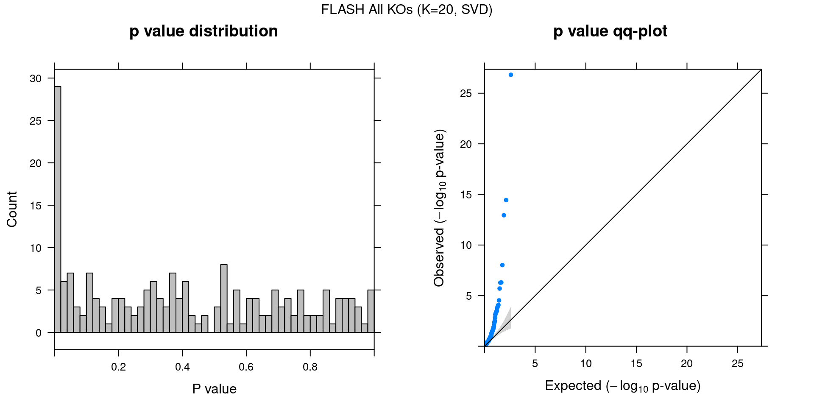

Guided Factor Analysis on TCGA BRCA Gene Expression Data
– Normalization: TMM, Guides: LOF and Missense Mutations Separated
Yifan Zhou (zhouyf@uchicago.edu)
2021-02-18
1 Data Description
References: Perspective on Oncogenic Processes at the End of the Beginning of Cancer Genomics.
Data source:
FireBrowse TCGA BRCA Archives.
Samples:
TCGA breast invasive carcinoma (BRCA) tumor samples in file “illuminahiseq_rnaseq-gene_expression”.
To avoid possible confounding due to gender and race, we confined our study samples to be only from female Caucasian subjects.
In addition, only samples with somatic mutation annotation were kept, resulted in 573 samples.
Genes:
Only the top 10k variable genes in samples of consideration were kept. (Variance was calculated based on the TMM-normalized log2(CPM) data.)
Normalization:
Raw counts normalized by TMM using edgeR, converted to log2(CPM), then corrected for subject age and tumor purity. The corrected and scaled expression data were used as input for subsequent factor analysis.
Perturbations:
Somatic mutation status of selected frequently mutated driver genes (TP53, CDH1, GATA3, MAP3K1, PIK3CA).
Mutations were classified into 2 types: missense mutations and loss of function (LOF) mutations.
| Mutation | TP53_LOF | TP53_mis | CDH1_LOF | CDH1_mis | GATA3_LOF |
| Num_cells | 71 | 100 | 34 | 8 | 58 |
| Mutation | GATA3_mis | MAP3K1_LOF | MAP3K1_mis | PIK3CA_LOF | PIK3CA_mis |
| Num_cells | 5 | 37 | 10 | 6 | 187 |
2 Guided results
Here, our “guide”, \(G\) matrix, consists of the somatic mutation status (missense and LOF separated) of top 5 driver genes across samples.
We specified 20 factors in our model. In each case, Gibbs sampling was conducted for 2000 iterations, and the posterior mean estimates were averaged over the last 500 iterations.
2.1 SVD Initialization
2.1.1 Local False Sign Rate (LFSR)
For a given GSFA inference result, we can estimate the effect a certain KO condition \(m\) has on the expression of gene \(j\) by computing the LFSR of \(\beta_{m\cdot} \cdot W_{j\cdot}\).
| KO | TP53_LOF | TP53_mis | CDH1_LOF | CDH1_mis | GATA3_LOF |
| Num_genes | 7349 | 7173 | 3769 | 0 | 3583 |
| KO | GATA3_mis | MAP3K1_LOF | MAP3K1_mis | PIK3CA_LOF | PIK3CA_mis |
| Num_genes | 0 | 119 | 0 | 0 | 6699 |
2.1.2 Factor ~ KO Beta PIP
2.1.3 Factor ~ KO Posterior Association
2.1.4 Beta PIP vs P-Value
2.1.5 Correlation btw Factors
3 Gene Ontology Enrichment Analysis
Statistical test: hypergeometric test;
GO category: Biological Process.
3.1 GO enrichment per factor
Target: Genes w/ PIP > 0.95 in each factor;
Backgroud: all 10000 genes used in factor analysis.
GO terms that passed over-representation test fold change \(\geq\) 1.5 and q value \(<\) 0.05:
| ID | Description | GeneRatio | BgRatio | FoldChange | pvalue | qvalue | GS_size | |
|---|---|---|---|---|---|---|---|---|
| GO:0030199 | GO:0030199 | collagen fibril organization | 35/4365 | 41/8380 | 1.64 | 7.68e-06 | 0.00181 | 41 |
| GO:1900449 | GO:1900449 | regulation of glutamate receptor signaling pathway | 30/4365 | 34/8380 | 1.69 | 8.66e-06 | 0.00194 | 34 |
| GO:0060996 | GO:0060996 | dendritic spine development | 41/4365 | 51/8380 | 1.54 | 2.51e-05 | 0.00417 | 51 |
| GO:0006415 | GO:0006415 | translational termination | 12/4365 | 12/8380 | 1.92 | 3.96e-04 | 0.03225 | 12 |
| GO:0051646 | GO:0051646 | mitochondrion localization | 15/4365 | 16/8380 | 1.80 | 4.57e-04 | 0.03469 | 16 |
| GO:0043536 | GO:0043536 | positive regulation of blood vessel endothelial cell migration | 26/4365 | 32/8380 | 1.56 | 6.01e-04 | 0.03895 | 32 |
| GO:0010714 | GO:0010714 | positive regulation of collagen metabolic process | 17/4365 | 19/8380 | 1.72 | 6.69e-04 | 0.04080 | 19 |
| GO:0070125 | GO:0070125 | mitochondrial translational elongation | 11/4365 | 11/8380 | 1.92 | 7.61e-04 | 0.04262 | 11 |
| GO:0070126 | GO:0070126 | mitochondrial translational termination | 11/4365 | 11/8380 | 1.92 | 7.61e-04 | 0.04262 | 11 |
| GO:0140053 | GO:0140053 | mitochondrial gene expression | 14/4365 | 15/8380 | 1.79 | 8.27e-04 | 0.04518 | 15 |
| GO:0060997 | GO:0060997 | dendritic spine morphogenesis | 29/4365 | 37/8380 | 1.50 | 8.82e-04 | 0.04701 | 37 |
| ID | Description | GeneRatio | BgRatio | FoldChange | pvalue | qvalue | GS_size | |
|---|---|---|---|---|---|---|---|---|
| GO:0006364 | GO:0006364 | rRNA processing | 26/5268 | 27/8380 | 1.53 | 5.99e-05 | 0.0179 | 27 |
| GO:0006613 | GO:0006613 | cotranslational protein targeting to membrane | 19/5268 | 19/8380 | 1.59 | 1.46e-04 | 0.0251 | 19 |
| GO:0006614 | GO:0006614 | SRP-dependent cotranslational protein targeting to membrane | 19/5268 | 19/8380 | 1.59 | 1.46e-04 | 0.0251 | 19 |
| GO:0007257 | GO:0007257 | activation of JUN kinase activity | 23/5268 | 24/8380 | 1.52 | 2.17e-04 | 0.0286 | 24 |
| GO:0032148 | GO:0032148 | activation of protein kinase B activity | 18/5268 | 18/8380 | 1.59 | 2.33e-04 | 0.0289 | 18 |
| ID | Description | GeneRatio | BgRatio | FoldChange | pvalue | qvalue | GS_size | |
|---|---|---|---|---|---|---|---|---|
| GO:0030198 | GO:0030198 | extracellular matrix organization | 204/2981 | 290/8380 | 1.98 | 1.59e-34 | 6.98e-31 | 290 |
| GO:0043062 | GO:0043062 | extracellular structure organization | 218/2981 | 326/8380 | 1.88 | 1.05e-31 | 2.29e-28 | 326 |
| GO:0001501 | GO:0001501 | skeletal system development | 201/2981 | 351/8380 | 1.61 | 2.27e-17 | 3.31e-14 | 351 |
| GO:0030199 | GO:0030199 | collagen fibril organization | 35/2981 | 41/8380 | 2.40 | 6.19e-11 | 3.38e-08 | 41 |
| GO:0001503 | GO:0001503 | ossification | 137/2981 | 252/8380 | 1.53 | 4.91e-10 | 2.39e-07 | 252 |
| GO:0061448 | GO:0061448 | connective tissue development | 107/2981 | 190/8380 | 1.58 | 3.01e-09 | 8.78e-07 | 190 |
| GO:0051216 | GO:0051216 | cartilage development | 90/2981 | 154/8380 | 1.64 | 4.59e-09 | 1.19e-06 | 154 |
| GO:0048705 | GO:0048705 | skeletal system morphogenesis | 98/2981 | 172/8380 | 1.60 | 6.11e-09 | 1.48e-06 | 172 |
| GO:0090130 | GO:0090130 | tissue migration | 99/2981 | 176/8380 | 1.58 | 1.28e-08 | 2.94e-06 | 176 |
| GO:0035924 | GO:0035924 | cellular response to vascular endothelial growth factor stimulus | 30/2981 | 37/8380 | 2.28 | 1.72e-08 | 3.42e-06 | 37 |
| GO:0010631 | GO:0010631 | epithelial cell migration | 95/2981 | 169/8380 | 1.58 | 2.62e-08 | 4.99e-06 | 169 |
| GO:0090287 | GO:0090287 | regulation of cellular response to growth factor stimulus | 94/2981 | 167/8380 | 1.58 | 2.84e-08 | 5.18e-06 | 167 |
| GO:0010810 | GO:0010810 | regulation of cell-substrate adhesion | 79/2981 | 135/8380 | 1.65 | 3.71e-08 | 6.50e-06 | 135 |
| GO:0090132 | GO:0090132 | epithelium migration | 95/2981 | 170/8380 | 1.57 | 3.89e-08 | 6.55e-06 | 170 |
| GO:0007044 | GO:0007044 | cell-substrate junction assembly | 40/2981 | 57/8380 | 1.97 | 1.02e-07 | 1.60e-05 | 57 |
| GO:0034330 | GO:0034330 | cell junction organization | 96/2981 | 175/8380 | 1.54 | 1.12e-07 | 1.69e-05 | 175 |
| GO:0038084 | GO:0038084 | vascular endothelial growth factor signaling pathway | 22/2981 | 26/8380 | 2.38 | 3.63e-07 | 5.30e-05 | 26 |
| GO:0006023 | GO:0006023 | aminoglycan biosynthetic process | 48/2981 | 75/8380 | 1.80 | 4.62e-07 | 6.39e-05 | 75 |
| GO:0060348 | GO:0060348 | bone development | 79/2981 | 141/8380 | 1.58 | 4.67e-07 | 6.39e-05 | 141 |
| GO:0034329 | GO:0034329 | cell junction assembly | 78/2981 | 139/8380 | 1.58 | 5.07e-07 | 6.72e-05 | 139 |
| GO:0002062 | GO:0002062 | chondrocyte differentiation | 54/2981 | 89/8380 | 1.71 | 1.11e-06 | 1.35e-04 | 89 |
| GO:0010632 | GO:0010632 | regulation of epithelial cell migration | 72/2981 | 128/8380 | 1.58 | 1.22e-06 | 1.45e-04 | 128 |
| GO:0006024 | GO:0006024 | glycosaminoglycan biosynthetic process | 46/2981 | 73/8380 | 1.77 | 1.53e-06 | 1.76e-04 | 73 |
| GO:0010634 | GO:0010634 | positive regulation of epithelial cell migration | 52/2981 | 87/8380 | 1.68 | 3.30e-06 | 3.53e-04 | 87 |
| GO:0032330 | GO:0032330 | regulation of chondrocyte differentiation | 27/2981 | 37/8380 | 2.05 | 3.84e-06 | 4.00e-04 | 37 |
| GO:0061035 | GO:0061035 | regulation of cartilage development | 33/2981 | 49/8380 | 1.89 | 5.70e-06 | 5.55e-04 | 49 |
| GO:0043542 | GO:0043542 | endothelial cell migration | 67/2981 | 121/8380 | 1.56 | 5.95e-06 | 5.66e-04 | 121 |
| GO:0042476 | GO:0042476 | odontogenesis | 56/2981 | 97/8380 | 1.62 | 6.33e-06 | 5.77e-04 | 97 |
| GO:0032963 | GO:0032963 | collagen metabolic process | 46/2981 | 76/8380 | 1.70 | 7.52e-06 | 6.72e-04 | 76 |
| GO:0090288 | GO:0090288 | negative regulation of cellular response to growth factor stimulus | 53/2981 | 91/8380 | 1.64 | 7.83e-06 | 6.85e-04 | 91 |
| GO:0017015 | GO:0017015 | regulation of transforming growth factor beta receptor signaling pathway | 37/2981 | 58/8380 | 1.79 | 1.07e-05 | 9.16e-04 | 58 |
| GO:0001935 | GO:0001935 | endothelial cell proliferation | 54/2981 | 94/8380 | 1.61 | 1.13e-05 | 9.48e-04 | 94 |
| GO:0010811 | GO:0010811 | positive regulation of cell-substrate adhesion | 48/2981 | 82/8380 | 1.65 | 1.73e-05 | 1.43e-03 | 82 |
| GO:0022617 | GO:0022617 | extracellular matrix disassembly | 38/2981 | 61/8380 | 1.75 | 1.82e-05 | 1.48e-03 | 61 |
| GO:1903844 | GO:1903844 | regulation of cellular response to transforming growth factor beta stimulus | 37/2981 | 59/8380 | 1.76 | 1.89e-05 | 1.50e-03 | 59 |
| GO:1903053 | GO:1903053 | regulation of extracellular matrix organization | 20/2981 | 26/8380 | 2.16 | 1.99e-05 | 1.55e-03 | 26 |
| GO:0001936 | GO:0001936 | regulation of endothelial cell proliferation | 48/2981 | 83/8380 | 1.63 | 2.69e-05 | 2.00e-03 | 83 |
| GO:0051893 | GO:0051893 | regulation of focal adhesion assembly | 23/2981 | 32/8380 | 2.02 | 3.07e-05 | 2.13e-03 | 32 |
| GO:0090109 | GO:0090109 | regulation of cell-substrate junction assembly | 23/2981 | 32/8380 | 2.02 | 3.07e-05 | 2.13e-03 | 32 |
| GO:0031581 | GO:0031581 | hemidesmosome assembly | 10/2981 | 10/8380 | 2.81 | 3.21e-05 | 2.19e-03 | 10 |
| GO:0002040 | GO:0002040 | sprouting angiogenesis | 45/2981 | 77/8380 | 1.64 | 3.33e-05 | 2.19e-03 | 77 |
| GO:1903391 | GO:1903391 | regulation of adherens junction organization | 24/2981 | 34/8380 | 1.98 | 3.34e-05 | 2.19e-03 | 34 |
| GO:2000181 | GO:2000181 | negative regulation of blood vessel morphogenesis | 42/2981 | 71/8380 | 1.66 | 4.06e-05 | 2.57e-03 | 71 |
| GO:0060349 | GO:0060349 | bone morphogenesis | 48/2981 | 84/8380 | 1.61 | 4.13e-05 | 2.58e-03 | 84 |
| GO:0060021 | GO:0060021 | roof of mouth development | 39/2981 | 65/8380 | 1.69 | 4.87e-05 | 2.84e-03 | 65 |
| GO:0002526 | GO:0002526 | acute inflammatory response | 62/2981 | 116/8380 | 1.50 | 5.58e-05 | 3.02e-03 | 116 |
| GO:0002673 | GO:0002673 | regulation of acute inflammatory response | 43/2981 | 74/8380 | 1.63 | 5.98e-05 | 3.19e-03 | 74 |
| GO:0006022 | GO:0006022 | aminoglycan metabolic process | 59/2981 | 110/8380 | 1.51 | 7.34e-05 | 3.83e-03 | 110 |
| GO:0010594 | GO:0010594 | regulation of endothelial cell migration | 50/2981 | 90/8380 | 1.56 | 7.86e-05 | 4.00e-03 | 90 |
| GO:0030203 | GO:0030203 | glycosaminoglycan metabolic process | 56/2981 | 104/8380 | 1.51 | 9.64e-05 | 4.80e-03 | 104 |
| GO:0016525 | GO:0016525 | negative regulation of angiogenesis | 40/2981 | 69/8380 | 1.63 | 1.15e-04 | 5.61e-03 | 69 |
| GO:1901343 | GO:1901343 | negative regulation of vasculature development | 45/2981 | 80/8380 | 1.58 | 1.19e-04 | 5.73e-03 | 80 |
| GO:0007179 | GO:0007179 | transforming growth factor beta receptor signaling pathway | 52/2981 | 96/8380 | 1.52 | 1.38e-04 | 6.31e-03 | 96 |
| GO:0010595 | GO:0010595 | positive regulation of endothelial cell migration | 35/2981 | 59/8380 | 1.67 | 1.62e-04 | 7.18e-03 | 59 |
| GO:0002313 | GO:0002313 | mature B cell differentiation involved in immune response | 12/2981 | 14/8380 | 2.41 | 1.67e-04 | 7.30e-03 | 14 |
| GO:0043534 | GO:0043534 | blood vessel endothelial cell migration | 39/2981 | 68/8380 | 1.61 | 1.92e-04 | 8.22e-03 | 68 |
| GO:0034332 | GO:0034332 | adherens junction organization | 47/2981 | 86/8380 | 1.54 | 2.16e-04 | 9.18e-03 | 86 |
| GO:0007045 | GO:0007045 | cell-substrate adherens junction assembly | 28/2981 | 45/8380 | 1.75 | 2.37e-04 | 9.86e-03 | 45 |
| GO:0048041 | GO:0048041 | focal adhesion assembly | 28/2981 | 45/8380 | 1.75 | 2.37e-04 | 9.86e-03 | 45 |
| GO:0001938 | GO:0001938 | positive regulation of endothelial cell proliferation | 36/2981 | 62/8380 | 1.63 | 2.40e-04 | 9.89e-03 | 62 |
| GO:0007229 | GO:0007229 | integrin-mediated signaling pathway | 41/2981 | 73/8380 | 1.58 | 2.47e-04 | 1.01e-02 | 73 |
| GO:0097756 | GO:0097756 | negative regulation of blood vessel diameter | 35/2981 | 60/8380 | 1.64 | 2.57e-04 | 1.04e-02 | 60 |
| GO:0002042 | GO:0002042 | cell migration involved in sprouting angiogenesis | 24/2981 | 37/8380 | 1.82 | 2.65e-04 | 1.06e-02 | 37 |
| GO:0032964 | GO:0032964 | collagen biosynthetic process | 22/2981 | 33/8380 | 1.87 | 2.67e-04 | 1.06e-02 | 33 |
| GO:0042310 | GO:0042310 | vasoconstriction | 34/2981 | 58/8380 | 1.65 | 2.76e-04 | 1.08e-02 | 58 |
| GO:0043535 | GO:0043535 | regulation of blood vessel endothelial cell migration | 30/2981 | 50/8380 | 1.69 | 3.58e-04 | 1.29e-02 | 50 |
| GO:1902547 | GO:1902547 | regulation of cellular response to vascular endothelial growth factor stimulus | 11/2981 | 13/8380 | 2.38 | 4.06e-04 | 1.42e-02 | 13 |
| GO:0006939 | GO:0006939 | smooth muscle contraction | 44/2981 | 81/8380 | 1.53 | 4.06e-04 | 1.42e-02 | 81 |
| GO:0010765 | GO:0010765 | positive regulation of sodium ion transport | 16/2981 | 22/8380 | 2.04 | 4.24e-04 | 1.45e-02 | 22 |
| GO:0060840 | GO:0060840 | artery development | 34/2981 | 59/8380 | 1.62 | 4.31e-04 | 1.46e-02 | 59 |
| GO:0030204 | GO:0030204 | chondroitin sulfate metabolic process | 17/2981 | 24/8380 | 1.99 | 4.61e-04 | 1.55e-02 | 24 |
| GO:0001656 | GO:0001656 | metanephros development | 42/2981 | 77/8380 | 1.53 | 4.86e-04 | 1.58e-02 | 77 |
| GO:0050654 | GO:0050654 | chondroitin sulfate proteoglycan metabolic process | 18/2981 | 26/8380 | 1.95 | 4.87e-04 | 1.58e-02 | 26 |
| GO:0090049 | GO:0090049 | regulation of cell migration involved in sprouting angiogenesis | 18/2981 | 26/8380 | 1.95 | 4.87e-04 | 1.58e-02 | 26 |
| GO:0072210 | GO:0072210 | metanephric nephron development | 23/2981 | 36/8380 | 1.80 | 4.93e-04 | 1.59e-02 | 36 |
| GO:0043536 | GO:0043536 | positive regulation of blood vessel endothelial cell migration | 21/2981 | 32/8380 | 1.84 | 5.09e-04 | 1.63e-02 | 32 |
| GO:0042698 | GO:0042698 | ovulation cycle | 30/2981 | 51/8380 | 1.65 | 5.76e-04 | 1.79e-02 | 51 |
| GO:0007272 | GO:0007272 | ensheathment of neurons | 40/2981 | 73/8380 | 1.54 | 5.81e-04 | 1.79e-02 | 73 |
| GO:0008366 | GO:0008366 | axon ensheathment | 40/2981 | 73/8380 | 1.54 | 5.81e-04 | 1.79e-02 | 73 |
| GO:0032288 | GO:0032288 | myelin assembly | 9/2981 | 10/8380 | 2.53 | 6.16e-04 | 1.86e-02 | 10 |
| GO:0090101 | GO:0090101 | negative regulation of transmembrane receptor protein serine/threonine kinase signaling pathway | 39/2981 | 71/8380 | 1.54 | 6.35e-04 | 1.86e-02 | 71 |
| GO:1903510 | GO:1903510 | mucopolysaccharide metabolic process | 39/2981 | 71/8380 | 1.54 | 6.35e-04 | 1.86e-02 | 71 |
| GO:0002335 | GO:0002335 | mature B cell differentiation | 13/2981 | 17/8380 | 2.15 | 6.96e-04 | 1.98e-02 | 17 |
| GO:0030206 | GO:0030206 | chondroitin sulfate biosynthetic process | 13/2981 | 17/8380 | 2.15 | 6.96e-04 | 1.98e-02 | 17 |
| GO:0032331 | GO:0032331 | negative regulation of chondrocyte differentiation | 13/2981 | 17/8380 | 2.15 | 6.96e-04 | 1.98e-02 | 17 |
| GO:0019229 | GO:0019229 | regulation of vasoconstriction | 27/2981 | 45/8380 | 1.69 | 7.00e-04 | 1.98e-02 | 45 |
| GO:1901888 | GO:1901888 | regulation of cell junction assembly | 27/2981 | 45/8380 | 1.69 | 7.00e-04 | 1.98e-02 | 45 |
| GO:0070613 | GO:0070613 | regulation of protein processing | 41/2981 | 76/8380 | 1.52 | 7.62e-04 | 2.11e-02 | 76 |
| GO:0050650 | GO:0050650 | chondroitin sulfate proteoglycan biosynthetic process | 14/2981 | 19/8380 | 2.07 | 8.03e-04 | 2.18e-02 | 19 |
| GO:0085029 | GO:0085029 | extracellular matrix assembly | 14/2981 | 19/8380 | 2.07 | 8.03e-04 | 2.18e-02 | 19 |
| GO:0050918 | GO:0050918 | positive chemotaxis | 31/2981 | 54/8380 | 1.61 | 8.35e-04 | 2.25e-02 | 54 |
| GO:0030512 | GO:0030512 | negative regulation of transforming growth factor beta receptor signaling pathway | 23/2981 | 37/8380 | 1.75 | 8.66e-04 | 2.31e-02 | 37 |
| GO:0035904 | GO:0035904 | aorta development | 22/2981 | 35/8380 | 1.77 | 9.02e-04 | 2.37e-02 | 35 |
| GO:0042552 | GO:0042552 | myelination | 39/2981 | 72/8380 | 1.52 | 9.15e-04 | 2.38e-02 | 72 |
| GO:0050926 | GO:0050926 | regulation of positive chemotaxis | 16/2981 | 23/8380 | 1.96 | 9.33e-04 | 2.41e-02 | 23 |
| GO:0071634 | GO:0071634 | regulation of transforming growth factor beta production | 17/2981 | 25/8380 | 1.91 | 9.64e-04 | 2.41e-02 | 25 |
| GO:0010712 | GO:0010712 | regulation of collagen metabolic process | 19/2981 | 29/8380 | 1.84 | 9.73e-04 | 2.41e-02 | 29 |
| GO:0048566 | GO:0048566 | embryonic digestive tract development | 19/2981 | 29/8380 | 1.84 | 9.73e-04 | 2.41e-02 | 29 |
| GO:0051580 | GO:0051580 | regulation of neurotransmitter uptake | 10/2981 | 12/8380 | 2.34 | 9.75e-04 | 2.41e-02 | 12 |
| GO:1900746 | GO:1900746 | regulation of vascular endothelial growth factor signaling pathway | 10/2981 | 12/8380 | 2.34 | 9.75e-04 | 2.41e-02 | 12 |
| GO:0048260 | GO:0048260 | positive regulation of receptor-mediated endocytosis | 18/2981 | 27/8380 | 1.87 | 9.76e-04 | 2.41e-02 | 27 |
| GO:0034333 | GO:0034333 | adherens junction assembly | 28/2981 | 48/8380 | 1.64 | 1.05e-03 | 2.53e-02 | 48 |
| GO:0042475 | GO:0042475 | odontogenesis of dentin-containing tooth | 36/2981 | 66/8380 | 1.53 | 1.20e-03 | 2.84e-02 | 66 |
| GO:0006027 | GO:0006027 | glycosaminoglycan catabolic process | 26/2981 | 44/8380 | 1.66 | 1.21e-03 | 2.84e-02 | 44 |
| GO:1903670 | GO:1903670 | regulation of sprouting angiogenesis | 25/2981 | 42/8380 | 1.67 | 1.29e-03 | 2.94e-02 | 42 |
| GO:0002063 | GO:0002063 | chondrocyte development | 23/2981 | 38/8380 | 1.70 | 1.46e-03 | 3.25e-02 | 38 |
| GO:1903845 | GO:1903845 | negative regulation of cellular response to transforming growth factor beta stimulus | 23/2981 | 38/8380 | 1.70 | 1.46e-03 | 3.25e-02 | 38 |
| GO:0030038 | GO:0030038 | contractile actin filament bundle assembly | 29/2981 | 51/8380 | 1.60 | 1.50e-03 | 3.28e-02 | 51 |
| GO:0043149 | GO:0043149 | stress fiber assembly | 29/2981 | 51/8380 | 1.60 | 1.50e-03 | 3.28e-02 | 51 |
| GO:0071880 | GO:0071880 | adenylate cyclase-activating adrenergic receptor signaling pathway | 12/2981 | 16/8380 | 2.11 | 1.52e-03 | 3.29e-02 | 16 |
| GO:1903010 | GO:1903010 | regulation of bone development | 12/2981 | 16/8380 | 2.11 | 1.52e-03 | 3.29e-02 | 16 |
| GO:0044273 | GO:0044273 | sulfur compound catabolic process | 22/2981 | 36/8380 | 1.72 | 1.55e-03 | 3.33e-02 | 36 |
| GO:0035136 | GO:0035136 | forelimb morphogenesis | 21/2981 | 34/8380 | 1.74 | 1.63e-03 | 3.48e-02 | 34 |
| GO:0035987 | GO:0035987 | endodermal cell differentiation | 21/2981 | 34/8380 | 1.74 | 1.63e-03 | 3.48e-02 | 34 |
| GO:0014829 | GO:0014829 | vascular smooth muscle contraction | 13/2981 | 18/8380 | 2.03 | 1.69e-03 | 3.59e-02 | 18 |
| GO:0050772 | GO:0050772 | positive regulation of axonogenesis | 27/2981 | 47/8380 | 1.61 | 1.76e-03 | 3.69e-02 | 47 |
| GO:0006929 | GO:0006929 | substrate-dependent cell migration | 14/2981 | 20/8380 | 1.97 | 1.80e-03 | 3.77e-02 | 20 |
| GO:0060976 | GO:0060976 | coronary vasculature development | 18/2981 | 28/8380 | 1.81 | 1.83e-03 | 3.79e-02 | 28 |
| GO:0071526 | GO:0071526 | semaphorin-plexin signaling pathway | 18/2981 | 28/8380 | 1.81 | 1.83e-03 | 3.79e-02 | 28 |
| GO:0050927 | GO:0050927 | positive regulation of positive chemotaxis | 15/2981 | 22/8380 | 1.92 | 1.86e-03 | 3.79e-02 | 22 |
| GO:0061036 | GO:0061036 | positive regulation of cartilage development | 15/2981 | 22/8380 | 1.92 | 1.86e-03 | 3.79e-02 | 22 |
| GO:0010812 | GO:0010812 | negative regulation of cell-substrate adhesion | 24/2981 | 41/8380 | 1.65 | 2.21e-03 | 4.33e-02 | 41 |
| GO:0046849 | GO:0046849 | bone remodeling | 33/2981 | 61/8380 | 1.52 | 2.27e-03 | 4.42e-02 | 61 |
| GO:0030449 | GO:0030449 | regulation of complement activation | 23/2981 | 39/8380 | 1.66 | 2.37e-03 | 4.57e-02 | 39 |
| GO:0048709 | GO:0048709 | oligodendrocyte differentiation | 32/2981 | 59/8380 | 1.52 | 2.49e-03 | 4.75e-02 | 59 |
| ID | Description | GeneRatio | BgRatio | FoldChange | pvalue | qvalue | GS_size | |
|---|---|---|---|---|---|---|---|---|
| GO:0046649 | GO:0046649 | lymphocyte activation | 224/1216 | 416/8380 | 3.71 | 2.47e-84 | 8.79e-81 | 416 |
| GO:0002250 | GO:0002250 | adaptive immune response | 169/1216 | 270/8380 | 4.31 | 9.56e-77 | 1.70e-73 | 270 |
| GO:0050778 | GO:0050778 | positive regulation of immune response | 218/1216 | 443/8380 | 3.39 | 3.38e-72 | 4.00e-69 | 443 |
| GO:0002443 | GO:0002443 | leukocyte mediated immunity | 204/1216 | 435/8380 | 3.23 | 1.01e-62 | 9.01e-60 | 435 |
| GO:0002694 | GO:0002694 | regulation of leukocyte activation | 174/1216 | 334/8380 | 3.59 | 7.13e-62 | 5.07e-59 | 334 |
| GO:0050865 | GO:0050865 | regulation of cell activation | 182/1216 | 362/8380 | 3.46 | 1.21e-61 | 7.20e-59 | 362 |
| GO:0042110 | GO:0042110 | T cell activation | 164/1216 | 306/8380 | 3.69 | 1.49e-60 | 7.58e-58 | 306 |
| GO:0002263 | GO:0002263 | cell activation involved in immune response | 180/1216 | 381/8380 | 3.26 | 1.17e-55 | 5.21e-53 | 381 |
| GO:0002366 | GO:0002366 | leukocyte activation involved in immune response | 179/1216 | 378/8380 | 3.26 | 1.57e-55 | 6.22e-53 | 378 |
| GO:0002764 | GO:0002764 | immune response-regulating signaling pathway | 153/1216 | 291/8380 | 3.62 | 6.38e-55 | 2.27e-52 | 291 |
| GO:0002253 | GO:0002253 | activation of immune response | 160/1216 | 321/8380 | 3.43 | 2.58e-53 | 8.33e-51 | 321 |
| GO:0002757 | GO:0002757 | immune response-activating signal transduction | 144/1216 | 269/8380 | 3.69 | 6.18e-53 | 1.83e-50 | 269 |
| GO:0051249 | GO:0051249 | regulation of lymphocyte activation | 146/1216 | 276/8380 | 3.65 | 8.29e-53 | 2.27e-50 | 276 |
| GO:0002768 | GO:0002768 | immune response-regulating cell surface receptor signaling pathway | 123/1216 | 207/8380 | 4.09 | 6.35e-52 | 1.61e-49 | 207 |
| GO:0001816 | GO:0001816 | cytokine production | 195/1216 | 459/8380 | 2.93 | 2.57e-51 | 6.08e-49 | 459 |
| GO:0002429 | GO:0002429 | immune response-activating cell surface receptor signaling pathway | 114/1216 | 185/8380 | 4.25 | 1.92e-50 | 4.27e-48 | 185 |
| GO:0050867 | GO:0050867 | positive regulation of cell activation | 125/1216 | 220/8380 | 3.92 | 9.69e-50 | 2.03e-47 | 220 |
| GO:0002696 | GO:0002696 | positive regulation of leukocyte activation | 122/1216 | 212/8380 | 3.97 | 2.27e-49 | 4.48e-47 | 212 |
| GO:0002521 | GO:0002521 | leukocyte differentiation | 154/1216 | 320/8380 | 3.32 | 1.00e-48 | 1.88e-46 | 320 |
| GO:0019221 | GO:0019221 | cytokine-mediated signaling pathway | 191/1216 | 465/8380 | 2.83 | 1.59e-47 | 2.83e-45 | 465 |
| GO:0002274 | GO:0002274 | myeloid leukocyte activation | 164/1216 | 362/8380 | 3.12 | 1.84e-47 | 3.11e-45 | 362 |
| GO:0007159 | GO:0007159 | leukocyte cell-cell adhesion | 125/1216 | 231/8380 | 3.73 | 1.43e-46 | 2.32e-44 | 231 |
| GO:0051251 | GO:0051251 | positive regulation of lymphocyte activation | 107/1216 | 180/8380 | 4.10 | 3.44e-45 | 5.32e-43 | 180 |
| GO:0050863 | GO:0050863 | regulation of T cell activation | 118/1216 | 217/8380 | 3.75 | 2.99e-44 | 4.43e-42 | 217 |
| GO:0001817 | GO:0001817 | regulation of cytokine production | 173/1216 | 415/8380 | 2.87 | 5.96e-44 | 8.47e-42 | 415 |
| GO:0050851 | GO:0050851 | antigen receptor-mediated signaling pathway | 81/1216 | 118/8380 | 4.73 | 3.27e-41 | 4.47e-39 | 118 |
| GO:1903039 | GO:1903039 | positive regulation of leukocyte cell-cell adhesion | 95/1216 | 157/8380 | 4.17 | 4.25e-41 | 5.60e-39 | 157 |
| GO:1903037 | GO:1903037 | regulation of leukocyte cell-cell adhesion | 111/1216 | 207/8380 | 3.70 | 7.62e-41 | 9.67e-39 | 207 |
| GO:0030098 | GO:0030098 | lymphocyte differentiation | 114/1216 | 217/8380 | 3.62 | 8.92e-41 | 1.09e-38 | 217 |
| GO:0032943 | GO:0032943 | mononuclear cell proliferation | 103/1216 | 183/8380 | 3.88 | 1.74e-40 | 2.07e-38 | 183 |
| GO:0046651 | GO:0046651 | lymphocyte proliferation | 102/1216 | 181/8380 | 3.88 | 3.67e-40 | 4.21e-38 | 181 |
| GO:0031347 | GO:0031347 | regulation of defense response | 174/1216 | 445/8380 | 2.69 | 1.07e-39 | 1.19e-37 | 445 |
| GO:0050870 | GO:0050870 | positive regulation of T cell activation | 90/1216 | 147/8380 | 4.22 | 1.48e-39 | 1.59e-37 | 147 |
| GO:0070661 | GO:0070661 | leukocyte proliferation | 106/1216 | 196/8380 | 3.73 | 1.79e-39 | 1.88e-37 | 196 |
| GO:0030097 | GO:0030097 | hemopoiesis | 181/1216 | 477/8380 | 2.61 | 3.20e-39 | 3.25e-37 | 477 |
| GO:0002460 | GO:0002460 | adaptive immune response based on somatic recombination of immune receptors built from immunoglobulin superfamily domains | 96/1216 | 172/8380 | 3.85 | 2.42e-37 | 2.39e-35 | 172 |
| GO:0001819 | GO:0001819 | positive regulation of cytokine production | 126/1216 | 274/8380 | 3.17 | 3.51e-37 | 3.38e-35 | 274 |
| GO:0002697 | GO:0002697 | regulation of immune effector process | 118/1216 | 248/8380 | 3.28 | 1.22e-36 | 1.14e-34 | 248 |
| GO:0002275 | GO:0002275 | myeloid cell activation involved in immune response | 129/1216 | 291/8380 | 3.05 | 5.44e-36 | 4.96e-34 | 291 |
| GO:0043299 | GO:0043299 | leukocyte degranulation | 126/1216 | 283/8380 | 3.07 | 2.16e-35 | 1.92e-33 | 283 |
| GO:0022409 | GO:0022409 | positive regulation of cell-cell adhesion | 98/1216 | 186/8380 | 3.63 | 3.03e-35 | 2.63e-33 | 186 |
| GO:0070663 | GO:0070663 | regulation of leukocyte proliferation | 90/1216 | 162/8380 | 3.83 | 7.88e-35 | 6.67e-33 | 162 |
| GO:0032944 | GO:0032944 | regulation of mononuclear cell proliferation | 88/1216 | 156/8380 | 3.89 | 9.04e-35 | 7.36e-33 | 156 |
| GO:0002444 | GO:0002444 | myeloid leukocyte mediated immunity | 127/1216 | 290/8380 | 3.02 | 9.11e-35 | 7.36e-33 | 290 |
| GO:0002449 | GO:0002449 | lymphocyte mediated immunity | 89/1216 | 161/8380 | 3.81 | 3.20e-34 | 2.53e-32 | 161 |
| GO:0050670 | GO:0050670 | regulation of lymphocyte proliferation | 87/1216 | 155/8380 | 3.87 | 3.72e-34 | 2.88e-32 | 155 |
| GO:0050900 | GO:0050900 | leukocyte migration | 130/1216 | 319/8380 | 2.81 | 1.08e-31 | 8.15e-30 | 319 |
| GO:0036230 | GO:0036230 | granulocyte activation | 115/1216 | 263/8380 | 3.01 | 2.00e-31 | 1.48e-29 | 263 |
| GO:0042119 | GO:0042119 | neutrophil activation | 113/1216 | 260/8380 | 3.00 | 1.36e-30 | 9.84e-29 | 260 |
| GO:0022407 | GO:0022407 | regulation of cell-cell adhesion | 117/1216 | 276/8380 | 2.92 | 1.94e-30 | 1.38e-28 | 276 |
| GO:0002703 | GO:0002703 | regulation of leukocyte mediated immunity | 76/1216 | 134/8380 | 3.91 | 2.36e-30 | 1.64e-28 | 134 |
| GO:0042113 | GO:0042113 | B cell activation | 74/1216 | 131/8380 | 3.89 | 2.01e-29 | 1.37e-27 | 131 |
| GO:0002283 | GO:0002283 | neutrophil activation involved in immune response | 109/1216 | 252/8380 | 2.98 | 2.63e-29 | 1.77e-27 | 252 |
| GO:0002683 | GO:0002683 | negative regulation of immune system process | 117/1216 | 284/8380 | 2.84 | 4.60e-29 | 3.03e-27 | 284 |
| GO:0030217 | GO:0030217 | T cell differentiation | 83/1216 | 162/8380 | 3.53 | 7.99e-29 | 5.17e-27 | 162 |
| GO:0045785 | GO:0045785 | positive regulation of cell adhesion | 117/1216 | 287/8380 | 2.81 | 1.45e-28 | 9.19e-27 | 287 |
| GO:0070665 | GO:0070665 | positive regulation of leukocyte proliferation | 65/1216 | 107/8380 | 4.19 | 1.61e-28 | 1.01e-26 | 107 |
| GO:0043312 | GO:0043312 | neutrophil degranulation | 107/1216 | 249/8380 | 2.96 | 1.75e-28 | 1.07e-26 | 249 |
| GO:0002699 | GO:0002699 | positive regulation of immune effector process | 76/1216 | 141/8380 | 3.71 | 2.29e-28 | 1.38e-26 | 141 |
| GO:0032946 | GO:0032946 | positive regulation of mononuclear cell proliferation | 64/1216 | 105/8380 | 4.20 | 3.24e-28 | 1.92e-26 | 105 |
| GO:0002446 | GO:0002446 | neutrophil mediated immunity | 108/1216 | 256/8380 | 2.91 | 6.47e-28 | 3.77e-26 | 256 |
| GO:0050671 | GO:0050671 | positive regulation of lymphocyte proliferation | 63/1216 | 104/8380 | 4.17 | 1.42e-27 | 8.15e-26 | 104 |
| GO:0042098 | GO:0042098 | T cell proliferation | 71/1216 | 129/8380 | 3.79 | 2.58e-27 | 1.45e-25 | 129 |
| GO:0046631 | GO:0046631 | alpha-beta T cell activation | 60/1216 | 97/8380 | 4.26 | 5.13e-27 | 2.85e-25 | 97 |
| GO:0050852 | GO:0050852 | T cell receptor signaling pathway | 56/1216 | 87/8380 | 4.44 | 1.41e-26 | 7.70e-25 | 87 |
| GO:0034341 | GO:0034341 | response to interferon-gamma | 72/1216 | 135/8380 | 3.68 | 1.53e-26 | 8.22e-25 | 135 |
| GO:0045055 | GO:0045055 | regulated exocytosis | 154/1216 | 460/8380 | 2.31 | 3.05e-26 | 1.62e-24 | 460 |
| GO:0050727 | GO:0050727 | regulation of inflammatory response | 103/1216 | 251/8380 | 2.83 | 1.74e-25 | 9.10e-24 | 251 |
| GO:0030155 | GO:0030155 | regulation of cell adhesion | 152/1216 | 458/8380 | 2.29 | 1.90e-25 | 9.81e-24 | 458 |
| GO:0031349 | GO:0031349 | positive regulation of defense response | 109/1216 | 275/8380 | 2.73 | 1.99e-25 | 1.01e-23 | 275 |
| GO:0042102 | GO:0042102 | positive regulation of T cell proliferation | 51/1216 | 78/8380 | 4.51 | 8.82e-25 | 4.42e-23 | 78 |
| GO:0050853 | GO:0050853 | B cell receptor signaling pathway | 35/1216 | 40/8380 | 6.03 | 9.38e-25 | 4.63e-23 | 40 |
| GO:0002285 | GO:0002285 | lymphocyte activation involved in immune response | 58/1216 | 98/8380 | 4.08 | 9.92e-25 | 4.83e-23 | 98 |
| GO:0006909 | GO:0006909 | phagocytosis | 72/1216 | 143/8380 | 3.47 | 1.57e-24 | 7.56e-23 | 143 |
| GO:1902105 | GO:1902105 | regulation of leukocyte differentiation | 82/1216 | 179/8380 | 3.16 | 2.92e-24 | 1.39e-22 | 179 |
| GO:0009617 | GO:0009617 | response to bacterium | 135/1216 | 395/8380 | 2.36 | 5.59e-24 | 2.61e-22 | 395 |
| GO:0045088 | GO:0045088 | regulation of innate immune response | 91/1216 | 215/8380 | 2.92 | 9.34e-24 | 4.31e-22 | 215 |
| GO:0042129 | GO:0042129 | regulation of T cell proliferation | 62/1216 | 114/8380 | 3.75 | 1.30e-23 | 5.94e-22 | 114 |
| GO:0071346 | GO:0071346 | cellular response to interferon-gamma | 64/1216 | 121/8380 | 3.65 | 1.90e-23 | 8.55e-22 | 121 |
| GO:0002819 | GO:0002819 | regulation of adaptive immune response | 59/1216 | 107/8380 | 3.80 | 6.16e-23 | 2.74e-21 | 107 |
| GO:0002822 | GO:0002822 | regulation of adaptive immune response based on somatic recombination of immune receptors built from immunoglobulin superfamily domains | 55/1216 | 97/8380 | 3.91 | 2.97e-22 | 1.30e-20 | 97 |
| GO:0002695 | GO:0002695 | negative regulation of leukocyte activation | 59/1216 | 111/8380 | 3.66 | 7.56e-22 | 3.28e-20 | 111 |
| GO:1903706 | GO:1903706 | regulation of hemopoiesis | 97/1216 | 251/8380 | 2.66 | 9.41e-22 | 4.03e-20 | 251 |
| GO:0032609 | GO:0032609 | interferon-gamma production | 51/1216 | 87/8380 | 4.04 | 1.27e-21 | 5.38e-20 | 87 |
| GO:0050866 | GO:0050866 | negative regulation of cell activation | 63/1216 | 128/8380 | 3.39 | 6.28e-21 | 2.63e-19 | 128 |
| GO:0050663 | GO:0050663 | cytokine secretion | 69/1216 | 149/8380 | 3.19 | 6.59e-21 | 2.73e-19 | 149 |
| GO:0002705 | GO:0002705 | positive regulation of leukocyte mediated immunity | 50/1216 | 87/8380 | 3.96 | 1.08e-20 | 4.40e-19 | 87 |
| GO:0030595 | GO:0030595 | leukocyte chemotaxis | 75/1216 | 172/8380 | 3.00 | 1.11e-20 | 4.48e-19 | 172 |
| GO:0002237 | GO:0002237 | response to molecule of bacterial origin | 88/1216 | 224/8380 | 2.71 | 2.24e-20 | 8.97e-19 | 224 |
| GO:0060326 | GO:0060326 | cell chemotaxis | 88/1216 | 225/8380 | 2.70 | 3.18e-20 | 1.26e-18 | 225 |
| GO:0046634 | GO:0046634 | regulation of alpha-beta T cell activation | 42/1216 | 66/8380 | 4.39 | 5.99e-20 | 2.34e-18 | 66 |
| GO:0097529 | GO:0097529 | myeloid leukocyte migration | 70/1216 | 158/8380 | 3.05 | 7.56e-20 | 2.92e-18 | 158 |
| GO:0032103 | GO:0032103 | positive regulation of response to external stimulus | 83/1216 | 208/8380 | 2.75 | 8.85e-20 | 3.39e-18 | 208 |
| GO:0002706 | GO:0002706 | regulation of lymphocyte mediated immunity | 53/1216 | 100/8380 | 3.65 | 1.13e-19 | 4.29e-18 | 100 |
| GO:0002824 | GO:0002824 | positive regulation of adaptive immune response based on somatic recombination of immune receptors built from immunoglobulin superfamily domains | 42/1216 | 67/8380 | 4.32 | 1.38e-19 | 5.18e-18 | 67 |
| GO:0046632 | GO:0046632 | alpha-beta T cell differentiation | 43/1216 | 71/8380 | 4.17 | 3.45e-19 | 1.28e-17 | 71 |
| GO:0045619 | GO:0045619 | regulation of lymphocyte differentiation | 56/1216 | 112/8380 | 3.45 | 3.80e-19 | 1.39e-17 | 112 |
| GO:0051250 | GO:0051250 | negative regulation of lymphocyte activation | 50/1216 | 93/8380 | 3.71 | 5.54e-19 | 2.01e-17 | 93 |
| GO:0006897 | GO:0006897 | endocytosis | 125/1216 | 396/8380 | 2.18 | 6.56e-19 | 2.35e-17 | 396 |
| GO:0001909 | GO:0001909 | leukocyte mediated cytotoxicity | 46/1216 | 81/8380 | 3.91 | 7.54e-19 | 2.68e-17 | 81 |
| GO:0032649 | GO:0032649 | regulation of interferon-gamma production | 45/1216 | 78/8380 | 3.98 | 7.70e-19 | 2.71e-17 | 78 |
| GO:0002286 | GO:0002286 | T cell activation involved in immune response | 39/1216 | 61/8380 | 4.41 | 1.02e-18 | 3.55e-17 | 61 |
| GO:0050707 | GO:0050707 | regulation of cytokine secretion | 60/1216 | 128/8380 | 3.23 | 1.18e-18 | 4.07e-17 | 128 |
| GO:0045089 | GO:0045089 | positive regulation of innate immune response | 75/1216 | 184/8380 | 2.81 | 1.32e-18 | 4.52e-17 | 184 |
| GO:0002821 | GO:0002821 | positive regulation of adaptive immune response | 42/1216 | 70/8380 | 4.13 | 1.48e-18 | 5.03e-17 | 70 |
| GO:0050864 | GO:0050864 | regulation of B cell activation | 43/1216 | 73/8380 | 4.06 | 1.55e-18 | 5.20e-17 | 73 |
| GO:0042108 | GO:0042108 | positive regulation of cytokine biosynthetic process | 31/1216 | 41/8380 | 5.21 | 1.89e-18 | 6.28e-17 | 41 |
| GO:0032496 | GO:0032496 | response to lipopolysaccharide | 82/1216 | 214/8380 | 2.64 | 2.87e-18 | 9.44e-17 | 214 |
| GO:0042035 | GO:0042035 | regulation of cytokine biosynthetic process | 40/1216 | 66/8380 | 4.18 | 5.94e-18 | 1.92e-16 | 66 |
| GO:0034612 | GO:0034612 | response to tumor necrosis factor | 68/1216 | 161/8380 | 2.91 | 5.94e-18 | 1.92e-16 | 161 |
| GO:0019882 | GO:0019882 | antigen processing and presentation | 49/1216 | 94/8380 | 3.59 | 6.98e-18 | 2.23e-16 | 94 |
| GO:0072676 | GO:0072676 | lymphocyte migration | 46/1216 | 85/8380 | 3.73 | 1.03e-17 | 3.26e-16 | 85 |
| GO:0042107 | GO:0042107 | cytokine metabolic process | 42/1216 | 73/8380 | 3.96 | 1.32e-17 | 4.14e-16 | 73 |
| GO:0045580 | GO:0045580 | regulation of T cell differentiation | 48/1216 | 92/8380 | 3.60 | 1.45e-17 | 4.53e-16 | 92 |
| GO:0042100 | GO:0042100 | B cell proliferation | 36/1216 | 56/8380 | 4.43 | 1.72e-17 | 5.32e-16 | 56 |
| GO:0071216 | GO:0071216 | cellular response to biotic stimulus | 61/1216 | 138/8380 | 3.05 | 2.19e-17 | 6.71e-16 | 138 |
| GO:0071219 | GO:0071219 | cellular response to molecule of bacterial origin | 59/1216 | 131/8380 | 3.10 | 2.50e-17 | 7.58e-16 | 131 |
| GO:0002708 | GO:0002708 | positive regulation of lymphocyte mediated immunity | 41/1216 | 71/8380 | 3.98 | 2.68e-17 | 8.09e-16 | 71 |
| GO:0001818 | GO:0001818 | negative regulation of cytokine production | 69/1216 | 169/8380 | 2.81 | 2.98e-17 | 8.89e-16 | 169 |
| GO:0071356 | GO:0071356 | cellular response to tumor necrosis factor | 64/1216 | 150/8380 | 2.94 | 3.11e-17 | 9.23e-16 | 150 |
| GO:0042089 | GO:0042089 | cytokine biosynthetic process | 41/1216 | 72/8380 | 3.92 | 5.37e-17 | 1.58e-15 | 72 |
| GO:0097530 | GO:0097530 | granulocyte migration | 52/1216 | 109/8380 | 3.29 | 9.65e-17 | 2.81e-15 | 109 |
| GO:1903555 | GO:1903555 | regulation of tumor necrosis factor superfamily cytokine production | 48/1216 | 96/8380 | 3.45 | 1.37e-16 | 3.97e-15 | 96 |
| GO:1990868 | GO:1990868 | response to chemokine | 44/1216 | 83/8380 | 3.65 | 1.50e-16 | 4.28e-15 | 83 |
| GO:1990869 | GO:1990869 | cellular response to chemokine | 44/1216 | 83/8380 | 3.65 | 1.50e-16 | 4.28e-15 | 83 |
| GO:0001906 | GO:0001906 | cell killing | 52/1216 | 110/8380 | 3.26 | 1.58e-16 | 4.45e-15 | 110 |
| GO:0070098 | GO:0070098 | chemokine-mediated signaling pathway | 42/1216 | 77/8380 | 3.76 | 1.88e-16 | 5.27e-15 | 77 |
| GO:0071706 | GO:0071706 | tumor necrosis factor superfamily cytokine production | 48/1216 | 97/8380 | 3.41 | 2.34e-16 | 6.46e-15 | 97 |
| GO:1902107 | GO:1902107 | positive regulation of leukocyte differentiation | 48/1216 | 97/8380 | 3.41 | 2.34e-16 | 6.46e-15 | 97 |
| GO:0098542 | GO:0098542 | defense response to other organism | 89/1216 | 259/8380 | 2.37 | 3.16e-16 | 8.64e-15 | 259 |
| GO:0045621 | GO:0045621 | positive regulation of lymphocyte differentiation | 38/1216 | 66/8380 | 3.97 | 4.57e-16 | 1.24e-14 | 66 |
| GO:0098657 | GO:0098657 | import into cell | 137/1216 | 485/8380 | 1.95 | 4.88e-16 | 1.31e-14 | 485 |
| GO:0050729 | GO:0050729 | positive regulation of inflammatory response | 48/1216 | 99/8380 | 3.34 | 6.63e-16 | 1.77e-14 | 99 |
| GO:0002685 | GO:0002685 | regulation of leukocyte migration | 59/1216 | 139/8380 | 2.93 | 7.43e-16 | 1.97e-14 | 139 |
| GO:0031295 | GO:0031295 | T cell costimulation | 28/1216 | 39/8380 | 4.95 | 8.51e-16 | 2.24e-14 | 39 |
| GO:0035710 | GO:0035710 | CD4-positive, alpha-beta T cell activation | 36/1216 | 61/8380 | 4.07 | 9.20e-16 | 2.40e-14 | 61 |
| GO:0038093 | GO:0038093 | Fc receptor signaling pathway | 37/1216 | 64/8380 | 3.98 | 9.31e-16 | 2.42e-14 | 64 |
| GO:0006968 | GO:0006968 | cellular defense response | 31/1216 | 47/8380 | 4.55 | 1.04e-15 | 2.69e-14 | 47 |
| GO:0071222 | GO:0071222 | cellular response to lipopolysaccharide | 55/1216 | 126/8380 | 3.01 | 1.66e-15 | 4.26e-14 | 126 |
| GO:0046635 | GO:0046635 | positive regulation of alpha-beta T cell activation | 30/1216 | 45/8380 | 4.59 | 1.96e-15 | 4.97e-14 | 45 |
| GO:0031294 | GO:0031294 | lymphocyte costimulation | 28/1216 | 40/8380 | 4.82 | 2.45e-15 | 6.17e-14 | 40 |
| GO:0032729 | GO:0032729 | positive regulation of interferon-gamma production | 32/1216 | 51/8380 | 4.32 | 3.06e-15 | 7.67e-14 | 51 |
| GO:0071674 | GO:0071674 | mononuclear cell migration | 38/1216 | 69/8380 | 3.80 | 3.42e-15 | 8.50e-14 | 69 |
| GO:1990266 | GO:1990266 | neutrophil migration | 45/1216 | 93/8380 | 3.33 | 5.98e-15 | 1.48e-13 | 93 |
| GO:0031341 | GO:0031341 | regulation of cell killing | 38/1216 | 70/8380 | 3.74 | 6.45e-15 | 1.58e-13 | 70 |
| GO:0001910 | GO:0001910 | regulation of leukocyte mediated cytotoxicity | 36/1216 | 64/8380 | 3.88 | 7.50e-15 | 1.83e-13 | 64 |
| GO:0071621 | GO:0071621 | granulocyte chemotaxis | 46/1216 | 99/8380 | 3.20 | 2.04e-14 | 4.94e-13 | 99 |
| GO:0032680 | GO:0032680 | regulation of tumor necrosis factor production | 44/1216 | 92/8380 | 3.30 | 2.05e-14 | 4.94e-13 | 92 |
| GO:0002440 | GO:0002440 | production of molecular mediator of immune response | 50/1216 | 114/8380 | 3.02 | 2.60e-14 | 6.19e-13 | 114 |
| GO:1903708 | GO:1903708 | positive regulation of hemopoiesis | 51/1216 | 118/8380 | 2.98 | 2.94e-14 | 6.96e-13 | 118 |
| GO:0045582 | GO:0045582 | positive regulation of T cell differentiation | 33/1216 | 57/8380 | 3.99 | 3.22e-14 | 7.57e-13 | 57 |
| GO:0032640 | GO:0032640 | tumor necrosis factor production | 44/1216 | 93/8380 | 3.26 | 3.36e-14 | 7.87e-13 | 93 |
| GO:0002886 | GO:0002886 | regulation of myeloid leukocyte mediated immunity | 25/1216 | 35/8380 | 4.92 | 3.75e-14 | 8.71e-13 | 35 |
| GO:0002218 | GO:0002218 | activation of innate immune response | 56/1216 | 138/8380 | 2.80 | 4.26e-14 | 9.85e-13 | 138 |
| GO:0043367 | GO:0043367 | CD4-positive, alpha-beta T cell differentiation | 31/1216 | 52/8380 | 4.11 | 6.37e-14 | 1.46e-12 | 52 |
| GO:0019724 | GO:0019724 | B cell mediated immunity | 36/1216 | 68/8380 | 3.65 | 9.40e-14 | 2.14e-12 | 68 |
| GO:0030888 | GO:0030888 | regulation of B cell proliferation | 28/1216 | 44/8380 | 4.39 | 1.01e-13 | 2.29e-12 | 44 |
| GO:0072678 | GO:0072678 | T cell migration | 29/1216 | 47/8380 | 4.25 | 1.17e-13 | 2.64e-12 | 47 |
| GO:0002758 | GO:0002758 | innate immune response-activating signal transduction | 54/1216 | 133/8380 | 2.80 | 1.19e-13 | 2.67e-12 | 133 |
| GO:0002456 | GO:0002456 | T cell mediated immunity | 38/1216 | 75/8380 | 3.49 | 1.22e-13 | 2.71e-12 | 75 |
| GO:2000514 | GO:2000514 | regulation of CD4-positive, alpha-beta T cell activation | 26/1216 | 39/8380 | 4.59 | 1.52e-13 | 3.35e-12 | 39 |
| GO:0030593 | GO:0030593 | neutrophil chemotaxis | 41/1216 | 86/8380 | 3.29 | 1.84e-13 | 4.04e-12 | 86 |
| GO:0002292 | GO:0002292 | T cell differentiation involved in immune response | 28/1216 | 45/8380 | 4.29 | 2.31e-13 | 5.04e-12 | 45 |
| GO:0002573 | GO:0002573 | myeloid leukocyte differentiation | 53/1216 | 131/8380 | 2.79 | 2.40e-13 | 5.19e-12 | 131 |
| GO:0050868 | GO:0050868 | negative regulation of T cell activation | 36/1216 | 70/8380 | 3.54 | 3.01e-13 | 6.49e-12 | 70 |
| GO:0042088 | GO:0042088 | T-helper 1 type immune response | 23/1216 | 32/8380 | 4.95 | 3.27e-13 | 7.00e-12 | 32 |
| GO:0016064 | GO:0016064 | immunoglobulin mediated immune response | 35/1216 | 67/8380 | 3.60 | 3.52e-13 | 7.45e-12 | 67 |
| GO:0019884 | GO:0019884 | antigen processing and presentation of exogenous antigen | 35/1216 | 67/8380 | 3.60 | 3.52e-13 | 7.45e-12 | 67 |
| GO:0050871 | GO:0050871 | positive regulation of B cell activation | 28/1216 | 46/8380 | 4.19 | 5.09e-13 | 1.07e-11 | 46 |
| GO:0048247 | GO:0048247 | lymphocyte chemotaxis | 30/1216 | 52/8380 | 3.98 | 5.46e-13 | 1.14e-11 | 52 |
| GO:0051345 | GO:0051345 | positive regulation of hydrolase activity | 109/1216 | 386/8380 | 1.95 | 6.49e-13 | 1.35e-11 | 386 |
| GO:0060333 | GO:0060333 | interferon-gamma-mediated signaling pathway | 33/1216 | 62/8380 | 3.67 | 8.37e-13 | 1.73e-11 | 62 |
| GO:0071887 | GO:0071887 | leukocyte apoptotic process | 35/1216 | 69/8380 | 3.50 | 1.09e-12 | 2.25e-11 | 69 |
| GO:0006935 | GO:0006935 | chemotaxis | 124/1216 | 466/8380 | 1.83 | 1.54e-12 | 3.14e-11 | 466 |
| GO:0042330 | GO:0042330 | taxis | 124/1216 | 467/8380 | 1.83 | 1.81e-12 | 3.67e-11 | 467 |
| GO:0046637 | GO:0046637 | regulation of alpha-beta T cell differentiation | 26/1216 | 42/8380 | 4.27 | 2.00e-12 | 4.04e-11 | 42 |
| GO:0002228 | GO:0002228 | natural killer cell mediated immunity | 27/1216 | 45/8380 | 4.13 | 2.18e-12 | 4.36e-11 | 45 |
| GO:0032623 | GO:0032623 | interleukin-2 production | 27/1216 | 45/8380 | 4.13 | 2.18e-12 | 4.36e-11 | 45 |
| GO:0043300 | GO:0043300 | regulation of leukocyte degranulation | 21/1216 | 29/8380 | 4.99 | 2.85e-12 | 5.65e-11 | 29 |
| GO:0002687 | GO:0002687 | positive regulation of leukocyte migration | 41/1216 | 92/8380 | 3.07 | 3.00e-12 | 5.92e-11 | 92 |
| GO:0050854 | GO:0050854 | regulation of antigen receptor-mediated signaling pathway | 24/1216 | 37/8380 | 4.47 | 3.29e-12 | 6.46e-11 | 37 |
| GO:1903038 | GO:1903038 | negative regulation of leukocyte cell-cell adhesion | 37/1216 | 78/8380 | 3.27 | 3.41e-12 | 6.65e-11 | 78 |
| GO:0050715 | GO:0050715 | positive regulation of cytokine secretion | 40/1216 | 89/8380 | 3.10 | 3.96e-12 | 7.70e-11 | 89 |
| GO:0002548 | GO:0002548 | monocyte chemotaxis | 30/1216 | 55/8380 | 3.76 | 4.00e-12 | 7.73e-11 | 55 |
| GO:0002377 | GO:0002377 | immunoglobulin production | 28/1216 | 49/8380 | 3.94 | 4.53e-12 | 8.71e-11 | 49 |
| GO:0046633 | GO:0046633 | alpha-beta T cell proliferation | 20/1216 | 27/8380 | 5.10 | 4.77e-12 | 9.13e-11 | 27 |
| GO:0044419 | GO:0044419 | interspecies interaction between organisms | 93/1216 | 319/8380 | 2.01 | 5.01e-12 | 9.53e-11 | 319 |
| GO:0030183 | GO:0030183 | B cell differentiation | 32/1216 | 62/8380 | 3.56 | 5.61e-12 | 1.06e-10 | 62 |
| GO:2000106 | GO:2000106 | regulation of leukocyte apoptotic process | 32/1216 | 62/8380 | 3.56 | 5.61e-12 | 1.06e-10 | 62 |
| GO:0009615 | GO:0009615 | response to virus | 58/1216 | 161/8380 | 2.48 | 5.95e-12 | 1.11e-10 | 161 |
| GO:0007204 | GO:0007204 | positive regulation of cytosolic calcium ion concentration | 74/1216 | 231/8380 | 2.21 | 5.97e-12 | 1.11e-10 | 231 |
| GO:0032653 | GO:0032653 | regulation of interleukin-10 production | 23/1216 | 35/8380 | 4.53 | 6.26e-12 | 1.16e-10 | 35 |
| GO:0002700 | GO:0002700 | regulation of production of molecular mediator of immune response | 38/1216 | 83/8380 | 3.16 | 6.82e-12 | 1.26e-10 | 83 |
| GO:0030099 | GO:0030099 | myeloid cell differentiation | 72/1216 | 223/8380 | 2.23 | 7.64e-12 | 1.40e-10 | 223 |
| GO:0046640 | GO:0046640 | regulation of alpha-beta T cell proliferation | 19/1216 | 25/8380 | 5.24 | 7.71e-12 | 1.41e-10 | 25 |
| GO:0002287 | GO:0002287 | alpha-beta T cell activation involved in immune response | 25/1216 | 41/8380 | 4.20 | 8.71e-12 | 1.57e-10 | 41 |
| GO:0002293 | GO:0002293 | alpha-beta T cell differentiation involved in immune response | 25/1216 | 41/8380 | 4.20 | 8.71e-12 | 1.57e-10 | 41 |
| GO:0032655 | GO:0032655 | regulation of interleukin-12 production | 22/1216 | 33/8380 | 4.59 | 1.18e-11 | 2.11e-10 | 33 |
| GO:0045058 | GO:0045058 | T cell selection | 22/1216 | 33/8380 | 4.59 | 1.18e-11 | 2.11e-10 | 33 |
| GO:0002825 | GO:0002825 | regulation of T-helper 1 type immune response | 18/1216 | 23/8380 | 5.39 | 1.19e-11 | 2.11e-10 | 23 |
| GO:0032613 | GO:0032613 | interleukin-10 production | 23/1216 | 36/8380 | 4.40 | 1.50e-11 | 2.65e-10 | 36 |
| GO:0070664 | GO:0070664 | negative regulation of leukocyte proliferation | 29/1216 | 54/8380 | 3.70 | 1.54e-11 | 2.71e-10 | 54 |
| GO:0016032 | GO:0016032 | viral process | 79/1216 | 259/8380 | 2.10 | 1.85e-11 | 3.24e-10 | 259 |
| GO:0042267 | GO:0042267 | natural killer cell mediated cytotoxicity | 25/1216 | 42/8380 | 4.10 | 1.86e-11 | 3.24e-10 | 42 |
| GO:2000516 | GO:2000516 | positive regulation of CD4-positive, alpha-beta T cell activation | 19/1216 | 26/8380 | 5.04 | 2.48e-11 | 4.29e-10 | 26 |
| GO:0032615 | GO:0032615 | interleukin-12 production | 22/1216 | 34/8380 | 4.46 | 2.89e-11 | 4.98e-10 | 34 |
| GO:0048002 | GO:0048002 | antigen processing and presentation of peptide antigen | 34/1216 | 72/8380 | 3.25 | 3.03e-11 | 5.20e-10 | 72 |
| GO:0002688 | GO:0002688 | regulation of leukocyte chemotaxis | 37/1216 | 83/8380 | 3.07 | 3.44e-11 | 5.89e-10 | 83 |
| GO:0032945 | GO:0032945 | negative regulation of mononuclear cell proliferation | 27/1216 | 49/8380 | 3.80 | 3.51e-11 | 5.94e-10 | 49 |
| GO:0050672 | GO:0050672 | negative regulation of lymphocyte proliferation | 27/1216 | 49/8380 | 3.80 | 3.51e-11 | 5.94e-10 | 49 |
| GO:0002294 | GO:0002294 | CD4-positive, alpha-beta T cell differentiation involved in immune response | 24/1216 | 40/8380 | 4.13 | 3.73e-11 | 6.29e-10 | 40 |
| GO:0033209 | GO:0033209 | tumor necrosis factor-mediated signaling pathway | 33/1216 | 69/8380 | 3.30 | 3.84e-11 | 6.45e-10 | 69 |
| GO:0006959 | GO:0006959 | humoral immune response | 61/1216 | 181/8380 | 2.32 | 4.33e-11 | 7.22e-10 | 181 |
| GO:0043370 | GO:0043370 | regulation of CD4-positive, alpha-beta T cell differentiation | 21/1216 | 32/8380 | 4.52 | 5.52e-11 | 9.16e-10 | 32 |
| GO:0001776 | GO:0001776 | leukocyte homeostasis | 30/1216 | 60/8380 | 3.45 | 7.33e-11 | 1.21e-09 | 60 |
| GO:0032663 | GO:0032663 | regulation of interleukin-2 production | 23/1216 | 38/8380 | 4.17 | 7.47e-11 | 1.22e-09 | 38 |
| GO:0038094 | GO:0038094 | Fc-gamma receptor signaling pathway | 23/1216 | 38/8380 | 4.17 | 7.47e-11 | 1.22e-09 | 38 |
| GO:0044403 | GO:0044403 | symbiont process | 84/1216 | 290/8380 | 2.00 | 8.17e-11 | 1.33e-09 | 290 |
| GO:0032635 | GO:0032635 | interleukin-6 production | 37/1216 | 86/8380 | 2.96 | 1.23e-10 | 1.99e-09 | 86 |
| GO:0042094 | GO:0042094 | interleukin-2 biosynthetic process | 15/1216 | 18/8380 | 5.74 | 1.31e-10 | 2.11e-09 | 18 |
| GO:1903557 | GO:1903557 | positive regulation of tumor necrosis factor superfamily cytokine production | 29/1216 | 58/8380 | 3.45 | 1.52e-10 | 2.45e-09 | 58 |
| GO:0045076 | GO:0045076 | regulation of interleukin-2 biosynthetic process | 14/1216 | 16/8380 | 6.03 | 1.55e-10 | 2.47e-09 | 16 |
| GO:0050855 | GO:0050855 | regulation of B cell receptor signaling pathway | 14/1216 | 16/8380 | 6.03 | 1.55e-10 | 2.47e-09 | 16 |
| GO:0031348 | GO:0031348 | negative regulation of defense response | 45/1216 | 118/8380 | 2.63 | 1.66e-10 | 2.63e-09 | 118 |
| GO:0002478 | GO:0002478 | antigen processing and presentation of exogenous peptide antigen | 30/1216 | 62/8380 | 3.33 | 2.08e-10 | 3.29e-09 | 62 |
| GO:0031343 | GO:0031343 | positive regulation of cell killing | 27/1216 | 52/8380 | 3.58 | 2.17e-10 | 3.41e-09 | 52 |
| GO:0046638 | GO:0046638 | positive regulation of alpha-beta T cell differentiation | 20/1216 | 31/8380 | 4.45 | 2.54e-10 | 3.97e-09 | 31 |
| GO:0001912 | GO:0001912 | positive regulation of leukocyte mediated cytotoxicity | 25/1216 | 46/8380 | 3.75 | 2.81e-10 | 4.37e-09 | 46 |
| GO:0045123 | GO:0045123 | cellular extravasation | 25/1216 | 46/8380 | 3.75 | 2.81e-10 | 4.37e-09 | 46 |
| GO:0051092 | GO:0051092 | positive regulation of NF-kappaB transcription factor activity | 34/1216 | 77/8380 | 3.04 | 2.97e-10 | 4.59e-09 | 77 |
| GO:0030003 | GO:0030003 | cellular cation homeostasis | 106/1216 | 408/8380 | 1.79 | 3.37e-10 | 5.18e-09 | 408 |
| GO:0045066 | GO:0045066 | regulatory T cell differentiation | 16/1216 | 21/8380 | 5.25 | 3.50e-10 | 5.36e-09 | 21 |
| GO:0019722 | GO:0019722 | calcium-mediated signaling | 52/1216 | 150/8380 | 2.39 | 3.80e-10 | 5.79e-09 | 150 |
| GO:0006874 | GO:0006874 | cellular calcium ion homeostasis | 87/1216 | 313/8380 | 1.92 | 3.86e-10 | 5.86e-09 | 313 |
| GO:0050777 | GO:0050777 | negative regulation of immune response | 37/1216 | 89/8380 | 2.86 | 4.05e-10 | 6.12e-09 | 89 |
| GO:0048872 | GO:0048872 | homeostasis of number of cells | 50/1216 | 142/8380 | 2.43 | 4.44e-10 | 6.69e-09 | 142 |
| GO:0002709 | GO:0002709 | regulation of T cell mediated immunity | 26/1216 | 50/8380 | 3.58 | 4.50e-10 | 6.75e-09 | 50 |
| GO:0055074 | GO:0055074 | calcium ion homeostasis | 89/1216 | 324/8380 | 1.89 | 4.67e-10 | 6.98e-09 | 324 |
| GO:0042116 | GO:0042116 | macrophage activation | 28/1216 | 57/8380 | 3.39 | 5.37e-10 | 7.93e-09 | 57 |
| GO:0002507 | GO:0002507 | tolerance induction | 15/1216 | 19/8380 | 5.44 | 5.38e-10 | 7.93e-09 | 19 |
| GO:0046641 | GO:0046641 | positive regulation of alpha-beta T cell proliferation | 15/1216 | 19/8380 | 5.44 | 5.38e-10 | 7.93e-09 | 19 |
| GO:0030335 | GO:0030335 | positive regulation of cell migration | 88/1216 | 320/8380 | 1.90 | 5.53e-10 | 8.12e-09 | 320 |
| GO:0045086 | GO:0045086 | positive regulation of interleukin-2 biosynthetic process | 11/1216 | 11/8380 | 6.89 | 5.78e-10 | 8.45e-09 | 11 |
| GO:0002224 | GO:0002224 | toll-like receptor signaling pathway | 33/1216 | 75/8380 | 3.03 | 6.08e-10 | 8.87e-09 | 75 |
| GO:0002711 | GO:0002711 | positive regulation of T cell mediated immunity | 21/1216 | 35/8380 | 4.13 | 6.39e-10 | 9.28e-09 | 35 |
| GO:0072507 | GO:0072507 | divalent inorganic cation homeostasis | 94/1216 | 351/8380 | 1.85 | 6.50e-10 | 9.38e-09 | 351 |
| GO:0042093 | GO:0042093 | T-helper cell differentiation | 22/1216 | 38/8380 | 3.99 | 6.52e-10 | 9.38e-09 | 38 |
| GO:0072503 | GO:0072503 | cellular divalent inorganic cation homeostasis | 91/1216 | 336/8380 | 1.87 | 6.59e-10 | 9.45e-09 | 336 |
| GO:0002698 | GO:0002698 | negative regulation of immune effector process | 31/1216 | 68/8380 | 3.14 | 6.85e-10 | 9.78e-09 | 68 |
| GO:0002690 | GO:0002690 | positive regulation of leukocyte chemotaxis | 29/1216 | 61/8380 | 3.28 | 7.10e-10 | 1.01e-08 | 61 |
| GO:0030100 | GO:0030100 | regulation of endocytosis | 50/1216 | 144/8380 | 2.39 | 7.78e-10 | 1.10e-08 | 144 |
| GO:0051480 | GO:0051480 | regulation of cytosolic calcium ion concentration | 75/1216 | 259/8380 | 2.00 | 8.86e-10 | 1.25e-08 | 259 |
| GO:0009306 | GO:0009306 | protein secretion | 94/1216 | 353/8380 | 1.84 | 8.99e-10 | 1.26e-08 | 353 |
| GO:0032675 | GO:0032675 | regulation of interleukin-6 production | 34/1216 | 80/8380 | 2.93 | 1.03e-09 | 1.44e-08 | 80 |
| GO:0007249 | GO:0007249 | I-kappaB kinase/NF-kappaB signaling | 46/1216 | 128/8380 | 2.48 | 1.04e-09 | 1.44e-08 | 128 |
| GO:0040017 | GO:0040017 | positive regulation of locomotion | 93/1216 | 349/8380 | 1.84 | 1.07e-09 | 1.48e-08 | 349 |
| GO:0030101 | GO:0030101 | natural killer cell activation | 24/1216 | 45/8380 | 3.68 | 1.08e-09 | 1.49e-08 | 45 |
| GO:0032733 | GO:0032733 | positive regulation of interleukin-10 production | 16/1216 | 22/8380 | 5.01 | 1.11e-09 | 1.52e-08 | 22 |
| GO:0032753 | GO:0032753 | positive regulation of interleukin-4 production | 16/1216 | 22/8380 | 5.01 | 1.11e-09 | 1.52e-08 | 22 |
| GO:0043372 | GO:0043372 | positive regulation of CD4-positive, alpha-beta T cell differentiation | 16/1216 | 22/8380 | 5.01 | 1.11e-09 | 1.52e-08 | 22 |
| GO:0050764 | GO:0050764 | regulation of phagocytosis | 27/1216 | 55/8380 | 3.38 | 1.12e-09 | 1.52e-08 | 55 |
| GO:0002790 | GO:0002790 | peptide secretion | 99/1216 | 380/8380 | 1.80 | 1.14e-09 | 1.55e-08 | 380 |
| GO:0032633 | GO:0032633 | interleukin-4 production | 19/1216 | 30/8380 | 4.36 | 1.15e-09 | 1.55e-08 | 30 |
| GO:0097028 | GO:0097028 | dendritic cell differentiation | 19/1216 | 30/8380 | 4.36 | 1.15e-09 | 1.55e-08 | 30 |
| GO:0045807 | GO:0045807 | positive regulation of endocytosis | 36/1216 | 88/8380 | 2.82 | 1.19e-09 | 1.60e-08 | 88 |
| GO:0002526 | GO:0002526 | acute inflammatory response | 43/1216 | 116/8380 | 2.55 | 1.20e-09 | 1.61e-08 | 116 |
| GO:0002221 | GO:0002221 | pattern recognition receptor signaling pathway | 38/1216 | 96/8380 | 2.73 | 1.28e-09 | 1.70e-08 | 96 |
| GO:0002704 | GO:0002704 | negative regulation of leukocyte mediated immunity | 20/1216 | 33/8380 | 4.18 | 1.28e-09 | 1.70e-08 | 33 |
| GO:0002431 | GO:0002431 | Fc receptor mediated stimulatory signaling pathway | 22/1216 | 39/8380 | 3.89 | 1.29e-09 | 1.71e-08 | 39 |
| GO:0006873 | GO:0006873 | cellular ion homeostasis | 106/1216 | 418/8380 | 1.75 | 1.49e-09 | 1.97e-08 | 418 |
| GO:0043547 | GO:0043547 | positive regulation of GTPase activity | 63/1216 | 205/8380 | 2.12 | 1.55e-09 | 2.03e-08 | 205 |
| GO:0032673 | GO:0032673 | regulation of interleukin-4 production | 17/1216 | 25/8380 | 4.69 | 1.72e-09 | 2.25e-08 | 25 |
| GO:0006875 | GO:0006875 | cellular metal ion homeostasis | 98/1216 | 378/8380 | 1.79 | 1.85e-09 | 2.41e-08 | 378 |
| GO:0001773 | GO:0001773 | myeloid dendritic cell activation | 15/1216 | 20/8380 | 5.17 | 1.86e-09 | 2.41e-08 | 20 |
| GO:0032743 | GO:0032743 | positive regulation of interleukin-2 production | 15/1216 | 20/8380 | 5.17 | 1.86e-09 | 2.41e-08 | 20 |
| GO:0002673 | GO:0002673 | regulation of acute inflammatory response | 32/1216 | 74/8380 | 2.98 | 1.89e-09 | 2.44e-08 | 74 |
| GO:0002495 | GO:0002495 | antigen processing and presentation of peptide antigen via MHC class II | 24/1216 | 46/8380 | 3.60 | 1.94e-09 | 2.49e-08 | 46 |
| GO:2000147 | GO:2000147 | positive regulation of cell motility | 89/1216 | 333/8380 | 1.84 | 2.12e-09 | 2.71e-08 | 333 |
| GO:0002702 | GO:0002702 | positive regulation of production of molecular mediator of immune response | 26/1216 | 53/8380 | 3.38 | 2.32e-09 | 2.96e-08 | 53 |
| GO:0030316 | GO:0030316 | osteoclast differentiation | 28/1216 | 60/8380 | 3.22 | 2.38e-09 | 3.03e-08 | 60 |
| GO:0045453 | GO:0045453 | bone resorption | 22/1216 | 40/8380 | 3.79 | 2.48e-09 | 3.14e-08 | 40 |
| GO:0070555 | GO:0070555 | response to interleukin-1 | 38/1216 | 98/8380 | 2.67 | 2.55e-09 | 3.21e-08 | 98 |
| GO:0002715 | GO:0002715 | regulation of natural killer cell mediated immunity | 21/1216 | 37/8380 | 3.91 | 2.65e-09 | 3.33e-08 | 37 |
| GO:0043368 | GO:0043368 | positive T cell selection | 16/1216 | 23/8380 | 4.79 | 3.16e-09 | 3.95e-08 | 23 |
| GO:0002504 | GO:0002504 | antigen processing and presentation of peptide or polysaccharide antigen via MHC class II | 24/1216 | 47/8380 | 3.52 | 3.43e-09 | 4.27e-08 | 47 |
| GO:0002260 | GO:0002260 | lymphocyte homeostasis | 23/1216 | 44/8380 | 3.60 | 4.03e-09 | 5.00e-08 | 44 |
| GO:0050710 | GO:0050710 | negative regulation of cytokine secretion | 23/1216 | 44/8380 | 3.60 | 4.03e-09 | 5.00e-08 | 44 |
| GO:0043410 | GO:0043410 | positive regulation of MAPK cascade | 97/1216 | 379/8380 | 1.76 | 4.65e-09 | 5.74e-08 | 379 |
| GO:0031663 | GO:0031663 | lipopolysaccharide-mediated signaling pathway | 21/1216 | 38/8380 | 3.81 | 5.12e-09 | 6.30e-08 | 38 |
| GO:0002433 | GO:0002433 | immune response-regulating cell surface receptor signaling pathway involved in phagocytosis | 20/1216 | 35/8380 | 3.94 | 5.43e-09 | 6.61e-08 | 35 |
| GO:0002448 | GO:0002448 | mast cell mediated immunity | 20/1216 | 35/8380 | 3.94 | 5.43e-09 | 6.61e-08 | 35 |
| GO:0038096 | GO:0038096 | Fc-gamma receptor signaling pathway involved in phagocytosis | 20/1216 | 35/8380 | 3.94 | 5.43e-09 | 6.61e-08 | 35 |
| GO:0002637 | GO:0002637 | regulation of immunoglobulin production | 19/1216 | 32/8380 | 4.09 | 5.45e-09 | 6.62e-08 | 32 |
| GO:0055080 | GO:0055080 | cation homeostasis | 112/1216 | 460/8380 | 1.68 | 6.23e-09 | 7.53e-08 | 460 |
| GO:0032760 | GO:0032760 | positive regulation of tumor necrosis factor production | 26/1216 | 55/8380 | 3.26 | 6.32e-09 | 7.62e-08 | 55 |
| GO:0010942 | GO:0010942 | positive regulation of cell death | 92/1216 | 356/8380 | 1.78 | 7.08e-09 | 8.51e-08 | 356 |
| GO:0045576 | GO:0045576 | mast cell activation | 23/1216 | 45/8380 | 3.52 | 7.13e-09 | 8.53e-08 | 45 |
| GO:0002791 | GO:0002791 | regulation of peptide secretion | 83/1216 | 311/8380 | 1.84 | 8.14e-09 | 9.71e-08 | 311 |
| GO:2000401 | GO:2000401 | regulation of lymphocyte migration | 22/1216 | 42/8380 | 3.61 | 8.38e-09 | 9.97e-08 | 42 |
| GO:0032612 | GO:0032612 | interleukin-1 production | 28/1216 | 63/8380 | 3.06 | 9.30e-09 | 1.10e-07 | 63 |
| GO:0051209 | GO:0051209 | release of sequestered calcium ion into cytosol | 33/1216 | 82/8380 | 2.77 | 9.58e-09 | 1.13e-07 | 82 |
| GO:0051283 | GO:0051283 | negative regulation of sequestering of calcium ion | 33/1216 | 82/8380 | 2.77 | 9.58e-09 | 1.13e-07 | 82 |
| GO:0045589 | GO:0045589 | regulation of regulatory T cell differentiation | 14/1216 | 19/8380 | 5.08 | 9.75e-09 | 1.14e-07 | 19 |
| GO:0098771 | GO:0098771 | inorganic ion homeostasis | 113/1216 | 469/8380 | 1.66 | 1.00e-08 | 1.17e-07 | 469 |
| GO:1903530 | GO:1903530 | regulation of secretion by cell | 114/1216 | 475/8380 | 1.65 | 1.08e-08 | 1.26e-07 | 475 |
| GO:0043303 | GO:0043303 | mast cell degranulation | 19/1216 | 33/8380 | 3.97 | 1.11e-08 | 1.29e-07 | 33 |
| GO:0051272 | GO:0051272 | positive regulation of cellular component movement | 89/1216 | 344/8380 | 1.78 | 1.19e-08 | 1.38e-07 | 344 |
| GO:0050708 | GO:0050708 | regulation of protein secretion | 78/1216 | 289/8380 | 1.86 | 1.36e-08 | 1.57e-07 | 289 |
| GO:0051282 | GO:0051282 | regulation of sequestering of calcium ion | 33/1216 | 83/8380 | 2.74 | 1.37e-08 | 1.58e-07 | 83 |
| GO:0019886 | GO:0019886 | antigen processing and presentation of exogenous peptide antigen via MHC class II | 22/1216 | 43/8380 | 3.53 | 1.48e-08 | 1.70e-07 | 43 |
| GO:0043068 | GO:0043068 | positive regulation of programmed cell death | 84/1216 | 320/8380 | 1.81 | 1.52e-08 | 1.74e-07 | 320 |
| GO:0051208 | GO:0051208 | sequestering of calcium ion | 33/1216 | 84/8380 | 2.71 | 1.95e-08 | 2.22e-07 | 84 |
| GO:0032611 | GO:0032611 | interleukin-1 beta production | 25/1216 | 54/8380 | 3.19 | 2.11e-08 | 2.39e-07 | 54 |
| GO:0002279 | GO:0002279 | mast cell activation involved in immune response | 19/1216 | 34/8380 | 3.85 | 2.18e-08 | 2.46e-07 | 34 |
| GO:0010324 | GO:0010324 | membrane invagination | 19/1216 | 34/8380 | 3.85 | 2.18e-08 | 2.46e-07 | 34 |
| GO:0055065 | GO:0055065 | metal ion homeostasis | 104/1216 | 427/8380 | 1.68 | 2.21e-08 | 2.48e-07 | 427 |
| GO:0001914 | GO:0001914 | regulation of T cell mediated cytotoxicity | 17/1216 | 28/8380 | 4.18 | 2.21e-08 | 2.48e-07 | 28 |
| GO:0022408 | GO:0022408 | negative regulation of cell-cell adhesion | 39/1216 | 109/8380 | 2.47 | 2.24e-08 | 2.50e-07 | 109 |
| GO:0006911 | GO:0006911 | phagocytosis, engulfment | 18/1216 | 31/8380 | 4.00 | 2.27e-08 | 2.52e-07 | 31 |
| GO:0030890 | GO:0030890 | positive regulation of B cell proliferation | 18/1216 | 31/8380 | 4.00 | 2.27e-08 | 2.52e-07 | 31 |
| GO:0051090 | GO:0051090 | regulation of DNA-binding transcription factor activity | 61/1216 | 209/8380 | 2.01 | 2.48e-08 | 2.75e-07 | 209 |
| GO:0032660 | GO:0032660 | regulation of interleukin-17 production | 14/1216 | 20/8380 | 4.82 | 2.82e-08 | 3.09e-07 | 20 |
| GO:0043304 | GO:0043304 | regulation of mast cell degranulation | 14/1216 | 20/8380 | 4.82 | 2.82e-08 | 3.09e-07 | 20 |
| GO:0050869 | GO:0050869 | negative regulation of B cell activation | 14/1216 | 20/8380 | 4.82 | 2.82e-08 | 3.09e-07 | 20 |
| GO:0048771 | GO:0048771 | tissue remodeling | 39/1216 | 110/8380 | 2.44 | 2.99e-08 | 3.27e-07 | 110 |
| GO:0050766 | GO:0050766 | positive regulation of phagocytosis | 21/1216 | 41/8380 | 3.53 | 3.09e-08 | 3.36e-07 | 41 |
| GO:1903556 | GO:1903556 | negative regulation of tumor necrosis factor superfamily cytokine production | 21/1216 | 41/8380 | 3.53 | 3.09e-08 | 3.36e-07 | 41 |
| GO:0002367 | GO:0002367 | cytokine production involved in immune response | 28/1216 | 66/8380 | 2.92 | 3.24e-08 | 3.52e-07 | 66 |
| GO:0002312 | GO:0002312 | B cell activation involved in immune response | 20/1216 | 38/8380 | 3.63 | 3.63e-08 | 3.92e-07 | 38 |
| GO:0060627 | GO:0060627 | regulation of vesicle-mediated transport | 76/1216 | 285/8380 | 1.84 | 3.68e-08 | 3.95e-07 | 285 |
| GO:0051607 | GO:0051607 | defense response to virus | 40/1216 | 115/8380 | 2.40 | 3.68e-08 | 3.95e-07 | 115 |
| GO:0032620 | GO:0032620 | interleukin-17 production | 15/1216 | 23/8380 | 4.49 | 3.82e-08 | 4.08e-07 | 23 |
| GO:0046636 | GO:0046636 | negative regulation of alpha-beta T cell activation | 15/1216 | 23/8380 | 4.49 | 3.82e-08 | 4.08e-07 | 23 |
| GO:0032418 | GO:0032418 | lysosome localization | 19/1216 | 35/8380 | 3.74 | 4.12e-08 | 4.37e-07 | 35 |
| GO:0042269 | GO:0042269 | regulation of natural killer cell mediated cytotoxicity | 19/1216 | 35/8380 | 3.74 | 4.12e-08 | 4.37e-07 | 35 |
| GO:0033003 | GO:0033003 | regulation of mast cell activation | 17/1216 | 29/8380 | 4.04 | 4.63e-08 | 4.90e-07 | 29 |
| GO:0042742 | GO:0042742 | defense response to bacterium | 47/1216 | 147/8380 | 2.20 | 4.92e-08 | 5.19e-07 | 147 |
| GO:0001913 | GO:0001913 | T cell mediated cytotoxicity | 21/1216 | 42/8380 | 3.45 | 5.34e-08 | 5.62e-07 | 42 |
| GO:0043065 | GO:0043065 | positive regulation of apoptotic process | 82/1216 | 318/8380 | 1.78 | 5.36e-08 | 5.62e-07 | 318 |
| GO:0032720 | GO:0032720 | negative regulation of tumor necrosis factor production | 20/1216 | 39/8380 | 3.53 | 6.43e-08 | 6.73e-07 | 39 |
| GO:0050921 | GO:0050921 | positive regulation of chemotaxis | 35/1216 | 96/8380 | 2.51 | 6.84e-08 | 7.13e-07 | 96 |
| GO:0043087 | GO:0043087 | regulation of GTPase activity | 67/1216 | 244/8380 | 1.89 | 7.18e-08 | 7.47e-07 | 244 |
| GO:0033006 | GO:0033006 | regulation of mast cell activation involved in immune response | 14/1216 | 21/8380 | 4.59 | 7.32e-08 | 7.59e-07 | 21 |
| GO:0099024 | GO:0099024 | plasma membrane invagination | 18/1216 | 33/8380 | 3.76 | 8.54e-08 | 8.83e-07 | 33 |
| GO:0002544 | GO:0002544 | chronic inflammatory response | 12/1216 | 16/8380 | 5.17 | 8.57e-08 | 8.83e-07 | 16 |
| GO:0032735 | GO:0032735 | positive regulation of interleukin-12 production | 15/1216 | 24/8380 | 4.31 | 8.83e-08 | 9.04e-07 | 24 |
| GO:0045730 | GO:0045730 | respiratory burst | 15/1216 | 24/8380 | 4.31 | 8.83e-08 | 9.04e-07 | 24 |
| GO:0038095 | GO:0038095 | Fc-epsilon receptor signaling pathway | 17/1216 | 30/8380 | 3.91 | 9.25e-08 | 9.45e-07 | 30 |
| GO:2000403 | GO:2000403 | positive regulation of lymphocyte migration | 16/1216 | 27/8380 | 4.08 | 9.42e-08 | 9.60e-07 | 27 |
| GO:0050714 | GO:0050714 | positive regulation of protein secretion | 50/1216 | 164/8380 | 2.10 | 1.02e-07 | 1.04e-06 | 164 |
| GO:0002718 | GO:0002718 | regulation of cytokine production involved in immune response | 24/1216 | 54/8380 | 3.06 | 1.07e-07 | 1.08e-06 | 54 |
| GO:0032652 | GO:0032652 | regulation of interleukin-1 production | 24/1216 | 54/8380 | 3.06 | 1.07e-07 | 1.08e-06 | 54 |
| GO:0050920 | GO:0050920 | regulation of chemotaxis | 48/1216 | 155/8380 | 2.13 | 1.08e-07 | 1.09e-06 | 155 |
| GO:0002755 | GO:0002755 | MyD88-dependent toll-like receptor signaling pathway | 13/1216 | 19/8380 | 4.72 | 1.38e-07 | 1.38e-06 | 19 |
| GO:0036037 | GO:0036037 | CD8-positive, alpha-beta T cell activation | 13/1216 | 19/8380 | 4.72 | 1.38e-07 | 1.38e-06 | 19 |
| GO:0070374 | GO:0070374 | positive regulation of ERK1 and ERK2 cascade | 53/1216 | 180/8380 | 2.03 | 1.51e-07 | 1.51e-06 | 180 |
| GO:0002920 | GO:0002920 | regulation of humoral immune response | 24/1216 | 55/8380 | 3.01 | 1.64e-07 | 1.63e-06 | 55 |
| GO:0018108 | GO:0018108 | peptidyl-tyrosine phosphorylation | 67/1216 | 249/8380 | 1.85 | 1.67e-07 | 1.65e-06 | 249 |
| GO:0018212 | GO:0018212 | peptidyl-tyrosine modification | 67/1216 | 249/8380 | 1.85 | 1.67e-07 | 1.65e-06 | 249 |
| GO:0001916 | GO:0001916 | positive regulation of T cell mediated cytotoxicity | 14/1216 | 22/8380 | 4.39 | 1.74e-07 | 1.72e-06 | 22 |
| GO:0032715 | GO:0032715 | negative regulation of interleukin-6 production | 16/1216 | 28/8380 | 3.94 | 1.90e-07 | 1.87e-06 | 28 |
| GO:0070371 | GO:0070371 | ERK1 and ERK2 cascade | 65/1216 | 240/8380 | 1.87 | 1.97e-07 | 1.93e-06 | 240 |
| GO:0071347 | GO:0071347 | cellular response to interleukin-1 | 31/1216 | 83/8380 | 2.57 | 2.04e-07 | 2.00e-06 | 83 |
| GO:0002761 | GO:0002761 | regulation of myeloid leukocyte differentiation | 29/1216 | 75/8380 | 2.66 | 2.11e-07 | 2.07e-06 | 75 |
| GO:0019058 | GO:0019058 | viral life cycle | 43/1216 | 136/8380 | 2.18 | 2.60e-07 | 2.53e-06 | 136 |
| GO:0032602 | GO:0032602 | chemokine production | 25/1216 | 60/8380 | 2.87 | 2.70e-07 | 2.62e-06 | 60 |
| GO:0070372 | GO:0070372 | regulation of ERK1 and ERK2 cascade | 62/1216 | 227/8380 | 1.88 | 2.73e-07 | 2.65e-06 | 227 |
| GO:0050702 | GO:0050702 | interleukin-1 beta secretion | 18/1216 | 35/8380 | 3.54 | 2.80e-07 | 2.70e-06 | 35 |
| GO:0002793 | GO:0002793 | positive regulation of peptide secretion | 52/1216 | 179/8380 | 2.00 | 3.17e-07 | 3.05e-06 | 179 |
| GO:0060759 | GO:0060759 | regulation of response to cytokine stimulus | 33/1216 | 93/8380 | 2.45 | 3.37e-07 | 3.24e-06 | 93 |
| GO:0002714 | GO:0002714 | positive regulation of B cell mediated immunity | 13/1216 | 20/8380 | 4.48 | 3.41e-07 | 3.25e-06 | 20 |
| GO:0002891 | GO:0002891 | positive regulation of immunoglobulin mediated immune response | 13/1216 | 20/8380 | 4.48 | 3.41e-07 | 3.25e-06 | 20 |
| GO:0010818 | GO:0010818 | T cell chemotaxis | 13/1216 | 20/8380 | 4.48 | 3.41e-07 | 3.25e-06 | 20 |
| GO:0002712 | GO:0002712 | regulation of B cell mediated immunity | 16/1216 | 29/8380 | 3.80 | 3.68e-07 | 3.49e-06 | 29 |
| GO:0002889 | GO:0002889 | regulation of immunoglobulin mediated immune response | 16/1216 | 29/8380 | 3.80 | 3.68e-07 | 3.49e-06 | 29 |
| GO:0032651 | GO:0032651 | regulation of interleukin-1 beta production | 21/1216 | 46/8380 | 3.15 | 3.84e-07 | 3.62e-06 | 46 |
| GO:0070227 | GO:0070227 | lymphocyte apoptotic process | 21/1216 | 46/8380 | 3.15 | 3.84e-07 | 3.62e-06 | 46 |
| GO:0045622 | GO:0045622 | regulation of T-helper cell differentiation | 14/1216 | 23/8380 | 4.19 | 3.86e-07 | 3.63e-06 | 23 |
| GO:0002532 | GO:0002532 | production of molecular mediator involved in inflammatory response | 19/1216 | 39/8380 | 3.36 | 3.91e-07 | 3.67e-06 | 39 |
| GO:0045637 | GO:0045637 | regulation of myeloid cell differentiation | 43/1216 | 138/8380 | 2.15 | 4.09e-07 | 3.83e-06 | 138 |
| GO:1902106 | GO:1902106 | negative regulation of leukocyte differentiation | 26/1216 | 65/8380 | 2.76 | 4.10e-07 | 3.83e-06 | 65 |
| GO:0097553 | GO:0097553 | calcium ion transmembrane import into cytosol | 34/1216 | 98/8380 | 2.39 | 4.14e-07 | 3.85e-06 | 98 |
| GO:0043408 | GO:0043408 | regulation of MAPK cascade | 110/1216 | 484/8380 | 1.57 | 4.15e-07 | 3.85e-06 | 484 |
| GO:0042533 | GO:0042533 | tumor necrosis factor biosynthetic process | 11/1216 | 15/8380 | 5.05 | 4.48e-07 | 4.13e-06 | 15 |
| GO:0042534 | GO:0042534 | regulation of tumor necrosis factor biosynthetic process | 11/1216 | 15/8380 | 5.05 | 4.48e-07 | 4.13e-06 | 15 |
| GO:2000515 | GO:2000515 | negative regulation of CD4-positive, alpha-beta T cell activation | 11/1216 | 15/8380 | 5.05 | 4.48e-07 | 4.13e-06 | 15 |
| GO:0043123 | GO:0043123 | positive regulation of I-kappaB kinase/NF-kappaB signaling | 32/1216 | 90/8380 | 2.45 | 4.81e-07 | 4.42e-06 | 90 |
| GO:0030168 | GO:0030168 | platelet activation | 35/1216 | 103/8380 | 2.34 | 4.97e-07 | 4.56e-06 | 103 |
| GO:0032637 | GO:0032637 | interleukin-8 production | 20/1216 | 43/8380 | 3.21 | 5.01e-07 | 4.58e-06 | 43 |
| GO:0038061 | GO:0038061 | NIK/NF-kappaB signaling | 25/1216 | 62/8380 | 2.78 | 5.71e-07 | 5.21e-06 | 62 |
| GO:0045670 | GO:0045670 | regulation of osteoclast differentiation | 19/1216 | 40/8380 | 3.27 | 6.44e-07 | 5.81e-06 | 40 |
| GO:0050701 | GO:0050701 | interleukin-1 secretion | 19/1216 | 40/8380 | 3.27 | 6.44e-07 | 5.81e-06 | 40 |
| GO:0150076 | GO:0150076 | neuroinflammatory response | 19/1216 | 40/8380 | 3.27 | 6.44e-07 | 5.81e-06 | 40 |
| GO:2000107 | GO:2000107 | negative regulation of leukocyte apoptotic process | 19/1216 | 40/8380 | 3.27 | 6.44e-07 | 5.81e-06 | 40 |
| GO:0019932 | GO:0019932 | second-messenger-mediated signaling | 79/1216 | 320/8380 | 1.70 | 6.58e-07 | 5.91e-06 | 320 |
| GO:1901623 | GO:1901623 | regulation of lymphocyte chemotaxis | 12/1216 | 18/8380 | 4.59 | 6.58e-07 | 5.91e-06 | 18 |
| GO:0050728 | GO:0050728 | negative regulation of inflammatory response | 31/1216 | 87/8380 | 2.46 | 6.86e-07 | 6.14e-06 | 87 |
| GO:0055082 | GO:0055082 | cellular chemical homeostasis | 112/1216 | 500/8380 | 1.54 | 7.02e-07 | 6.27e-06 | 500 |
| GO:1901222 | GO:1901222 | regulation of NIK/NF-kappaB signaling | 23/1216 | 55/8380 | 2.88 | 7.49e-07 | 6.67e-06 | 55 |
| GO:0048305 | GO:0048305 | immunoglobulin secretion | 10/1216 | 13/8380 | 5.30 | 7.53e-07 | 6.67e-06 | 13 |
| GO:0050690 | GO:0050690 | regulation of defense response to virus by virus | 10/1216 | 13/8380 | 5.30 | 7.53e-07 | 6.67e-06 | 13 |
| GO:0010469 | GO:0010469 | regulation of signaling receptor activity | 93/1216 | 396/8380 | 1.62 | 7.54e-07 | 6.67e-06 | 396 |
| GO:0001774 | GO:0001774 | microglial cell activation | 15/1216 | 27/8380 | 3.83 | 7.63e-07 | 6.71e-06 | 27 |
| GO:0002269 | GO:0002269 | leukocyte activation involved in inflammatory response | 15/1216 | 27/8380 | 3.83 | 7.63e-07 | 6.71e-06 | 27 |
| GO:2000406 | GO:2000406 | positive regulation of T cell migration | 13/1216 | 21/8380 | 4.27 | 7.76e-07 | 6.82e-06 | 21 |
| GO:0071396 | GO:0071396 | cellular response to lipid | 87/1216 | 364/8380 | 1.65 | 7.91e-07 | 6.92e-06 | 364 |
| GO:0032479 | GO:0032479 | regulation of type I interferon production | 20/1216 | 44/8380 | 3.13 | 7.94e-07 | 6.92e-06 | 44 |
| GO:0032606 | GO:0032606 | type I interferon production | 20/1216 | 44/8380 | 3.13 | 7.94e-07 | 6.92e-06 | 44 |
| GO:0043030 | GO:0043030 | regulation of macrophage activation | 18/1216 | 37/8380 | 3.35 | 8.15e-07 | 7.09e-06 | 37 |
| GO:0043122 | GO:0043122 | regulation of I-kappaB kinase/NF-kappaB signaling | 37/1216 | 114/8380 | 2.24 | 8.63e-07 | 7.48e-06 | 114 |
| GO:0034121 | GO:0034121 | regulation of toll-like receptor signaling pathway | 19/1216 | 41/8380 | 3.19 | 1.04e-06 | 8.96e-06 | 41 |
| GO:0070228 | GO:0070228 | regulation of lymphocyte apoptotic process | 19/1216 | 41/8380 | 3.19 | 1.04e-06 | 8.96e-06 | 41 |
| GO:0060402 | GO:0060402 | calcium ion transport into cytosol | 35/1216 | 106/8380 | 2.28 | 1.08e-06 | 9.29e-06 | 106 |
| GO:0001911 | GO:0001911 | negative regulation of leukocyte mediated cytotoxicity | 9/1216 | 11/8380 | 5.64 | 1.16e-06 | 9.93e-06 | 11 |
| GO:0031342 | GO:0031342 | negative regulation of cell killing | 9/1216 | 11/8380 | 5.64 | 1.16e-06 | 9.93e-06 | 11 |
| GO:0002577 | GO:0002577 | regulation of antigen processing and presentation | 11/1216 | 16/8380 | 4.74 | 1.25e-06 | 1.06e-05 | 16 |
| GO:0002827 | GO:0002827 | positive regulation of T-helper 1 type immune response | 11/1216 | 16/8380 | 4.74 | 1.25e-06 | 1.06e-05 | 16 |
| GO:0050857 | GO:0050857 | positive regulation of antigen receptor-mediated signaling pathway | 11/1216 | 16/8380 | 4.74 | 1.25e-06 | 1.06e-05 | 16 |
| GO:0050858 | GO:0050858 | negative regulation of antigen receptor-mediated signaling pathway | 11/1216 | 16/8380 | 4.74 | 1.25e-06 | 1.06e-05 | 16 |
| GO:0090087 | GO:0090087 | regulation of peptide transport | 92/1216 | 395/8380 | 1.61 | 1.27e-06 | 1.08e-05 | 395 |
| GO:0060401 | GO:0060401 | cytosolic calcium ion transport | 35/1216 | 107/8380 | 2.25 | 1.38e-06 | 1.17e-05 | 107 |
| GO:0002820 | GO:0002820 | negative regulation of adaptive immune response | 15/1216 | 28/8380 | 3.69 | 1.42e-06 | 1.20e-05 | 28 |
| GO:0036336 | GO:0036336 | dendritic cell migration | 12/1216 | 19/8380 | 4.35 | 1.55e-06 | 1.30e-05 | 19 |
| GO:0007162 | GO:0007162 | negative regulation of cell adhesion | 49/1216 | 173/8380 | 1.95 | 1.57e-06 | 1.31e-05 | 173 |
| GO:0002707 | GO:0002707 | negative regulation of lymphocyte mediated immunity | 14/1216 | 25/8380 | 3.86 | 1.58e-06 | 1.32e-05 | 25 |
| GO:0061756 | GO:0061756 | leukocyte adhesion to vascular endothelial cell | 14/1216 | 25/8380 | 3.86 | 1.58e-06 | 1.32e-05 | 25 |
| GO:0046849 | GO:0046849 | bone remodeling | 24/1216 | 61/8380 | 2.71 | 1.63e-06 | 1.35e-05 | 61 |
| GO:1903532 | GO:1903532 | positive regulation of secretion by cell | 65/1216 | 254/8380 | 1.76 | 1.76e-06 | 1.47e-05 | 254 |
| GO:0051047 | GO:0051047 | positive regulation of secretion | 69/1216 | 275/8380 | 1.73 | 1.83e-06 | 1.52e-05 | 275 |
| GO:0051223 | GO:0051223 | regulation of protein transport | 87/1216 | 371/8380 | 1.62 | 1.85e-06 | 1.53e-05 | 371 |
| GO:0006801 | GO:0006801 | superoxide metabolic process | 20/1216 | 46/8380 | 3.00 | 1.89e-06 | 1.56e-05 | 46 |
| GO:0033077 | GO:0033077 | T cell differentiation in thymus | 20/1216 | 46/8380 | 3.00 | 1.89e-06 | 1.56e-05 | 46 |
| GO:1903531 | GO:1903531 | negative regulation of secretion by cell | 39/1216 | 127/8380 | 2.12 | 2.11e-06 | 1.73e-05 | 127 |
| GO:0002720 | GO:0002720 | positive regulation of cytokine production involved in immune response | 16/1216 | 32/8380 | 3.45 | 2.11e-06 | 1.73e-05 | 32 |
| GO:0071675 | GO:0071675 | regulation of mononuclear cell migration | 16/1216 | 32/8380 | 3.45 | 2.11e-06 | 1.73e-05 | 32 |
| GO:0030449 | GO:0030449 | regulation of complement activation | 18/1216 | 39/8380 | 3.18 | 2.15e-06 | 1.75e-05 | 39 |
| GO:0032677 | GO:0032677 | regulation of interleukin-8 production | 18/1216 | 39/8380 | 3.18 | 2.15e-06 | 1.75e-05 | 39 |
| GO:0051091 | GO:0051091 | positive regulation of DNA-binding transcription factor activity | 40/1216 | 132/8380 | 2.09 | 2.28e-06 | 1.84e-05 | 132 |
| GO:0002792 | GO:0002792 | negative regulation of peptide secretion | 30/1216 | 87/8380 | 2.38 | 2.28e-06 | 1.84e-05 | 87 |
| GO:0002475 | GO:0002475 | antigen processing and presentation via MHC class Ib | 10/1216 | 14/8380 | 4.92 | 2.29e-06 | 1.84e-05 | 14 |
| GO:0002643 | GO:0002643 | regulation of tolerance induction | 10/1216 | 14/8380 | 4.92 | 2.29e-06 | 1.84e-05 | 14 |
| GO:0002830 | GO:0002830 | positive regulation of type 2 immune response | 10/1216 | 14/8380 | 4.92 | 2.29e-06 | 1.84e-05 | 14 |
| GO:0042095 | GO:0042095 | interferon-gamma biosynthetic process | 10/1216 | 14/8380 | 4.92 | 2.29e-06 | 1.84e-05 | 14 |
| GO:0045063 | GO:0045063 | T-helper 1 cell differentiation | 10/1216 | 14/8380 | 4.92 | 2.29e-06 | 1.84e-05 | 14 |
| GO:2000404 | GO:2000404 | regulation of T cell migration | 15/1216 | 29/8380 | 3.56 | 2.55e-06 | 2.04e-05 | 29 |
| GO:0030162 | GO:0030162 | regulation of proteolysis | 89/1216 | 385/8380 | 1.59 | 2.66e-06 | 2.12e-05 | 385 |
| GO:0001525 | GO:0001525 | angiogenesis | 81/1216 | 342/8380 | 1.63 | 2.81e-06 | 2.24e-05 | 342 |
| GO:0002823 | GO:0002823 | negative regulation of adaptive immune response based on somatic recombination of immune receptors built from immunoglobulin superfamily domains | 14/1216 | 26/8380 | 3.71 | 2.97e-06 | 2.36e-05 | 26 |
| GO:0001959 | GO:0001959 | regulation of cytokine-mediated signaling pathway | 30/1216 | 88/8380 | 2.35 | 2.99e-06 | 2.37e-05 | 88 |
| GO:0002335 | GO:0002335 | mature B cell differentiation | 11/1216 | 17/8380 | 4.46 | 3.07e-06 | 2.41e-05 | 17 |
| GO:0002407 | GO:0002407 | dendritic cell chemotaxis | 11/1216 | 17/8380 | 4.46 | 3.07e-06 | 2.41e-05 | 17 |
| GO:2000108 | GO:2000108 | positive regulation of leukocyte apoptotic process | 11/1216 | 17/8380 | 4.46 | 3.07e-06 | 2.41e-05 | 17 |
| GO:0007599 | GO:0007599 | hemostasis | 54/1216 | 202/8380 | 1.84 | 3.28e-06 | 2.58e-05 | 202 |
| GO:0001782 | GO:0001782 | B cell homeostasis | 12/1216 | 20/8380 | 4.13 | 3.36e-06 | 2.63e-05 | 20 |
| GO:2000257 | GO:2000257 | regulation of protein activation cascade | 18/1216 | 40/8380 | 3.10 | 3.39e-06 | 2.65e-05 | 40 |
| GO:0050709 | GO:0050709 | negative regulation of protein secretion | 28/1216 | 80/8380 | 2.41 | 3.54e-06 | 2.76e-05 | 80 |
| GO:0061900 | GO:0061900 | glial cell activation | 16/1216 | 33/8380 | 3.34 | 3.55e-06 | 2.76e-05 | 33 |
| GO:0046718 | GO:0046718 | viral entry into host cell | 27/1216 | 76/8380 | 2.45 | 3.81e-06 | 2.96e-05 | 76 |
| GO:0070201 | GO:0070201 | regulation of establishment of protein localization | 88/1216 | 383/8380 | 1.58 | 3.95e-06 | 3.06e-05 | 383 |
| GO:2001185 | GO:2001185 | regulation of CD8-positive, alpha-beta T cell activation | 9/1216 | 12/8380 | 5.17 | 4.03e-06 | 3.12e-05 | 12 |
| GO:0050706 | GO:0050706 | regulation of interleukin-1 beta secretion | 15/1216 | 30/8380 | 3.45 | 4.42e-06 | 3.41e-05 | 30 |
| GO:0002220 | GO:0002220 | innate immune response activating cell surface receptor signaling pathway | 18/1216 | 41/8380 | 3.03 | 5.23e-06 | 4.02e-05 | 41 |
| GO:0032689 | GO:0032689 | negative regulation of interferon-gamma production | 14/1216 | 27/8380 | 3.57 | 5.35e-06 | 4.11e-05 | 27 |
| GO:0007229 | GO:0007229 | integrin-mediated signaling pathway | 26/1216 | 73/8380 | 2.45 | 5.44e-06 | 4.17e-05 | 73 |
| GO:0001894 | GO:0001894 | tissue homeostasis | 42/1216 | 146/8380 | 1.98 | 5.64e-06 | 4.31e-05 | 146 |
| GO:0051222 | GO:0051222 | positive regulation of protein transport | 58/1216 | 226/8380 | 1.77 | 5.78e-06 | 4.41e-05 | 226 |
| GO:0050704 | GO:0050704 | regulation of interleukin-1 secretion | 16/1216 | 34/8380 | 3.24 | 5.81e-06 | 4.43e-05 | 34 |
| GO:0045061 | GO:0045061 | thymic T cell selection | 10/1216 | 15/8380 | 4.59 | 5.98e-06 | 4.54e-05 | 15 |
| GO:0002828 | GO:0002828 | regulation of type 2 immune response | 13/1216 | 24/8380 | 3.73 | 6.21e-06 | 4.70e-05 | 24 |
| GO:0072677 | GO:0072677 | eosinophil migration | 13/1216 | 24/8380 | 3.73 | 6.21e-06 | 4.70e-05 | 24 |
| GO:0002430 | GO:0002430 | complement receptor mediated signaling pathway | 8/1216 | 10/8380 | 5.51 | 6.59e-06 | 4.92e-05 | 10 |
| GO:0002517 | GO:0002517 | T cell tolerance induction | 8/1216 | 10/8380 | 5.51 | 6.59e-06 | 4.92e-05 | 10 |
| GO:0035747 | GO:0035747 | natural killer cell chemotaxis | 8/1216 | 10/8380 | 5.51 | 6.59e-06 | 4.92e-05 | 10 |
| GO:0036005 | GO:0036005 | response to macrophage colony-stimulating factor | 8/1216 | 10/8380 | 5.51 | 6.59e-06 | 4.92e-05 | 10 |
| GO:0036006 | GO:0036006 | cellular response to macrophage colony-stimulating factor stimulus | 8/1216 | 10/8380 | 5.51 | 6.59e-06 | 4.92e-05 | 10 |
| GO:0043383 | GO:0043383 | negative T cell selection | 8/1216 | 10/8380 | 5.51 | 6.59e-06 | 4.92e-05 | 10 |
| GO:0002639 | GO:0002639 | positive regulation of immunoglobulin production | 12/1216 | 21/8380 | 3.94 | 6.81e-06 | 5.07e-05 | 21 |
| GO:0002888 | GO:0002888 | positive regulation of myeloid leukocyte mediated immunity | 11/1216 | 18/8380 | 4.21 | 6.85e-06 | 5.07e-05 | 18 |
| GO:0019883 | GO:0019883 | antigen processing and presentation of endogenous antigen | 11/1216 | 18/8380 | 4.21 | 6.85e-06 | 5.07e-05 | 18 |
| GO:0035590 | GO:0035590 | purinergic nucleotide receptor signaling pathway | 11/1216 | 18/8380 | 4.21 | 6.85e-06 | 5.07e-05 | 18 |
| GO:0042130 | GO:0042130 | negative regulation of T cell proliferation | 17/1216 | 38/8380 | 3.08 | 7.00e-06 | 5.18e-05 | 38 |
| GO:0032722 | GO:0032722 | positive regulation of chemokine production | 18/1216 | 42/8380 | 2.95 | 7.92e-06 | 5.84e-05 | 42 |
| GO:0050848 | GO:0050848 | regulation of calcium-mediated signaling | 23/1216 | 62/8380 | 2.56 | 8.63e-06 | 6.35e-05 | 62 |
| GO:0051235 | GO:0051235 | maintenance of location | 51/1216 | 193/8380 | 1.82 | 8.75e-06 | 6.43e-05 | 193 |
| GO:0048010 | GO:0048010 | vascular endothelial growth factor receptor signaling pathway | 20/1216 | 50/8380 | 2.76 | 8.90e-06 | 6.52e-05 | 50 |
| GO:0006956 | GO:0006956 | complement activation | 21/1216 | 54/8380 | 2.68 | 9.00e-06 | 6.58e-05 | 54 |
| GO:0002455 | GO:0002455 | humoral immune response mediated by circulating immunoglobulin | 16/1216 | 35/8380 | 3.15 | 9.28e-06 | 6.76e-05 | 35 |
| GO:0038083 | GO:0038083 | peptidyl-tyrosine autophosphorylation | 14/1216 | 28/8380 | 3.45 | 9.28e-06 | 6.76e-05 | 28 |
| GO:0051048 | GO:0051048 | negative regulation of secretion | 42/1216 | 149/8380 | 1.94 | 9.86e-06 | 7.17e-05 | 149 |
| GO:1904951 | GO:1904951 | positive regulation of establishment of protein localization | 59/1216 | 235/8380 | 1.73 | 1.00e-05 | 7.27e-05 | 235 |
| GO:0007596 | GO:0007596 | blood coagulation | 52/1216 | 199/8380 | 1.80 | 1.01e-05 | 7.32e-05 | 199 |
| GO:0032102 | GO:0032102 | negative regulation of response to external stimulus | 55/1216 | 215/8380 | 1.76 | 1.11e-05 | 8.04e-05 | 215 |
| GO:0002381 | GO:0002381 | immunoglobulin production involved in immunoglobulin mediated immune response | 13/1216 | 25/8380 | 3.58 | 1.12e-05 | 8.09e-05 | 25 |
| GO:0002701 | GO:0002701 | negative regulation of production of molecular mediator of immune response | 13/1216 | 25/8380 | 3.58 | 1.12e-05 | 8.09e-05 | 25 |
| GO:0045072 | GO:0045072 | regulation of interferon-gamma biosynthetic process | 9/1216 | 13/8380 | 4.77 | 1.14e-05 | 8.20e-05 | 13 |
| GO:1901224 | GO:1901224 | positive regulation of NIK/NF-kappaB signaling | 18/1216 | 43/8380 | 2.88 | 1.18e-05 | 8.45e-05 | 43 |
| GO:0071622 | GO:0071622 | regulation of granulocyte chemotaxis | 15/1216 | 32/8380 | 3.23 | 1.21e-05 | 8.67e-05 | 32 |
| GO:0070613 | GO:0070613 | regulation of protein processing | 26/1216 | 76/8380 | 2.36 | 1.26e-05 | 8.98e-05 | 76 |
| GO:0050901 | GO:0050901 | leukocyte tethering or rolling | 12/1216 | 22/8380 | 3.76 | 1.30e-05 | 9.27e-05 | 22 |
| GO:0043900 | GO:0043900 | regulation of multi-organism process | 50/1216 | 191/8380 | 1.80 | 1.41e-05 | 1.01e-04 | 191 |
| GO:0030260 | GO:0030260 | entry into host cell | 27/1216 | 81/8380 | 2.30 | 1.48e-05 | 1.05e-04 | 81 |
| GO:0044409 | GO:0044409 | entry into host | 27/1216 | 81/8380 | 2.30 | 1.48e-05 | 1.05e-04 | 81 |
| GO:0051806 | GO:0051806 | entry into cell of other organism involved in symbiotic interaction | 27/1216 | 81/8380 | 2.30 | 1.48e-05 | 1.05e-04 | 81 |
| GO:0051828 | GO:0051828 | entry into other organism involved in symbiotic interaction | 27/1216 | 81/8380 | 2.30 | 1.48e-05 | 1.05e-04 | 81 |
| GO:0050817 | GO:0050817 | coagulation | 52/1216 | 202/8380 | 1.77 | 1.59e-05 | 1.12e-04 | 202 |
| GO:0033674 | GO:0033674 | positive regulation of kinase activity | 76/1216 | 330/8380 | 1.59 | 1.67e-05 | 1.17e-04 | 330 |
| GO:0072593 | GO:0072593 | reactive oxygen species metabolic process | 44/1216 | 162/8380 | 1.87 | 1.71e-05 | 1.20e-04 | 162 |
| GO:0032642 | GO:0032642 | regulation of chemokine production | 21/1216 | 56/8380 | 2.58 | 1.74e-05 | 1.22e-04 | 56 |
| GO:0097190 | GO:0097190 | apoptotic signaling pathway | 68/1216 | 287/8380 | 1.63 | 1.76e-05 | 1.23e-04 | 287 |
| GO:0032755 | GO:0032755 | positive regulation of interleukin-6 production | 20/1216 | 52/8380 | 2.65 | 1.78e-05 | 1.24e-04 | 52 |
| GO:0070231 | GO:0070231 | T cell apoptotic process | 15/1216 | 33/8380 | 3.13 | 1.93e-05 | 1.34e-04 | 33 |
| GO:0002369 | GO:0002369 | T cell cytokine production | 13/1216 | 26/8380 | 3.45 | 1.95e-05 | 1.35e-04 | 26 |
| GO:0002717 | GO:0002717 | positive regulation of natural killer cell mediated immunity | 13/1216 | 26/8380 | 3.45 | 1.95e-05 | 1.35e-04 | 26 |
| GO:0032481 | GO:0032481 | positive regulation of type I interferon production | 13/1216 | 26/8380 | 3.45 | 1.95e-05 | 1.35e-04 | 26 |
| GO:0042092 | GO:0042092 | type 2 immune response | 13/1216 | 26/8380 | 3.45 | 1.95e-05 | 1.35e-04 | 26 |
| GO:0006816 | GO:0006816 | calcium ion transport | 65/1216 | 272/8380 | 1.65 | 2.01e-05 | 1.39e-04 | 272 |
| GO:0001771 | GO:0001771 | immunological synapse formation | 8/1216 | 11/8380 | 5.01 | 2.11e-05 | 1.44e-04 | 11 |
| GO:0032740 | GO:0032740 | positive regulation of interleukin-17 production | 8/1216 | 11/8380 | 5.01 | 2.11e-05 | 1.44e-04 | 11 |
| GO:0051023 | GO:0051023 | regulation of immunoglobulin secretion | 8/1216 | 11/8380 | 5.01 | 2.11e-05 | 1.44e-04 | 11 |
| GO:1903317 | GO:1903317 | regulation of protein maturation | 26/1216 | 78/8380 | 2.30 | 2.13e-05 | 1.45e-04 | 78 |
| GO:0051224 | GO:0051224 | negative regulation of protein transport | 31/1216 | 101/8380 | 2.12 | 2.33e-05 | 1.59e-04 | 101 |
| GO:0050856 | GO:0050856 | regulation of T cell receptor signaling pathway | 12/1216 | 23/8380 | 3.60 | 2.36e-05 | 1.61e-04 | 23 |
| GO:0032757 | GO:0032757 | positive regulation of interleukin-8 production | 14/1216 | 30/8380 | 3.22 | 2.53e-05 | 1.72e-04 | 30 |
| GO:0045824 | GO:0045824 | negative regulation of innate immune response | 14/1216 | 30/8380 | 3.22 | 2.53e-05 | 1.72e-04 | 30 |
| GO:0043032 | GO:0043032 | positive regulation of macrophage activation | 11/1216 | 20/8380 | 3.79 | 2.73e-05 | 1.85e-04 | 20 |
| GO:0072606 | GO:0072606 | interleukin-8 secretion | 11/1216 | 20/8380 | 3.79 | 2.73e-05 | 1.85e-04 | 20 |
| GO:0035589 | GO:0035589 | G protein-coupled purinergic nucleotide receptor signaling pathway | 9/1216 | 14/8380 | 4.43 | 2.78e-05 | 1.88e-04 | 14 |
| GO:0051924 | GO:0051924 | regulation of calcium ion transport | 44/1216 | 165/8380 | 1.84 | 2.81e-05 | 1.89e-04 | 165 |
| GO:0002831 | GO:0002831 | regulation of response to biotic stimulus | 23/1216 | 66/8380 | 2.40 | 2.81e-05 | 1.89e-04 | 66 |
| GO:1904950 | GO:1904950 | negative regulation of establishment of protein localization | 31/1216 | 102/8380 | 2.09 | 2.89e-05 | 1.94e-04 | 102 |
| GO:0009595 | GO:0009595 | detection of biotic stimulus | 10/1216 | 17/8380 | 4.05 | 2.93e-05 | 1.95e-04 | 17 |
| GO:0045671 | GO:0045671 | negative regulation of osteoclast differentiation | 10/1216 | 17/8380 | 4.05 | 2.93e-05 | 1.95e-04 | 17 |
| GO:2000482 | GO:2000482 | regulation of interleukin-8 secretion | 10/1216 | 17/8380 | 4.05 | 2.93e-05 | 1.95e-04 | 17 |
| GO:0006898 | GO:0006898 | receptor-mediated endocytosis | 48/1216 | 186/8380 | 1.78 | 3.12e-05 | 2.08e-04 | 186 |
| GO:0035587 | GO:0035587 | purinergic receptor signaling pathway | 13/1216 | 27/8380 | 3.32 | 3.26e-05 | 2.17e-04 | 27 |
| GO:0002223 | GO:0002223 | stimulatory C-type lectin receptor signaling pathway | 16/1216 | 38/8380 | 2.90 | 3.30e-05 | 2.19e-04 | 38 |
| GO:0050730 | GO:0050730 | regulation of peptidyl-tyrosine phosphorylation | 43/1216 | 161/8380 | 1.84 | 3.31e-05 | 2.19e-04 | 161 |
| GO:0048514 | GO:0048514 | blood vessel morphogenesis | 88/1216 | 404/8380 | 1.50 | 3.56e-05 | 2.35e-04 | 404 |
| GO:0043281 | GO:0043281 | regulation of cysteine-type endopeptidase activity involved in apoptotic process | 32/1216 | 108/8380 | 2.04 | 3.79e-05 | 2.50e-04 | 108 |
| GO:0072511 | GO:0072511 | divalent inorganic cation transport | 69/1216 | 299/8380 | 1.59 | 3.81e-05 | 2.51e-04 | 299 |
| GO:1902622 | GO:1902622 | regulation of neutrophil migration | 12/1216 | 24/8380 | 3.45 | 4.10e-05 | 2.70e-04 | 24 |
| GO:2000116 | GO:2000116 | regulation of cysteine-type endopeptidase activity | 35/1216 | 123/8380 | 1.96 | 4.29e-05 | 2.82e-04 | 123 |
| GO:0150077 | GO:0150077 | regulation of neuroinflammatory response | 11/1216 | 21/8380 | 3.61 | 4.98e-05 | 3.26e-04 | 21 |
| GO:0002437 | GO:0002437 | inflammatory response to antigenic stimulus | 13/1216 | 28/8380 | 3.20 | 5.29e-05 | 3.46e-04 | 28 |
| GO:0050731 | GO:0050731 | positive regulation of peptidyl-tyrosine phosphorylation | 37/1216 | 134/8380 | 1.90 | 5.36e-05 | 3.50e-04 | 134 |
| GO:1903707 | GO:1903707 | negative regulation of hemopoiesis | 28/1216 | 91/8380 | 2.12 | 5.44e-05 | 3.54e-04 | 91 |
| GO:0070838 | GO:0070838 | divalent metal ion transport | 68/1216 | 297/8380 | 1.58 | 5.63e-05 | 3.66e-04 | 297 |
| GO:0045624 | GO:0045624 | positive regulation of T-helper cell differentiation | 9/1216 | 15/8380 | 4.13 | 6.06e-05 | 3.94e-04 | 15 |
| GO:0033627 | GO:0033627 | cell adhesion mediated by integrin | 19/1216 | 52/8380 | 2.52 | 6.60e-05 | 4.28e-04 | 52 |
| GO:0043551 | GO:0043551 | regulation of phosphatidylinositol 3-kinase activity | 15/1216 | 36/8380 | 2.87 | 6.74e-05 | 4.36e-04 | 36 |
| GO:0002534 | GO:0002534 | cytokine production involved in inflammatory response | 12/1216 | 25/8380 | 3.31 | 6.86e-05 | 4.42e-04 | 25 |
| GO:0002675 | GO:0002675 | positive regulation of acute inflammatory response | 12/1216 | 25/8380 | 3.31 | 6.86e-05 | 4.42e-04 | 25 |
| GO:0034103 | GO:0034103 | regulation of tissue remodeling | 18/1216 | 48/8380 | 2.58 | 6.89e-05 | 4.43e-04 | 48 |
| GO:0043550 | GO:0043550 | regulation of lipid kinase activity | 16/1216 | 40/8380 | 2.76 | 7.01e-05 | 4.50e-04 | 40 |
| GO:0051051 | GO:0051051 | negative regulation of transport | 66/1216 | 289/8380 | 1.57 | 7.84e-05 | 5.02e-04 | 289 |
| GO:0072376 | GO:0072376 | protein activation cascade | 23/1216 | 70/8380 | 2.26 | 8.09e-05 | 5.17e-04 | 70 |
| GO:0070232 | GO:0070232 | regulation of T cell apoptotic process | 13/1216 | 29/8380 | 3.09 | 8.32e-05 | 5.31e-04 | 29 |
| GO:0042554 | GO:0042554 | superoxide anion generation | 11/1216 | 22/8380 | 3.45 | 8.66e-05 | 5.49e-04 | 22 |
| GO:0050718 | GO:0050718 | positive regulation of interleukin-1 beta secretion | 11/1216 | 22/8380 | 3.45 | 8.66e-05 | 5.49e-04 | 22 |
| GO:0070670 | GO:0070670 | response to interleukin-4 | 11/1216 | 22/8380 | 3.45 | 8.66e-05 | 5.49e-04 | 22 |
| GO:0090022 | GO:0090022 | regulation of neutrophil chemotaxis | 11/1216 | 22/8380 | 3.45 | 8.66e-05 | 5.49e-04 | 22 |
| GO:0016485 | GO:0016485 | protein processing | 40/1216 | 152/8380 | 1.81 | 8.82e-05 | 5.58e-04 | 152 |
| GO:1903725 | GO:1903725 | regulation of phospholipid metabolic process | 19/1216 | 53/8380 | 2.47 | 8.91e-05 | 5.63e-04 | 53 |
| GO:0051701 | GO:0051701 | interaction with host | 30/1216 | 103/8380 | 2.01 | 9.31e-05 | 5.87e-04 | 103 |
| GO:0060760 | GO:0060760 | positive regulation of response to cytokine stimulus | 15/1216 | 37/8380 | 2.79 | 9.82e-05 | 6.17e-04 | 37 |
| GO:1905517 | GO:1905517 | macrophage migration | 15/1216 | 37/8380 | 2.79 | 9.82e-05 | 6.17e-04 | 37 |
| GO:0045577 | GO:0045577 | regulation of B cell differentiation | 10/1216 | 19/8380 | 3.63 | 1.05e-04 | 6.60e-04 | 19 |
| GO:0090025 | GO:0090025 | regulation of monocyte chemotaxis | 10/1216 | 19/8380 | 3.63 | 1.05e-04 | 6.60e-04 | 19 |
| GO:0002467 | GO:0002467 | germinal center formation | 7/1216 | 10/8380 | 4.82 | 1.07e-04 | 6.61e-04 | 10 |
| GO:0032490 | GO:0032490 | detection of molecule of bacterial origin | 7/1216 | 10/8380 | 4.82 | 1.07e-04 | 6.61e-04 | 10 |
| GO:0032700 | GO:0032700 | negative regulation of interleukin-17 production | 7/1216 | 10/8380 | 4.82 | 1.07e-04 | 6.61e-04 | 10 |
| GO:0033004 | GO:0033004 | negative regulation of mast cell activation | 7/1216 | 10/8380 | 4.82 | 1.07e-04 | 6.61e-04 | 10 |
| GO:0043374 | GO:0043374 | CD8-positive, alpha-beta T cell differentiation | 7/1216 | 10/8380 | 4.82 | 1.07e-04 | 6.61e-04 | 10 |
| GO:0045591 | GO:0045591 | positive regulation of regulatory T cell differentiation | 7/1216 | 10/8380 | 4.82 | 1.07e-04 | 6.61e-04 | 10 |
| GO:0070230 | GO:0070230 | positive regulation of lymphocyte apoptotic process | 7/1216 | 10/8380 | 4.82 | 1.07e-04 | 6.61e-04 | 10 |
| GO:1905521 | GO:1905521 | regulation of macrophage migration | 12/1216 | 26/8380 | 3.18 | 1.11e-04 | 6.83e-04 | 26 |
| GO:0002861 | GO:0002861 | regulation of inflammatory response to antigenic stimulus | 9/1216 | 16/8380 | 3.88 | 1.21e-04 | 7.41e-04 | 16 |
| GO:0032693 | GO:0032693 | negative regulation of interleukin-10 production | 9/1216 | 16/8380 | 3.88 | 1.21e-04 | 7.41e-04 | 16 |
| GO:0071677 | GO:0071677 | positive regulation of mononuclear cell migration | 9/1216 | 16/8380 | 3.88 | 1.21e-04 | 7.41e-04 | 16 |
| GO:0072538 | GO:0072538 | T-helper 17 type immune response | 9/1216 | 16/8380 | 3.88 | 1.21e-04 | 7.41e-04 | 16 |
| GO:0002726 | GO:0002726 | positive regulation of T cell cytokine production | 8/1216 | 13/8380 | 4.24 | 1.25e-04 | 7.61e-04 | 13 |
| GO:0006925 | GO:0006925 | inflammatory cell apoptotic process | 8/1216 | 13/8380 | 4.24 | 1.25e-04 | 7.61e-04 | 13 |
| GO:0010919 | GO:0010919 | regulation of inositol phosphate biosynthetic process | 8/1216 | 13/8380 | 4.24 | 1.25e-04 | 7.61e-04 | 13 |
| GO:0032604 | GO:0032604 | granulocyte macrophage colony-stimulating factor production | 8/1216 | 13/8380 | 4.24 | 1.25e-04 | 7.61e-04 | 13 |
| GO:0090026 | GO:0090026 | positive regulation of monocyte chemotaxis | 8/1216 | 13/8380 | 4.24 | 1.25e-04 | 7.61e-04 | 13 |
| GO:0045860 | GO:0045860 | positive regulation of protein kinase activity | 69/1216 | 310/8380 | 1.53 | 1.25e-04 | 7.61e-04 | 310 |
| GO:0046209 | GO:0046209 | nitric oxide metabolic process | 18/1216 | 50/8380 | 2.48 | 1.28e-04 | 7.74e-04 | 50 |
| GO:0035588 | GO:0035588 | G protein-coupled purinergic receptor signaling pathway | 11/1216 | 23/8380 | 3.30 | 1.44e-04 | 8.67e-04 | 23 |
| GO:2000249 | GO:2000249 | regulation of actin cytoskeleton reorganization | 11/1216 | 23/8380 | 3.30 | 1.44e-04 | 8.67e-04 | 23 |
| GO:0010522 | GO:0010522 | regulation of calcium ion transport into cytosol | 22/1216 | 68/8380 | 2.23 | 1.49e-04 | 8.89e-04 | 68 |
| GO:0048871 | GO:0048871 | multicellular organismal homeostasis | 69/1216 | 312/8380 | 1.52 | 1.54e-04 | 9.20e-04 | 312 |
| GO:0051279 | GO:0051279 | regulation of release of sequestered calcium ion into cytosol | 19/1216 | 55/8380 | 2.38 | 1.58e-04 | 9.40e-04 | 55 |
| GO:0010543 | GO:0010543 | regulation of platelet activation | 12/1216 | 27/8380 | 3.06 | 1.73e-04 | 1.03e-03 | 27 |
| GO:0030225 | GO:0030225 | macrophage differentiation | 12/1216 | 27/8380 | 3.06 | 1.73e-04 | 1.03e-03 | 27 |
| GO:0031331 | GO:0031331 | positive regulation of cellular catabolic process | 35/1216 | 131/8380 | 1.84 | 1.73e-04 | 1.03e-03 | 131 |
| GO:0002724 | GO:0002724 | regulation of T cell cytokine production | 10/1216 | 20/8380 | 3.45 | 1.83e-04 | 1.08e-03 | 20 |
| GO:0032814 | GO:0032814 | regulation of natural killer cell activation | 10/1216 | 20/8380 | 3.45 | 1.83e-04 | 1.08e-03 | 20 |
| GO:0048245 | GO:0048245 | eosinophil chemotaxis | 10/1216 | 20/8380 | 3.45 | 1.83e-04 | 1.08e-03 | 20 |
| GO:0071353 | GO:0071353 | cellular response to interleukin-4 | 10/1216 | 20/8380 | 3.45 | 1.83e-04 | 1.08e-03 | 20 |
| GO:0090322 | GO:0090322 | regulation of superoxide metabolic process | 10/1216 | 20/8380 | 3.45 | 1.83e-04 | 1.08e-03 | 20 |
| GO:1902624 | GO:1902624 | positive regulation of neutrophil migration | 10/1216 | 20/8380 | 3.45 | 1.83e-04 | 1.08e-03 | 20 |
| GO:0032732 | GO:0032732 | positive regulation of interleukin-1 production | 13/1216 | 31/8380 | 2.89 | 1.91e-04 | 1.12e-03 | 31 |
| GO:0010950 | GO:0010950 | positive regulation of endopeptidase activity | 26/1216 | 88/8380 | 2.04 | 2.08e-04 | 1.21e-03 | 88 |
| GO:0050878 | GO:0050878 | regulation of body fluid levels | 69/1216 | 315/8380 | 1.51 | 2.08e-04 | 1.21e-03 | 315 |
| GO:0070588 | GO:0070588 | calcium ion transmembrane transport | 48/1216 | 200/8380 | 1.65 | 2.15e-04 | 1.25e-03 | 200 |
| GO:0043491 | GO:0043491 | protein kinase B signaling | 39/1216 | 153/8380 | 1.76 | 2.23e-04 | 1.30e-03 | 153 |
| GO:0042832 | GO:0042832 | defense response to protozoan | 9/1216 | 17/8380 | 3.65 | 2.24e-04 | 1.30e-03 | 17 |
| GO:2001057 | GO:2001057 | reactive nitrogen species metabolic process | 18/1216 | 52/8380 | 2.39 | 2.27e-04 | 1.31e-03 | 52 |
| GO:0030224 | GO:0030224 | monocyte differentiation | 11/1216 | 24/8380 | 3.16 | 2.32e-04 | 1.33e-03 | 24 |
| GO:0034122 | GO:0034122 | negative regulation of toll-like receptor signaling pathway | 11/1216 | 24/8380 | 3.16 | 2.32e-04 | 1.33e-03 | 24 |
| GO:0034142 | GO:0034142 | toll-like receptor 4 signaling pathway | 11/1216 | 24/8380 | 3.16 | 2.32e-04 | 1.33e-03 | 24 |
| GO:0043552 | GO:0043552 | positive regulation of phosphatidylinositol 3-kinase activity | 11/1216 | 24/8380 | 3.16 | 2.32e-04 | 1.33e-03 | 24 |
| GO:0045954 | GO:0045954 | positive regulation of natural killer cell mediated cytotoxicity | 11/1216 | 24/8380 | 3.16 | 2.32e-04 | 1.33e-03 | 24 |
| GO:0050716 | GO:0050716 | positive regulation of interleukin-1 secretion | 11/1216 | 24/8380 | 3.16 | 2.32e-04 | 1.33e-03 | 24 |
| GO:1903131 | GO:1903131 | mononuclear cell differentiation | 11/1216 | 24/8380 | 3.16 | 2.32e-04 | 1.33e-03 | 24 |
| GO:0046777 | GO:0046777 | protein autophosphorylation | 33/1216 | 123/8380 | 1.85 | 2.41e-04 | 1.38e-03 | 123 |
| GO:0032147 | GO:0032147 | activation of protein kinase activity | 45/1216 | 185/8380 | 1.68 | 2.42e-04 | 1.38e-03 | 185 |
| GO:0006809 | GO:0006809 | nitric oxide biosynthetic process | 17/1216 | 48/8380 | 2.44 | 2.46e-04 | 1.40e-03 | 48 |
| GO:0043405 | GO:0043405 | regulation of MAP kinase activity | 50/1216 | 212/8380 | 1.63 | 2.51e-04 | 1.43e-03 | 212 |
| GO:0071902 | GO:0071902 | positive regulation of protein serine/threonine kinase activity | 47/1216 | 196/8380 | 1.65 | 2.54e-04 | 1.43e-03 | 196 |
| GO:0002313 | GO:0002313 | mature B cell differentiation involved in immune response | 8/1216 | 14/8380 | 3.94 | 2.55e-04 | 1.43e-03 | 14 |
| GO:0043302 | GO:0043302 | positive regulation of leukocyte degranulation | 8/1216 | 14/8380 | 3.94 | 2.55e-04 | 1.43e-03 | 14 |
| GO:0046639 | GO:0046639 | negative regulation of alpha-beta T cell differentiation | 8/1216 | 14/8380 | 3.94 | 2.55e-04 | 1.43e-03 | 14 |
| GO:0097242 | GO:0097242 | amyloid-beta clearance | 8/1216 | 14/8380 | 3.94 | 2.55e-04 | 1.43e-03 | 14 |
| GO:0098581 | GO:0098581 | detection of external biotic stimulus | 8/1216 | 14/8380 | 3.94 | 2.55e-04 | 1.43e-03 | 14 |
| GO:0140131 | GO:0140131 | positive regulation of lymphocyte chemotaxis | 8/1216 | 14/8380 | 3.94 | 2.55e-04 | 1.43e-03 | 14 |
| GO:0150078 | GO:0150078 | positive regulation of neuroinflammatory response | 8/1216 | 14/8380 | 3.94 | 2.55e-04 | 1.43e-03 | 14 |
| GO:0010715 | GO:0010715 | regulation of extracellular matrix disassembly | 7/1216 | 11/8380 | 4.39 | 2.57e-04 | 1.43e-03 | 11 |
| GO:0034134 | GO:0034134 | toll-like receptor 2 signaling pathway | 7/1216 | 11/8380 | 4.39 | 2.57e-04 | 1.43e-03 | 11 |
| GO:0043011 | GO:0043011 | myeloid dendritic cell differentiation | 7/1216 | 11/8380 | 4.39 | 2.57e-04 | 1.43e-03 | 11 |
| GO:0043371 | GO:0043371 | negative regulation of CD4-positive, alpha-beta T cell differentiation | 7/1216 | 11/8380 | 4.39 | 2.57e-04 | 1.43e-03 | 11 |
| GO:0043373 | GO:0043373 | CD4-positive, alpha-beta T cell lineage commitment | 7/1216 | 11/8380 | 4.39 | 2.57e-04 | 1.43e-03 | 11 |
| GO:0006919 | GO:0006919 | activation of cysteine-type endopeptidase activity involved in apoptotic process | 16/1216 | 44/8380 | 2.51 | 2.63e-04 | 1.45e-03 | 44 |
| GO:0032731 | GO:0032731 | positive regulation of interleukin-1 beta production | 12/1216 | 28/8380 | 2.95 | 2.63e-04 | 1.45e-03 | 28 |
| GO:0043277 | GO:0043277 | apoptotic cell clearance | 12/1216 | 28/8380 | 2.95 | 2.63e-04 | 1.45e-03 | 28 |
| GO:0045124 | GO:0045124 | regulation of bone resorption | 12/1216 | 28/8380 | 2.95 | 2.63e-04 | 1.45e-03 | 28 |
| GO:0008360 | GO:0008360 | regulation of cell shape | 27/1216 | 94/8380 | 1.98 | 2.64e-04 | 1.46e-03 | 94 |
| GO:0052548 | GO:0052548 | regulation of endopeptidase activity | 57/1216 | 251/8380 | 1.56 | 2.77e-04 | 1.53e-03 | 251 |
| GO:0002686 | GO:0002686 | negative regulation of leukocyte migration | 14/1216 | 36/8380 | 2.68 | 2.82e-04 | 1.55e-03 | 36 |
| GO:0046456 | GO:0046456 | icosanoid biosynthetic process | 14/1216 | 36/8380 | 2.68 | 2.82e-04 | 1.55e-03 | 36 |
| GO:0042590 | GO:0042590 | antigen processing and presentation of exogenous peptide antigen via MHC class I | 10/1216 | 21/8380 | 3.28 | 3.05e-04 | 1.67e-03 | 21 |
| GO:0051897 | GO:0051897 | positive regulation of protein kinase B signaling | 31/1216 | 115/8380 | 1.86 | 3.36e-04 | 1.84e-03 | 115 |
| GO:0051604 | GO:0051604 | protein maturation | 42/1216 | 172/8380 | 1.68 | 3.53e-04 | 1.93e-03 | 172 |
| GO:0006958 | GO:0006958 | complement activation, classical pathway | 11/1216 | 25/8380 | 3.03 | 3.60e-04 | 1.96e-03 | 25 |
| GO:0045581 | GO:0045581 | negative regulation of T cell differentiation | 11/1216 | 25/8380 | 3.03 | 3.60e-04 | 1.96e-03 | 25 |
| GO:0045862 | GO:0045862 | positive regulation of proteolysis | 40/1216 | 162/8380 | 1.70 | 3.80e-04 | 2.06e-03 | 162 |
| GO:0001562 | GO:0001562 | response to protozoan | 9/1216 | 18/8380 | 3.45 | 3.90e-04 | 2.11e-03 | 18 |
| GO:0090023 | GO:0090023 | positive regulation of neutrophil chemotaxis | 9/1216 | 18/8380 | 3.45 | 3.90e-04 | 2.11e-03 | 18 |
| GO:1903727 | GO:1903727 | positive regulation of phospholipid metabolic process | 13/1216 | 33/8380 | 2.71 | 3.99e-04 | 2.16e-03 | 33 |
| GO:0043406 | GO:0043406 | positive regulation of MAP kinase activity | 41/1216 | 168/8380 | 1.68 | 4.19e-04 | 2.26e-03 | 168 |
| GO:1903409 | GO:1903409 | reactive oxygen species biosynthetic process | 21/1216 | 68/8380 | 2.13 | 4.28e-04 | 2.30e-03 | 68 |
| GO:0010517 | GO:0010517 | regulation of phospholipase activity | 17/1216 | 50/8380 | 2.34 | 4.28e-04 | 2.30e-03 | 50 |
| GO:1903426 | GO:1903426 | regulation of reactive oxygen species biosynthetic process | 17/1216 | 50/8380 | 2.34 | 4.28e-04 | 2.30e-03 | 50 |
| GO:1904894 | GO:1904894 | positive regulation of STAT cascade | 19/1216 | 59/8380 | 2.22 | 4.41e-04 | 2.37e-03 | 59 |
| GO:0001779 | GO:0001779 | natural killer cell differentiation | 8/1216 | 15/8380 | 3.68 | 4.77e-04 | 2.55e-03 | 15 |
| GO:0032691 | GO:0032691 | negative regulation of interleukin-1 beta production | 8/1216 | 15/8380 | 3.68 | 4.77e-04 | 2.55e-03 | 15 |
| GO:0055094 | GO:0055094 | response to lipoprotein particle | 8/1216 | 15/8380 | 3.68 | 4.77e-04 | 2.55e-03 | 15 |
| GO:0072539 | GO:0072539 | T-helper 17 cell differentiation | 8/1216 | 15/8380 | 3.68 | 4.77e-04 | 2.55e-03 | 15 |
| GO:0007202 | GO:0007202 | activation of phospholipase C activity | 10/1216 | 22/8380 | 3.13 | 4.87e-04 | 2.60e-03 | 22 |
| GO:0051928 | GO:0051928 | positive regulation of calcium ion transport | 23/1216 | 78/8380 | 2.03 | 4.89e-04 | 2.60e-03 | 78 |
| GO:0097696 | GO:0097696 | STAT cascade | 24/1216 | 83/8380 | 1.99 | 5.11e-04 | 2.72e-03 | 83 |
| GO:0042136 | GO:0042136 | neurotransmitter biosynthetic process | 21/1216 | 69/8380 | 2.10 | 5.32e-04 | 2.83e-03 | 69 |
| GO:0002363 | GO:0002363 | alpha-beta T cell lineage commitment | 7/1216 | 12/8380 | 4.02 | 5.40e-04 | 2.83e-03 | 12 |
| GO:0002418 | GO:0002418 | immune response to tumor cell | 7/1216 | 12/8380 | 4.02 | 5.40e-04 | 2.83e-03 | 12 |
| GO:0032495 | GO:0032495 | response to muramyl dipeptide | 7/1216 | 12/8380 | 4.02 | 5.40e-04 | 2.83e-03 | 12 |
| GO:0032645 | GO:0032645 | regulation of granulocyte macrophage colony-stimulating factor production | 7/1216 | 12/8380 | 4.02 | 5.40e-04 | 2.83e-03 | 12 |
| GO:0034162 | GO:0034162 | toll-like receptor 9 signaling pathway | 7/1216 | 12/8380 | 4.02 | 5.40e-04 | 2.83e-03 | 12 |
| GO:0046629 | GO:0046629 | gamma-delta T cell activation | 7/1216 | 12/8380 | 4.02 | 5.40e-04 | 2.83e-03 | 12 |
| GO:1904994 | GO:1904994 | regulation of leukocyte adhesion to vascular endothelial cell | 7/1216 | 12/8380 | 4.02 | 5.40e-04 | 2.83e-03 | 12 |
| GO:1905523 | GO:1905523 | positive regulation of macrophage migration | 7/1216 | 12/8380 | 4.02 | 5.40e-04 | 2.83e-03 | 12 |
| GO:2000484 | GO:2000484 | positive regulation of interleukin-8 secretion | 7/1216 | 12/8380 | 4.02 | 5.40e-04 | 2.83e-03 | 12 |
| GO:0045428 | GO:0045428 | regulation of nitric oxide biosynthetic process | 14/1216 | 38/8380 | 2.54 | 5.41e-04 | 2.83e-03 | 38 |
| GO:0050850 | GO:0050850 | positive regulation of calcium-mediated signaling | 11/1216 | 26/8380 | 2.92 | 5.43e-04 | 2.83e-03 | 26 |
| GO:0090218 | GO:0090218 | positive regulation of lipid kinase activity | 11/1216 | 26/8380 | 2.92 | 5.43e-04 | 2.83e-03 | 26 |
| GO:1903053 | GO:1903053 | regulation of extracellular matrix organization | 11/1216 | 26/8380 | 2.92 | 5.43e-04 | 2.83e-03 | 26 |
| GO:0014068 | GO:0014068 | positive regulation of phosphatidylinositol 3-kinase signaling | 17/1216 | 51/8380 | 2.30 | 5.57e-04 | 2.89e-03 | 51 |
| GO:0002763 | GO:0002763 | positive regulation of myeloid leukocyte differentiation | 13/1216 | 34/8380 | 2.63 | 5.62e-04 | 2.92e-03 | 34 |
| GO:0043901 | GO:0043901 | negative regulation of multi-organism process | 25/1216 | 89/8380 | 1.94 | 6.35e-04 | 3.29e-03 | 89 |
| GO:0045639 | GO:0045639 | positive regulation of myeloid cell differentiation | 18/1216 | 56/8380 | 2.22 | 6.35e-04 | 3.29e-03 | 56 |
| GO:0032692 | GO:0032692 | negative regulation of interleukin-1 production | 9/1216 | 19/8380 | 3.26 | 6.46e-04 | 3.33e-03 | 19 |
| GO:0032958 | GO:0032958 | inositol phosphate biosynthetic process | 9/1216 | 19/8380 | 3.26 | 6.46e-04 | 3.33e-03 | 19 |
| GO:0034105 | GO:0034105 | positive regulation of tissue remodeling | 9/1216 | 19/8380 | 3.26 | 6.46e-04 | 3.33e-03 | 19 |
| GO:0045920 | GO:0045920 | negative regulation of exocytosis | 9/1216 | 19/8380 | 3.26 | 6.46e-04 | 3.33e-03 | 19 |
| GO:0007259 | GO:0007259 | JAK-STAT cascade | 23/1216 | 80/8380 | 1.98 | 7.25e-04 | 3.72e-03 | 80 |
| GO:0030866 | GO:0030866 | cortical actin cytoskeleton organization | 10/1216 | 23/8380 | 3.00 | 7.50e-04 | 3.84e-03 | 23 |
| GO:1900015 | GO:1900015 | regulation of cytokine production involved in inflammatory response | 10/1216 | 23/8380 | 3.00 | 7.50e-04 | 3.84e-03 | 23 |
| GO:0045766 | GO:0045766 | positive regulation of angiogenesis | 29/1216 | 110/8380 | 1.82 | 7.65e-04 | 3.91e-03 | 110 |
| GO:1903305 | GO:1903305 | regulation of regulated secretory pathway | 28/1216 | 105/8380 | 1.84 | 7.71e-04 | 3.93e-03 | 105 |
| GO:0046427 | GO:0046427 | positive regulation of JAK-STAT cascade | 18/1216 | 57/8380 | 2.18 | 8.05e-04 | 4.10e-03 | 57 |
| GO:0002360 | GO:0002360 | T cell lineage commitment | 8/1216 | 16/8380 | 3.45 | 8.33e-04 | 4.23e-03 | 16 |
| GO:0071402 | GO:0071402 | cellular response to lipoprotein particle stimulus | 8/1216 | 16/8380 | 3.45 | 8.33e-04 | 4.23e-03 | 16 |
| GO:0042133 | GO:0042133 | neurotransmitter metabolic process | 27/1216 | 101/8380 | 1.84 | 9.12e-04 | 4.61e-03 | 101 |
| GO:0045765 | GO:0045765 | regulation of angiogenesis | 44/1216 | 191/8380 | 1.59 | 9.73e-04 | 4.91e-03 | 191 |
| GO:0002710 | GO:0002710 | negative regulation of T cell mediated immunity | 7/1216 | 13/8380 | 3.71 | 1.02e-03 | 5.09e-03 | 13 |
| GO:0032728 | GO:0032728 | positive regulation of interferon-beta production | 7/1216 | 13/8380 | 3.71 | 1.02e-03 | 5.09e-03 | 13 |
| GO:0032928 | GO:0032928 | regulation of superoxide anion generation | 7/1216 | 13/8380 | 3.71 | 1.02e-03 | 5.09e-03 | 13 |
| GO:0043369 | GO:0043369 | CD4-positive or CD8-positive, alpha-beta T cell lineage commitment | 7/1216 | 13/8380 | 3.71 | 1.02e-03 | 5.09e-03 | 13 |
| GO:0045911 | GO:0045911 | positive regulation of DNA recombination | 7/1216 | 13/8380 | 3.71 | 1.02e-03 | 5.09e-03 | 13 |
| GO:1903978 | GO:1903978 | regulation of microglial cell activation | 7/1216 | 13/8380 | 3.71 | 1.02e-03 | 5.09e-03 | 13 |
| GO:0002691 | GO:0002691 | regulation of cellular extravasation | 9/1216 | 20/8380 | 3.10 | 1.03e-03 | 5.09e-03 | 20 |
| GO:0032608 | GO:0032608 | interferon-beta production | 9/1216 | 20/8380 | 3.10 | 1.03e-03 | 5.09e-03 | 20 |
| GO:0032648 | GO:0032648 | regulation of interferon-beta production | 9/1216 | 20/8380 | 3.10 | 1.03e-03 | 5.09e-03 | 20 |
| GO:0033028 | GO:0033028 | myeloid cell apoptotic process | 9/1216 | 20/8380 | 3.10 | 1.03e-03 | 5.09e-03 | 20 |
| GO:0071624 | GO:0071624 | positive regulation of granulocyte chemotaxis | 9/1216 | 20/8380 | 3.10 | 1.03e-03 | 5.09e-03 | 20 |
| GO:0001659 | GO:0001659 | temperature homeostasis | 29/1216 | 112/8380 | 1.78 | 1.05e-03 | 5.18e-03 | 112 |
| GO:0014065 | GO:0014065 | phosphatidylinositol 3-kinase signaling | 24/1216 | 87/8380 | 1.90 | 1.07e-03 | 5.30e-03 | 87 |
| GO:2000377 | GO:2000377 | regulation of reactive oxygen species metabolic process | 27/1216 | 102/8380 | 1.82 | 1.07e-03 | 5.31e-03 | 102 |
| GO:0017157 | GO:0017157 | regulation of exocytosis | 33/1216 | 133/8380 | 1.71 | 1.09e-03 | 5.37e-03 | 133 |
| GO:0030193 | GO:0030193 | regulation of blood coagulation | 19/1216 | 63/8380 | 2.08 | 1.09e-03 | 5.37e-03 | 63 |
| GO:0043280 | GO:0043280 | positive regulation of cysteine-type endopeptidase activity involved in apoptotic process | 19/1216 | 63/8380 | 2.08 | 1.09e-03 | 5.37e-03 | 63 |
| GO:1900046 | GO:1900046 | regulation of hemostasis | 19/1216 | 63/8380 | 2.08 | 1.09e-03 | 5.37e-03 | 63 |
| GO:0010863 | GO:0010863 | positive regulation of phospholipase C activity | 12/1216 | 32/8380 | 2.58 | 1.12e-03 | 5.48e-03 | 32 |
| GO:0043029 | GO:0043029 | T cell homeostasis | 10/1216 | 24/8380 | 2.87 | 1.12e-03 | 5.49e-03 | 24 |
| GO:0002200 | GO:0002200 | somatic diversification of immune receptors | 11/1216 | 28/8380 | 2.71 | 1.14e-03 | 5.49e-03 | 28 |
| GO:0009620 | GO:0009620 | response to fungus | 11/1216 | 28/8380 | 2.71 | 1.14e-03 | 5.49e-03 | 28 |
| GO:0010573 | GO:0010573 | vascular endothelial growth factor production | 11/1216 | 28/8380 | 2.71 | 1.14e-03 | 5.49e-03 | 28 |
| GO:0002295 | GO:0002295 | T-helper cell lineage commitment | 6/1216 | 10/8380 | 4.13 | 1.15e-03 | 5.49e-03 | 10 |
| GO:0002834 | GO:0002834 | regulation of response to tumor cell | 6/1216 | 10/8380 | 4.13 | 1.15e-03 | 5.49e-03 | 10 |
| GO:0002837 | GO:0002837 | regulation of immune response to tumor cell | 6/1216 | 10/8380 | 4.13 | 1.15e-03 | 5.49e-03 | 10 |
| GO:0010759 | GO:0010759 | positive regulation of macrophage chemotaxis | 6/1216 | 10/8380 | 4.13 | 1.15e-03 | 5.49e-03 | 10 |
| GO:0010819 | GO:0010819 | regulation of T cell chemotaxis | 6/1216 | 10/8380 | 4.13 | 1.15e-03 | 5.49e-03 | 10 |
| GO:0032494 | GO:0032494 | response to peptidoglycan | 6/1216 | 10/8380 | 4.13 | 1.15e-03 | 5.49e-03 | 10 |
| GO:0042226 | GO:0042226 | interleukin-6 biosynthetic process | 6/1216 | 10/8380 | 4.13 | 1.15e-03 | 5.49e-03 | 10 |
| GO:0042535 | GO:0042535 | positive regulation of tumor necrosis factor biosynthetic process | 6/1216 | 10/8380 | 4.13 | 1.15e-03 | 5.49e-03 | 10 |
| GO:0042976 | GO:0042976 | activation of Janus kinase activity | 6/1216 | 10/8380 | 4.13 | 1.15e-03 | 5.49e-03 | 10 |
| GO:0045623 | GO:0045623 | negative regulation of T-helper cell differentiation | 6/1216 | 10/8380 | 4.13 | 1.15e-03 | 5.49e-03 | 10 |
| GO:0045830 | GO:0045830 | positive regulation of isotype switching | 6/1216 | 10/8380 | 4.13 | 1.15e-03 | 5.49e-03 | 10 |
| GO:0070486 | GO:0070486 | leukocyte aggregation | 6/1216 | 10/8380 | 4.13 | 1.15e-03 | 5.49e-03 | 10 |
| GO:0071800 | GO:0071800 | podosome assembly | 6/1216 | 10/8380 | 4.13 | 1.15e-03 | 5.49e-03 | 10 |
| GO:0098543 | GO:0098543 | detection of other organism | 6/1216 | 10/8380 | 4.13 | 1.15e-03 | 5.49e-03 | 10 |
| GO:0050830 | GO:0050830 | defense response to Gram-positive bacterium | 17/1216 | 54/8380 | 2.17 | 1.16e-03 | 5.55e-03 | 54 |
| GO:0048015 | GO:0048015 | phosphatidylinositol-mediated signaling | 27/1216 | 103/8380 | 1.81 | 1.26e-03 | 6.01e-03 | 103 |
| GO:0001936 | GO:0001936 | regulation of endothelial cell proliferation | 23/1216 | 83/8380 | 1.91 | 1.26e-03 | 6.02e-03 | 83 |
| GO:0010952 | GO:0010952 | positive regulation of peptidase activity | 26/1216 | 98/8380 | 1.83 | 1.27e-03 | 6.05e-03 | 98 |
| GO:0010518 | GO:0010518 | positive regulation of phospholipase activity | 14/1216 | 41/8380 | 2.35 | 1.29e-03 | 6.14e-03 | 41 |
| GO:0007260 | GO:0007260 | tyrosine phosphorylation of STAT protein | 16/1216 | 50/8380 | 2.21 | 1.32e-03 | 6.28e-03 | 50 |
| GO:0035743 | GO:0035743 | CD4-positive, alpha-beta T cell cytokine production | 8/1216 | 17/8380 | 3.24 | 1.38e-03 | 6.53e-03 | 17 |
| GO:0051896 | GO:0051896 | regulation of protein kinase B signaling | 33/1216 | 135/8380 | 1.68 | 1.43e-03 | 6.77e-03 | 135 |
| GO:0002262 | GO:0002262 | myeloid cell homeostasis | 21/1216 | 74/8380 | 1.96 | 1.46e-03 | 6.88e-03 | 74 |
| GO:2001056 | GO:2001056 | positive regulation of cysteine-type endopeptidase activity | 21/1216 | 74/8380 | 1.96 | 1.46e-03 | 6.88e-03 | 74 |
| GO:0034113 | GO:0034113 | heterotypic cell-cell adhesion | 15/1216 | 46/8380 | 2.25 | 1.50e-03 | 7.07e-03 | 46 |
| GO:0000187 | GO:0000187 | activation of MAPK activity | 25/1216 | 94/8380 | 1.83 | 1.50e-03 | 7.08e-03 | 94 |
| GO:0001935 | GO:0001935 | endothelial cell proliferation | 25/1216 | 94/8380 | 1.83 | 1.50e-03 | 7.08e-03 | 94 |
| GO:0001961 | GO:0001961 | positive regulation of cytokine-mediated signaling pathway | 12/1216 | 33/8380 | 2.51 | 1.53e-03 | 7.14e-03 | 33 |
| GO:0002762 | GO:0002762 | negative regulation of myeloid leukocyte differentiation | 12/1216 | 33/8380 | 2.51 | 1.53e-03 | 7.14e-03 | 33 |
| GO:0046850 | GO:0046850 | regulation of bone remodeling | 12/1216 | 33/8380 | 2.51 | 1.53e-03 | 7.14e-03 | 33 |
| GO:1900274 | GO:1900274 | regulation of phospholipase C activity | 12/1216 | 33/8380 | 2.51 | 1.53e-03 | 7.14e-03 | 33 |
| GO:0006509 | GO:0006509 | membrane protein ectodomain proteolysis | 9/1216 | 21/8380 | 2.95 | 1.57e-03 | 7.29e-03 | 21 |
| GO:1902932 | GO:1902932 | positive regulation of alcohol biosynthetic process | 9/1216 | 21/8380 | 2.95 | 1.57e-03 | 7.29e-03 | 21 |
| GO:1904646 | GO:1904646 | cellular response to amyloid-beta | 9/1216 | 21/8380 | 2.95 | 1.57e-03 | 7.29e-03 | 21 |
| GO:0050688 | GO:0050688 | regulation of defense response to virus | 11/1216 | 29/8380 | 2.61 | 1.60e-03 | 7.46e-03 | 29 |
| GO:0030865 | GO:0030865 | cortical cytoskeleton organization | 10/1216 | 25/8380 | 2.76 | 1.63e-03 | 7.57e-03 | 25 |
| GO:0031334 | GO:0031334 | positive regulation of protein complex assembly | 29/1216 | 115/8380 | 1.74 | 1.63e-03 | 7.57e-03 | 115 |
| GO:0050818 | GO:0050818 | regulation of coagulation | 19/1216 | 65/8380 | 2.01 | 1.65e-03 | 7.64e-03 | 65 |
| GO:0060337 | GO:0060337 | type I interferon signaling pathway | 16/1216 | 51/8380 | 2.16 | 1.67e-03 | 7.72e-03 | 51 |
| GO:0071357 | GO:0071357 | cellular response to type I interferon | 16/1216 | 51/8380 | 2.16 | 1.67e-03 | 7.72e-03 | 51 |
| GO:0048017 | GO:0048017 | inositol lipid-mediated signaling | 27/1216 | 105/8380 | 1.77 | 1.71e-03 | 7.90e-03 | 105 |
| GO:1904892 | GO:1904892 | regulation of STAT cascade | 21/1216 | 75/8380 | 1.93 | 1.75e-03 | 8.08e-03 | 75 |
| GO:0043254 | GO:0043254 | regulation of protein complex assembly | 45/1216 | 202/8380 | 1.54 | 1.77e-03 | 8.16e-03 | 202 |
| GO:0045191 | GO:0045191 | regulation of isotype switching | 7/1216 | 14/8380 | 3.45 | 1.79e-03 | 8.22e-03 | 14 |
| GO:0072643 | GO:0072643 | interferon-gamma secretion | 7/1216 | 14/8380 | 3.45 | 1.79e-03 | 8.22e-03 | 14 |
| GO:1901739 | GO:1901739 | regulation of myoblast fusion | 7/1216 | 14/8380 | 3.45 | 1.79e-03 | 8.22e-03 | 14 |
| GO:0070527 | GO:0070527 | platelet aggregation | 13/1216 | 38/8380 | 2.36 | 1.87e-03 | 8.57e-03 | 38 |
| GO:0007254 | GO:0007254 | JNK cascade | 31/1216 | 127/8380 | 1.68 | 2.01e-03 | 9.19e-03 | 127 |
| GO:0033628 | GO:0033628 | regulation of cell adhesion mediated by integrin | 12/1216 | 34/8380 | 2.43 | 2.05e-03 | 9.36e-03 | 34 |
| GO:0046330 | GO:0046330 | positive regulation of JNK cascade | 25/1216 | 96/8380 | 1.79 | 2.07e-03 | 9.42e-03 | 96 |
| GO:0034340 | GO:0034340 | response to type I interferon | 16/1216 | 52/8380 | 2.12 | 2.09e-03 | 9.53e-03 | 52 |
| GO:0002576 | GO:0002576 | platelet degranulation | 23/1216 | 86/8380 | 1.84 | 2.11e-03 | 9.59e-03 | 86 |
| GO:0002719 | GO:0002719 | negative regulation of cytokine production involved in immune response | 8/1216 | 18/8380 | 3.06 | 2.16e-03 | 9.78e-03 | 18 |
| GO:0032703 | GO:0032703 | negative regulation of interleukin-2 production | 8/1216 | 18/8380 | 3.06 | 2.16e-03 | 9.78e-03 | 18 |
| GO:0033032 | GO:0033032 | regulation of myeloid cell apoptotic process | 8/1216 | 18/8380 | 3.06 | 2.16e-03 | 9.78e-03 | 18 |
| GO:0060142 | GO:0060142 | regulation of syncytium formation by plasma membrane fusion | 8/1216 | 18/8380 | 3.06 | 2.16e-03 | 9.78e-03 | 18 |
| GO:0071354 | GO:0071354 | cellular response to interleukin-6 | 8/1216 | 18/8380 | 3.06 | 2.16e-03 | 9.78e-03 | 18 |
| GO:0014015 | GO:0014015 | positive regulation of gliogenesis | 14/1216 | 43/8380 | 2.24 | 2.17e-03 | 9.78e-03 | 43 |
| GO:0002374 | GO:0002374 | cytokine secretion involved in immune response | 6/1216 | 11/8380 | 3.76 | 2.21e-03 | 9.90e-03 | 11 |
| GO:0032725 | GO:0032725 | positive regulation of granulocyte macrophage colony-stimulating factor production | 6/1216 | 11/8380 | 3.76 | 2.21e-03 | 9.90e-03 | 11 |
| GO:0032816 | GO:0032816 | positive regulation of natural killer cell activation | 6/1216 | 11/8380 | 3.76 | 2.21e-03 | 9.90e-03 | 11 |
| GO:0045064 | GO:0045064 | T-helper 2 cell differentiation | 6/1216 | 11/8380 | 3.76 | 2.21e-03 | 9.90e-03 | 11 |
| GO:0050860 | GO:0050860 | negative regulation of T cell receptor signaling pathway | 6/1216 | 11/8380 | 3.76 | 2.21e-03 | 9.90e-03 | 11 |
| GO:0051044 | GO:0051044 | positive regulation of membrane protein ectodomain proteolysis | 6/1216 | 11/8380 | 3.76 | 2.21e-03 | 9.90e-03 | 11 |
| GO:0060732 | GO:0060732 | positive regulation of inositol phosphate biosynthetic process | 6/1216 | 11/8380 | 3.76 | 2.21e-03 | 9.90e-03 | 11 |
| GO:0070304 | GO:0070304 | positive regulation of stress-activated protein kinase signaling cascade | 28/1216 | 112/8380 | 1.72 | 2.23e-03 | 9.97e-03 | 112 |
| GO:0002474 | GO:0002474 | antigen processing and presentation of peptide antigen via MHC class I | 10/1216 | 26/8380 | 2.65 | 2.31e-03 | 1.02e-02 | 26 |
| GO:0002562 | GO:0002562 | somatic diversification of immune receptors via germline recombination within a single locus | 10/1216 | 26/8380 | 2.65 | 2.31e-03 | 1.02e-02 | 26 |
| GO:0010574 | GO:0010574 | regulation of vascular endothelial growth factor production | 10/1216 | 26/8380 | 2.65 | 2.31e-03 | 1.02e-02 | 26 |
| GO:0016444 | GO:0016444 | somatic cell DNA recombination | 10/1216 | 26/8380 | 2.65 | 2.31e-03 | 1.02e-02 | 26 |
| GO:0070741 | GO:0070741 | response to interleukin-6 | 9/1216 | 22/8380 | 2.82 | 2.31e-03 | 1.03e-02 | 22 |
| GO:0001938 | GO:0001938 | positive regulation of endothelial cell proliferation | 18/1216 | 62/8380 | 2.00 | 2.35e-03 | 1.04e-02 | 62 |
| GO:0046425 | GO:0046425 | regulation of JAK-STAT cascade | 20/1216 | 72/8380 | 1.91 | 2.47e-03 | 1.10e-02 | 72 |
| GO:0043433 | GO:0043433 | negative regulation of DNA-binding transcription factor activity | 21/1216 | 77/8380 | 1.88 | 2.50e-03 | 1.10e-02 | 77 |
| GO:0050792 | GO:0050792 | regulation of viral process | 21/1216 | 77/8380 | 1.88 | 2.50e-03 | 1.10e-02 | 77 |
| GO:0019079 | GO:0019079 | viral genome replication | 16/1216 | 53/8380 | 2.08 | 2.60e-03 | 1.15e-02 | 53 |
| GO:1904018 | GO:1904018 | positive regulation of vasculature development | 30/1216 | 124/8380 | 1.67 | 2.72e-03 | 1.20e-02 | 124 |
| GO:1903169 | GO:1903169 | regulation of calcium ion transmembrane transport | 26/1216 | 103/8380 | 1.74 | 2.73e-03 | 1.20e-02 | 103 |
| GO:0060191 | GO:0060191 | regulation of lipase activity | 18/1216 | 63/8380 | 1.97 | 2.85e-03 | 1.25e-02 | 63 |
| GO:0014066 | GO:0014066 | regulation of phosphatidylinositol 3-kinase signaling | 19/1216 | 68/8380 | 1.93 | 2.92e-03 | 1.28e-02 | 68 |
| GO:0032607 | GO:0032607 | interferon-alpha production | 7/1216 | 15/8380 | 3.22 | 2.94e-03 | 1.28e-02 | 15 |
| GO:0032647 | GO:0032647 | regulation of interferon-alpha production | 7/1216 | 15/8380 | 3.22 | 2.94e-03 | 1.28e-02 | 15 |
| GO:0048535 | GO:0048535 | lymph node development | 7/1216 | 15/8380 | 3.22 | 2.94e-03 | 1.28e-02 | 15 |
| GO:1903306 | GO:1903306 | negative regulation of regulated secretory pathway | 7/1216 | 15/8380 | 3.22 | 2.94e-03 | 1.28e-02 | 15 |
| GO:0032088 | GO:0032088 | negative regulation of NF-kappaB transcription factor activity | 11/1216 | 31/8380 | 2.45 | 2.98e-03 | 1.29e-02 | 31 |
| GO:0045071 | GO:0045071 | negative regulation of viral genome replication | 11/1216 | 31/8380 | 2.45 | 2.98e-03 | 1.29e-02 | 31 |
| GO:0045620 | GO:0045620 | negative regulation of lymphocyte differentiation | 11/1216 | 31/8380 | 2.45 | 2.98e-03 | 1.29e-02 | 31 |
| GO:1903428 | GO:1903428 | positive regulation of reactive oxygen species biosynthetic process | 11/1216 | 31/8380 | 2.45 | 2.98e-03 | 1.29e-02 | 31 |
| GO:0042509 | GO:0042509 | regulation of tyrosine phosphorylation of STAT protein | 15/1216 | 49/8380 | 2.11 | 3.02e-03 | 1.31e-02 | 49 |
| GO:0034599 | GO:0034599 | cellular response to oxidative stress | 33/1216 | 141/8380 | 1.61 | 3.05e-03 | 1.32e-02 | 141 |
| GO:0009896 | GO:0009896 | positive regulation of catabolic process | 37/1216 | 163/8380 | 1.56 | 3.11e-03 | 1.35e-02 | 163 |
| GO:0033619 | GO:0033619 | membrane protein proteolysis | 10/1216 | 27/8380 | 2.55 | 3.19e-03 | 1.37e-02 | 27 |
| GO:0045429 | GO:0045429 | positive regulation of nitric oxide biosynthetic process | 10/1216 | 27/8380 | 2.55 | 3.19e-03 | 1.37e-02 | 27 |
| GO:0045806 | GO:0045806 | negative regulation of endocytosis | 10/1216 | 27/8380 | 2.55 | 3.19e-03 | 1.37e-02 | 27 |
| GO:1904407 | GO:1904407 | positive regulation of nitric oxide metabolic process | 10/1216 | 27/8380 | 2.55 | 3.19e-03 | 1.37e-02 | 27 |
| GO:0002204 | GO:0002204 | somatic recombination of immunoglobulin genes involved in immune response | 8/1216 | 19/8380 | 2.90 | 3.27e-03 | 1.40e-02 | 19 |
| GO:0002208 | GO:0002208 | somatic diversification of immunoglobulins involved in immune response | 8/1216 | 19/8380 | 2.90 | 3.27e-03 | 1.40e-02 | 19 |
| GO:0032480 | GO:0032480 | negative regulation of type I interferon production | 8/1216 | 19/8380 | 2.90 | 3.27e-03 | 1.40e-02 | 19 |
| GO:0045190 | GO:0045190 | isotype switching | 8/1216 | 19/8380 | 2.90 | 3.27e-03 | 1.40e-02 | 19 |
| GO:0050691 | GO:0050691 | regulation of defense response to virus by host | 8/1216 | 19/8380 | 2.90 | 3.27e-03 | 1.40e-02 | 19 |
| GO:0070233 | GO:0070233 | negative regulation of T cell apoptotic process | 8/1216 | 19/8380 | 2.90 | 3.27e-03 | 1.40e-02 | 19 |
| GO:0010575 | GO:0010575 | positive regulation of vascular endothelial growth factor production | 9/1216 | 23/8380 | 2.70 | 3.31e-03 | 1.41e-02 | 23 |
| GO:0016445 | GO:0016445 | somatic diversification of immunoglobulins | 9/1216 | 23/8380 | 2.70 | 3.31e-03 | 1.41e-02 | 23 |
| GO:0046173 | GO:0046173 | polyol biosynthetic process | 12/1216 | 36/8380 | 2.30 | 3.54e-03 | 1.51e-02 | 36 |
| GO:0031098 | GO:0031098 | stress-activated protein kinase signaling cascade | 38/1216 | 170/8380 | 1.54 | 3.65e-03 | 1.55e-02 | 170 |
| GO:2000117 | GO:2000117 | negative regulation of cysteine-type endopeptidase activity | 15/1216 | 50/8380 | 2.07 | 3.74e-03 | 1.59e-02 | 50 |
| GO:0043903 | GO:0043903 | regulation of symbiosis, encompassing mutualism through parasitism | 24/1216 | 95/8380 | 1.74 | 3.86e-03 | 1.63e-02 | 95 |
| GO:0002693 | GO:0002693 | positive regulation of cellular extravasation | 6/1216 | 12/8380 | 3.45 | 3.89e-03 | 1.64e-02 | 12 |
| GO:0032736 | GO:0032736 | positive regulation of interleukin-13 production | 6/1216 | 12/8380 | 3.45 | 3.89e-03 | 1.64e-02 | 12 |
| GO:0035872 | GO:0035872 | nucleotide-binding domain, leucine rich repeat containing receptor signaling pathway | 6/1216 | 12/8380 | 3.45 | 3.89e-03 | 1.64e-02 | 12 |
| GO:0070423 | GO:0070423 | nucleotide-binding oligomerization domain containing signaling pathway | 6/1216 | 12/8380 | 3.45 | 3.89e-03 | 1.64e-02 | 12 |
| GO:0032874 | GO:0032874 | positive regulation of stress-activated MAPK cascade | 27/1216 | 111/8380 | 1.68 | 4.00e-03 | 1.68e-02 | 111 |
| GO:0046488 | GO:0046488 | phosphatidylinositol metabolic process | 29/1216 | 122/8380 | 1.64 | 4.17e-03 | 1.75e-02 | 122 |
| GO:0002833 | GO:0002833 | positive regulation of response to biotic stimulus | 10/1216 | 28/8380 | 2.46 | 4.33e-03 | 1.81e-02 | 28 |
| GO:0019835 | GO:0019835 | cytolysis | 10/1216 | 28/8380 | 2.46 | 4.33e-03 | 1.81e-02 | 28 |
| GO:0051482 | GO:0051482 | positive regulation of cytosolic calcium ion concentration involved in phospholipase C-activating G protein-coupled signaling pathway | 10/1216 | 28/8380 | 2.46 | 4.33e-03 | 1.81e-02 | 28 |
| GO:0042531 | GO:0042531 | positive regulation of tyrosine phosphorylation of STAT protein | 14/1216 | 46/8380 | 2.10 | 4.35e-03 | 1.81e-02 | 46 |
| GO:0043154 | GO:0043154 | negative regulation of cysteine-type endopeptidase activity involved in apoptotic process | 14/1216 | 46/8380 | 2.10 | 4.35e-03 | 1.81e-02 | 46 |
| GO:0060193 | GO:0060193 | positive regulation of lipase activity | 14/1216 | 46/8380 | 2.10 | 4.35e-03 | 1.81e-02 | 46 |
| GO:1902930 | GO:1902930 | regulation of alcohol biosynthetic process | 14/1216 | 46/8380 | 2.10 | 4.35e-03 | 1.81e-02 | 46 |
| GO:0046328 | GO:0046328 | regulation of JNK cascade | 28/1216 | 117/8380 | 1.65 | 4.37e-03 | 1.82e-02 | 117 |
| GO:0010524 | GO:0010524 | positive regulation of calcium ion transport into cytosol | 12/1216 | 37/8380 | 2.24 | 4.57e-03 | 1.89e-02 | 37 |
| GO:0002438 | GO:0002438 | acute inflammatory response to antigenic stimulus | 7/1216 | 16/8380 | 3.02 | 4.58e-03 | 1.89e-02 | 16 |
| GO:0032616 | GO:0032616 | interleukin-13 production | 7/1216 | 16/8380 | 3.02 | 4.58e-03 | 1.89e-02 | 16 |
| GO:0033622 | GO:0033622 | integrin activation | 7/1216 | 16/8380 | 3.02 | 4.58e-03 | 1.89e-02 | 16 |
| GO:1904645 | GO:1904645 | response to amyloid-beta | 9/1216 | 24/8380 | 2.58 | 4.63e-03 | 1.91e-02 | 24 |
| GO:0046165 | GO:0046165 | alcohol biosynthetic process | 22/1216 | 86/8380 | 1.76 | 4.70e-03 | 1.94e-02 | 86 |
| GO:0010758 | GO:0010758 | regulation of macrophage chemotaxis | 8/1216 | 20/8380 | 2.76 | 4.76e-03 | 1.96e-02 | 20 |
| GO:0014013 | GO:0014013 | regulation of gliogenesis | 20/1216 | 76/8380 | 1.81 | 4.88e-03 | 2.01e-02 | 76 |
| GO:0070302 | GO:0070302 | regulation of stress-activated protein kinase signaling cascade | 32/1216 | 140/8380 | 1.58 | 5.12e-03 | 2.10e-02 | 140 |
| GO:0043507 | GO:0043507 | positive regulation of JUN kinase activity | 14/1216 | 47/8380 | 2.05 | 5.39e-03 | 2.21e-02 | 47 |
| GO:0048525 | GO:0048525 | negative regulation of viral process | 14/1216 | 47/8380 | 2.05 | 5.39e-03 | 2.21e-02 | 47 |
| GO:0048246 | GO:0048246 | macrophage chemotaxis | 10/1216 | 29/8380 | 2.38 | 5.77e-03 | 2.36e-02 | 29 |
| GO:0050798 | GO:0050798 | activated T cell proliferation | 10/1216 | 29/8380 | 2.38 | 5.77e-03 | 2.36e-02 | 29 |
| GO:0051403 | GO:0051403 | stress-activated MAPK cascade | 35/1216 | 158/8380 | 1.53 | 5.97e-03 | 2.44e-02 | 158 |
| GO:0061041 | GO:0061041 | regulation of wound healing | 23/1216 | 93/8380 | 1.70 | 6.10e-03 | 2.49e-02 | 93 |
| GO:0097191 | GO:0097191 | extrinsic apoptotic signaling pathway | 28/1216 | 120/8380 | 1.61 | 6.33e-03 | 2.56e-02 | 120 |
| GO:0002756 | GO:0002756 | MyD88-independent toll-like receptor signaling pathway | 6/1216 | 13/8380 | 3.18 | 6.34e-03 | 2.56e-02 | 13 |
| GO:0019370 | GO:0019370 | leukotriene biosynthetic process | 6/1216 | 13/8380 | 3.18 | 6.34e-03 | 2.56e-02 | 13 |
| GO:0045655 | GO:0045655 | regulation of monocyte differentiation | 6/1216 | 13/8380 | 3.18 | 6.34e-03 | 2.56e-02 | 13 |
| GO:1901741 | GO:1901741 | positive regulation of myoblast fusion | 6/1216 | 13/8380 | 3.18 | 6.34e-03 | 2.56e-02 | 13 |
| GO:1905153 | GO:1905153 | regulation of membrane invagination | 6/1216 | 13/8380 | 3.18 | 6.34e-03 | 2.56e-02 | 13 |
| GO:0016447 | GO:0016447 | somatic recombination of immunoglobulin gene segments | 8/1216 | 21/8380 | 2.63 | 6.73e-03 | 2.72e-02 | 21 |
| GO:0042036 | GO:0042036 | negative regulation of cytokine biosynthetic process | 8/1216 | 21/8380 | 2.63 | 6.73e-03 | 2.72e-02 | 21 |
| GO:0002347 | GO:0002347 | response to tumor cell | 7/1216 | 17/8380 | 2.84 | 6.83e-03 | 2.74e-02 | 17 |
| GO:0002479 | GO:0002479 | antigen processing and presentation of exogenous peptide antigen via MHC class I, TAP-dependent | 7/1216 | 17/8380 | 2.84 | 6.83e-03 | 2.74e-02 | 17 |
| GO:0032770 | GO:0032770 | positive regulation of monooxygenase activity | 7/1216 | 17/8380 | 2.84 | 6.83e-03 | 2.74e-02 | 17 |
| GO:0060143 | GO:0060143 | positive regulation of syncytium formation by plasma membrane fusion | 7/1216 | 17/8380 | 2.84 | 6.83e-03 | 2.74e-02 | 17 |
| GO:0021782 | GO:0021782 | glial cell development | 18/1216 | 68/8380 | 1.82 | 6.90e-03 | 2.77e-02 | 68 |
| GO:1901570 | GO:1901570 | fatty acid derivative biosynthetic process | 17/1216 | 63/8380 | 1.86 | 6.95e-03 | 2.78e-02 | 63 |
| GO:1903900 | GO:1903900 | regulation of viral life cycle | 17/1216 | 63/8380 | 1.86 | 6.95e-03 | 2.78e-02 | 63 |
| GO:0043542 | GO:0043542 | endothelial cell migration | 28/1216 | 121/8380 | 1.59 | 7.12e-03 | 2.85e-02 | 121 |
| GO:1903901 | GO:1903901 | negative regulation of viral life cycle | 12/1216 | 39/8380 | 2.12 | 7.31e-03 | 2.92e-02 | 39 |
| GO:0051353 | GO:0051353 | positive regulation of oxidoreductase activity | 10/1216 | 30/8380 | 2.30 | 7.55e-03 | 3.00e-02 | 30 |
| GO:0008154 | GO:0008154 | actin polymerization or depolymerization | 26/1216 | 111/8380 | 1.61 | 7.90e-03 | 3.13e-02 | 111 |
| GO:0043902 | GO:0043902 | positive regulation of multi-organism process | 19/1216 | 74/8380 | 1.77 | 7.94e-03 | 3.15e-02 | 74 |
| GO:0120162 | GO:0120162 | positive regulation of cold-induced thermogenesis | 17/1216 | 64/8380 | 1.83 | 8.21e-03 | 3.25e-02 | 64 |
| GO:0032872 | GO:0032872 | regulation of stress-activated MAPK cascade | 31/1216 | 139/8380 | 1.54 | 8.42e-03 | 3.30e-02 | 139 |
| GO:0010955 | GO:0010955 | negative regulation of protein processing | 9/1216 | 26/8380 | 2.39 | 8.45e-03 | 3.30e-02 | 26 |
| GO:0046006 | GO:0046006 | regulation of activated T cell proliferation | 9/1216 | 26/8380 | 2.39 | 8.45e-03 | 3.30e-02 | 26 |
| GO:0070229 | GO:0070229 | negative regulation of lymphocyte apoptotic process | 9/1216 | 26/8380 | 2.39 | 8.45e-03 | 3.30e-02 | 26 |
| GO:1903318 | GO:1903318 | negative regulation of protein maturation | 9/1216 | 26/8380 | 2.39 | 8.45e-03 | 3.30e-02 | 26 |
| GO:0010508 | GO:0010508 | positive regulation of autophagy | 11/1216 | 35/8380 | 2.17 | 8.46e-03 | 3.30e-02 | 35 |
| GO:0030574 | GO:0030574 | collagen catabolic process | 11/1216 | 35/8380 | 2.17 | 8.46e-03 | 3.30e-02 | 35 |
| GO:0001780 | GO:0001780 | neutrophil homeostasis | 5/1216 | 10/8380 | 3.45 | 8.52e-03 | 3.30e-02 | 10 |
| GO:0002323 | GO:0002323 | natural killer cell activation involved in immune response | 5/1216 | 10/8380 | 3.45 | 8.52e-03 | 3.30e-02 | 10 |
| GO:0002864 | GO:0002864 | regulation of acute inflammatory response to antigenic stimulus | 5/1216 | 10/8380 | 3.45 | 8.52e-03 | 3.30e-02 | 10 |
| GO:0002923 | GO:0002923 | regulation of humoral immune response mediated by circulating immunoglobulin | 5/1216 | 10/8380 | 3.45 | 8.52e-03 | 3.30e-02 | 10 |
| GO:0007252 | GO:0007252 | I-kappaB phosphorylation | 5/1216 | 10/8380 | 3.45 | 8.52e-03 | 3.30e-02 | 10 |
| GO:0032930 | GO:0032930 | positive regulation of superoxide anion generation | 5/1216 | 10/8380 | 3.45 | 8.52e-03 | 3.30e-02 | 10 |
| GO:0033033 | GO:0033033 | negative regulation of myeloid cell apoptotic process | 5/1216 | 10/8380 | 3.45 | 8.52e-03 | 3.30e-02 | 10 |
| GO:0033089 | GO:0033089 | positive regulation of T cell differentiation in thymus | 5/1216 | 10/8380 | 3.45 | 8.52e-03 | 3.30e-02 | 10 |
| GO:0033631 | GO:0033631 | cell-cell adhesion mediated by integrin | 5/1216 | 10/8380 | 3.45 | 8.52e-03 | 3.30e-02 | 10 |
| GO:0035666 | GO:0035666 | TRIF-dependent toll-like receptor signaling pathway | 5/1216 | 10/8380 | 3.45 | 8.52e-03 | 3.30e-02 | 10 |
| GO:0042362 | GO:0042362 | fat-soluble vitamin biosynthetic process | 5/1216 | 10/8380 | 3.45 | 8.52e-03 | 3.30e-02 | 10 |
| GO:0050862 | GO:0050862 | positive regulation of T cell receptor signaling pathway | 5/1216 | 10/8380 | 3.45 | 8.52e-03 | 3.30e-02 | 10 |
| GO:0006691 | GO:0006691 | leukotriene metabolic process | 8/1216 | 22/8380 | 2.51 | 9.25e-03 | 3.58e-02 | 22 |
| GO:0071260 | GO:0071260 | cellular response to mechanical stimulus | 13/1216 | 45/8380 | 1.99 | 9.51e-03 | 3.67e-02 | 45 |
| GO:0030500 | GO:0030500 | regulation of bone mineralization | 14/1216 | 50/8380 | 1.93 | 9.73e-03 | 3.74e-02 | 50 |
| GO:0002230 | GO:0002230 | positive regulation of defense response to virus by host | 6/1216 | 14/8380 | 2.95 | 9.75e-03 | 3.74e-02 | 14 |
| GO:0002922 | GO:0002922 | positive regulation of humoral immune response | 6/1216 | 14/8380 | 2.95 | 9.75e-03 | 3.74e-02 | 14 |
| GO:0034104 | GO:0034104 | negative regulation of tissue remodeling | 6/1216 | 14/8380 | 2.95 | 9.75e-03 | 3.74e-02 | 14 |
| GO:0090195 | GO:0090195 | chemokine secretion | 6/1216 | 14/8380 | 2.95 | 9.75e-03 | 3.74e-02 | 14 |
| GO:0031532 | GO:0031532 | actin cytoskeleton reorganization | 16/1216 | 60/8380 | 1.84 | 9.78e-03 | 3.74e-02 | 60 |
| GO:0001516 | GO:0001516 | prostaglandin biosynthetic process | 7/1216 | 18/8380 | 2.68 | 9.80e-03 | 3.74e-02 | 18 |
| GO:0007040 | GO:0007040 | lysosome organization | 7/1216 | 18/8380 | 2.68 | 9.80e-03 | 3.74e-02 | 18 |
| GO:0046457 | GO:0046457 | prostanoid biosynthetic process | 7/1216 | 18/8380 | 2.68 | 9.80e-03 | 3.74e-02 | 18 |
| GO:0071349 | GO:0071349 | cellular response to interleukin-12 | 7/1216 | 18/8380 | 2.68 | 9.80e-03 | 3.74e-02 | 18 |
| GO:0080171 | GO:0080171 | lytic vacuole organization | 7/1216 | 18/8380 | 2.68 | 9.80e-03 | 3.74e-02 | 18 |
| GO:0007200 | GO:0007200 | phospholipase C-activating G protein-coupled receptor signaling pathway | 20/1216 | 81/8380 | 1.70 | 1.03e-02 | 3.93e-02 | 81 |
| GO:0001885 | GO:0001885 | endothelial cell development | 11/1216 | 36/8380 | 2.11 | 1.06e-02 | 4.05e-02 | 36 |
| GO:0030282 | GO:0030282 | bone mineralization | 19/1216 | 76/8380 | 1.72 | 1.07e-02 | 4.07e-02 | 76 |
| GO:0106106 | GO:0106106 | cold-induced thermogenesis | 22/1216 | 92/8380 | 1.65 | 1.08e-02 | 4.12e-02 | 92 |
| GO:0120161 | GO:0120161 | regulation of cold-induced thermogenesis | 22/1216 | 92/8380 | 1.65 | 1.08e-02 | 4.12e-02 | 92 |
| GO:0007520 | GO:0007520 | myoblast fusion | 9/1216 | 27/8380 | 2.30 | 1.11e-02 | 4.20e-02 | 27 |
| GO:2000379 | GO:2000379 | positive regulation of reactive oxygen species metabolic process | 16/1216 | 61/8380 | 1.81 | 1.15e-02 | 4.37e-02 | 61 |
| GO:0032091 | GO:0032091 | negative regulation of protein binding | 15/1216 | 56/8380 | 1.85 | 1.17e-02 | 4.41e-02 | 56 |
| GO:0043506 | GO:0043506 | regulation of JUN kinase activity | 15/1216 | 56/8380 | 1.85 | 1.17e-02 | 4.41e-02 | 56 |
| ID | Description | GeneRatio | BgRatio | FoldChange | pvalue | qvalue | GS_size | |
|---|---|---|---|---|---|---|---|---|
| GO:0003341 | GO:0003341 | cilium movement | 35/4283 | 42/8380 | 1.63 | 1.35e-05 | 0.00679 | 42 |
| GO:0003351 | GO:0003351 | epithelial cilium movement | 15/4283 | 15/8380 | 1.96 | 4.19e-05 | 0.01867 | 15 |
| ID | Description | GeneRatio | BgRatio | FoldChange | pvalue | qvalue | GS_size | |
|---|---|---|---|---|---|---|---|---|
| GO:0031929 | GO:0031929 | TOR signaling | 29/3826 | 35/8380 | 1.81 | 6.40e-06 | 0.0156 | 35 |
| GO:0043648 | GO:0043648 | dicarboxylic acid metabolic process | 43/3826 | 60/8380 | 1.57 | 3.82e-05 | 0.0465 | 60 |
| ID | Description | GeneRatio | BgRatio | FoldChange | pvalue | qvalue | GS_size | |
|---|---|---|---|---|---|---|---|---|
| GO:0030316 | GO:0030316 | osteoclast differentiation | 44/3603 | 60/8380 | 1.71 | 1.72e-06 | 0.00158 | 60 |
| GO:0030041 | GO:0030041 | actin filament polymerization | 64/3603 | 98/8380 | 1.52 | 6.31e-06 | 0.00321 | 98 |
| GO:0070972 | GO:0070972 | protein localization to endoplasmic reticulum | 24/3603 | 29/8380 | 1.92 | 1.29e-05 | 0.00455 | 29 |
| GO:0030833 | GO:0030833 | regulation of actin filament polymerization | 55/3603 | 85/8380 | 1.50 | 4.14e-05 | 0.00655 | 85 |
| GO:0051651 | GO:0051651 | maintenance of location in cell | 31/3603 | 42/8380 | 1.72 | 4.90e-05 | 0.00701 | 42 |
| GO:0046686 | GO:0046686 | response to cadmium ion | 25/3603 | 32/8380 | 1.82 | 5.43e-05 | 0.00718 | 32 |
| GO:0045185 | GO:0045185 | maintenance of protein location | 33/3603 | 46/8380 | 1.67 | 7.25e-05 | 0.00852 | 46 |
| GO:0002548 | GO:0002548 | monocyte chemotaxis | 38/3603 | 55/8380 | 1.61 | 7.91e-05 | 0.00907 | 55 |
| GO:0050922 | GO:0050922 | negative regulation of chemotaxis | 34/3603 | 48/8380 | 1.65 | 8.56e-05 | 0.00957 | 48 |
| GO:0006929 | GO:0006929 | substrate-dependent cell migration | 17/3603 | 20/8380 | 1.98 | 1.38e-04 | 0.01290 | 20 |
| GO:0045047 | GO:0045047 | protein targeting to ER | 17/3603 | 20/8380 | 1.98 | 1.38e-04 | 0.01290 | 20 |
| GO:0006402 | GO:0006402 | mRNA catabolic process | 45/3603 | 69/8380 | 1.52 | 1.55e-04 | 0.01379 | 69 |
| GO:0035747 | GO:0035747 | natural killer cell chemotaxis | 10/3603 | 10/8380 | 2.33 | 2.14e-04 | 0.01686 | 10 |
| GO:2000403 | GO:2000403 | positive regulation of lymphocyte migration | 21/3603 | 27/8380 | 1.81 | 2.48e-04 | 0.01804 | 27 |
| GO:0006613 | GO:0006613 | cotranslational protein targeting to membrane | 16/3603 | 19/8380 | 1.96 | 2.76e-04 | 0.01948 | 19 |
| GO:0006614 | GO:0006614 | SRP-dependent cotranslational protein targeting to membrane | 16/3603 | 19/8380 | 1.96 | 2.76e-04 | 0.01948 | 19 |
| GO:0048247 | GO:0048247 | lymphocyte chemotaxis | 35/3603 | 52/8380 | 1.57 | 3.36e-04 | 0.02232 | 52 |
| GO:0006413 | GO:0006413 | translational initiation | 26/3603 | 36/8380 | 1.68 | 3.60e-04 | 0.02358 | 36 |
| GO:0007030 | GO:0007030 | Golgi organization | 23/3603 | 31/8380 | 1.73 | 4.19e-04 | 0.02631 | 31 |
| GO:0032507 | GO:0032507 | maintenance of protein location in cell | 23/3603 | 31/8380 | 1.73 | 4.19e-04 | 0.02631 | 31 |
| GO:0000956 | GO:0000956 | nuclear-transcribed mRNA catabolic process | 27/3603 | 38/8380 | 1.65 | 4.27e-04 | 0.02645 | 38 |
| GO:0072599 | GO:0072599 | establishment of protein localization to endoplasmic reticulum | 17/3603 | 21/8380 | 1.88 | 4.34e-04 | 0.02646 | 21 |
| GO:0072678 | GO:0072678 | T cell migration | 32/3603 | 47/8380 | 1.58 | 4.39e-04 | 0.02646 | 47 |
| GO:0007040 | GO:0007040 | lysosome organization | 15/3603 | 18/8380 | 1.94 | 5.47e-04 | 0.03056 | 18 |
| GO:0080171 | GO:0080171 | lytic vacuole organization | 15/3603 | 18/8380 | 1.94 | 5.47e-04 | 0.03056 | 18 |
| GO:0000184 | GO:0000184 | nuclear-transcribed mRNA catabolic process, nonsense-mediated decay | 18/3603 | 23/8380 | 1.82 | 6.19e-04 | 0.03380 | 23 |
| ID | Description | GeneRatio | BgRatio | FoldChange | pvalue | qvalue | GS_size | |
|---|---|---|---|---|---|---|---|---|
| GO:0006413 | GO:0006413 | translational initiation | 28/2500 | 36/8380 | 2.61 | 3.62e-09 | 1.71e-05 | 36 |
| GO:0006396 | GO:0006396 | RNA processing | 87/2500 | 175/8380 | 1.67 | 1.99e-08 | 2.35e-05 | 175 |
| GO:0019693 | GO:0019693 | ribose phosphate metabolic process | 107/2500 | 227/8380 | 1.58 | 1.99e-08 | 2.35e-05 | 227 |
| GO:0045047 | GO:0045047 | protein targeting to ER | 18/2500 | 20/8380 | 3.02 | 3.30e-08 | 3.12e-05 | 20 |
| GO:0070972 | GO:0070972 | protein localization to endoplasmic reticulum | 23/2500 | 29/8380 | 2.66 | 4.95e-08 | 3.90e-05 | 29 |
| GO:0009259 | GO:0009259 | ribonucleotide metabolic process | 104/2500 | 223/8380 | 1.56 | 6.26e-08 | 4.23e-05 | 223 |
| GO:0006613 | GO:0006613 | cotranslational protein targeting to membrane | 17/2500 | 19/8380 | 3.00 | 1.00e-07 | 5.19e-05 | 19 |
| GO:0006614 | GO:0006614 | SRP-dependent cotranslational protein targeting to membrane | 17/2500 | 19/8380 | 3.00 | 1.00e-07 | 5.19e-05 | 19 |
| GO:0072599 | GO:0072599 | establishment of protein localization to endoplasmic reticulum | 18/2500 | 21/8380 | 2.87 | 1.66e-07 | 6.49e-05 | 21 |
| GO:0006163 | GO:0006163 | purine nucleotide metabolic process | 107/2500 | 235/8380 | 1.53 | 1.87e-07 | 6.49e-05 | 235 |
| GO:0009150 | GO:0009150 | purine ribonucleotide metabolic process | 101/2500 | 219/8380 | 1.55 | 1.92e-07 | 6.49e-05 | 219 |
| GO:0006732 | GO:0006732 | coenzyme metabolic process | 89/2500 | 188/8380 | 1.59 | 2.44e-07 | 7.69e-05 | 188 |
| GO:0033865 | GO:0033865 | nucleoside bisphosphate metabolic process | 44/2500 | 77/8380 | 1.92 | 5.14e-07 | 1.35e-04 | 77 |
| GO:0033875 | GO:0033875 | ribonucleoside bisphosphate metabolic process | 44/2500 | 77/8380 | 1.92 | 5.14e-07 | 1.35e-04 | 77 |
| GO:0034032 | GO:0034032 | purine nucleoside bisphosphate metabolic process | 44/2500 | 77/8380 | 1.92 | 5.14e-07 | 1.35e-04 | 77 |
| GO:0000184 | GO:0000184 | nuclear-transcribed mRNA catabolic process, nonsense-mediated decay | 18/2500 | 23/8380 | 2.62 | 2.18e-06 | 4.90e-04 | 23 |
| GO:0034660 | GO:0034660 | ncRNA metabolic process | 48/2500 | 92/8380 | 1.75 | 5.51e-06 | 1.13e-03 | 92 |
| GO:0009123 | GO:0009123 | nucleoside monophosphate metabolic process | 56/2500 | 113/8380 | 1.66 | 7.45e-06 | 1.47e-03 | 113 |
| GO:0009161 | GO:0009161 | ribonucleoside monophosphate metabolic process | 52/2500 | 104/8380 | 1.68 | 1.13e-05 | 1.98e-03 | 104 |
| GO:0006605 | GO:0006605 | protein targeting | 59/2500 | 124/8380 | 1.59 | 2.11e-05 | 3.41e-03 | 124 |
| GO:0009167 | GO:0009167 | purine ribonucleoside monophosphate metabolic process | 50/2500 | 101/8380 | 1.66 | 2.35e-05 | 3.58e-03 | 101 |
| GO:0046390 | GO:0046390 | ribose phosphate biosynthetic process | 58/2500 | 122/8380 | 1.59 | 2.54e-05 | 3.64e-03 | 122 |
| GO:0009141 | GO:0009141 | nucleoside triphosphate metabolic process | 54/2500 | 112/8380 | 1.62 | 2.93e-05 | 4.04e-03 | 112 |
| GO:0006888 | GO:0006888 | ER to Golgi vesicle-mediated transport | 32/2500 | 57/8380 | 1.88 | 2.99e-05 | 4.04e-03 | 57 |
| GO:0009260 | GO:0009260 | ribonucleotide biosynthetic process | 57/2500 | 120/8380 | 1.59 | 3.07e-05 | 4.04e-03 | 120 |
| GO:0009126 | GO:0009126 | purine nucleoside monophosphate metabolic process | 50/2500 | 102/8380 | 1.64 | 3.29e-05 | 4.09e-03 | 102 |
| GO:0009199 | GO:0009199 | ribonucleoside triphosphate metabolic process | 50/2500 | 102/8380 | 1.64 | 3.29e-05 | 4.09e-03 | 102 |
| GO:0007005 | GO:0007005 | mitochondrion organization | 65/2500 | 142/8380 | 1.53 | 3.82e-05 | 4.63e-03 | 142 |
| GO:0010257 | GO:0010257 | NADH dehydrogenase complex assembly | 10/2500 | 11/8380 | 3.05 | 4.43e-05 | 4.98e-03 | 11 |
| GO:0032981 | GO:0032981 | mitochondrial respiratory chain complex I assembly | 10/2500 | 11/8380 | 3.05 | 4.43e-05 | 4.98e-03 | 11 |
| GO:0009144 | GO:0009144 | purine nucleoside triphosphate metabolic process | 50/2500 | 103/8380 | 1.63 | 4.56e-05 | 5.02e-03 | 103 |
| GO:0033108 | GO:0033108 | mitochondrial respiratory chain complex assembly | 11/2500 | 13/8380 | 2.84 | 6.78e-05 | 7.08e-03 | 13 |
| GO:0034470 | GO:0034470 | ncRNA processing | 30/2500 | 54/8380 | 1.86 | 6.89e-05 | 7.08e-03 | 54 |
| GO:0046034 | GO:0046034 | ATP metabolic process | 44/2500 | 89/8380 | 1.66 | 7.44e-05 | 7.48e-03 | 89 |
| GO:0022613 | GO:0022613 | ribonucleoprotein complex biogenesis | 31/2500 | 57/8380 | 1.82 | 9.02e-05 | 8.86e-03 | 57 |
| GO:0009205 | GO:0009205 | purine ribonucleoside triphosphate metabolic process | 48/2500 | 100/8380 | 1.61 | 9.18e-05 | 8.86e-03 | 100 |
| GO:0009152 | GO:0009152 | purine ribonucleotide biosynthetic process | 54/2500 | 116/8380 | 1.56 | 9.73e-05 | 9.20e-03 | 116 |
| GO:0006401 | GO:0006401 | RNA catabolic process | 41/2500 | 83/8380 | 1.66 | 1.32e-04 | 1.20e-02 | 83 |
| GO:0042274 | GO:0042274 | ribosomal small subunit biogenesis | 9/2500 | 10/8380 | 3.02 | 1.36e-04 | 1.21e-02 | 10 |
| GO:0098813 | GO:0098813 | nuclear chromosome segregation | 52/2500 | 112/8380 | 1.56 | 1.42e-04 | 1.24e-02 | 112 |
| GO:0072522 | GO:0072522 | purine-containing compound biosynthetic process | 59/2500 | 131/8380 | 1.51 | 1.50e-04 | 1.29e-02 | 131 |
| GO:0042254 | GO:0042254 | ribosome biogenesis | 22/2500 | 37/8380 | 1.99 | 1.69e-04 | 1.39e-02 | 37 |
| GO:0045333 | GO:0045333 | cellular respiration | 25/2500 | 44/8380 | 1.90 | 1.70e-04 | 1.39e-02 | 44 |
| GO:0006637 | GO:0006637 | acyl-CoA metabolic process | 32/2500 | 61/8380 | 1.76 | 1.73e-04 | 1.39e-02 | 61 |
| GO:0035383 | GO:0035383 | thioester metabolic process | 32/2500 | 61/8380 | 1.76 | 1.73e-04 | 1.39e-02 | 61 |
| GO:0006119 | GO:0006119 | oxidative phosphorylation | 17/2500 | 26/8380 | 2.19 | 1.86e-04 | 1.39e-02 | 26 |
| GO:0022904 | GO:0022904 | respiratory electron transport chain | 17/2500 | 26/8380 | 2.19 | 1.86e-04 | 1.39e-02 | 26 |
| GO:0016072 | GO:0016072 | rRNA metabolic process | 21/2500 | 35/8380 | 2.01 | 1.98e-04 | 1.44e-02 | 35 |
| GO:0006900 | GO:0006900 | vesicle budding from membrane | 16/2500 | 24/8380 | 2.23 | 2.06e-04 | 1.48e-02 | 24 |
| GO:0009124 | GO:0009124 | nucleoside monophosphate biosynthetic process | 33/2500 | 64/8380 | 1.73 | 2.11e-04 | 1.49e-02 | 64 |
| GO:1990542 | GO:1990542 | mitochondrial transmembrane transport | 15/2500 | 22/8380 | 2.29 | 2.25e-04 | 1.56e-02 | 22 |
| GO:0042773 | GO:0042773 | ATP synthesis coupled electron transport | 13/2500 | 18/8380 | 2.42 | 2.49e-04 | 1.68e-02 | 18 |
| GO:0042775 | GO:0042775 | mitochondrial ATP synthesis coupled electron transport | 13/2500 | 18/8380 | 2.42 | 2.49e-04 | 1.68e-02 | 18 |
| GO:0000956 | GO:0000956 | nuclear-transcribed mRNA catabolic process | 22/2500 | 38/8380 | 1.94 | 2.89e-04 | 1.89e-02 | 38 |
| GO:0006364 | GO:0006364 | rRNA processing | 17/2500 | 27/8380 | 2.11 | 3.63e-04 | 2.32e-02 | 27 |
| GO:0009201 | GO:0009201 | ribonucleoside triphosphate biosynthetic process | 30/2500 | 58/8380 | 1.73 | 3.78e-04 | 2.38e-02 | 58 |
| GO:0009156 | GO:0009156 | ribonucleoside monophosphate biosynthetic process | 31/2500 | 61/8380 | 1.70 | 4.54e-04 | 2.78e-02 | 61 |
| GO:0007062 | GO:0007062 | sister chromatid cohesion | 15/2500 | 23/8380 | 2.19 | 4.69e-04 | 2.84e-02 | 23 |
| GO:0009142 | GO:0009142 | nucleoside triphosphate biosynthetic process | 32/2500 | 64/8380 | 1.68 | 5.36e-04 | 3.15e-02 | 64 |
| GO:0070125 | GO:0070125 | mitochondrial translational elongation | 9/2500 | 11/8380 | 2.74 | 5.47e-04 | 3.15e-02 | 11 |
| GO:0070126 | GO:0070126 | mitochondrial translational termination | 9/2500 | 11/8380 | 2.74 | 5.47e-04 | 3.15e-02 | 11 |
| GO:0009108 | GO:0009108 | coenzyme biosynthetic process | 49/2500 | 109/8380 | 1.51 | 5.55e-04 | 3.16e-02 | 109 |
| GO:0006414 | GO:0006414 | translational elongation | 12/2500 | 17/8380 | 2.37 | 6.12e-04 | 3.44e-02 | 17 |
| GO:0033866 | GO:0033866 | nucleoside bisphosphate biosynthetic process | 20/2500 | 35/8380 | 1.92 | 6.86e-04 | 3.72e-02 | 35 |
| GO:0034030 | GO:0034030 | ribonucleoside bisphosphate biosynthetic process | 20/2500 | 35/8380 | 1.92 | 6.86e-04 | 3.72e-02 | 35 |
| GO:0034033 | GO:0034033 | purine nucleoside bisphosphate biosynthetic process | 20/2500 | 35/8380 | 1.92 | 6.86e-04 | 3.72e-02 | 35 |
| GO:1902600 | GO:1902600 | proton transmembrane transport | 34/2500 | 70/8380 | 1.63 | 7.15e-04 | 3.84e-02 | 70 |
| GO:0016125 | GO:0016125 | sterol metabolic process | 43/2500 | 94/8380 | 1.53 | 7.61e-04 | 4.04e-02 | 94 |
| GO:0008203 | GO:0008203 | cholesterol metabolic process | 38/2500 | 81/8380 | 1.57 | 8.37e-04 | 4.40e-02 | 81 |
| GO:0090502 | GO:0090502 | RNA phosphodiester bond hydrolysis, endonucleolytic | 15/2500 | 24/8380 | 2.10 | 9.07e-04 | 4.55e-02 | 24 |
| GO:0015980 | GO:0015980 | energy derivation by oxidation of organic compounds | 42/2500 | 92/8380 | 1.53 | 9.18e-04 | 4.55e-02 | 92 |
| GO:1902652 | GO:1902652 | secondary alcohol metabolic process | 39/2500 | 84/8380 | 1.56 | 9.25e-04 | 4.55e-02 | 84 |
| GO:0009127 | GO:0009127 | purine nucleoside monophosphate biosynthetic process | 29/2500 | 58/8380 | 1.68 | 9.63e-04 | 4.60e-02 | 58 |
| GO:0009168 | GO:0009168 | purine ribonucleoside monophosphate biosynthetic process | 29/2500 | 58/8380 | 1.68 | 9.63e-04 | 4.60e-02 | 58 |
| GO:0009116 | GO:0009116 | nucleoside metabolic process | 27/2500 | 53/8380 | 1.71 | 9.91e-04 | 4.68e-02 | 53 |
| ID | Description | GeneRatio | BgRatio | FoldChange | pvalue | qvalue | GS_size | |
|---|---|---|---|---|---|---|---|---|
| GO:0070268 | GO:0070268 | cornification | 71/3356 | 95/8380 | 1.87 | 5.40e-12 | 2.64e-08 | 95 |
| GO:0031424 | GO:0031424 | keratinization | 80/3356 | 113/8380 | 1.77 | 2.71e-11 | 6.64e-08 | 113 |
| GO:0030216 | GO:0030216 | keratinocyte differentiation | 105/3356 | 161/8380 | 1.63 | 6.72e-11 | 1.10e-07 | 161 |
| GO:0009913 | GO:0009913 | epidermal cell differentiation | 118/3356 | 193/8380 | 1.53 | 1.82e-09 | 1.78e-06 | 193 |
| GO:0006613 | GO:0006613 | cotranslational protein targeting to membrane | 19/3356 | 19/8380 | 2.50 | 2.73e-08 | 1.67e-05 | 19 |
| GO:0006614 | GO:0006614 | SRP-dependent cotranslational protein targeting to membrane | 19/3356 | 19/8380 | 2.50 | 2.73e-08 | 1.67e-05 | 19 |
| GO:0072599 | GO:0072599 | establishment of protein localization to endoplasmic reticulum | 20/3356 | 21/8380 | 2.38 | 1.42e-07 | 7.71e-05 | 21 |
| GO:0045047 | GO:0045047 | protein targeting to ER | 19/3356 | 20/8380 | 2.37 | 3.39e-07 | 1.66e-04 | 20 |
| GO:0000184 | GO:0000184 | nuclear-transcribed mRNA catabolic process, nonsense-mediated decay | 20/3356 | 23/8380 | 2.17 | 4.60e-06 | 1.88e-03 | 23 |
| GO:0070972 | GO:0070972 | protein localization to endoplasmic reticulum | 23/3356 | 29/8380 | 1.98 | 1.84e-05 | 6.95e-03 | 29 |
| GO:0052697 | GO:0052697 | xenobiotic glucuronidation | 11/3356 | 11/8380 | 2.50 | 4.21e-05 | 1.47e-02 | 11 |
| GO:0009812 | GO:0009812 | flavonoid metabolic process | 12/3356 | 13/8380 | 2.30 | 1.38e-04 | 4.51e-02 | 13 |
| ID | Description | GeneRatio | BgRatio | FoldChange | pvalue | qvalue | GS_size | |
|---|---|---|---|---|---|---|---|---|
| GO:0007018 | GO:0007018 | microtubule-based movement | 81/2594 | 125/8380 | 2.09 | 4.54e-15 | 2.13e-11 | 125 |
| GO:0007017 | GO:0007017 | microtubule-based process | 170/2594 | 335/8380 | 1.64 | 1.08e-14 | 2.53e-11 | 335 |
| GO:0044782 | GO:0044782 | cilium organization | 91/2594 | 151/8380 | 1.95 | 6.25e-14 | 9.76e-11 | 151 |
| GO:0060271 | GO:0060271 | cilium assembly | 85/2594 | 140/8380 | 1.96 | 2.35e-13 | 2.71e-10 | 140 |
| GO:0001578 | GO:0001578 | microtubule bundle formation | 45/2594 | 58/8380 | 2.51 | 2.89e-13 | 2.71e-10 | 58 |
| GO:0120031 | GO:0120031 | plasma membrane bounded cell projection assembly | 131/2594 | 251/8380 | 1.69 | 1.01e-12 | 7.09e-10 | 251 |
| GO:0035082 | GO:0035082 | axoneme assembly | 36/2594 | 43/8380 | 2.70 | 1.06e-12 | 7.09e-10 | 43 |
| GO:0003341 | GO:0003341 | cilium movement | 35/2594 | 42/8380 | 2.69 | 2.90e-12 | 1.70e-09 | 42 |
| GO:0030031 | GO:0030031 | cell projection assembly | 134/2594 | 262/8380 | 1.65 | 3.84e-12 | 2.00e-09 | 262 |
| GO:0007269 | GO:0007269 | neurotransmitter secretion | 69/2594 | 117/8380 | 1.91 | 2.73e-10 | 1.16e-07 | 117 |
| GO:0099643 | GO:0099643 | signal release from synapse | 69/2594 | 117/8380 | 1.91 | 2.73e-10 | 1.16e-07 | 117 |
| GO:0099504 | GO:0099504 | synaptic vesicle cycle | 72/2594 | 124/8380 | 1.88 | 3.00e-10 | 1.17e-07 | 124 |
| GO:0099003 | GO:0099003 | vesicle-mediated transport in synapse | 67/2594 | 118/8380 | 1.83 | 4.50e-09 | 1.41e-06 | 118 |
| GO:0006836 | GO:0006836 | neurotransmitter transport | 96/2594 | 189/8380 | 1.64 | 7.26e-09 | 1.89e-06 | 189 |
| GO:0001505 | GO:0001505 | regulation of neurotransmitter levels | 115/2594 | 241/8380 | 1.54 | 2.47e-08 | 6.10e-06 | 241 |
| GO:0051648 | GO:0051648 | vesicle localization | 77/2594 | 146/8380 | 1.70 | 2.82e-08 | 6.61e-06 | 146 |
| GO:0070286 | GO:0070286 | axonemal dynein complex assembly | 20/2594 | 23/8380 | 2.81 | 3.88e-08 | 8.35e-06 | 23 |
| GO:0017156 | GO:0017156 | calcium ion regulated exocytosis | 59/2594 | 104/8380 | 1.83 | 3.92e-08 | 8.35e-06 | 104 |
| GO:0017158 | GO:0017158 | regulation of calcium ion-dependent exocytosis | 46/2594 | 75/8380 | 1.98 | 4.90e-08 | 9.99e-06 | 75 |
| GO:0097479 | GO:0097479 | synaptic vesicle localization | 59/2594 | 105/8380 | 1.82 | 6.27e-08 | 1.22e-05 | 105 |
| GO:0051650 | GO:0051650 | establishment of vesicle localization | 70/2594 | 134/8380 | 1.69 | 1.96e-07 | 3.26e-05 | 134 |
| GO:0048489 | GO:0048489 | synaptic vesicle transport | 54/2594 | 96/8380 | 1.82 | 2.16e-07 | 3.26e-05 | 96 |
| GO:0097480 | GO:0097480 | establishment of synaptic vesicle localization | 54/2594 | 96/8380 | 1.82 | 2.16e-07 | 3.26e-05 | 96 |
| GO:0098693 | GO:0098693 | regulation of synaptic vesicle cycle | 44/2594 | 74/8380 | 1.92 | 3.42e-07 | 5.00e-05 | 74 |
| GO:0016079 | GO:0016079 | synaptic vesicle exocytosis | 48/2594 | 84/8380 | 1.85 | 5.37e-07 | 7.40e-05 | 84 |
| GO:0046928 | GO:0046928 | regulation of neurotransmitter secretion | 44/2594 | 75/8380 | 1.90 | 5.81e-07 | 7.77e-05 | 75 |
| GO:0008306 | GO:0008306 | associative learning | 31/2594 | 48/8380 | 2.09 | 1.55e-06 | 1.91e-04 | 48 |
| GO:0007632 | GO:0007632 | visual behavior | 22/2594 | 30/8380 | 2.37 | 2.13e-06 | 2.56e-04 | 30 |
| GO:0048167 | GO:0048167 | regulation of synaptic plasticity | 61/2594 | 119/8380 | 1.66 | 2.70e-06 | 3.16e-04 | 119 |
| GO:0007368 | GO:0007368 | determination of left/right symmetry | 38/2594 | 65/8380 | 1.89 | 3.83e-06 | 4.37e-04 | 65 |
| GO:0008542 | GO:0008542 | visual learning | 20/2594 | 27/8380 | 2.39 | 4.89e-06 | 5.45e-04 | 27 |
| GO:0007612 | GO:0007612 | learning | 51/2594 | 97/8380 | 1.70 | 6.89e-06 | 7.50e-04 | 97 |
| GO:0009855 | GO:0009855 | determination of bilateral symmetry | 40/2594 | 71/8380 | 1.82 | 7.59e-06 | 8.08e-04 | 71 |
| GO:0001539 | GO:0001539 | cilium or flagellum-dependent cell motility | 17/2594 | 22/8380 | 2.50 | 1.01e-05 | 9.99e-04 | 22 |
| GO:0045956 | GO:0045956 | positive regulation of calcium ion-dependent exocytosis | 17/2594 | 22/8380 | 2.50 | 1.01e-05 | 9.99e-04 | 22 |
| GO:0060285 | GO:0060285 | cilium-dependent cell motility | 17/2594 | 22/8380 | 2.50 | 1.01e-05 | 9.99e-04 | 22 |
| GO:0017157 | GO:0017157 | regulation of exocytosis | 65/2594 | 133/8380 | 1.58 | 1.02e-05 | 9.99e-04 | 133 |
| GO:0009799 | GO:0009799 | specification of symmetry | 40/2594 | 72/8380 | 1.79 | 1.20e-05 | 1.12e-03 | 72 |
| GO:0036158 | GO:0036158 | outer dynein arm assembly | 11/2594 | 12/8380 | 2.96 | 2.12e-05 | 1.91e-03 | 12 |
| GO:0051588 | GO:0051588 | regulation of neurotransmitter transport | 50/2594 | 99/8380 | 1.63 | 3.52e-05 | 3.11e-03 | 99 |
| GO:0140029 | GO:0140029 | exocytic process | 28/2594 | 47/8380 | 1.92 | 4.48e-05 | 3.75e-03 | 47 |
| GO:2000300 | GO:2000300 | regulation of synaptic vesicle exocytosis | 31/2594 | 54/8380 | 1.85 | 4.86e-05 | 3.89e-03 | 54 |
| GO:1903305 | GO:1903305 | regulation of regulated secretory pathway | 52/2594 | 105/8380 | 1.60 | 4.90e-05 | 3.89e-03 | 105 |
| GO:1902803 | GO:1902803 | regulation of synaptic vesicle transport | 31/2594 | 57/8380 | 1.76 | 1.92e-04 | 1.30e-02 | 57 |
| GO:0030534 | GO:0030534 | adult behavior | 45/2594 | 93/8380 | 1.56 | 3.04e-04 | 1.97e-02 | 93 |
| GO:0051966 | GO:0051966 | regulation of synaptic transmission, glutamatergic | 28/2594 | 51/8380 | 1.77 | 3.15e-04 | 2.02e-02 | 51 |
| GO:0060632 | GO:0060632 | regulation of microtubule-based movement | 12/2594 | 16/8380 | 2.42 | 3.64e-04 | 2.24e-02 | 16 |
| GO:0010970 | GO:0010970 | transport along microtubule | 27/2594 | 49/8380 | 1.78 | 3.72e-04 | 2.24e-02 | 49 |
| GO:0099111 | GO:0099111 | microtubule-based transport | 27/2594 | 49/8380 | 1.78 | 3.72e-04 | 2.24e-02 | 49 |
| GO:0009060 | GO:0009060 | aerobic respiration | 13/2594 | 18/8380 | 2.33 | 3.75e-04 | 2.24e-02 | 18 |
| GO:0003143 | GO:0003143 | embryonic heart tube morphogenesis | 24/2594 | 42/8380 | 1.85 | 3.78e-04 | 2.24e-02 | 42 |
| GO:0045921 | GO:0045921 | positive regulation of exocytosis | 29/2594 | 54/8380 | 1.73 | 4.08e-04 | 2.39e-02 | 54 |
| GO:0061371 | GO:0061371 | determination of heart left/right asymmetry | 23/2594 | 40/8380 | 1.86 | 4.41e-04 | 2.55e-02 | 40 |
| GO:0035418 | GO:0035418 | protein localization to synapse | 23/2594 | 41/8380 | 1.81 | 7.13e-04 | 3.93e-02 | 41 |
| GO:0036159 | GO:0036159 | inner dynein arm assembly | 9/2594 | 11/8380 | 2.64 | 7.42e-04 | 4.00e-02 | 11 |
| GO:0042271 | GO:0042271 | susceptibility to natural killer cell mediated cytotoxicity | 9/2594 | 11/8380 | 2.64 | 7.42e-04 | 4.00e-02 | 11 |
| GO:0035050 | GO:0035050 | embryonic heart tube development | 25/2594 | 46/8380 | 1.76 | 8.00e-04 | 4.26e-02 | 46 |
| GO:0003351 | GO:0003351 | epithelial cilium movement | 11/2594 | 15/8380 | 2.37 | 8.95e-04 | 4.61e-02 | 15 |
| GO:0030705 | GO:0030705 | cytoskeleton-dependent intracellular transport | 29/2594 | 56/8380 | 1.67 | 8.97e-04 | 4.61e-02 | 56 |
| ID | Description | GeneRatio | BgRatio | FoldChange | pvalue | qvalue | GS_size | |
|---|---|---|---|---|---|---|---|---|
| GO:0007156 | GO:0007156 | homophilic cell adhesion via plasma membrane adhesion molecules | 88/3070 | 149/8380 | 1.61 | 1.7e-08 | 8.3e-05 | 149 |
| ID | Description | GeneRatio | BgRatio | FoldChange | pvalue | qvalue | GS_size | |
|---|---|---|---|---|---|---|---|---|
| GO:0001944 | GO:0001944 | vasculature development | 175/1669 | 465/8380 | 1.89 | 5.70e-20 | 1.97e-16 | 465 |
| GO:0001568 | GO:0001568 | blood vessel development | 169/1669 | 448/8380 | 1.89 | 2.01e-19 | 3.13e-16 | 448 |
| GO:0072358 | GO:0072358 | cardiovascular system development | 175/1669 | 471/8380 | 1.87 | 2.72e-19 | 3.13e-16 | 471 |
| GO:0048514 | GO:0048514 | blood vessel morphogenesis | 154/1669 | 404/8380 | 1.91 | 3.02e-18 | 2.60e-15 | 404 |
| GO:0001525 | GO:0001525 | angiogenesis | 134/1669 | 342/8380 | 1.97 | 3.91e-17 | 2.70e-14 | 342 |
| GO:0045765 | GO:0045765 | regulation of angiogenesis | 84/1669 | 191/8380 | 2.21 | 1.91e-14 | 1.10e-11 | 191 |
| GO:1901342 | GO:1901342 | regulation of vasculature development | 90/1669 | 214/8380 | 2.11 | 5.70e-14 | 2.81e-11 | 214 |
| GO:0050727 | GO:0050727 | regulation of inflammatory response | 96/1669 | 251/8380 | 1.92 | 7.37e-12 | 3.18e-09 | 251 |
| GO:0019221 | GO:0019221 | cytokine-mediated signaling pathway | 150/1669 | 465/8380 | 1.62 | 6.59e-11 | 2.42e-08 | 465 |
| GO:0051051 | GO:0051051 | negative regulation of transport | 104/1669 | 289/8380 | 1.81 | 7.01e-11 | 2.42e-08 | 289 |
| GO:0001935 | GO:0001935 | endothelial cell proliferation | 46/1669 | 94/8380 | 2.46 | 2.19e-10 | 6.71e-08 | 94 |
| GO:0032496 | GO:0032496 | response to lipopolysaccharide | 82/1669 | 214/8380 | 1.92 | 2.33e-10 | 6.71e-08 | 214 |
| GO:0019216 | GO:0019216 | regulation of lipid metabolic process | 84/1669 | 222/8380 | 1.90 | 2.94e-10 | 7.81e-08 | 222 |
| GO:0001936 | GO:0001936 | regulation of endothelial cell proliferation | 42/1669 | 83/8380 | 2.54 | 3.53e-10 | 8.69e-08 | 83 |
| GO:0001667 | GO:0001667 | ameboidal-type cell migration | 88/1669 | 239/8380 | 1.85 | 5.64e-10 | 1.30e-07 | 239 |
| GO:0071363 | GO:0071363 | cellular response to growth factor stimulus | 128/1669 | 391/8380 | 1.64 | 6.36e-10 | 1.37e-07 | 391 |
| GO:0070848 | GO:0070848 | response to growth factor | 132/1669 | 410/8380 | 1.62 | 1.15e-09 | 2.25e-07 | 410 |
| GO:0000302 | GO:0000302 | response to reactive oxygen species | 52/1669 | 117/8380 | 2.23 | 1.22e-09 | 2.25e-07 | 117 |
| GO:0002237 | GO:0002237 | response to molecule of bacterial origin | 83/1669 | 224/8380 | 1.86 | 1.24e-09 | 2.25e-07 | 224 |
| GO:0040017 | GO:0040017 | positive regulation of locomotion | 116/1669 | 349/8380 | 1.67 | 1.54e-09 | 2.66e-07 | 349 |
| GO:0030335 | GO:0030335 | positive regulation of cell migration | 108/1669 | 320/8380 | 1.69 | 2.20e-09 | 3.62e-07 | 320 |
| GO:0010243 | GO:0010243 | response to organonitrogen compound | 151/1669 | 493/8380 | 1.54 | 3.60e-09 | 5.64e-07 | 493 |
| GO:0030155 | GO:0030155 | regulation of cell adhesion | 142/1669 | 458/8380 | 1.56 | 4.51e-09 | 6.65e-07 | 458 |
| GO:1904018 | GO:1904018 | positive regulation of vasculature development | 53/1669 | 124/8380 | 2.15 | 4.62e-09 | 6.65e-07 | 124 |
| GO:0043542 | GO:0043542 | endothelial cell migration | 52/1669 | 121/8380 | 2.16 | 5.15e-09 | 7.09e-07 | 121 |
| GO:0008285 | GO:0008285 | negative regulation of cell proliferation | 135/1669 | 431/8380 | 1.57 | 5.43e-09 | 7.09e-07 | 431 |
| GO:0010631 | GO:0010631 | epithelial cell migration | 66/1669 | 169/8380 | 1.96 | 5.55e-09 | 7.09e-07 | 169 |
| GO:2000147 | GO:2000147 | positive regulation of cell motility | 110/1669 | 333/8380 | 1.66 | 6.15e-09 | 7.58e-07 | 333 |
| GO:0043062 | GO:0043062 | extracellular structure organization | 108/1669 | 326/8380 | 1.66 | 7.10e-09 | 8.44e-07 | 326 |
| GO:0090132 | GO:0090132 | epithelium migration | 66/1669 | 170/8380 | 1.95 | 7.34e-09 | 8.44e-07 | 170 |
| GO:0003013 | GO:0003013 | circulatory system process | 116/1669 | 360/8380 | 1.62 | 1.17e-08 | 1.30e-06 | 360 |
| GO:0050673 | GO:0050673 | epithelial cell proliferation | 89/1669 | 256/8380 | 1.75 | 1.20e-08 | 1.30e-06 | 256 |
| GO:0090130 | GO:0090130 | tissue migration | 67/1669 | 176/8380 | 1.91 | 1.43e-08 | 1.50e-06 | 176 |
| GO:0050678 | GO:0050678 | regulation of epithelial cell proliferation | 79/1669 | 220/8380 | 1.80 | 1.60e-08 | 1.61e-06 | 220 |
| GO:0008015 | GO:0008015 | blood circulation | 114/1669 | 354/8380 | 1.62 | 1.64e-08 | 1.61e-06 | 354 |
| GO:0019935 | GO:0019935 | cyclic-nucleotide-mediated signaling | 62/1669 | 159/8380 | 1.96 | 1.73e-08 | 1.65e-06 | 159 |
| GO:0002040 | GO:0002040 | sprouting angiogenesis | 37/1669 | 77/8380 | 2.41 | 2.39e-08 | 2.23e-06 | 77 |
| GO:0010594 | GO:0010594 | regulation of endothelial cell migration | 41/1669 | 90/8380 | 2.29 | 2.91e-08 | 2.65e-06 | 90 |
| GO:0050900 | GO:0050900 | leukocyte migration | 104/1669 | 319/8380 | 1.64 | 3.51e-08 | 3.10e-06 | 319 |
| GO:0016525 | GO:0016525 | negative regulation of angiogenesis | 34/1669 | 69/8380 | 2.47 | 4.00e-08 | 3.45e-06 | 69 |
| GO:0019932 | GO:0019932 | second-messenger-mediated signaling | 104/1669 | 320/8380 | 1.63 | 4.20e-08 | 3.54e-06 | 320 |
| GO:0051272 | GO:0051272 | positive regulation of cellular component movement | 110/1669 | 344/8380 | 1.61 | 4.51e-08 | 3.70e-06 | 344 |
| GO:0002790 | GO:0002790 | peptide secretion | 119/1669 | 380/8380 | 1.57 | 4.65e-08 | 3.74e-06 | 380 |
| GO:0071346 | GO:0071346 | cellular response to interferon-gamma | 50/1669 | 121/8380 | 2.07 | 4.77e-08 | 3.74e-06 | 121 |
| GO:1901652 | GO:1901652 | response to peptide | 88/1669 | 260/8380 | 1.70 | 6.07e-08 | 4.65e-06 | 260 |
| GO:0045834 | GO:0045834 | positive regulation of lipid metabolic process | 41/1669 | 92/8380 | 2.24 | 6.28e-08 | 4.71e-06 | 92 |
| GO:0006898 | GO:0006898 | receptor-mediated endocytosis | 68/1669 | 186/8380 | 1.84 | 7.25e-08 | 5.21e-06 | 186 |
| GO:0050729 | GO:0050729 | positive regulation of inflammatory response | 43/1669 | 99/8380 | 2.18 | 7.51e-08 | 5.29e-06 | 99 |
| GO:0009636 | GO:0009636 | response to toxic substance | 100/1669 | 308/8380 | 1.63 | 8.15e-08 | 5.63e-06 | 308 |
| GO:0042180 | GO:0042180 | cellular ketone metabolic process | 45/1669 | 106/8380 | 2.13 | 8.59e-08 | 5.80e-06 | 106 |
| GO:0010469 | GO:0010469 | regulation of signaling receptor activity | 122/1669 | 396/8380 | 1.55 | 8.74e-08 | 5.80e-06 | 396 |
| GO:0010565 | GO:0010565 | regulation of cellular ketone metabolic process | 35/1669 | 74/8380 | 2.37 | 9.42e-08 | 6.03e-06 | 74 |
| GO:0019933 | GO:0019933 | cAMP-mediated signaling | 54/1669 | 137/8380 | 1.98 | 9.44e-08 | 6.03e-06 | 137 |
| GO:2000181 | GO:2000181 | negative regulation of blood vessel morphogenesis | 34/1669 | 71/8380 | 2.40 | 9.81e-08 | 6.04e-06 | 71 |
| GO:0046677 | GO:0046677 | response to antibiotic | 66/1669 | 180/8380 | 1.84 | 9.92e-08 | 6.04e-06 | 180 |
| GO:0062012 | GO:0062012 | regulation of small molecule metabolic process | 69/1669 | 191/8380 | 1.81 | 9.98e-08 | 6.04e-06 | 191 |
| GO:0001101 | GO:0001101 | response to acid chemical | 77/1669 | 221/8380 | 1.75 | 1.06e-07 | 6.20e-06 | 221 |
| GO:0045766 | GO:0045766 | positive regulation of angiogenesis | 46/1669 | 110/8380 | 2.10 | 1.07e-07 | 6.20e-06 | 110 |
| GO:0030198 | GO:0030198 | extracellular matrix organization | 95/1669 | 290/8380 | 1.64 | 1.08e-07 | 6.20e-06 | 290 |
| GO:0060326 | GO:0060326 | cell chemotaxis | 78/1669 | 225/8380 | 1.74 | 1.12e-07 | 6.31e-06 | 225 |
| GO:0050663 | GO:0050663 | cytokine secretion | 57/1669 | 149/8380 | 1.92 | 1.41e-07 | 7.80e-06 | 149 |
| GO:0010632 | GO:0010632 | regulation of epithelial cell migration | 51/1669 | 128/8380 | 2.00 | 1.43e-07 | 7.80e-06 | 128 |
| GO:0034341 | GO:0034341 | response to interferon-gamma | 53/1669 | 135/8380 | 1.97 | 1.45e-07 | 7.80e-06 | 135 |
| GO:0071674 | GO:0071674 | mononuclear cell migration | 33/1669 | 69/8380 | 2.40 | 1.57e-07 | 8.34e-06 | 69 |
| GO:0006897 | GO:0006897 | endocytosis | 121/1669 | 396/8380 | 1.53 | 1.64e-07 | 8.55e-06 | 396 |
| GO:0070555 | GO:0070555 | response to interleukin-1 | 42/1669 | 98/8380 | 2.15 | 1.68e-07 | 8.59e-06 | 98 |
| GO:0006979 | GO:0006979 | response to oxidative stress | 78/1669 | 227/8380 | 1.73 | 1.70e-07 | 8.59e-06 | 227 |
| GO:0071396 | GO:0071396 | cellular response to lipid | 113/1669 | 364/8380 | 1.56 | 1.72e-07 | 8.59e-06 | 364 |
| GO:0006874 | GO:0006874 | cellular calcium ion homeostasis | 100/1669 | 313/8380 | 1.60 | 1.97e-07 | 9.71e-06 | 313 |
| GO:0003158 | GO:0003158 | endothelium development | 34/1669 | 73/8380 | 2.34 | 2.29e-07 | 1.11e-05 | 73 |
| GO:0007187 | GO:0007187 | G protein-coupled receptor signaling pathway, coupled to cyclic nucleotide second messenger | 68/1669 | 191/8380 | 1.79 | 2.34e-07 | 1.12e-05 | 191 |
| GO:0019217 | GO:0019217 | regulation of fatty acid metabolic process | 26/1669 | 49/8380 | 2.66 | 2.43e-07 | 1.14e-05 | 49 |
| GO:0061061 | GO:0061061 | muscle structure development | 123/1669 | 407/8380 | 1.52 | 2.51e-07 | 1.16e-05 | 407 |
| GO:0070542 | GO:0070542 | response to fatty acid | 30/1669 | 61/8380 | 2.47 | 2.65e-07 | 1.20e-05 | 61 |
| GO:0070098 | GO:0070098 | chemokine-mediated signaling pathway | 35/1669 | 77/8380 | 2.28 | 3.20e-07 | 1.41e-05 | 77 |
| GO:0001937 | GO:0001937 | negative regulation of endothelial cell proliferation | 16/1669 | 23/8380 | 3.49 | 3.37e-07 | 1.47e-05 | 23 |
| GO:0051048 | GO:0051048 | negative regulation of secretion | 56/1669 | 149/8380 | 1.89 | 3.61e-07 | 1.55e-05 | 149 |
| GO:0009306 | GO:0009306 | protein secretion | 109/1669 | 353/8380 | 1.55 | 3.85e-07 | 1.60e-05 | 353 |
| GO:0043534 | GO:0043534 | blood vessel endothelial cell migration | 32/1669 | 68/8380 | 2.36 | 3.85e-07 | 1.60e-05 | 68 |
| GO:0036293 | GO:0036293 | response to decreased oxygen levels | 68/1669 | 194/8380 | 1.76 | 4.57e-07 | 1.88e-05 | 194 |
| GO:0009617 | GO:0009617 | response to bacterium | 119/1669 | 395/8380 | 1.51 | 4.77e-07 | 1.94e-05 | 395 |
| GO:0062013 | GO:0062013 | positive regulation of small molecule metabolic process | 38/1669 | 88/8380 | 2.17 | 5.12e-07 | 2.05e-05 | 88 |
| GO:0044057 | GO:0044057 | regulation of system process | 120/1669 | 400/8380 | 1.51 | 5.44e-07 | 2.16e-05 | 400 |
| GO:0097529 | GO:0097529 | myeloid leukocyte migration | 58/1669 | 158/8380 | 1.84 | 5.64e-07 | 2.21e-05 | 158 |
| GO:1903670 | GO:1903670 | regulation of sprouting angiogenesis | 23/1669 | 42/8380 | 2.75 | 5.74e-07 | 2.22e-05 | 42 |
| GO:0001659 | GO:0001659 | temperature homeostasis | 45/1669 | 112/8380 | 2.02 | 5.81e-07 | 2.23e-05 | 112 |
| GO:0055074 | GO:0055074 | calcium ion homeostasis | 101/1669 | 324/8380 | 1.57 | 6.36e-07 | 2.41e-05 | 324 |
| GO:0070482 | GO:0070482 | response to oxygen levels | 70/1669 | 204/8380 | 1.72 | 7.74e-07 | 2.87e-05 | 204 |
| GO:0002042 | GO:0002042 | cell migration involved in sprouting angiogenesis | 21/1669 | 37/8380 | 2.85 | 8.04e-07 | 2.93e-05 | 37 |
| GO:0032103 | GO:0032103 | positive regulation of response to external stimulus | 71/1669 | 208/8380 | 1.71 | 8.08e-07 | 2.93e-05 | 208 |
| GO:0007204 | GO:0007204 | positive regulation of cytosolic calcium ion concentration | 77/1669 | 231/8380 | 1.67 | 8.15e-07 | 2.93e-05 | 231 |
| GO:1990868 | GO:1990868 | response to chemokine | 36/1669 | 83/8380 | 2.18 | 8.93e-07 | 3.14e-05 | 83 |
| GO:1990869 | GO:1990869 | cellular response to chemokine | 36/1669 | 83/8380 | 2.18 | 8.93e-07 | 3.14e-05 | 83 |
| GO:0003018 | GO:0003018 | vascular process in circulatory system | 46/1669 | 117/8380 | 1.97 | 9.11e-07 | 3.17e-05 | 117 |
| GO:0051480 | GO:0051480 | regulation of cytosolic calcium ion concentration | 84/1669 | 259/8380 | 1.63 | 9.49e-07 | 3.27e-05 | 259 |
| GO:0007517 | GO:0007517 | muscle organ development | 86/1669 | 267/8380 | 1.62 | 9.75e-07 | 3.33e-05 | 267 |
| GO:0001501 | GO:0001501 | skeletal system development | 107/1669 | 351/8380 | 1.53 | 9.86e-07 | 3.34e-05 | 351 |
| GO:0033002 | GO:0033002 | muscle cell proliferation | 51/1669 | 135/8380 | 1.90 | 9.96e-07 | 3.34e-05 | 135 |
| GO:0071229 | GO:0071229 | cellular response to acid chemical | 54/1669 | 146/8380 | 1.86 | 1.05e-06 | 3.45e-05 | 146 |
| GO:0097305 | GO:0097305 | response to alcohol | 54/1669 | 146/8380 | 1.86 | 1.05e-06 | 3.45e-05 | 146 |
| GO:0009612 | GO:0009612 | response to mechanical stimulus | 52/1669 | 139/8380 | 1.88 | 1.11e-06 | 3.61e-05 | 139 |
| GO:0007178 | GO:0007178 | transmembrane receptor protein serine/threonine kinase signaling pathway | 69/1669 | 202/8380 | 1.72 | 1.12e-06 | 3.61e-05 | 202 |
| GO:0010596 | GO:0010596 | negative regulation of endothelial cell migration | 17/1669 | 27/8380 | 3.16 | 1.23e-06 | 3.94e-05 | 27 |
| GO:0050679 | GO:0050679 | positive regulation of epithelial cell proliferation | 51/1669 | 136/8380 | 1.88 | 1.29e-06 | 4.09e-05 | 136 |
| GO:0003007 | GO:0003007 | heart morphogenesis | 62/1669 | 177/8380 | 1.76 | 1.50e-06 | 4.71e-05 | 177 |
| GO:0007188 | GO:0007188 | adenylate cyclase-modulating G protein-coupled receptor signaling pathway | 60/1669 | 170/8380 | 1.77 | 1.66e-06 | 5.17e-05 | 170 |
| GO:0001666 | GO:0001666 | response to hypoxia | 65/1669 | 189/8380 | 1.73 | 1.75e-06 | 5.39e-05 | 189 |
| GO:0043535 | GO:0043535 | regulation of blood vessel endothelial cell migration | 25/1669 | 50/8380 | 2.51 | 1.78e-06 | 5.44e-05 | 50 |
| GO:0043434 | GO:0043434 | response to peptide hormone | 72/1669 | 216/8380 | 1.67 | 1.85e-06 | 5.61e-05 | 216 |
| GO:1903531 | GO:1903531 | negative regulation of secretion by cell | 48/1669 | 127/8380 | 1.90 | 2.03e-06 | 6.10e-05 | 127 |
| GO:0072503 | GO:0072503 | cellular divalent inorganic cation homeostasis | 102/1669 | 336/8380 | 1.52 | 2.19e-06 | 6.52e-05 | 336 |
| GO:0046320 | GO:0046320 | regulation of fatty acid oxidation | 13/1669 | 18/8380 | 3.63 | 2.32e-06 | 6.86e-05 | 18 |
| GO:0031960 | GO:0031960 | response to corticosteroid | 45/1669 | 117/8380 | 1.93 | 2.43e-06 | 7.10e-05 | 117 |
| GO:0051271 | GO:0051271 | negative regulation of cellular component movement | 69/1669 | 206/8380 | 1.68 | 2.49e-06 | 7.23e-05 | 206 |
| GO:0007507 | GO:0007507 | heart development | 101/1669 | 333/8380 | 1.52 | 2.57e-06 | 7.33e-05 | 333 |
| GO:0045444 | GO:0045444 | fat cell differentiation | 51/1669 | 139/8380 | 1.84 | 2.74e-06 | 7.74e-05 | 139 |
| GO:1901654 | GO:1901654 | response to ketone | 47/1669 | 125/8380 | 1.89 | 3.06e-06 | 8.60e-05 | 125 |
| GO:1901343 | GO:1901343 | negative regulation of vasculature development | 34/1669 | 80/8380 | 2.13 | 3.13e-06 | 8.70e-05 | 80 |
| GO:1990845 | GO:1990845 | adaptive thermogenesis | 39/1669 | 97/8380 | 2.02 | 3.19e-06 | 8.75e-05 | 97 |
| GO:0030336 | GO:0030336 | negative regulation of cell migration | 60/1669 | 173/8380 | 1.74 | 3.19e-06 | 8.75e-05 | 173 |
| GO:0072507 | GO:0072507 | divalent inorganic cation homeostasis | 105/1669 | 351/8380 | 1.50 | 3.28e-06 | 8.91e-05 | 351 |
| GO:0034614 | GO:0034614 | cellular response to reactive oxygen species | 33/1669 | 77/8380 | 2.15 | 3.49e-06 | 9.40e-05 | 77 |
| GO:0002791 | GO:0002791 | regulation of peptide secretion | 95/1669 | 311/8380 | 1.53 | 3.66e-06 | 9.80e-05 | 311 |
| GO:0045785 | GO:0045785 | positive regulation of cell adhesion | 89/1669 | 287/8380 | 1.56 | 3.77e-06 | 1.00e-04 | 287 |
| GO:0090049 | GO:0090049 | regulation of cell migration involved in sprouting angiogenesis | 16/1669 | 26/8380 | 3.09 | 3.95e-06 | 1.04e-04 | 26 |
| GO:0002548 | GO:0002548 | monocyte chemotaxis | 26/1669 | 55/8380 | 2.37 | 4.26e-06 | 1.11e-04 | 55 |
| GO:0007189 | GO:0007189 | adenylate cyclase-activating G protein-coupled receptor signaling pathway | 41/1669 | 105/8380 | 1.96 | 4.33e-06 | 1.12e-04 | 105 |
| GO:0001570 | GO:0001570 | vasculogenesis | 25/1669 | 52/8380 | 2.41 | 4.44e-06 | 1.14e-04 | 52 |
| GO:1903532 | GO:1903532 | positive regulation of secretion by cell | 80/1669 | 254/8380 | 1.58 | 6.10e-06 | 1.53e-04 | 254 |
| GO:0034308 | GO:0034308 | primary alcohol metabolic process | 26/1669 | 56/8380 | 2.33 | 6.46e-06 | 1.60e-04 | 56 |
| GO:0042542 | GO:0042542 | response to hydrogen peroxide | 30/1669 | 69/8380 | 2.18 | 6.77e-06 | 1.67e-04 | 69 |
| GO:0007159 | GO:0007159 | leukocyte cell-cell adhesion | 74/1669 | 231/8380 | 1.61 | 6.93e-06 | 1.70e-04 | 231 |
| GO:0040013 | GO:0040013 | negative regulation of locomotion | 68/1669 | 208/8380 | 1.64 | 7.57e-06 | 1.83e-04 | 208 |
| GO:2000146 | GO:2000146 | negative regulation of cell motility | 61/1669 | 181/8380 | 1.69 | 7.59e-06 | 1.83e-04 | 181 |
| GO:0045446 | GO:0045446 | endothelial cell differentiation | 28/1669 | 63/8380 | 2.23 | 8.19e-06 | 1.96e-04 | 63 |
| GO:0090092 | GO:0090092 | regulation of transmembrane receptor protein serine/threonine kinase signaling pathway | 50/1669 | 140/8380 | 1.79 | 8.25e-06 | 1.96e-04 | 140 |
| GO:0071347 | GO:0071347 | cellular response to interleukin-1 | 34/1669 | 83/8380 | 2.06 | 8.32e-06 | 1.96e-04 | 83 |
| GO:0070371 | GO:0070371 | ERK1 and ERK2 cascade | 76/1669 | 240/8380 | 1.59 | 8.36e-06 | 1.96e-04 | 240 |
| GO:0048659 | GO:0048659 | smooth muscle cell proliferation | 38/1669 | 97/8380 | 1.97 | 8.79e-06 | 2.05e-04 | 97 |
| GO:0071417 | GO:0071417 | cellular response to organonitrogen compound | 92/1669 | 305/8380 | 1.51 | 9.23e-06 | 2.14e-04 | 305 |
| GO:0014065 | GO:0014065 | phosphatidylinositol 3-kinase signaling | 35/1669 | 87/8380 | 2.02 | 9.93e-06 | 2.28e-04 | 87 |
| GO:0035150 | GO:0035150 | regulation of tube size | 39/1669 | 101/8380 | 1.94 | 1.01e-05 | 2.29e-04 | 101 |
| GO:0050880 | GO:0050880 | regulation of blood vessel size | 39/1669 | 101/8380 | 1.94 | 1.01e-05 | 2.29e-04 | 101 |
| GO:0003205 | GO:0003205 | cardiac chamber development | 44/1669 | 119/8380 | 1.86 | 1.04e-05 | 2.34e-04 | 119 |
| GO:0014068 | GO:0014068 | positive regulation of phosphatidylinositol 3-kinase signaling | 24/1669 | 51/8380 | 2.36 | 1.09e-05 | 2.42e-04 | 51 |
| GO:0042698 | GO:0042698 | ovulation cycle | 24/1669 | 51/8380 | 2.36 | 1.09e-05 | 2.42e-04 | 51 |
| GO:0030595 | GO:0030595 | leukocyte chemotaxis | 58/1669 | 172/8380 | 1.69 | 1.24e-05 | 2.71e-04 | 172 |
| GO:0061384 | GO:0061384 | heart trabecula morphogenesis | 15/1669 | 25/8380 | 3.01 | 1.24e-05 | 2.71e-04 | 25 |
| GO:1903037 | GO:1903037 | regulation of leukocyte cell-cell adhesion | 67/1669 | 207/8380 | 1.63 | 1.28e-05 | 2.78e-04 | 207 |
| GO:0070374 | GO:0070374 | positive regulation of ERK1 and ERK2 cascade | 60/1669 | 180/8380 | 1.67 | 1.32e-05 | 2.85e-04 | 180 |
| GO:0051047 | GO:0051047 | positive regulation of secretion | 84/1669 | 275/8380 | 1.53 | 1.34e-05 | 2.86e-04 | 275 |
| GO:0034612 | GO:0034612 | response to tumor necrosis factor | 55/1669 | 161/8380 | 1.72 | 1.35e-05 | 2.86e-04 | 161 |
| GO:0070372 | GO:0070372 | regulation of ERK1 and ERK2 cascade | 72/1669 | 227/8380 | 1.59 | 1.35e-05 | 2.86e-04 | 227 |
| GO:0007162 | GO:0007162 | negative regulation of cell adhesion | 58/1669 | 173/8380 | 1.68 | 1.51e-05 | 3.11e-04 | 173 |
| GO:0051591 | GO:0051591 | response to cAMP | 29/1669 | 68/8380 | 2.14 | 1.51e-05 | 3.11e-04 | 68 |
| GO:0106106 | GO:0106106 | cold-induced thermogenesis | 36/1669 | 92/8380 | 1.96 | 1.55e-05 | 3.15e-04 | 92 |
| GO:0120161 | GO:0120161 | regulation of cold-induced thermogenesis | 36/1669 | 92/8380 | 1.96 | 1.55e-05 | 3.15e-04 | 92 |
| GO:0050707 | GO:0050707 | regulation of cytokine secretion | 46/1669 | 128/8380 | 1.80 | 1.56e-05 | 3.15e-04 | 128 |
| GO:0050867 | GO:0050867 | positive regulation of cell activation | 70/1669 | 220/8380 | 1.60 | 1.58e-05 | 3.17e-04 | 220 |
| GO:0001701 | GO:0001701 | in utero embryonic development | 54/1669 | 158/8380 | 1.72 | 1.59e-05 | 3.17e-04 | 158 |
| GO:2001057 | GO:2001057 | reactive nitrogen species metabolic process | 24/1669 | 52/8380 | 2.32 | 1.65e-05 | 3.25e-04 | 52 |
| GO:0048511 | GO:0048511 | rhythmic process | 55/1669 | 162/8380 | 1.70 | 1.66e-05 | 3.25e-04 | 162 |
| GO:0072593 | GO:0072593 | reactive oxygen species metabolic process | 55/1669 | 162/8380 | 1.70 | 1.66e-05 | 3.25e-04 | 162 |
| GO:0048660 | GO:0048660 | regulation of smooth muscle cell proliferation | 37/1669 | 96/8380 | 1.94 | 1.77e-05 | 3.46e-04 | 96 |
| GO:0002062 | GO:0002062 | chondrocyte differentiation | 35/1669 | 89/8380 | 1.97 | 1.79e-05 | 3.47e-04 | 89 |
| GO:0048545 | GO:0048545 | response to steroid hormone | 73/1669 | 233/8380 | 1.57 | 1.89e-05 | 3.65e-04 | 233 |
| GO:0035924 | GO:0035924 | cellular response to vascular endothelial growth factor stimulus | 19/1669 | 37/8380 | 2.58 | 1.91e-05 | 3.67e-04 | 37 |
| GO:0003206 | GO:0003206 | cardiac chamber morphogenesis | 38/1669 | 100/8380 | 1.91 | 2.00e-05 | 3.81e-04 | 100 |
| GO:0043537 | GO:0043537 | negative regulation of blood vessel endothelial cell migration | 12/1669 | 18/8380 | 3.35 | 2.10e-05 | 3.93e-04 | 18 |
| GO:0051384 | GO:0051384 | response to glucocorticoid | 39/1669 | 104/8380 | 1.88 | 2.24e-05 | 4.15e-04 | 104 |
| GO:0042063 | GO:0042063 | gliogenesis | 60/1669 | 183/8380 | 1.65 | 2.33e-05 | 4.25e-04 | 183 |
| GO:0032102 | GO:0032102 | negative regulation of response to external stimulus | 68/1669 | 215/8380 | 1.59 | 2.59e-05 | 4.67e-04 | 215 |
| GO:0051224 | GO:0051224 | negative regulation of protein transport | 38/1669 | 101/8380 | 1.89 | 2.60e-05 | 4.68e-04 | 101 |
| GO:0046209 | GO:0046209 | nitric oxide metabolic process | 23/1669 | 50/8380 | 2.31 | 2.64e-05 | 4.73e-04 | 50 |
| GO:0010634 | GO:0010634 | positive regulation of epithelial cell migration | 34/1669 | 87/8380 | 1.96 | 2.74e-05 | 4.85e-04 | 87 |
| GO:0050728 | GO:0050728 | negative regulation of inflammatory response | 34/1669 | 87/8380 | 1.96 | 2.74e-05 | 4.85e-04 | 87 |
| GO:1903039 | GO:1903039 | positive regulation of leukocyte cell-cell adhesion | 53/1669 | 157/8380 | 1.69 | 2.81e-05 | 4.94e-04 | 157 |
| GO:0097237 | GO:0097237 | cellular response to toxic substance | 45/1669 | 127/8380 | 1.78 | 2.89e-05 | 5.07e-04 | 127 |
| GO:0002573 | GO:0002573 | myeloid leukocyte differentiation | 46/1669 | 131/8380 | 1.76 | 3.08e-05 | 5.31e-04 | 131 |
| GO:0008217 | GO:0008217 | regulation of blood pressure | 46/1669 | 131/8380 | 1.76 | 3.08e-05 | 5.31e-04 | 131 |
| GO:0071356 | GO:0071356 | cellular response to tumor necrosis factor | 51/1669 | 150/8380 | 1.71 | 3.18e-05 | 5.43e-04 | 150 |
| GO:1904950 | GO:1904950 | negative regulation of establishment of protein localization | 38/1669 | 102/8380 | 1.87 | 3.37e-05 | 5.70e-04 | 102 |
| GO:0002685 | GO:0002685 | regulation of leukocyte migration | 48/1669 | 139/8380 | 1.73 | 3.43e-05 | 5.77e-04 | 139 |
| GO:0051235 | GO:0051235 | maintenance of location | 62/1669 | 193/8380 | 1.61 | 3.45e-05 | 5.78e-04 | 193 |
| GO:0046890 | GO:0046890 | regulation of lipid biosynthetic process | 39/1669 | 106/8380 | 1.85 | 3.70e-05 | 6.14e-04 | 106 |
| GO:0034694 | GO:0034694 | response to prostaglandin | 14/1669 | 24/8380 | 2.93 | 3.80e-05 | 6.28e-04 | 24 |
| GO:0046683 | GO:0046683 | response to organophosphorus | 35/1669 | 92/8380 | 1.91 | 4.09e-05 | 6.73e-04 | 92 |
| GO:0006809 | GO:0006809 | nitric oxide biosynthetic process | 22/1669 | 48/8380 | 2.30 | 4.23e-05 | 6.89e-04 | 48 |
| GO:0048015 | GO:0048015 | phosphatidylinositol-mediated signaling | 38/1669 | 103/8380 | 1.85 | 4.33e-05 | 6.98e-04 | 103 |
| GO:0097755 | GO:0097755 | positive regulation of blood vessel diameter | 21/1669 | 45/8380 | 2.34 | 4.52e-05 | 7.26e-04 | 45 |
| GO:0014066 | GO:0014066 | regulation of phosphatidylinositol 3-kinase signaling | 28/1669 | 68/8380 | 2.07 | 4.58e-05 | 7.33e-04 | 68 |
| GO:0030323 | GO:0030323 | respiratory tube development | 43/1669 | 122/8380 | 1.77 | 5.00e-05 | 7.95e-04 | 122 |
| GO:0006953 | GO:0006953 | acute-phase response | 18/1669 | 36/8380 | 2.51 | 5.04e-05 | 7.97e-04 | 36 |
| GO:0034599 | GO:0034599 | cellular response to oxidative stress | 48/1669 | 141/8380 | 1.71 | 5.19e-05 | 8.14e-04 | 141 |
| GO:0071222 | GO:0071222 | cellular response to lipopolysaccharide | 44/1669 | 126/8380 | 1.75 | 5.29e-05 | 8.27e-04 | 126 |
| GO:0043491 | GO:0043491 | protein kinase B signaling | 51/1669 | 153/8380 | 1.67 | 5.76e-05 | 8.89e-04 | 153 |
| GO:0002696 | GO:0002696 | positive regulation of leukocyte activation | 66/1669 | 212/8380 | 1.56 | 5.85e-05 | 8.89e-04 | 212 |
| GO:0071560 | GO:0071560 | cellular response to transforming growth factor beta stimulus | 46/1669 | 134/8380 | 1.72 | 5.85e-05 | 8.89e-04 | 134 |
| GO:0001938 | GO:0001938 | positive regulation of endothelial cell proliferation | 26/1669 | 62/8380 | 2.11 | 5.86e-05 | 8.89e-04 | 62 |
| GO:0060333 | GO:0060333 | interferon-gamma-mediated signaling pathway | 26/1669 | 62/8380 | 2.11 | 5.86e-05 | 8.89e-04 | 62 |
| GO:0035296 | GO:0035296 | regulation of tube diameter | 36/1669 | 97/8380 | 1.86 | 5.90e-05 | 8.89e-04 | 97 |
| GO:0097746 | GO:0097746 | regulation of blood vessel diameter | 36/1669 | 97/8380 | 1.86 | 5.90e-05 | 8.89e-04 | 97 |
| GO:0010876 | GO:0010876 | lipid localization | 76/1669 | 253/8380 | 1.51 | 6.39e-05 | 9.54e-04 | 253 |
| GO:0006112 | GO:0006112 | energy reserve metabolic process | 21/1669 | 46/8380 | 2.29 | 6.77e-05 | 9.99e-04 | 46 |
| GO:0045123 | GO:0045123 | cellular extravasation | 21/1669 | 46/8380 | 2.29 | 6.77e-05 | 9.99e-04 | 46 |
| GO:1904035 | GO:1904035 | regulation of epithelial cell apoptotic process | 21/1669 | 46/8380 | 2.29 | 6.77e-05 | 9.99e-04 | 46 |
| GO:0072001 | GO:0072001 | renal system development | 68/1669 | 221/8380 | 1.54 | 6.82e-05 | 1.00e-03 | 221 |
| GO:0048017 | GO:0048017 | inositol lipid-mediated signaling | 38/1669 | 105/8380 | 1.82 | 7.03e-05 | 1.02e-03 | 105 |
| GO:0061756 | GO:0061756 | leukocyte adhesion to vascular endothelial cell | 14/1669 | 25/8380 | 2.81 | 7.07e-05 | 1.02e-03 | 25 |
| GO:1903672 | GO:1903672 | positive regulation of sprouting angiogenesis | 14/1669 | 25/8380 | 2.81 | 7.07e-05 | 1.02e-03 | 25 |
| GO:0002792 | GO:0002792 | negative regulation of peptide secretion | 33/1669 | 87/8380 | 1.90 | 7.21e-05 | 1.03e-03 | 87 |
| GO:0030324 | GO:0030324 | lung development | 42/1669 | 120/8380 | 1.76 | 7.32e-05 | 1.04e-03 | 120 |
| GO:0032642 | GO:0032642 | regulation of chemokine production | 24/1669 | 56/8380 | 2.15 | 7.38e-05 | 1.04e-03 | 56 |
| GO:0055017 | GO:0055017 | cardiac muscle tissue growth | 24/1669 | 56/8380 | 2.15 | 7.38e-05 | 1.04e-03 | 56 |
| GO:0071559 | GO:0071559 | response to transforming growth factor beta | 47/1669 | 139/8380 | 1.70 | 7.48e-05 | 1.05e-03 | 139 |
| GO:0060976 | GO:0060976 | coronary vasculature development | 15/1669 | 28/8380 | 2.69 | 7.74e-05 | 1.08e-03 | 28 |
| GO:1901653 | GO:1901653 | cellular response to peptide | 59/1669 | 186/8380 | 1.59 | 7.94e-05 | 1.10e-03 | 186 |
| GO:0060419 | GO:0060419 | heart growth | 26/1669 | 63/8380 | 2.07 | 8.11e-05 | 1.12e-03 | 63 |
| GO:0001655 | GO:0001655 | urogenital system development | 74/1669 | 247/8380 | 1.50 | 8.74e-05 | 1.20e-03 | 247 |
| GO:0060541 | GO:0060541 | respiratory system development | 46/1669 | 136/8380 | 1.70 | 8.82e-05 | 1.21e-03 | 136 |
| GO:0046889 | GO:0046889 | positive regulation of lipid biosynthetic process | 22/1669 | 50/8380 | 2.21 | 9.08e-05 | 1.24e-03 | 50 |
| GO:0032602 | GO:0032602 | chemokine production | 25/1669 | 60/8380 | 2.09 | 9.19e-05 | 1.25e-03 | 60 |
| GO:0003015 | GO:0003015 | heart process | 58/1669 | 183/8380 | 1.59 | 9.33e-05 | 1.26e-03 | 183 |
| GO:0003014 | GO:0003014 | renal system process | 31/1669 | 81/8380 | 1.92 | 9.73e-05 | 1.31e-03 | 81 |
| GO:0019915 | GO:0019915 | lipid storage | 21/1669 | 47/8380 | 2.24 | 9.97e-05 | 1.33e-03 | 47 |
| GO:0031348 | GO:0031348 | negative regulation of defense response | 41/1669 | 118/8380 | 1.74 | 1.07e-04 | 1.42e-03 | 118 |
| GO:1903671 | GO:1903671 | negative regulation of sprouting angiogenesis | 10/1669 | 15/8380 | 3.35 | 1.07e-04 | 1.42e-03 | 15 |
| GO:0071398 | GO:0071398 | cellular response to fatty acid | 20/1669 | 44/8380 | 2.28 | 1.08e-04 | 1.43e-03 | 44 |
| GO:0051251 | GO:0051251 | positive regulation of lymphocyte activation | 57/1669 | 180/8380 | 1.59 | 1.10e-04 | 1.44e-03 | 180 |
| GO:0060401 | GO:0060401 | cytosolic calcium ion transport | 38/1669 | 107/8380 | 1.78 | 1.12e-04 | 1.46e-03 | 107 |
| GO:0042311 | GO:0042311 | vasodilation | 13/1669 | 23/8380 | 2.84 | 1.13e-04 | 1.47e-03 | 23 |
| GO:0045923 | GO:0045923 | positive regulation of fatty acid metabolic process | 13/1669 | 23/8380 | 2.84 | 1.13e-04 | 1.47e-03 | 23 |
| GO:0055021 | GO:0055021 | regulation of cardiac muscle tissue growth | 19/1669 | 41/8380 | 2.33 | 1.17e-04 | 1.50e-03 | 41 |
| GO:1901215 | GO:1901215 | negative regulation of neuron death | 39/1669 | 111/8380 | 1.76 | 1.19e-04 | 1.53e-03 | 111 |
| GO:0014074 | GO:0014074 | response to purine-containing compound | 36/1669 | 100/8380 | 1.81 | 1.22e-04 | 1.56e-03 | 100 |
| GO:0008016 | GO:0008016 | regulation of heart contraction | 52/1669 | 161/8380 | 1.62 | 1.24e-04 | 1.56e-03 | 161 |
| GO:0045428 | GO:0045428 | regulation of nitric oxide biosynthetic process | 18/1669 | 38/8380 | 2.38 | 1.24e-04 | 1.56e-03 | 38 |
| GO:0060047 | GO:0060047 | heart contraction | 56/1669 | 177/8380 | 1.59 | 1.29e-04 | 1.62e-03 | 177 |
| GO:0030593 | GO:0030593 | neutrophil chemotaxis | 32/1669 | 86/8380 | 1.87 | 1.41e-04 | 1.75e-03 | 86 |
| GO:0045926 | GO:0045926 | negative regulation of growth | 52/1669 | 162/8380 | 1.61 | 1.48e-04 | 1.82e-03 | 162 |
| GO:0071219 | GO:0071219 | cellular response to molecule of bacterial origin | 44/1669 | 131/8380 | 1.69 | 1.49e-04 | 1.83e-03 | 131 |
| GO:0006641 | GO:0006641 | triglyceride metabolic process | 26/1669 | 65/8380 | 2.01 | 1.51e-04 | 1.84e-03 | 65 |
| GO:0061448 | GO:0061448 | connective tissue development | 59/1669 | 190/8380 | 1.56 | 1.53e-04 | 1.85e-03 | 190 |
| GO:0051896 | GO:0051896 | regulation of protein kinase B signaling | 45/1669 | 135/8380 | 1.67 | 1.54e-04 | 1.85e-03 | 135 |
| GO:1904659 | GO:1904659 | glucose transmembrane transport | 23/1669 | 55/8380 | 2.10 | 1.63e-04 | 1.94e-03 | 55 |
| GO:0097530 | GO:0097530 | granulocyte migration | 38/1669 | 109/8380 | 1.75 | 1.74e-04 | 2.07e-03 | 109 |
| GO:0001822 | GO:0001822 | kidney development | 63/1669 | 207/8380 | 1.53 | 1.76e-04 | 2.09e-03 | 207 |
| GO:0090287 | GO:0090287 | regulation of cellular response to growth factor stimulus | 53/1669 | 167/8380 | 1.59 | 1.77e-04 | 2.10e-03 | 167 |
| GO:1903522 | GO:1903522 | regulation of blood circulation | 60/1669 | 195/8380 | 1.54 | 1.79e-04 | 2.11e-03 | 195 |
| GO:0010001 | GO:0010001 | glial cell differentiation | 45/1669 | 136/8380 | 1.66 | 1.87e-04 | 2.18e-03 | 136 |
| GO:0003044 | GO:0003044 | regulation of systemic arterial blood pressure mediated by a chemical signal | 18/1669 | 39/8380 | 2.32 | 1.88e-04 | 2.19e-03 | 39 |
| GO:2000377 | GO:2000377 | regulation of reactive oxygen species metabolic process | 36/1669 | 102/8380 | 1.77 | 1.93e-04 | 2.25e-03 | 102 |
| GO:0010595 | GO:0010595 | positive regulation of endothelial cell migration | 24/1669 | 59/8380 | 2.04 | 1.97e-04 | 2.28e-03 | 59 |
| GO:0010633 | GO:0010633 | negative regulation of epithelial cell migration | 17/1669 | 36/8380 | 2.37 | 2.00e-04 | 2.31e-03 | 36 |
| GO:0050886 | GO:0050886 | endocrine process | 26/1669 | 66/8380 | 1.98 | 2.02e-04 | 2.32e-03 | 66 |
| GO:0060402 | GO:0060402 | calcium ion transport into cytosol | 37/1669 | 106/8380 | 1.75 | 2.05e-04 | 2.35e-03 | 106 |
| GO:0061614 | GO:0061614 | pri-miRNA transcription by RNA polymerase II | 14/1669 | 27/8380 | 2.60 | 2.13e-04 | 2.43e-03 | 27 |
| GO:0055123 | GO:0055123 | digestive system development | 38/1669 | 110/8380 | 1.73 | 2.16e-04 | 2.46e-03 | 110 |
| GO:0016051 | GO:0016051 | carbohydrate biosynthetic process | 39/1669 | 114/8380 | 1.72 | 2.26e-04 | 2.57e-03 | 114 |
| GO:0071621 | GO:0071621 | granulocyte chemotaxis | 35/1669 | 99/8380 | 1.78 | 2.27e-04 | 2.57e-03 | 99 |
| GO:0090050 | GO:0090050 | positive regulation of cell migration involved in sprouting angiogenesis | 10/1669 | 16/8380 | 3.14 | 2.35e-04 | 2.65e-03 | 16 |
| GO:1905952 | GO:1905952 | regulation of lipid localization | 33/1669 | 92/8380 | 1.80 | 2.50e-04 | 2.81e-03 | 92 |
| GO:0019884 | GO:0019884 | antigen processing and presentation of exogenous antigen | 26/1669 | 67/8380 | 1.95 | 2.68e-04 | 3.00e-03 | 67 |
| GO:0071216 | GO:0071216 | cellular response to biotic stimulus | 45/1669 | 138/8380 | 1.64 | 2.71e-04 | 3.02e-03 | 138 |
| GO:0051216 | GO:0051216 | cartilage development | 49/1669 | 154/8380 | 1.60 | 2.86e-04 | 3.16e-03 | 154 |
| GO:1900180 | GO:1900180 | regulation of protein localization to nucleus | 21/1669 | 50/8380 | 2.11 | 2.89e-04 | 3.17e-03 | 50 |
| GO:0022409 | GO:0022409 | positive regulation of cell-cell adhesion | 57/1669 | 186/8380 | 1.54 | 2.89e-04 | 3.17e-03 | 186 |
| GO:0120162 | GO:0120162 | positive regulation of cold-induced thermogenesis | 25/1669 | 64/8380 | 1.96 | 3.11e-04 | 3.39e-03 | 64 |
| GO:1990266 | GO:1990266 | neutrophil migration | 33/1669 | 93/8380 | 1.78 | 3.14e-04 | 3.42e-03 | 93 |
| GO:0051209 | GO:0051209 | release of sequestered calcium ion into cytosol | 30/1669 | 82/8380 | 1.84 | 3.18e-04 | 3.43e-03 | 82 |
| GO:0051283 | GO:0051283 | negative regulation of sequestering of calcium ion | 30/1669 | 82/8380 | 1.84 | 3.18e-04 | 3.43e-03 | 82 |
| GO:0061383 | GO:0061383 | trabecula morphogenesis | 16/1669 | 34/8380 | 2.36 | 3.23e-04 | 3.47e-03 | 34 |
| GO:0060395 | GO:0060395 | SMAD protein signal transduction | 20/1669 | 47/8380 | 2.14 | 3.25e-04 | 3.48e-03 | 47 |
| GO:0060420 | GO:0060420 | regulation of heart growth | 20/1669 | 47/8380 | 2.14 | 3.25e-04 | 3.48e-03 | 47 |
| GO:0050901 | GO:0050901 | leukocyte tethering or rolling | 12/1669 | 22/8380 | 2.74 | 3.29e-04 | 3.50e-03 | 22 |
| GO:0050870 | GO:0050870 | positive regulation of T cell activation | 47/1669 | 147/8380 | 1.61 | 3.34e-04 | 3.54e-03 | 147 |
| GO:0010883 | GO:0010883 | regulation of lipid storage | 15/1669 | 31/8380 | 2.43 | 3.39e-04 | 3.56e-03 | 31 |
| GO:0002526 | GO:0002526 | acute inflammatory response | 39/1669 | 116/8380 | 1.69 | 3.40e-04 | 3.56e-03 | 116 |
| GO:0050920 | GO:0050920 | regulation of chemotaxis | 49/1669 | 155/8380 | 1.59 | 3.40e-04 | 3.56e-03 | 155 |
| GO:0002793 | GO:0002793 | positive regulation of peptide secretion | 55/1669 | 179/8380 | 1.54 | 3.41e-04 | 3.56e-03 | 179 |
| GO:0098801 | GO:0098801 | regulation of renal system process | 13/1669 | 25/8380 | 2.61 | 3.46e-04 | 3.60e-03 | 25 |
| GO:1903409 | GO:1903409 | reactive oxygen species biosynthetic process | 26/1669 | 68/8380 | 1.92 | 3.53e-04 | 3.66e-03 | 68 |
| GO:0035265 | GO:0035265 | organ growth | 41/1669 | 124/8380 | 1.66 | 3.60e-04 | 3.71e-03 | 124 |
| GO:0010614 | GO:0010614 | negative regulation of cardiac muscle hypertrophy | 9/1669 | 14/8380 | 3.23 | 3.65e-04 | 3.75e-03 | 14 |
| GO:0030278 | GO:0030278 | regulation of ossification | 42/1669 | 128/8380 | 1.65 | 3.69e-04 | 3.76e-03 | 128 |
| GO:0048565 | GO:0048565 | digestive tract development | 36/1669 | 105/8380 | 1.72 | 3.70e-04 | 3.76e-03 | 105 |
| GO:0071772 | GO:0071772 | response to BMP | 36/1669 | 105/8380 | 1.72 | 3.70e-04 | 3.76e-03 | 105 |
| GO:0071773 | GO:0071773 | cellular response to BMP stimulus | 36/1669 | 105/8380 | 1.72 | 3.70e-04 | 3.76e-03 | 105 |
| GO:0035690 | GO:0035690 | cellular response to drug | 60/1669 | 200/8380 | 1.51 | 3.80e-04 | 3.83e-03 | 200 |
| GO:0008360 | GO:0008360 | regulation of cell shape | 33/1669 | 94/8380 | 1.76 | 3.93e-04 | 3.94e-03 | 94 |
| GO:0030856 | GO:0030856 | regulation of epithelial cell differentiation | 33/1669 | 94/8380 | 1.76 | 3.93e-04 | 3.94e-03 | 94 |
| GO:0042089 | GO:0042089 | cytokine biosynthetic process | 27/1669 | 72/8380 | 1.88 | 3.95e-04 | 3.94e-03 | 72 |
| GO:0015850 | GO:0015850 | organic hydroxy compound transport | 55/1669 | 180/8380 | 1.53 | 3.98e-04 | 3.95e-03 | 180 |
| GO:0051966 | GO:0051966 | regulation of synaptic transmission, glutamatergic | 21/1669 | 51/8380 | 2.07 | 4.00e-04 | 3.97e-03 | 51 |
| GO:0051282 | GO:0051282 | regulation of sequestering of calcium ion | 30/1669 | 83/8380 | 1.81 | 4.04e-04 | 4.00e-03 | 83 |
| GO:1904019 | GO:1904019 | epithelial cell apoptotic process | 23/1669 | 58/8380 | 1.99 | 4.14e-04 | 4.07e-03 | 58 |
| GO:0097553 | GO:0097553 | calcium ion transmembrane import into cytosol | 34/1669 | 98/8380 | 1.74 | 4.16e-04 | 4.08e-03 | 98 |
| GO:0045913 | GO:0045913 | positive regulation of carbohydrate metabolic process | 20/1669 | 48/8380 | 2.09 | 4.54e-04 | 4.44e-03 | 48 |
| GO:0060348 | GO:0060348 | bone development | 45/1669 | 141/8380 | 1.60 | 4.63e-04 | 4.50e-03 | 141 |
| GO:0001818 | GO:0001818 | negative regulation of cytokine production | 52/1669 | 169/8380 | 1.54 | 4.71e-04 | 4.57e-03 | 169 |
| GO:0050709 | GO:0050709 | negative regulation of protein secretion | 29/1669 | 80/8380 | 1.82 | 4.74e-04 | 4.57e-03 | 80 |
| GO:0010676 | GO:0010676 | positive regulation of cellular carbohydrate metabolic process | 16/1669 | 35/8380 | 2.30 | 4.85e-04 | 4.67e-03 | 35 |
| GO:0030509 | GO:0030509 | BMP signaling pathway | 33/1669 | 95/8380 | 1.74 | 4.90e-04 | 4.70e-03 | 95 |
| GO:0042107 | GO:0042107 | cytokine metabolic process | 27/1669 | 73/8380 | 1.86 | 5.10e-04 | 4.85e-03 | 73 |
| GO:0051952 | GO:0051952 | regulation of amine transport | 27/1669 | 73/8380 | 1.86 | 5.10e-04 | 4.85e-03 | 73 |
| GO:0051208 | GO:0051208 | sequestering of calcium ion | 30/1669 | 84/8380 | 1.79 | 5.11e-04 | 4.85e-03 | 84 |
| GO:0045601 | GO:0045601 | regulation of endothelial cell differentiation | 11/1669 | 20/8380 | 2.76 | 5.33e-04 | 5.02e-03 | 20 |
| GO:0051491 | GO:0051491 | positive regulation of filopodium assembly | 11/1669 | 20/8380 | 2.76 | 5.33e-04 | 5.02e-03 | 20 |
| GO:0042035 | GO:0042035 | regulation of cytokine biosynthetic process | 25/1669 | 66/8380 | 1.90 | 5.38e-04 | 5.04e-03 | 66 |
| GO:0006109 | GO:0006109 | regulation of carbohydrate metabolic process | 31/1669 | 88/8380 | 1.77 | 5.45e-04 | 5.10e-03 | 88 |
| GO:0048008 | GO:0048008 | platelet-derived growth factor receptor signaling pathway | 14/1669 | 29/8380 | 2.42 | 5.50e-04 | 5.12e-03 | 29 |
| GO:0008645 | GO:0008645 | hexose transmembrane transport | 23/1669 | 59/8380 | 1.96 | 5.52e-04 | 5.12e-03 | 59 |
| GO:1901655 | GO:1901655 | cellular response to ketone | 23/1669 | 59/8380 | 1.96 | 5.52e-04 | 5.12e-03 | 59 |
| GO:0006006 | GO:0006006 | glucose metabolic process | 36/1669 | 107/8380 | 1.69 | 5.57e-04 | 5.14e-03 | 107 |
| GO:0046321 | GO:0046321 | positive regulation of fatty acid oxidation | 8/1669 | 12/8380 | 3.35 | 5.58e-04 | 5.14e-03 | 12 |
| GO:0051580 | GO:0051580 | regulation of neurotransmitter uptake | 8/1669 | 12/8380 | 3.35 | 5.58e-04 | 5.14e-03 | 12 |
| GO:0019432 | GO:0019432 | triglyceride biosynthetic process | 13/1669 | 26/8380 | 2.51 | 5.66e-04 | 5.20e-03 | 26 |
| GO:0002687 | GO:0002687 | positive regulation of leukocyte migration | 32/1669 | 92/8380 | 1.75 | 5.77e-04 | 5.28e-03 | 92 |
| GO:0051897 | GO:0051897 | positive regulation of protein kinase B signaling | 38/1669 | 115/8380 | 1.66 | 5.91e-04 | 5.39e-03 | 115 |
| GO:0007179 | GO:0007179 | transforming growth factor beta receptor signaling pathway | 33/1669 | 96/8380 | 1.73 | 6.06e-04 | 5.52e-03 | 96 |
| GO:0003151 | GO:0003151 | outflow tract morphogenesis | 24/1669 | 63/8380 | 1.91 | 6.27e-04 | 5.66e-03 | 63 |
| GO:0060191 | GO:0060191 | regulation of lipase activity | 24/1669 | 63/8380 | 1.91 | 6.27e-04 | 5.66e-03 | 63 |
| GO:0062014 | GO:0062014 | negative regulation of small molecule metabolic process | 22/1669 | 56/8380 | 1.97 | 6.39e-04 | 5.76e-03 | 56 |
| GO:0090090 | GO:0090090 | negative regulation of canonical Wnt signaling pathway | 30/1669 | 85/8380 | 1.77 | 6.42e-04 | 5.77e-03 | 85 |
| GO:0003279 | GO:0003279 | cardiac septum development | 27/1669 | 74/8380 | 1.83 | 6.53e-04 | 5.81e-03 | 74 |
| GO:0010675 | GO:0010675 | regulation of cellular carbohydrate metabolic process | 27/1669 | 74/8380 | 1.83 | 6.53e-04 | 5.81e-03 | 74 |
| GO:0044706 | GO:0044706 | multi-multicellular organism process | 47/1669 | 151/8380 | 1.56 | 6.53e-04 | 5.81e-03 | 151 |
| GO:0050715 | GO:0050715 | positive regulation of cytokine secretion | 31/1669 | 89/8380 | 1.75 | 6.80e-04 | 6.02e-03 | 89 |
| GO:0001885 | GO:0001885 | endothelial cell development | 16/1669 | 36/8380 | 2.23 | 7.14e-04 | 6.24e-03 | 36 |
| GO:0043949 | GO:0043949 | regulation of cAMP-mediated signaling | 16/1669 | 36/8380 | 2.23 | 7.14e-04 | 6.24e-03 | 36 |
| GO:0046888 | GO:0046888 | negative regulation of hormone secretion | 19/1669 | 46/8380 | 2.07 | 7.14e-04 | 6.24e-03 | 46 |
| GO:1902930 | GO:1902930 | regulation of alcohol biosynthetic process | 19/1669 | 46/8380 | 2.07 | 7.14e-04 | 6.24e-03 | 46 |
| GO:0032868 | GO:0032868 | response to insulin | 39/1669 | 120/8380 | 1.63 | 7.27e-04 | 6.34e-03 | 120 |
| GO:0015749 | GO:0015749 | monosaccharide transmembrane transport | 23/1669 | 60/8380 | 1.92 | 7.29e-04 | 6.34e-03 | 60 |
| GO:0097306 | GO:0097306 | cellular response to alcohol | 21/1669 | 53/8380 | 1.99 | 7.38e-04 | 6.40e-03 | 53 |
| GO:0031649 | GO:0031649 | heat generation | 9/1669 | 15/8380 | 3.01 | 7.51e-04 | 6.45e-03 | 15 |
| GO:0035812 | GO:0035812 | renal sodium excretion | 9/1669 | 15/8380 | 3.01 | 7.51e-04 | 6.45e-03 | 15 |
| GO:0035813 | GO:0035813 | regulation of renal sodium excretion | 9/1669 | 15/8380 | 3.01 | 7.51e-04 | 6.45e-03 | 15 |
| GO:0042133 | GO:0042133 | neurotransmitter metabolic process | 34/1669 | 101/8380 | 1.69 | 7.75e-04 | 6.63e-03 | 101 |
| GO:2000351 | GO:2000351 | regulation of endothelial cell apoptotic process | 15/1669 | 33/8380 | 2.28 | 7.82e-04 | 6.68e-03 | 33 |
| GO:1903034 | GO:1903034 | regulation of response to wounding | 35/1669 | 105/8380 | 1.67 | 8.00e-04 | 6.80e-03 | 105 |
| GO:0045598 | GO:0045598 | regulation of fat cell differentiation | 30/1669 | 86/8380 | 1.75 | 8.01e-04 | 6.80e-03 | 86 |
| GO:0045600 | GO:0045600 | positive regulation of fat cell differentiation | 18/1669 | 43/8380 | 2.10 | 8.11e-04 | 6.86e-03 | 43 |
| GO:0007369 | GO:0007369 | gastrulation | 36/1669 | 109/8380 | 1.66 | 8.22e-04 | 6.92e-03 | 109 |
| GO:0022408 | GO:0022408 | negative regulation of cell-cell adhesion | 36/1669 | 109/8380 | 1.66 | 8.22e-04 | 6.92e-03 | 109 |
| GO:0031998 | GO:0031998 | regulation of fatty acid beta-oxidation | 7/1669 | 10/8380 | 3.51 | 8.35e-04 | 6.94e-03 | 10 |
| GO:0033605 | GO:0033605 | positive regulation of catecholamine secretion | 7/1669 | 10/8380 | 3.51 | 8.35e-04 | 6.94e-03 | 10 |
| GO:0042308 | GO:0042308 | negative regulation of protein import into nucleus | 7/1669 | 10/8380 | 3.51 | 8.35e-04 | 6.94e-03 | 10 |
| GO:0061050 | GO:0061050 | regulation of cell growth involved in cardiac muscle cell development | 7/1669 | 10/8380 | 3.51 | 8.35e-04 | 6.94e-03 | 10 |
| GO:1904590 | GO:1904590 | negative regulation of protein import | 7/1669 | 10/8380 | 3.51 | 8.35e-04 | 6.94e-03 | 10 |
| GO:0034754 | GO:0034754 | cellular hormone metabolic process | 31/1669 | 90/8380 | 1.73 | 8.43e-04 | 6.98e-03 | 90 |
| GO:1905954 | GO:1905954 | positive regulation of lipid localization | 22/1669 | 57/8380 | 1.94 | 8.48e-04 | 7.00e-03 | 57 |
| GO:1903426 | GO:1903426 | regulation of reactive oxygen species biosynthetic process | 20/1669 | 50/8380 | 2.01 | 8.51e-04 | 7.01e-03 | 50 |
| GO:0019882 | GO:0019882 | antigen processing and presentation | 32/1669 | 94/8380 | 1.71 | 8.80e-04 | 7.24e-03 | 94 |
| GO:0050730 | GO:0050730 | regulation of peptidyl-tyrosine phosphorylation | 49/1669 | 161/8380 | 1.53 | 8.87e-04 | 7.28e-03 | 161 |
| GO:0045429 | GO:0045429 | positive regulation of nitric oxide biosynthetic process | 13/1669 | 27/8380 | 2.42 | 8.94e-04 | 7.30e-03 | 27 |
| GO:1904407 | GO:1904407 | positive regulation of nitric oxide metabolic process | 13/1669 | 27/8380 | 2.42 | 8.94e-04 | 7.30e-03 | 27 |
| GO:0010522 | GO:0010522 | regulation of calcium ion transport into cytosol | 25/1669 | 68/8380 | 1.85 | 8.99e-04 | 7.31e-03 | 68 |
| GO:0071453 | GO:0071453 | cellular response to oxygen levels | 33/1669 | 98/8380 | 1.69 | 9.14e-04 | 7.41e-03 | 98 |
| GO:0061437 | GO:0061437 | renal system vasculature development | 11/1669 | 21/8380 | 2.63 | 9.20e-04 | 7.42e-03 | 21 |
| GO:0061440 | GO:0061440 | kidney vasculature development | 11/1669 | 21/8380 | 2.63 | 9.20e-04 | 7.42e-03 | 21 |
| GO:0042572 | GO:0042572 | retinol metabolic process | 12/1669 | 24/8380 | 2.51 | 9.24e-04 | 7.42e-03 | 24 |
| GO:0034219 | GO:0034219 | carbohydrate transmembrane transport | 23/1669 | 61/8380 | 1.89 | 9.54e-04 | 7.62e-03 | 61 |
| GO:0030178 | GO:0030178 | negative regulation of Wnt signaling pathway | 35/1669 | 106/8380 | 1.66 | 9.70e-04 | 7.73e-03 | 106 |
| GO:0032231 | GO:0032231 | regulation of actin filament bundle assembly | 21/1669 | 54/8380 | 1.95 | 9.85e-04 | 7.80e-03 | 54 |
| GO:0060291 | GO:0060291 | long-term synaptic potentiation | 21/1669 | 54/8380 | 1.95 | 9.85e-04 | 7.80e-03 | 54 |
| GO:1903524 | GO:1903524 | positive regulation of blood circulation | 21/1669 | 54/8380 | 1.95 | 9.85e-04 | 7.80e-03 | 54 |
| GO:0046545 | GO:0046545 | development of primary female sexual characteristics | 24/1669 | 65/8380 | 1.85 | 1.05e-03 | 8.27e-03 | 65 |
| GO:0050818 | GO:0050818 | regulation of coagulation | 24/1669 | 65/8380 | 1.85 | 1.05e-03 | 8.27e-03 | 65 |
| GO:0048738 | GO:0048738 | cardiac muscle tissue development | 43/1669 | 138/8380 | 1.56 | 1.06e-03 | 8.29e-03 | 138 |
| GO:0006638 | GO:0006638 | neutral lipid metabolic process | 28/1669 | 80/8380 | 1.76 | 1.11e-03 | 8.65e-03 | 80 |
| GO:0015837 | GO:0015837 | amine transport | 28/1669 | 80/8380 | 1.76 | 1.11e-03 | 8.65e-03 | 80 |
| GO:0003281 | GO:0003281 | ventricular septum development | 20/1669 | 51/8380 | 1.97 | 1.14e-03 | 8.81e-03 | 51 |
| GO:0033138 | GO:0033138 | positive regulation of peptidyl-serine phosphorylation | 20/1669 | 51/8380 | 1.97 | 1.14e-03 | 8.81e-03 | 51 |
| GO:0010878 | GO:0010878 | cholesterol storage | 8/1669 | 13/8380 | 3.09 | 1.20e-03 | 9.15e-03 | 13 |
| GO:0051767 | GO:0051767 | nitric-oxide synthase biosynthetic process | 8/1669 | 13/8380 | 3.09 | 1.20e-03 | 9.15e-03 | 13 |
| GO:0051769 | GO:0051769 | regulation of nitric-oxide synthase biosynthetic process | 8/1669 | 13/8380 | 3.09 | 1.20e-03 | 9.15e-03 | 13 |
| GO:0007565 | GO:0007565 | female pregnancy | 40/1669 | 127/8380 | 1.58 | 1.24e-03 | 9.45e-03 | 127 |
| GO:0010810 | GO:0010810 | regulation of cell-substrate adhesion | 42/1669 | 135/8380 | 1.56 | 1.25e-03 | 9.47e-03 | 135 |
| GO:0050873 | GO:0050873 | brown fat cell differentiation | 14/1669 | 31/8380 | 2.27 | 1.26e-03 | 9.54e-03 | 31 |
| GO:0008277 | GO:0008277 | regulation of G protein-coupled receptor signaling pathway | 31/1669 | 92/8380 | 1.69 | 1.27e-03 | 9.60e-03 | 92 |
| GO:0030858 | GO:0030858 | positive regulation of epithelial cell differentiation | 17/1669 | 41/8380 | 2.08 | 1.28e-03 | 9.61e-03 | 41 |
| GO:0051279 | GO:0051279 | regulation of release of sequestered calcium ion into cytosol | 21/1669 | 55/8380 | 1.92 | 1.30e-03 | 9.74e-03 | 55 |
| GO:0002027 | GO:0002027 | regulation of heart rate | 27/1669 | 77/8380 | 1.76 | 1.31e-03 | 9.83e-03 | 77 |
| GO:0043255 | GO:0043255 | regulation of carbohydrate biosynthetic process | 19/1669 | 48/8380 | 1.99 | 1.32e-03 | 9.87e-03 | 48 |
| GO:0008207 | GO:0008207 | C21-steroid hormone metabolic process | 13/1669 | 28/8380 | 2.33 | 1.37e-03 | 1.01e-02 | 28 |
| GO:0046460 | GO:0046460 | neutral lipid biosynthetic process | 13/1669 | 28/8380 | 2.33 | 1.37e-03 | 1.01e-02 | 28 |
| GO:0046461 | GO:0046461 | neutral lipid catabolic process | 13/1669 | 28/8380 | 2.33 | 1.37e-03 | 1.01e-02 | 28 |
| GO:0046463 | GO:0046463 | acylglycerol biosynthetic process | 13/1669 | 28/8380 | 2.33 | 1.37e-03 | 1.01e-02 | 28 |
| GO:0046464 | GO:0046464 | acylglycerol catabolic process | 13/1669 | 28/8380 | 2.33 | 1.37e-03 | 1.01e-02 | 28 |
| GO:0050714 | GO:0050714 | positive regulation of protein secretion | 49/1669 | 164/8380 | 1.50 | 1.38e-03 | 1.01e-02 | 164 |
| GO:0002021 | GO:0002021 | response to dietary excess | 9/1669 | 16/8380 | 2.82 | 1.41e-03 | 1.03e-02 | 16 |
| GO:0002043 | GO:0002043 | blood vessel endothelial cell proliferation involved in sprouting angiogenesis | 9/1669 | 16/8380 | 2.82 | 1.41e-03 | 1.03e-02 | 16 |
| GO:0014741 | GO:0014741 | negative regulation of muscle hypertrophy | 9/1669 | 16/8380 | 2.82 | 1.41e-03 | 1.03e-02 | 16 |
| GO:0060669 | GO:0060669 | embryonic placenta morphogenesis | 9/1669 | 16/8380 | 2.82 | 1.41e-03 | 1.03e-02 | 16 |
| GO:1904894 | GO:1904894 | positive regulation of STAT cascade | 22/1669 | 59/8380 | 1.87 | 1.45e-03 | 1.05e-02 | 59 |
| GO:0032355 | GO:0032355 | response to estradiol | 29/1669 | 85/8380 | 1.71 | 1.45e-03 | 1.05e-02 | 85 |
| GO:0010827 | GO:0010827 | regulation of glucose transmembrane transport | 16/1669 | 38/8380 | 2.11 | 1.45e-03 | 1.05e-02 | 38 |
| GO:0048662 | GO:0048662 | negative regulation of smooth muscle cell proliferation | 16/1669 | 38/8380 | 2.11 | 1.45e-03 | 1.05e-02 | 38 |
| GO:0019433 | GO:0019433 | triglyceride catabolic process | 12/1669 | 25/8380 | 2.41 | 1.46e-03 | 1.05e-02 | 25 |
| GO:0050866 | GO:0050866 | negative regulation of cell activation | 40/1669 | 128/8380 | 1.57 | 1.47e-03 | 1.05e-02 | 128 |
| GO:0007584 | GO:0007584 | response to nutrient | 41/1669 | 132/8380 | 1.56 | 1.47e-03 | 1.05e-02 | 132 |
| GO:0071276 | GO:0071276 | cellular response to cadmium ion | 10/1669 | 19/8380 | 2.64 | 1.51e-03 | 1.06e-02 | 19 |
| GO:0072012 | GO:0072012 | glomerulus vasculature development | 10/1669 | 19/8380 | 2.64 | 1.51e-03 | 1.06e-02 | 19 |
| GO:0085029 | GO:0085029 | extracellular matrix assembly | 10/1669 | 19/8380 | 2.64 | 1.51e-03 | 1.06e-02 | 19 |
| GO:0097009 | GO:0097009 | energy homeostasis | 10/1669 | 19/8380 | 2.64 | 1.51e-03 | 1.06e-02 | 19 |
| GO:0034405 | GO:0034405 | response to fluid shear stress | 11/1669 | 22/8380 | 2.51 | 1.51e-03 | 1.06e-02 | 22 |
| GO:0051968 | GO:0051968 | positive regulation of synaptic transmission, glutamatergic | 11/1669 | 22/8380 | 2.51 | 1.51e-03 | 1.06e-02 | 22 |
| GO:0014897 | GO:0014897 | striated muscle hypertrophy | 20/1669 | 52/8380 | 1.93 | 1.51e-03 | 1.06e-02 | 52 |
| GO:0048247 | GO:0048247 | lymphocyte chemotaxis | 20/1669 | 52/8380 | 1.93 | 1.51e-03 | 1.06e-02 | 52 |
| GO:1901888 | GO:1901888 | regulation of cell junction assembly | 18/1669 | 45/8380 | 2.01 | 1.52e-03 | 1.07e-02 | 45 |
| GO:0003231 | GO:0003231 | cardiac ventricle development | 31/1669 | 93/8380 | 1.67 | 1.55e-03 | 1.08e-02 | 93 |
| GO:0061041 | GO:0061041 | regulation of wound healing | 31/1669 | 93/8380 | 1.67 | 1.55e-03 | 1.08e-02 | 93 |
| GO:0030193 | GO:0030193 | regulation of blood coagulation | 23/1669 | 63/8380 | 1.83 | 1.58e-03 | 1.10e-02 | 63 |
| GO:1900046 | GO:1900046 | regulation of hemostasis | 23/1669 | 63/8380 | 1.83 | 1.58e-03 | 1.10e-02 | 63 |
| GO:0032768 | GO:0032768 | regulation of monooxygenase activity | 15/1669 | 35/8380 | 2.15 | 1.64e-03 | 1.12e-02 | 35 |
| GO:0050994 | GO:0050994 | regulation of lipid catabolic process | 15/1669 | 35/8380 | 2.15 | 1.64e-03 | 1.12e-02 | 35 |
| GO:0072577 | GO:0072577 | endothelial cell apoptotic process | 15/1669 | 35/8380 | 2.15 | 1.64e-03 | 1.12e-02 | 35 |
| GO:0044262 | GO:0044262 | cellular carbohydrate metabolic process | 43/1669 | 141/8380 | 1.53 | 1.70e-03 | 1.17e-02 | 141 |
| GO:0045833 | GO:0045833 | negative regulation of lipid metabolic process | 19/1669 | 49/8380 | 1.95 | 1.76e-03 | 1.20e-02 | 49 |
| GO:0032635 | GO:0032635 | interleukin-6 production | 29/1669 | 86/8380 | 1.69 | 1.78e-03 | 1.20e-02 | 86 |
| GO:0043536 | GO:0043536 | positive regulation of blood vessel endothelial cell migration | 14/1669 | 32/8380 | 2.20 | 1.83e-03 | 1.23e-02 | 32 |
| GO:0043618 | GO:0043618 | regulation of transcription from RNA polymerase II promoter in response to stress | 14/1669 | 32/8380 | 2.20 | 1.83e-03 | 1.23e-02 | 32 |
| GO:0071675 | GO:0071675 | regulation of mononuclear cell migration | 14/1669 | 32/8380 | 2.20 | 1.83e-03 | 1.23e-02 | 32 |
| GO:0036294 | GO:0036294 | cellular response to decreased oxygen levels | 30/1669 | 90/8380 | 1.67 | 1.84e-03 | 1.23e-02 | 90 |
| GO:0043524 | GO:0043524 | negative regulation of neuron apoptotic process | 30/1669 | 90/8380 | 1.67 | 1.84e-03 | 1.23e-02 | 90 |
| GO:0010885 | GO:0010885 | regulation of cholesterol storage | 7/1669 | 11/8380 | 3.20 | 1.90e-03 | 1.26e-02 | 11 |
| GO:0046823 | GO:0046823 | negative regulation of nucleocytoplasmic transport | 7/1669 | 11/8380 | 3.20 | 1.90e-03 | 1.26e-02 | 11 |
| GO:0051770 | GO:0051770 | positive regulation of nitric-oxide synthase biosynthetic process | 7/1669 | 11/8380 | 3.20 | 1.90e-03 | 1.26e-02 | 11 |
| GO:0060347 | GO:0060347 | heart trabecula formation | 7/1669 | 11/8380 | 3.20 | 1.90e-03 | 1.26e-02 | 11 |
| GO:1903587 | GO:1903587 | regulation of blood vessel endothelial cell proliferation involved in sprouting angiogenesis | 7/1669 | 11/8380 | 3.20 | 1.90e-03 | 1.26e-02 | 11 |
| GO:0008643 | GO:0008643 | carbohydrate transport | 26/1669 | 75/8380 | 1.74 | 1.93e-03 | 1.27e-02 | 75 |
| GO:0034440 | GO:0034440 | lipid oxidation | 20/1669 | 53/8380 | 1.89 | 1.98e-03 | 1.31e-02 | 53 |
| GO:0006639 | GO:0006639 | acylglycerol metabolic process | 27/1669 | 79/8380 | 1.72 | 2.02e-03 | 1.33e-02 | 79 |
| GO:0048566 | GO:0048566 | embryonic digestive tract development | 13/1669 | 29/8380 | 2.25 | 2.03e-03 | 1.33e-02 | 29 |
| GO:0002688 | GO:0002688 | regulation of leukocyte chemotaxis | 28/1669 | 83/8380 | 1.69 | 2.10e-03 | 1.38e-02 | 83 |
| GO:0071456 | GO:0071456 | cellular response to hypoxia | 29/1669 | 87/8380 | 1.67 | 2.17e-03 | 1.41e-02 | 87 |
| GO:0010906 | GO:0010906 | regulation of glucose metabolic process | 21/1669 | 57/8380 | 1.85 | 2.19e-03 | 1.41e-02 | 57 |
| GO:0033555 | GO:0033555 | multicellular organismal response to stress | 21/1669 | 57/8380 | 1.85 | 2.19e-03 | 1.41e-02 | 57 |
| GO:0045778 | GO:0045778 | positive regulation of ossification | 21/1669 | 57/8380 | 1.85 | 2.19e-03 | 1.41e-02 | 57 |
| GO:0046427 | GO:0046427 | positive regulation of JAK-STAT cascade | 21/1669 | 57/8380 | 1.85 | 2.19e-03 | 1.41e-02 | 57 |
| GO:0055024 | GO:0055024 | regulation of cardiac muscle tissue development | 21/1669 | 57/8380 | 1.85 | 2.19e-03 | 1.41e-02 | 57 |
| GO:0038084 | GO:0038084 | vascular endothelial growth factor signaling pathway | 12/1669 | 26/8380 | 2.32 | 2.22e-03 | 1.43e-02 | 26 |
| GO:0043112 | GO:0043112 | receptor metabolic process | 30/1669 | 91/8380 | 1.66 | 2.23e-03 | 1.43e-02 | 91 |
| GO:0090288 | GO:0090288 | negative regulation of cellular response to growth factor stimulus | 30/1669 | 91/8380 | 1.66 | 2.23e-03 | 1.43e-02 | 91 |
| GO:0043266 | GO:0043266 | regulation of potassium ion transport | 25/1669 | 72/8380 | 1.74 | 2.28e-03 | 1.46e-02 | 72 |
| GO:0043551 | GO:0043551 | regulation of phosphatidylinositol 3-kinase activity | 15/1669 | 36/8380 | 2.09 | 2.30e-03 | 1.47e-02 | 36 |
| GO:1904705 | GO:1904705 | regulation of vascular smooth muscle cell proliferation | 15/1669 | 36/8380 | 2.09 | 2.30e-03 | 1.47e-02 | 36 |
| GO:1990874 | GO:1990874 | vascular smooth muscle cell proliferation | 15/1669 | 36/8380 | 2.09 | 2.30e-03 | 1.47e-02 | 36 |
| GO:0003094 | GO:0003094 | glomerular filtration | 8/1669 | 14/8380 | 2.87 | 2.31e-03 | 1.47e-02 | 14 |
| GO:0061418 | GO:0061418 | regulation of transcription from RNA polymerase II promoter in response to hypoxia | 8/1669 | 14/8380 | 2.87 | 2.31e-03 | 1.47e-02 | 14 |
| GO:0003300 | GO:0003300 | cardiac muscle hypertrophy | 19/1669 | 50/8380 | 1.91 | 2.32e-03 | 1.47e-02 | 50 |
| GO:0031623 | GO:0031623 | receptor internalization | 22/1669 | 61/8380 | 1.81 | 2.37e-03 | 1.49e-02 | 61 |
| GO:0046620 | GO:0046620 | regulation of organ growth | 22/1669 | 61/8380 | 1.81 | 2.37e-03 | 1.49e-02 | 61 |
| GO:0019318 | GO:0019318 | hexose metabolic process | 39/1669 | 127/8380 | 1.54 | 2.38e-03 | 1.49e-02 | 127 |
| GO:0006692 | GO:0006692 | prostanoid metabolic process | 11/1669 | 23/8380 | 2.40 | 2.38e-03 | 1.49e-02 | 23 |
| GO:0006693 | GO:0006693 | prostaglandin metabolic process | 11/1669 | 23/8380 | 2.40 | 2.38e-03 | 1.49e-02 | 23 |
| GO:0043267 | GO:0043267 | negative regulation of potassium ion transport | 11/1669 | 23/8380 | 2.40 | 2.38e-03 | 1.49e-02 | 23 |
| GO:0050806 | GO:0050806 | positive regulation of synaptic transmission | 36/1669 | 115/8380 | 1.57 | 2.39e-03 | 1.49e-02 | 115 |
| GO:0034695 | GO:0034695 | response to prostaglandin E | 9/1669 | 17/8380 | 2.66 | 2.48e-03 | 1.53e-02 | 17 |
| GO:0043950 | GO:0043950 | positive regulation of cAMP-mediated signaling | 9/1669 | 17/8380 | 2.66 | 2.48e-03 | 1.53e-02 | 17 |
| GO:0044062 | GO:0044062 | regulation of excretion | 9/1669 | 17/8380 | 2.66 | 2.48e-03 | 1.53e-02 | 17 |
| GO:1904037 | GO:1904037 | positive regulation of epithelial cell apoptotic process | 9/1669 | 17/8380 | 2.66 | 2.48e-03 | 1.53e-02 | 17 |
| GO:0019233 | GO:0019233 | sensory perception of pain | 27/1669 | 80/8380 | 1.69 | 2.48e-03 | 1.53e-02 | 80 |
| GO:0032675 | GO:0032675 | regulation of interleukin-6 production | 27/1669 | 80/8380 | 1.69 | 2.48e-03 | 1.53e-02 | 80 |
| GO:0060021 | GO:0060021 | roof of mouth development | 23/1669 | 65/8380 | 1.78 | 2.54e-03 | 1.57e-02 | 65 |
| GO:0014896 | GO:0014896 | muscle hypertrophy | 20/1669 | 54/8380 | 1.86 | 2.57e-03 | 1.58e-02 | 54 |
| GO:0022602 | GO:0022602 | ovulation cycle process | 14/1669 | 33/8380 | 2.13 | 2.61e-03 | 1.59e-02 | 33 |
| GO:0032387 | GO:0032387 | negative regulation of intracellular transport | 14/1669 | 33/8380 | 2.13 | 2.61e-03 | 1.59e-02 | 33 |
| GO:0046887 | GO:0046887 | positive regulation of hormone secretion | 30/1669 | 92/8380 | 1.64 | 2.69e-03 | 1.64e-02 | 92 |
| GO:0042136 | GO:0042136 | neurotransmitter biosynthetic process | 24/1669 | 69/8380 | 1.75 | 2.69e-03 | 1.64e-02 | 69 |
| GO:0110053 | GO:0110053 | regulation of actin filament organization | 42/1669 | 140/8380 | 1.51 | 2.70e-03 | 1.64e-02 | 140 |
| GO:0001508 | GO:0001508 | action potential | 31/1669 | 96/8380 | 1.62 | 2.73e-03 | 1.65e-02 | 96 |
| GO:0050921 | GO:0050921 | positive regulation of chemotaxis | 31/1669 | 96/8380 | 1.62 | 2.73e-03 | 1.65e-02 | 96 |
| GO:0061572 | GO:0061572 | actin filament bundle organization | 31/1669 | 96/8380 | 1.62 | 2.73e-03 | 1.65e-02 | 96 |
| GO:0031294 | GO:0031294 | lymphocyte costimulation | 16/1669 | 40/8380 | 2.01 | 2.74e-03 | 1.65e-02 | 40 |
| GO:0060389 | GO:0060389 | pathway-restricted SMAD protein phosphorylation | 16/1669 | 40/8380 | 2.01 | 2.74e-03 | 1.65e-02 | 40 |
| GO:0048661 | GO:0048661 | positive regulation of smooth muscle cell proliferation | 21/1669 | 58/8380 | 1.82 | 2.80e-03 | 1.68e-02 | 58 |
| GO:0060411 | GO:0060411 | cardiac septum morphogenesis | 21/1669 | 58/8380 | 1.82 | 2.80e-03 | 1.68e-02 | 58 |
| GO:0010611 | GO:0010611 | regulation of cardiac muscle hypertrophy | 13/1669 | 30/8380 | 2.18 | 2.94e-03 | 1.75e-02 | 30 |
| GO:0002478 | GO:0002478 | antigen processing and presentation of exogenous peptide antigen | 22/1669 | 62/8380 | 1.78 | 3.00e-03 | 1.78e-02 | 62 |
| GO:0008585 | GO:0008585 | female gonad development | 22/1669 | 62/8380 | 1.78 | 3.00e-03 | 1.78e-02 | 62 |
| GO:0072676 | GO:0072676 | lymphocyte migration | 28/1669 | 85/8380 | 1.65 | 3.11e-03 | 1.84e-02 | 85 |
| GO:0050710 | GO:0050710 | negative regulation of cytokine secretion | 17/1669 | 44/8380 | 1.94 | 3.16e-03 | 1.86e-02 | 44 |
| GO:0050819 | GO:0050819 | negative regulation of coagulation | 17/1669 | 44/8380 | 1.94 | 3.16e-03 | 1.86e-02 | 44 |
| GO:0060828 | GO:0060828 | regulation of canonical Wnt signaling pathway | 41/1669 | 137/8380 | 1.50 | 3.16e-03 | 1.86e-02 | 137 |
| GO:0010463 | GO:0010463 | mesenchymal cell proliferation | 15/1669 | 37/8380 | 2.04 | 3.17e-03 | 1.86e-02 | 37 |
| GO:0010524 | GO:0010524 | positive regulation of calcium ion transport into cytosol | 15/1669 | 37/8380 | 2.04 | 3.17e-03 | 1.86e-02 | 37 |
| GO:0015908 | GO:0015908 | fatty acid transport | 23/1669 | 66/8380 | 1.75 | 3.18e-03 | 1.86e-02 | 66 |
| GO:0001649 | GO:0001649 | osteoblast differentiation | 40/1669 | 133/8380 | 1.51 | 3.20e-03 | 1.87e-02 | 133 |
| GO:0060759 | GO:0060759 | regulation of response to cytokine stimulus | 30/1669 | 93/8380 | 1.62 | 3.23e-03 | 1.88e-02 | 93 |
| GO:0010543 | GO:0010543 | regulation of platelet activation | 12/1669 | 27/8380 | 2.23 | 3.28e-03 | 1.91e-02 | 27 |
| GO:0051489 | GO:0051489 | regulation of filopodium assembly | 12/1669 | 27/8380 | 2.23 | 3.28e-03 | 1.91e-02 | 27 |
| GO:0043271 | GO:0043271 | negative regulation of ion transport | 32/1669 | 101/8380 | 1.59 | 3.29e-03 | 1.91e-02 | 101 |
| GO:0048640 | GO:0048640 | negative regulation of developmental growth | 25/1669 | 74/8380 | 1.70 | 3.47e-03 | 2.01e-02 | 74 |
| GO:0090100 | GO:0090100 | positive regulation of transmembrane receptor protein serine/threonine kinase signaling pathway | 21/1669 | 59/8380 | 1.79 | 3.54e-03 | 2.04e-02 | 59 |
| GO:0006721 | GO:0006721 | terpenoid metabolic process | 26/1669 | 78/8380 | 1.67 | 3.59e-03 | 2.06e-02 | 78 |
| GO:0007190 | GO:0007190 | activation of adenylate cyclase activity | 11/1669 | 24/8380 | 2.30 | 3.61e-03 | 2.06e-02 | 24 |
| GO:0010742 | GO:0010742 | macrophage derived foam cell differentiation | 11/1669 | 24/8380 | 2.30 | 3.61e-03 | 2.06e-02 | 24 |
| GO:0043552 | GO:0043552 | positive regulation of phosphatidylinositol 3-kinase activity | 11/1669 | 24/8380 | 2.30 | 3.61e-03 | 2.06e-02 | 24 |
| GO:0090077 | GO:0090077 | foam cell differentiation | 11/1669 | 24/8380 | 2.30 | 3.61e-03 | 2.06e-02 | 24 |
| GO:0099084 | GO:0099084 | postsynaptic specialization organization | 11/1669 | 24/8380 | 2.30 | 3.61e-03 | 2.06e-02 | 24 |
| GO:0032615 | GO:0032615 | interleukin-12 production | 14/1669 | 34/8380 | 2.07 | 3.64e-03 | 2.06e-02 | 34 |
| GO:0045744 | GO:0045744 | negative regulation of G protein-coupled receptor signaling pathway | 14/1669 | 34/8380 | 2.07 | 3.64e-03 | 2.06e-02 | 34 |
| GO:0086009 | GO:0086009 | membrane repolarization | 14/1669 | 34/8380 | 2.07 | 3.64e-03 | 2.06e-02 | 34 |
| GO:0001890 | GO:0001890 | placenta development | 28/1669 | 86/8380 | 1.63 | 3.76e-03 | 2.10e-02 | 86 |
| GO:0003198 | GO:0003198 | epithelial to mesenchymal transition involved in endocardial cushion formation | 7/1669 | 12/8380 | 2.93 | 3.78e-03 | 2.10e-02 | 12 |
| GO:0010888 | GO:0010888 | negative regulation of lipid storage | 7/1669 | 12/8380 | 2.93 | 3.78e-03 | 2.10e-02 | 12 |
| GO:0030730 | GO:0030730 | sequestering of triglyceride | 7/1669 | 12/8380 | 2.93 | 3.78e-03 | 2.10e-02 | 12 |
| GO:0032682 | GO:0032682 | negative regulation of chemokine production | 7/1669 | 12/8380 | 2.93 | 3.78e-03 | 2.10e-02 | 12 |
| GO:0035994 | GO:0035994 | response to muscle stretch | 7/1669 | 12/8380 | 2.93 | 3.78e-03 | 2.10e-02 | 12 |
| GO:0042448 | GO:0042448 | progesterone metabolic process | 7/1669 | 12/8380 | 2.93 | 3.78e-03 | 2.10e-02 | 12 |
| GO:1902644 | GO:1902644 | tertiary alcohol metabolic process | 7/1669 | 12/8380 | 2.93 | 3.78e-03 | 2.10e-02 | 12 |
| GO:1904994 | GO:1904994 | regulation of leukocyte adhesion to vascular endothelial cell | 7/1669 | 12/8380 | 2.93 | 3.78e-03 | 2.10e-02 | 12 |
| GO:0034504 | GO:0034504 | protein localization to nucleus | 30/1669 | 94/8380 | 1.60 | 3.86e-03 | 2.14e-02 | 94 |
| GO:0051017 | GO:0051017 | actin filament bundle assembly | 30/1669 | 94/8380 | 1.60 | 3.86e-03 | 2.14e-02 | 94 |
| GO:0051341 | GO:0051341 | regulation of oxidoreductase activity | 19/1669 | 52/8380 | 1.83 | 3.88e-03 | 2.14e-02 | 52 |
| GO:0002026 | GO:0002026 | regulation of the force of heart contraction | 10/1669 | 21/8380 | 2.39 | 3.90e-03 | 2.14e-02 | 21 |
| GO:0010743 | GO:0010743 | regulation of macrophage derived foam cell differentiation | 10/1669 | 21/8380 | 2.39 | 3.90e-03 | 2.14e-02 | 21 |
| GO:0010907 | GO:0010907 | positive regulation of glucose metabolic process | 10/1669 | 21/8380 | 2.39 | 3.90e-03 | 2.14e-02 | 21 |
| GO:0035767 | GO:0035767 | endothelial cell chemotaxis | 10/1669 | 21/8380 | 2.39 | 3.90e-03 | 2.14e-02 | 21 |
| GO:0090317 | GO:0090317 | negative regulation of intracellular protein transport | 10/1669 | 21/8380 | 2.39 | 3.90e-03 | 2.14e-02 | 21 |
| GO:1902932 | GO:1902932 | positive regulation of alcohol biosynthetic process | 10/1669 | 21/8380 | 2.39 | 3.90e-03 | 2.14e-02 | 21 |
| GO:0001516 | GO:0001516 | prostaglandin biosynthetic process | 9/1669 | 18/8380 | 2.51 | 4.09e-03 | 2.21e-02 | 18 |
| GO:0035886 | GO:0035886 | vascular smooth muscle cell differentiation | 9/1669 | 18/8380 | 2.51 | 4.09e-03 | 2.21e-02 | 18 |
| GO:0046457 | GO:0046457 | prostanoid biosynthetic process | 9/1669 | 18/8380 | 2.51 | 4.09e-03 | 2.21e-02 | 18 |
| GO:0071379 | GO:0071379 | cellular response to prostaglandin stimulus | 9/1669 | 18/8380 | 2.51 | 4.09e-03 | 2.21e-02 | 18 |
| GO:0098698 | GO:0098698 | postsynaptic specialization assembly | 9/1669 | 18/8380 | 2.51 | 4.09e-03 | 2.21e-02 | 18 |
| GO:0042474 | GO:0042474 | middle ear morphogenesis | 8/1669 | 15/8380 | 2.68 | 4.09e-03 | 2.21e-02 | 15 |
| GO:0050995 | GO:0050995 | negative regulation of lipid catabolic process | 8/1669 | 15/8380 | 2.68 | 4.09e-03 | 2.21e-02 | 15 |
| GO:0097205 | GO:0097205 | renal filtration | 8/1669 | 15/8380 | 2.68 | 4.09e-03 | 2.21e-02 | 15 |
| GO:0071236 | GO:0071236 | cellular response to antibiotic | 24/1669 | 71/8380 | 1.70 | 4.11e-03 | 2.21e-02 | 71 |
| GO:0090101 | GO:0090101 | negative regulation of transmembrane receptor protein serine/threonine kinase signaling pathway | 24/1669 | 71/8380 | 1.70 | 4.11e-03 | 2.21e-02 | 71 |
| GO:0001990 | GO:0001990 | regulation of systemic arterial blood pressure by hormone | 13/1669 | 31/8380 | 2.11 | 4.16e-03 | 2.22e-02 | 31 |
| GO:0042306 | GO:0042306 | regulation of protein import into nucleus | 13/1669 | 31/8380 | 2.11 | 4.16e-03 | 2.22e-02 | 31 |
| GO:0045823 | GO:0045823 | positive regulation of heart contraction | 13/1669 | 31/8380 | 2.11 | 4.16e-03 | 2.22e-02 | 31 |
| GO:0090278 | GO:0090278 | negative regulation of peptide hormone secretion | 13/1669 | 31/8380 | 2.11 | 4.16e-03 | 2.22e-02 | 31 |
| GO:1903428 | GO:1903428 | positive regulation of reactive oxygen species biosynthetic process | 13/1669 | 31/8380 | 2.11 | 4.16e-03 | 2.22e-02 | 31 |
| GO:1904589 | GO:1904589 | regulation of protein import | 13/1669 | 31/8380 | 2.11 | 4.16e-03 | 2.22e-02 | 31 |
| GO:0014812 | GO:0014812 | muscle cell migration | 20/1669 | 56/8380 | 1.79 | 4.19e-03 | 2.23e-02 | 56 |
| GO:0001706 | GO:0001706 | endoderm formation | 15/1669 | 38/8380 | 1.98 | 4.28e-03 | 2.27e-02 | 38 |
| GO:0046660 | GO:0046660 | female sex differentiation | 26/1669 | 79/8380 | 1.65 | 4.35e-03 | 2.30e-02 | 79 |
| GO:2001023 | GO:2001023 | regulation of response to drug | 21/1669 | 60/8380 | 1.76 | 4.45e-03 | 2.35e-02 | 60 |
| GO:0061035 | GO:0061035 | regulation of cartilage development | 18/1669 | 49/8380 | 1.84 | 4.58e-03 | 2.40e-02 | 49 |
| GO:0110020 | GO:0110020 | regulation of actomyosin structure organization | 18/1669 | 49/8380 | 1.84 | 4.58e-03 | 2.40e-02 | 49 |
| GO:0046323 | GO:0046323 | glucose import | 12/1669 | 28/8380 | 2.15 | 4.72e-03 | 2.47e-02 | 28 |
| GO:0051281 | GO:0051281 | positive regulation of release of sequestered calcium ion into cytosol | 12/1669 | 28/8380 | 2.15 | 4.72e-03 | 2.47e-02 | 28 |
| GO:0001523 | GO:0001523 | retinoid metabolic process | 23/1669 | 68/8380 | 1.70 | 4.87e-03 | 2.52e-02 | 68 |
| GO:0021782 | GO:0021782 | glial cell development | 23/1669 | 68/8380 | 1.70 | 4.87e-03 | 2.52e-02 | 68 |
| GO:0030195 | GO:0030195 | negative regulation of blood coagulation | 16/1669 | 42/8380 | 1.91 | 4.87e-03 | 2.52e-02 | 42 |
| GO:0032722 | GO:0032722 | positive regulation of chemokine production | 16/1669 | 42/8380 | 1.91 | 4.87e-03 | 2.52e-02 | 42 |
| GO:0070301 | GO:0070301 | cellular response to hydrogen peroxide | 16/1669 | 42/8380 | 1.91 | 4.87e-03 | 2.52e-02 | 42 |
| GO:1900047 | GO:1900047 | negative regulation of hemostasis | 16/1669 | 42/8380 | 1.91 | 4.87e-03 | 2.52e-02 | 42 |
| GO:0001892 | GO:0001892 | embryonic placenta development | 19/1669 | 53/8380 | 1.80 | 4.95e-03 | 2.55e-02 | 53 |
| GO:0043620 | GO:0043620 | regulation of DNA-templated transcription in response to stress | 14/1669 | 35/8380 | 2.01 | 4.97e-03 | 2.56e-02 | 35 |
| GO:0016101 | GO:0016101 | diterpenoid metabolic process | 24/1669 | 72/8380 | 1.67 | 5.03e-03 | 2.58e-02 | 72 |
| GO:0030282 | GO:0030282 | bone mineralization | 25/1669 | 76/8380 | 1.65 | 5.16e-03 | 2.64e-02 | 76 |
| GO:0001704 | GO:0001704 | formation of primary germ layer | 26/1669 | 80/8380 | 1.63 | 5.26e-03 | 2.69e-02 | 80 |
| GO:0002534 | GO:0002534 | cytokine production involved in inflammatory response | 11/1669 | 25/8380 | 2.21 | 5.31e-03 | 2.70e-02 | 25 |
| GO:0042304 | GO:0042304 | regulation of fatty acid biosynthetic process | 11/1669 | 25/8380 | 2.21 | 5.31e-03 | 2.70e-02 | 25 |
| GO:0055023 | GO:0055023 | positive regulation of cardiac muscle tissue growth | 11/1669 | 25/8380 | 2.21 | 5.31e-03 | 2.70e-02 | 25 |
| GO:0002690 | GO:0002690 | positive regulation of leukocyte chemotaxis | 21/1669 | 61/8380 | 1.73 | 5.54e-03 | 2.81e-02 | 61 |
| GO:0031295 | GO:0031295 | T cell costimulation | 15/1669 | 39/8380 | 1.93 | 5.70e-03 | 2.87e-02 | 39 |
| GO:0032677 | GO:0032677 | regulation of interleukin-8 production | 15/1669 | 39/8380 | 1.93 | 5.70e-03 | 2.87e-02 | 39 |
| GO:0048546 | GO:0048546 | digestive tract morphogenesis | 15/1669 | 39/8380 | 1.93 | 5.70e-03 | 2.87e-02 | 39 |
| GO:0072132 | GO:0072132 | mesenchyme morphogenesis | 15/1669 | 39/8380 | 1.93 | 5.70e-03 | 2.87e-02 | 39 |
| GO:0010863 | GO:0010863 | positive regulation of phospholipase C activity | 13/1669 | 32/8380 | 2.04 | 5.74e-03 | 2.87e-02 | 32 |
| GO:0014743 | GO:0014743 | regulation of muscle hypertrophy | 13/1669 | 32/8380 | 2.04 | 5.74e-03 | 2.87e-02 | 32 |
| GO:0051893 | GO:0051893 | regulation of focal adhesion assembly | 13/1669 | 32/8380 | 2.04 | 5.74e-03 | 2.87e-02 | 32 |
| GO:0090109 | GO:0090109 | regulation of cell-substrate junction assembly | 13/1669 | 32/8380 | 2.04 | 5.74e-03 | 2.87e-02 | 32 |
| GO:0010517 | GO:0010517 | regulation of phospholipase activity | 18/1669 | 50/8380 | 1.81 | 5.84e-03 | 2.92e-02 | 50 |
| GO:0050810 | GO:0050810 | regulation of steroid biosynthetic process | 18/1669 | 50/8380 | 1.81 | 5.84e-03 | 2.92e-02 | 50 |
| GO:0007202 | GO:0007202 | activation of phospholipase C activity | 10/1669 | 22/8380 | 2.28 | 5.89e-03 | 2.92e-02 | 22 |
| GO:0043114 | GO:0043114 | regulation of vascular permeability | 10/1669 | 22/8380 | 2.28 | 5.89e-03 | 2.92e-02 | 22 |
| GO:0090022 | GO:0090022 | regulation of neutrophil chemotaxis | 10/1669 | 22/8380 | 2.28 | 5.89e-03 | 2.92e-02 | 22 |
| GO:0097106 | GO:0097106 | postsynaptic density organization | 10/1669 | 22/8380 | 2.28 | 5.89e-03 | 2.92e-02 | 22 |
| GO:1902893 | GO:1902893 | regulation of pri-miRNA transcription by RNA polymerase II | 10/1669 | 22/8380 | 2.28 | 5.89e-03 | 2.92e-02 | 22 |
| GO:0033135 | GO:0033135 | regulation of peptidyl-serine phosphorylation | 23/1669 | 69/8380 | 1.67 | 5.96e-03 | 2.94e-02 | 69 |
| GO:0035249 | GO:0035249 | synaptic transmission, glutamatergic | 23/1669 | 69/8380 | 1.67 | 5.96e-03 | 2.94e-02 | 69 |
| GO:0001886 | GO:0001886 | endothelial cell morphogenesis | 6/1669 | 10/8380 | 3.01 | 6.20e-03 | 3.01e-02 | 10 |
| GO:0002430 | GO:0002430 | complement receptor mediated signaling pathway | 6/1669 | 10/8380 | 3.01 | 6.20e-03 | 3.01e-02 | 10 |
| GO:0010566 | GO:0010566 | regulation of ketone biosynthetic process | 6/1669 | 10/8380 | 3.01 | 6.20e-03 | 3.01e-02 | 10 |
| GO:0016102 | GO:0016102 | diterpenoid biosynthetic process | 6/1669 | 10/8380 | 3.01 | 6.20e-03 | 3.01e-02 | 10 |
| GO:0032490 | GO:0032490 | detection of molecule of bacterial origin | 6/1669 | 10/8380 | 3.01 | 6.20e-03 | 3.01e-02 | 10 |
| GO:0042362 | GO:0042362 | fat-soluble vitamin biosynthetic process | 6/1669 | 10/8380 | 3.01 | 6.20e-03 | 3.01e-02 | 10 |
| GO:0043116 | GO:0043116 | negative regulation of vascular permeability | 6/1669 | 10/8380 | 3.01 | 6.20e-03 | 3.01e-02 | 10 |
| GO:0044126 | GO:0044126 | regulation of growth of symbiont in host | 6/1669 | 10/8380 | 3.01 | 6.20e-03 | 3.01e-02 | 10 |
| GO:0044130 | GO:0044130 | negative regulation of growth of symbiont in host | 6/1669 | 10/8380 | 3.01 | 6.20e-03 | 3.01e-02 | 10 |
| GO:1903392 | GO:1903392 | negative regulation of adherens junction organization | 6/1669 | 10/8380 | 3.01 | 6.20e-03 | 3.01e-02 | 10 |
| GO:2000833 | GO:2000833 | positive regulation of steroid hormone secretion | 6/1669 | 10/8380 | 3.01 | 6.20e-03 | 3.01e-02 | 10 |
| GO:0050680 | GO:0050680 | negative regulation of epithelial cell proliferation | 25/1669 | 77/8380 | 1.63 | 6.22e-03 | 3.01e-02 | 77 |
| GO:0050918 | GO:0050918 | positive chemotaxis | 19/1669 | 54/8380 | 1.77 | 6.24e-03 | 3.01e-02 | 54 |
| GO:0006939 | GO:0006939 | smooth muscle contraction | 26/1669 | 81/8380 | 1.61 | 6.31e-03 | 3.04e-02 | 81 |
| GO:0019886 | GO:0019886 | antigen processing and presentation of exogenous peptide antigen via MHC class II | 16/1669 | 43/8380 | 1.87 | 6.35e-03 | 3.04e-02 | 43 |
| GO:0032637 | GO:0032637 | interleukin-8 production | 16/1669 | 43/8380 | 1.87 | 6.35e-03 | 3.04e-02 | 43 |
| GO:0071384 | GO:0071384 | cellular response to corticosteroid stimulus | 16/1669 | 43/8380 | 1.87 | 6.35e-03 | 3.04e-02 | 43 |
| GO:0050777 | GO:0050777 | negative regulation of immune response | 28/1669 | 89/8380 | 1.58 | 6.40e-03 | 3.05e-02 | 89 |
| GO:0007612 | GO:0007612 | learning | 30/1669 | 97/8380 | 1.55 | 6.40e-03 | 3.05e-02 | 97 |
| GO:0046885 | GO:0046885 | regulation of hormone biosynthetic process | 9/1669 | 19/8380 | 2.38 | 6.41e-03 | 3.05e-02 | 19 |
| GO:0061082 | GO:0061082 | myeloid leukocyte cytokine production | 9/1669 | 19/8380 | 2.38 | 6.41e-03 | 3.05e-02 | 19 |
| GO:0090025 | GO:0090025 | regulation of monocyte chemotaxis | 9/1669 | 19/8380 | 2.38 | 6.41e-03 | 3.05e-02 | 19 |
| GO:0003208 | GO:0003208 | cardiac ventricle morphogenesis | 20/1669 | 58/8380 | 1.73 | 6.57e-03 | 3.12e-02 | 58 |
| GO:0098869 | GO:0098869 | cellular oxidant detoxification | 20/1669 | 58/8380 | 1.73 | 6.57e-03 | 3.12e-02 | 58 |
| GO:0014009 | GO:0014009 | glial cell proliferation | 12/1669 | 29/8380 | 2.08 | 6.61e-03 | 3.12e-02 | 29 |
| GO:0032570 | GO:0032570 | response to progesterone | 12/1669 | 29/8380 | 2.08 | 6.61e-03 | 3.12e-02 | 29 |
| GO:0060421 | GO:0060421 | positive regulation of heart growth | 12/1669 | 29/8380 | 2.08 | 6.61e-03 | 3.12e-02 | 29 |
| GO:0120163 | GO:0120163 | negative regulation of cold-induced thermogenesis | 12/1669 | 29/8380 | 2.08 | 6.61e-03 | 3.12e-02 | 29 |
| GO:0002686 | GO:0002686 | negative regulation of leukocyte migration | 14/1669 | 36/8380 | 1.95 | 6.67e-03 | 3.12e-02 | 36 |
| GO:0006700 | GO:0006700 | C21-steroid hormone biosynthetic process | 8/1669 | 16/8380 | 2.51 | 6.77e-03 | 3.12e-02 | 16 |
| GO:0010544 | GO:0010544 | negative regulation of platelet activation | 8/1669 | 16/8380 | 2.51 | 6.77e-03 | 3.12e-02 | 16 |
| GO:0055022 | GO:0055022 | negative regulation of cardiac muscle tissue growth | 8/1669 | 16/8380 | 2.51 | 6.77e-03 | 3.12e-02 | 16 |
| GO:0061117 | GO:0061117 | negative regulation of heart growth | 8/1669 | 16/8380 | 2.51 | 6.77e-03 | 3.12e-02 | 16 |
| GO:0071677 | GO:0071677 | positive regulation of mononuclear cell migration | 8/1669 | 16/8380 | 2.51 | 6.77e-03 | 3.12e-02 | 16 |
| GO:1900181 | GO:1900181 | negative regulation of protein localization to nucleus | 8/1669 | 16/8380 | 2.51 | 6.77e-03 | 3.12e-02 | 16 |
| GO:1904706 | GO:1904706 | negative regulation of vascular smooth muscle cell proliferation | 8/1669 | 16/8380 | 2.51 | 6.77e-03 | 3.12e-02 | 16 |
| GO:0007194 | GO:0007194 | negative regulation of adenylate cyclase activity | 7/1669 | 13/8380 | 2.70 | 6.79e-03 | 3.12e-02 | 13 |
| GO:0019430 | GO:0019430 | removal of superoxide radicals | 7/1669 | 13/8380 | 2.70 | 6.79e-03 | 3.12e-02 | 13 |
| GO:0045922 | GO:0045922 | negative regulation of fatty acid metabolic process | 7/1669 | 13/8380 | 2.70 | 6.79e-03 | 3.12e-02 | 13 |
| GO:0048305 | GO:0048305 | immunoglobulin secretion | 7/1669 | 13/8380 | 2.70 | 6.79e-03 | 3.12e-02 | 13 |
| GO:0060330 | GO:0060330 | regulation of response to interferon-gamma | 7/1669 | 13/8380 | 2.70 | 6.79e-03 | 3.12e-02 | 13 |
| GO:0060334 | GO:0060334 | regulation of interferon-gamma-mediated signaling pathway | 7/1669 | 13/8380 | 2.70 | 6.79e-03 | 3.12e-02 | 13 |
| GO:0060390 | GO:0060390 | regulation of SMAD protein signal transduction | 7/1669 | 13/8380 | 2.70 | 6.79e-03 | 3.12e-02 | 13 |
| GO:0071450 | GO:0071450 | cellular response to oxygen radical | 7/1669 | 13/8380 | 2.70 | 6.79e-03 | 3.12e-02 | 13 |
| GO:0071451 | GO:0071451 | cellular response to superoxide | 7/1669 | 13/8380 | 2.70 | 6.79e-03 | 3.12e-02 | 13 |
| GO:0071498 | GO:0071498 | cellular response to fluid shear stress | 7/1669 | 13/8380 | 2.70 | 6.79e-03 | 3.12e-02 | 13 |
| GO:1901889 | GO:1901889 | negative regulation of cell junction assembly | 7/1669 | 13/8380 | 2.70 | 6.79e-03 | 3.12e-02 | 13 |
| GO:0033273 | GO:0033273 | response to vitamin | 21/1669 | 62/8380 | 1.70 | 6.84e-03 | 3.13e-02 | 62 |
| GO:0006968 | GO:0006968 | cellular defense response | 17/1669 | 47/8380 | 1.82 | 6.91e-03 | 3.14e-02 | 47 |
| GO:0014909 | GO:0014909 | smooth muscle cell migration | 17/1669 | 47/8380 | 1.82 | 6.91e-03 | 3.14e-02 | 47 |
| GO:0015909 | GO:0015909 | long-chain fatty acid transport | 17/1669 | 47/8380 | 1.82 | 6.91e-03 | 3.14e-02 | 47 |
| GO:0048145 | GO:0048145 | regulation of fibroblast proliferation | 17/1669 | 47/8380 | 1.82 | 6.91e-03 | 3.14e-02 | 47 |
| GO:0003073 | GO:0003073 | regulation of systemic arterial blood pressure | 23/1669 | 70/8380 | 1.65 | 7.24e-03 | 3.28e-02 | 70 |
| GO:0002673 | GO:0002673 | regulation of acute inflammatory response | 24/1669 | 74/8380 | 1.63 | 7.37e-03 | 3.31e-02 | 74 |
| GO:0098754 | GO:0098754 | detoxification | 24/1669 | 74/8380 | 1.63 | 7.37e-03 | 3.31e-02 | 74 |
| GO:0031214 | GO:0031214 | biomineral tissue development | 32/1669 | 106/8380 | 1.52 | 7.38e-03 | 3.31e-02 | 106 |
| GO:0001841 | GO:0001841 | neural tube formation | 18/1669 | 51/8380 | 1.77 | 7.39e-03 | 3.31e-02 | 51 |
| GO:0019395 | GO:0019395 | fatty acid oxidation | 18/1669 | 51/8380 | 1.77 | 7.39e-03 | 3.31e-02 | 51 |
| GO:0030038 | GO:0030038 | contractile actin filament bundle assembly | 18/1669 | 51/8380 | 1.77 | 7.39e-03 | 3.31e-02 | 51 |
| GO:0043149 | GO:0043149 | stress fiber assembly | 18/1669 | 51/8380 | 1.77 | 7.39e-03 | 3.31e-02 | 51 |
| GO:1903038 | GO:1903038 | negative regulation of leukocyte cell-cell adhesion | 25/1669 | 78/8380 | 1.61 | 7.47e-03 | 3.33e-02 | 78 |
| GO:0043550 | GO:0043550 | regulation of lipid kinase activity | 15/1669 | 40/8380 | 1.88 | 7.47e-03 | 3.33e-02 | 40 |
| GO:0046503 | GO:0046503 | glycerolipid catabolic process | 15/1669 | 40/8380 | 1.88 | 7.47e-03 | 3.33e-02 | 40 |
| GO:0010811 | GO:0010811 | positive regulation of cell-substrate adhesion | 26/1669 | 82/8380 | 1.59 | 7.53e-03 | 3.35e-02 | 82 |
| GO:0033762 | GO:0033762 | response to glucagon | 11/1669 | 26/8380 | 2.12 | 7.57e-03 | 3.35e-02 | 26 |
| GO:0060317 | GO:0060317 | cardiac epithelial to mesenchymal transition | 11/1669 | 26/8380 | 2.12 | 7.57e-03 | 3.35e-02 | 26 |
| GO:0090218 | GO:0090218 | positive regulation of lipid kinase activity | 11/1669 | 26/8380 | 2.12 | 7.57e-03 | 3.35e-02 | 26 |
| GO:0099174 | GO:0099174 | regulation of presynapse organization | 11/1669 | 26/8380 | 2.12 | 7.57e-03 | 3.35e-02 | 26 |
| GO:1903053 | GO:1903053 | regulation of extracellular matrix organization | 11/1669 | 26/8380 | 2.12 | 7.57e-03 | 3.35e-02 | 26 |
| GO:0032655 | GO:0032655 | regulation of interleukin-12 production | 13/1669 | 33/8380 | 1.98 | 7.78e-03 | 3.41e-02 | 33 |
| GO:0046850 | GO:0046850 | regulation of bone remodeling | 13/1669 | 33/8380 | 1.98 | 7.78e-03 | 3.41e-02 | 33 |
| GO:0060412 | GO:0060412 | ventricular septum morphogenesis | 13/1669 | 33/8380 | 1.98 | 7.78e-03 | 3.41e-02 | 33 |
| GO:1900274 | GO:1900274 | regulation of phospholipase C activity | 13/1669 | 33/8380 | 1.98 | 7.78e-03 | 3.41e-02 | 33 |
| GO:1903727 | GO:1903727 | positive regulation of phospholipid metabolic process | 13/1669 | 33/8380 | 1.98 | 7.78e-03 | 3.41e-02 | 33 |
| GO:0030510 | GO:0030510 | regulation of BMP signaling pathway | 19/1669 | 55/8380 | 1.73 | 7.79e-03 | 3.41e-02 | 55 |
| GO:0048708 | GO:0048708 | astrocyte differentiation | 19/1669 | 55/8380 | 1.73 | 7.79e-03 | 3.41e-02 | 55 |
| GO:0007585 | GO:0007585 | respiratory gaseous exchange | 16/1669 | 44/8380 | 1.83 | 8.17e-03 | 3.54e-02 | 44 |
| GO:0014910 | GO:0014910 | regulation of smooth muscle cell migration | 16/1669 | 44/8380 | 1.83 | 8.17e-03 | 3.54e-02 | 44 |
| GO:0051492 | GO:0051492 | regulation of stress fiber assembly | 16/1669 | 44/8380 | 1.83 | 8.17e-03 | 3.54e-02 | 44 |
| GO:0051953 | GO:0051953 | negative regulation of amine transport | 10/1669 | 23/8380 | 2.18 | 8.59e-03 | 3.69e-02 | 23 |
| GO:0061037 | GO:0061037 | negative regulation of cartilage development | 10/1669 | 23/8380 | 2.18 | 8.59e-03 | 3.69e-02 | 23 |
| GO:1900015 | GO:1900015 | regulation of cytokine production involved in inflammatory response | 10/1669 | 23/8380 | 2.18 | 8.59e-03 | 3.69e-02 | 23 |
| GO:0030168 | GO:0030168 | platelet activation | 31/1669 | 103/8380 | 1.51 | 8.68e-03 | 3.72e-02 | 103 |
| GO:0034763 | GO:0034763 | negative regulation of transmembrane transport | 23/1669 | 71/8380 | 1.63 | 8.74e-03 | 3.72e-02 | 71 |
| GO:0048144 | GO:0048144 | fibroblast proliferation | 17/1669 | 48/8380 | 1.78 | 8.76e-03 | 3.72e-02 | 48 |
| GO:0048844 | GO:0048844 | artery morphogenesis | 17/1669 | 48/8380 | 1.78 | 8.76e-03 | 3.72e-02 | 48 |
| GO:0050432 | GO:0050432 | catecholamine secretion | 17/1669 | 48/8380 | 1.78 | 8.76e-03 | 3.72e-02 | 48 |
| GO:0050433 | GO:0050433 | regulation of catecholamine secretion | 17/1669 | 48/8380 | 1.78 | 8.76e-03 | 3.72e-02 | 48 |
| GO:0032233 | GO:0032233 | positive regulation of actin filament bundle assembly | 14/1669 | 37/8380 | 1.90 | 8.80e-03 | 3.72e-02 | 37 |
| GO:0044060 | GO:0044060 | regulation of endocrine process | 14/1669 | 37/8380 | 1.90 | 8.80e-03 | 3.72e-02 | 37 |
| GO:0002761 | GO:0002761 | regulation of myeloid leukocyte differentiation | 24/1669 | 75/8380 | 1.61 | 8.84e-03 | 3.72e-02 | 75 |
| GO:1904892 | GO:1904892 | regulation of STAT cascade | 24/1669 | 75/8380 | 1.61 | 8.84e-03 | 3.72e-02 | 75 |
| GO:0051147 | GO:0051147 | regulation of muscle cell differentiation | 28/1669 | 91/8380 | 1.54 | 8.90e-03 | 3.74e-02 | 91 |
| GO:0097696 | GO:0097696 | STAT cascade | 26/1669 | 83/8380 | 1.57 | 8.94e-03 | 3.75e-02 | 83 |
| GO:0032757 | GO:0032757 | positive regulation of interleukin-8 production | 12/1669 | 30/8380 | 2.01 | 9.06e-03 | 3.79e-02 | 30 |
| GO:0032835 | GO:0032835 | glomerulus development | 18/1669 | 52/8380 | 1.74 | 9.24e-03 | 3.86e-02 | 52 |
| GO:0002691 | GO:0002691 | regulation of cellular extravasation | 9/1669 | 20/8380 | 2.26 | 9.63e-03 | 4.00e-02 | 20 |
| GO:0035929 | GO:0035929 | steroid hormone secretion | 9/1669 | 20/8380 | 2.26 | 9.63e-03 | 4.00e-02 | 20 |
| GO:0048011 | GO:0048011 | neurotrophin TRK receptor signaling pathway | 9/1669 | 20/8380 | 2.26 | 9.63e-03 | 4.00e-02 | 20 |
| GO:1903792 | GO:1903792 | negative regulation of anion transport | 9/1669 | 20/8380 | 2.26 | 9.63e-03 | 4.00e-02 | 20 |
| GO:0032370 | GO:0032370 | positive regulation of lipid transport | 15/1669 | 41/8380 | 1.84 | 9.66e-03 | 4.00e-02 | 41 |
| GO:0042108 | GO:0042108 | positive regulation of cytokine biosynthetic process | 15/1669 | 41/8380 | 1.84 | 9.66e-03 | 4.00e-02 | 41 |
| GO:0071385 | GO:0071385 | cellular response to glucocorticoid stimulus | 15/1669 | 41/8380 | 1.84 | 9.66e-03 | 4.00e-02 | 41 |
| GO:0030316 | GO:0030316 | osteoclast differentiation | 20/1669 | 60/8380 | 1.67 | 9.95e-03 | 4.10e-02 | 60 |
| GO:1903035 | GO:1903035 | negative regulation of response to wounding | 20/1669 | 60/8380 | 1.67 | 9.95e-03 | 4.10e-02 | 60 |
| GO:1990748 | GO:1990748 | cellular detoxification | 20/1669 | 60/8380 | 1.67 | 9.95e-03 | 4.10e-02 | 60 |
| GO:0035987 | GO:0035987 | endodermal cell differentiation | 13/1669 | 34/8380 | 1.92 | 1.03e-02 | 4.21e-02 | 34 |
| GO:0045776 | GO:0045776 | negative regulation of blood pressure | 13/1669 | 34/8380 | 1.92 | 1.03e-02 | 4.21e-02 | 34 |
| GO:1903391 | GO:1903391 | regulation of adherens junction organization | 13/1669 | 34/8380 | 1.92 | 1.03e-02 | 4.21e-02 | 34 |
| GO:0015844 | GO:0015844 | monoamine transport | 22/1669 | 68/8380 | 1.62 | 1.04e-02 | 4.21e-02 | 68 |
| GO:0048644 | GO:0048644 | muscle organ morphogenesis | 22/1669 | 68/8380 | 1.62 | 1.04e-02 | 4.21e-02 | 68 |
| GO:0030177 | GO:0030177 | positive regulation of Wnt signaling pathway | 23/1669 | 72/8380 | 1.60 | 1.05e-02 | 4.21e-02 | 72 |
| GO:0046425 | GO:0046425 | regulation of JAK-STAT cascade | 23/1669 | 72/8380 | 1.60 | 1.05e-02 | 4.21e-02 | 72 |
| GO:0048002 | GO:0048002 | antigen processing and presentation of peptide antigen | 23/1669 | 72/8380 | 1.60 | 1.05e-02 | 4.21e-02 | 72 |
| GO:0051154 | GO:0051154 | negative regulation of striated muscle cell differentiation | 11/1669 | 27/8380 | 2.05 | 1.05e-02 | 4.21e-02 | 27 |
| GO:0006766 | GO:0006766 | vitamin metabolic process | 24/1669 | 76/8380 | 1.59 | 1.05e-02 | 4.21e-02 | 76 |
| GO:0045667 | GO:0045667 | regulation of osteoblast differentiation | 24/1669 | 76/8380 | 1.59 | 1.05e-02 | 4.21e-02 | 76 |
| GO:0006720 | GO:0006720 | isoprenoid metabolic process | 26/1669 | 84/8380 | 1.55 | 1.06e-02 | 4.21e-02 | 84 |
| GO:0055088 | GO:0055088 | lipid homeostasis | 26/1669 | 84/8380 | 1.55 | 1.06e-02 | 4.21e-02 | 84 |
| GO:0060349 | GO:0060349 | bone morphogenesis | 26/1669 | 84/8380 | 1.55 | 1.06e-02 | 4.21e-02 | 84 |
| GO:0007259 | GO:0007259 | JAK-STAT cascade | 25/1669 | 80/8380 | 1.57 | 1.06e-02 | 4.21e-02 | 80 |
| GO:1903825 | GO:1903825 | organic acid transmembrane transport | 25/1669 | 80/8380 | 1.57 | 1.06e-02 | 4.21e-02 | 80 |
| GO:1905039 | GO:1905039 | carboxylic acid transmembrane transport | 25/1669 | 80/8380 | 1.57 | 1.06e-02 | 4.21e-02 | 80 |
| GO:0001893 | GO:0001893 | maternal placenta development | 8/1669 | 17/8380 | 2.36 | 1.06e-02 | 4.21e-02 | 17 |
| GO:0003016 | GO:0003016 | respiratory system process | 8/1669 | 17/8380 | 2.36 | 1.06e-02 | 4.21e-02 | 17 |
| GO:0003181 | GO:0003181 | atrioventricular valve morphogenesis | 8/1669 | 17/8380 | 2.36 | 1.06e-02 | 4.21e-02 | 17 |
| GO:0003298 | GO:0003298 | physiological muscle hypertrophy | 8/1669 | 17/8380 | 2.36 | 1.06e-02 | 4.21e-02 | 17 |
| GO:0003301 | GO:0003301 | physiological cardiac muscle hypertrophy | 8/1669 | 17/8380 | 2.36 | 1.06e-02 | 4.21e-02 | 17 |
| GO:0009595 | GO:0009595 | detection of biotic stimulus | 8/1669 | 17/8380 | 2.36 | 1.06e-02 | 4.21e-02 | 17 |
| GO:0014821 | GO:0014821 | phasic smooth muscle contraction | 8/1669 | 17/8380 | 2.36 | 1.06e-02 | 4.21e-02 | 17 |
| GO:0014912 | GO:0014912 | negative regulation of smooth muscle cell migration | 8/1669 | 17/8380 | 2.36 | 1.06e-02 | 4.21e-02 | 17 |
| GO:0061049 | GO:0061049 | cell growth involved in cardiac muscle cell development | 8/1669 | 17/8380 | 2.36 | 1.06e-02 | 4.21e-02 | 17 |
| GO:0071875 | GO:0071875 | adrenergic receptor signaling pathway | 8/1669 | 17/8380 | 2.36 | 1.06e-02 | 4.21e-02 | 17 |
| GO:0042509 | GO:0042509 | regulation of tyrosine phosphorylation of STAT protein | 17/1669 | 49/8380 | 1.74 | 1.10e-02 | 4.34e-02 | 49 |
| GO:0031280 | GO:0031280 | negative regulation of cyclase activity | 7/1669 | 14/8380 | 2.51 | 1.13e-02 | 4.41e-02 | 14 |
| GO:0043576 | GO:0043576 | regulation of respiratory gaseous exchange | 7/1669 | 14/8380 | 2.51 | 1.13e-02 | 4.41e-02 | 14 |
| GO:0048384 | GO:0048384 | retinoic acid receptor signaling pathway | 7/1669 | 14/8380 | 2.51 | 1.13e-02 | 4.41e-02 | 14 |
| GO:0051894 | GO:0051894 | positive regulation of focal adhesion assembly | 7/1669 | 14/8380 | 2.51 | 1.13e-02 | 4.41e-02 | 14 |
| GO:0060713 | GO:0060713 | labyrinthine layer morphogenesis | 7/1669 | 14/8380 | 2.51 | 1.13e-02 | 4.41e-02 | 14 |
| GO:0061298 | GO:0061298 | retina vasculature development in camera-type eye | 7/1669 | 14/8380 | 2.51 | 1.13e-02 | 4.41e-02 | 14 |
| GO:0070293 | GO:0070293 | renal absorption | 7/1669 | 14/8380 | 2.51 | 1.13e-02 | 4.41e-02 | 14 |
| GO:0098581 | GO:0098581 | detection of external biotic stimulus | 7/1669 | 14/8380 | 2.51 | 1.13e-02 | 4.41e-02 | 14 |
| GO:1905476 | GO:1905476 | negative regulation of protein localization to membrane | 7/1669 | 14/8380 | 2.51 | 1.13e-02 | 4.41e-02 | 14 |
| GO:0003214 | GO:0003214 | cardiac left ventricle morphogenesis | 6/1669 | 11/8380 | 2.74 | 1.14e-02 | 4.41e-02 | 11 |
| GO:0042574 | GO:0042574 | retinal metabolic process | 6/1669 | 11/8380 | 2.74 | 1.14e-02 | 4.41e-02 | 11 |
| GO:0044144 | GO:0044144 | modulation of growth of symbiont involved in interaction with host | 6/1669 | 11/8380 | 2.74 | 1.14e-02 | 4.41e-02 | 11 |
| GO:0044146 | GO:0044146 | negative regulation of growth of symbiont involved in interaction with host | 6/1669 | 11/8380 | 2.74 | 1.14e-02 | 4.41e-02 | 11 |
| GO:0051023 | GO:0051023 | regulation of immunoglobulin secretion | 6/1669 | 11/8380 | 2.74 | 1.14e-02 | 4.41e-02 | 11 |
| GO:0070493 | GO:0070493 | thrombin-activated receptor signaling pathway | 6/1669 | 11/8380 | 2.74 | 1.14e-02 | 4.41e-02 | 11 |
| GO:0002063 | GO:0002063 | chondrocyte development | 14/1669 | 38/8380 | 1.85 | 1.14e-02 | 4.42e-02 | 38 |
| GO:0060393 | GO:0060393 | regulation of pathway-restricted SMAD protein phosphorylation | 14/1669 | 38/8380 | 1.85 | 1.14e-02 | 4.42e-02 | 38 |
| GO:0019226 | GO:0019226 | transmission of nerve impulse | 18/1669 | 53/8380 | 1.71 | 1.15e-02 | 4.43e-02 | 53 |
| GO:0006606 | GO:0006606 | protein import into nucleus | 19/1669 | 57/8380 | 1.67 | 1.18e-02 | 4.54e-02 | 57 |
| GO:0002028 | GO:0002028 | regulation of sodium ion transport | 20/1669 | 61/8380 | 1.65 | 1.21e-02 | 4.57e-02 | 61 |
| GO:0022617 | GO:0022617 | extracellular matrix disassembly | 20/1669 | 61/8380 | 1.65 | 1.21e-02 | 4.57e-02 | 61 |
| GO:2000379 | GO:2000379 | positive regulation of reactive oxygen species metabolic process | 20/1669 | 61/8380 | 1.65 | 1.21e-02 | 4.57e-02 | 61 |
| GO:0003230 | GO:0003230 | cardiac atrium development | 10/1669 | 24/8380 | 2.09 | 1.21e-02 | 4.57e-02 | 24 |
| GO:0030224 | GO:0030224 | monocyte differentiation | 10/1669 | 24/8380 | 2.09 | 1.21e-02 | 4.57e-02 | 24 |
| GO:0032735 | GO:0032735 | positive regulation of interleukin-12 production | 10/1669 | 24/8380 | 2.09 | 1.21e-02 | 4.57e-02 | 24 |
| GO:0038179 | GO:0038179 | neurotrophin signaling pathway | 10/1669 | 24/8380 | 2.09 | 1.21e-02 | 4.57e-02 | 24 |
| GO:0072677 | GO:0072677 | eosinophil migration | 10/1669 | 24/8380 | 2.09 | 1.21e-02 | 4.57e-02 | 24 |
| GO:1902622 | GO:1902622 | regulation of neutrophil migration | 10/1669 | 24/8380 | 2.09 | 1.21e-02 | 4.57e-02 | 24 |
| GO:1903131 | GO:1903131 | mononuclear cell differentiation | 10/1669 | 24/8380 | 2.09 | 1.21e-02 | 4.57e-02 | 24 |
| GO:0051250 | GO:0051250 | negative regulation of lymphocyte activation | 28/1669 | 93/8380 | 1.51 | 1.22e-02 | 4.57e-02 | 93 |
| GO:0001504 | GO:0001504 | neurotransmitter uptake | 12/1669 | 31/8380 | 1.94 | 1.22e-02 | 4.57e-02 | 31 |
| GO:0051930 | GO:0051930 | regulation of sensory perception of pain | 12/1669 | 31/8380 | 1.94 | 1.22e-02 | 4.57e-02 | 31 |
| GO:0060043 | GO:0060043 | regulation of cardiac muscle cell proliferation | 12/1669 | 31/8380 | 1.94 | 1.22e-02 | 4.57e-02 | 31 |
| GO:0086010 | GO:0086010 | membrane depolarization during action potential | 12/1669 | 31/8380 | 1.94 | 1.22e-02 | 4.57e-02 | 31 |
| GO:1900182 | GO:1900182 | positive regulation of protein localization to nucleus | 12/1669 | 31/8380 | 1.94 | 1.22e-02 | 4.57e-02 | 31 |
| GO:0048634 | GO:0048634 | regulation of muscle organ development | 27/1669 | 89/8380 | 1.52 | 1.23e-02 | 4.62e-02 | 89 |
| GO:0019218 | GO:0019218 | regulation of steroid metabolic process | 22/1669 | 69/8380 | 1.60 | 1.24e-02 | 4.65e-02 | 69 |
| GO:0071901 | GO:0071901 | negative regulation of protein serine/threonine kinase activity | 22/1669 | 69/8380 | 1.60 | 1.24e-02 | 4.65e-02 | 69 |
| GO:0016999 | GO:0016999 | antibiotic metabolic process | 25/1669 | 81/8380 | 1.55 | 1.25e-02 | 4.67e-02 | 81 |
| GO:0002495 | GO:0002495 | antigen processing and presentation of peptide antigen via MHC class II | 16/1669 | 46/8380 | 1.75 | 1.30e-02 | 4.85e-02 | 46 |
| GO:0006801 | GO:0006801 | superoxide metabolic process | 16/1669 | 46/8380 | 1.75 | 1.30e-02 | 4.85e-02 | 46 |
| GO:0019319 | GO:0019319 | hexose biosynthetic process | 16/1669 | 46/8380 | 1.75 | 1.30e-02 | 4.85e-02 | 46 |
| GO:0042531 | GO:0042531 | positive regulation of tyrosine phosphorylation of STAT protein | 16/1669 | 46/8380 | 1.75 | 1.30e-02 | 4.85e-02 | 46 |
| GO:0060193 | GO:0060193 | positive regulation of lipase activity | 16/1669 | 46/8380 | 1.75 | 1.30e-02 | 4.85e-02 | 46 |
| GO:0032653 | GO:0032653 | regulation of interleukin-10 production | 13/1669 | 35/8380 | 1.86 | 1.35e-02 | 5.00e-02 | 35 |
| GO:0090303 | GO:0090303 | positive regulation of wound healing | 13/1669 | 35/8380 | 1.86 | 1.35e-02 | 5.00e-02 | 35 |
| GO:1905207 | GO:1905207 | regulation of cardiocyte differentiation | 13/1669 | 35/8380 | 1.86 | 1.35e-02 | 5.00e-02 | 35 |
| ID | Description | GeneRatio | BgRatio | FoldChange | pvalue | qvalue | GS_size | |
|---|---|---|---|---|---|---|---|---|
| GO:0018149 | GO:0018149 | peptide cross-linking | 27/3218 | 38/8380 | 1.85 | 4.40e-05 | 0.0297 | 38 |
| GO:0070268 | GO:0070268 | cornification | 55/3218 | 95/8380 | 1.51 | 8.47e-05 | 0.0401 | 95 |
| ID | Description | GeneRatio | BgRatio | FoldChange | pvalue | qvalue | GS_size | |
|---|---|---|---|---|---|---|---|---|
| GO:0002250 | GO:0002250 | adaptive immune response | 153/1988 | 270/8380 | 2.39 | 3.19e-32 | 1.25e-28 | 270 |
| GO:0050778 | GO:0050778 | positive regulation of immune response | 214/1988 | 443/8380 | 2.04 | 3.47e-31 | 6.83e-28 | 443 |
| GO:0046649 | GO:0046649 | lymphocyte activation | 204/1988 | 416/8380 | 2.07 | 7.40e-31 | 9.70e-28 | 416 |
| GO:0002443 | GO:0002443 | leukocyte mediated immunity | 204/1988 | 435/8380 | 1.98 | 1.48e-27 | 1.46e-24 | 435 |
| GO:0002366 | GO:0002366 | leukocyte activation involved in immune response | 183/1988 | 378/8380 | 2.04 | 7.92e-27 | 5.43e-24 | 378 |
| GO:0002263 | GO:0002263 | cell activation involved in immune response | 184/1988 | 381/8380 | 2.04 | 8.29e-27 | 5.43e-24 | 381 |
| GO:0050865 | GO:0050865 | regulation of cell activation | 176/1988 | 362/8380 | 2.05 | 4.33e-26 | 2.43e-23 | 362 |
| GO:0002694 | GO:0002694 | regulation of leukocyte activation | 166/1988 | 334/8380 | 2.10 | 5.41e-26 | 2.66e-23 | 334 |
| GO:0002274 | GO:0002274 | myeloid leukocyte activation | 173/1988 | 362/8380 | 2.01 | 1.42e-24 | 6.21e-22 | 362 |
| GO:0042110 | GO:0042110 | T cell activation | 152/1988 | 306/8380 | 2.09 | 8.04e-24 | 3.16e-21 | 306 |
| GO:0002764 | GO:0002764 | immune response-regulating signaling pathway | 146/1988 | 291/8380 | 2.11 | 1.84e-23 | 6.40e-21 | 291 |
| GO:0002757 | GO:0002757 | immune response-activating signal transduction | 138/1988 | 269/8380 | 2.16 | 2.11e-23 | 6.40e-21 | 269 |
| GO:0001816 | GO:0001816 | cytokine production | 203/1988 | 459/8380 | 1.86 | 2.12e-23 | 6.40e-21 | 459 |
| GO:0002253 | GO:0002253 | activation of immune response | 156/1988 | 321/8380 | 2.05 | 3.65e-23 | 1.02e-20 | 321 |
| GO:0051249 | GO:0051249 | regulation of lymphocyte activation | 139/1988 | 276/8380 | 2.12 | 1.42e-22 | 3.72e-20 | 276 |
| GO:0031347 | GO:0031347 | regulation of defense response | 194/1988 | 445/8380 | 1.84 | 1.74e-21 | 4.27e-19 | 445 |
| GO:0019221 | GO:0019221 | cytokine-mediated signaling pathway | 200/1988 | 465/8380 | 1.81 | 2.73e-21 | 6.31e-19 | 465 |
| GO:0001817 | GO:0001817 | regulation of cytokine production | 180/1988 | 415/8380 | 1.83 | 1.10e-19 | 2.41e-17 | 415 |
| GO:0002275 | GO:0002275 | myeloid cell activation involved in immune response | 138/1988 | 291/8380 | 2.00 | 2.26e-19 | 4.45e-17 | 291 |
| GO:0002697 | GO:0002697 | regulation of immune effector process | 123/1988 | 248/8380 | 2.09 | 2.26e-19 | 4.45e-17 | 248 |
| GO:0007159 | GO:0007159 | leukocyte cell-cell adhesion | 116/1988 | 231/8380 | 2.12 | 7.19e-19 | 1.35e-16 | 231 |
| GO:0050867 | GO:0050867 | positive regulation of cell activation | 112/1988 | 220/8380 | 2.15 | 7.66e-19 | 1.37e-16 | 220 |
| GO:0002521 | GO:0002521 | leukocyte differentiation | 146/1988 | 320/8380 | 1.92 | 1.67e-18 | 2.85e-16 | 320 |
| GO:0050863 | GO:0050863 | regulation of T cell activation | 110/1988 | 217/8380 | 2.14 | 2.41e-18 | 3.95e-16 | 217 |
| GO:0043299 | GO:0043299 | leukocyte degranulation | 133/1988 | 283/8380 | 1.98 | 2.76e-18 | 4.35e-16 | 283 |
| GO:0002696 | GO:0002696 | positive regulation of leukocyte activation | 108/1988 | 212/8380 | 2.15 | 3.09e-18 | 4.67e-16 | 212 |
| GO:0002444 | GO:0002444 | myeloid leukocyte mediated immunity | 134/1988 | 290/8380 | 1.95 | 1.24e-17 | 1.80e-15 | 290 |
| GO:0036230 | GO:0036230 | granulocyte activation | 124/1988 | 263/8380 | 1.99 | 2.96e-17 | 4.15e-15 | 263 |
| GO:0045088 | GO:0045088 | regulation of innate immune response | 107/1988 | 215/8380 | 2.10 | 3.95e-17 | 5.36e-15 | 215 |
| GO:0051251 | GO:0051251 | positive regulation of lymphocyte activation | 94/1988 | 180/8380 | 2.20 | 6.19e-17 | 8.12e-15 | 180 |
| GO:0002768 | GO:0002768 | immune response-regulating cell surface receptor signaling pathway | 103/1988 | 207/8380 | 2.10 | 1.59e-16 | 2.01e-14 | 207 |
| GO:0042119 | GO:0042119 | neutrophil activation | 121/1988 | 260/8380 | 1.96 | 2.55e-16 | 3.14e-14 | 260 |
| GO:0030098 | GO:0030098 | lymphocyte differentiation | 106/1988 | 217/8380 | 2.06 | 2.99e-16 | 3.56e-14 | 217 |
| GO:0002283 | GO:0002283 | neutrophil activation involved in immune response | 118/1988 | 252/8380 | 1.97 | 3.43e-16 | 3.96e-14 | 252 |
| GO:1903037 | GO:1903037 | regulation of leukocyte cell-cell adhesion | 102/1988 | 207/8380 | 2.08 | 5.24e-16 | 5.88e-14 | 207 |
| GO:0050870 | GO:0050870 | positive regulation of T cell activation | 80/1988 | 147/8380 | 2.29 | 6.12e-16 | 6.65e-14 | 147 |
| GO:0002429 | GO:0002429 | immune response-activating cell surface receptor signaling pathway | 94/1988 | 185/8380 | 2.14 | 6.26e-16 | 6.65e-14 | 185 |
| GO:0009615 | GO:0009615 | response to virus | 85/1988 | 161/8380 | 2.23 | 8.43e-16 | 8.72e-14 | 161 |
| GO:0043312 | GO:0043312 | neutrophil degranulation | 116/1988 | 249/8380 | 1.96 | 9.88e-16 | 9.96e-14 | 249 |
| GO:0002446 | GO:0002446 | neutrophil mediated immunity | 118/1988 | 256/8380 | 1.94 | 1.48e-15 | 1.45e-13 | 256 |
| GO:0001819 | GO:0001819 | positive regulation of cytokine production | 124/1988 | 274/8380 | 1.91 | 1.56e-15 | 1.50e-13 | 274 |
| GO:0031349 | GO:0031349 | positive regulation of defense response | 124/1988 | 275/8380 | 1.90 | 2.20e-15 | 2.06e-13 | 275 |
| GO:0030097 | GO:0030097 | hemopoiesis | 188/1988 | 477/8380 | 1.66 | 2.80e-15 | 2.56e-13 | 477 |
| GO:1903039 | GO:1903039 | positive regulation of leukocyte cell-cell adhesion | 82/1988 | 157/8380 | 2.20 | 6.19e-15 | 5.53e-13 | 157 |
| GO:0051607 | GO:0051607 | defense response to virus | 66/1988 | 115/8380 | 2.42 | 6.91e-15 | 6.04e-13 | 115 |
| GO:0002460 | GO:0002460 | adaptive immune response based on somatic recombination of immune receptors built from immunoglobulin superfamily domains | 86/1988 | 172/8380 | 2.11 | 3.72e-14 | 3.18e-12 | 172 |
| GO:0045089 | GO:0045089 | positive regulation of innate immune response | 90/1988 | 184/8380 | 2.06 | 5.04e-14 | 4.22e-12 | 184 |
| GO:0034341 | GO:0034341 | response to interferon-gamma | 72/1988 | 135/8380 | 2.25 | 7.11e-14 | 5.82e-12 | 135 |
| GO:0030217 | GO:0030217 | T cell differentiation | 81/1988 | 162/8380 | 2.11 | 2.09e-13 | 1.68e-11 | 162 |
| GO:0098542 | GO:0098542 | defense response to other organism | 114/1988 | 259/8380 | 1.86 | 2.39e-13 | 1.88e-11 | 259 |
| GO:0022409 | GO:0022409 | positive regulation of cell-cell adhesion | 89/1988 | 186/8380 | 2.02 | 3.52e-13 | 2.72e-11 | 186 |
| GO:0022407 | GO:0022407 | regulation of cell-cell adhesion | 119/1988 | 276/8380 | 1.82 | 4.07e-13 | 3.07e-11 | 276 |
| GO:0042113 | GO:0042113 | B cell activation | 69/1988 | 131/8380 | 2.22 | 5.28e-13 | 3.91e-11 | 131 |
| GO:0070661 | GO:0070661 | leukocyte proliferation | 92/1988 | 196/8380 | 1.98 | 5.79e-13 | 4.22e-11 | 196 |
| GO:0050851 | GO:0050851 | antigen receptor-mediated signaling pathway | 64/1988 | 118/8380 | 2.29 | 6.39e-13 | 4.57e-11 | 118 |
| GO:0002699 | GO:0002699 | positive regulation of immune effector process | 72/1988 | 141/8380 | 2.15 | 1.23e-12 | 8.63e-11 | 141 |
| GO:0060337 | GO:0060337 | type I interferon signaling pathway | 36/1988 | 51/8380 | 2.98 | 1.67e-12 | 1.13e-10 | 51 |
| GO:0071357 | GO:0071357 | cellular response to type I interferon | 36/1988 | 51/8380 | 2.98 | 1.67e-12 | 1.13e-10 | 51 |
| GO:0002683 | GO:0002683 | negative regulation of immune system process | 120/1988 | 284/8380 | 1.78 | 1.74e-12 | 1.16e-10 | 284 |
| GO:0002703 | GO:0002703 | regulation of leukocyte mediated immunity | 69/1988 | 134/8380 | 2.17 | 2.18e-12 | 1.43e-10 | 134 |
| GO:0070663 | GO:0070663 | regulation of leukocyte proliferation | 79/1988 | 162/8380 | 2.06 | 2.22e-12 | 1.43e-10 | 162 |
| GO:0050727 | GO:0050727 | regulation of inflammatory response | 109/1988 | 251/8380 | 1.83 | 2.35e-12 | 1.49e-10 | 251 |
| GO:0046631 | GO:0046631 | alpha-beta T cell activation | 55/1988 | 97/8380 | 2.39 | 2.48e-12 | 1.55e-10 | 97 |
| GO:0032943 | GO:0032943 | mononuclear cell proliferation | 86/1988 | 183/8380 | 1.98 | 3.09e-12 | 1.90e-10 | 183 |
| GO:0034340 | GO:0034340 | response to type I interferon | 36/1988 | 52/8380 | 2.92 | 4.20e-12 | 2.54e-10 | 52 |
| GO:0002449 | GO:0002449 | lymphocyte mediated immunity | 78/1988 | 161/8380 | 2.04 | 4.69e-12 | 2.79e-10 | 161 |
| GO:0045055 | GO:0045055 | regulated exocytosis | 172/1988 | 460/8380 | 1.58 | 1.01e-11 | 5.90e-10 | 460 |
| GO:0071346 | GO:0071346 | cellular response to interferon-gamma | 63/1988 | 121/8380 | 2.19 | 1.06e-11 | 6.15e-10 | 121 |
| GO:0046651 | GO:0046651 | lymphocyte proliferation | 84/1988 | 181/8380 | 1.96 | 1.27e-11 | 7.25e-10 | 181 |
| GO:0032944 | GO:0032944 | regulation of mononuclear cell proliferation | 75/1988 | 156/8380 | 2.03 | 1.95e-11 | 1.09e-09 | 156 |
| GO:0030155 | GO:0030155 | regulation of cell adhesion | 170/1988 | 458/8380 | 1.56 | 2.70e-11 | 1.49e-09 | 458 |
| GO:0050670 | GO:0050670 | regulation of lymphocyte proliferation | 74/1988 | 155/8380 | 2.01 | 4.05e-11 | 2.21e-09 | 155 |
| GO:0002822 | GO:0002822 | regulation of adaptive immune response based on somatic recombination of immune receptors built from immunoglobulin superfamily domains | 53/1988 | 97/8380 | 2.30 | 4.30e-11 | 2.31e-09 | 97 |
| GO:0032609 | GO:0032609 | interferon-gamma production | 49/1988 | 87/8380 | 2.37 | 5.45e-11 | 2.89e-09 | 87 |
| GO:0002758 | GO:0002758 | innate immune response-activating signal transduction | 66/1988 | 133/8380 | 2.09 | 5.55e-11 | 2.91e-09 | 133 |
| GO:0002695 | GO:0002695 | negative regulation of leukocyte activation | 58/1988 | 111/8380 | 2.20 | 5.85e-11 | 3.02e-09 | 111 |
| GO:0050853 | GO:0050853 | B cell receptor signaling pathway | 29/1988 | 40/8380 | 3.06 | 8.89e-11 | 4.54e-09 | 40 |
| GO:0050663 | GO:0050663 | cytokine secretion | 71/1988 | 149/8380 | 2.01 | 1.13e-10 | 5.68e-09 | 149 |
| GO:0002819 | GO:0002819 | regulation of adaptive immune response | 56/1988 | 107/8380 | 2.21 | 1.16e-10 | 5.75e-09 | 107 |
| GO:0045785 | GO:0045785 | positive regulation of cell adhesion | 116/1988 | 287/8380 | 1.70 | 1.26e-10 | 6.18e-09 | 287 |
| GO:0002218 | GO:0002218 | activation of innate immune response | 67/1988 | 138/8380 | 2.05 | 1.36e-10 | 6.59e-09 | 138 |
| GO:1902105 | GO:1902105 | regulation of leukocyte differentiation | 81/1988 | 179/8380 | 1.91 | 1.43e-10 | 6.85e-09 | 179 |
| GO:0042108 | GO:0042108 | positive regulation of cytokine biosynthetic process | 29/1988 | 41/8380 | 2.98 | 2.35e-10 | 1.10e-08 | 41 |
| GO:0050866 | GO:0050866 | negative regulation of cell activation | 63/1988 | 128/8380 | 2.07 | 2.36e-10 | 1.10e-08 | 128 |
| GO:0050900 | GO:0050900 | leukocyte migration | 125/1988 | 319/8380 | 1.65 | 2.61e-10 | 1.21e-08 | 319 |
| GO:0002221 | GO:0002221 | pattern recognition receptor signaling pathway | 51/1988 | 96/8380 | 2.24 | 3.88e-10 | 1.78e-08 | 96 |
| GO:0032649 | GO:0032649 | regulation of interferon-gamma production | 44/1988 | 78/8380 | 2.38 | 4.90e-10 | 2.21e-08 | 78 |
| GO:0032103 | GO:0032103 | positive regulation of response to external stimulus | 89/1988 | 208/8380 | 1.80 | 6.43e-10 | 2.87e-08 | 208 |
| GO:0046632 | GO:0046632 | alpha-beta T cell differentiation | 41/1988 | 71/8380 | 2.43 | 7.24e-10 | 3.20e-08 | 71 |
| GO:0043900 | GO:0043900 | regulation of multi-organism process | 83/1988 | 191/8380 | 1.83 | 9.91e-10 | 4.33e-08 | 191 |
| GO:0009617 | GO:0009617 | response to bacterium | 146/1988 | 395/8380 | 1.56 | 1.05e-09 | 4.53e-08 | 395 |
| GO:0045619 | GO:0045619 | regulation of lymphocyte differentiation | 56/1988 | 112/8380 | 2.11 | 1.11e-09 | 4.75e-08 | 112 |
| GO:0002824 | GO:0002824 | positive regulation of adaptive immune response based on somatic recombination of immune receptors built from immunoglobulin superfamily domains | 39/1988 | 67/8380 | 2.45 | 1.37e-09 | 5.72e-08 | 67 |
| GO:0002224 | GO:0002224 | toll-like receptor signaling pathway | 42/1988 | 75/8380 | 2.36 | 1.65e-09 | 6.83e-08 | 75 |
| GO:0050864 | GO:0050864 | regulation of B cell activation | 41/1988 | 73/8380 | 2.37 | 2.29e-09 | 9.38e-08 | 73 |
| GO:0006909 | GO:0006909 | phagocytosis | 66/1988 | 143/8380 | 1.95 | 2.71e-09 | 1.10e-07 | 143 |
| GO:0045621 | GO:0045621 | positive regulation of lymphocyte differentiation | 38/1988 | 66/8380 | 2.43 | 3.42e-09 | 1.36e-07 | 66 |
| GO:0046634 | GO:0046634 | regulation of alpha-beta T cell activation | 38/1988 | 66/8380 | 2.43 | 3.42e-09 | 1.36e-07 | 66 |
| GO:0002285 | GO:0002285 | lymphocyte activation involved in immune response | 50/1988 | 98/8380 | 2.15 | 3.60e-09 | 1.41e-07 | 98 |
| GO:0045071 | GO:0045071 | negative regulation of viral genome replication | 23/1988 | 31/8380 | 3.13 | 3.96e-09 | 1.54e-07 | 31 |
| GO:1903555 | GO:1903555 | regulation of tumor necrosis factor superfamily cytokine production | 49/1988 | 96/8380 | 2.15 | 5.06e-09 | 1.95e-07 | 96 |
| GO:0001818 | GO:0001818 | negative regulation of cytokine production | 74/1988 | 169/8380 | 1.85 | 5.40e-09 | 2.06e-07 | 169 |
| GO:1903706 | GO:1903706 | regulation of hemopoiesis | 100/1988 | 251/8380 | 1.68 | 6.10e-09 | 2.31e-07 | 251 |
| GO:0071219 | GO:0071219 | cellular response to molecule of bacterial origin | 61/1988 | 131/8380 | 1.96 | 7.11e-09 | 2.66e-07 | 131 |
| GO:0002821 | GO:0002821 | positive regulation of adaptive immune response | 39/1988 | 70/8380 | 2.35 | 7.69e-09 | 2.85e-07 | 70 |
| GO:0071706 | GO:0071706 | tumor necrosis factor superfamily cytokine production | 49/1988 | 97/8380 | 2.13 | 7.90e-09 | 2.90e-07 | 97 |
| GO:0042102 | GO:0042102 | positive regulation of T cell proliferation | 42/1988 | 78/8380 | 2.27 | 8.11e-09 | 2.95e-07 | 78 |
| GO:0002440 | GO:0002440 | production of molecular mediator of immune response | 55/1988 | 114/8380 | 2.03 | 8.17e-09 | 2.95e-07 | 114 |
| GO:0002706 | GO:0002706 | regulation of lymphocyte mediated immunity | 50/1988 | 100/8380 | 2.11 | 8.67e-09 | 3.10e-07 | 100 |
| GO:0006897 | GO:0006897 | endocytosis | 143/1988 | 396/8380 | 1.52 | 9.35e-09 | 3.31e-07 | 396 |
| GO:0055065 | GO:0055065 | metal ion homeostasis | 152/1988 | 427/8380 | 1.50 | 9.58e-09 | 3.36e-07 | 427 |
| GO:0071216 | GO:0071216 | cellular response to biotic stimulus | 63/1988 | 138/8380 | 1.92 | 1.06e-08 | 3.67e-07 | 138 |
| GO:0031295 | GO:0031295 | T cell costimulation | 26/1988 | 39/8380 | 2.81 | 1.46e-08 | 5.00e-07 | 39 |
| GO:0019058 | GO:0019058 | viral life cycle | 62/1988 | 136/8380 | 1.92 | 1.48e-08 | 5.00e-07 | 136 |
| GO:0070665 | GO:0070665 | positive regulation of leukocyte proliferation | 52/1988 | 107/8380 | 2.05 | 1.52e-08 | 5.12e-07 | 107 |
| GO:0051250 | GO:0051250 | negative regulation of lymphocyte activation | 47/1988 | 93/8380 | 2.13 | 1.57e-08 | 5.22e-07 | 93 |
| GO:0002286 | GO:0002286 | T cell activation involved in immune response | 35/1988 | 61/8380 | 2.42 | 1.61e-08 | 5.31e-07 | 61 |
| GO:0032729 | GO:0032729 | positive regulation of interferon-gamma production | 31/1988 | 51/8380 | 2.56 | 1.62e-08 | 5.31e-07 | 51 |
| GO:0042100 | GO:0042100 | B cell proliferation | 33/1988 | 56/8380 | 2.48 | 1.67e-08 | 5.42e-07 | 56 |
| GO:0050707 | GO:0050707 | regulation of cytokine secretion | 59/1988 | 128/8380 | 1.94 | 2.00e-08 | 6.39e-07 | 128 |
| GO:0032946 | GO:0032946 | positive regulation of mononuclear cell proliferation | 51/1988 | 105/8380 | 2.05 | 2.14e-08 | 6.80e-07 | 105 |
| GO:0019882 | GO:0019882 | antigen processing and presentation | 47/1988 | 94/8380 | 2.11 | 2.42e-08 | 7.61e-07 | 94 |
| GO:0042129 | GO:0042129 | regulation of T cell proliferation | 54/1988 | 114/8380 | 2.00 | 2.49e-08 | 7.77e-07 | 114 |
| GO:0031294 | GO:0031294 | lymphocyte costimulation | 26/1988 | 40/8380 | 2.74 | 3.24e-08 | 1.00e-06 | 40 |
| GO:0030595 | GO:0030595 | leukocyte chemotaxis | 73/1988 | 172/8380 | 1.79 | 3.39e-08 | 1.03e-06 | 172 |
| GO:0032680 | GO:0032680 | regulation of tumor necrosis factor production | 46/1988 | 92/8380 | 2.11 | 3.41e-08 | 1.03e-06 | 92 |
| GO:0045580 | GO:0045580 | regulation of T cell differentiation | 46/1988 | 92/8380 | 2.11 | 3.41e-08 | 1.03e-06 | 92 |
| GO:0046635 | GO:0046635 | positive regulation of alpha-beta T cell activation | 28/1988 | 45/8380 | 2.62 | 3.91e-08 | 1.17e-06 | 45 |
| GO:0050671 | GO:0050671 | positive regulation of lymphocyte proliferation | 50/1988 | 104/8380 | 2.03 | 4.49e-08 | 1.34e-06 | 104 |
| GO:0002237 | GO:0002237 | response to molecule of bacterial origin | 89/1988 | 224/8380 | 1.67 | 4.91e-08 | 1.45e-06 | 224 |
| GO:0045069 | GO:0045069 | regulation of viral genome replication | 27/1988 | 43/8380 | 2.65 | 5.19e-08 | 1.52e-06 | 43 |
| GO:0032640 | GO:0032640 | tumor necrosis factor production | 46/1988 | 93/8380 | 2.08 | 5.21e-08 | 1.52e-06 | 93 |
| GO:0007249 | GO:0007249 | I-kappaB kinase/NF-kappaB signaling | 58/1988 | 128/8380 | 1.91 | 5.61e-08 | 1.62e-06 | 128 |
| GO:0019079 | GO:0019079 | viral genome replication | 31/1988 | 53/8380 | 2.47 | 5.79e-08 | 1.66e-06 | 53 |
| GO:0050729 | GO:0050729 | positive regulation of inflammatory response | 48/1988 | 99/8380 | 2.04 | 5.97e-08 | 1.70e-06 | 99 |
| GO:0042035 | GO:0042035 | regulation of cytokine biosynthetic process | 36/1988 | 66/8380 | 2.30 | 6.09e-08 | 1.72e-06 | 66 |
| GO:0060326 | GO:0060326 | cell chemotaxis | 89/1988 | 225/8380 | 1.67 | 6.27e-08 | 1.76e-06 | 225 |
| GO:0035710 | GO:0035710 | CD4-positive, alpha-beta T cell activation | 34/1988 | 61/8380 | 2.35 | 6.94e-08 | 1.94e-06 | 61 |
| GO:0071222 | GO:0071222 | cellular response to lipopolysaccharide | 57/1988 | 126/8380 | 1.91 | 7.84e-08 | 2.17e-06 | 126 |
| GO:2000514 | GO:2000514 | regulation of CD4-positive, alpha-beta T cell activation | 25/1988 | 39/8380 | 2.70 | 9.01e-08 | 2.46e-06 | 39 |
| GO:0043901 | GO:0043901 | negative regulation of multi-organism process | 44/1988 | 89/8380 | 2.08 | 1.03e-07 | 2.78e-06 | 89 |
| GO:0043903 | GO:0043903 | regulation of symbiosis, encompassing mutualism through parasitism | 46/1988 | 95/8380 | 2.04 | 1.18e-07 | 3.14e-06 | 95 |
| GO:0002705 | GO:0002705 | positive regulation of leukocyte mediated immunity | 43/1988 | 87/8380 | 2.08 | 1.45e-07 | 3.81e-06 | 87 |
| GO:0002698 | GO:0002698 | negative regulation of immune effector process | 36/1988 | 68/8380 | 2.23 | 1.67e-07 | 4.36e-06 | 68 |
| GO:0016032 | GO:0016032 | viral process | 98/1988 | 259/8380 | 1.59 | 1.76e-07 | 4.56e-06 | 259 |
| GO:0002708 | GO:0002708 | positive regulation of lymphocyte mediated immunity | 37/1988 | 71/8380 | 2.20 | 1.92e-07 | 4.94e-06 | 71 |
| GO:1903900 | GO:1903900 | regulation of viral life cycle | 34/1988 | 63/8380 | 2.27 | 2.00e-07 | 5.11e-06 | 63 |
| GO:0042098 | GO:0042098 | T cell proliferation | 57/1988 | 129/8380 | 1.86 | 2.11e-07 | 5.36e-06 | 129 |
| GO:1903557 | GO:1903557 | positive regulation of tumor necrosis factor superfamily cytokine production | 32/1988 | 58/8380 | 2.33 | 2.32e-07 | 5.85e-06 | 58 |
| GO:1902107 | GO:1902107 | positive regulation of leukocyte differentiation | 46/1988 | 97/8380 | 2.00 | 2.57e-07 | 6.45e-06 | 97 |
| GO:0071887 | GO:0071887 | leukocyte apoptotic process | 36/1988 | 69/8380 | 2.20 | 2.71e-07 | 6.74e-06 | 69 |
| GO:0042089 | GO:0042089 | cytokine biosynthetic process | 37/1988 | 72/8380 | 2.17 | 3.06e-07 | 7.57e-06 | 72 |
| GO:0035455 | GO:0035455 | response to interferon-alpha | 12/1988 | 13/8380 | 3.89 | 3.15e-07 | 7.74e-06 | 13 |
| GO:0050777 | GO:0050777 | negative regulation of immune response | 43/1988 | 89/8380 | 2.04 | 3.29e-07 | 8.03e-06 | 89 |
| GO:0001909 | GO:0001909 | leukocyte mediated cytotoxicity | 40/1988 | 81/8380 | 2.08 | 4.06e-07 | 9.85e-06 | 81 |
| GO:0044403 | GO:0044403 | symbiont process | 106/1988 | 290/8380 | 1.54 | 4.16e-07 | 1.00e-05 | 290 |
| GO:0031341 | GO:0031341 | regulation of cell killing | 36/1988 | 70/8380 | 2.17 | 4.31e-07 | 1.03e-05 | 70 |
| GO:0070664 | GO:0070664 | negative regulation of leukocyte proliferation | 30/1988 | 54/8380 | 2.34 | 4.52e-07 | 1.07e-05 | 54 |
| GO:0050852 | GO:0050852 | T cell receptor signaling pathway | 42/1988 | 87/8380 | 2.03 | 4.62e-07 | 1.09e-05 | 87 |
| GO:0032496 | GO:0032496 | response to lipopolysaccharide | 83/1988 | 214/8380 | 1.63 | 4.68e-07 | 1.10e-05 | 214 |
| GO:0042107 | GO:0042107 | cytokine metabolic process | 37/1988 | 73/8380 | 2.14 | 4.80e-07 | 1.12e-05 | 73 |
| GO:1903901 | GO:1903901 | negative regulation of viral life cycle | 24/1988 | 39/8380 | 2.59 | 4.99e-07 | 1.15e-05 | 39 |
| GO:0030888 | GO:0030888 | regulation of B cell proliferation | 26/1988 | 44/8380 | 2.49 | 5.19e-07 | 1.19e-05 | 44 |
| GO:0045582 | GO:0045582 | positive regulation of T cell differentiation | 31/1988 | 57/8380 | 2.29 | 5.50e-07 | 1.26e-05 | 57 |
| GO:0019724 | GO:0019724 | B cell mediated immunity | 35/1988 | 68/8380 | 2.17 | 6.07e-07 | 1.38e-05 | 68 |
| GO:0031343 | GO:0031343 | positive regulation of cell killing | 29/1988 | 52/8380 | 2.35 | 6.30e-07 | 1.41e-05 | 52 |
| GO:0043367 | GO:0043367 | CD4-positive, alpha-beta T cell differentiation | 29/1988 | 52/8380 | 2.35 | 6.30e-07 | 1.41e-05 | 52 |
| GO:0097028 | GO:0097028 | dendritic cell differentiation | 20/1988 | 30/8380 | 2.81 | 7.08e-07 | 1.58e-05 | 30 |
| GO:1903708 | GO:1903708 | positive regulation of hemopoiesis | 52/1988 | 118/8380 | 1.86 | 7.93e-07 | 1.76e-05 | 118 |
| GO:0002367 | GO:0002367 | cytokine production involved in immune response | 34/1988 | 66/8380 | 2.17 | 8.55e-07 | 1.89e-05 | 66 |
| GO:0002688 | GO:0002688 | regulation of leukocyte chemotaxis | 40/1988 | 83/8380 | 2.03 | 9.15e-07 | 2.00e-05 | 83 |
| GO:0002292 | GO:0002292 | T cell differentiation involved in immune response | 26/1988 | 45/8380 | 2.44 | 9.52e-07 | 2.07e-05 | 45 |
| GO:2000516 | GO:2000516 | positive regulation of CD4-positive, alpha-beta T cell activation | 18/1988 | 26/8380 | 2.92 | 1.11e-06 | 2.39e-05 | 26 |
| GO:0002704 | GO:0002704 | negative regulation of leukocyte mediated immunity | 21/1988 | 33/8380 | 2.68 | 1.18e-06 | 2.51e-05 | 33 |
| GO:0032655 | GO:0032655 | regulation of interleukin-12 production | 21/1988 | 33/8380 | 2.68 | 1.18e-06 | 2.51e-05 | 33 |
| GO:0001910 | GO:0001910 | regulation of leukocyte mediated cytotoxicity | 33/1988 | 64/8380 | 2.17 | 1.20e-06 | 2.55e-05 | 64 |
| GO:0016064 | GO:0016064 | immunoglobulin mediated immune response | 34/1988 | 67/8380 | 2.14 | 1.34e-06 | 2.83e-05 | 67 |
| GO:0050868 | GO:0050868 | negative regulation of T cell activation | 35/1988 | 70/8380 | 2.11 | 1.48e-06 | 3.09e-05 | 70 |
| GO:0060759 | GO:0060759 | regulation of response to cytokine stimulus | 43/1988 | 93/8380 | 1.95 | 1.49e-06 | 3.10e-05 | 93 |
| GO:0043122 | GO:0043122 | regulation of I-kappaB kinase/NF-kappaB signaling | 50/1988 | 114/8380 | 1.85 | 1.53e-06 | 3.16e-05 | 114 |
| GO:0060333 | GO:0060333 | interferon-gamma-mediated signaling pathway | 32/1988 | 62/8380 | 2.18 | 1.70e-06 | 3.46e-05 | 62 |
| GO:2000106 | GO:2000106 | regulation of leukocyte apoptotic process | 32/1988 | 62/8380 | 2.18 | 1.70e-06 | 3.46e-05 | 62 |
| GO:0001912 | GO:0001912 | positive regulation of leukocyte mediated cytotoxicity | 26/1988 | 46/8380 | 2.38 | 1.70e-06 | 3.46e-05 | 46 |
| GO:0097529 | GO:0097529 | myeloid leukocyte migration | 64/1988 | 158/8380 | 1.71 | 1.71e-06 | 3.47e-05 | 158 |
| GO:0002287 | GO:0002287 | alpha-beta T cell activation involved in immune response | 24/1988 | 41/8380 | 2.47 | 1.81e-06 | 3.61e-05 | 41 |
| GO:0002293 | GO:0002293 | alpha-beta T cell differentiation involved in immune response | 24/1988 | 41/8380 | 2.47 | 1.81e-06 | 3.61e-05 | 41 |
| GO:0034121 | GO:0034121 | regulation of toll-like receptor signaling pathway | 24/1988 | 41/8380 | 2.47 | 1.81e-06 | 3.61e-05 | 41 |
| GO:0050869 | GO:0050869 | negative regulation of B cell activation | 15/1988 | 20/8380 | 3.16 | 1.82e-06 | 3.61e-05 | 20 |
| GO:0050688 | GO:0050688 | regulation of defense response to virus | 19/1988 | 29/8380 | 2.76 | 2.02e-06 | 3.99e-05 | 29 |
| GO:0045807 | GO:0045807 | positive regulation of endocytosis | 41/1988 | 88/8380 | 1.96 | 2.04e-06 | 4.00e-05 | 88 |
| GO:0007204 | GO:0007204 | positive regulation of cytosolic calcium ion concentration | 86/1988 | 231/8380 | 1.57 | 2.18e-06 | 4.27e-05 | 231 |
| GO:0032615 | GO:0032615 | interleukin-12 production | 21/1988 | 34/8380 | 2.60 | 2.40e-06 | 4.65e-05 | 34 |
| GO:0050792 | GO:0050792 | regulation of viral process | 37/1988 | 77/8380 | 2.03 | 2.55e-06 | 4.91e-05 | 77 |
| GO:0002700 | GO:0002700 | regulation of production of molecular mediator of immune response | 39/1988 | 83/8380 | 1.98 | 2.77e-06 | 5.31e-05 | 83 |
| GO:0030100 | GO:0030100 | regulation of endocytosis | 59/1988 | 144/8380 | 1.73 | 2.80e-06 | 5.33e-05 | 144 |
| GO:0032635 | GO:0032635 | interleukin-6 production | 40/1988 | 86/8380 | 1.96 | 2.85e-06 | 5.39e-05 | 86 |
| GO:0002831 | GO:0002831 | regulation of response to biotic stimulus | 33/1988 | 66/8380 | 2.11 | 2.93e-06 | 5.48e-05 | 66 |
| GO:0006968 | GO:0006968 | cellular defense response | 26/1988 | 47/8380 | 2.33 | 2.95e-06 | 5.48e-05 | 47 |
| GO:0048525 | GO:0048525 | negative regulation of viral process | 26/1988 | 47/8380 | 2.33 | 2.95e-06 | 5.48e-05 | 47 |
| GO:0032760 | GO:0032760 | positive regulation of tumor necrosis factor production | 29/1988 | 55/8380 | 2.22 | 2.96e-06 | 5.48e-05 | 55 |
| GO:0042088 | GO:0042088 | T-helper 1 type immune response | 20/1988 | 32/8380 | 2.63 | 3.22e-06 | 5.91e-05 | 32 |
| GO:0043370 | GO:0043370 | regulation of CD4-positive, alpha-beta T cell differentiation | 20/1988 | 32/8380 | 2.63 | 3.22e-06 | 5.91e-05 | 32 |
| GO:0046637 | GO:0046637 | regulation of alpha-beta T cell differentiation | 24/1988 | 42/8380 | 2.41 | 3.28e-06 | 5.98e-05 | 42 |
| GO:0002701 | GO:0002701 | negative regulation of production of molecular mediator of immune response | 17/1988 | 25/8380 | 2.87 | 3.29e-06 | 5.98e-05 | 25 |
| GO:1903038 | GO:1903038 | negative regulation of leukocyte cell-cell adhesion | 37/1988 | 78/8380 | 2.00 | 3.75e-06 | 6.73e-05 | 78 |
| GO:0043368 | GO:0043368 | positive T cell selection | 16/1988 | 23/8380 | 2.93 | 4.09e-06 | 7.31e-05 | 23 |
| GO:0032623 | GO:0032623 | interleukin-2 production | 25/1988 | 45/8380 | 2.34 | 4.12e-06 | 7.33e-05 | 45 |
| GO:0002294 | GO:0002294 | CD4-positive, alpha-beta T cell differentiation involved in immune response | 23/1988 | 40/8380 | 2.42 | 4.54e-06 | 8.01e-05 | 40 |
| GO:0002886 | GO:0002886 | regulation of myeloid leukocyte mediated immunity | 21/1988 | 35/8380 | 2.53 | 4.66e-06 | 8.18e-05 | 35 |
| GO:0045086 | GO:0045086 | positive regulation of interleukin-2 biosynthetic process | 10/1988 | 11/8380 | 3.83 | 4.79e-06 | 8.34e-05 | 11 |
| GO:1903587 | GO:1903587 | regulation of blood vessel endothelial cell proliferation involved in sprouting angiogenesis | 10/1988 | 11/8380 | 3.83 | 4.79e-06 | 8.34e-05 | 11 |
| GO:0098586 | GO:0098586 | cellular response to virus | 15/1988 | 21/8380 | 3.01 | 4.96e-06 | 8.59e-05 | 21 |
| GO:0051480 | GO:0051480 | regulation of cytosolic calcium ion concentration | 93/1988 | 259/8380 | 1.51 | 5.08e-06 | 8.77e-05 | 259 |
| GO:0022408 | GO:0022408 | negative regulation of cell-cell adhesion | 47/1988 | 109/8380 | 1.82 | 5.53e-06 | 9.41e-05 | 109 |
| GO:0002507 | GO:0002507 | tolerance induction | 14/1988 | 19/8380 | 3.11 | 5.81e-06 | 9.84e-05 | 19 |
| GO:0002573 | GO:0002573 | myeloid leukocyte differentiation | 54/1988 | 131/8380 | 1.74 | 5.90e-06 | 9.96e-05 | 131 |
| GO:0031663 | GO:0031663 | lipopolysaccharide-mediated signaling pathway | 22/1988 | 38/8380 | 2.44 | 6.29e-06 | 1.05e-04 | 38 |
| GO:0045058 | GO:0045058 | T cell selection | 20/1988 | 33/8380 | 2.55 | 6.35e-06 | 1.06e-04 | 33 |
| GO:0002718 | GO:0002718 | regulation of cytokine production involved in immune response | 28/1988 | 54/8380 | 2.19 | 6.70e-06 | 1.11e-04 | 54 |
| GO:0035456 | GO:0035456 | response to interferon-beta | 12/1988 | 15/8380 | 3.37 | 6.75e-06 | 1.12e-04 | 15 |
| GO:0048771 | GO:0048771 | tissue remodeling | 47/1988 | 110/8380 | 1.80 | 7.46e-06 | 1.22e-04 | 110 |
| GO:0007259 | GO:0007259 | JAK-STAT cascade | 37/1988 | 80/8380 | 1.95 | 7.86e-06 | 1.28e-04 | 80 |
| GO:0032675 | GO:0032675 | regulation of interleukin-6 production | 37/1988 | 80/8380 | 1.95 | 7.86e-06 | 1.28e-04 | 80 |
| GO:0097696 | GO:0097696 | STAT cascade | 38/1988 | 83/8380 | 1.93 | 8.01e-06 | 1.30e-04 | 83 |
| GO:0050715 | GO:0050715 | positive regulation of cytokine secretion | 40/1988 | 89/8380 | 1.89 | 8.14e-06 | 1.31e-04 | 89 |
| GO:0002377 | GO:0002377 | immunoglobulin production | 26/1988 | 49/8380 | 2.24 | 8.25e-06 | 1.31e-04 | 49 |
| GO:0032945 | GO:0032945 | negative regulation of mononuclear cell proliferation | 26/1988 | 49/8380 | 2.24 | 8.25e-06 | 1.31e-04 | 49 |
| GO:0050672 | GO:0050672 | negative regulation of lymphocyte proliferation | 26/1988 | 49/8380 | 2.24 | 8.25e-06 | 1.31e-04 | 49 |
| GO:0006911 | GO:0006911 | phagocytosis, engulfment | 19/1988 | 31/8380 | 2.58 | 8.61e-06 | 1.36e-04 | 31 |
| GO:0071674 | GO:0071674 | mononuclear cell migration | 33/1988 | 69/8380 | 2.02 | 1.00e-05 | 1.57e-04 | 69 |
| GO:0050764 | GO:0050764 | regulation of phagocytosis | 28/1988 | 55/8380 | 2.15 | 1.06e-05 | 1.65e-04 | 55 |
| GO:0006869 | GO:0006869 | lipid transport | 83/1988 | 229/8380 | 1.53 | 1.09e-05 | 1.69e-04 | 229 |
| GO:1903317 | GO:1903317 | regulation of protein maturation | 36/1988 | 78/8380 | 1.95 | 1.10e-05 | 1.71e-04 | 78 |
| GO:0043123 | GO:0043123 | positive regulation of I-kappaB kinase/NF-kappaB signaling | 40/1988 | 90/8380 | 1.87 | 1.13e-05 | 1.75e-04 | 90 |
| GO:0006898 | GO:0006898 | receptor-mediated endocytosis | 70/1988 | 186/8380 | 1.59 | 1.25e-05 | 1.90e-04 | 186 |
| GO:0030099 | GO:0030099 | myeloid cell differentiation | 81/1988 | 223/8380 | 1.53 | 1.26e-05 | 1.92e-04 | 223 |
| GO:0002709 | GO:0002709 | regulation of T cell mediated immunity | 26/1988 | 50/8380 | 2.19 | 1.33e-05 | 2.01e-04 | 50 |
| GO:0001773 | GO:0001773 | myeloid dendritic cell activation | 14/1988 | 20/8380 | 2.95 | 1.51e-05 | 2.27e-04 | 20 |
| GO:0070613 | GO:0070613 | regulation of protein processing | 35/1988 | 76/8380 | 1.94 | 1.54e-05 | 2.31e-04 | 76 |
| GO:0001959 | GO:0001959 | regulation of cytokine-mediated signaling pathway | 39/1988 | 88/8380 | 1.87 | 1.58e-05 | 2.35e-04 | 88 |
| GO:0002719 | GO:0002719 | negative regulation of cytokine production involved in immune response | 13/1988 | 18/8380 | 3.04 | 1.83e-05 | 2.71e-04 | 18 |
| GO:0002685 | GO:0002685 | regulation of leukocyte migration | 55/1988 | 139/8380 | 1.67 | 2.03e-05 | 3.00e-04 | 139 |
| GO:0045076 | GO:0045076 | regulation of interleukin-2 biosynthetic process | 12/1988 | 16/8380 | 3.16 | 2.11e-05 | 3.10e-04 | 16 |
| GO:0032653 | GO:0032653 | regulation of interleukin-10 production | 20/1988 | 35/8380 | 2.41 | 2.18e-05 | 3.18e-04 | 35 |
| GO:0051092 | GO:0051092 | positive regulation of NF-kappaB transcription factor activity | 35/1988 | 77/8380 | 1.92 | 2.19e-05 | 3.19e-04 | 77 |
| GO:0030316 | GO:0030316 | osteoclast differentiation | 29/1988 | 60/8380 | 2.04 | 2.66e-05 | 3.84e-04 | 60 |
| GO:0032663 | GO:0032663 | regulation of interleukin-2 production | 21/1988 | 38/8380 | 2.33 | 2.72e-05 | 3.89e-04 | 38 |
| GO:0042093 | GO:0042093 | T-helper cell differentiation | 21/1988 | 38/8380 | 2.33 | 2.72e-05 | 3.89e-04 | 38 |
| GO:0002825 | GO:0002825 | regulation of T-helper 1 type immune response | 15/1988 | 23/8380 | 2.75 | 2.73e-05 | 3.89e-04 | 23 |
| GO:0045622 | GO:0045622 | regulation of T-helper cell differentiation | 15/1988 | 23/8380 | 2.75 | 2.73e-05 | 3.89e-04 | 23 |
| GO:0071621 | GO:0071621 | granulocyte chemotaxis | 42/1988 | 99/8380 | 1.79 | 2.77e-05 | 3.93e-04 | 99 |
| GO:0099024 | GO:0099024 | plasma membrane invagination | 19/1988 | 33/8380 | 2.43 | 3.03e-05 | 4.28e-04 | 33 |
| GO:0050766 | GO:0050766 | positive regulation of phagocytosis | 22/1988 | 41/8380 | 2.26 | 3.25e-05 | 4.58e-04 | 41 |
| GO:0097530 | GO:0097530 | granulocyte migration | 45/1988 | 109/8380 | 1.74 | 3.31e-05 | 4.64e-04 | 109 |
| GO:0032479 | GO:0032479 | regulation of type I interferon production | 23/1988 | 44/8380 | 2.20 | 3.75e-05 | 5.19e-04 | 44 |
| GO:0032606 | GO:0032606 | type I interferon production | 23/1988 | 44/8380 | 2.20 | 3.75e-05 | 5.19e-04 | 44 |
| GO:0032613 | GO:0032613 | interleukin-10 production | 20/1988 | 36/8380 | 2.34 | 3.81e-05 | 5.26e-04 | 36 |
| GO:0002690 | GO:0002690 | positive regulation of leukocyte chemotaxis | 29/1988 | 61/8380 | 2.00 | 3.93e-05 | 5.41e-04 | 61 |
| GO:0050920 | GO:0050920 | regulation of chemotaxis | 59/1988 | 155/8380 | 1.60 | 4.01e-05 | 5.49e-04 | 155 |
| GO:0046638 | GO:0046638 | positive regulation of alpha-beta T cell differentiation | 18/1988 | 31/8380 | 2.45 | 4.20e-05 | 5.70e-04 | 31 |
| GO:0002369 | GO:0002369 | T cell cytokine production | 16/1988 | 26/8380 | 2.59 | 4.20e-05 | 5.70e-04 | 26 |
| GO:0042092 | GO:0042092 | type 2 immune response | 16/1988 | 26/8380 | 2.59 | 4.20e-05 | 5.70e-04 | 26 |
| GO:0002755 | GO:0002755 | MyD88-dependent toll-like receptor signaling pathway | 13/1988 | 19/8380 | 2.88 | 4.52e-05 | 6.05e-04 | 19 |
| GO:0032480 | GO:0032480 | negative regulation of type I interferon production | 13/1988 | 19/8380 | 2.88 | 4.52e-05 | 6.05e-04 | 19 |
| GO:0046641 | GO:0046641 | positive regulation of alpha-beta T cell proliferation | 13/1988 | 19/8380 | 2.88 | 4.52e-05 | 6.05e-04 | 19 |
| GO:0010324 | GO:0010324 | membrane invagination | 19/1988 | 34/8380 | 2.36 | 5.34e-05 | 7.12e-04 | 34 |
| GO:0002407 | GO:0002407 | dendritic cell chemotaxis | 12/1988 | 17/8380 | 2.98 | 5.63e-05 | 7.42e-04 | 17 |
| GO:0002828 | GO:0002828 | regulation of type 2 immune response | 15/1988 | 24/8380 | 2.63 | 5.68e-05 | 7.42e-04 | 24 |
| GO:0010742 | GO:0010742 | macrophage derived foam cell differentiation | 15/1988 | 24/8380 | 2.63 | 5.68e-05 | 7.42e-04 | 24 |
| GO:0032735 | GO:0032735 | positive regulation of interleukin-12 production | 15/1988 | 24/8380 | 2.63 | 5.68e-05 | 7.42e-04 | 24 |
| GO:0034122 | GO:0034122 | negative regulation of toll-like receptor signaling pathway | 15/1988 | 24/8380 | 2.63 | 5.68e-05 | 7.42e-04 | 24 |
| GO:0090077 | GO:0090077 | foam cell differentiation | 15/1988 | 24/8380 | 2.63 | 5.68e-05 | 7.42e-04 | 24 |
| GO:0030101 | GO:0030101 | natural killer cell activation | 23/1988 | 45/8380 | 2.15 | 5.96e-05 | 7.72e-04 | 45 |
| GO:0045576 | GO:0045576 | mast cell activation | 23/1988 | 45/8380 | 2.15 | 5.96e-05 | 7.72e-04 | 45 |
| GO:0070098 | GO:0070098 | chemokine-mediated signaling pathway | 34/1988 | 77/8380 | 1.86 | 5.97e-05 | 7.72e-04 | 77 |
| GO:0002673 | GO:0002673 | regulation of acute inflammatory response | 33/1988 | 74/8380 | 1.88 | 6.00e-05 | 7.73e-04 | 74 |
| GO:0050854 | GO:0050854 | regulation of antigen receptor-mediated signaling pathway | 20/1988 | 37/8380 | 2.28 | 6.45e-05 | 8.26e-04 | 37 |
| GO:0060760 | GO:0060760 | positive regulation of response to cytokine stimulus | 20/1988 | 37/8380 | 2.28 | 6.45e-05 | 8.26e-04 | 37 |
| GO:0032607 | GO:0032607 | interferon-alpha production | 11/1988 | 15/8380 | 3.09 | 6.76e-05 | 8.61e-04 | 15 |
| GO:0032647 | GO:0032647 | regulation of interferon-alpha production | 11/1988 | 15/8380 | 3.09 | 6.76e-05 | 8.61e-04 | 15 |
| GO:0032753 | GO:0032753 | positive regulation of interleukin-4 production | 14/1988 | 22/8380 | 2.68 | 7.62e-05 | 9.60e-04 | 22 |
| GO:0043372 | GO:0043372 | positive regulation of CD4-positive, alpha-beta T cell differentiation | 14/1988 | 22/8380 | 2.68 | 7.62e-05 | 9.60e-04 | 22 |
| GO:0002710 | GO:0002710 | negative regulation of T cell mediated immunity | 10/1988 | 13/8380 | 3.24 | 7.70e-05 | 9.67e-04 | 13 |
| GO:0002456 | GO:0002456 | T cell mediated immunity | 33/1988 | 75/8380 | 1.85 | 8.30e-05 | 1.04e-03 | 75 |
| GO:0048002 | GO:0048002 | antigen processing and presentation of peptide antigen | 32/1988 | 72/8380 | 1.87 | 8.37e-05 | 1.04e-03 | 72 |
| GO:0048872 | GO:0048872 | homeostasis of number of cells | 54/1988 | 142/8380 | 1.60 | 8.64e-05 | 1.07e-03 | 142 |
| GO:0002711 | GO:0002711 | positive regulation of T cell mediated immunity | 19/1988 | 35/8380 | 2.29 | 9.10e-05 | 1.13e-03 | 35 |
| GO:0032743 | GO:0032743 | positive regulation of interleukin-2 production | 13/1988 | 20/8380 | 2.74 | 1.01e-04 | 1.24e-03 | 20 |
| GO:0072606 | GO:0072606 | interleukin-8 secretion | 13/1988 | 20/8380 | 2.74 | 1.01e-04 | 1.24e-03 | 20 |
| GO:0072676 | GO:0072676 | lymphocyte migration | 36/1988 | 85/8380 | 1.79 | 1.06e-04 | 1.30e-03 | 85 |
| GO:0002548 | GO:0002548 | monocyte chemotaxis | 26/1988 | 55/8380 | 1.99 | 1.10e-04 | 1.34e-03 | 55 |
| GO:0002707 | GO:0002707 | negative regulation of lymphocyte mediated immunity | 15/1988 | 25/8380 | 2.53 | 1.11e-04 | 1.35e-03 | 25 |
| GO:0042310 | GO:0042310 | vasoconstriction | 27/1988 | 58/8380 | 1.96 | 1.13e-04 | 1.37e-03 | 58 |
| GO:0046849 | GO:0046849 | bone remodeling | 28/1988 | 61/8380 | 1.93 | 1.16e-04 | 1.39e-03 | 61 |
| GO:0038093 | GO:0038093 | Fc receptor signaling pathway | 29/1988 | 64/8380 | 1.91 | 1.17e-04 | 1.40e-03 | 64 |
| GO:0019884 | GO:0019884 | antigen processing and presentation of exogenous antigen | 30/1988 | 67/8380 | 1.89 | 1.17e-04 | 1.40e-03 | 67 |
| GO:0042094 | GO:0042094 | interleukin-2 biosynthetic process | 12/1988 | 18/8380 | 2.81 | 1.32e-04 | 1.57e-03 | 18 |
| GO:0030593 | GO:0030593 | neutrophil chemotaxis | 36/1988 | 86/8380 | 1.76 | 1.41e-04 | 1.66e-03 | 86 |
| GO:1990868 | GO:1990868 | response to chemokine | 35/1988 | 83/8380 | 1.78 | 1.46e-04 | 1.71e-03 | 83 |
| GO:1990869 | GO:1990869 | cellular response to chemokine | 35/1988 | 83/8380 | 1.78 | 1.46e-04 | 1.71e-03 | 83 |
| GO:0001914 | GO:0001914 | regulation of T cell mediated cytotoxicity | 16/1988 | 28/8380 | 2.41 | 1.47e-04 | 1.71e-03 | 28 |
| GO:0002820 | GO:0002820 | negative regulation of adaptive immune response | 16/1988 | 28/8380 | 2.41 | 1.47e-04 | 1.71e-03 | 28 |
| GO:0043277 | GO:0043277 | apoptotic cell clearance | 16/1988 | 28/8380 | 2.41 | 1.47e-04 | 1.71e-03 | 28 |
| GO:0032620 | GO:0032620 | interleukin-17 production | 14/1988 | 23/8380 | 2.57 | 1.52e-04 | 1.77e-03 | 23 |
| GO:0050921 | GO:0050921 | positive regulation of chemotaxis | 39/1988 | 96/8380 | 1.71 | 1.63e-04 | 1.89e-03 | 96 |
| GO:0051604 | GO:0051604 | protein maturation | 62/1988 | 172/8380 | 1.52 | 1.64e-04 | 1.89e-03 | 172 |
| GO:0032720 | GO:0032720 | negative regulation of tumor necrosis factor production | 20/1988 | 39/8380 | 2.16 | 1.70e-04 | 1.93e-03 | 39 |
| GO:0002043 | GO:0002043 | blood vessel endothelial cell proliferation involved in sprouting angiogenesis | 11/1988 | 16/8380 | 2.90 | 1.70e-04 | 1.93e-03 | 16 |
| GO:0002577 | GO:0002577 | regulation of antigen processing and presentation | 11/1988 | 16/8380 | 2.90 | 1.70e-04 | 1.93e-03 | 16 |
| GO:0002827 | GO:0002827 | positive regulation of T-helper 1 type immune response | 11/1988 | 16/8380 | 2.90 | 1.70e-04 | 1.93e-03 | 16 |
| GO:0050855 | GO:0050855 | regulation of B cell receptor signaling pathway | 11/1988 | 16/8380 | 2.90 | 1.70e-04 | 1.93e-03 | 16 |
| GO:1990266 | GO:1990266 | neutrophil migration | 38/1988 | 93/8380 | 1.72 | 1.71e-04 | 1.93e-03 | 93 |
| GO:0016485 | GO:0016485 | protein processing | 56/1988 | 152/8380 | 1.55 | 1.74e-04 | 1.96e-03 | 152 |
| GO:0002526 | GO:0002526 | acute inflammatory response | 45/1988 | 116/8380 | 1.64 | 1.92e-04 | 2.16e-03 | 116 |
| GO:0007162 | GO:0007162 | negative regulation of cell adhesion | 62/1988 | 173/8380 | 1.51 | 1.98e-04 | 2.21e-03 | 173 |
| GO:0002228 | GO:0002228 | natural killer cell mediated immunity | 22/1988 | 45/8380 | 2.06 | 2.00e-04 | 2.23e-03 | 45 |
| GO:0019229 | GO:0019229 | regulation of vasoconstriction | 22/1988 | 45/8380 | 2.06 | 2.00e-04 | 2.23e-03 | 45 |
| GO:0002474 | GO:0002474 | antigen processing and presentation of peptide antigen via MHC class I | 15/1988 | 26/8380 | 2.43 | 2.05e-04 | 2.26e-03 | 26 |
| GO:0002823 | GO:0002823 | negative regulation of adaptive immune response based on somatic recombination of immune receptors built from immunoglobulin superfamily domains | 15/1988 | 26/8380 | 2.43 | 2.05e-04 | 2.26e-03 | 26 |
| GO:0042590 | GO:0042590 | antigen processing and presentation of exogenous peptide antigen via MHC class I | 13/1988 | 21/8380 | 2.61 | 2.08e-04 | 2.28e-03 | 21 |
| GO:0045066 | GO:0045066 | regulatory T cell differentiation | 13/1988 | 21/8380 | 2.61 | 2.08e-04 | 2.28e-03 | 21 |
| GO:0071825 | GO:0071825 | protein-lipid complex subunit organization | 18/1988 | 34/8380 | 2.23 | 2.13e-04 | 2.33e-03 | 34 |
| GO:0001906 | GO:0001906 | cell killing | 43/1988 | 110/8380 | 1.65 | 2.17e-04 | 2.36e-03 | 110 |
| GO:0000187 | GO:0000187 | activation of MAPK activity | 38/1988 | 94/8380 | 1.70 | 2.23e-04 | 2.42e-03 | 94 |
| GO:0042116 | GO:0042116 | macrophage activation | 26/1988 | 57/8380 | 1.92 | 2.28e-04 | 2.46e-03 | 57 |
| GO:0032612 | GO:0032612 | interleukin-1 production | 28/1988 | 63/8380 | 1.87 | 2.29e-04 | 2.46e-03 | 63 |
| GO:0001776 | GO:0001776 | leukocyte homeostasis | 27/1988 | 60/8380 | 1.90 | 2.29e-04 | 2.46e-03 | 60 |
| GO:0097756 | GO:0097756 | negative regulation of blood vessel diameter | 27/1988 | 60/8380 | 1.90 | 2.29e-04 | 2.46e-03 | 60 |
| GO:0002363 | GO:0002363 | alpha-beta T cell lineage commitment | 9/1988 | 12/8380 | 3.16 | 2.52e-04 | 2.68e-03 | 12 |
| GO:0034162 | GO:0034162 | toll-like receptor 9 signaling pathway | 9/1988 | 12/8380 | 3.16 | 2.52e-04 | 2.68e-03 | 12 |
| GO:2000484 | GO:2000484 | positive regulation of interleukin-8 secretion | 9/1988 | 12/8380 | 3.16 | 2.52e-04 | 2.68e-03 | 12 |
| GO:0002712 | GO:0002712 | regulation of B cell mediated immunity | 16/1988 | 29/8380 | 2.33 | 2.55e-04 | 2.68e-03 | 29 |
| GO:0002889 | GO:0002889 | regulation of immunoglobulin mediated immune response | 16/1988 | 29/8380 | 2.33 | 2.55e-04 | 2.68e-03 | 29 |
| GO:0033003 | GO:0033003 | regulation of mast cell activation | 16/1988 | 29/8380 | 2.33 | 2.55e-04 | 2.68e-03 | 29 |
| GO:0043300 | GO:0043300 | regulation of leukocyte degranulation | 16/1988 | 29/8380 | 2.33 | 2.55e-04 | 2.68e-03 | 29 |
| GO:0045670 | GO:0045670 | regulation of osteoclast differentiation | 20/1988 | 40/8380 | 2.11 | 2.64e-04 | 2.75e-03 | 40 |
| GO:2000107 | GO:2000107 | negative regulation of leukocyte apoptotic process | 20/1988 | 40/8380 | 2.11 | 2.64e-04 | 2.75e-03 | 40 |
| GO:0002517 | GO:0002517 | T cell tolerance induction | 8/1988 | 10/8380 | 3.37 | 2.79e-04 | 2.88e-03 | 10 |
| GO:0033004 | GO:0033004 | negative regulation of mast cell activation | 8/1988 | 10/8380 | 3.37 | 2.79e-04 | 2.88e-03 | 10 |
| GO:0036336 | GO:0036336 | dendritic cell migration | 12/1988 | 19/8380 | 2.66 | 2.82e-04 | 2.91e-03 | 19 |
| GO:1902622 | GO:1902622 | regulation of neutrophil migration | 14/1988 | 24/8380 | 2.46 | 2.86e-04 | 2.94e-03 | 24 |
| GO:0046718 | GO:0046718 | viral entry into host cell | 32/1988 | 76/8380 | 1.77 | 2.86e-04 | 2.94e-03 | 76 |
| GO:0070227 | GO:0070227 | lymphocyte apoptotic process | 22/1988 | 46/8380 | 2.02 | 2.98e-04 | 3.05e-03 | 46 |
| GO:0071622 | GO:0071622 | regulation of granulocyte chemotaxis | 17/1988 | 32/8380 | 2.24 | 3.01e-04 | 3.08e-03 | 32 |
| GO:0031348 | GO:0031348 | negative regulation of defense response | 45/1988 | 118/8380 | 1.61 | 3.03e-04 | 3.08e-03 | 118 |
| GO:0032755 | GO:0032755 | positive regulation of interleukin-6 production | 24/1988 | 52/8380 | 1.95 | 3.16e-04 | 3.21e-03 | 52 |
| GO:0002920 | GO:0002920 | regulation of humoral immune response | 25/1988 | 55/8380 | 1.92 | 3.20e-04 | 3.24e-03 | 55 |
| GO:0045862 | GO:0045862 | positive regulation of proteolysis | 58/1988 | 162/8380 | 1.51 | 3.23e-04 | 3.26e-03 | 162 |
| GO:0031345 | GO:0031345 | negative regulation of cell projection organization | 44/1988 | 115/8380 | 1.61 | 3.23e-04 | 3.26e-03 | 115 |
| GO:0002455 | GO:0002455 | humoral immune response mediated by circulating immunoglobulin | 18/1988 | 35/8380 | 2.17 | 3.41e-04 | 3.43e-03 | 35 |
| GO:0046330 | GO:0046330 | positive regulation of JNK cascade | 38/1988 | 96/8380 | 1.67 | 3.69e-04 | 3.69e-03 | 96 |
| GO:0035743 | GO:0035743 | CD4-positive, alpha-beta T cell cytokine production | 11/1988 | 17/8380 | 2.73 | 3.78e-04 | 3.76e-03 | 17 |
| GO:2000482 | GO:2000482 | regulation of interleukin-8 secretion | 11/1988 | 17/8380 | 2.73 | 3.78e-04 | 3.76e-03 | 17 |
| GO:0001916 | GO:0001916 | positive regulation of T cell mediated cytotoxicity | 13/1988 | 22/8380 | 2.49 | 3.98e-04 | 3.92e-03 | 22 |
| GO:0090022 | GO:0090022 | regulation of neutrophil chemotaxis | 13/1988 | 22/8380 | 2.49 | 3.98e-04 | 3.92e-03 | 22 |
| GO:1903556 | GO:1903556 | negative regulation of tumor necrosis factor superfamily cytokine production | 20/1988 | 41/8380 | 2.06 | 4.02e-04 | 3.95e-03 | 41 |
| GO:0032368 | GO:0032368 | regulation of lipid transport | 30/1988 | 71/8380 | 1.78 | 4.08e-04 | 4.00e-03 | 71 |
| GO:0014066 | GO:0014066 | regulation of phosphatidylinositol 3-kinase signaling | 29/1988 | 68/8380 | 1.80 | 4.20e-04 | 4.11e-03 | 68 |
| GO:0072678 | GO:0072678 | T cell migration | 22/1988 | 47/8380 | 1.97 | 4.36e-04 | 4.26e-03 | 47 |
| GO:0019722 | GO:0019722 | calcium-mediated signaling | 54/1988 | 150/8380 | 1.52 | 4.38e-04 | 4.26e-03 | 150 |
| GO:0030183 | GO:0030183 | B cell differentiation | 27/1988 | 62/8380 | 1.84 | 4.40e-04 | 4.27e-03 | 62 |
| GO:0097006 | GO:0097006 | regulation of plasma lipoprotein particle levels | 24/1988 | 53/8380 | 1.91 | 4.49e-04 | 4.35e-03 | 53 |
| GO:0030260 | GO:0030260 | entry into host cell | 33/1988 | 81/8380 | 1.72 | 4.77e-04 | 4.57e-03 | 81 |
| GO:0044409 | GO:0044409 | entry into host | 33/1988 | 81/8380 | 1.72 | 4.77e-04 | 4.57e-03 | 81 |
| GO:0051806 | GO:0051806 | entry into cell of other organism involved in symbiotic interaction | 33/1988 | 81/8380 | 1.72 | 4.77e-04 | 4.57e-03 | 81 |
| GO:0051828 | GO:0051828 | entry into other organism involved in symbiotic interaction | 33/1988 | 81/8380 | 1.72 | 4.77e-04 | 4.57e-03 | 81 |
| GO:0042533 | GO:0042533 | tumor necrosis factor biosynthetic process | 10/1988 | 15/8380 | 2.81 | 5.00e-04 | 4.73e-03 | 15 |
| GO:0042534 | GO:0042534 | regulation of tumor necrosis factor biosynthetic process | 10/1988 | 15/8380 | 2.81 | 5.00e-04 | 4.73e-03 | 15 |
| GO:0055094 | GO:0055094 | response to lipoprotein particle | 10/1988 | 15/8380 | 2.81 | 5.00e-04 | 4.73e-03 | 15 |
| GO:2000515 | GO:2000515 | negative regulation of CD4-positive, alpha-beta T cell activation | 10/1988 | 15/8380 | 2.81 | 5.00e-04 | 4.73e-03 | 15 |
| GO:0006958 | GO:0006958 | complement activation, classical pathway | 14/1988 | 25/8380 | 2.36 | 5.09e-04 | 4.77e-03 | 25 |
| GO:0032673 | GO:0032673 | regulation of interleukin-4 production | 14/1988 | 25/8380 | 2.36 | 5.09e-04 | 4.77e-03 | 25 |
| GO:0046640 | GO:0046640 | regulation of alpha-beta T cell proliferation | 14/1988 | 25/8380 | 2.36 | 5.09e-04 | 4.77e-03 | 25 |
| GO:0002724 | GO:0002724 | regulation of T cell cytokine production | 12/1988 | 20/8380 | 2.53 | 5.53e-04 | 5.12e-03 | 20 |
| GO:0032660 | GO:0032660 | regulation of interleukin-17 production | 12/1988 | 20/8380 | 2.53 | 5.53e-04 | 5.12e-03 | 20 |
| GO:0071353 | GO:0071353 | cellular response to interleukin-4 | 12/1988 | 20/8380 | 2.53 | 5.53e-04 | 5.12e-03 | 20 |
| GO:1902624 | GO:1902624 | positive regulation of neutrophil migration | 12/1988 | 20/8380 | 2.53 | 5.53e-04 | 5.12e-03 | 20 |
| GO:0030449 | GO:0030449 | regulation of complement activation | 19/1988 | 39/8380 | 2.05 | 5.70e-04 | 5.26e-03 | 39 |
| GO:0042267 | GO:0042267 | natural killer cell mediated cytotoxicity | 20/1988 | 42/8380 | 2.01 | 5.97e-04 | 5.50e-03 | 42 |
| GO:0002437 | GO:0002437 | inflammatory response to antigenic stimulus | 15/1988 | 28/8380 | 2.26 | 6.07e-04 | 5.58e-03 | 28 |
| GO:0051209 | GO:0051209 | release of sequestered calcium ion into cytosol | 33/1988 | 82/8380 | 1.70 | 6.20e-04 | 5.67e-03 | 82 |
| GO:0051283 | GO:0051283 | negative regulation of sequestering of calcium ion | 33/1988 | 82/8380 | 1.70 | 6.20e-04 | 5.67e-03 | 82 |
| GO:1905954 | GO:1905954 | positive regulation of lipid localization | 25/1988 | 57/8380 | 1.85 | 6.23e-04 | 5.68e-03 | 57 |
| GO:0010878 | GO:0010878 | cholesterol storage | 9/1988 | 13/8380 | 2.92 | 6.47e-04 | 5.85e-03 | 13 |
| GO:0043369 | GO:0043369 | CD4-positive or CD8-positive, alpha-beta T cell lineage commitment | 9/1988 | 13/8380 | 2.92 | 6.47e-04 | 5.85e-03 | 13 |
| GO:0045072 | GO:0045072 | regulation of interferon-gamma biosynthetic process | 9/1988 | 13/8380 | 2.92 | 6.47e-04 | 5.85e-03 | 13 |
| GO:0050690 | GO:0050690 | regulation of defense response to virus by virus | 9/1988 | 13/8380 | 2.92 | 6.47e-04 | 5.85e-03 | 13 |
| GO:0002687 | GO:0002687 | positive regulation of leukocyte migration | 36/1988 | 92/8380 | 1.65 | 6.72e-04 | 6.04e-03 | 92 |
| GO:1905952 | GO:1905952 | regulation of lipid localization | 36/1988 | 92/8380 | 1.65 | 6.72e-04 | 6.04e-03 | 92 |
| GO:0051091 | GO:0051091 | positive regulation of DNA-binding transcription factor activity | 48/1988 | 132/8380 | 1.53 | 6.89e-04 | 6.17e-03 | 132 |
| GO:0071827 | GO:0071827 | plasma lipoprotein particle organization | 16/1988 | 31/8380 | 2.18 | 6.91e-04 | 6.17e-03 | 31 |
| GO:0070304 | GO:0070304 | positive regulation of stress-activated protein kinase signaling cascade | 42/1988 | 112/8380 | 1.58 | 7.11e-04 | 6.34e-03 | 112 |
| GO:0046636 | GO:0046636 | negative regulation of alpha-beta T cell activation | 13/1988 | 23/8380 | 2.38 | 7.18e-04 | 6.39e-03 | 23 |
| GO:0055076 | GO:0055076 | transition metal ion homeostasis | 29/1988 | 70/8380 | 1.75 | 7.46e-04 | 6.62e-03 | 70 |
| GO:0090023 | GO:0090023 | positive regulation of neutrophil chemotaxis | 11/1988 | 18/8380 | 2.58 | 7.65e-04 | 6.74e-03 | 18 |
| GO:1901623 | GO:1901623 | regulation of lymphocyte chemotaxis | 11/1988 | 18/8380 | 2.58 | 7.65e-04 | 6.74e-03 | 18 |
| GO:0051282 | GO:0051282 | regulation of sequestering of calcium ion | 33/1988 | 83/8380 | 1.68 | 7.98e-04 | 7.01e-03 | 83 |
| GO:0010885 | GO:0010885 | regulation of cholesterol storage | 8/1988 | 11/8380 | 3.07 | 8.09e-04 | 7.03e-03 | 11 |
| GO:0032727 | GO:0032727 | positive regulation of interferon-alpha production | 8/1988 | 11/8380 | 3.07 | 8.09e-04 | 7.03e-03 | 11 |
| GO:0043011 | GO:0043011 | myeloid dendritic cell differentiation | 8/1988 | 11/8380 | 3.07 | 8.09e-04 | 7.03e-03 | 11 |
| GO:0043373 | GO:0043373 | CD4-positive, alpha-beta T cell lineage commitment | 8/1988 | 11/8380 | 3.07 | 8.09e-04 | 7.03e-03 | 11 |
| GO:0002715 | GO:0002715 | regulation of natural killer cell mediated immunity | 18/1988 | 37/8380 | 2.05 | 8.10e-04 | 7.03e-03 | 37 |
| GO:0060402 | GO:0060402 | calcium ion transport into cytosol | 40/1988 | 106/8380 | 1.59 | 8.16e-04 | 7.07e-03 | 106 |
| GO:0045453 | GO:0045453 | bone resorption | 19/1988 | 40/8380 | 2.00 | 8.47e-04 | 7.27e-03 | 40 |
| GO:0050701 | GO:0050701 | interleukin-1 secretion | 19/1988 | 40/8380 | 2.00 | 8.47e-04 | 7.27e-03 | 40 |
| GO:2000257 | GO:2000257 | regulation of protein activation cascade | 19/1988 | 40/8380 | 2.00 | 8.47e-04 | 7.27e-03 | 40 |
| GO:0032637 | GO:0032637 | interleukin-8 production | 20/1988 | 43/8380 | 1.96 | 8.71e-04 | 7.44e-03 | 43 |
| GO:0030168 | GO:0030168 | platelet activation | 39/1988 | 103/8380 | 1.60 | 8.74e-04 | 7.45e-03 | 103 |
| GO:0048247 | GO:0048247 | lymphocyte chemotaxis | 23/1988 | 52/8380 | 1.86 | 8.81e-04 | 7.47e-03 | 52 |
| GO:0033077 | GO:0033077 | T cell differentiation in thymus | 21/1988 | 46/8380 | 1.92 | 8.83e-04 | 7.47e-03 | 46 |
| GO:0045123 | GO:0045123 | cellular extravasation | 21/1988 | 46/8380 | 1.92 | 8.83e-04 | 7.47e-03 | 46 |
| GO:0050871 | GO:0050871 | positive regulation of B cell activation | 21/1988 | 46/8380 | 1.92 | 8.83e-04 | 7.47e-03 | 46 |
| GO:0060401 | GO:0060401 | cytosolic calcium ion transport | 40/1988 | 107/8380 | 1.58 | 1.01e-03 | 8.49e-03 | 107 |
| GO:0010743 | GO:0010743 | regulation of macrophage derived foam cell differentiation | 12/1988 | 21/8380 | 2.41 | 1.01e-03 | 8.49e-03 | 21 |
| GO:0051208 | GO:0051208 | sequestering of calcium ion | 33/1988 | 84/8380 | 1.66 | 1.02e-03 | 8.53e-03 | 84 |
| GO:0002360 | GO:0002360 | T cell lineage commitment | 10/1988 | 16/8380 | 2.63 | 1.05e-03 | 8.68e-03 | 16 |
| GO:0002861 | GO:0002861 | regulation of inflammatory response to antigenic stimulus | 10/1988 | 16/8380 | 2.63 | 1.05e-03 | 8.68e-03 | 16 |
| GO:0050857 | GO:0050857 | positive regulation of antigen receptor-mediated signaling pathway | 10/1988 | 16/8380 | 2.63 | 1.05e-03 | 8.68e-03 | 16 |
| GO:0071402 | GO:0071402 | cellular response to lipoprotein particle stimulus | 10/1988 | 16/8380 | 2.63 | 1.05e-03 | 8.68e-03 | 16 |
| GO:0072538 | GO:0072538 | T-helper 17 type immune response | 10/1988 | 16/8380 | 2.63 | 1.05e-03 | 8.68e-03 | 16 |
| GO:0002478 | GO:0002478 | antigen processing and presentation of exogenous peptide antigen | 26/1988 | 62/8380 | 1.77 | 1.11e-03 | 9.15e-03 | 62 |
| GO:0050702 | GO:0050702 | interleukin-1 beta secretion | 17/1988 | 35/8380 | 2.05 | 1.15e-03 | 9.47e-03 | 35 |
| GO:0032874 | GO:0032874 | positive regulation of stress-activated MAPK cascade | 41/1988 | 111/8380 | 1.56 | 1.16e-03 | 9.49e-03 | 111 |
| GO:0046916 | GO:0046916 | cellular transition metal ion homeostasis | 24/1988 | 56/8380 | 1.81 | 1.18e-03 | 9.69e-03 | 56 |
| GO:0002312 | GO:0002312 | B cell activation involved in immune response | 18/1988 | 38/8380 | 2.00 | 1.20e-03 | 9.80e-03 | 38 |
| GO:0042130 | GO:0042130 | negative regulation of T cell proliferation | 18/1988 | 38/8380 | 2.00 | 1.20e-03 | 9.80e-03 | 38 |
| GO:0032370 | GO:0032370 | positive regulation of lipid transport | 19/1988 | 41/8380 | 1.95 | 1.23e-03 | 1.00e-02 | 41 |
| GO:0070228 | GO:0070228 | regulation of lymphocyte apoptotic process | 19/1988 | 41/8380 | 1.95 | 1.23e-03 | 1.00e-02 | 41 |
| GO:0043281 | GO:0043281 | regulation of cysteine-type endopeptidase activity involved in apoptotic process | 40/1988 | 108/8380 | 1.56 | 1.24e-03 | 1.01e-02 | 108 |
| GO:0050710 | GO:0050710 | negative regulation of cytokine secretion | 20/1988 | 44/8380 | 1.92 | 1.24e-03 | 1.01e-02 | 44 |
| GO:0097553 | GO:0097553 | calcium ion transmembrane import into cytosol | 37/1988 | 98/8380 | 1.59 | 1.25e-03 | 1.01e-02 | 98 |
| GO:0046488 | GO:0046488 | phosphatidylinositol metabolic process | 44/1988 | 122/8380 | 1.52 | 1.37e-03 | 1.10e-02 | 122 |
| GO:0001774 | GO:0001774 | microglial cell activation | 14/1988 | 27/8380 | 2.19 | 1.40e-03 | 1.12e-02 | 27 |
| GO:0002269 | GO:0002269 | leukocyte activation involved in inflammatory response | 14/1988 | 27/8380 | 2.19 | 1.40e-03 | 1.12e-02 | 27 |
| GO:0046633 | GO:0046633 | alpha-beta T cell proliferation | 14/1988 | 27/8380 | 2.19 | 1.40e-03 | 1.12e-02 | 27 |
| GO:0015908 | GO:0015908 | fatty acid transport | 27/1988 | 66/8380 | 1.72 | 1.41e-03 | 1.12e-02 | 66 |
| GO:0036037 | GO:0036037 | CD8-positive, alpha-beta T cell activation | 11/1988 | 19/8380 | 2.44 | 1.43e-03 | 1.13e-02 | 19 |
| GO:0045589 | GO:0045589 | regulation of regulatory T cell differentiation | 11/1988 | 19/8380 | 2.44 | 1.43e-03 | 1.13e-02 | 19 |
| GO:0002475 | GO:0002475 | antigen processing and presentation via MHC class Ib | 9/1988 | 14/8380 | 2.71 | 1.43e-03 | 1.13e-02 | 14 |
| GO:0002643 | GO:0002643 | regulation of tolerance induction | 9/1988 | 14/8380 | 2.71 | 1.43e-03 | 1.13e-02 | 14 |
| GO:0042095 | GO:0042095 | interferon-gamma biosynthetic process | 9/1988 | 14/8380 | 2.71 | 1.43e-03 | 1.13e-02 | 14 |
| GO:0045063 | GO:0045063 | T-helper 1 cell differentiation | 9/1988 | 14/8380 | 2.71 | 1.43e-03 | 1.13e-02 | 14 |
| GO:0140131 | GO:0140131 | positive regulation of lymphocyte chemotaxis | 9/1988 | 14/8380 | 2.71 | 1.43e-03 | 1.13e-02 | 14 |
| GO:0032633 | GO:0032633 | interleukin-4 production | 15/1988 | 30/8380 | 2.11 | 1.54e-03 | 1.20e-02 | 30 |
| GO:0038095 | GO:0038095 | Fc-epsilon receptor signaling pathway | 15/1988 | 30/8380 | 2.11 | 1.54e-03 | 1.20e-02 | 30 |
| GO:0001961 | GO:0001961 | positive regulation of cytokine-mediated signaling pathway | 16/1988 | 33/8380 | 2.04 | 1.64e-03 | 1.27e-02 | 33 |
| GO:0006956 | GO:0006956 | complement activation | 23/1988 | 54/8380 | 1.80 | 1.64e-03 | 1.27e-02 | 54 |
| GO:0032611 | GO:0032611 | interleukin-1 beta production | 23/1988 | 54/8380 | 1.80 | 1.64e-03 | 1.27e-02 | 54 |
| GO:0032652 | GO:0032652 | regulation of interleukin-1 production | 23/1988 | 54/8380 | 1.80 | 1.64e-03 | 1.27e-02 | 54 |
| GO:0014068 | GO:0014068 | positive regulation of phosphatidylinositol 3-kinase signaling | 22/1988 | 51/8380 | 1.82 | 1.69e-03 | 1.30e-02 | 51 |
| GO:0002686 | GO:0002686 | negative regulation of leukocyte migration | 17/1988 | 36/8380 | 1.99 | 1.71e-03 | 1.31e-02 | 36 |
| GO:0050922 | GO:0050922 | negative regulation of chemotaxis | 21/1988 | 48/8380 | 1.84 | 1.72e-03 | 1.32e-02 | 48 |
| GO:0032733 | GO:0032733 | positive regulation of interleukin-10 production | 12/1988 | 22/8380 | 2.30 | 1.75e-03 | 1.33e-02 | 22 |
| GO:0034367 | GO:0034367 | protein-containing complex remodeling | 12/1988 | 22/8380 | 2.30 | 1.75e-03 | 1.33e-02 | 22 |
| GO:0034368 | GO:0034368 | protein-lipid complex remodeling | 12/1988 | 22/8380 | 2.30 | 1.75e-03 | 1.33e-02 | 22 |
| GO:0034369 | GO:0034369 | plasma lipoprotein particle remodeling | 12/1988 | 22/8380 | 2.30 | 1.75e-03 | 1.33e-02 | 22 |
| GO:0045907 | GO:0045907 | positive regulation of vasoconstriction | 12/1988 | 22/8380 | 2.30 | 1.75e-03 | 1.33e-02 | 22 |
| GO:0070670 | GO:0070670 | response to interleukin-4 | 12/1988 | 22/8380 | 2.30 | 1.75e-03 | 1.33e-02 | 22 |
| GO:0001913 | GO:0001913 | T cell mediated cytotoxicity | 19/1988 | 42/8380 | 1.91 | 1.75e-03 | 1.33e-02 | 42 |
| GO:2000401 | GO:2000401 | regulation of lymphocyte migration | 19/1988 | 42/8380 | 1.91 | 1.75e-03 | 1.33e-02 | 42 |
| GO:0051701 | GO:0051701 | interaction with host | 38/1988 | 103/8380 | 1.56 | 1.77e-03 | 1.33e-02 | 103 |
| GO:0010977 | GO:0010977 | negative regulation of neuron projection development | 37/1988 | 100/8380 | 1.56 | 1.90e-03 | 1.43e-02 | 100 |
| GO:0010744 | GO:0010744 | positive regulation of macrophage derived foam cell differentiation | 8/1988 | 12/8380 | 2.81 | 1.92e-03 | 1.44e-02 | 12 |
| GO:0002381 | GO:0002381 | immunoglobulin production involved in immunoglobulin mediated immune response | 13/1988 | 25/8380 | 2.19 | 2.01e-03 | 1.50e-02 | 25 |
| GO:1903672 | GO:1903672 | positive regulation of sprouting angiogenesis | 13/1988 | 25/8380 | 2.19 | 2.01e-03 | 1.50e-02 | 25 |
| GO:0002832 | GO:0002832 | negative regulation of response to biotic stimulus | 10/1988 | 17/8380 | 2.48 | 2.01e-03 | 1.50e-02 | 17 |
| GO:2000108 | GO:2000108 | positive regulation of leukocyte apoptotic process | 10/1988 | 17/8380 | 2.48 | 2.01e-03 | 1.50e-02 | 17 |
| GO:0014065 | GO:0014065 | phosphatidylinositol 3-kinase signaling | 33/1988 | 87/8380 | 1.60 | 2.04e-03 | 1.51e-02 | 87 |
| GO:0035296 | GO:0035296 | regulation of tube diameter | 36/1988 | 97/8380 | 1.56 | 2.04e-03 | 1.51e-02 | 97 |
| GO:0097746 | GO:0097746 | regulation of blood vessel diameter | 36/1988 | 97/8380 | 1.56 | 2.04e-03 | 1.51e-02 | 97 |
| GO:0001935 | GO:0001935 | endothelial cell proliferation | 35/1988 | 94/8380 | 1.57 | 2.20e-03 | 1.62e-02 | 94 |
| GO:1901222 | GO:1901222 | regulation of NIK/NF-kappaB signaling | 23/1988 | 55/8380 | 1.76 | 2.20e-03 | 1.62e-02 | 55 |
| GO:0002200 | GO:0002200 | somatic diversification of immune receptors | 14/1988 | 28/8380 | 2.11 | 2.20e-03 | 1.62e-02 | 28 |
| GO:0038083 | GO:0038083 | peptidyl-tyrosine autophosphorylation | 14/1988 | 28/8380 | 2.11 | 2.20e-03 | 1.62e-02 | 28 |
| GO:0051482 | GO:0051482 | positive regulation of cytosolic calcium ion concentration involved in phospholipase C-activating G protein-coupled signaling pathway | 14/1988 | 28/8380 | 2.11 | 2.20e-03 | 1.62e-02 | 28 |
| GO:0002279 | GO:0002279 | mast cell activation involved in immune response | 16/1988 | 34/8380 | 1.98 | 2.42e-03 | 1.77e-02 | 34 |
| GO:0010818 | GO:0010818 | T cell chemotaxis | 11/1988 | 20/8380 | 2.32 | 2.50e-03 | 1.77e-02 | 20 |
| GO:0032608 | GO:0032608 | interferon-beta production | 11/1988 | 20/8380 | 2.32 | 2.50e-03 | 1.77e-02 | 20 |
| GO:0032648 | GO:0032648 | regulation of interferon-beta production | 11/1988 | 20/8380 | 2.32 | 2.50e-03 | 1.77e-02 | 20 |
| GO:0043032 | GO:0043032 | positive regulation of macrophage activation | 11/1988 | 20/8380 | 2.32 | 2.50e-03 | 1.77e-02 | 20 |
| GO:0065005 | GO:0065005 | protein-lipid complex assembly | 11/1988 | 20/8380 | 2.32 | 2.50e-03 | 1.77e-02 | 20 |
| GO:0071624 | GO:0071624 | positive regulation of granulocyte chemotaxis | 11/1988 | 20/8380 | 2.32 | 2.50e-03 | 1.77e-02 | 20 |
| GO:0070555 | GO:0070555 | response to interleukin-1 | 36/1988 | 98/8380 | 1.55 | 2.51e-03 | 1.77e-02 | 98 |
| GO:0051897 | GO:0051897 | positive regulation of protein kinase B signaling | 41/1988 | 115/8380 | 1.50 | 2.51e-03 | 1.77e-02 | 115 |
| GO:0002295 | GO:0002295 | T-helper cell lineage commitment | 7/1988 | 10/8380 | 2.95 | 2.52e-03 | 1.77e-02 | 10 |
| GO:0002430 | GO:0002430 | complement receptor mediated signaling pathway | 7/1988 | 10/8380 | 2.95 | 2.52e-03 | 1.77e-02 | 10 |
| GO:0010819 | GO:0010819 | regulation of T cell chemotaxis | 7/1988 | 10/8380 | 2.95 | 2.52e-03 | 1.77e-02 | 10 |
| GO:0031223 | GO:0031223 | auditory behavior | 7/1988 | 10/8380 | 2.95 | 2.52e-03 | 1.77e-02 | 10 |
| GO:0032490 | GO:0032490 | detection of molecule of bacterial origin | 7/1988 | 10/8380 | 2.95 | 2.52e-03 | 1.77e-02 | 10 |
| GO:0032700 | GO:0032700 | negative regulation of interleukin-17 production | 7/1988 | 10/8380 | 2.95 | 2.52e-03 | 1.77e-02 | 10 |
| GO:0035666 | GO:0035666 | TRIF-dependent toll-like receptor signaling pathway | 7/1988 | 10/8380 | 2.95 | 2.52e-03 | 1.77e-02 | 10 |
| GO:0035747 | GO:0035747 | natural killer cell chemotaxis | 7/1988 | 10/8380 | 2.95 | 2.52e-03 | 1.77e-02 | 10 |
| GO:0036005 | GO:0036005 | response to macrophage colony-stimulating factor | 7/1988 | 10/8380 | 2.95 | 2.52e-03 | 1.77e-02 | 10 |
| GO:0036006 | GO:0036006 | cellular response to macrophage colony-stimulating factor stimulus | 7/1988 | 10/8380 | 2.95 | 2.52e-03 | 1.77e-02 | 10 |
| GO:0042535 | GO:0042535 | positive regulation of tumor necrosis factor biosynthetic process | 7/1988 | 10/8380 | 2.95 | 2.52e-03 | 1.77e-02 | 10 |
| GO:0045591 | GO:0045591 | positive regulation of regulatory T cell differentiation | 7/1988 | 10/8380 | 2.95 | 2.52e-03 | 1.77e-02 | 10 |
| GO:0070230 | GO:0070230 | positive regulation of lymphocyte apoptotic process | 7/1988 | 10/8380 | 2.95 | 2.52e-03 | 1.77e-02 | 10 |
| GO:1903034 | GO:1903034 | regulation of response to wounding | 38/1988 | 105/8380 | 1.53 | 2.62e-03 | 1.84e-02 | 105 |
| GO:0038061 | GO:0038061 | NIK/NF-kappaB signaling | 25/1988 | 62/8380 | 1.70 | 2.64e-03 | 1.85e-02 | 62 |
| GO:1904892 | GO:1904892 | regulation of STAT cascade | 29/1988 | 75/8380 | 1.63 | 2.66e-03 | 1.86e-02 | 75 |
| GO:0001779 | GO:0001779 | natural killer cell differentiation | 9/1988 | 15/8380 | 2.53 | 2.83e-03 | 1.95e-02 | 15 |
| GO:0045624 | GO:0045624 | positive regulation of T-helper cell differentiation | 9/1988 | 15/8380 | 2.53 | 2.83e-03 | 1.95e-02 | 15 |
| GO:0051354 | GO:0051354 | negative regulation of oxidoreductase activity | 9/1988 | 15/8380 | 2.53 | 2.83e-03 | 1.95e-02 | 15 |
| GO:0072539 | GO:0072539 | T-helper 17 cell differentiation | 9/1988 | 15/8380 | 2.53 | 2.83e-03 | 1.95e-02 | 15 |
| GO:0046425 | GO:0046425 | regulation of JAK-STAT cascade | 28/1988 | 72/8380 | 1.64 | 2.84e-03 | 1.96e-02 | 72 |
| GO:0001937 | GO:0001937 | negative regulation of endothelial cell proliferation | 12/1988 | 23/8380 | 2.20 | 2.88e-03 | 1.98e-02 | 23 |
| GO:0016445 | GO:0016445 | somatic diversification of immunoglobulins | 12/1988 | 23/8380 | 2.20 | 2.88e-03 | 1.98e-02 | 23 |
| GO:0032642 | GO:0032642 | regulation of chemokine production | 23/1988 | 56/8380 | 1.73 | 2.91e-03 | 2.00e-02 | 56 |
| GO:0033209 | GO:0033209 | tumor necrosis factor-mediated signaling pathway | 27/1988 | 69/8380 | 1.65 | 3.02e-03 | 2.06e-02 | 69 |
| GO:1903725 | GO:1903725 | regulation of phospholipid metabolic process | 22/1988 | 53/8380 | 1.75 | 3.04e-03 | 2.07e-02 | 53 |
| GO:0002717 | GO:0002717 | positive regulation of natural killer cell mediated immunity | 13/1988 | 26/8380 | 2.11 | 3.15e-03 | 2.12e-02 | 26 |
| GO:0010955 | GO:0010955 | negative regulation of protein processing | 13/1988 | 26/8380 | 2.11 | 3.15e-03 | 2.12e-02 | 26 |
| GO:0032481 | GO:0032481 | positive regulation of type I interferon production | 13/1988 | 26/8380 | 2.11 | 3.15e-03 | 2.12e-02 | 26 |
| GO:0050850 | GO:0050850 | positive regulation of calcium-mediated signaling | 13/1988 | 26/8380 | 2.11 | 3.15e-03 | 2.12e-02 | 26 |
| GO:1903318 | GO:1903318 | negative regulation of protein maturation | 13/1988 | 26/8380 | 2.11 | 3.15e-03 | 2.12e-02 | 26 |
| GO:0010517 | GO:0010517 | regulation of phospholipase activity | 21/1988 | 50/8380 | 1.77 | 3.17e-03 | 2.13e-02 | 50 |
| GO:0002260 | GO:0002260 | lymphocyte homeostasis | 19/1988 | 44/8380 | 1.82 | 3.37e-03 | 2.26e-02 | 44 |
| GO:0060191 | GO:0060191 | regulation of lipase activity | 25/1988 | 63/8380 | 1.67 | 3.40e-03 | 2.28e-02 | 63 |
| GO:0002637 | GO:0002637 | regulation of immunoglobulin production | 15/1988 | 32/8380 | 1.98 | 3.45e-03 | 2.30e-02 | 32 |
| GO:0034381 | GO:0034381 | plasma lipoprotein particle clearance | 15/1988 | 32/8380 | 1.98 | 3.45e-03 | 2.30e-02 | 32 |
| GO:1903036 | GO:1903036 | positive regulation of response to wounding | 17/1988 | 38/8380 | 1.89 | 3.49e-03 | 2.31e-02 | 38 |
| GO:0032418 | GO:0032418 | lysosome localization | 16/1988 | 35/8380 | 1.93 | 3.49e-03 | 2.31e-02 | 35 |
| GO:0042269 | GO:0042269 | regulation of natural killer cell mediated cytotoxicity | 16/1988 | 35/8380 | 1.93 | 3.49e-03 | 2.31e-02 | 35 |
| GO:0090303 | GO:0090303 | positive regulation of wound healing | 16/1988 | 35/8380 | 1.93 | 3.49e-03 | 2.31e-02 | 35 |
| GO:0061041 | GO:0061041 | regulation of wound healing | 34/1988 | 93/8380 | 1.54 | 3.56e-03 | 2.35e-02 | 93 |
| GO:0019883 | GO:0019883 | antigen processing and presentation of endogenous antigen | 10/1988 | 18/8380 | 2.34 | 3.57e-03 | 2.36e-02 | 18 |
| GO:0032602 | GO:0032602 | chemokine production | 24/1988 | 60/8380 | 1.69 | 3.60e-03 | 2.37e-02 | 60 |
| GO:0001936 | GO:0001936 | regulation of endothelial cell proliferation | 31/1988 | 83/8380 | 1.57 | 3.62e-03 | 2.38e-02 | 83 |
| GO:0072376 | GO:0072376 | protein activation cascade | 27/1988 | 70/8380 | 1.63 | 3.82e-03 | 2.51e-02 | 70 |
| GO:0002756 | GO:0002756 | MyD88-independent toll-like receptor signaling pathway | 8/1988 | 13/8380 | 2.59 | 3.96e-03 | 2.56e-02 | 13 |
| GO:0006925 | GO:0006925 | inflammatory cell apoptotic process | 8/1988 | 13/8380 | 2.59 | 3.96e-03 | 2.56e-02 | 13 |
| GO:0032728 | GO:0032728 | positive regulation of interferon-beta production | 8/1988 | 13/8380 | 2.59 | 3.96e-03 | 2.56e-02 | 13 |
| GO:0060330 | GO:0060330 | regulation of response to interferon-gamma | 8/1988 | 13/8380 | 2.59 | 3.96e-03 | 2.56e-02 | 13 |
| GO:0060334 | GO:0060334 | regulation of interferon-gamma-mediated signaling pathway | 8/1988 | 13/8380 | 2.59 | 3.96e-03 | 2.56e-02 | 13 |
| GO:0060396 | GO:0060396 | growth hormone receptor signaling pathway | 8/1988 | 13/8380 | 2.59 | 3.96e-03 | 2.56e-02 | 13 |
| GO:0071378 | GO:0071378 | cellular response to growth hormone stimulus | 8/1988 | 13/8380 | 2.59 | 3.96e-03 | 2.56e-02 | 13 |
| GO:2000353 | GO:2000353 | positive regulation of endothelial cell apoptotic process | 8/1988 | 13/8380 | 2.59 | 3.96e-03 | 2.56e-02 | 13 |
| GO:0002753 | GO:0002753 | cytoplasmic pattern recognition receptor signaling pathway | 11/1988 | 21/8380 | 2.21 | 4.13e-03 | 2.66e-02 | 21 |
| GO:0033006 | GO:0033006 | regulation of mast cell activation involved in immune response | 11/1988 | 21/8380 | 2.21 | 4.13e-03 | 2.66e-02 | 21 |
| GO:0035150 | GO:0035150 | regulation of tube size | 36/1988 | 101/8380 | 1.50 | 4.47e-03 | 2.86e-02 | 101 |
| GO:0050880 | GO:0050880 | regulation of blood vessel size | 36/1988 | 101/8380 | 1.50 | 4.47e-03 | 2.86e-02 | 101 |
| GO:0045954 | GO:0045954 | positive regulation of natural killer cell mediated cytotoxicity | 12/1988 | 24/8380 | 2.11 | 4.53e-03 | 2.88e-02 | 24 |
| GO:1904645 | GO:1904645 | response to amyloid-beta | 12/1988 | 24/8380 | 2.11 | 4.53e-03 | 2.88e-02 | 24 |
| GO:0032722 | GO:0032722 | positive regulation of chemokine production | 18/1988 | 42/8380 | 1.81 | 4.72e-03 | 3.00e-02 | 42 |
| GO:1903670 | GO:1903670 | regulation of sprouting angiogenesis | 18/1988 | 42/8380 | 1.81 | 4.72e-03 | 3.00e-02 | 42 |
| GO:0032689 | GO:0032689 | negative regulation of interferon-gamma production | 13/1988 | 27/8380 | 2.03 | 4.78e-03 | 3.02e-02 | 27 |
| GO:0090279 | GO:0090279 | regulation of calcium ion import | 13/1988 | 27/8380 | 2.03 | 4.78e-03 | 3.02e-02 | 27 |
| GO:2000403 | GO:2000403 | positive regulation of lymphocyte migration | 13/1988 | 27/8380 | 2.03 | 4.78e-03 | 3.02e-02 | 27 |
| GO:0002431 | GO:0002431 | Fc receptor mediated stimulatory signaling pathway | 17/1988 | 39/8380 | 1.84 | 4.84e-03 | 3.04e-02 | 39 |
| GO:0002532 | GO:0002532 | production of molecular mediator involved in inflammatory response | 17/1988 | 39/8380 | 1.84 | 4.84e-03 | 3.04e-02 | 39 |
| GO:0032677 | GO:0032677 | regulation of interleukin-8 production | 17/1988 | 39/8380 | 1.84 | 4.84e-03 | 3.04e-02 | 39 |
| GO:0032757 | GO:0032757 | positive regulation of interleukin-8 production | 14/1988 | 30/8380 | 1.97 | 4.91e-03 | 3.07e-02 | 30 |
| GO:0033344 | GO:0033344 | cholesterol efflux | 14/1988 | 30/8380 | 1.97 | 4.91e-03 | 3.07e-02 | 30 |
| GO:0060443 | GO:0060443 | mammary gland morphogenesis | 16/1988 | 36/8380 | 1.87 | 4.93e-03 | 3.07e-02 | 36 |
| GO:0043303 | GO:0043303 | mast cell degranulation | 15/1988 | 33/8380 | 1.92 | 4.95e-03 | 3.07e-02 | 33 |
| GO:0061900 | GO:0061900 | glial cell activation | 15/1988 | 33/8380 | 1.92 | 4.95e-03 | 3.07e-02 | 33 |
| GO:0070231 | GO:0070231 | T cell apoptotic process | 15/1988 | 33/8380 | 1.92 | 4.95e-03 | 3.07e-02 | 33 |
| GO:0002689 | GO:0002689 | negative regulation of leukocyte chemotaxis | 9/1988 | 16/8380 | 2.37 | 5.11e-03 | 3.15e-02 | 16 |
| GO:0032693 | GO:0032693 | negative regulation of interleukin-10 production | 9/1988 | 16/8380 | 2.37 | 5.11e-03 | 3.15e-02 | 16 |
| GO:0010522 | GO:0010522 | regulation of calcium ion transport into cytosol | 26/1988 | 68/8380 | 1.61 | 5.15e-03 | 3.16e-02 | 68 |
| GO:0030301 | GO:0030301 | cholesterol transport | 22/1988 | 55/8380 | 1.69 | 5.20e-03 | 3.19e-02 | 55 |
| GO:0050818 | GO:0050818 | regulation of coagulation | 25/1988 | 65/8380 | 1.62 | 5.51e-03 | 3.31e-02 | 65 |
| GO:0007638 | GO:0007638 | mechanosensory behavior | 7/1988 | 11/8380 | 2.68 | 5.51e-03 | 3.31e-02 | 11 |
| GO:0010715 | GO:0010715 | regulation of extracellular matrix disassembly | 7/1988 | 11/8380 | 2.68 | 5.51e-03 | 3.31e-02 | 11 |
| GO:0034433 | GO:0034433 | steroid esterification | 7/1988 | 11/8380 | 2.68 | 5.51e-03 | 3.31e-02 | 11 |
| GO:0034434 | GO:0034434 | sterol esterification | 7/1988 | 11/8380 | 2.68 | 5.51e-03 | 3.31e-02 | 11 |
| GO:0034435 | GO:0034435 | cholesterol esterification | 7/1988 | 11/8380 | 2.68 | 5.51e-03 | 3.31e-02 | 11 |
| GO:0042447 | GO:0042447 | hormone catabolic process | 7/1988 | 11/8380 | 2.68 | 5.51e-03 | 3.31e-02 | 11 |
| GO:0043371 | GO:0043371 | negative regulation of CD4-positive, alpha-beta T cell differentiation | 7/1988 | 11/8380 | 2.68 | 5.51e-03 | 3.31e-02 | 11 |
| GO:0060252 | GO:0060252 | positive regulation of glial cell proliferation | 7/1988 | 11/8380 | 2.68 | 5.51e-03 | 3.31e-02 | 11 |
| GO:0071404 | GO:0071404 | cellular response to low-density lipoprotein particle stimulus | 7/1988 | 11/8380 | 2.68 | 5.51e-03 | 3.31e-02 | 11 |
| GO:0120033 | GO:0120033 | negative regulation of plasma membrane bounded cell projection assembly | 7/1988 | 11/8380 | 2.68 | 5.51e-03 | 3.31e-02 | 11 |
| GO:0002761 | GO:0002761 | regulation of myeloid leukocyte differentiation | 28/1988 | 75/8380 | 1.57 | 5.56e-03 | 3.34e-02 | 75 |
| GO:0061025 | GO:0061025 | membrane fusion | 24/1988 | 62/8380 | 1.63 | 5.88e-03 | 3.51e-02 | 62 |
| GO:0002204 | GO:0002204 | somatic recombination of immunoglobulin genes involved in immune response | 10/1988 | 19/8380 | 2.22 | 5.95e-03 | 3.51e-02 | 19 |
| GO:0002208 | GO:0002208 | somatic diversification of immunoglobulins involved in immune response | 10/1988 | 19/8380 | 2.22 | 5.95e-03 | 3.51e-02 | 19 |
| GO:0045190 | GO:0045190 | isotype switching | 10/1988 | 19/8380 | 2.22 | 5.95e-03 | 3.51e-02 | 19 |
| GO:0045577 | GO:0045577 | regulation of B cell differentiation | 10/1988 | 19/8380 | 2.22 | 5.95e-03 | 3.51e-02 | 19 |
| GO:0048873 | GO:0048873 | homeostasis of number of cells within a tissue | 10/1988 | 19/8380 | 2.22 | 5.95e-03 | 3.51e-02 | 19 |
| GO:0050691 | GO:0050691 | regulation of defense response to virus by host | 10/1988 | 19/8380 | 2.22 | 5.95e-03 | 3.51e-02 | 19 |
| GO:0070207 | GO:0070207 | protein homotrimerization | 10/1988 | 19/8380 | 2.22 | 5.95e-03 | 3.51e-02 | 19 |
| GO:0034113 | GO:0034113 | heterotypic cell-cell adhesion | 19/1988 | 46/8380 | 1.74 | 6.07e-03 | 3.56e-02 | 46 |
| GO:0043154 | GO:0043154 | negative regulation of cysteine-type endopeptidase activity involved in apoptotic process | 19/1988 | 46/8380 | 1.74 | 6.07e-03 | 3.56e-02 | 46 |
| GO:1901224 | GO:1901224 | positive regulation of NIK/NF-kappaB signaling | 18/1988 | 43/8380 | 1.76 | 6.35e-03 | 3.71e-02 | 43 |
| GO:0034110 | GO:0034110 | regulation of homotypic cell-cell adhesion | 11/1988 | 22/8380 | 2.11 | 6.51e-03 | 3.78e-02 | 22 |
| GO:0044764 | GO:0044764 | multi-organism cellular process | 11/1988 | 22/8380 | 2.11 | 6.51e-03 | 3.78e-02 | 22 |
| GO:0050901 | GO:0050901 | leukocyte tethering or rolling | 11/1988 | 22/8380 | 2.11 | 6.51e-03 | 3.78e-02 | 22 |
| GO:0150076 | GO:0150076 | neuroinflammatory response | 17/1988 | 40/8380 | 1.79 | 6.59e-03 | 3.81e-02 | 40 |
| GO:2000058 | GO:2000058 | regulation of ubiquitin-dependent protein catabolic process | 17/1988 | 40/8380 | 1.79 | 6.59e-03 | 3.81e-02 | 40 |
| GO:0061756 | GO:0061756 | leukocyte adhesion to vascular endothelial cell | 12/1988 | 25/8380 | 2.02 | 6.85e-03 | 3.95e-02 | 25 |
| GO:0050704 | GO:0050704 | regulation of interleukin-1 secretion | 15/1988 | 34/8380 | 1.86 | 6.95e-03 | 4.00e-02 | 34 |
| GO:0002833 | GO:0002833 | positive regulation of response to biotic stimulus | 13/1988 | 28/8380 | 1.96 | 7.01e-03 | 4.02e-02 | 28 |
| GO:0032715 | GO:0032715 | negative regulation of interleukin-6 production | 13/1988 | 28/8380 | 1.96 | 7.01e-03 | 4.02e-02 | 28 |
| GO:0045124 | GO:0045124 | regulation of bone resorption | 13/1988 | 28/8380 | 1.96 | 7.01e-03 | 4.02e-02 | 28 |
| GO:0030890 | GO:0030890 | positive regulation of B cell proliferation | 14/1988 | 31/8380 | 1.90 | 7.03e-03 | 4.02e-02 | 31 |
| GO:0031100 | GO:0031100 | animal organ regeneration | 21/1988 | 53/8380 | 1.67 | 7.11e-03 | 4.06e-02 | 53 |
| GO:0002230 | GO:0002230 | positive regulation of defense response to virus by host | 8/1988 | 14/8380 | 2.41 | 7.33e-03 | 4.17e-02 | 14 |
| GO:0031954 | GO:0031954 | positive regulation of protein autophosphorylation | 8/1988 | 14/8380 | 2.41 | 7.33e-03 | 4.17e-02 | 14 |
| GO:0097242 | GO:0097242 | amyloid-beta clearance | 8/1988 | 14/8380 | 2.41 | 7.33e-03 | 4.17e-02 | 14 |
| GO:0030193 | GO:0030193 | regulation of blood coagulation | 24/1988 | 63/8380 | 1.61 | 7.41e-03 | 4.20e-02 | 63 |
| GO:1900046 | GO:1900046 | regulation of hemostasis | 24/1988 | 63/8380 | 1.61 | 7.41e-03 | 4.20e-02 | 63 |
| GO:1903426 | GO:1903426 | regulation of reactive oxygen species biosynthetic process | 20/1988 | 50/8380 | 1.69 | 7.54e-03 | 4.26e-02 | 50 |
| GO:2000117 | GO:2000117 | negative regulation of cysteine-type endopeptidase activity | 20/1988 | 50/8380 | 1.69 | 7.54e-03 | 4.26e-02 | 50 |
| GO:0050709 | GO:0050709 | negative regulation of protein secretion | 29/1988 | 80/8380 | 1.53 | 7.76e-03 | 4.38e-02 | 80 |
| GO:0015909 | GO:0015909 | long-chain fatty acid transport | 19/1988 | 47/8380 | 1.70 | 7.97e-03 | 4.49e-02 | 47 |
| GO:0050728 | GO:0050728 | negative regulation of inflammatory response | 31/1988 | 87/8380 | 1.50 | 8.02e-03 | 4.51e-02 | 87 |
| GO:0006919 | GO:0006919 | activation of cysteine-type endopeptidase activity involved in apoptotic process | 18/1988 | 44/8380 | 1.72 | 8.40e-03 | 4.68e-02 | 44 |
| GO:0002479 | GO:0002479 | antigen processing and presentation of exogenous peptide antigen via MHC class I, TAP-dependent | 9/1988 | 17/8380 | 2.23 | 8.60e-03 | 4.74e-02 | 17 |
| GO:0009595 | GO:0009595 | detection of biotic stimulus | 9/1988 | 17/8380 | 2.23 | 8.60e-03 | 4.74e-02 | 17 |
| GO:0031664 | GO:0031664 | regulation of lipopolysaccharide-mediated signaling pathway | 9/1988 | 17/8380 | 2.23 | 8.60e-03 | 4.74e-02 | 17 |
| GO:0034377 | GO:0034377 | plasma lipoprotein particle assembly | 9/1988 | 17/8380 | 2.23 | 8.60e-03 | 4.74e-02 | 17 |
| GO:0042832 | GO:0042832 | defense response to protozoan | 9/1988 | 17/8380 | 2.23 | 8.60e-03 | 4.74e-02 | 17 |
| GO:0045671 | GO:0045671 | negative regulation of osteoclast differentiation | 9/1988 | 17/8380 | 2.23 | 8.60e-03 | 4.74e-02 | 17 |
| GO:0002220 | GO:0002220 | innate immune response activating cell surface receptor signaling pathway | 17/1988 | 41/8380 | 1.75 | 8.82e-03 | 4.84e-02 | 41 |
| ID | Description | GeneRatio | BgRatio | FoldChange | pvalue | qvalue | GS_size | |
|---|---|---|---|---|---|---|---|---|
| GO:1903047 | GO:1903047 | mitotic cell cycle process | 148/1096 | 309/8380 | 3.66 | 1.91e-52 | 8.10e-49 | 309 |
| GO:0000278 | GO:0000278 | mitotic cell cycle | 161/1096 | 370/8380 | 3.33 | 4.80e-50 | 1.02e-46 | 370 |
| GO:0051276 | GO:0051276 | chromosome organization | 152/1096 | 406/8380 | 2.86 | 1.55e-37 | 2.20e-34 | 406 |
| GO:0007059 | GO:0007059 | chromosome segregation | 77/1096 | 126/8380 | 4.67 | 4.12e-37 | 4.05e-34 | 126 |
| GO:0044772 | GO:0044772 | mitotic cell cycle phase transition | 97/1096 | 191/8380 | 3.88 | 4.77e-37 | 4.05e-34 | 191 |
| GO:0044770 | GO:0044770 | cell cycle phase transition | 100/1096 | 206/8380 | 3.71 | 5.46e-36 | 3.87e-33 | 206 |
| GO:0051301 | GO:0051301 | cell division | 112/1096 | 255/8380 | 3.36 | 4.09e-35 | 2.49e-32 | 255 |
| GO:0000819 | GO:0000819 | sister chromatid segregation | 56/1096 | 76/8380 | 5.63 | 7.69e-34 | 4.09e-31 | 76 |
| GO:0140014 | GO:0140014 | mitotic nuclear division | 71/1096 | 122/8380 | 4.45 | 2.47e-32 | 1.17e-29 | 122 |
| GO:0006260 | GO:0006260 | DNA replication | 62/1096 | 96/8380 | 4.94 | 4.57e-32 | 1.94e-29 | 96 |
| GO:0098813 | GO:0098813 | nuclear chromosome segregation | 67/1096 | 112/8380 | 4.57 | 1.38e-31 | 5.32e-29 | 112 |
| GO:0000070 | GO:0000070 | mitotic sister chromatid segregation | 47/1096 | 60/8380 | 5.99 | 1.18e-30 | 4.17e-28 | 60 |
| GO:0000280 | GO:0000280 | nuclear division | 90/1096 | 198/8380 | 3.48 | 1.09e-29 | 3.57e-27 | 198 |
| GO:0048285 | GO:0048285 | organelle fission | 94/1096 | 215/8380 | 3.34 | 2.41e-29 | 7.31e-27 | 215 |
| GO:0006259 | GO:0006259 | DNA metabolic process | 120/1096 | 330/8380 | 2.78 | 3.28e-28 | 9.28e-26 | 330 |
| GO:0006261 | GO:0006261 | DNA-dependent DNA replication | 42/1096 | 55/8380 | 5.84 | 1.03e-26 | 2.73e-24 | 55 |
| GO:0010564 | GO:0010564 | regulation of cell cycle process | 102/1096 | 279/8380 | 2.80 | 2.97e-24 | 7.43e-22 | 279 |
| GO:0051726 | GO:0051726 | regulation of cell cycle | 140/1096 | 465/8380 | 2.30 | 2.14e-23 | 5.05e-21 | 465 |
| GO:0051983 | GO:0051983 | regulation of chromosome segregation | 33/1096 | 40/8380 | 6.31 | 3.41e-23 | 7.62e-21 | 40 |
| GO:0006974 | GO:0006974 | cellular response to DNA damage stimulus | 96/1096 | 268/8380 | 2.74 | 4.07e-22 | 8.64e-20 | 268 |
| GO:0071103 | GO:0071103 | DNA conformation change | 58/1096 | 120/8380 | 3.70 | 4.03e-21 | 8.16e-19 | 120 |
| GO:0006281 | GO:0006281 | DNA repair | 66/1096 | 150/8380 | 3.36 | 4.70e-21 | 9.09e-19 | 150 |
| GO:1901987 | GO:1901987 | regulation of cell cycle phase transition | 64/1096 | 146/8380 | 3.35 | 2.41e-20 | 4.36e-18 | 146 |
| GO:0007346 | GO:0007346 | regulation of mitotic cell cycle | 86/1096 | 237/8380 | 2.77 | 2.54e-20 | 4.36e-18 | 237 |
| GO:1901990 | GO:1901990 | regulation of mitotic cell cycle phase transition | 60/1096 | 131/8380 | 3.50 | 2.57e-20 | 4.36e-18 | 131 |
| GO:0044839 | GO:0044839 | cell cycle G2/M phase transition | 44/1096 | 82/8380 | 4.10 | 1.43e-18 | 2.34e-16 | 82 |
| GO:0000075 | GO:0000075 | cell cycle checkpoint | 41/1096 | 73/8380 | 4.29 | 2.32e-18 | 3.65e-16 | 73 |
| GO:0033045 | GO:0033045 | regulation of sister chromatid segregation | 26/1096 | 32/8380 | 6.21 | 3.40e-18 | 5.17e-16 | 32 |
| GO:0000086 | GO:0000086 | G2/M transition of mitotic cell cycle | 41/1096 | 75/8380 | 4.18 | 8.82e-18 | 1.29e-15 | 75 |
| GO:0032392 | GO:0032392 | DNA geometric change | 23/1096 | 27/8380 | 6.51 | 4.07e-17 | 5.76e-15 | 27 |
| GO:0051304 | GO:0051304 | chromosome separation | 28/1096 | 39/8380 | 5.49 | 5.34e-17 | 7.32e-15 | 39 |
| GO:0007088 | GO:0007088 | regulation of mitotic nuclear division | 44/1096 | 90/8380 | 3.74 | 1.48e-16 | 1.97e-14 | 90 |
| GO:0006310 | GO:0006310 | DNA recombination | 47/1096 | 101/8380 | 3.56 | 1.62e-16 | 2.08e-14 | 101 |
| GO:0044843 | GO:0044843 | cell cycle G1/S phase transition | 49/1096 | 109/8380 | 3.44 | 2.11e-16 | 2.64e-14 | 109 |
| GO:0010965 | GO:0010965 | regulation of mitotic sister chromatid separation | 22/1096 | 26/8380 | 6.47 | 2.70e-16 | 3.10e-14 | 26 |
| GO:0033047 | GO:0033047 | regulation of mitotic sister chromatid segregation | 22/1096 | 26/8380 | 6.47 | 2.70e-16 | 3.10e-14 | 26 |
| GO:0051306 | GO:0051306 | mitotic sister chromatid separation | 22/1096 | 26/8380 | 6.47 | 2.70e-16 | 3.10e-14 | 26 |
| GO:0032508 | GO:0032508 | DNA duplex unwinding | 20/1096 | 22/8380 | 6.95 | 3.28e-16 | 3.63e-14 | 22 |
| GO:0010948 | GO:0010948 | negative regulation of cell cycle process | 49/1096 | 110/8380 | 3.41 | 3.34e-16 | 3.63e-14 | 110 |
| GO:0007051 | GO:0007051 | spindle organization | 35/1096 | 62/8380 | 4.32 | 5.91e-16 | 6.18e-14 | 62 |
| GO:0000082 | GO:0000082 | G1/S transition of mitotic cell cycle | 46/1096 | 100/8380 | 3.52 | 5.97e-16 | 6.18e-14 | 100 |
| GO:1905818 | GO:1905818 | regulation of chromosome separation | 22/1096 | 27/8380 | 6.23 | 1.28e-15 | 1.29e-13 | 27 |
| GO:0007091 | GO:0007091 | metaphase/anaphase transition of mitotic cell cycle | 21/1096 | 25/8380 | 6.42 | 1.78e-15 | 1.76e-13 | 25 |
| GO:0007093 | GO:0007093 | mitotic cell cycle checkpoint | 34/1096 | 61/8380 | 4.26 | 2.62e-15 | 2.54e-13 | 61 |
| GO:1902850 | GO:1902850 | microtubule cytoskeleton organization involved in mitosis | 31/1096 | 52/8380 | 4.56 | 3.41e-15 | 3.22e-13 | 52 |
| GO:0051783 | GO:0051783 | regulation of nuclear division | 45/1096 | 101/8380 | 3.41 | 5.47e-15 | 5.05e-13 | 101 |
| GO:0044784 | GO:0044784 | metaphase/anaphase transition of cell cycle | 21/1096 | 26/8380 | 6.18 | 8.11e-15 | 7.33e-13 | 26 |
| GO:0045786 | GO:0045786 | negative regulation of cell cycle | 76/1096 | 236/8380 | 2.46 | 8.96e-15 | 7.89e-13 | 236 |
| GO:0006302 | GO:0006302 | double-strand break repair | 39/1096 | 80/8380 | 3.73 | 9.10e-15 | 7.89e-13 | 80 |
| GO:0030071 | GO:0030071 | regulation of mitotic metaphase/anaphase transition | 20/1096 | 24/8380 | 6.37 | 1.16e-14 | 9.86e-13 | 24 |
| GO:0034502 | GO:0034502 | protein localization to chromosome | 19/1096 | 22/8380 | 6.60 | 1.49e-14 | 1.24e-12 | 22 |
| GO:0045787 | GO:0045787 | positive regulation of cell cycle | 65/1096 | 189/8380 | 2.63 | 2.55e-14 | 2.08e-12 | 189 |
| GO:0090068 | GO:0090068 | positive regulation of cell cycle process | 52/1096 | 133/8380 | 2.99 | 2.95e-14 | 2.37e-12 | 133 |
| GO:0051321 | GO:0051321 | meiotic cell cycle | 51/1096 | 130/8380 | 3.00 | 4.47e-14 | 3.52e-12 | 130 |
| GO:1902749 | GO:1902749 | regulation of cell cycle G2/M phase transition | 32/1096 | 59/8380 | 4.15 | 4.96e-14 | 3.84e-12 | 59 |
| GO:1902099 | GO:1902099 | regulation of metaphase/anaphase transition of cell cycle | 20/1096 | 25/8380 | 6.12 | 5.09e-14 | 3.86e-12 | 25 |
| GO:0031570 | GO:0031570 | DNA integrity checkpoint | 29/1096 | 50/8380 | 4.43 | 7.34e-14 | 5.47e-12 | 50 |
| GO:0007052 | GO:0007052 | mitotic spindle organization | 27/1096 | 44/8380 | 4.69 | 7.76e-14 | 5.69e-12 | 44 |
| GO:1901988 | GO:1901988 | negative regulation of cell cycle phase transition | 37/1096 | 77/8380 | 3.67 | 7.94e-14 | 5.72e-12 | 77 |
| GO:0033044 | GO:0033044 | regulation of chromosome organization | 44/1096 | 104/8380 | 3.23 | 1.07e-13 | 7.59e-12 | 104 |
| GO:0010389 | GO:0010389 | regulation of G2/M transition of mitotic cell cycle | 29/1096 | 52/8380 | 4.26 | 2.96e-13 | 2.06e-11 | 52 |
| GO:0031145 | GO:0031145 | anaphase-promoting complex-dependent catabolic process | 14/1096 | 14/8380 | 7.65 | 3.99e-13 | 2.73e-11 | 14 |
| GO:1901991 | GO:1901991 | negative regulation of mitotic cell cycle phase transition | 34/1096 | 70/8380 | 3.71 | 5.53e-13 | 3.73e-11 | 70 |
| GO:0006270 | GO:0006270 | DNA replication initiation | 15/1096 | 16/8380 | 7.17 | 7.25e-13 | 4.81e-11 | 16 |
| GO:2001251 | GO:2001251 | negative regulation of chromosome organization | 26/1096 | 45/8380 | 4.42 | 1.66e-12 | 1.08e-10 | 45 |
| GO:0007017 | GO:0007017 | microtubule-based process | 91/1096 | 335/8380 | 2.08 | 1.68e-12 | 1.08e-10 | 335 |
| GO:0007062 | GO:0007062 | sister chromatid cohesion | 18/1096 | 23/8380 | 5.98 | 1.95e-12 | 1.24e-10 | 23 |
| GO:0045930 | GO:0045930 | negative regulation of mitotic cell cycle | 44/1096 | 112/8380 | 3.00 | 2.40e-12 | 1.50e-10 | 112 |
| GO:0033046 | GO:0033046 | negative regulation of sister chromatid segregation | 16/1096 | 19/8380 | 6.44 | 4.38e-12 | 2.66e-10 | 19 |
| GO:0051985 | GO:0051985 | negative regulation of chromosome segregation | 16/1096 | 19/8380 | 6.44 | 4.38e-12 | 2.66e-10 | 19 |
| GO:0008608 | GO:0008608 | attachment of spindle microtubules to kinetochore | 15/1096 | 17/8380 | 6.75 | 5.41e-12 | 3.24e-10 | 17 |
| GO:1901989 | GO:1901989 | positive regulation of cell cycle phase transition | 26/1096 | 48/8380 | 4.14 | 1.26e-11 | 7.41e-10 | 48 |
| GO:1903046 | GO:1903046 | meiotic cell cycle process | 41/1096 | 105/8380 | 2.99 | 1.71e-11 | 9.93e-10 | 105 |
| GO:0033048 | GO:0033048 | negative regulation of mitotic sister chromatid segregation | 15/1096 | 18/8380 | 6.37 | 2.86e-11 | 1.60e-09 | 18 |
| GO:1905819 | GO:1905819 | negative regulation of chromosome separation | 15/1096 | 18/8380 | 6.37 | 2.86e-11 | 1.60e-09 | 18 |
| GO:2000816 | GO:2000816 | negative regulation of mitotic sister chromatid separation | 15/1096 | 18/8380 | 6.37 | 2.86e-11 | 1.60e-09 | 18 |
| GO:0000724 | GO:0000724 | double-strand break repair via homologous recombination | 24/1096 | 43/8380 | 4.27 | 3.33e-11 | 1.81e-09 | 43 |
| GO:0000725 | GO:0000725 | recombinational repair | 24/1096 | 43/8380 | 4.27 | 3.33e-11 | 1.81e-09 | 43 |
| GO:0006323 | GO:0006323 | DNA packaging | 38/1096 | 96/8380 | 3.03 | 5.85e-11 | 3.15e-09 | 96 |
| GO:0000226 | GO:0000226 | microtubule cytoskeleton organization | 71/1096 | 253/8380 | 2.15 | 1.06e-10 | 5.65e-09 | 253 |
| GO:0044786 | GO:0044786 | cell cycle DNA replication | 15/1096 | 19/8380 | 6.04 | 1.19e-10 | 6.25e-09 | 19 |
| GO:0006325 | GO:0006325 | chromatin organization | 74/1096 | 270/8380 | 2.10 | 1.42e-10 | 7.37e-09 | 270 |
| GO:0045839 | GO:0045839 | negative regulation of mitotic nuclear division | 18/1096 | 27/8380 | 5.10 | 1.61e-10 | 8.26e-09 | 27 |
| GO:0051383 | GO:0051383 | kinetochore organization | 11/1096 | 11/8380 | 7.65 | 1.83e-10 | 9.00e-09 | 11 |
| GO:0071459 | GO:0071459 | protein localization to chromosome, centromeric region | 11/1096 | 11/8380 | 7.65 | 1.83e-10 | 9.00e-09 | 11 |
| GO:0045841 | GO:0045841 | negative regulation of mitotic metaphase/anaphase transition | 14/1096 | 17/8380 | 6.30 | 1.84e-10 | 9.00e-09 | 17 |
| GO:1902100 | GO:1902100 | negative regulation of metaphase/anaphase transition of cell cycle | 14/1096 | 17/8380 | 6.30 | 1.84e-10 | 9.00e-09 | 17 |
| GO:1901992 | GO:1901992 | positive regulation of mitotic cell cycle phase transition | 22/1096 | 40/8380 | 4.21 | 3.27e-10 | 1.58e-08 | 40 |
| GO:0051310 | GO:0051310 | metaphase plate congression | 15/1096 | 20/8380 | 5.73 | 4.19e-10 | 2.00e-08 | 20 |
| GO:0010639 | GO:0010639 | negative regulation of organelle organization | 52/1096 | 167/8380 | 2.38 | 6.67e-10 | 3.15e-08 | 167 |
| GO:0140013 | GO:0140013 | meiotic nuclear division | 37/1096 | 99/8380 | 2.86 | 7.27e-10 | 3.40e-08 | 99 |
| GO:0051784 | GO:0051784 | negative regulation of nuclear division | 18/1096 | 30/8380 | 4.59 | 2.02e-09 | 9.31e-08 | 30 |
| GO:0000077 | GO:0000077 | DNA damage checkpoint | 22/1096 | 43/8380 | 3.91 | 2.05e-09 | 9.38e-08 | 43 |
| GO:0065004 | GO:0065004 | protein-DNA complex assembly | 35/1096 | 96/8380 | 2.79 | 4.52e-09 | 2.04e-07 | 96 |
| GO:0051225 | GO:0051225 | spindle assembly | 19/1096 | 35/8380 | 4.15 | 7.23e-09 | 3.14e-07 | 35 |
| GO:0007080 | GO:0007080 | mitotic metaphase plate congression | 12/1096 | 15/8380 | 6.12 | 7.38e-09 | 3.14e-07 | 15 |
| GO:0007094 | GO:0007094 | mitotic spindle assembly checkpoint | 12/1096 | 15/8380 | 6.12 | 7.38e-09 | 3.14e-07 | 15 |
| GO:0031577 | GO:0031577 | spindle checkpoint | 12/1096 | 15/8380 | 6.12 | 7.38e-09 | 3.14e-07 | 15 |
| GO:0071173 | GO:0071173 | spindle assembly checkpoint | 12/1096 | 15/8380 | 6.12 | 7.38e-09 | 3.14e-07 | 15 |
| GO:0071174 | GO:0071174 | mitotic spindle checkpoint | 12/1096 | 15/8380 | 6.12 | 7.38e-09 | 3.14e-07 | 15 |
| GO:0071824 | GO:0071824 | protein-DNA complex subunit organization | 37/1096 | 107/8380 | 2.64 | 8.74e-09 | 3.68e-07 | 107 |
| GO:0000281 | GO:0000281 | mitotic cytokinesis | 17/1096 | 29/8380 | 4.48 | 9.41e-09 | 3.92e-07 | 29 |
| GO:0050000 | GO:0050000 | chromosome localization | 16/1096 | 26/8380 | 4.71 | 9.71e-09 | 3.97e-07 | 26 |
| GO:0051303 | GO:0051303 | establishment of chromosome localization | 16/1096 | 26/8380 | 4.71 | 9.71e-09 | 3.97e-07 | 26 |
| GO:0051052 | GO:0051052 | regulation of DNA metabolic process | 45/1096 | 146/8380 | 2.36 | 1.36e-08 | 5.48e-07 | 146 |
| GO:0051984 | GO:0051984 | positive regulation of chromosome segregation | 10/1096 | 11/8380 | 6.95 | 1.37e-08 | 5.50e-07 | 11 |
| GO:1902750 | GO:1902750 | negative regulation of cell cycle G2/M phase transition | 14/1096 | 21/8380 | 5.10 | 1.89e-08 | 7.49e-07 | 21 |
| GO:0006275 | GO:0006275 | regulation of DNA replication | 19/1096 | 37/8380 | 3.93 | 2.43e-08 | 9.54e-07 | 37 |
| GO:0033260 | GO:0033260 | nuclear DNA replication | 12/1096 | 16/8380 | 5.73 | 2.60e-08 | 1.01e-06 | 16 |
| GO:0000910 | GO:0000910 | cytokinesis | 25/1096 | 60/8380 | 3.19 | 3.39e-08 | 1.31e-06 | 60 |
| GO:0043161 | GO:0043161 | proteasome-mediated ubiquitin-dependent protein catabolic process | 35/1096 | 103/8380 | 2.60 | 3.67e-08 | 1.41e-06 | 103 |
| GO:0007098 | GO:0007098 | centrosome cycle | 19/1096 | 38/8380 | 3.82 | 4.26e-08 | 1.60e-06 | 38 |
| GO:0044774 | GO:0044774 | mitotic DNA integrity checkpoint | 19/1096 | 38/8380 | 3.82 | 4.26e-08 | 1.60e-06 | 38 |
| GO:0000083 | GO:0000083 | regulation of transcription involved in G1/S transition of mitotic cell cycle | 11/1096 | 14/8380 | 6.01 | 4.57e-08 | 1.70e-06 | 14 |
| GO:0034508 | GO:0034508 | centromere complex assembly | 15/1096 | 25/8380 | 4.59 | 4.64e-08 | 1.72e-06 | 25 |
| GO:0045931 | GO:0045931 | positive regulation of mitotic cell cycle | 28/1096 | 74/8380 | 2.89 | 6.30e-08 | 2.31e-06 | 74 |
| GO:0061640 | GO:0061640 | cytoskeleton-dependent cytokinesis | 18/1096 | 36/8380 | 3.82 | 9.72e-08 | 3.53e-06 | 36 |
| GO:0032200 | GO:0032200 | telomere organization | 21/1096 | 47/8380 | 3.42 | 9.98e-08 | 3.59e-06 | 47 |
| GO:0061982 | GO:0061982 | meiosis I cell cycle process | 26/1096 | 67/8380 | 2.97 | 1.03e-07 | 3.66e-06 | 67 |
| GO:0000079 | GO:0000079 | regulation of cyclin-dependent protein serine/threonine kinase activity | 22/1096 | 51/8380 | 3.30 | 1.07e-07 | 3.77e-06 | 51 |
| GO:0045132 | GO:0045132 | meiotic chromosome segregation | 22/1096 | 51/8380 | 3.30 | 1.07e-07 | 3.77e-06 | 51 |
| GO:0072401 | GO:0072401 | signal transduction involved in DNA integrity checkpoint | 15/1096 | 27/8380 | 4.25 | 1.91e-07 | 6.60e-06 | 27 |
| GO:0072422 | GO:0072422 | signal transduction involved in DNA damage checkpoint | 15/1096 | 27/8380 | 4.25 | 1.91e-07 | 6.60e-06 | 27 |
| GO:0090307 | GO:0090307 | mitotic spindle assembly | 13/1096 | 21/8380 | 4.73 | 2.25e-07 | 7.73e-06 | 21 |
| GO:0031497 | GO:0031497 | chromatin assembly | 28/1096 | 78/8380 | 2.74 | 2.31e-07 | 7.86e-06 | 78 |
| GO:0036297 | GO:0036297 | interstrand cross-link repair | 10/1096 | 13/8380 | 5.88 | 2.77e-07 | 9.36e-06 | 13 |
| GO:0006511 | GO:0006511 | ubiquitin-dependent protein catabolic process | 43/1096 | 151/8380 | 2.18 | 3.48e-07 | 1.17e-05 | 151 |
| GO:0072395 | GO:0072395 | signal transduction involved in cell cycle checkpoint | 15/1096 | 28/8380 | 4.10 | 3.62e-07 | 1.20e-05 | 28 |
| GO:1904029 | GO:1904029 | regulation of cyclin-dependent protein kinase activity | 22/1096 | 54/8380 | 3.12 | 3.63e-07 | 1.20e-05 | 54 |
| GO:0006333 | GO:0006333 | chromatin assembly or disassembly | 29/1096 | 84/8380 | 2.64 | 3.69e-07 | 1.21e-05 | 84 |
| GO:0033365 | GO:0033365 | protein localization to organelle | 66/1096 | 275/8380 | 1.84 | 3.91e-07 | 1.27e-05 | 275 |
| GO:0006334 | GO:0006334 | nucleosome assembly | 26/1096 | 71/8380 | 2.80 | 3.96e-07 | 1.28e-05 | 71 |
| GO:0010498 | GO:0010498 | proteasomal protein catabolic process | 36/1096 | 117/8380 | 2.35 | 4.01e-07 | 1.28e-05 | 117 |
| GO:0034728 | GO:0034728 | nucleosome organization | 28/1096 | 80/8380 | 2.68 | 4.24e-07 | 1.34e-05 | 80 |
| GO:0090329 | GO:0090329 | regulation of DNA-dependent DNA replication | 11/1096 | 16/8380 | 5.26 | 4.26e-07 | 1.34e-05 | 16 |
| GO:0000723 | GO:0000723 | telomere maintenance | 18/1096 | 39/8380 | 3.53 | 4.53e-07 | 1.42e-05 | 39 |
| GO:0031023 | GO:0031023 | microtubule organizing center organization | 19/1096 | 43/8380 | 3.38 | 5.04e-07 | 1.56e-05 | 43 |
| GO:0019941 | GO:0019941 | modification-dependent protein catabolic process | 43/1096 | 153/8380 | 2.15 | 5.19e-07 | 1.60e-05 | 153 |
| GO:0042770 | GO:0042770 | signal transduction in response to DNA damage | 21/1096 | 51/8380 | 3.15 | 5.41e-07 | 1.65e-05 | 51 |
| GO:0043632 | GO:0043632 | modification-dependent macromolecule catabolic process | 43/1096 | 154/8380 | 2.13 | 6.31e-07 | 1.92e-05 | 154 |
| GO:0007127 | GO:0007127 | meiosis I | 24/1096 | 64/8380 | 2.87 | 6.68e-07 | 2.01e-05 | 64 |
| GO:0045005 | GO:0045005 | DNA-dependent DNA replication maintenance of fidelity | 10/1096 | 14/8380 | 5.46 | 8.57e-07 | 2.56e-05 | 14 |
| GO:0010972 | GO:0010972 | negative regulation of G2/M transition of mitotic cell cycle | 11/1096 | 17/8380 | 4.95 | 1.06e-06 | 3.16e-05 | 17 |
| GO:0030261 | GO:0030261 | chromosome condensation | 12/1096 | 20/8380 | 4.59 | 1.08e-06 | 3.20e-05 | 20 |
| GO:0070507 | GO:0070507 | regulation of microtubule cytoskeleton organization | 29/1096 | 88/8380 | 2.52 | 1.12e-06 | 3.28e-05 | 88 |
| GO:0031297 | GO:0031297 | replication fork processing | 9/1096 | 12/8380 | 5.73 | 1.65e-06 | 4.80e-05 | 12 |
| GO:0006336 | GO:0006336 | DNA replication-independent nucleosome assembly | 12/1096 | 21/8380 | 4.37 | 2.23e-06 | 6.40e-05 | 21 |
| GO:0034724 | GO:0034724 | DNA replication-independent nucleosome organization | 12/1096 | 21/8380 | 4.37 | 2.23e-06 | 6.40e-05 | 21 |
| GO:0070317 | GO:0070317 | negative regulation of G0 to G1 transition | 8/1096 | 10/8380 | 6.12 | 2.95e-06 | 8.41e-05 | 10 |
| GO:2001020 | GO:2001020 | regulation of response to DNA damage stimulus | 26/1096 | 79/8380 | 2.52 | 4.10e-06 | 1.16e-04 | 79 |
| GO:0031055 | GO:0031055 | chromatin remodeling at centromere | 12/1096 | 22/8380 | 4.17 | 4.32e-06 | 1.22e-04 | 22 |
| GO:0051603 | GO:0051603 | proteolysis involved in cellular protein catabolic process | 47/1096 | 187/8380 | 1.92 | 4.98e-06 | 1.39e-04 | 187 |
| GO:0046605 | GO:0046605 | regulation of centrosome cycle | 11/1096 | 19/8380 | 4.43 | 5.05e-06 | 1.40e-04 | 19 |
| GO:1902806 | GO:1902806 | regulation of cell cycle G1/S phase transition | 23/1096 | 67/8380 | 2.62 | 6.59e-06 | 1.82e-04 | 67 |
| GO:0044773 | GO:0044773 | mitotic DNA damage checkpoint | 15/1096 | 34/8380 | 3.37 | 8.32e-06 | 2.28e-04 | 34 |
| GO:0031572 | GO:0031572 | G2 DNA damage checkpoint | 8/1096 | 11/8380 | 5.56 | 9.56e-06 | 2.59e-04 | 11 |
| GO:0044818 | GO:0044818 | mitotic G2/M transition checkpoint | 8/1096 | 11/8380 | 5.56 | 9.56e-06 | 2.59e-04 | 11 |
| GO:0034080 | GO:0034080 | CENP-A containing nucleosome assembly | 11/1096 | 20/8380 | 4.21 | 9.90e-06 | 2.61e-04 | 20 |
| GO:0061641 | GO:0061641 | CENP-A containing chromatin organization | 11/1096 | 20/8380 | 4.21 | 9.90e-06 | 2.61e-04 | 20 |
| GO:0090342 | GO:0090342 | regulation of cell aging | 11/1096 | 20/8380 | 4.21 | 9.90e-06 | 2.61e-04 | 20 |
| GO:1902751 | GO:1902751 | positive regulation of cell cycle G2/M phase transition | 11/1096 | 20/8380 | 4.21 | 9.90e-06 | 2.61e-04 | 20 |
| GO:2000779 | GO:2000779 | regulation of double-strand break repair | 13/1096 | 27/8380 | 3.68 | 1.04e-05 | 2.72e-04 | 27 |
| GO:2000772 | GO:2000772 | regulation of cellular senescence | 10/1096 | 17/8380 | 4.50 | 1.14e-05 | 2.98e-04 | 17 |
| GO:0007569 | GO:0007569 | cell aging | 17/1096 | 43/8380 | 3.02 | 1.26e-05 | 3.25e-04 | 43 |
| GO:0000726 | GO:0000726 | non-recombinational repair | 12/1096 | 24/8380 | 3.82 | 1.40e-05 | 3.59e-04 | 24 |
| GO:0043486 | GO:0043486 | histone exchange | 12/1096 | 24/8380 | 3.82 | 1.40e-05 | 3.59e-04 | 24 |
| GO:0072331 | GO:0072331 | signal transduction by p53 class mediator | 26/1096 | 84/8380 | 2.37 | 1.44e-05 | 3.66e-04 | 84 |
| GO:0090398 | GO:0090398 | cellular senescence | 13/1096 | 28/8380 | 3.55 | 1.70e-05 | 4.31e-04 | 28 |
| GO:0007018 | GO:0007018 | microtubule-based movement | 34/1096 | 125/8380 | 2.08 | 1.72e-05 | 4.32e-04 | 125 |
| GO:0045814 | GO:0045814 | negative regulation of gene expression, epigenetic | 17/1096 | 44/8380 | 2.95 | 1.80e-05 | 4.49e-04 | 44 |
| GO:0006338 | GO:0006338 | chromatin remodeling | 20/1096 | 57/8380 | 2.68 | 1.81e-05 | 4.49e-04 | 57 |
| GO:0010971 | GO:0010971 | positive regulation of G2/M transition of mitotic cell cycle | 10/1096 | 18/8380 | 4.25 | 2.27e-05 | 5.62e-04 | 18 |
| GO:0032886 | GO:0032886 | regulation of microtubule-based process | 30/1096 | 106/8380 | 2.16 | 2.32e-05 | 5.70e-04 | 106 |
| GO:0007131 | GO:0007131 | reciprocal meiotic recombination | 12/1096 | 25/8380 | 3.67 | 2.38e-05 | 5.78e-04 | 25 |
| GO:0035825 | GO:0035825 | homologous recombination | 12/1096 | 25/8380 | 3.67 | 2.38e-05 | 5.78e-04 | 25 |
| GO:2000045 | GO:2000045 | regulation of G1/S transition of mitotic cell cycle | 20/1096 | 58/8380 | 2.64 | 2.43e-05 | 5.86e-04 | 58 |
| GO:0000018 | GO:0000018 | regulation of DNA recombination | 16/1096 | 41/8380 | 2.98 | 2.74e-05 | 6.58e-04 | 41 |
| GO:0070925 | GO:0070925 | organelle assembly | 67/1096 | 316/8380 | 1.62 | 2.96e-05 | 7.06e-04 | 316 |
| GO:2001252 | GO:2001252 | positive regulation of chromosome organization | 18/1096 | 50/8380 | 2.75 | 3.17e-05 | 7.44e-04 | 50 |
| GO:0006303 | GO:0006303 | double-strand break repair via nonhomologous end joining | 11/1096 | 22/8380 | 3.82 | 3.24e-05 | 7.44e-04 | 22 |
| GO:0072413 | GO:0072413 | signal transduction involved in mitotic cell cycle checkpoint | 11/1096 | 22/8380 | 3.82 | 3.24e-05 | 7.44e-04 | 22 |
| GO:0072431 | GO:0072431 | signal transduction involved in mitotic G1 DNA damage checkpoint | 11/1096 | 22/8380 | 3.82 | 3.24e-05 | 7.44e-04 | 22 |
| GO:1902400 | GO:1902400 | intracellular signal transduction involved in G1 DNA damage checkpoint | 11/1096 | 22/8380 | 3.82 | 3.24e-05 | 7.44e-04 | 22 |
| GO:1902402 | GO:1902402 | signal transduction involved in mitotic DNA damage checkpoint | 11/1096 | 22/8380 | 3.82 | 3.24e-05 | 7.44e-04 | 22 |
| GO:1902403 | GO:1902403 | signal transduction involved in mitotic DNA integrity checkpoint | 11/1096 | 22/8380 | 3.82 | 3.24e-05 | 7.44e-04 | 22 |
| GO:0051054 | GO:0051054 | positive regulation of DNA metabolic process | 25/1096 | 83/8380 | 2.30 | 3.51e-05 | 8.02e-04 | 83 |
| GO:0006282 | GO:0006282 | regulation of DNA repair | 16/1096 | 42/8380 | 2.91 | 3.89e-05 | 8.81e-04 | 42 |
| GO:0043044 | GO:0043044 | ATP-dependent chromatin remodeling | 12/1096 | 26/8380 | 3.53 | 3.90e-05 | 8.81e-04 | 26 |
| GO:2001021 | GO:2001021 | negative regulation of response to DNA damage stimulus | 13/1096 | 30/8380 | 3.31 | 4.23e-05 | 9.48e-04 | 30 |
| GO:0051298 | GO:0051298 | centrosome duplication | 10/1096 | 19/8380 | 4.02 | 4.24e-05 | 9.48e-04 | 19 |
| GO:0044257 | GO:0044257 | cellular protein catabolic process | 48/1096 | 208/8380 | 1.76 | 4.50e-05 | 1.00e-03 | 208 |
| GO:0000729 | GO:0000729 | DNA double-strand break processing | 7/1096 | 10/8380 | 5.35 | 5.38e-05 | 1.18e-03 | 10 |
| GO:2000780 | GO:2000780 | negative regulation of double-strand break repair | 7/1096 | 10/8380 | 5.35 | 5.38e-05 | 1.18e-03 | 10 |
| GO:0030330 | GO:0030330 | DNA damage response, signal transduction by p53 class mediator | 16/1096 | 43/8380 | 2.85 | 5.46e-05 | 1.18e-03 | 43 |
| GO:0031571 | GO:0031571 | mitotic G1 DNA damage checkpoint | 11/1096 | 23/8380 | 3.66 | 5.47e-05 | 1.18e-03 | 23 |
| GO:0044783 | GO:0044783 | G1 DNA damage checkpoint | 11/1096 | 23/8380 | 3.66 | 5.47e-05 | 1.18e-03 | 23 |
| GO:0044819 | GO:0044819 | mitotic G1/S transition checkpoint | 11/1096 | 23/8380 | 3.66 | 5.47e-05 | 1.18e-03 | 23 |
| GO:0045023 | GO:0045023 | G0 to G1 transition | 8/1096 | 13/8380 | 4.71 | 5.84e-05 | 1.25e-03 | 13 |
| GO:0070316 | GO:0070316 | regulation of G0 to G1 transition | 8/1096 | 13/8380 | 4.71 | 5.84e-05 | 1.25e-03 | 13 |
| GO:0032465 | GO:0032465 | regulation of cytokinesis | 14/1096 | 35/8380 | 3.06 | 6.31e-05 | 1.34e-03 | 35 |
| GO:0010569 | GO:0010569 | regulation of double-strand break repair via homologous recombination | 9/1096 | 17/8380 | 4.05 | 9.83e-05 | 2.08e-03 | 17 |
| GO:0007050 | GO:0007050 | cell cycle arrest | 29/1096 | 109/8380 | 2.03 | 1.08e-04 | 2.28e-03 | 109 |
| GO:0006977 | GO:0006977 | DNA damage response, signal transduction by p53 class mediator resulting in cell cycle arrest | 10/1096 | 21/8380 | 3.64 | 1.26e-04 | 2.64e-03 | 21 |
| GO:0070192 | GO:0070192 | chromosome organization involved in meiotic cell cycle | 14/1096 | 37/8380 | 2.89 | 1.29e-04 | 2.68e-03 | 37 |
| GO:0045737 | GO:0045737 | positive regulation of cyclin-dependent protein serine/threonine kinase activity | 7/1096 | 11/8380 | 4.87 | 1.31e-04 | 2.71e-03 | 11 |
| GO:0045738 | GO:0045738 | negative regulation of DNA repair | 7/1096 | 11/8380 | 4.87 | 1.31e-04 | 2.71e-03 | 11 |
| GO:0010638 | GO:0010638 | positive regulation of organelle organization | 55/1096 | 259/8380 | 1.62 | 1.45e-04 | 2.98e-03 | 259 |
| GO:0006890 | GO:0006890 | retrograde vesicle-mediated transport, Golgi to ER | 9/1096 | 18/8380 | 3.82 | 1.74e-04 | 3.54e-03 | 18 |
| GO:0007143 | GO:0007143 | female meiotic nuclear division | 9/1096 | 18/8380 | 3.82 | 1.74e-04 | 3.54e-03 | 18 |
| GO:0044380 | GO:0044380 | protein localization to cytoskeleton | 10/1096 | 22/8380 | 3.48 | 2.05e-04 | 4.14e-03 | 22 |
| GO:1902807 | GO:1902807 | negative regulation of cell cycle G1/S phase transition | 15/1096 | 43/8380 | 2.67 | 2.16e-04 | 4.34e-03 | 43 |
| GO:0090344 | GO:0090344 | negative regulation of cell aging | 8/1096 | 15/8380 | 4.08 | 2.29e-04 | 4.59e-03 | 15 |
| GO:2000773 | GO:2000773 | negative regulation of cellular senescence | 7/1096 | 12/8380 | 4.46 | 2.79e-04 | 5.55e-03 | 12 |
| GO:0071897 | GO:0071897 | DNA biosynthetic process | 18/1096 | 58/8380 | 2.37 | 2.83e-04 | 5.60e-03 | 58 |
| GO:0072698 | GO:0072698 | protein localization to microtubule cytoskeleton | 9/1096 | 19/8380 | 3.62 | 2.92e-04 | 5.75e-03 | 19 |
| GO:2000134 | GO:2000134 | negative regulation of G1/S transition of mitotic cell cycle | 14/1096 | 40/8380 | 2.68 | 3.35e-04 | 6.56e-03 | 40 |
| GO:0071156 | GO:0071156 | regulation of cell cycle arrest | 15/1096 | 45/8380 | 2.55 | 3.81e-04 | 7.39e-03 | 45 |
| GO:0031146 | GO:0031146 | SCF-dependent proteasomal ubiquitin-dependent protein catabolic process | 8/1096 | 16/8380 | 3.82 | 4.06e-04 | 7.84e-03 | 16 |
| GO:0071158 | GO:0071158 | positive regulation of cell cycle arrest | 12/1096 | 32/8380 | 2.87 | 4.29e-04 | 8.25e-03 | 32 |
| GO:0002200 | GO:0002200 | somatic diversification of immune receptors | 11/1096 | 28/8380 | 3.00 | 4.66e-04 | 8.88e-03 | 28 |
| GO:0051445 | GO:0051445 | regulation of meiotic cell cycle | 11/1096 | 28/8380 | 3.00 | 4.66e-04 | 8.88e-03 | 28 |
| GO:0045740 | GO:0045740 | positive regulation of DNA replication | 9/1096 | 20/8380 | 3.44 | 4.70e-04 | 8.92e-03 | 20 |
| GO:0000209 | GO:0000209 | protein polyubiquitination | 22/1096 | 81/8380 | 2.08 | 5.22e-04 | 9.85e-03 | 81 |
| GO:0010824 | GO:0010824 | regulation of centrosome duplication | 7/1096 | 13/8380 | 4.12 | 5.37e-04 | 1.01e-02 | 13 |
| GO:0048193 | GO:0048193 | Golgi vesicle transport | 25/1096 | 98/8380 | 1.95 | 6.29e-04 | 1.18e-02 | 98 |
| GO:0040001 | GO:0040001 | establishment of mitotic spindle localization | 6/1096 | 10/8380 | 4.59 | 6.48e-04 | 1.20e-02 | 10 |
| GO:0098534 | GO:0098534 | centriole assembly | 6/1096 | 10/8380 | 4.59 | 6.48e-04 | 1.20e-02 | 10 |
| GO:0051640 | GO:0051640 | organelle localization | 56/1096 | 281/8380 | 1.52 | 6.88e-04 | 1.27e-02 | 281 |
| GO:0007156 | GO:0007156 | homophilic cell adhesion via plasma membrane adhesion molecules | 34/1096 | 149/8380 | 1.74 | 6.95e-04 | 1.28e-02 | 149 |
| GO:0006342 | GO:0006342 | chromatin silencing | 13/1096 | 38/8380 | 2.62 | 6.98e-04 | 1.28e-02 | 38 |
| GO:0000731 | GO:0000731 | DNA synthesis involved in DNA repair | 7/1096 | 14/8380 | 3.82 | 9.54e-04 | 1.70e-02 | 14 |
| GO:0006284 | GO:0006284 | base-excision repair | 7/1096 | 14/8380 | 3.82 | 9.54e-04 | 1.70e-02 | 14 |
| GO:0051307 | GO:0051307 | meiotic chromosome separation | 7/1096 | 14/8380 | 3.82 | 9.54e-04 | 1.70e-02 | 14 |
| GO:1904031 | GO:1904031 | positive regulation of cyclin-dependent protein kinase activity | 7/1096 | 14/8380 | 3.82 | 9.54e-04 | 1.70e-02 | 14 |
| GO:0002562 | GO:0002562 | somatic diversification of immune receptors via germline recombination within a single locus | 10/1096 | 26/8380 | 2.94 | 1.03e-03 | 1.82e-02 | 26 |
| GO:0016444 | GO:0016444 | somatic cell DNA recombination | 10/1096 | 26/8380 | 2.94 | 1.03e-03 | 1.82e-02 | 26 |
| GO:0051053 | GO:0051053 | negative regulation of DNA metabolic process | 15/1096 | 49/8380 | 2.34 | 1.05e-03 | 1.85e-02 | 49 |
| GO:0045910 | GO:0045910 | negative regulation of DNA recombination | 8/1096 | 18/8380 | 3.40 | 1.08e-03 | 1.89e-02 | 18 |
| GO:0051438 | GO:0051438 | regulation of ubiquitin-protein transferase activity | 8/1096 | 18/8380 | 3.40 | 1.08e-03 | 1.89e-02 | 18 |
| GO:0097711 | GO:0097711 | ciliary basal body-plasma membrane docking | 8/1096 | 18/8380 | 3.40 | 1.08e-03 | 1.89e-02 | 18 |
| GO:0006611 | GO:0006611 | protein export from nucleus | 11/1096 | 31/8380 | 2.71 | 1.27e-03 | 2.17e-02 | 31 |
| GO:0010458 | GO:0010458 | exit from mitosis | 6/1096 | 11/8380 | 4.17 | 1.27e-03 | 2.17e-02 | 11 |
| GO:0031935 | GO:0031935 | regulation of chromatin silencing | 6/1096 | 11/8380 | 4.17 | 1.27e-03 | 2.17e-02 | 11 |
| GO:1904666 | GO:1904666 | regulation of ubiquitin protein ligase activity | 6/1096 | 11/8380 | 4.17 | 1.27e-03 | 2.17e-02 | 11 |
| GO:0045840 | GO:0045840 | positive regulation of mitotic nuclear division | 10/1096 | 27/8380 | 2.83 | 1.44e-03 | 2.45e-02 | 27 |
| GO:0006289 | GO:0006289 | nucleotide-excision repair | 7/1096 | 15/8380 | 3.57 | 1.59e-03 | 2.69e-02 | 15 |
| GO:0032467 | GO:0032467 | positive regulation of cytokinesis | 8/1096 | 19/8380 | 3.22 | 1.66e-03 | 2.80e-02 | 19 |
| GO:0051168 | GO:0051168 | nuclear export | 11/1096 | 32/8380 | 2.63 | 1.71e-03 | 2.86e-02 | 32 |
| GO:1903320 | GO:1903320 | regulation of protein modification by small protein conjugation or removal | 19/1096 | 72/8380 | 2.02 | 1.78e-03 | 2.97e-02 | 72 |
| GO:0051651 | GO:0051651 | maintenance of location in cell | 13/1096 | 42/8380 | 2.37 | 1.99e-03 | 3.32e-02 | 42 |
| GO:0031396 | GO:0031396 | regulation of protein ubiquitination | 18/1096 | 68/8380 | 2.02 | 2.24e-03 | 3.71e-02 | 68 |
| GO:0006301 | GO:0006301 | postreplication repair | 6/1096 | 12/8380 | 3.82 | 2.26e-03 | 3.72e-02 | 12 |
| GO:0031062 | GO:0031062 | positive regulation of histone methylation | 6/1096 | 12/8380 | 3.82 | 2.26e-03 | 3.72e-02 | 12 |
| GO:0016567 | GO:0016567 | protein ubiquitination | 47/1096 | 239/8380 | 1.50 | 2.38e-03 | 3.89e-02 | 239 |
| GO:0051169 | GO:0051169 | nuclear transport | 23/1096 | 96/8380 | 1.83 | 2.50e-03 | 4.05e-02 | 96 |
| GO:0044003 | GO:0044003 | modification by symbiont of host morphology or physiology | 7/1096 | 16/8380 | 3.35 | 2.51e-03 | 4.05e-02 | 16 |
| GO:0051653 | GO:0051653 | spindle localization | 7/1096 | 16/8380 | 3.35 | 2.51e-03 | 4.05e-02 | 16 |
| ID | Description | GeneRatio | BgRatio | FoldChange | pvalue | qvalue | GS_size | |
|---|---|---|---|---|---|---|---|---|
| GO:0002250 | GO:0002250 | adaptive immune response | 126/1012 | 270/8380 | 3.86 | 6.42e-47 | 1.91e-43 | 270 |
| GO:0050778 | GO:0050778 | positive regulation of immune response | 167/1012 | 443/8380 | 3.12 | 1.03e-46 | 1.91e-43 | 443 |
| GO:0046649 | GO:0046649 | lymphocyte activation | 160/1012 | 416/8380 | 3.18 | 5.05e-46 | 6.25e-43 | 416 |
| GO:0019221 | GO:0019221 | cytokine-mediated signaling pathway | 165/1012 | 465/8380 | 2.94 | 4.53e-42 | 4.21e-39 | 465 |
| GO:0009615 | GO:0009615 | response to virus | 89/1012 | 161/8380 | 4.58 | 9.52e-41 | 7.08e-38 | 161 |
| GO:0051607 | GO:0051607 | defense response to virus | 74/1012 | 115/8380 | 5.33 | 2.14e-40 | 1.32e-37 | 115 |
| GO:0042110 | GO:0042110 | T cell activation | 123/1012 | 306/8380 | 3.33 | 1.77e-37 | 9.40e-35 | 306 |
| GO:0098542 | GO:0098542 | defense response to other organism | 105/1012 | 259/8380 | 3.36 | 2.23e-32 | 1.04e-29 | 259 |
| GO:0002253 | GO:0002253 | activation of immune response | 119/1012 | 321/8380 | 3.07 | 3.11e-32 | 1.28e-29 | 321 |
| GO:0002757 | GO:0002757 | immune response-activating signal transduction | 104/1012 | 269/8380 | 3.20 | 5.53e-30 | 2.06e-27 | 269 |
| GO:0002697 | GO:0002697 | regulation of immune effector process | 99/1012 | 248/8380 | 3.31 | 6.83e-30 | 2.31e-27 | 248 |
| GO:0002764 | GO:0002764 | immune response-regulating signaling pathway | 108/1012 | 291/8380 | 3.07 | 2.58e-29 | 8.01e-27 | 291 |
| GO:0051249 | GO:0051249 | regulation of lymphocyte activation | 104/1012 | 276/8380 | 3.12 | 6.99e-29 | 2.00e-26 | 276 |
| GO:0002694 | GO:0002694 | regulation of leukocyte activation | 116/1012 | 334/8380 | 2.88 | 2.00e-28 | 5.31e-26 | 334 |
| GO:0002429 | GO:0002429 | immune response-activating cell surface receptor signaling pathway | 81/1012 | 185/8380 | 3.63 | 7.62e-28 | 1.89e-25 | 185 |
| GO:0060337 | GO:0060337 | type I interferon signaling pathway | 40/1012 | 51/8380 | 6.49 | 1.20e-27 | 2.63e-25 | 51 |
| GO:0071357 | GO:0071357 | cellular response to type I interferon | 40/1012 | 51/8380 | 6.49 | 1.20e-27 | 2.63e-25 | 51 |
| GO:0034341 | GO:0034341 | response to interferon-gamma | 67/1012 | 135/8380 | 4.11 | 3.88e-27 | 8.01e-25 | 135 |
| GO:0034340 | GO:0034340 | response to type I interferon | 40/1012 | 52/8380 | 6.37 | 4.62e-27 | 9.03e-25 | 52 |
| GO:0002768 | GO:0002768 | immune response-regulating cell surface receptor signaling pathway | 85/1012 | 207/8380 | 3.40 | 8.95e-27 | 1.66e-24 | 207 |
| GO:0050863 | GO:0050863 | regulation of T cell activation | 87/1012 | 217/8380 | 3.32 | 1.70e-26 | 3.01e-24 | 217 |
| GO:0031347 | GO:0031347 | regulation of defense response | 135/1012 | 445/8380 | 2.51 | 2.39e-26 | 4.04e-24 | 445 |
| GO:0050865 | GO:0050865 | regulation of cell activation | 118/1012 | 362/8380 | 2.70 | 4.38e-26 | 7.07e-24 | 362 |
| GO:0001816 | GO:0001816 | cytokine production | 137/1012 | 459/8380 | 2.47 | 5.80e-26 | 8.98e-24 | 459 |
| GO:0001817 | GO:0001817 | regulation of cytokine production | 127/1012 | 415/8380 | 2.53 | 3.58e-25 | 5.32e-23 | 415 |
| GO:0007159 | GO:0007159 | leukocyte cell-cell adhesion | 88/1012 | 231/8380 | 3.15 | 6.47e-25 | 9.25e-23 | 231 |
| GO:0045088 | GO:0045088 | regulation of innate immune response | 84/1012 | 215/8380 | 3.24 | 1.08e-24 | 1.48e-22 | 215 |
| GO:0071346 | GO:0071346 | cellular response to interferon-gamma | 60/1012 | 121/8380 | 4.11 | 2.21e-24 | 2.93e-22 | 121 |
| GO:0002449 | GO:0002449 | lymphocyte mediated immunity | 70/1012 | 161/8380 | 3.60 | 5.85e-24 | 7.49e-22 | 161 |
| GO:0030098 | GO:0030098 | lymphocyte differentiation | 83/1012 | 217/8380 | 3.17 | 1.11e-23 | 1.38e-21 | 217 |
| GO:0002443 | GO:0002443 | leukocyte mediated immunity | 128/1012 | 435/8380 | 2.44 | 1.25e-23 | 1.50e-21 | 435 |
| GO:1903037 | GO:1903037 | regulation of leukocyte cell-cell adhesion | 80/1012 | 207/8380 | 3.20 | 3.40e-23 | 3.94e-21 | 207 |
| GO:0002460 | GO:0002460 | adaptive immune response based on somatic recombination of immune receptors built from immunoglobulin superfamily domains | 71/1012 | 172/8380 | 3.42 | 1.15e-22 | 1.29e-20 | 172 |
| GO:0002521 | GO:0002521 | leukocyte differentiation | 101/1012 | 320/8380 | 2.61 | 3.34e-21 | 3.65e-19 | 320 |
| GO:0002696 | GO:0002696 | positive regulation of leukocyte activation | 78/1012 | 212/8380 | 3.05 | 4.44e-21 | 4.71e-19 | 212 |
| GO:0016032 | GO:0016032 | viral process | 88/1012 | 259/8380 | 2.81 | 5.95e-21 | 6.15e-19 | 259 |
| GO:0050851 | GO:0050851 | antigen receptor-mediated signaling pathway | 55/1012 | 118/8380 | 3.86 | 8.29e-21 | 8.33e-19 | 118 |
| GO:0030217 | GO:0030217 | T cell differentiation | 66/1012 | 162/8380 | 3.37 | 9.07e-21 | 8.87e-19 | 162 |
| GO:0051251 | GO:0051251 | positive regulation of lymphocyte activation | 70/1012 | 180/8380 | 3.22 | 1.36e-20 | 1.29e-18 | 180 |
| GO:0050867 | GO:0050867 | positive regulation of cell activation | 79/1012 | 220/8380 | 2.97 | 1.41e-20 | 1.31e-18 | 220 |
| GO:0044419 | GO:0044419 | interspecies interaction between organisms | 99/1012 | 319/8380 | 2.57 | 3.34e-20 | 3.03e-18 | 319 |
| GO:0050870 | GO:0050870 | positive regulation of T cell activation | 61/1012 | 147/8380 | 3.44 | 9.26e-20 | 8.16e-18 | 147 |
| GO:0045071 | GO:0045071 | negative regulation of viral genome replication | 26/1012 | 31/8380 | 6.95 | 9.44e-20 | 8.16e-18 | 31 |
| GO:0046631 | GO:0046631 | alpha-beta T cell activation | 48/1012 | 97/8380 | 4.10 | 1.10e-19 | 9.29e-18 | 97 |
| GO:1903039 | GO:1903039 | positive regulation of leukocyte cell-cell adhesion | 63/1012 | 157/8380 | 3.32 | 1.82e-19 | 1.50e-17 | 157 |
| GO:1903901 | GO:1903901 | negative regulation of viral life cycle | 29/1012 | 39/8380 | 6.16 | 3.16e-19 | 2.56e-17 | 39 |
| GO:0002683 | GO:0002683 | negative regulation of immune system process | 90/1012 | 284/8380 | 2.62 | 4.20e-19 | 3.32e-17 | 284 |
| GO:0060333 | GO:0060333 | interferon-gamma-mediated signaling pathway | 37/1012 | 62/8380 | 4.94 | 4.30e-19 | 3.33e-17 | 62 |
| GO:0044403 | GO:0044403 | symbiont process | 91/1012 | 290/8380 | 2.60 | 5.50e-19 | 4.17e-17 | 290 |
| GO:0070661 | GO:0070661 | leukocyte proliferation | 71/1012 | 196/8380 | 3.00 | 7.74e-19 | 5.76e-17 | 196 |
| GO:0002703 | GO:0002703 | regulation of leukocyte mediated immunity | 56/1012 | 134/8380 | 3.46 | 2.09e-18 | 1.53e-16 | 134 |
| GO:0043900 | GO:0043900 | regulation of multi-organism process | 69/1012 | 191/8380 | 2.99 | 2.91e-18 | 2.08e-16 | 191 |
| GO:0019058 | GO:0019058 | viral life cycle | 56/1012 | 136/8380 | 3.41 | 4.78e-18 | 3.35e-16 | 136 |
| GO:0001819 | GO:0001819 | positive regulation of cytokine production | 86/1012 | 274/8380 | 2.60 | 5.36e-18 | 3.69e-16 | 274 |
| GO:0045089 | GO:0045089 | positive regulation of innate immune response | 67/1012 | 184/8380 | 3.02 | 5.67e-18 | 3.83e-16 | 184 |
| GO:0030097 | GO:0030097 | hemopoiesis | 124/1012 | 477/8380 | 2.15 | 6.39e-18 | 4.24e-16 | 477 |
| GO:0046651 | GO:0046651 | lymphocyte proliferation | 66/1012 | 181/8380 | 3.02 | 9.30e-18 | 6.07e-16 | 181 |
| GO:1903900 | GO:1903900 | regulation of viral life cycle | 36/1012 | 63/8380 | 4.73 | 9.58e-18 | 6.14e-16 | 63 |
| GO:0032943 | GO:0032943 | mononuclear cell proliferation | 66/1012 | 183/8380 | 2.99 | 1.80e-17 | 1.13e-15 | 183 |
| GO:0002819 | GO:0002819 | regulation of adaptive immune response | 48/1012 | 107/8380 | 3.71 | 1.84e-17 | 1.14e-15 | 107 |
| GO:0045069 | GO:0045069 | regulation of viral genome replication | 29/1012 | 43/8380 | 5.58 | 2.41e-17 | 1.47e-15 | 43 |
| GO:0043901 | GO:0043901 | negative regulation of multi-organism process | 43/1012 | 89/8380 | 4.00 | 2.90e-17 | 1.74e-15 | 89 |
| GO:0002699 | GO:0002699 | positive regulation of immune effector process | 56/1012 | 141/8380 | 3.29 | 3.45e-17 | 2.04e-15 | 141 |
| GO:0019079 | GO:0019079 | viral genome replication | 32/1012 | 53/8380 | 5.00 | 6.81e-17 | 3.94e-15 | 53 |
| GO:0048525 | GO:0048525 | negative regulation of viral process | 30/1012 | 47/8380 | 5.29 | 6.89e-17 | 3.94e-15 | 47 |
| GO:0070663 | GO:0070663 | regulation of leukocyte proliferation | 60/1012 | 162/8380 | 3.07 | 1.28e-16 | 7.23e-15 | 162 |
| GO:0001909 | GO:0001909 | leukocyte mediated cytotoxicity | 40/1012 | 81/8380 | 4.09 | 1.43e-16 | 7.93e-15 | 81 |
| GO:0002706 | GO:0002706 | regulation of lymphocyte mediated immunity | 45/1012 | 100/8380 | 3.73 | 1.64e-16 | 8.95e-15 | 100 |
| GO:0022409 | GO:0022409 | positive regulation of cell-cell adhesion | 65/1012 | 186/8380 | 2.89 | 1.98e-16 | 1.07e-14 | 186 |
| GO:0002822 | GO:0002822 | regulation of adaptive immune response based on somatic recombination of immune receptors built from immunoglobulin superfamily domains | 44/1012 | 97/8380 | 3.76 | 2.47e-16 | 1.31e-14 | 97 |
| GO:0022407 | GO:0022407 | regulation of cell-cell adhesion | 83/1012 | 276/8380 | 2.49 | 3.66e-16 | 1.92e-14 | 276 |
| GO:0002831 | GO:0002831 | regulation of response to biotic stimulus | 35/1012 | 66/8380 | 4.39 | 6.60e-16 | 3.41e-14 | 66 |
| GO:0031341 | GO:0031341 | regulation of cell killing | 36/1012 | 70/8380 | 4.26 | 9.16e-16 | 4.66e-14 | 70 |
| GO:0045619 | GO:0045619 | regulation of lymphocyte differentiation | 47/1012 | 112/8380 | 3.47 | 9.97e-16 | 5.01e-14 | 112 |
| GO:0001910 | GO:0001910 | regulation of leukocyte mediated cytotoxicity | 34/1012 | 64/8380 | 4.40 | 1.61e-15 | 7.97e-14 | 64 |
| GO:0002263 | GO:0002263 | cell activation involved in immune response | 101/1012 | 381/8380 | 2.20 | 2.54e-15 | 1.24e-13 | 381 |
| GO:0031349 | GO:0031349 | positive regulation of defense response | 81/1012 | 275/8380 | 2.44 | 3.17e-15 | 1.53e-13 | 275 |
| GO:0050852 | GO:0050852 | T cell receptor signaling pathway | 40/1012 | 87/8380 | 3.81 | 3.25e-15 | 1.55e-13 | 87 |
| GO:0002366 | GO:0002366 | leukocyte activation involved in immune response | 100/1012 | 378/8380 | 2.19 | 4.08e-15 | 1.92e-13 | 378 |
| GO:0050670 | GO:0050670 | regulation of lymphocyte proliferation | 56/1012 | 155/8380 | 2.99 | 4.86e-15 | 2.26e-13 | 155 |
| GO:0046634 | GO:0046634 | regulation of alpha-beta T cell activation | 34/1012 | 66/8380 | 4.27 | 5.46e-15 | 2.51e-13 | 66 |
| GO:0045580 | GO:0045580 | regulation of T cell differentiation | 41/1012 | 92/8380 | 3.69 | 5.62e-15 | 2.55e-13 | 92 |
| GO:0050792 | GO:0050792 | regulation of viral process | 37/1012 | 77/8380 | 3.98 | 6.15e-15 | 2.76e-13 | 77 |
| GO:0032944 | GO:0032944 | regulation of mononuclear cell proliferation | 56/1012 | 156/8380 | 2.97 | 6.72e-15 | 2.97e-13 | 156 |
| GO:0002821 | GO:0002821 | positive regulation of adaptive immune response | 35/1012 | 70/8380 | 4.14 | 7.13e-15 | 3.12e-13 | 70 |
| GO:0002824 | GO:0002824 | positive regulation of adaptive immune response based on somatic recombination of immune receptors built from immunoglobulin superfamily domains | 34/1012 | 67/8380 | 4.20 | 9.83e-15 | 4.25e-13 | 67 |
| GO:0009617 | GO:0009617 | response to bacterium | 102/1012 | 395/8380 | 2.14 | 1.20e-14 | 5.11e-13 | 395 |
| GO:0002708 | GO:0002708 | positive regulation of lymphocyte mediated immunity | 35/1012 | 71/8380 | 4.08 | 1.25e-14 | 5.26e-13 | 71 |
| GO:0001906 | GO:0001906 | cell killing | 45/1012 | 110/8380 | 3.39 | 1.28e-14 | 5.35e-13 | 110 |
| GO:0002705 | GO:0002705 | positive regulation of leukocyte mediated immunity | 39/1012 | 87/8380 | 3.71 | 2.06e-14 | 8.50e-13 | 87 |
| GO:1902105 | GO:1902105 | regulation of leukocyte differentiation | 59/1012 | 179/8380 | 2.73 | 9.95e-14 | 4.06e-12 | 179 |
| GO:0002456 | GO:0002456 | T cell mediated immunity | 35/1012 | 75/8380 | 3.86 | 1.02e-13 | 4.13e-12 | 75 |
| GO:0042113 | GO:0042113 | B cell activation | 48/1012 | 131/8380 | 3.03 | 2.46e-13 | 9.84e-12 | 131 |
| GO:0002274 | GO:0002274 | myeloid leukocyte activation | 93/1012 | 362/8380 | 2.13 | 2.72e-13 | 1.08e-11 | 362 |
| GO:0031343 | GO:0031343 | positive regulation of cell killing | 28/1012 | 52/8380 | 4.46 | 3.33e-13 | 1.30e-11 | 52 |
| GO:0001818 | GO:0001818 | negative regulation of cytokine production | 56/1012 | 169/8380 | 2.74 | 3.35e-13 | 1.30e-11 | 169 |
| GO:0001912 | GO:0001912 | positive regulation of leukocyte mediated cytotoxicity | 26/1012 | 46/8380 | 4.68 | 5.11e-13 | 1.96e-11 | 46 |
| GO:0042098 | GO:0042098 | T cell proliferation | 47/1012 | 129/8380 | 3.02 | 5.59e-13 | 2.12e-11 | 129 |
| GO:0043903 | GO:0043903 | regulation of symbiosis, encompassing mutualism through parasitism | 39/1012 | 95/8380 | 3.40 | 6.70e-13 | 2.51e-11 | 95 |
| GO:0050671 | GO:0050671 | positive regulation of lymphocyte proliferation | 41/1012 | 104/8380 | 3.26 | 8.54e-13 | 3.17e-11 | 104 |
| GO:0032946 | GO:0032946 | positive regulation of mononuclear cell proliferation | 41/1012 | 105/8380 | 3.23 | 1.24e-12 | 4.53e-11 | 105 |
| GO:0030155 | GO:0030155 | regulation of cell adhesion | 108/1012 | 458/8380 | 1.95 | 1.24e-12 | 4.53e-11 | 458 |
| GO:0050688 | GO:0050688 | regulation of defense response to virus | 20/1012 | 29/8380 | 5.71 | 1.26e-12 | 4.53e-11 | 29 |
| GO:1903706 | GO:1903706 | regulation of hemopoiesis | 71/1012 | 251/8380 | 2.34 | 1.57e-12 | 5.60e-11 | 251 |
| GO:0051250 | GO:0051250 | negative regulation of lymphocyte activation | 38/1012 | 93/8380 | 3.38 | 1.58e-12 | 5.60e-11 | 93 |
| GO:0035456 | GO:0035456 | response to interferon-beta | 14/1012 | 15/8380 | 7.73 | 1.73e-12 | 6.06e-11 | 15 |
| GO:0002695 | GO:0002695 | negative regulation of leukocyte activation | 42/1012 | 111/8380 | 3.13 | 2.28e-12 | 7.91e-11 | 111 |
| GO:0002228 | GO:0002228 | natural killer cell mediated immunity | 25/1012 | 45/8380 | 4.60 | 2.45e-12 | 8.43e-11 | 45 |
| GO:0070665 | GO:0070665 | positive regulation of leukocyte proliferation | 41/1012 | 107/8380 | 3.17 | 2.58e-12 | 8.79e-11 | 107 |
| GO:0042102 | GO:0042102 | positive regulation of T cell proliferation | 34/1012 | 78/8380 | 3.61 | 2.64e-12 | 8.92e-11 | 78 |
| GO:0050900 | GO:0050900 | leukocyte migration | 83/1012 | 319/8380 | 2.15 | 2.75e-12 | 9.19e-11 | 319 |
| GO:0045785 | GO:0045785 | positive regulation of cell adhesion | 77/1012 | 287/8380 | 2.22 | 3.35e-12 | 1.11e-10 | 287 |
| GO:0046632 | GO:0046632 | alpha-beta T cell differentiation | 32/1012 | 71/8380 | 3.73 | 3.86e-12 | 1.27e-10 | 71 |
| GO:0032609 | GO:0032609 | interferon-gamma production | 36/1012 | 87/8380 | 3.43 | 3.93e-12 | 1.28e-10 | 87 |
| GO:0002286 | GO:0002286 | T cell activation involved in immune response | 29/1012 | 61/8380 | 3.94 | 7.63e-12 | 2.47e-10 | 61 |
| GO:0006968 | GO:0006968 | cellular defense response | 25/1012 | 47/8380 | 4.40 | 9.01e-12 | 2.89e-10 | 47 |
| GO:0002483 | GO:0002483 | antigen processing and presentation of endogenous peptide antigen | 12/1012 | 12/8380 | 8.28 | 9.08e-12 | 2.89e-10 | 12 |
| GO:0002285 | GO:0002285 | lymphocyte activation involved in immune response | 38/1012 | 98/8380 | 3.21 | 1.07e-11 | 3.38e-10 | 98 |
| GO:0050868 | GO:0050868 | negative regulation of T cell activation | 31/1012 | 70/8380 | 3.67 | 1.48e-11 | 4.63e-10 | 70 |
| GO:0042129 | GO:0042129 | regulation of T cell proliferation | 41/1012 | 114/8380 | 2.98 | 2.79e-11 | 8.65e-10 | 114 |
| GO:0050691 | GO:0050691 | regulation of defense response to virus by host | 15/1012 | 19/8380 | 6.54 | 3.73e-11 | 1.15e-09 | 19 |
| GO:0002704 | GO:0002704 | negative regulation of leukocyte mediated immunity | 20/1012 | 33/8380 | 5.02 | 4.45e-11 | 1.35e-09 | 33 |
| GO:0045058 | GO:0045058 | T cell selection | 20/1012 | 33/8380 | 5.02 | 4.45e-11 | 1.35e-09 | 33 |
| GO:1903038 | GO:1903038 | negative regulation of leukocyte cell-cell adhesion | 32/1012 | 78/8380 | 3.40 | 8.18e-11 | 2.45e-09 | 78 |
| GO:0002715 | GO:0002715 | regulation of natural killer cell mediated immunity | 21/1012 | 37/8380 | 4.70 | 8.26e-11 | 2.46e-09 | 37 |
| GO:0045621 | GO:0045621 | positive regulation of lymphocyte differentiation | 29/1012 | 66/8380 | 3.64 | 8.56e-11 | 2.52e-09 | 66 |
| GO:0031348 | GO:0031348 | negative regulation of defense response | 41/1012 | 118/8380 | 2.88 | 9.76e-11 | 2.85e-09 | 118 |
| GO:0032479 | GO:0032479 | regulation of type I interferon production | 23/1012 | 44/8380 | 4.33 | 9.90e-11 | 2.85e-09 | 44 |
| GO:0032606 | GO:0032606 | type I interferon production | 23/1012 | 44/8380 | 4.33 | 9.90e-11 | 2.85e-09 | 44 |
| GO:0002440 | GO:0002440 | production of molecular mediator of immune response | 40/1012 | 114/8380 | 2.91 | 1.17e-10 | 3.36e-09 | 114 |
| GO:0050866 | GO:0050866 | negative regulation of cell activation | 43/1012 | 128/8380 | 2.78 | 1.19e-10 | 3.36e-09 | 128 |
| GO:0030101 | GO:0030101 | natural killer cell activation | 23/1012 | 45/8380 | 4.23 | 1.80e-10 | 5.02e-09 | 45 |
| GO:0046635 | GO:0046635 | positive regulation of alpha-beta T cell activation | 23/1012 | 45/8380 | 4.23 | 1.80e-10 | 5.02e-09 | 45 |
| GO:0043368 | GO:0043368 | positive T cell selection | 16/1012 | 23/8380 | 5.76 | 1.97e-10 | 5.46e-09 | 23 |
| GO:0002474 | GO:0002474 | antigen processing and presentation of peptide antigen via MHC class I | 17/1012 | 26/8380 | 5.41 | 2.35e-10 | 6.47e-09 | 26 |
| GO:0001913 | GO:0001913 | T cell mediated cytotoxicity | 22/1012 | 42/8380 | 4.34 | 2.41e-10 | 6.55e-09 | 42 |
| GO:0042267 | GO:0042267 | natural killer cell mediated cytotoxicity | 22/1012 | 42/8380 | 4.34 | 2.41e-10 | 6.55e-09 | 42 |
| GO:0019883 | GO:0019883 | antigen processing and presentation of endogenous antigen | 14/1012 | 18/8380 | 6.44 | 2.47e-10 | 6.66e-09 | 18 |
| GO:0070098 | GO:0070098 | chemokine-mediated signaling pathway | 31/1012 | 77/8380 | 3.33 | 2.86e-10 | 7.65e-09 | 77 |
| GO:0035710 | GO:0035710 | CD4-positive, alpha-beta T cell activation | 27/1012 | 61/8380 | 3.67 | 3.14e-10 | 8.33e-09 | 61 |
| GO:0002709 | GO:0002709 | regulation of T cell mediated immunity | 24/1012 | 50/8380 | 3.97 | 3.87e-10 | 1.02e-08 | 50 |
| GO:0032649 | GO:0032649 | regulation of interferon-gamma production | 31/1012 | 78/8380 | 3.29 | 4.21e-10 | 1.10e-08 | 78 |
| GO:0002218 | GO:0002218 | activation of innate immune response | 44/1012 | 138/8380 | 2.64 | 4.91e-10 | 1.28e-08 | 138 |
| GO:1990868 | GO:1990868 | response to chemokine | 32/1012 | 83/8380 | 3.19 | 5.53e-10 | 1.42e-08 | 83 |
| GO:1990869 | GO:1990869 | cellular response to chemokine | 32/1012 | 83/8380 | 3.19 | 5.53e-10 | 1.42e-08 | 83 |
| GO:0032729 | GO:0032729 | positive regulation of interferon-gamma production | 24/1012 | 51/8380 | 3.90 | 6.48e-10 | 1.65e-08 | 51 |
| GO:0050854 | GO:0050854 | regulation of antigen receptor-mediated signaling pathway | 20/1012 | 37/8380 | 4.48 | 7.66e-10 | 1.94e-08 | 37 |
| GO:0050777 | GO:0050777 | negative regulation of immune response | 33/1012 | 89/8380 | 3.07 | 9.80e-10 | 2.46e-08 | 89 |
| GO:0071219 | GO:0071219 | cellular response to molecule of bacterial origin | 42/1012 | 131/8380 | 2.65 | 1.01e-09 | 2.52e-08 | 131 |
| GO:0002698 | GO:0002698 | negative regulation of immune effector process | 28/1012 | 68/8380 | 3.41 | 1.13e-09 | 2.80e-08 | 68 |
| GO:0042100 | GO:0042100 | B cell proliferation | 25/1012 | 56/8380 | 3.70 | 1.15e-09 | 2.82e-08 | 56 |
| GO:0001914 | GO:0001914 | regulation of T cell mediated cytotoxicity | 17/1012 | 28/8380 | 5.03 | 1.27e-09 | 3.11e-08 | 28 |
| GO:0071216 | GO:0071216 | cellular response to biotic stimulus | 43/1012 | 138/8380 | 2.58 | 1.73e-09 | 4.21e-08 | 138 |
| GO:0045582 | GO:0045582 | positive regulation of T cell differentiation | 25/1012 | 57/8380 | 3.63 | 1.81e-09 | 4.37e-08 | 57 |
| GO:0042269 | GO:0042269 | regulation of natural killer cell mediated cytotoxicity | 19/1012 | 35/8380 | 4.50 | 1.86e-09 | 4.46e-08 | 35 |
| GO:0001773 | GO:0001773 | myeloid dendritic cell activation | 14/1012 | 20/8380 | 5.80 | 2.48e-09 | 5.90e-08 | 20 |
| GO:0002237 | GO:0002237 | response to molecule of bacterial origin | 59/1012 | 224/8380 | 2.18 | 2.69e-09 | 6.38e-08 | 224 |
| GO:0006959 | GO:0006959 | humoral immune response | 51/1012 | 181/8380 | 2.33 | 2.76e-09 | 6.49e-08 | 181 |
| GO:0071356 | GO:0071356 | cellular response to tumor necrosis factor | 45/1012 | 150/8380 | 2.48 | 2.79e-09 | 6.53e-08 | 150 |
| GO:1902107 | GO:1902107 | positive regulation of leukocyte differentiation | 34/1012 | 97/8380 | 2.90 | 3.03e-09 | 7.04e-08 | 97 |
| GO:0060326 | GO:0060326 | cell chemotaxis | 59/1012 | 225/8380 | 2.17 | 3.23e-09 | 7.47e-08 | 225 |
| GO:0034612 | GO:0034612 | response to tumor necrosis factor | 47/1012 | 161/8380 | 2.42 | 3.33e-09 | 7.64e-08 | 161 |
| GO:0071222 | GO:0071222 | cellular response to lipopolysaccharide | 40/1012 | 126/8380 | 2.63 | 3.51e-09 | 8.00e-08 | 126 |
| GO:0060759 | GO:0060759 | regulation of response to cytokine stimulus | 33/1012 | 93/8380 | 2.94 | 3.62e-09 | 8.21e-08 | 93 |
| GO:0050853 | GO:0050853 | B cell receptor signaling pathway | 20/1012 | 40/8380 | 4.14 | 4.64e-09 | 1.04e-07 | 40 |
| GO:0019882 | GO:0019882 | antigen processing and presentation | 33/1012 | 94/8380 | 2.91 | 4.95e-09 | 1.11e-07 | 94 |
| GO:0007249 | GO:0007249 | I-kappaB kinase/NF-kappaB signaling | 40/1012 | 128/8380 | 2.59 | 5.85e-09 | 1.30e-07 | 128 |
| GO:0050727 | GO:0050727 | regulation of inflammatory response | 63/1012 | 251/8380 | 2.08 | 6.12e-09 | 1.35e-07 | 251 |
| GO:0046633 | GO:0046633 | alpha-beta T cell proliferation | 16/1012 | 27/8380 | 4.91 | 6.51e-09 | 1.43e-07 | 27 |
| GO:0043367 | GO:0043367 | CD4-positive, alpha-beta T cell differentiation | 23/1012 | 52/8380 | 3.66 | 6.65e-09 | 1.45e-07 | 52 |
| GO:0036230 | GO:0036230 | granulocyte activation | 65/1012 | 263/8380 | 2.05 | 6.78e-09 | 1.47e-07 | 263 |
| GO:0050864 | GO:0050864 | regulation of B cell activation | 28/1012 | 73/8380 | 3.18 | 7.62e-09 | 1.65e-07 | 73 |
| GO:0032496 | GO:0032496 | response to lipopolysaccharide | 56/1012 | 214/8380 | 2.17 | 8.88e-09 | 1.91e-07 | 214 |
| GO:0032623 | GO:0032623 | interleukin-2 production | 21/1012 | 45/8380 | 3.86 | 9.30e-09 | 1.99e-07 | 45 |
| GO:0050857 | GO:0050857 | positive regulation of antigen receptor-mediated signaling pathway | 12/1012 | 16/8380 | 6.21 | 1.04e-08 | 2.20e-07 | 16 |
| GO:0042119 | GO:0042119 | neutrophil activation | 64/1012 | 260/8380 | 2.04 | 1.05e-08 | 2.22e-07 | 260 |
| GO:0002688 | GO:0002688 | regulation of leukocyte chemotaxis | 30/1012 | 83/8380 | 2.99 | 1.14e-08 | 2.37e-07 | 83 |
| GO:0002700 | GO:0002700 | regulation of production of molecular mediator of immune response | 30/1012 | 83/8380 | 2.99 | 1.14e-08 | 2.37e-07 | 83 |
| GO:0001959 | GO:0001959 | regulation of cytokine-mediated signaling pathway | 31/1012 | 88/8380 | 2.92 | 1.32e-08 | 2.73e-07 | 88 |
| GO:0046637 | GO:0046637 | regulation of alpha-beta T cell differentiation | 20/1012 | 42/8380 | 3.94 | 1.36e-08 | 2.81e-07 | 42 |
| GO:0002707 | GO:0002707 | negative regulation of lymphocyte mediated immunity | 15/1012 | 25/8380 | 4.97 | 1.55e-08 | 3.18e-07 | 25 |
| GO:0002711 | GO:0002711 | positive regulation of T cell mediated immunity | 18/1012 | 35/8380 | 4.26 | 1.56e-08 | 3.19e-07 | 35 |
| GO:0070664 | GO:0070664 | negative regulation of leukocyte proliferation | 23/1012 | 54/8380 | 3.53 | 1.61e-08 | 3.26e-07 | 54 |
| GO:0001916 | GO:0001916 | positive regulation of T cell mediated cytotoxicity | 14/1012 | 22/8380 | 5.27 | 1.61e-08 | 3.26e-07 | 22 |
| GO:0002230 | GO:0002230 | positive regulation of defense response to virus by host | 11/1012 | 14/8380 | 6.51 | 1.95e-08 | 3.90e-07 | 14 |
| GO:0031295 | GO:0031295 | T cell costimulation | 19/1012 | 39/8380 | 4.03 | 1.96e-08 | 3.90e-07 | 39 |
| GO:2000514 | GO:2000514 | regulation of CD4-positive, alpha-beta T cell activation | 19/1012 | 39/8380 | 4.03 | 1.96e-08 | 3.90e-07 | 39 |
| GO:0002758 | GO:0002758 | innate immune response-activating signal transduction | 40/1012 | 133/8380 | 2.49 | 1.98e-08 | 3.91e-07 | 133 |
| GO:0032103 | GO:0032103 | positive regulation of response to external stimulus | 54/1012 | 208/8380 | 2.15 | 2.21e-08 | 4.35e-07 | 208 |
| GO:0043299 | GO:0043299 | leukocyte degranulation | 67/1012 | 283/8380 | 1.96 | 2.51e-08 | 4.92e-07 | 283 |
| GO:0002444 | GO:0002444 | myeloid leukocyte mediated immunity | 68/1012 | 290/8380 | 1.94 | 2.97e-08 | 5.77e-07 | 290 |
| GO:0002717 | GO:0002717 | positive regulation of natural killer cell mediated immunity | 15/1012 | 26/8380 | 4.78 | 3.25e-08 | 6.30e-07 | 26 |
| GO:0031294 | GO:0031294 | lymphocyte costimulation | 19/1012 | 40/8380 | 3.93 | 3.32e-08 | 6.39e-07 | 40 |
| GO:0002275 | GO:0002275 | myeloid cell activation involved in immune response | 68/1012 | 291/8380 | 1.93 | 3.43e-08 | 6.57e-07 | 291 |
| GO:0071887 | GO:0071887 | leukocyte apoptotic process | 26/1012 | 69/8380 | 3.12 | 4.02e-08 | 7.66e-07 | 69 |
| GO:0060760 | GO:0060760 | positive regulation of response to cytokine stimulus | 18/1012 | 37/8380 | 4.03 | 4.79e-08 | 9.09e-07 | 37 |
| GO:0002292 | GO:0002292 | T cell differentiation involved in immune response | 20/1012 | 45/8380 | 3.68 | 5.87e-08 | 1.11e-06 | 45 |
| GO:0002367 | GO:0002367 | cytokine production involved in immune response | 25/1012 | 66/8380 | 3.14 | 6.50e-08 | 1.22e-06 | 66 |
| GO:1903708 | GO:1903708 | positive regulation of hemopoiesis | 36/1012 | 118/8380 | 2.53 | 6.74e-08 | 1.26e-06 | 118 |
| GO:0002685 | GO:0002685 | regulation of leukocyte migration | 40/1012 | 139/8380 | 2.38 | 7.67e-08 | 1.43e-06 | 139 |
| GO:0043122 | GO:0043122 | regulation of I-kappaB kinase/NF-kappaB signaling | 35/1012 | 114/8380 | 2.54 | 8.61e-08 | 1.59e-06 | 114 |
| GO:0042590 | GO:0042590 | antigen processing and presentation of exogenous peptide antigen via MHC class I | 13/1012 | 21/8380 | 5.13 | 8.64e-08 | 1.59e-06 | 21 |
| GO:0070227 | GO:0070227 | lymphocyte apoptotic process | 20/1012 | 46/8380 | 3.60 | 9.22e-08 | 1.69e-06 | 46 |
| GO:0048002 | GO:0048002 | antigen processing and presentation of peptide antigen | 26/1012 | 72/8380 | 2.99 | 1.10e-07 | 2.01e-06 | 72 |
| GO:0002283 | GO:0002283 | neutrophil activation involved in immune response | 60/1012 | 252/8380 | 1.97 | 1.11e-07 | 2.01e-06 | 252 |
| GO:0035455 | GO:0035455 | response to interferon-alpha | 10/1012 | 13/8380 | 6.37 | 1.28e-07 | 2.32e-06 | 13 |
| GO:0046640 | GO:0046640 | regulation of alpha-beta T cell proliferation | 14/1012 | 25/8380 | 4.64 | 1.58e-07 | 2.84e-06 | 25 |
| GO:0043370 | GO:0043370 | regulation of CD4-positive, alpha-beta T cell differentiation | 16/1012 | 32/8380 | 4.14 | 1.66e-07 | 2.97e-06 | 32 |
| GO:0043312 | GO:0043312 | neutrophil degranulation | 59/1012 | 249/8380 | 1.96 | 1.70e-07 | 3.02e-06 | 249 |
| GO:0090022 | GO:0090022 | regulation of neutrophil chemotaxis | 13/1012 | 22/8380 | 4.89 | 1.88e-07 | 3.33e-06 | 22 |
| GO:0002507 | GO:0002507 | tolerance induction | 12/1012 | 19/8380 | 5.23 | 2.02e-07 | 3.55e-06 | 19 |
| GO:0032480 | GO:0032480 | negative regulation of type I interferon production | 12/1012 | 19/8380 | 5.23 | 2.02e-07 | 3.55e-06 | 19 |
| GO:0050663 | GO:0050663 | cytokine secretion | 41/1012 | 149/8380 | 2.28 | 2.05e-07 | 3.58e-06 | 149 |
| GO:0030888 | GO:0030888 | regulation of B cell proliferation | 19/1012 | 44/8380 | 3.58 | 2.21e-07 | 3.84e-06 | 44 |
| GO:0001961 | GO:0001961 | positive regulation of cytokine-mediated signaling pathway | 16/1012 | 33/8380 | 4.01 | 2.87e-07 | 4.93e-06 | 33 |
| GO:0032655 | GO:0032655 | regulation of interleukin-12 production | 16/1012 | 33/8380 | 4.01 | 2.87e-07 | 4.93e-06 | 33 |
| GO:0072676 | GO:0072676 | lymphocyte migration | 28/1012 | 85/8380 | 2.73 | 3.35e-07 | 5.73e-06 | 85 |
| GO:2000106 | GO:2000106 | regulation of leukocyte apoptotic process | 23/1012 | 62/8380 | 3.07 | 3.40e-07 | 5.76e-06 | 62 |
| GO:0002287 | GO:0002287 | alpha-beta T cell activation involved in immune response | 18/1012 | 41/8380 | 3.64 | 3.41e-07 | 5.76e-06 | 41 |
| GO:0002293 | GO:0002293 | alpha-beta T cell differentiation involved in immune response | 18/1012 | 41/8380 | 3.64 | 3.41e-07 | 5.76e-06 | 41 |
| GO:0046718 | GO:0046718 | viral entry into host cell | 26/1012 | 76/8380 | 2.83 | 3.80e-07 | 6.39e-06 | 76 |
| GO:0050856 | GO:0050856 | regulation of T cell receptor signaling pathway | 13/1012 | 23/8380 | 4.68 | 3.85e-07 | 6.44e-06 | 23 |
| GO:0002475 | GO:0002475 | antigen processing and presentation via MHC class Ib | 10/1012 | 14/8380 | 5.91 | 4.01e-07 | 6.68e-06 | 14 |
| GO:0045824 | GO:0045824 | negative regulation of innate immune response | 15/1012 | 30/8380 | 4.14 | 4.08e-07 | 6.75e-06 | 30 |
| GO:0030260 | GO:0030260 | entry into host cell | 27/1012 | 81/8380 | 2.76 | 4.14e-07 | 6.75e-06 | 81 |
| GO:0044409 | GO:0044409 | entry into host | 27/1012 | 81/8380 | 2.76 | 4.14e-07 | 6.75e-06 | 81 |
| GO:0051806 | GO:0051806 | entry into cell of other organism involved in symbiotic interaction | 27/1012 | 81/8380 | 2.76 | 4.14e-07 | 6.75e-06 | 81 |
| GO:0051828 | GO:0051828 | entry into other organism involved in symbiotic interaction | 27/1012 | 81/8380 | 2.76 | 4.14e-07 | 6.75e-06 | 81 |
| GO:0030593 | GO:0030593 | neutrophil chemotaxis | 28/1012 | 86/8380 | 2.70 | 4.40e-07 | 7.14e-06 | 86 |
| GO:0002446 | GO:0002446 | neutrophil mediated immunity | 59/1012 | 256/8380 | 1.91 | 4.67e-07 | 7.55e-06 | 256 |
| GO:0032102 | GO:0032102 | negative regulation of response to external stimulus | 52/1012 | 215/8380 | 2.00 | 4.69e-07 | 7.55e-06 | 215 |
| GO:0032615 | GO:0032615 | interleukin-12 production | 16/1012 | 34/8380 | 3.90 | 4.81e-07 | 7.71e-06 | 34 |
| GO:0032663 | GO:0032663 | regulation of interleukin-2 production | 17/1012 | 38/8380 | 3.70 | 5.21e-07 | 8.31e-06 | 38 |
| GO:0030595 | GO:0030595 | leukocyte chemotaxis | 44/1012 | 172/8380 | 2.12 | 7.02e-07 | 1.11e-05 | 172 |
| GO:0097696 | GO:0097696 | STAT cascade | 27/1012 | 83/8380 | 2.69 | 7.19e-07 | 1.14e-05 | 83 |
| GO:0032735 | GO:0032735 | positive regulation of interleukin-12 production | 13/1012 | 24/8380 | 4.49 | 7.47e-07 | 1.17e-05 | 24 |
| GO:0045954 | GO:0045954 | positive regulation of natural killer cell mediated cytotoxicity | 13/1012 | 24/8380 | 4.49 | 7.47e-07 | 1.17e-05 | 24 |
| GO:1902622 | GO:1902622 | regulation of neutrophil migration | 13/1012 | 24/8380 | 4.49 | 7.47e-07 | 1.17e-05 | 24 |
| GO:0051701 | GO:0051701 | interaction with host | 31/1012 | 103/8380 | 2.49 | 7.64e-07 | 1.18e-05 | 103 |
| GO:1990266 | GO:1990266 | neutrophil migration | 29/1012 | 93/8380 | 2.58 | 7.65e-07 | 1.18e-05 | 93 |
| GO:0032653 | GO:0032653 | regulation of interleukin-10 production | 16/1012 | 35/8380 | 3.79 | 7.88e-07 | 1.22e-05 | 35 |
| GO:0002418 | GO:0002418 | immune response to tumor cell | 9/1012 | 12/8380 | 6.21 | 8.27e-07 | 1.27e-05 | 12 |
| GO:0045066 | GO:0045066 | regulatory T cell differentiation | 12/1012 | 21/8380 | 4.73 | 9.35e-07 | 1.42e-05 | 21 |
| GO:0098586 | GO:0098586 | cellular response to virus | 12/1012 | 21/8380 | 4.73 | 9.35e-07 | 1.42e-05 | 21 |
| GO:0022408 | GO:0022408 | negative regulation of cell-cell adhesion | 32/1012 | 109/8380 | 2.43 | 9.41e-07 | 1.43e-05 | 109 |
| GO:0002690 | GO:0002690 | positive regulation of leukocyte chemotaxis | 22/1012 | 61/8380 | 2.99 | 1.07e-06 | 1.62e-05 | 61 |
| GO:0090023 | GO:0090023 | positive regulation of neutrophil chemotaxis | 11/1012 | 18/8380 | 5.06 | 1.07e-06 | 1.62e-05 | 18 |
| GO:0097529 | GO:0097529 | myeloid leukocyte migration | 41/1012 | 158/8380 | 2.15 | 1.12e-06 | 1.68e-05 | 158 |
| GO:0042088 | GO:0042088 | T-helper 1 type immune response | 15/1012 | 32/8380 | 3.88 | 1.18e-06 | 1.75e-05 | 32 |
| GO:0032613 | GO:0032613 | interleukin-10 production | 16/1012 | 36/8380 | 3.68 | 1.26e-06 | 1.87e-05 | 36 |
| GO:0002294 | GO:0002294 | CD4-positive, alpha-beta T cell differentiation involved in immune response | 17/1012 | 40/8380 | 3.52 | 1.27e-06 | 1.87e-05 | 40 |
| GO:2000107 | GO:2000107 | negative regulation of leukocyte apoptotic process | 17/1012 | 40/8380 | 3.52 | 1.27e-06 | 1.87e-05 | 40 |
| GO:0002834 | GO:0002834 | regulation of response to tumor cell | 8/1012 | 10/8380 | 6.62 | 1.59e-06 | 2.30e-05 | 10 |
| GO:0002837 | GO:0002837 | regulation of immune response to tumor cell | 8/1012 | 10/8380 | 6.62 | 1.59e-06 | 2.30e-05 | 10 |
| GO:0002221 | GO:0002221 | pattern recognition receptor signaling pathway | 29/1012 | 96/8380 | 2.50 | 1.59e-06 | 2.30e-05 | 96 |
| GO:0050921 | GO:0050921 | positive regulation of chemotaxis | 29/1012 | 96/8380 | 2.50 | 1.59e-06 | 2.30e-05 | 96 |
| GO:1903555 | GO:1903555 | regulation of tumor necrosis factor superfamily cytokine production | 29/1012 | 96/8380 | 2.50 | 1.59e-06 | 2.30e-05 | 96 |
| GO:0032945 | GO:0032945 | negative regulation of mononuclear cell proliferation | 19/1012 | 49/8380 | 3.21 | 1.63e-06 | 2.35e-05 | 49 |
| GO:0050672 | GO:0050672 | negative regulation of lymphocyte proliferation | 19/1012 | 49/8380 | 3.21 | 1.63e-06 | 2.35e-05 | 49 |
| GO:0050920 | GO:0050920 | regulation of chemotaxis | 40/1012 | 155/8380 | 2.14 | 1.77e-06 | 2.52e-05 | 155 |
| GO:0050707 | GO:0050707 | regulation of cytokine secretion | 35/1012 | 128/8380 | 2.26 | 1.87e-06 | 2.66e-05 | 128 |
| GO:0070231 | GO:0070231 | T cell apoptotic process | 15/1012 | 33/8380 | 3.76 | 1.92e-06 | 2.72e-05 | 33 |
| GO:0070228 | GO:0070228 | regulation of lymphocyte apoptotic process | 17/1012 | 41/8380 | 3.43 | 1.92e-06 | 2.72e-05 | 41 |
| GO:0071706 | GO:0071706 | tumor necrosis factor superfamily cytokine production | 29/1012 | 97/8380 | 2.48 | 2.01e-06 | 2.83e-05 | 97 |
| GO:0002718 | GO:0002718 | regulation of cytokine production involved in immune response | 20/1012 | 54/8380 | 3.07 | 2.04e-06 | 2.86e-05 | 54 |
| GO:0007162 | GO:0007162 | negative regulation of cell adhesion | 43/1012 | 173/8380 | 2.06 | 2.15e-06 | 3.00e-05 | 173 |
| GO:0019724 | GO:0019724 | B cell mediated immunity | 23/1012 | 68/8380 | 2.80 | 2.23e-06 | 3.10e-05 | 68 |
| GO:0036037 | GO:0036037 | CD8-positive, alpha-beta T cell activation | 11/1012 | 19/8380 | 4.79 | 2.27e-06 | 3.14e-05 | 19 |
| GO:0046641 | GO:0046641 | positive regulation of alpha-beta T cell proliferation | 11/1012 | 19/8380 | 4.79 | 2.27e-06 | 3.14e-05 | 19 |
| GO:0002710 | GO:0002710 | negative regulation of T cell mediated immunity | 9/1012 | 13/8380 | 5.73 | 2.40e-06 | 3.30e-05 | 13 |
| GO:0002369 | GO:0002369 | T cell cytokine production | 13/1012 | 26/8380 | 4.14 | 2.46e-06 | 3.35e-05 | 26 |
| GO:0032481 | GO:0032481 | positive regulation of type I interferon production | 13/1012 | 26/8380 | 4.14 | 2.46e-06 | 3.35e-05 | 26 |
| GO:2000516 | GO:2000516 | positive regulation of CD4-positive, alpha-beta T cell activation | 13/1012 | 26/8380 | 4.14 | 2.46e-06 | 3.35e-05 | 26 |
| GO:0002577 | GO:0002577 | regulation of antigen processing and presentation | 10/1012 | 16/8380 | 5.18 | 2.55e-06 | 3.45e-05 | 16 |
| GO:0045076 | GO:0045076 | regulation of interleukin-2 biosynthetic process | 10/1012 | 16/8380 | 5.18 | 2.55e-06 | 3.45e-05 | 16 |
| GO:0033077 | GO:0033077 | T cell differentiation in thymus | 18/1012 | 46/8380 | 3.24 | 2.63e-06 | 3.54e-05 | 46 |
| GO:0097028 | GO:0097028 | dendritic cell differentiation | 14/1012 | 30/8380 | 3.86 | 2.87e-06 | 3.85e-05 | 30 |
| GO:0002825 | GO:0002825 | regulation of T-helper 1 type immune response | 12/1012 | 23/8380 | 4.32 | 3.41e-06 | 4.54e-05 | 23 |
| GO:0032620 | GO:0032620 | interleukin-17 production | 12/1012 | 23/8380 | 4.32 | 3.41e-06 | 4.54e-05 | 23 |
| GO:0006909 | GO:0006909 | phagocytosis | 37/1012 | 143/8380 | 2.14 | 4.02e-06 | 5.33e-05 | 143 |
| GO:0043123 | GO:0043123 | positive regulation of I-kappaB kinase/NF-kappaB signaling | 27/1012 | 90/8380 | 2.48 | 4.19e-06 | 5.54e-05 | 90 |
| GO:0007259 | GO:0007259 | JAK-STAT cascade | 25/1012 | 80/8380 | 2.59 | 4.21e-06 | 5.54e-05 | 80 |
| GO:0032660 | GO:0032660 | regulation of interleukin-17 production | 11/1012 | 20/8380 | 4.55 | 4.50e-06 | 5.87e-05 | 20 |
| GO:0071624 | GO:0071624 | positive regulation of granulocyte chemotaxis | 11/1012 | 20/8380 | 4.55 | 4.50e-06 | 5.87e-05 | 20 |
| GO:1902624 | GO:1902624 | positive regulation of neutrophil migration | 11/1012 | 20/8380 | 4.55 | 4.50e-06 | 5.87e-05 | 20 |
| GO:0046638 | GO:0046638 | positive regulation of alpha-beta T cell differentiation | 14/1012 | 31/8380 | 3.74 | 4.66e-06 | 6.05e-05 | 31 |
| GO:0007204 | GO:0007204 | positive regulation of cytosolic calcium ion concentration | 52/1012 | 231/8380 | 1.86 | 4.70e-06 | 6.09e-05 | 231 |
| GO:0042035 | GO:0042035 | regulation of cytokine biosynthetic process | 22/1012 | 66/8380 | 2.76 | 4.86e-06 | 6.27e-05 | 66 |
| GO:0001911 | GO:0001911 | negative regulation of leukocyte mediated cytotoxicity | 8/1012 | 11/8380 | 6.02 | 5.20e-06 | 6.64e-05 | 11 |
| GO:0031342 | GO:0031342 | negative regulation of cell killing | 8/1012 | 11/8380 | 6.02 | 5.20e-06 | 6.64e-05 | 11 |
| GO:0043011 | GO:0043011 | myeloid dendritic cell differentiation | 8/1012 | 11/8380 | 6.02 | 5.20e-06 | 6.64e-05 | 11 |
| GO:0002479 | GO:0002479 | antigen processing and presentation of exogenous peptide antigen via MHC class I, TAP-dependent | 10/1012 | 17/8380 | 4.87 | 5.52e-06 | 7.00e-05 | 17 |
| GO:0002832 | GO:0002832 | negative regulation of response to biotic stimulus | 10/1012 | 17/8380 | 4.87 | 5.52e-06 | 7.00e-05 | 17 |
| GO:0030183 | GO:0030183 | B cell differentiation | 21/1012 | 62/8380 | 2.80 | 5.97e-06 | 7.55e-05 | 62 |
| GO:0051090 | GO:0051090 | regulation of DNA-binding transcription factor activity | 48/1012 | 209/8380 | 1.90 | 6.11e-06 | 7.70e-05 | 209 |
| GO:0016064 | GO:0016064 | immunoglobulin mediated immune response | 22/1012 | 67/8380 | 2.72 | 6.42e-06 | 8.06e-05 | 67 |
| GO:0032680 | GO:0032680 | regulation of tumor necrosis factor production | 27/1012 | 92/8380 | 2.43 | 6.64e-06 | 8.31e-05 | 92 |
| GO:0042089 | GO:0042089 | cytokine biosynthetic process | 23/1012 | 72/8380 | 2.65 | 6.71e-06 | 8.37e-05 | 72 |
| GO:0002833 | GO:0002833 | positive regulation of response to biotic stimulus | 13/1012 | 28/8380 | 3.84 | 7.03e-06 | 8.73e-05 | 28 |
| GO:0071622 | GO:0071622 | regulation of granulocyte chemotaxis | 14/1012 | 32/8380 | 3.62 | 7.37e-06 | 9.13e-05 | 32 |
| GO:0032640 | GO:0032640 | tumor necrosis factor production | 27/1012 | 93/8380 | 2.40 | 8.30e-06 | 1.03e-04 | 93 |
| GO:0042107 | GO:0042107 | cytokine metabolic process | 23/1012 | 73/8380 | 2.61 | 8.70e-06 | 1.07e-04 | 73 |
| GO:0097530 | GO:0097530 | granulocyte migration | 30/1012 | 109/8380 | 2.28 | 8.71e-06 | 1.07e-04 | 109 |
| GO:0071621 | GO:0071621 | granulocyte chemotaxis | 28/1012 | 99/8380 | 2.34 | 9.84e-06 | 1.20e-04 | 99 |
| GO:0042108 | GO:0042108 | positive regulation of cytokine biosynthetic process | 16/1012 | 41/8380 | 3.23 | 9.87e-06 | 1.20e-04 | 41 |
| GO:0033209 | GO:0033209 | tumor necrosis factor-mediated signaling pathway | 22/1012 | 69/8380 | 2.64 | 1.10e-05 | 1.33e-04 | 69 |
| GO:0042094 | GO:0042094 | interleukin-2 biosynthetic process | 10/1012 | 18/8380 | 4.60 | 1.11e-05 | 1.34e-04 | 18 |
| GO:0070232 | GO:0070232 | regulation of T cell apoptotic process | 13/1012 | 29/8380 | 3.71 | 1.13e-05 | 1.37e-04 | 29 |
| GO:0002548 | GO:0002548 | monocyte chemotaxis | 19/1012 | 55/8380 | 2.86 | 1.19e-05 | 1.44e-04 | 55 |
| GO:0001776 | GO:0001776 | leukocyte homeostasis | 20/1012 | 60/8380 | 2.76 | 1.30e-05 | 1.56e-04 | 60 |
| GO:0045061 | GO:0045061 | thymic T cell selection | 9/1012 | 15/8380 | 4.97 | 1.34e-05 | 1.60e-04 | 15 |
| GO:2001185 | GO:2001185 | regulation of CD8-positive, alpha-beta T cell activation | 8/1012 | 12/8380 | 5.52 | 1.39e-05 | 1.66e-04 | 12 |
| GO:0002224 | GO:0002224 | toll-like receptor signaling pathway | 23/1012 | 75/8380 | 2.54 | 1.43e-05 | 1.70e-04 | 75 |
| GO:0043372 | GO:0043372 | positive regulation of CD4-positive, alpha-beta T cell differentiation | 11/1012 | 22/8380 | 4.14 | 1.50e-05 | 1.78e-04 | 22 |
| GO:0042093 | GO:0042093 | T-helper cell differentiation | 15/1012 | 38/8380 | 3.27 | 1.59e-05 | 1.88e-04 | 38 |
| GO:0072678 | GO:0072678 | T cell migration | 17/1012 | 47/8380 | 3.00 | 1.71e-05 | 2.02e-04 | 47 |
| GO:0002823 | GO:0002823 | negative regulation of adaptive immune response based on somatic recombination of immune receptors built from immunoglobulin superfamily domains | 12/1012 | 26/8380 | 3.82 | 1.72e-05 | 2.02e-04 | 26 |
| GO:0048247 | GO:0048247 | lymphocyte chemotaxis | 18/1012 | 52/8380 | 2.87 | 1.96e-05 | 2.29e-04 | 52 |
| GO:0002687 | GO:0002687 | positive regulation of leukocyte migration | 26/1012 | 92/8380 | 2.34 | 2.06e-05 | 2.40e-04 | 92 |
| GO:0045589 | GO:0045589 | regulation of regulatory T cell differentiation | 10/1012 | 19/8380 | 4.36 | 2.09e-05 | 2.42e-04 | 19 |
| GO:0050728 | GO:0050728 | negative regulation of inflammatory response | 25/1012 | 87/8380 | 2.38 | 2.16e-05 | 2.51e-04 | 87 |
| GO:0002478 | GO:0002478 | antigen processing and presentation of exogenous peptide antigen | 20/1012 | 62/8380 | 2.67 | 2.26e-05 | 2.61e-04 | 62 |
| GO:0051092 | GO:0051092 | positive regulation of NF-kappaB transcription factor activity | 23/1012 | 77/8380 | 2.47 | 2.31e-05 | 2.66e-04 | 77 |
| GO:0019884 | GO:0019884 | antigen processing and presentation of exogenous antigen | 21/1012 | 67/8380 | 2.60 | 2.32e-05 | 2.66e-04 | 67 |
| GO:0045622 | GO:0045622 | regulation of T-helper cell differentiation | 11/1012 | 23/8380 | 3.96 | 2.56e-05 | 2.92e-04 | 23 |
| GO:0046636 | GO:0046636 | negative regulation of alpha-beta T cell activation | 11/1012 | 23/8380 | 3.96 | 2.56e-05 | 2.92e-04 | 23 |
| GO:0002702 | GO:0002702 | positive regulation of production of molecular mediator of immune response | 18/1012 | 53/8380 | 2.81 | 2.63e-05 | 2.99e-04 | 53 |
| GO:0002360 | GO:0002360 | T cell lineage commitment | 9/1012 | 16/8380 | 4.66 | 2.73e-05 | 3.07e-04 | 16 |
| GO:0002827 | GO:0002827 | positive regulation of T-helper 1 type immune response | 9/1012 | 16/8380 | 4.66 | 2.73e-05 | 3.07e-04 | 16 |
| GO:0032693 | GO:0032693 | negative regulation of interleukin-10 production | 9/1012 | 16/8380 | 4.66 | 2.73e-05 | 3.07e-04 | 16 |
| GO:0072538 | GO:0072538 | T-helper 17 type immune response | 9/1012 | 16/8380 | 4.66 | 2.73e-05 | 3.07e-04 | 16 |
| GO:0045055 | GO:0045055 | regulated exocytosis | 85/1012 | 460/8380 | 1.53 | 2.79e-05 | 3.13e-04 | 460 |
| GO:0002260 | GO:0002260 | lymphocyte homeostasis | 16/1012 | 44/8380 | 3.01 | 2.80e-05 | 3.13e-04 | 44 |
| GO:1903557 | GO:1903557 | positive regulation of tumor necrosis factor superfamily cytokine production | 19/1012 | 58/8380 | 2.71 | 2.83e-05 | 3.14e-04 | 58 |
| GO:0043383 | GO:0043383 | negative T cell selection | 7/1012 | 10/8380 | 5.80 | 3.17e-05 | 3.50e-04 | 10 |
| GO:0050862 | GO:0050862 | positive regulation of T cell receptor signaling pathway | 7/1012 | 10/8380 | 5.80 | 3.17e-05 | 3.50e-04 | 10 |
| GO:0002377 | GO:0002377 | immunoglobulin production | 17/1012 | 49/8380 | 2.87 | 3.21e-05 | 3.54e-04 | 49 |
| GO:0050690 | GO:0050690 | regulation of defense response to virus by virus | 8/1012 | 13/8380 | 5.10 | 3.24e-05 | 3.54e-04 | 13 |
| GO:0060330 | GO:0060330 | regulation of response to interferon-gamma | 8/1012 | 13/8380 | 5.10 | 3.24e-05 | 3.54e-04 | 13 |
| GO:0060334 | GO:0060334 | regulation of interferon-gamma-mediated signaling pathway | 8/1012 | 13/8380 | 5.10 | 3.24e-05 | 3.54e-04 | 13 |
| GO:0019722 | GO:0019722 | calcium-mediated signaling | 36/1012 | 150/8380 | 1.99 | 3.25e-05 | 3.54e-04 | 150 |
| GO:0050869 | GO:0050869 | negative regulation of B cell activation | 10/1012 | 20/8380 | 4.14 | 3.72e-05 | 4.05e-04 | 20 |
| GO:0038093 | GO:0038093 | Fc receptor signaling pathway | 20/1012 | 64/8380 | 2.59 | 3.80e-05 | 4.12e-04 | 64 |
| GO:0071674 | GO:0071674 | mononuclear cell migration | 21/1012 | 69/8380 | 2.52 | 3.81e-05 | 4.12e-04 | 69 |
| GO:0002820 | GO:0002820 | negative regulation of adaptive immune response | 12/1012 | 28/8380 | 3.55 | 4.30e-05 | 4.63e-04 | 28 |
| GO:0002920 | GO:0002920 | regulation of humoral immune response | 18/1012 | 55/8380 | 2.71 | 4.64e-05 | 4.97e-04 | 55 |
| GO:0032760 | GO:0032760 | positive regulation of tumor necrosis factor production | 18/1012 | 55/8380 | 2.71 | 4.64e-05 | 4.97e-04 | 55 |
| GO:0002347 | GO:0002347 | response to tumor cell | 9/1012 | 17/8380 | 4.38 | 5.19e-05 | 5.51e-04 | 17 |
| GO:0035743 | GO:0035743 | CD4-positive, alpha-beta T cell cytokine production | 9/1012 | 17/8380 | 4.38 | 5.19e-05 | 5.51e-04 | 17 |
| GO:0046596 | GO:0046596 | regulation of viral entry into host cell | 9/1012 | 17/8380 | 4.38 | 5.19e-05 | 5.51e-04 | 17 |
| GO:0050871 | GO:0050871 | positive regulation of B cell activation | 16/1012 | 46/8380 | 2.88 | 5.27e-05 | 5.59e-04 | 46 |
| GO:0048872 | GO:0048872 | homeostasis of number of cells | 34/1012 | 142/8380 | 1.98 | 5.62e-05 | 5.93e-04 | 142 |
| GO:0002701 | GO:0002701 | negative regulation of production of molecular mediator of immune response | 11/1012 | 25/8380 | 3.64 | 6.72e-05 | 7.08e-04 | 25 |
| GO:0002643 | GO:0002643 | regulation of tolerance induction | 8/1012 | 14/8380 | 4.73 | 6.76e-05 | 7.08e-04 | 14 |
| GO:0035589 | GO:0035589 | G protein-coupled purinergic nucleotide receptor signaling pathway | 8/1012 | 14/8380 | 4.73 | 6.76e-05 | 7.08e-04 | 14 |
| GO:0051209 | GO:0051209 | release of sequestered calcium ion into cytosol | 23/1012 | 82/8380 | 2.32 | 6.94e-05 | 7.23e-04 | 82 |
| GO:0051283 | GO:0051283 | negative regulation of sequestering of calcium ion | 23/1012 | 82/8380 | 2.32 | 6.94e-05 | 7.23e-04 | 82 |
| GO:0032740 | GO:0032740 | positive regulation of interleukin-17 production | 7/1012 | 11/8380 | 5.27 | 7.80e-05 | 8.05e-04 | 11 |
| GO:0043373 | GO:0043373 | CD4-positive, alpha-beta T cell lineage commitment | 7/1012 | 11/8380 | 5.27 | 7.80e-05 | 8.05e-04 | 11 |
| GO:0045086 | GO:0045086 | positive regulation of interleukin-2 biosynthetic process | 7/1012 | 11/8380 | 5.27 | 7.80e-05 | 8.05e-04 | 11 |
| GO:0051282 | GO:0051282 | regulation of sequestering of calcium ion | 23/1012 | 83/8380 | 2.29 | 8.53e-05 | 8.78e-04 | 83 |
| GO:1901623 | GO:1901623 | regulation of lymphocyte chemotaxis | 9/1012 | 18/8380 | 4.14 | 9.26e-05 | 9.51e-04 | 18 |
| GO:0032612 | GO:0032612 | interleukin-1 production | 19/1012 | 63/8380 | 2.50 | 1.01e-04 | 1.04e-03 | 63 |
| GO:0032733 | GO:0032733 | positive regulation of interleukin-10 production | 10/1012 | 22/8380 | 3.76 | 1.04e-04 | 1.05e-03 | 22 |
| GO:0032753 | GO:0032753 | positive regulation of interleukin-4 production | 10/1012 | 22/8380 | 3.76 | 1.04e-04 | 1.05e-03 | 22 |
| GO:0070229 | GO:0070229 | negative regulation of lymphocyte apoptotic process | 11/1012 | 26/8380 | 3.50 | 1.04e-04 | 1.05e-03 | 26 |
| GO:0051208 | GO:0051208 | sequestering of calcium ion | 23/1012 | 84/8380 | 2.27 | 1.04e-04 | 1.06e-03 | 84 |
| GO:0051480 | GO:0051480 | regulation of cytosolic calcium ion concentration | 52/1012 | 259/8380 | 1.66 | 1.26e-04 | 1.27e-03 | 259 |
| GO:0006956 | GO:0006956 | complement activation | 17/1012 | 54/8380 | 2.61 | 1.29e-04 | 1.28e-03 | 54 |
| GO:0032611 | GO:0032611 | interleukin-1 beta production | 17/1012 | 54/8380 | 2.61 | 1.29e-04 | 1.28e-03 | 54 |
| GO:0032652 | GO:0032652 | regulation of interleukin-1 production | 17/1012 | 54/8380 | 2.61 | 1.29e-04 | 1.28e-03 | 54 |
| GO:0032607 | GO:0032607 | interferon-alpha production | 8/1012 | 15/8380 | 4.42 | 1.30e-04 | 1.28e-03 | 15 |
| GO:0032647 | GO:0032647 | regulation of interferon-alpha production | 8/1012 | 15/8380 | 4.42 | 1.30e-04 | 1.28e-03 | 15 |
| GO:0043330 | GO:0043330 | response to exogenous dsRNA | 8/1012 | 15/8380 | 4.42 | 1.30e-04 | 1.28e-03 | 15 |
| GO:0072539 | GO:0072539 | T-helper 17 cell differentiation | 8/1012 | 15/8380 | 4.42 | 1.30e-04 | 1.28e-03 | 15 |
| GO:0006911 | GO:0006911 | phagocytosis, engulfment | 12/1012 | 31/8380 | 3.21 | 1.41e-04 | 1.40e-03 | 31 |
| GO:0002573 | GO:0002573 | myeloid leukocyte differentiation | 31/1012 | 131/8380 | 1.96 | 1.49e-04 | 1.47e-03 | 131 |
| GO:0070233 | GO:0070233 | negative regulation of T cell apoptotic process | 9/1012 | 19/8380 | 3.92 | 1.57e-04 | 1.55e-03 | 19 |
| GO:0030099 | GO:0030099 | myeloid cell differentiation | 46/1012 | 223/8380 | 1.71 | 1.59e-04 | 1.56e-03 | 223 |
| GO:0035588 | GO:0035588 | G protein-coupled purinergic receptor signaling pathway | 10/1012 | 23/8380 | 3.60 | 1.64e-04 | 1.60e-03 | 23 |
| GO:0050764 | GO:0050764 | regulation of phagocytosis | 17/1012 | 55/8380 | 2.56 | 1.67e-04 | 1.63e-03 | 55 |
| GO:0002363 | GO:0002363 | alpha-beta T cell lineage commitment | 7/1012 | 12/8380 | 4.83 | 1.68e-04 | 1.63e-03 | 12 |
| GO:0018108 | GO:0018108 | peptidyl-tyrosine phosphorylation | 50/1012 | 249/8380 | 1.66 | 1.69e-04 | 1.63e-03 | 249 |
| GO:0018212 | GO:0018212 | peptidyl-tyrosine modification | 50/1012 | 249/8380 | 1.66 | 1.69e-04 | 1.63e-03 | 249 |
| GO:0051091 | GO:0051091 | positive regulation of DNA-binding transcription factor activity | 31/1012 | 132/8380 | 1.94 | 1.72e-04 | 1.66e-03 | 132 |
| GO:0034121 | GO:0034121 | regulation of toll-like receptor signaling pathway | 14/1012 | 41/8380 | 2.83 | 1.93e-04 | 1.86e-03 | 41 |
| GO:0002637 | GO:0002637 | regulation of immunoglobulin production | 12/1012 | 32/8380 | 3.11 | 2.01e-04 | 1.93e-03 | 32 |
| GO:0032651 | GO:0032651 | regulation of interleukin-1 beta production | 15/1012 | 46/8380 | 2.70 | 2.06e-04 | 1.98e-03 | 46 |
| GO:0050855 | GO:0050855 | regulation of B cell receptor signaling pathway | 8/1012 | 16/8380 | 4.14 | 2.32e-04 | 2.21e-03 | 16 |
| GO:0072507 | GO:0072507 | divalent inorganic cation homeostasis | 65/1012 | 351/8380 | 1.53 | 2.32e-04 | 2.21e-03 | 351 |
| GO:0002724 | GO:0002724 | regulation of T cell cytokine production | 9/1012 | 20/8380 | 3.73 | 2.55e-04 | 2.42e-03 | 20 |
| GO:0032743 | GO:0032743 | positive regulation of interleukin-2 production | 9/1012 | 20/8380 | 3.73 | 2.55e-04 | 2.42e-03 | 20 |
| GO:0032814 | GO:0032814 | regulation of natural killer cell activation | 9/1012 | 20/8380 | 3.73 | 2.55e-04 | 2.42e-03 | 20 |
| GO:0051345 | GO:0051345 | positive regulation of hydrolase activity | 70/1012 | 386/8380 | 1.50 | 2.57e-04 | 2.43e-03 | 386 |
| GO:0038061 | GO:0038061 | NIK/NF-kappaB signaling | 18/1012 | 62/8380 | 2.40 | 2.61e-04 | 2.46e-03 | 62 |
| GO:0042742 | GO:0042742 | defense response to bacterium | 33/1012 | 147/8380 | 1.86 | 2.66e-04 | 2.50e-03 | 147 |
| GO:0006874 | GO:0006874 | cellular calcium ion homeostasis | 59/1012 | 313/8380 | 1.56 | 2.77e-04 | 2.59e-03 | 313 |
| GO:0099024 | GO:0099024 | plasma membrane invagination | 12/1012 | 33/8380 | 3.01 | 2.82e-04 | 2.63e-03 | 33 |
| GO:0031663 | GO:0031663 | lipopolysaccharide-mediated signaling pathway | 13/1012 | 38/8380 | 2.83 | 3.19e-04 | 2.96e-03 | 38 |
| GO:0042130 | GO:0042130 | negative regulation of T cell proliferation | 13/1012 | 38/8380 | 2.83 | 3.19e-04 | 2.96e-03 | 38 |
| GO:0043369 | GO:0043369 | CD4-positive or CD8-positive, alpha-beta T cell lineage commitment | 7/1012 | 13/8380 | 4.46 | 3.25e-04 | 3.02e-03 | 13 |
| GO:0002712 | GO:0002712 | regulation of B cell mediated immunity | 11/1012 | 29/8380 | 3.14 | 3.30e-04 | 3.04e-03 | 29 |
| GO:0002889 | GO:0002889 | regulation of immunoglobulin mediated immune response | 11/1012 | 29/8380 | 3.14 | 3.30e-04 | 3.04e-03 | 29 |
| GO:0043300 | GO:0043300 | regulation of leukocyte degranulation | 11/1012 | 29/8380 | 3.14 | 3.30e-04 | 3.04e-03 | 29 |
| GO:0002673 | GO:0002673 | regulation of acute inflammatory response | 20/1012 | 74/8380 | 2.24 | 3.50e-04 | 3.21e-03 | 74 |
| GO:0072503 | GO:0072503 | cellular divalent inorganic cation homeostasis | 62/1012 | 336/8380 | 1.53 | 3.56e-04 | 3.26e-03 | 336 |
| GO:0032673 | GO:0032673 | regulation of interleukin-4 production | 10/1012 | 25/8380 | 3.31 | 3.73e-04 | 3.40e-03 | 25 |
| GO:0045581 | GO:0045581 | negative regulation of T cell differentiation | 10/1012 | 25/8380 | 3.31 | 3.73e-04 | 3.40e-03 | 25 |
| GO:0010324 | GO:0010324 | membrane invagination | 12/1012 | 34/8380 | 2.92 | 3.89e-04 | 3.53e-03 | 34 |
| GO:0002407 | GO:0002407 | dendritic cell chemotaxis | 8/1012 | 17/8380 | 3.90 | 3.92e-04 | 3.55e-03 | 17 |
| GO:0002753 | GO:0002753 | cytoplasmic pattern recognition receptor signaling pathway | 9/1012 | 21/8380 | 3.55 | 3.99e-04 | 3.60e-03 | 21 |
| GO:0055074 | GO:0055074 | calcium ion homeostasis | 60/1012 | 324/8380 | 1.53 | 4.01e-04 | 3.61e-03 | 324 |
| GO:0002295 | GO:0002295 | T-helper cell lineage commitment | 6/1012 | 10/8380 | 4.97 | 4.17e-04 | 3.68e-03 | 10 |
| GO:0002430 | GO:0002430 | complement receptor mediated signaling pathway | 6/1012 | 10/8380 | 4.97 | 4.17e-04 | 3.68e-03 | 10 |
| GO:0002517 | GO:0002517 | T cell tolerance induction | 6/1012 | 10/8380 | 4.97 | 4.17e-04 | 3.68e-03 | 10 |
| GO:0010819 | GO:0010819 | regulation of T cell chemotaxis | 6/1012 | 10/8380 | 4.97 | 4.17e-04 | 3.68e-03 | 10 |
| GO:0033631 | GO:0033631 | cell-cell adhesion mediated by integrin | 6/1012 | 10/8380 | 4.97 | 4.17e-04 | 3.68e-03 | 10 |
| GO:0043374 | GO:0043374 | CD8-positive, alpha-beta T cell differentiation | 6/1012 | 10/8380 | 4.97 | 4.17e-04 | 3.68e-03 | 10 |
| GO:0045591 | GO:0045591 | positive regulation of regulatory T cell differentiation | 6/1012 | 10/8380 | 4.97 | 4.17e-04 | 3.68e-03 | 10 |
| GO:0046597 | GO:0046597 | negative regulation of viral entry into host cell | 6/1012 | 10/8380 | 4.97 | 4.17e-04 | 3.68e-03 | 10 |
| GO:1904892 | GO:1904892 | regulation of STAT cascade | 20/1012 | 75/8380 | 2.21 | 4.24e-04 | 3.71e-03 | 75 |
| GO:1904894 | GO:1904894 | positive regulation of STAT cascade | 17/1012 | 59/8380 | 2.39 | 4.24e-04 | 3.71e-03 | 59 |
| GO:0043065 | GO:0043065 | positive regulation of apoptotic process | 59/1012 | 318/8380 | 1.54 | 4.25e-04 | 3.71e-03 | 318 |
| GO:0002431 | GO:0002431 | Fc receptor mediated stimulatory signaling pathway | 13/1012 | 39/8380 | 2.76 | 4.26e-04 | 3.71e-03 | 39 |
| GO:0030449 | GO:0030449 | regulation of complement activation | 13/1012 | 39/8380 | 2.76 | 4.26e-04 | 3.71e-03 | 39 |
| GO:0032633 | GO:0032633 | interleukin-4 production | 11/1012 | 30/8380 | 3.04 | 4.65e-04 | 4.04e-03 | 30 |
| GO:0050706 | GO:0050706 | regulation of interleukin-1 beta secretion | 11/1012 | 30/8380 | 3.04 | 4.65e-04 | 4.04e-03 | 30 |
| GO:0070555 | GO:0070555 | response to interleukin-1 | 24/1012 | 98/8380 | 2.03 | 4.72e-04 | 4.09e-03 | 98 |
| GO:0043068 | GO:0043068 | positive regulation of programmed cell death | 59/1012 | 320/8380 | 1.53 | 5.02e-04 | 4.34e-03 | 320 |
| GO:0002526 | GO:0002526 | acute inflammatory response | 27/1012 | 116/8380 | 1.93 | 5.15e-04 | 4.44e-03 | 116 |
| GO:0002886 | GO:0002886 | regulation of myeloid leukocyte mediated immunity | 12/1012 | 35/8380 | 2.84 | 5.27e-04 | 4.52e-03 | 35 |
| GO:0050702 | GO:0050702 | interleukin-1 beta secretion | 12/1012 | 35/8380 | 2.84 | 5.27e-04 | 4.52e-03 | 35 |
| GO:1901222 | GO:1901222 | regulation of NIK/NF-kappaB signaling | 16/1012 | 55/8380 | 2.41 | 5.52e-04 | 4.73e-03 | 55 |
| GO:2000257 | GO:2000257 | regulation of protein activation cascade | 13/1012 | 40/8380 | 2.69 | 5.62e-04 | 4.80e-03 | 40 |
| GO:0006471 | GO:0006471 | protein ADP-ribosylation | 7/1012 | 14/8380 | 4.14 | 5.83e-04 | 4.96e-03 | 14 |
| GO:0045063 | GO:0045063 | T-helper 1 cell differentiation | 7/1012 | 14/8380 | 4.14 | 5.83e-04 | 4.96e-03 | 14 |
| GO:0002719 | GO:0002719 | negative regulation of cytokine production involved in immune response | 8/1012 | 18/8380 | 3.68 | 6.31e-04 | 5.30e-03 | 18 |
| GO:0032703 | GO:0032703 | negative regulation of interleukin-2 production | 8/1012 | 18/8380 | 3.68 | 6.31e-04 | 5.30e-03 | 18 |
| GO:0035590 | GO:0035590 | purinergic nucleotide receptor signaling pathway | 8/1012 | 18/8380 | 3.68 | 6.31e-04 | 5.30e-03 | 18 |
| GO:0043331 | GO:0043331 | response to dsRNA | 8/1012 | 18/8380 | 3.68 | 6.31e-04 | 5.30e-03 | 18 |
| GO:0030890 | GO:0030890 | positive regulation of B cell proliferation | 11/1012 | 31/8380 | 2.94 | 6.43e-04 | 5.38e-03 | 31 |
| GO:0032088 | GO:0032088 | negative regulation of NF-kappaB transcription factor activity | 11/1012 | 31/8380 | 2.94 | 6.43e-04 | 5.38e-03 | 31 |
| GO:0071347 | GO:0071347 | cellular response to interleukin-1 | 21/1012 | 83/8380 | 2.10 | 6.61e-04 | 5.52e-03 | 83 |
| GO:0060402 | GO:0060402 | calcium ion transport into cytosol | 25/1012 | 106/8380 | 1.95 | 6.65e-04 | 5.54e-03 | 106 |
| GO:0050715 | GO:0050715 | positive regulation of cytokine secretion | 22/1012 | 89/8380 | 2.05 | 7.00e-04 | 5.82e-03 | 89 |
| GO:0002686 | GO:0002686 | negative regulation of leukocyte migration | 12/1012 | 36/8380 | 2.76 | 7.05e-04 | 5.85e-03 | 36 |
| GO:0050766 | GO:0050766 | positive regulation of phagocytosis | 13/1012 | 41/8380 | 2.63 | 7.33e-04 | 6.07e-03 | 41 |
| GO:0035587 | GO:0035587 | purinergic receptor signaling pathway | 10/1012 | 27/8380 | 3.07 | 7.67e-04 | 6.34e-03 | 27 |
| GO:0060401 | GO:0060401 | cytosolic calcium ion transport | 25/1012 | 107/8380 | 1.93 | 7.70e-04 | 6.35e-03 | 107 |
| GO:0001771 | GO:0001771 | immunological synapse formation | 6/1012 | 11/8380 | 4.52 | 8.24e-04 | 6.71e-03 | 11 |
| GO:0032727 | GO:0032727 | positive regulation of interferon-alpha production | 6/1012 | 11/8380 | 4.52 | 8.24e-04 | 6.71e-03 | 11 |
| GO:0032816 | GO:0032816 | positive regulation of natural killer cell activation | 6/1012 | 11/8380 | 4.52 | 8.24e-04 | 6.71e-03 | 11 |
| GO:0039694 | GO:0039694 | viral RNA genome replication | 6/1012 | 11/8380 | 4.52 | 8.24e-04 | 6.71e-03 | 11 |
| GO:0002720 | GO:0002720 | positive regulation of cytokine production involved in immune response | 11/1012 | 32/8380 | 2.85 | 8.74e-04 | 7.11e-03 | 32 |
| GO:0097190 | GO:0097190 | apoptotic signaling pathway | 53/1012 | 287/8380 | 1.53 | 9.18e-04 | 7.45e-03 | 287 |
| GO:0010524 | GO:0010524 | positive regulation of calcium ion transport into cytosol | 12/1012 | 37/8380 | 2.69 | 9.30e-04 | 7.53e-03 | 37 |
| GO:0032692 | GO:0032692 | negative regulation of interleukin-1 production | 8/1012 | 19/8380 | 3.49 | 9.75e-04 | 7.77e-03 | 19 |
| GO:0036336 | GO:0036336 | dendritic cell migration | 8/1012 | 19/8380 | 3.49 | 9.75e-04 | 7.77e-03 | 19 |
| GO:0045577 | GO:0045577 | regulation of B cell differentiation | 8/1012 | 19/8380 | 3.49 | 9.75e-04 | 7.77e-03 | 19 |
| GO:0045920 | GO:0045920 | negative regulation of exocytosis | 8/1012 | 19/8380 | 3.49 | 9.75e-04 | 7.77e-03 | 19 |
| GO:0090025 | GO:0090025 | regulation of monocyte chemotaxis | 8/1012 | 19/8380 | 3.49 | 9.75e-04 | 7.77e-03 | 19 |
| GO:0001779 | GO:0001779 | natural killer cell differentiation | 7/1012 | 15/8380 | 3.86 | 9.80e-04 | 7.77e-03 | 15 |
| GO:0032691 | GO:0032691 | negative regulation of interleukin-1 beta production | 7/1012 | 15/8380 | 3.86 | 9.80e-04 | 7.77e-03 | 15 |
| GO:0048535 | GO:0048535 | lymph node development | 7/1012 | 15/8380 | 3.86 | 9.80e-04 | 7.77e-03 | 15 |
| GO:1903306 | GO:1903306 | negative regulation of regulated secretory pathway | 7/1012 | 15/8380 | 3.86 | 9.80e-04 | 7.77e-03 | 15 |
| GO:2000515 | GO:2000515 | negative regulation of CD4-positive, alpha-beta T cell activation | 7/1012 | 15/8380 | 3.86 | 9.80e-04 | 7.77e-03 | 15 |
| GO:0002437 | GO:0002437 | inflammatory response to antigenic stimulus | 10/1012 | 28/8380 | 2.96 | 1.07e-03 | 8.40e-03 | 28 |
| GO:0019835 | GO:0019835 | cytolysis | 10/1012 | 28/8380 | 2.96 | 1.07e-03 | 8.40e-03 | 28 |
| GO:0051281 | GO:0051281 | positive regulation of release of sequestered calcium ion into cytosol | 10/1012 | 28/8380 | 2.96 | 1.07e-03 | 8.40e-03 | 28 |
| GO:0097553 | GO:0097553 | calcium ion transmembrane import into cytosol | 23/1012 | 98/8380 | 1.94 | 1.15e-03 | 9.05e-03 | 98 |
| GO:0050922 | GO:0050922 | negative regulation of chemotaxis | 14/1012 | 48/8380 | 2.42 | 1.17e-03 | 9.19e-03 | 48 |
| GO:0002828 | GO:0002828 | regulation of type 2 immune response | 9/1012 | 24/8380 | 3.11 | 1.27e-03 | 9.89e-03 | 24 |
| GO:0043029 | GO:0043029 | T cell homeostasis | 9/1012 | 24/8380 | 3.11 | 1.27e-03 | 9.89e-03 | 24 |
| GO:0050830 | GO:0050830 | defense response to Gram-positive bacterium | 15/1012 | 54/8380 | 2.30 | 1.38e-03 | 1.07e-02 | 54 |
| GO:0050798 | GO:0050798 | activated T cell proliferation | 10/1012 | 29/8380 | 2.86 | 1.45e-03 | 1.11e-02 | 29 |
| GO:0002714 | GO:0002714 | positive regulation of B cell mediated immunity | 8/1012 | 20/8380 | 3.31 | 1.45e-03 | 1.11e-02 | 20 |
| GO:0002891 | GO:0002891 | positive regulation of immunoglobulin mediated immune response | 8/1012 | 20/8380 | 3.31 | 1.45e-03 | 1.11e-02 | 20 |
| GO:0010818 | GO:0010818 | T cell chemotaxis | 8/1012 | 20/8380 | 3.31 | 1.45e-03 | 1.11e-02 | 20 |
| GO:0032608 | GO:0032608 | interferon-beta production | 8/1012 | 20/8380 | 3.31 | 1.45e-03 | 1.11e-02 | 20 |
| GO:0032648 | GO:0032648 | regulation of interferon-beta production | 8/1012 | 20/8380 | 3.31 | 1.45e-03 | 1.11e-02 | 20 |
| GO:0060338 | GO:0060338 | regulation of type I interferon-mediated signaling pathway | 6/1012 | 12/8380 | 4.14 | 1.48e-03 | 1.13e-02 | 12 |
| GO:0045807 | GO:0045807 | positive regulation of endocytosis | 21/1012 | 88/8380 | 1.98 | 1.49e-03 | 1.13e-02 | 88 |
| GO:0050704 | GO:0050704 | regulation of interleukin-1 secretion | 11/1012 | 34/8380 | 2.68 | 1.54e-03 | 1.17e-02 | 34 |
| GO:0002544 | GO:0002544 | chronic inflammatory response | 7/1012 | 16/8380 | 3.62 | 1.56e-03 | 1.18e-02 | 16 |
| GO:0002689 | GO:0002689 | negative regulation of leukocyte chemotaxis | 7/1012 | 16/8380 | 3.62 | 1.56e-03 | 1.18e-02 | 16 |
| GO:0002861 | GO:0002861 | regulation of inflammatory response to antigenic stimulus | 7/1012 | 16/8380 | 3.62 | 1.56e-03 | 1.18e-02 | 16 |
| GO:0033622 | GO:0033622 | integrin activation | 7/1012 | 16/8380 | 3.62 | 1.56e-03 | 1.18e-02 | 16 |
| GO:0050858 | GO:0050858 | negative regulation of antigen receptor-mediated signaling pathway | 7/1012 | 16/8380 | 3.62 | 1.56e-03 | 1.18e-02 | 16 |
| GO:0051279 | GO:0051279 | regulation of release of sequestered calcium ion into cytosol | 15/1012 | 55/8380 | 2.26 | 1.69e-03 | 1.27e-02 | 55 |
| GO:0046425 | GO:0046425 | regulation of JAK-STAT cascade | 18/1012 | 72/8380 | 2.07 | 1.81e-03 | 1.36e-02 | 72 |
| GO:0007260 | GO:0007260 | tyrosine phosphorylation of STAT protein | 14/1012 | 50/8380 | 2.32 | 1.81e-03 | 1.36e-02 | 50 |
| GO:0045637 | GO:0045637 | regulation of myeloid cell differentiation | 29/1012 | 138/8380 | 1.74 | 1.84e-03 | 1.38e-02 | 138 |
| GO:0038095 | GO:0038095 | Fc-epsilon receptor signaling pathway | 10/1012 | 30/8380 | 2.76 | 1.95e-03 | 1.45e-02 | 30 |
| GO:0043550 | GO:0043550 | regulation of lipid kinase activity | 12/1012 | 40/8380 | 2.48 | 1.99e-03 | 1.48e-02 | 40 |
| GO:0050701 | GO:0050701 | interleukin-1 secretion | 12/1012 | 40/8380 | 2.48 | 1.99e-03 | 1.48e-02 | 40 |
| GO:0002455 | GO:0002455 | humoral immune response mediated by circulating immunoglobulin | 11/1012 | 35/8380 | 2.60 | 2.01e-03 | 1.49e-02 | 35 |
| GO:2000406 | GO:2000406 | positive regulation of T cell migration | 8/1012 | 21/8380 | 3.15 | 2.10e-03 | 1.55e-02 | 21 |
| GO:0007229 | GO:0007229 | integrin-mediated signaling pathway | 18/1012 | 73/8380 | 2.04 | 2.14e-03 | 1.57e-02 | 73 |
| GO:0031664 | GO:0031664 | regulation of lipopolysaccharide-mediated signaling pathway | 7/1012 | 17/8380 | 3.41 | 2.38e-03 | 1.75e-02 | 17 |
| GO:0010522 | GO:0010522 | regulation of calcium ion transport into cytosol | 17/1012 | 68/8380 | 2.07 | 2.40e-03 | 1.76e-02 | 68 |
| GO:0042092 | GO:0042092 | type 2 immune response | 9/1012 | 26/8380 | 2.87 | 2.43e-03 | 1.77e-02 | 26 |
| GO:0046006 | GO:0046006 | regulation of activated T cell proliferation | 9/1012 | 26/8380 | 2.87 | 2.43e-03 | 1.77e-02 | 26 |
| GO:0032604 | GO:0032604 | granulocyte macrophage colony-stimulating factor production | 6/1012 | 13/8380 | 3.82 | 2.47e-03 | 1.78e-02 | 13 |
| GO:0032728 | GO:0032728 | positive regulation of interferon-beta production | 6/1012 | 13/8380 | 3.82 | 2.47e-03 | 1.78e-02 | 13 |
| GO:0051767 | GO:0051767 | nitric-oxide synthase biosynthetic process | 6/1012 | 13/8380 | 3.82 | 2.47e-03 | 1.78e-02 | 13 |
| GO:0051769 | GO:0051769 | regulation of nitric-oxide synthase biosynthetic process | 6/1012 | 13/8380 | 3.82 | 2.47e-03 | 1.78e-02 | 13 |
| GO:0090026 | GO:0090026 | positive regulation of monocyte chemotaxis | 6/1012 | 13/8380 | 3.82 | 2.47e-03 | 1.78e-02 | 13 |
| GO:0042116 | GO:0042116 | macrophage activation | 15/1012 | 57/8380 | 2.18 | 2.48e-03 | 1.78e-02 | 57 |
| GO:0046427 | GO:0046427 | positive regulation of JAK-STAT cascade | 15/1012 | 57/8380 | 2.18 | 2.48e-03 | 1.78e-02 | 57 |
| GO:0002220 | GO:0002220 | innate immune response activating cell surface receptor signaling pathway | 12/1012 | 41/8380 | 2.42 | 2.51e-03 | 1.80e-02 | 41 |
| GO:0045620 | GO:0045620 | negative regulation of lymphocyte differentiation | 10/1012 | 31/8380 | 2.67 | 2.57e-03 | 1.84e-02 | 31 |
| GO:0043551 | GO:0043551 | regulation of phosphatidylinositol 3-kinase activity | 11/1012 | 36/8380 | 2.53 | 2.58e-03 | 1.84e-02 | 36 |
| GO:0046456 | GO:0046456 | icosanoid biosynthetic process | 11/1012 | 36/8380 | 2.53 | 2.58e-03 | 1.84e-02 | 36 |
| GO:0033627 | GO:0033627 | cell adhesion mediated by integrin | 14/1012 | 52/8380 | 2.23 | 2.71e-03 | 1.93e-02 | 52 |
| GO:0050730 | GO:0050730 | regulation of peptidyl-tyrosine phosphorylation | 32/1012 | 161/8380 | 1.65 | 2.83e-03 | 2.01e-02 | 161 |
| GO:2000116 | GO:2000116 | regulation of cysteine-type endopeptidase activity | 26/1012 | 123/8380 | 1.75 | 2.84e-03 | 2.02e-02 | 123 |
| GO:0007202 | GO:0007202 | activation of phospholipase C activity | 8/1012 | 22/8380 | 3.01 | 2.96e-03 | 2.08e-02 | 22 |
| GO:0044764 | GO:0044764 | multi-organism cellular process | 8/1012 | 22/8380 | 3.01 | 2.96e-03 | 2.08e-02 | 22 |
| GO:0098760 | GO:0098760 | response to interleukin-7 | 8/1012 | 22/8380 | 3.01 | 2.96e-03 | 2.08e-02 | 22 |
| GO:0098761 | GO:0098761 | cellular response to interleukin-7 | 8/1012 | 22/8380 | 3.01 | 2.96e-03 | 2.08e-02 | 22 |
| GO:2000401 | GO:2000401 | regulation of lymphocyte migration | 12/1012 | 42/8380 | 2.37 | 3.14e-03 | 2.20e-02 | 42 |
| GO:0001774 | GO:0001774 | microglial cell activation | 9/1012 | 27/8380 | 2.76 | 3.26e-03 | 2.27e-02 | 27 |
| GO:0002269 | GO:0002269 | leukocyte activation involved in inflammatory response | 9/1012 | 27/8380 | 2.76 | 3.26e-03 | 2.27e-02 | 27 |
| GO:2000403 | GO:2000403 | positive regulation of lymphocyte migration | 9/1012 | 27/8380 | 2.76 | 3.26e-03 | 2.27e-02 | 27 |
| GO:1905517 | GO:1905517 | macrophage migration | 11/1012 | 37/8380 | 2.46 | 3.28e-03 | 2.29e-02 | 37 |
| GO:0072376 | GO:0072376 | protein activation cascade | 17/1012 | 70/8380 | 2.01 | 3.33e-03 | 2.32e-02 | 70 |
| GO:0071675 | GO:0071675 | regulation of mononuclear cell migration | 10/1012 | 32/8380 | 2.59 | 3.34e-03 | 2.32e-02 | 32 |
| GO:0001516 | GO:0001516 | prostaglandin biosynthetic process | 7/1012 | 18/8380 | 3.22 | 3.50e-03 | 2.41e-02 | 18 |
| GO:0046135 | GO:0046135 | pyrimidine nucleoside catabolic process | 7/1012 | 18/8380 | 3.22 | 3.50e-03 | 2.41e-02 | 18 |
| GO:0046457 | GO:0046457 | prostanoid biosynthetic process | 7/1012 | 18/8380 | 3.22 | 3.50e-03 | 2.41e-02 | 18 |
| GO:0071354 | GO:0071354 | cellular response to interleukin-6 | 7/1012 | 18/8380 | 3.22 | 3.50e-03 | 2.41e-02 | 18 |
| GO:0030100 | GO:0030100 | regulation of endocytosis | 29/1012 | 144/8380 | 1.67 | 3.58e-03 | 2.46e-02 | 144 |
| GO:0034103 | GO:0034103 | regulation of tissue remodeling | 13/1012 | 48/8380 | 2.24 | 3.60e-03 | 2.47e-02 | 48 |
| GO:1902106 | GO:1902106 | negative regulation of leukocyte differentiation | 16/1012 | 65/8380 | 2.04 | 3.76e-03 | 2.56e-02 | 65 |
| GO:0032069 | GO:0032069 | regulation of nuclease activity | 5/1012 | 10/8380 | 4.14 | 3.80e-03 | 2.56e-02 | 10 |
| GO:0032494 | GO:0032494 | response to peptidoglycan | 5/1012 | 10/8380 | 4.14 | 3.80e-03 | 2.56e-02 | 10 |
| GO:0032700 | GO:0032700 | negative regulation of interleukin-17 production | 5/1012 | 10/8380 | 4.14 | 3.80e-03 | 2.56e-02 | 10 |
| GO:0033033 | GO:0033033 | negative regulation of myeloid cell apoptotic process | 5/1012 | 10/8380 | 4.14 | 3.80e-03 | 2.56e-02 | 10 |
| GO:0033089 | GO:0033089 | positive regulation of T cell differentiation in thymus | 5/1012 | 10/8380 | 4.14 | 3.80e-03 | 2.56e-02 | 10 |
| GO:0035747 | GO:0035747 | natural killer cell chemotaxis | 5/1012 | 10/8380 | 4.14 | 3.80e-03 | 2.56e-02 | 10 |
| GO:0042976 | GO:0042976 | activation of Janus kinase activity | 5/1012 | 10/8380 | 4.14 | 3.80e-03 | 2.56e-02 | 10 |
| GO:0070230 | GO:0070230 | positive regulation of lymphocyte apoptotic process | 5/1012 | 10/8380 | 4.14 | 3.80e-03 | 2.56e-02 | 10 |
| GO:0080111 | GO:0080111 | DNA demethylation | 5/1012 | 10/8380 | 4.14 | 3.80e-03 | 2.56e-02 | 10 |
| GO:0042454 | GO:0042454 | ribonucleoside catabolic process | 6/1012 | 14/8380 | 3.55 | 3.88e-03 | 2.60e-02 | 14 |
| GO:0140131 | GO:0140131 | positive regulation of lymphocyte chemotaxis | 6/1012 | 14/8380 | 3.55 | 3.88e-03 | 2.60e-02 | 14 |
| GO:1901224 | GO:1901224 | positive regulation of NIK/NF-kappaB signaling | 12/1012 | 43/8380 | 2.31 | 3.88e-03 | 2.60e-02 | 43 |
| GO:0043433 | GO:0043433 | negative regulation of DNA-binding transcription factor activity | 18/1012 | 77/8380 | 1.94 | 3.99e-03 | 2.67e-02 | 77 |
| GO:0009164 | GO:0009164 | nucleoside catabolic process | 8/1012 | 23/8380 | 2.88 | 4.07e-03 | 2.71e-02 | 23 |
| GO:0002312 | GO:0002312 | B cell activation involved in immune response | 11/1012 | 38/8380 | 2.40 | 4.13e-03 | 2.74e-02 | 38 |
| GO:0038094 | GO:0038094 | Fc-gamma receptor signaling pathway | 11/1012 | 38/8380 | 2.40 | 4.13e-03 | 2.74e-02 | 38 |
| GO:0097191 | GO:0097191 | extrinsic apoptotic signaling pathway | 25/1012 | 120/8380 | 1.73 | 4.15e-03 | 2.75e-02 | 120 |
| GO:0061900 | GO:0061900 | glial cell activation | 10/1012 | 33/8380 | 2.51 | 4.28e-03 | 2.84e-02 | 33 |
| GO:0038083 | GO:0038083 | peptidyl-tyrosine autophosphorylation | 9/1012 | 28/8380 | 2.66 | 4.29e-03 | 2.84e-02 | 28 |
| GO:0042509 | GO:0042509 | regulation of tyrosine phosphorylation of STAT protein | 13/1012 | 49/8380 | 2.20 | 4.37e-03 | 2.88e-02 | 49 |
| GO:0006919 | GO:0006919 | activation of cysteine-type endopeptidase activity involved in apoptotic process | 12/1012 | 44/8380 | 2.26 | 4.77e-03 | 3.14e-02 | 44 |
| GO:0050731 | GO:0050731 | positive regulation of peptidyl-tyrosine phosphorylation | 27/1012 | 134/8380 | 1.67 | 4.80e-03 | 3.15e-02 | 134 |
| GO:0070671 | GO:0070671 | response to interleukin-12 | 7/1012 | 19/8380 | 3.05 | 4.97e-03 | 3.26e-02 | 19 |
| GO:0010517 | GO:0010517 | regulation of phospholipase activity | 13/1012 | 50/8380 | 2.15 | 5.26e-03 | 3.43e-02 | 50 |
| GO:0034122 | GO:0034122 | negative regulation of toll-like receptor signaling pathway | 8/1012 | 24/8380 | 2.76 | 5.47e-03 | 3.53e-02 | 24 |
| GO:0034142 | GO:0034142 | toll-like receptor 4 signaling pathway | 8/1012 | 24/8380 | 2.76 | 5.47e-03 | 3.53e-02 | 24 |
| GO:0072677 | GO:0072677 | eosinophil migration | 8/1012 | 24/8380 | 2.76 | 5.47e-03 | 3.53e-02 | 24 |
| GO:0034656 | GO:0034656 | nucleobase-containing small molecule catabolic process | 9/1012 | 29/8380 | 2.57 | 5.57e-03 | 3.59e-02 | 29 |
| GO:2000404 | GO:2000404 | regulation of T cell migration | 9/1012 | 29/8380 | 2.57 | 5.57e-03 | 3.59e-02 | 29 |
| GO:0032656 | GO:0032656 | regulation of interleukin-13 production | 6/1012 | 15/8380 | 3.31 | 5.82e-03 | 3.73e-02 | 15 |
| GO:0045624 | GO:0045624 | positive regulation of T-helper cell differentiation | 6/1012 | 15/8380 | 3.31 | 5.82e-03 | 3.73e-02 | 15 |
| GO:0061025 | GO:0061025 | membrane fusion | 15/1012 | 62/8380 | 2.00 | 5.88e-03 | 3.76e-02 | 62 |
| GO:0043902 | GO:0043902 | positive regulation of multi-organism process | 17/1012 | 74/8380 | 1.90 | 6.11e-03 | 3.89e-02 | 74 |
| GO:2001056 | GO:2001056 | positive regulation of cysteine-type endopeptidase activity | 17/1012 | 74/8380 | 1.90 | 6.11e-03 | 3.89e-02 | 74 |
| GO:0001783 | GO:0001783 | B cell apoptotic process | 5/1012 | 11/8380 | 3.76 | 6.28e-03 | 3.97e-02 | 11 |
| GO:0016553 | GO:0016553 | base conversion or substitution editing | 5/1012 | 11/8380 | 3.76 | 6.28e-03 | 3.97e-02 | 11 |
| GO:0032823 | GO:0032823 | regulation of natural killer cell differentiation | 5/1012 | 11/8380 | 3.76 | 6.28e-03 | 3.97e-02 | 11 |
| GO:0050860 | GO:0050860 | negative regulation of T cell receptor signaling pathway | 5/1012 | 11/8380 | 3.76 | 6.28e-03 | 3.97e-02 | 11 |
| GO:0150076 | GO:0150076 | neuroinflammatory response | 11/1012 | 40/8380 | 2.28 | 6.33e-03 | 4.00e-02 | 40 |
| GO:0002433 | GO:0002433 | immune response-regulating cell surface receptor signaling pathway involved in phagocytosis | 10/1012 | 35/8380 | 2.37 | 6.79e-03 | 4.28e-02 | 35 |
| GO:0038096 | GO:0038096 | Fc-gamma receptor signaling pathway involved in phagocytosis | 10/1012 | 35/8380 | 2.37 | 6.79e-03 | 4.28e-02 | 35 |
| GO:0001782 | GO:0001782 | B cell homeostasis | 7/1012 | 20/8380 | 2.90 | 6.86e-03 | 4.30e-02 | 20 |
| GO:0048245 | GO:0048245 | eosinophil chemotaxis | 7/1012 | 20/8380 | 2.90 | 6.86e-03 | 4.30e-02 | 20 |
| GO:0071353 | GO:0071353 | cellular response to interleukin-4 | 7/1012 | 20/8380 | 2.90 | 6.86e-03 | 4.30e-02 | 20 |
| GO:0060191 | GO:0060191 | regulation of lipase activity | 15/1012 | 63/8380 | 1.97 | 6.87e-03 | 4.30e-02 | 63 |
| GO:0042531 | GO:0042531 | positive regulation of tyrosine phosphorylation of STAT protein | 12/1012 | 46/8380 | 2.16 | 7.01e-03 | 4.37e-02 | 46 |
| GO:0060193 | GO:0060193 | positive regulation of lipase activity | 12/1012 | 46/8380 | 2.16 | 7.01e-03 | 4.37e-02 | 46 |
| GO:0002761 | GO:0002761 | regulation of myeloid leukocyte differentiation | 17/1012 | 75/8380 | 1.88 | 7.03e-03 | 4.38e-02 | 75 |
| GO:0006958 | GO:0006958 | complement activation, classical pathway | 8/1012 | 25/8380 | 2.65 | 7.20e-03 | 4.47e-02 | 25 |
| GO:0010518 | GO:0010518 | positive regulation of phospholipase activity | 11/1012 | 41/8380 | 2.22 | 7.73e-03 | 4.78e-02 | 41 |
| GO:1903556 | GO:1903556 | negative regulation of tumor necrosis factor superfamily cytokine production | 11/1012 | 41/8380 | 2.22 | 7.73e-03 | 4.78e-02 | 41 |
| GO:0010950 | GO:0010950 | positive regulation of endopeptidase activity | 19/1012 | 88/8380 | 1.79 | 7.85e-03 | 4.84e-02 | 88 |
| GO:0070613 | GO:0070613 | regulation of protein processing | 17/1012 | 76/8380 | 1.85 | 8.07e-03 | 4.97e-02 | 76 |
| ID | Description | GeneRatio | BgRatio | FoldChange | pvalue | qvalue | GS_size | |
|---|---|---|---|---|---|---|---|---|
| GO:0001944 | GO:0001944 | vasculature development | 160/1494 | 465/8380 | 1.93 | 7.14e-19 | 2.29e-15 | 465 |
| GO:0072358 | GO:0072358 | cardiovascular system development | 161/1494 | 471/8380 | 1.92 | 1.14e-18 | 2.29e-15 | 471 |
| GO:0001525 | GO:0001525 | angiogenesis | 127/1494 | 342/8380 | 2.08 | 3.71e-18 | 4.97e-15 | 342 |
| GO:0001568 | GO:0001568 | blood vessel development | 153/1494 | 448/8380 | 1.92 | 9.98e-18 | 1.00e-14 | 448 |
| GO:0048514 | GO:0048514 | blood vessel morphogenesis | 140/1494 | 404/8380 | 1.94 | 6.85e-17 | 5.50e-14 | 404 |
| GO:0001935 | GO:0001935 | endothelial cell proliferation | 48/1494 | 94/8380 | 2.86 | 1.81e-13 | 1.21e-10 | 94 |
| GO:0001936 | GO:0001936 | regulation of endothelial cell proliferation | 44/1494 | 83/8380 | 2.97 | 3.34e-13 | 1.92e-10 | 83 |
| GO:1901342 | GO:1901342 | regulation of vasculature development | 80/1494 | 214/8380 | 2.10 | 5.17e-12 | 2.32e-09 | 214 |
| GO:0030335 | GO:0030335 | positive regulation of cell migration | 107/1494 | 320/8380 | 1.88 | 5.19e-12 | 2.32e-09 | 320 |
| GO:0043062 | GO:0043062 | extracellular structure organization | 107/1494 | 326/8380 | 1.84 | 1.90e-11 | 7.62e-09 | 326 |
| GO:0030198 | GO:0030198 | extracellular matrix organization | 98/1494 | 290/8380 | 1.90 | 2.14e-11 | 7.81e-09 | 290 |
| GO:0040017 | GO:0040017 | positive regulation of locomotion | 112/1494 | 349/8380 | 1.80 | 3.09e-11 | 1.04e-08 | 349 |
| GO:2000147 | GO:2000147 | positive regulation of cell motility | 108/1494 | 333/8380 | 1.82 | 3.47e-11 | 1.07e-08 | 333 |
| GO:0001667 | GO:0001667 | ameboidal-type cell migration | 84/1494 | 239/8380 | 1.97 | 6.40e-11 | 1.84e-08 | 239 |
| GO:0006897 | GO:0006897 | endocytosis | 122/1494 | 396/8380 | 1.73 | 7.97e-11 | 2.13e-08 | 396 |
| GO:0051272 | GO:0051272 | positive regulation of cellular component movement | 109/1494 | 344/8380 | 1.78 | 1.36e-10 | 3.42e-08 | 344 |
| GO:0045765 | GO:0045765 | regulation of angiogenesis | 70/1494 | 191/8380 | 2.06 | 3.18e-10 | 7.52e-08 | 191 |
| GO:0003158 | GO:0003158 | endothelium development | 36/1494 | 73/8380 | 2.77 | 6.88e-10 | 1.54e-07 | 73 |
| GO:0098657 | GO:0098657 | import into cell | 139/1494 | 485/8380 | 1.61 | 9.74e-10 | 2.04e-07 | 485 |
| GO:0043542 | GO:0043542 | endothelial cell migration | 50/1494 | 121/8380 | 2.32 | 1.01e-09 | 2.04e-07 | 121 |
| GO:0035924 | GO:0035924 | cellular response to vascular endothelial growth factor stimulus | 23/1494 | 37/8380 | 3.49 | 2.39e-09 | 4.58e-07 | 37 |
| GO:0070848 | GO:0070848 | response to growth factor | 120/1494 | 410/8380 | 1.64 | 3.82e-09 | 6.97e-07 | 410 |
| GO:0002040 | GO:0002040 | sprouting angiogenesis | 36/1494 | 77/8380 | 2.62 | 4.38e-09 | 7.64e-07 | 77 |
| GO:0001938 | GO:0001938 | positive regulation of endothelial cell proliferation | 31/1494 | 62/8380 | 2.80 | 6.92e-09 | 1.16e-06 | 62 |
| GO:0090130 | GO:0090130 | tissue migration | 63/1494 | 176/8380 | 2.01 | 7.24e-09 | 1.16e-06 | 176 |
| GO:0050900 | GO:0050900 | leukocyte migration | 98/1494 | 319/8380 | 1.72 | 7.48e-09 | 1.16e-06 | 319 |
| GO:0038084 | GO:0038084 | vascular endothelial growth factor signaling pathway | 18/1494 | 26/8380 | 3.88 | 1.10e-08 | 1.62e-06 | 26 |
| GO:0045446 | GO:0045446 | endothelial cell differentiation | 31/1494 | 63/8380 | 2.76 | 1.13e-08 | 1.62e-06 | 63 |
| GO:0071363 | GO:0071363 | cellular response to growth factor stimulus | 114/1494 | 391/8380 | 1.64 | 1.22e-08 | 1.69e-06 | 391 |
| GO:0010631 | GO:0010631 | epithelial cell migration | 60/1494 | 169/8380 | 1.99 | 2.35e-08 | 3.14e-06 | 169 |
| GO:0042330 | GO:0042330 | taxis | 130/1494 | 467/8380 | 1.56 | 2.51e-08 | 3.25e-06 | 467 |
| GO:0090132 | GO:0090132 | epithelium migration | 60/1494 | 170/8380 | 1.98 | 3.01e-08 | 3.77e-06 | 170 |
| GO:0006898 | GO:0006898 | receptor-mediated endocytosis | 64/1494 | 186/8380 | 1.93 | 3.20e-08 | 3.89e-06 | 186 |
| GO:0006935 | GO:0006935 | chemotaxis | 129/1494 | 466/8380 | 1.55 | 4.09e-08 | 4.83e-06 | 466 |
| GO:0048762 | GO:0048762 | mesenchymal cell differentiation | 52/1494 | 143/8380 | 2.04 | 8.28e-08 | 9.50e-06 | 143 |
| GO:0010594 | GO:0010594 | regulation of endothelial cell migration | 37/1494 | 90/8380 | 2.31 | 1.78e-07 | 1.98e-05 | 90 |
| GO:1904018 | GO:1904018 | positive regulation of vasculature development | 46/1494 | 124/8380 | 2.08 | 2.35e-07 | 2.55e-05 | 124 |
| GO:0060485 | GO:0060485 | mesenchyme development | 62/1494 | 187/8380 | 1.86 | 2.42e-07 | 2.55e-05 | 187 |
| GO:0050678 | GO:0050678 | regulation of epithelial cell proliferation | 70/1494 | 220/8380 | 1.78 | 2.49e-07 | 2.57e-05 | 220 |
| GO:0060326 | GO:0060326 | cell chemotaxis | 71/1494 | 225/8380 | 1.77 | 2.93e-07 | 2.94e-05 | 225 |
| GO:0019932 | GO:0019932 | second-messenger-mediated signaling | 93/1494 | 320/8380 | 1.63 | 3.33e-07 | 3.26e-05 | 320 |
| GO:0050673 | GO:0050673 | epithelial cell proliferation | 78/1494 | 256/8380 | 1.71 | 3.84e-07 | 3.67e-05 | 256 |
| GO:0043534 | GO:0043534 | blood vessel endothelial cell migration | 30/1494 | 68/8380 | 2.47 | 4.17e-07 | 3.90e-05 | 68 |
| GO:0090066 | GO:0090066 | regulation of anatomical structure size | 88/1494 | 301/8380 | 1.64 | 5.23e-07 | 4.58e-05 | 301 |
| GO:0001570 | GO:0001570 | vasculogenesis | 25/1494 | 52/8380 | 2.70 | 5.25e-07 | 4.58e-05 | 52 |
| GO:0032835 | GO:0032835 | glomerulus development | 25/1494 | 52/8380 | 2.70 | 5.25e-07 | 4.58e-05 | 52 |
| GO:0010632 | GO:0010632 | regulation of epithelial cell migration | 46/1494 | 128/8380 | 2.02 | 6.80e-07 | 5.81e-05 | 128 |
| GO:0007169 | GO:0007169 | transmembrane receptor protein tyrosine kinase signaling pathway | 108/1494 | 395/8380 | 1.53 | 1.06e-06 | 8.86e-05 | 395 |
| GO:0050919 | GO:0050919 | negative chemotaxis | 19/1494 | 35/8380 | 3.04 | 1.17e-06 | 9.59e-05 | 35 |
| GO:0050920 | GO:0050920 | regulation of chemotaxis | 52/1494 | 155/8380 | 1.88 | 1.50e-06 | 1.21e-04 | 155 |
| GO:0048844 | GO:0048844 | artery morphogenesis | 23/1494 | 48/8380 | 2.69 | 1.61e-06 | 1.26e-04 | 48 |
| GO:0050679 | GO:0050679 | positive regulation of epithelial cell proliferation | 47/1494 | 136/8380 | 1.94 | 1.87e-06 | 1.41e-04 | 136 |
| GO:0008360 | GO:0008360 | regulation of cell shape | 36/1494 | 94/8380 | 2.15 | 1.99e-06 | 1.48e-04 | 94 |
| GO:0097529 | GO:0097529 | myeloid leukocyte migration | 52/1494 | 158/8380 | 1.85 | 2.88e-06 | 2.10e-04 | 158 |
| GO:0072001 | GO:0072001 | renal system development | 67/1494 | 221/8380 | 1.70 | 3.09e-06 | 2.21e-04 | 221 |
| GO:0090287 | GO:0090287 | regulation of cellular response to growth factor stimulus | 54/1494 | 167/8380 | 1.81 | 3.41e-06 | 2.40e-04 | 167 |
| GO:0043535 | GO:0043535 | regulation of blood vessel endothelial cell migration | 23/1494 | 50/8380 | 2.58 | 3.90e-06 | 2.70e-04 | 50 |
| GO:0003013 | GO:0003013 | circulatory system process | 98/1494 | 360/8380 | 1.53 | 4.17e-06 | 2.83e-04 | 360 |
| GO:0031623 | GO:0031623 | receptor internalization | 26/1494 | 61/8380 | 2.39 | 5.37e-06 | 3.59e-04 | 61 |
| GO:0003018 | GO:0003018 | vascular process in circulatory system | 41/1494 | 117/8380 | 1.97 | 5.65e-06 | 3.72e-04 | 117 |
| GO:0001945 | GO:0001945 | lymph vessel development | 12/1494 | 18/8380 | 3.74 | 6.34e-06 | 4.04e-04 | 18 |
| GO:0001655 | GO:0001655 | urogenital system development | 72/1494 | 247/8380 | 1.64 | 6.39e-06 | 4.04e-04 | 247 |
| GO:0031589 | GO:0031589 | cell-substrate adhesion | 69/1494 | 234/8380 | 1.65 | 6.45e-06 | 4.04e-04 | 234 |
| GO:0016525 | GO:0016525 | negative regulation of angiogenesis | 28/1494 | 69/8380 | 2.28 | 7.43e-06 | 4.52e-04 | 69 |
| GO:1901343 | GO:1901343 | negative regulation of vasculature development | 31/1494 | 80/8380 | 2.17 | 7.63e-06 | 4.53e-04 | 80 |
| GO:0014031 | GO:0014031 | mesenchymal cell development | 26/1494 | 62/8380 | 2.35 | 7.69e-06 | 4.53e-04 | 62 |
| GO:0007507 | GO:0007507 | heart development | 91/1494 | 333/8380 | 1.53 | 7.79e-06 | 4.53e-04 | 333 |
| GO:0007204 | GO:0007204 | positive regulation of cytosolic calcium ion concentration | 68/1494 | 231/8380 | 1.65 | 8.01e-06 | 4.59e-04 | 231 |
| GO:0010595 | GO:0010595 | positive regulation of endothelial cell migration | 25/1494 | 59/8380 | 2.38 | 9.21e-06 | 5.13e-04 | 59 |
| GO:0060840 | GO:0060840 | artery development | 25/1494 | 59/8380 | 2.38 | 9.21e-06 | 5.13e-04 | 59 |
| GO:0001885 | GO:0001885 | endothelial cell development | 18/1494 | 36/8380 | 2.80 | 1.04e-05 | 5.72e-04 | 36 |
| GO:0008015 | GO:0008015 | blood circulation | 95/1494 | 354/8380 | 1.51 | 1.11e-05 | 6.04e-04 | 354 |
| GO:0022604 | GO:0022604 | regulation of cell morphogenesis | 82/1494 | 296/8380 | 1.55 | 1.27e-05 | 6.79e-04 | 296 |
| GO:0003170 | GO:0003170 | heart valve development | 20/1494 | 43/8380 | 2.61 | 1.35e-05 | 7.16e-04 | 43 |
| GO:2000181 | GO:2000181 | negative regulation of blood vessel morphogenesis | 28/1494 | 71/8380 | 2.21 | 1.42e-05 | 7.38e-04 | 71 |
| GO:0002576 | GO:0002576 | platelet degranulation | 32/1494 | 86/8380 | 2.09 | 1.47e-05 | 7.47e-04 | 86 |
| GO:0048010 | GO:0048010 | vascular endothelial growth factor receptor signaling pathway | 22/1494 | 50/8380 | 2.47 | 1.53e-05 | 7.68e-04 | 50 |
| GO:0051480 | GO:0051480 | regulation of cytosolic calcium ion concentration | 73/1494 | 259/8380 | 1.58 | 2.00e-05 | 9.92e-04 | 259 |
| GO:0001822 | GO:0001822 | kidney development | 61/1494 | 207/8380 | 1.65 | 2.24e-05 | 1.09e-03 | 207 |
| GO:0003007 | GO:0003007 | heart morphogenesis | 54/1494 | 177/8380 | 1.71 | 2.27e-05 | 1.09e-03 | 177 |
| GO:0007219 | GO:0007219 | Notch signaling pathway | 39/1494 | 115/8380 | 1.90 | 2.27e-05 | 1.09e-03 | 115 |
| GO:0036303 | GO:0036303 | lymph vessel morphogenesis | 9/1494 | 12/8380 | 4.21 | 2.33e-05 | 1.10e-03 | 12 |
| GO:0043087 | GO:0043087 | regulation of GTPase activity | 69/1494 | 244/8380 | 1.59 | 2.99e-05 | 1.36e-03 | 244 |
| GO:0045926 | GO:0045926 | negative regulation of growth | 50/1494 | 162/8380 | 1.73 | 3.21e-05 | 1.45e-03 | 162 |
| GO:0043536 | GO:0043536 | positive regulation of blood vessel endothelial cell migration | 16/1494 | 32/8380 | 2.80 | 3.24e-05 | 1.45e-03 | 32 |
| GO:0001937 | GO:0001937 | negative regulation of endothelial cell proliferation | 13/1494 | 23/8380 | 3.17 | 3.37e-05 | 1.49e-03 | 23 |
| GO:0048659 | GO:0048659 | smooth muscle cell proliferation | 34/1494 | 97/8380 | 1.97 | 3.47e-05 | 1.51e-03 | 97 |
| GO:0072132 | GO:0072132 | mesenchyme morphogenesis | 18/1494 | 39/8380 | 2.59 | 4.16e-05 | 1.78e-03 | 39 |
| GO:0045766 | GO:0045766 | positive regulation of angiogenesis | 37/1494 | 110/8380 | 1.89 | 4.47e-05 | 1.88e-03 | 110 |
| GO:0007265 | GO:0007265 | Ras protein signal transduction | 64/1494 | 225/8380 | 1.60 | 4.75e-05 | 1.97e-03 | 225 |
| GO:0034329 | GO:0034329 | cell junction assembly | 44/1494 | 139/8380 | 1.78 | 4.81e-05 | 1.97e-03 | 139 |
| GO:0014033 | GO:0014033 | neural crest cell differentiation | 25/1494 | 64/8380 | 2.19 | 4.88e-05 | 1.97e-03 | 64 |
| GO:0001503 | GO:0001503 | ossification | 70/1494 | 252/8380 | 1.56 | 4.94e-05 | 1.97e-03 | 252 |
| GO:0033002 | GO:0033002 | muscle cell proliferation | 43/1494 | 135/8380 | 1.79 | 4.96e-05 | 1.97e-03 | 135 |
| GO:0043112 | GO:0043112 | receptor metabolic process | 32/1494 | 91/8380 | 1.97 | 5.43e-05 | 2.14e-03 | 91 |
| GO:0048846 | GO:0048846 | axon extension involved in axon guidance | 15/1494 | 30/8380 | 2.80 | 5.73e-05 | 2.21e-03 | 30 |
| GO:1902284 | GO:1902284 | neuron projection extension involved in neuron projection guidance | 15/1494 | 30/8380 | 2.80 | 5.73e-05 | 2.21e-03 | 30 |
| GO:0061437 | GO:0061437 | renal system vasculature development | 12/1494 | 21/8380 | 3.21 | 5.91e-05 | 2.24e-03 | 21 |
| GO:0061440 | GO:0061440 | kidney vasculature development | 12/1494 | 21/8380 | 3.21 | 5.91e-05 | 2.24e-03 | 21 |
| GO:0003179 | GO:0003179 | heart valve morphogenesis | 18/1494 | 40/8380 | 2.52 | 6.31e-05 | 2.28e-03 | 40 |
| GO:0001837 | GO:0001837 | epithelial to mesenchymal transition | 30/1494 | 84/8380 | 2.00 | 6.62e-05 | 2.37e-03 | 84 |
| GO:0014909 | GO:0014909 | smooth muscle cell migration | 20/1494 | 47/8380 | 2.39 | 6.66e-05 | 2.37e-03 | 47 |
| GO:0048660 | GO:0048660 | regulation of smooth muscle cell proliferation | 33/1494 | 96/8380 | 1.93 | 7.01e-05 | 2.44e-03 | 96 |
| GO:0003206 | GO:0003206 | cardiac chamber morphogenesis | 34/1494 | 100/8380 | 1.91 | 7.04e-05 | 2.44e-03 | 100 |
| GO:0014032 | GO:0014032 | neural crest cell development | 23/1494 | 58/8380 | 2.22 | 7.36e-05 | 2.53e-03 | 58 |
| GO:0051271 | GO:0051271 | negative regulation of cellular component movement | 59/1494 | 206/8380 | 1.61 | 7.51e-05 | 2.55e-03 | 206 |
| GO:0007229 | GO:0007229 | integrin-mediated signaling pathway | 27/1494 | 73/8380 | 2.07 | 7.60e-05 | 2.56e-03 | 73 |
| GO:0035150 | GO:0035150 | regulation of tube size | 34/1494 | 101/8380 | 1.89 | 8.83e-05 | 2.89e-03 | 101 |
| GO:0050880 | GO:0050880 | regulation of blood vessel size | 34/1494 | 101/8380 | 1.89 | 8.83e-05 | 2.89e-03 | 101 |
| GO:0003177 | GO:0003177 | pulmonary valve development | 10/1494 | 16/8380 | 3.51 | 8.87e-05 | 2.89e-03 | 16 |
| GO:0001946 | GO:0001946 | lymphangiogenesis | 8/1494 | 11/8380 | 4.08 | 9.92e-05 | 3.19e-03 | 11 |
| GO:0040013 | GO:0040013 | negative regulation of locomotion | 59/1494 | 208/8380 | 1.59 | 1.01e-04 | 3.19e-03 | 208 |
| GO:1905314 | GO:1905314 | semi-lunar valve development | 14/1494 | 28/8380 | 2.80 | 1.02e-04 | 3.19e-03 | 28 |
| GO:0006909 | GO:0006909 | phagocytosis | 44/1494 | 143/8380 | 1.73 | 1.02e-04 | 3.19e-03 | 143 |
| GO:0072012 | GO:0072012 | glomerulus vasculature development | 11/1494 | 19/8380 | 3.25 | 1.03e-04 | 3.20e-03 | 19 |
| GO:0051928 | GO:0051928 | positive regulation of calcium ion transport | 28/1494 | 78/8380 | 2.01 | 1.04e-04 | 3.20e-03 | 78 |
| GO:1901888 | GO:1901888 | regulation of cell junction assembly | 19/1494 | 45/8380 | 2.37 | 1.15e-04 | 3.49e-03 | 45 |
| GO:0003205 | GO:0003205 | cardiac chamber development | 38/1494 | 119/8380 | 1.79 | 1.26e-04 | 3.80e-03 | 119 |
| GO:0030308 | GO:0030308 | negative regulation of cell growth | 36/1494 | 111/8380 | 1.82 | 1.32e-04 | 3.96e-03 | 111 |
| GO:0030168 | GO:0030168 | platelet activation | 34/1494 | 103/8380 | 1.85 | 1.37e-04 | 4.05e-03 | 103 |
| GO:1903670 | GO:1903670 | regulation of sprouting angiogenesis | 18/1494 | 42/8380 | 2.40 | 1.37e-04 | 4.05e-03 | 42 |
| GO:0010634 | GO:0010634 | positive regulation of epithelial cell migration | 30/1494 | 87/8380 | 1.93 | 1.38e-04 | 4.05e-03 | 87 |
| GO:0007160 | GO:0007160 | cell-matrix adhesion | 45/1494 | 150/8380 | 1.68 | 1.65e-04 | 4.72e-03 | 150 |
| GO:0042116 | GO:0042116 | macrophage activation | 22/1494 | 57/8380 | 2.16 | 1.68e-04 | 4.79e-03 | 57 |
| GO:0003203 | GO:0003203 | endocardial cushion morphogenesis | 13/1494 | 26/8380 | 2.80 | 1.80e-04 | 5.02e-03 | 26 |
| GO:0060317 | GO:0060317 | cardiac epithelial to mesenchymal transition | 13/1494 | 26/8380 | 2.80 | 1.80e-04 | 5.02e-03 | 26 |
| GO:0048864 | GO:0048864 | stem cell development | 23/1494 | 61/8380 | 2.11 | 1.82e-04 | 5.04e-03 | 61 |
| GO:0014808 | GO:0014808 | release of sequestered calcium ion into cytosol by sarcoplasmic reticulum | 12/1494 | 23/8380 | 2.93 | 1.91e-04 | 5.15e-03 | 23 |
| GO:1902668 | GO:1902668 | negative regulation of axon guidance | 12/1494 | 23/8380 | 2.93 | 1.91e-04 | 5.15e-03 | 23 |
| GO:0032103 | GO:0032103 | positive regulation of response to external stimulus | 58/1494 | 208/8380 | 1.56 | 1.91e-04 | 5.15e-03 | 208 |
| GO:0050918 | GO:0050918 | positive chemotaxis | 21/1494 | 54/8380 | 2.18 | 2.08e-04 | 5.49e-03 | 54 |
| GO:0035296 | GO:0035296 | regulation of tube diameter | 32/1494 | 97/8380 | 1.85 | 2.16e-04 | 5.58e-03 | 97 |
| GO:0097746 | GO:0097746 | regulation of blood vessel diameter | 32/1494 | 97/8380 | 1.85 | 2.16e-04 | 5.58e-03 | 97 |
| GO:0048863 | GO:0048863 | stem cell differentiation | 42/1494 | 139/8380 | 1.69 | 2.26e-04 | 5.81e-03 | 139 |
| GO:0051145 | GO:0051145 | smooth muscle cell differentiation | 17/1494 | 40/8380 | 2.38 | 2.37e-04 | 6.02e-03 | 40 |
| GO:0051004 | GO:0051004 | regulation of lipoprotein lipase activity | 8/1494 | 12/8380 | 3.74 | 2.51e-04 | 6.34e-03 | 12 |
| GO:0032102 | GO:0032102 | negative regulation of response to external stimulus | 59/1494 | 215/8380 | 1.54 | 2.70e-04 | 6.72e-03 | 215 |
| GO:0051100 | GO:0051100 | negative regulation of binding | 29/1494 | 86/8380 | 1.89 | 2.75e-04 | 6.83e-03 | 86 |
| GO:0014910 | GO:0014910 | regulation of smooth muscle cell migration | 18/1494 | 44/8380 | 2.29 | 2.79e-04 | 6.86e-03 | 44 |
| GO:0072006 | GO:0072006 | nephron development | 36/1494 | 115/8380 | 1.76 | 2.91e-04 | 6.96e-03 | 115 |
| GO:0001774 | GO:0001774 | microglial cell activation | 13/1494 | 27/8380 | 2.70 | 2.91e-04 | 6.96e-03 | 27 |
| GO:0002269 | GO:0002269 | leukocyte activation involved in inflammatory response | 13/1494 | 27/8380 | 2.70 | 2.91e-04 | 6.96e-03 | 27 |
| GO:0050922 | GO:0050922 | negative regulation of chemotaxis | 19/1494 | 48/8380 | 2.22 | 3.16e-04 | 7.39e-03 | 48 |
| GO:0003184 | GO:0003184 | pulmonary valve morphogenesis | 9/1494 | 15/8380 | 3.37 | 3.16e-04 | 7.39e-03 | 15 |
| GO:0010882 | GO:0010882 | regulation of cardiac muscle contraction by calcium ion signaling | 9/1494 | 15/8380 | 3.37 | 3.16e-04 | 7.39e-03 | 15 |
| GO:0003151 | GO:0003151 | outflow tract morphogenesis | 23/1494 | 63/8380 | 2.05 | 3.17e-04 | 7.39e-03 | 63 |
| GO:1903514 | GO:1903514 | release of sequestered calcium ion into cytosol by endoplasmic reticulum | 12/1494 | 24/8380 | 2.80 | 3.20e-04 | 7.42e-03 | 24 |
| GO:0003197 | GO:0003197 | endocardial cushion development | 15/1494 | 34/8380 | 2.47 | 3.36e-04 | 7.70e-03 | 34 |
| GO:0048843 | GO:0048843 | negative regulation of axon extension involved in axon guidance | 11/1494 | 21/8380 | 2.94 | 3.40e-04 | 7.76e-03 | 21 |
| GO:0061311 | GO:0061311 | cell surface receptor signaling pathway involved in heart development | 10/1494 | 18/8380 | 3.12 | 3.42e-04 | 7.76e-03 | 18 |
| GO:0019935 | GO:0019935 | cyclic-nucleotide-mediated signaling | 46/1494 | 159/8380 | 1.62 | 3.51e-04 | 7.92e-03 | 159 |
| GO:0014812 | GO:0014812 | muscle cell migration | 21/1494 | 56/8380 | 2.10 | 3.74e-04 | 8.40e-03 | 56 |
| GO:0030336 | GO:0030336 | negative regulation of cell migration | 49/1494 | 173/8380 | 1.59 | 3.95e-04 | 8.81e-03 | 173 |
| GO:0001886 | GO:0001886 | endothelial cell morphogenesis | 7/1494 | 10/8380 | 3.93 | 4.10e-04 | 9.07e-03 | 10 |
| GO:0050921 | GO:0050921 | positive regulation of chemotaxis | 31/1494 | 96/8380 | 1.81 | 4.11e-04 | 9.07e-03 | 96 |
| GO:0046683 | GO:0046683 | response to organophosphorus | 30/1494 | 92/8380 | 1.83 | 4.20e-04 | 9.07e-03 | 92 |
| GO:0106106 | GO:0106106 | cold-induced thermogenesis | 30/1494 | 92/8380 | 1.83 | 4.20e-04 | 9.07e-03 | 92 |
| GO:0120161 | GO:0120161 | regulation of cold-induced thermogenesis | 30/1494 | 92/8380 | 1.83 | 4.20e-04 | 9.07e-03 | 92 |
| GO:0046578 | GO:0046578 | regulation of Ras protein signal transduction | 39/1494 | 130/8380 | 1.68 | 4.38e-04 | 9.35e-03 | 130 |
| GO:0071526 | GO:0071526 | semaphorin-plexin signaling pathway | 13/1494 | 28/8380 | 2.60 | 4.55e-04 | 9.67e-03 | 28 |
| GO:0071559 | GO:0071559 | response to transforming growth factor beta | 41/1494 | 139/8380 | 1.65 | 4.66e-04 | 9.85e-03 | 139 |
| GO:0002448 | GO:0002448 | mast cell mediated immunity | 15/1494 | 35/8380 | 2.40 | 4.92e-04 | 1.02e-02 | 35 |
| GO:0035904 | GO:0035904 | aorta development | 15/1494 | 35/8380 | 2.40 | 4.92e-04 | 1.02e-02 | 35 |
| GO:1990845 | GO:1990845 | adaptive thermogenesis | 31/1494 | 97/8380 | 1.79 | 5.03e-04 | 1.04e-02 | 97 |
| GO:0001974 | GO:0001974 | blood vessel remodeling | 12/1494 | 25/8380 | 2.69 | 5.17e-04 | 1.05e-02 | 25 |
| GO:0048841 | GO:0048841 | regulation of axon extension involved in axon guidance | 12/1494 | 25/8380 | 2.69 | 5.17e-04 | 1.05e-02 | 25 |
| GO:0070296 | GO:0070296 | sarcoplasmic reticulum calcium ion transport | 12/1494 | 25/8380 | 2.69 | 5.17e-04 | 1.05e-02 | 25 |
| GO:0034330 | GO:0034330 | cell junction organization | 49/1494 | 175/8380 | 1.57 | 5.27e-04 | 1.06e-02 | 175 |
| GO:0045123 | GO:0045123 | cellular extravasation | 18/1494 | 46/8380 | 2.19 | 5.32e-04 | 1.07e-02 | 46 |
| GO:0010881 | GO:0010881 | regulation of cardiac muscle contraction by regulation of the release of sequestered calcium ion | 8/1494 | 13/8380 | 3.45 | 5.50e-04 | 1.09e-02 | 13 |
| GO:1902547 | GO:1902547 | regulation of cellular response to vascular endothelial growth factor stimulus | 8/1494 | 13/8380 | 3.45 | 5.50e-04 | 1.09e-02 | 13 |
| GO:1903978 | GO:1903978 | regulation of microglial cell activation | 8/1494 | 13/8380 | 3.45 | 5.50e-04 | 1.09e-02 | 13 |
| GO:0071675 | GO:0071675 | regulation of mononuclear cell migration | 14/1494 | 32/8380 | 2.45 | 5.86e-04 | 1.15e-02 | 32 |
| GO:0010880 | GO:0010880 | regulation of release of sequestered calcium ion into cytosol by sarcoplasmic reticulum | 10/1494 | 19/8380 | 2.95 | 6.08e-04 | 1.19e-02 | 19 |
| GO:0032693 | GO:0032693 | negative regulation of interleukin-10 production | 9/1494 | 16/8380 | 3.16 | 6.08e-04 | 1.19e-02 | 16 |
| GO:0030856 | GO:0030856 | regulation of epithelial cell differentiation | 30/1494 | 94/8380 | 1.79 | 6.32e-04 | 1.22e-02 | 94 |
| GO:0003208 | GO:0003208 | cardiac ventricle morphogenesis | 21/1494 | 58/8380 | 2.03 | 6.47e-04 | 1.24e-02 | 58 |
| GO:0060411 | GO:0060411 | cardiac septum morphogenesis | 21/1494 | 58/8380 | 2.03 | 6.47e-04 | 1.24e-02 | 58 |
| GO:0030595 | GO:0030595 | leukocyte chemotaxis | 48/1494 | 172/8380 | 1.57 | 6.49e-04 | 1.24e-02 | 172 |
| GO:0051056 | GO:0051056 | regulation of small GTPase mediated signal transduction | 52/1494 | 190/8380 | 1.54 | 6.51e-04 | 1.24e-02 | 190 |
| GO:0019722 | GO:0019722 | calcium-mediated signaling | 43/1494 | 150/8380 | 1.61 | 6.66e-04 | 1.26e-02 | 150 |
| GO:0003279 | GO:0003279 | cardiac septum development | 25/1494 | 74/8380 | 1.89 | 6.88e-04 | 1.30e-02 | 74 |
| GO:0043300 | GO:0043300 | regulation of leukocyte degranulation | 13/1494 | 29/8380 | 2.51 | 6.92e-04 | 1.30e-02 | 29 |
| GO:0071621 | GO:0071621 | granulocyte chemotaxis | 31/1494 | 99/8380 | 1.76 | 7.43e-04 | 1.38e-02 | 99 |
| GO:0007162 | GO:0007162 | negative regulation of cell adhesion | 48/1494 | 173/8380 | 1.56 | 7.46e-04 | 1.38e-02 | 173 |
| GO:0045665 | GO:0045665 | negative regulation of neuron differentiation | 43/1494 | 151/8380 | 1.60 | 7.74e-04 | 1.41e-02 | 151 |
| GO:0001659 | GO:0001659 | temperature homeostasis | 34/1494 | 112/8380 | 1.70 | 7.87e-04 | 1.43e-02 | 112 |
| GO:0071560 | GO:0071560 | cellular response to transforming growth factor beta stimulus | 39/1494 | 134/8380 | 1.63 | 8.44e-04 | 1.52e-02 | 134 |
| GO:0051924 | GO:0051924 | regulation of calcium ion transport | 46/1494 | 165/8380 | 1.56 | 8.52e-04 | 1.52e-02 | 165 |
| GO:0060412 | GO:0060412 | ventricular septum morphogenesis | 14/1494 | 33/8380 | 2.38 | 8.53e-04 | 1.52e-02 | 33 |
| GO:1902667 | GO:1902667 | regulation of axon guidance | 14/1494 | 33/8380 | 2.38 | 8.53e-04 | 1.52e-02 | 33 |
| GO:2000351 | GO:2000351 | regulation of endothelial cell apoptotic process | 14/1494 | 33/8380 | 2.38 | 8.53e-04 | 1.52e-02 | 33 |
| GO:0010977 | GO:0010977 | negative regulation of neuron projection development | 31/1494 | 100/8380 | 1.74 | 8.96e-04 | 1.57e-02 | 100 |
| GO:0014074 | GO:0014074 | response to purine-containing compound | 31/1494 | 100/8380 | 1.74 | 8.96e-04 | 1.57e-02 | 100 |
| GO:0051098 | GO:0051098 | regulation of binding | 49/1494 | 179/8380 | 1.54 | 9.15e-04 | 1.59e-02 | 179 |
| GO:0035909 | GO:0035909 | aorta morphogenesis | 11/1494 | 23/8380 | 2.68 | 9.20e-04 | 1.59e-02 | 23 |
| GO:0090075 | GO:0090075 | relaxation of muscle | 11/1494 | 23/8380 | 2.68 | 9.20e-04 | 1.59e-02 | 23 |
| GO:0002685 | GO:0002685 | regulation of leukocyte migration | 40/1494 | 139/8380 | 1.61 | 9.30e-04 | 1.60e-02 | 139 |
| GO:0061081 | GO:0061081 | positive regulation of myeloid leukocyte cytokine production involved in immune response | 7/1494 | 11/8380 | 3.57 | 9.53e-04 | 1.63e-02 | 11 |
| GO:0072109 | GO:0072109 | glomerular mesangium development | 7/1494 | 11/8380 | 3.57 | 9.53e-04 | 1.63e-02 | 11 |
| GO:0097530 | GO:0097530 | granulocyte migration | 33/1494 | 109/8380 | 1.70 | 9.83e-04 | 1.67e-02 | 109 |
| GO:0002042 | GO:0002042 | cell migration involved in sprouting angiogenesis | 15/1494 | 37/8380 | 2.27 | 9.93e-04 | 1.67e-02 | 37 |
| GO:0043030 | GO:0043030 | regulation of macrophage activation | 15/1494 | 37/8380 | 2.27 | 9.93e-04 | 1.67e-02 | 37 |
| GO:0071320 | GO:0071320 | cellular response to cAMP | 15/1494 | 37/8380 | 2.27 | 9.93e-04 | 1.67e-02 | 37 |
| GO:0033627 | GO:0033627 | cell adhesion mediated by integrin | 19/1494 | 52/8380 | 2.05 | 1.02e-03 | 1.69e-02 | 52 |
| GO:0043032 | GO:0043032 | positive regulation of macrophage activation | 10/1494 | 20/8380 | 2.80 | 1.02e-03 | 1.69e-02 | 20 |
| GO:0045601 | GO:0045601 | regulation of endothelial cell differentiation | 10/1494 | 20/8380 | 2.80 | 1.02e-03 | 1.69e-02 | 20 |
| GO:0002011 | GO:0002011 | morphogenesis of an epithelial sheet | 13/1494 | 30/8380 | 2.43 | 1.02e-03 | 1.69e-02 | 30 |
| GO:0046677 | GO:0046677 | response to antibiotic | 49/1494 | 180/8380 | 1.53 | 1.05e-03 | 1.71e-02 | 180 |
| GO:0008361 | GO:0008361 | regulation of cell size | 31/1494 | 101/8380 | 1.72 | 1.08e-03 | 1.73e-02 | 101 |
| GO:0035589 | GO:0035589 | G protein-coupled purinergic nucleotide receptor signaling pathway | 8/1494 | 14/8380 | 3.21 | 1.08e-03 | 1.73e-02 | 14 |
| GO:0150078 | GO:0150078 | positive regulation of neuroinflammatory response | 8/1494 | 14/8380 | 3.21 | 1.08e-03 | 1.73e-02 | 14 |
| GO:0072010 | GO:0072010 | glomerular epithelium development | 9/1494 | 17/8380 | 2.97 | 1.09e-03 | 1.73e-02 | 17 |
| GO:0010522 | GO:0010522 | regulation of calcium ion transport into cytosol | 23/1494 | 68/8380 | 1.90 | 1.09e-03 | 1.73e-02 | 68 |
| GO:0051591 | GO:0051591 | response to cAMP | 23/1494 | 68/8380 | 1.90 | 1.09e-03 | 1.73e-02 | 68 |
| GO:0050663 | GO:0050663 | cytokine secretion | 42/1494 | 149/8380 | 1.58 | 1.11e-03 | 1.75e-02 | 149 |
| GO:2000146 | GO:2000146 | negative regulation of cell motility | 49/1494 | 181/8380 | 1.52 | 1.19e-03 | 1.87e-02 | 181 |
| GO:0001755 | GO:0001755 | neural crest cell migration | 17/1494 | 45/8380 | 2.12 | 1.20e-03 | 1.87e-02 | 45 |
| GO:0097755 | GO:0097755 | positive regulation of blood vessel diameter | 17/1494 | 45/8380 | 2.12 | 1.20e-03 | 1.87e-02 | 45 |
| GO:0010324 | GO:0010324 | membrane invagination | 14/1494 | 34/8380 | 2.31 | 1.22e-03 | 1.87e-02 | 34 |
| GO:1903391 | GO:1903391 | regulation of adherens junction organization | 14/1494 | 34/8380 | 2.31 | 1.22e-03 | 1.87e-02 | 34 |
| GO:0010543 | GO:0010543 | regulation of platelet activation | 12/1494 | 27/8380 | 2.49 | 1.22e-03 | 1.87e-02 | 27 |
| GO:0045806 | GO:0045806 | negative regulation of endocytosis | 12/1494 | 27/8380 | 2.49 | 1.22e-03 | 1.87e-02 | 27 |
| GO:0042542 | GO:0042542 | response to hydrogen peroxide | 23/1494 | 69/8380 | 1.87 | 1.37e-03 | 2.07e-02 | 69 |
| GO:0071674 | GO:0071674 | mononuclear cell migration | 23/1494 | 69/8380 | 1.87 | 1.37e-03 | 2.07e-02 | 69 |
| GO:0016486 | GO:0016486 | peptide hormone processing | 11/1494 | 24/8380 | 2.57 | 1.43e-03 | 2.15e-02 | 24 |
| GO:0061028 | GO:0061028 | establishment of endothelial barrier | 11/1494 | 24/8380 | 2.57 | 1.43e-03 | 2.15e-02 | 24 |
| GO:0006911 | GO:0006911 | phagocytosis, engulfment | 13/1494 | 31/8380 | 2.35 | 1.48e-03 | 2.21e-02 | 31 |
| GO:0030593 | GO:0030593 | neutrophil chemotaxis | 27/1494 | 86/8380 | 1.76 | 1.52e-03 | 2.26e-02 | 86 |
| GO:0010644 | GO:0010644 | cell communication by electrical coupling | 10/1494 | 21/8380 | 2.67 | 1.64e-03 | 2.41e-02 | 21 |
| GO:0035767 | GO:0035767 | endothelial cell chemotaxis | 10/1494 | 21/8380 | 2.67 | 1.64e-03 | 2.41e-02 | 21 |
| GO:0150077 | GO:0150077 | regulation of neuroinflammatory response | 10/1494 | 21/8380 | 2.67 | 1.64e-03 | 2.41e-02 | 21 |
| GO:0050771 | GO:0050771 | negative regulation of axonogenesis | 18/1494 | 50/8380 | 2.02 | 1.66e-03 | 2.43e-02 | 50 |
| GO:0010718 | GO:0010718 | positive regulation of epithelial to mesenchymal transition | 14/1494 | 35/8380 | 2.24 | 1.70e-03 | 2.46e-02 | 35 |
| GO:0072577 | GO:0072577 | endothelial cell apoptotic process | 14/1494 | 35/8380 | 2.24 | 1.70e-03 | 2.46e-02 | 35 |
| GO:0007266 | GO:0007266 | Rho protein signal transduction | 35/1494 | 121/8380 | 1.62 | 1.71e-03 | 2.46e-02 | 121 |
| GO:1902905 | GO:1902905 | positive regulation of supramolecular fiber organization | 32/1494 | 108/8380 | 1.66 | 1.73e-03 | 2.46e-02 | 108 |
| GO:0017015 | GO:0017015 | regulation of transforming growth factor beta receptor signaling pathway | 20/1494 | 58/8380 | 1.93 | 1.73e-03 | 2.46e-02 | 58 |
| GO:0042310 | GO:0042310 | vasoconstriction | 20/1494 | 58/8380 | 1.93 | 1.73e-03 | 2.46e-02 | 58 |
| GO:1904019 | GO:1904019 | epithelial cell apoptotic process | 20/1494 | 58/8380 | 1.93 | 1.73e-03 | 2.46e-02 | 58 |
| GO:0060976 | GO:0060976 | coronary vasculature development | 12/1494 | 28/8380 | 2.40 | 1.79e-03 | 2.54e-02 | 28 |
| GO:0003272 | GO:0003272 | endocardial cushion formation | 9/1494 | 18/8380 | 2.80 | 1.84e-03 | 2.57e-02 | 18 |
| GO:0035886 | GO:0035886 | vascular smooth muscle cell differentiation | 9/1494 | 18/8380 | 2.80 | 1.84e-03 | 2.57e-02 | 18 |
| GO:0071868 | GO:0071868 | cellular response to monoamine stimulus | 9/1494 | 18/8380 | 2.80 | 1.84e-03 | 2.57e-02 | 18 |
| GO:0071870 | GO:0071870 | cellular response to catecholamine stimulus | 9/1494 | 18/8380 | 2.80 | 1.84e-03 | 2.57e-02 | 18 |
| GO:0003198 | GO:0003198 | epithelial to mesenchymal transition involved in endocardial cushion formation | 7/1494 | 12/8380 | 3.27 | 1.94e-03 | 2.65e-02 | 12 |
| GO:0072148 | GO:0072148 | epithelial cell fate commitment | 7/1494 | 12/8380 | 3.27 | 1.94e-03 | 2.65e-02 | 12 |
| GO:1900746 | GO:1900746 | regulation of vascular endothelial growth factor signaling pathway | 7/1494 | 12/8380 | 3.27 | 1.94e-03 | 2.65e-02 | 12 |
| GO:0044319 | GO:0044319 | wound healing, spreading of cells | 8/1494 | 15/8380 | 2.99 | 1.96e-03 | 2.65e-02 | 15 |
| GO:0046068 | GO:0046068 | cGMP metabolic process | 8/1494 | 15/8380 | 2.99 | 1.96e-03 | 2.65e-02 | 15 |
| GO:0090504 | GO:0090504 | epiboly | 8/1494 | 15/8380 | 2.99 | 1.96e-03 | 2.65e-02 | 15 |
| GO:0090505 | GO:0090505 | epiboly involved in wound healing | 8/1494 | 15/8380 | 2.99 | 1.96e-03 | 2.65e-02 | 15 |
| GO:1904738 | GO:1904738 | vascular associated smooth muscle cell migration | 8/1494 | 15/8380 | 2.99 | 1.96e-03 | 2.65e-02 | 15 |
| GO:1904752 | GO:1904752 | regulation of vascular associated smooth muscle cell migration | 8/1494 | 15/8380 | 2.99 | 1.96e-03 | 2.65e-02 | 15 |
| GO:0007179 | GO:0007179 | transforming growth factor beta receptor signaling pathway | 29/1494 | 96/8380 | 1.69 | 2.01e-03 | 2.71e-02 | 96 |
| GO:0007369 | GO:0007369 | gastrulation | 32/1494 | 109/8380 | 1.65 | 2.04e-03 | 2.73e-02 | 109 |
| GO:0048675 | GO:0048675 | axon extension | 23/1494 | 71/8380 | 1.82 | 2.09e-03 | 2.78e-02 | 71 |
| GO:0051495 | GO:0051495 | positive regulation of cytoskeleton organization | 34/1494 | 118/8380 | 1.62 | 2.12e-03 | 2.81e-02 | 118 |
| GO:1903034 | GO:1903034 | regulation of response to wounding | 31/1494 | 105/8380 | 1.66 | 2.15e-03 | 2.84e-02 | 105 |
| GO:0051279 | GO:0051279 | regulation of release of sequestered calcium ion into cytosol | 19/1494 | 55/8380 | 1.94 | 2.18e-03 | 2.86e-02 | 55 |
| GO:1903844 | GO:1903844 | regulation of cellular response to transforming growth factor beta stimulus | 20/1494 | 59/8380 | 1.90 | 2.19e-03 | 2.86e-02 | 59 |
| GO:0035023 | GO:0035023 | regulation of Rho protein signal transduction | 26/1494 | 84/8380 | 1.74 | 2.31e-03 | 3.01e-02 | 84 |
| GO:1904705 | GO:1904705 | regulation of vascular smooth muscle cell proliferation | 14/1494 | 36/8380 | 2.18 | 2.33e-03 | 3.02e-02 | 36 |
| GO:1990874 | GO:1990874 | vascular smooth muscle cell proliferation | 14/1494 | 36/8380 | 2.18 | 2.33e-03 | 3.02e-02 | 36 |
| GO:0048771 | GO:0048771 | tissue remodeling | 32/1494 | 110/8380 | 1.63 | 2.39e-03 | 3.08e-02 | 110 |
| GO:0072089 | GO:0072089 | stem cell proliferation | 24/1494 | 76/8380 | 1.77 | 2.49e-03 | 3.16e-02 | 76 |
| GO:0003231 | GO:0003231 | cardiac ventricle development | 28/1494 | 93/8380 | 1.69 | 2.52e-03 | 3.16e-02 | 93 |
| GO:0061041 | GO:0061041 | regulation of wound healing | 28/1494 | 93/8380 | 1.69 | 2.52e-03 | 3.16e-02 | 93 |
| GO:1990266 | GO:1990266 | neutrophil migration | 28/1494 | 93/8380 | 1.69 | 2.52e-03 | 3.16e-02 | 93 |
| GO:0071695 | GO:0071695 | anatomical structure maturation | 31/1494 | 106/8380 | 1.64 | 2.53e-03 | 3.16e-02 | 106 |
| GO:0003176 | GO:0003176 | aortic valve development | 10/1494 | 22/8380 | 2.55 | 2.54e-03 | 3.16e-02 | 22 |
| GO:0043114 | GO:0043114 | regulation of vascular permeability | 10/1494 | 22/8380 | 2.55 | 2.54e-03 | 3.16e-02 | 22 |
| GO:0019933 | GO:0019933 | cAMP-mediated signaling | 38/1494 | 137/8380 | 1.56 | 2.55e-03 | 3.17e-02 | 137 |
| GO:0120163 | GO:0120163 | negative regulation of cold-induced thermogenesis | 12/1494 | 29/8380 | 2.32 | 2.56e-03 | 3.18e-02 | 29 |
| GO:0031345 | GO:0031345 | negative regulation of cell projection organization | 33/1494 | 115/8380 | 1.61 | 2.63e-03 | 3.24e-02 | 115 |
| GO:0010771 | GO:0010771 | negative regulation of cell morphogenesis involved in differentiation | 22/1494 | 68/8380 | 1.81 | 2.64e-03 | 3.24e-02 | 68 |
| GO:1904427 | GO:1904427 | positive regulation of calcium ion transmembrane transport | 17/1494 | 48/8380 | 1.99 | 2.71e-03 | 3.32e-02 | 48 |
| GO:0097756 | GO:0097756 | negative regulation of blood vessel diameter | 20/1494 | 60/8380 | 1.87 | 2.74e-03 | 3.34e-02 | 60 |
| GO:0032091 | GO:0032091 | negative regulation of protein binding | 19/1494 | 56/8380 | 1.90 | 2.76e-03 | 3.36e-02 | 56 |
| GO:0030517 | GO:0030517 | negative regulation of axon extension | 13/1494 | 33/8380 | 2.21 | 2.89e-03 | 3.45e-02 | 33 |
| GO:0032387 | GO:0032387 | negative regulation of intracellular transport | 13/1494 | 33/8380 | 2.21 | 2.89e-03 | 3.45e-02 | 33 |
| GO:0043303 | GO:0043303 | mast cell degranulation | 13/1494 | 33/8380 | 2.21 | 2.89e-03 | 3.45e-02 | 33 |
| GO:0061900 | GO:0061900 | glial cell activation | 13/1494 | 33/8380 | 2.21 | 2.89e-03 | 3.45e-02 | 33 |
| GO:0099024 | GO:0099024 | plasma membrane invagination | 13/1494 | 33/8380 | 2.21 | 2.89e-03 | 3.45e-02 | 33 |
| GO:0006939 | GO:0006939 | smooth muscle contraction | 25/1494 | 81/8380 | 1.73 | 2.90e-03 | 3.45e-02 | 81 |
| GO:0002064 | GO:0002064 | epithelial cell development | 36/1494 | 129/8380 | 1.57 | 2.92e-03 | 3.47e-02 | 129 |
| GO:0003171 | GO:0003171 | atrioventricular valve development | 9/1494 | 19/8380 | 2.66 | 2.94e-03 | 3.49e-02 | 19 |
| GO:0007043 | GO:0007043 | cell-cell junction assembly | 24/1494 | 77/8380 | 1.75 | 3.02e-03 | 3.54e-02 | 77 |
| GO:0090049 | GO:0090049 | regulation of cell migration involved in sprouting angiogenesis | 11/1494 | 26/8380 | 2.37 | 3.12e-03 | 3.65e-02 | 26 |
| GO:0035850 | GO:0035850 | epithelial cell differentiation involved in kidney development | 14/1494 | 37/8380 | 2.12 | 3.14e-03 | 3.66e-02 | 37 |
| GO:1903169 | GO:1903169 | regulation of calcium ion transmembrane transport | 30/1494 | 103/8380 | 1.63 | 3.15e-03 | 3.66e-02 | 103 |
| GO:0045648 | GO:0045648 | positive regulation of erythrocyte differentiation | 8/1494 | 16/8380 | 2.80 | 3.32e-03 | 3.79e-02 | 16 |
| GO:0086064 | GO:0086064 | cell communication by electrical coupling involved in cardiac conduction | 8/1494 | 16/8380 | 2.80 | 3.32e-03 | 3.79e-02 | 16 |
| GO:0090050 | GO:0090050 | positive regulation of cell migration involved in sprouting angiogenesis | 8/1494 | 16/8380 | 2.80 | 3.32e-03 | 3.79e-02 | 16 |
| GO:1904706 | GO:1904706 | negative regulation of vascular smooth muscle cell proliferation | 8/1494 | 16/8380 | 2.80 | 3.32e-03 | 3.79e-02 | 16 |
| GO:0030516 | GO:0030516 | regulation of axon extension | 19/1494 | 57/8380 | 1.87 | 3.46e-03 | 3.89e-02 | 57 |
| GO:0010935 | GO:0010935 | regulation of macrophage cytokine production | 6/1494 | 10/8380 | 3.37 | 3.47e-03 | 3.89e-02 | 10 |
| GO:0030852 | GO:0030852 | regulation of granulocyte differentiation | 6/1494 | 10/8380 | 3.37 | 3.47e-03 | 3.89e-02 | 10 |
| GO:0045618 | GO:0045618 | positive regulation of keratinocyte differentiation | 6/1494 | 10/8380 | 3.37 | 3.47e-03 | 3.89e-02 | 10 |
| GO:0060841 | GO:0060841 | venous blood vessel development | 6/1494 | 10/8380 | 3.37 | 3.47e-03 | 3.89e-02 | 10 |
| GO:0032945 | GO:0032945 | negative regulation of mononuclear cell proliferation | 17/1494 | 49/8380 | 1.95 | 3.48e-03 | 3.89e-02 | 49 |
| GO:0050672 | GO:0050672 | negative regulation of lymphocyte proliferation | 17/1494 | 49/8380 | 1.95 | 3.48e-03 | 3.89e-02 | 49 |
| GO:0010919 | GO:0010919 | regulation of inositol phosphate biosynthetic process | 7/1494 | 13/8380 | 3.02 | 3.55e-03 | 3.94e-02 | 13 |
| GO:0090280 | GO:0090280 | positive regulation of calcium ion import | 7/1494 | 13/8380 | 3.02 | 3.55e-03 | 3.94e-02 | 13 |
| GO:0010810 | GO:0010810 | regulation of cell-substrate adhesion | 37/1494 | 135/8380 | 1.54 | 3.60e-03 | 3.98e-02 | 135 |
| GO:0090288 | GO:0090288 | negative regulation of cellular response to growth factor stimulus | 27/1494 | 91/8380 | 1.66 | 3.74e-03 | 4.12e-02 | 91 |
| GO:0030866 | GO:0030866 | cortical actin cytoskeleton organization | 10/1494 | 23/8380 | 2.44 | 3.78e-03 | 4.13e-02 | 23 |
| GO:0050926 | GO:0050926 | regulation of positive chemotaxis | 10/1494 | 23/8380 | 2.44 | 3.78e-03 | 4.13e-02 | 23 |
| GO:0002279 | GO:0002279 | mast cell activation involved in immune response | 13/1494 | 34/8380 | 2.14 | 3.93e-03 | 4.29e-02 | 34 |
| GO:0014065 | GO:0014065 | phosphatidylinositol 3-kinase signaling | 26/1494 | 87/8380 | 1.68 | 3.94e-03 | 4.29e-02 | 87 |
| GO:0022408 | GO:0022408 | negative regulation of cell-cell adhesion | 31/1494 | 109/8380 | 1.60 | 4.05e-03 | 4.37e-02 | 109 |
| GO:1903531 | GO:1903531 | negative regulation of secretion by cell | 35/1494 | 127/8380 | 1.55 | 4.13e-03 | 4.44e-02 | 127 |
| GO:0048662 | GO:0048662 | negative regulation of smooth muscle cell proliferation | 14/1494 | 38/8380 | 2.07 | 4.17e-03 | 4.47e-02 | 38 |
| GO:0048661 | GO:0048661 | positive regulation of smooth muscle cell proliferation | 19/1494 | 58/8380 | 1.84 | 4.30e-03 | 4.56e-02 | 58 |
| GO:1904035 | GO:1904035 | regulation of epithelial cell apoptotic process | 16/1494 | 46/8380 | 1.95 | 4.40e-03 | 4.62e-02 | 46 |
| GO:0021954 | GO:0021954 | central nervous system neuron development | 17/1494 | 50/8380 | 1.91 | 4.41e-03 | 4.62e-02 | 50 |
| GO:0002687 | GO:0002687 | positive regulation of leukocyte migration | 27/1494 | 92/8380 | 1.65 | 4.41e-03 | 4.62e-02 | 92 |
| GO:0030857 | GO:0030857 | negative regulation of epithelial cell differentiation | 11/1494 | 27/8380 | 2.29 | 4.43e-03 | 4.62e-02 | 27 |
| GO:0006929 | GO:0006929 | substrate-dependent cell migration | 9/1494 | 20/8380 | 2.52 | 4.51e-03 | 4.63e-02 | 20 |
| GO:0043304 | GO:0043304 | regulation of mast cell degranulation | 9/1494 | 20/8380 | 2.52 | 4.51e-03 | 4.63e-02 | 20 |
| GO:0045773 | GO:0045773 | positive regulation of axon extension | 9/1494 | 20/8380 | 2.52 | 4.51e-03 | 4.63e-02 | 20 |
| GO:0048245 | GO:0048245 | eosinophil chemotaxis | 9/1494 | 20/8380 | 2.52 | 4.51e-03 | 4.63e-02 | 20 |
| GO:0086011 | GO:0086011 | membrane repolarization during action potential | 9/1494 | 20/8380 | 2.52 | 4.51e-03 | 4.63e-02 | 20 |
| GO:0050866 | GO:0050866 | negative regulation of cell activation | 35/1494 | 128/8380 | 1.53 | 4.74e-03 | 4.82e-02 | 128 |
| Factor | 1 | 2 | 3 | 4 | 5 | 6 | 7 | 8 | 9 | 10 |
| Signif_GO_terms | 0 | 11 | 5 | 125 | 914 | 2 | 2 | 0 | 26 | 75 |
| Factor | 11 | 12 | 13 | 14 | 15 | 16 | 17 | 18 | 19 | 20 |
| Signif_GO_terms | 12 | 59 | 1 | 760 | 2 | 614 | 257 | 587 | 0 | 324 |
3.1.1 Factors of interest
4: connective tissue development; tissue migration; endothelial cell proliferation
5: activation of immune response
12: microtubule-based movement; synaptic vesicle cycle
14: blood vessel development; endothelial cell proliferation
16: activation of immune response
17: cell division, mitotic cell cycle
18: activation of immune response
20: blood vessel development; endothelium development
3.2 GO enrichment per driver gene condition
Target: Genes w/ GSFA lfsr < 0.05 under each condition, stratefied by sign of effect;
Backgroud: all 10000 genes used in factor analysis.
GO terms that passed over-representation test fold change \(\geq\) 1.5 and q value \(<\) 0.05:
| ID | Description | GeneRatio | BgRatio | FoldChange | pvalue | qvalue | GS_size | |
|---|---|---|---|---|---|---|---|---|
| GO:1903047 | GO:1903047 | mitotic cell cycle process | 191/3095 | 309/8380 | 1.67 | 1.47e-19 | 6.84e-16 | 309 |
| GO:0000278 | GO:0000278 | mitotic cell cycle | 219/3095 | 370/8380 | 1.60 | 5.49e-19 | 1.28e-15 | 370 |
| GO:0007059 | GO:0007059 | chromosome segregation | 90/3095 | 126/8380 | 1.93 | 2.48e-15 | 3.84e-12 | 126 |
| GO:0000819 | GO:0000819 | sister chromatid segregation | 61/3095 | 76/8380 | 2.17 | 1.02e-14 | 1.18e-11 | 76 |
| GO:0000070 | GO:0000070 | mitotic sister chromatid segregation | 51/3095 | 60/8380 | 2.30 | 1.82e-14 | 1.56e-11 | 60 |
| GO:0098813 | GO:0098813 | nuclear chromosome segregation | 81/3095 | 112/8380 | 1.96 | 2.01e-14 | 1.56e-11 | 112 |
| GO:0006260 | GO:0006260 | DNA replication | 72/3095 | 96/8380 | 2.03 | 2.56e-14 | 1.70e-11 | 96 |
| GO:0000280 | GO:0000280 | nuclear division | 124/3095 | 198/8380 | 1.70 | 1.08e-13 | 6.26e-11 | 198 |
| GO:0140014 | GO:0140014 | mitotic nuclear division | 84/3095 | 122/8380 | 1.86 | 5.90e-13 | 3.05e-10 | 122 |
| GO:0044772 | GO:0044772 | mitotic cell cycle phase transition | 118/3095 | 191/8380 | 1.67 | 1.66e-12 | 7.73e-10 | 191 |
| GO:0048285 | GO:0048285 | organelle fission | 129/3095 | 215/8380 | 1.62 | 3.11e-12 | 1.21e-09 | 215 |
| GO:0044770 | GO:0044770 | cell cycle phase transition | 122/3095 | 206/8380 | 1.60 | 4.16e-11 | 1.49e-08 | 206 |
| GO:0006261 | GO:0006261 | DNA-dependent DNA replication | 44/3095 | 55/8380 | 2.17 | 7.02e-11 | 2.33e-08 | 55 |
| GO:0051301 | GO:0051301 | cell division | 143/3095 | 255/8380 | 1.52 | 2.22e-10 | 6.46e-08 | 255 |
| GO:0070268 | GO:0070268 | cornification | 65/3095 | 95/8380 | 1.85 | 3.82e-10 | 1.05e-07 | 95 |
| GO:0031424 | GO:0031424 | keratinization | 73/3095 | 113/8380 | 1.75 | 1.79e-09 | 4.62e-07 | 113 |
| GO:0071103 | GO:0071103 | DNA conformation change | 76/3095 | 120/8380 | 1.71 | 3.17e-09 | 7.76e-07 | 120 |
| GO:0051983 | GO:0051983 | regulation of chromosome segregation | 33/3095 | 40/8380 | 2.23 | 4.10e-09 | 9.52e-07 | 40 |
| GO:0030216 | GO:0030216 | keratinocyte differentiation | 93/3095 | 161/8380 | 1.56 | 4.84e-08 | 9.79e-06 | 161 |
| GO:0051310 | GO:0051310 | metaphase plate congression | 19/3095 | 20/8380 | 2.57 | 7.59e-08 | 1.41e-05 | 20 |
| GO:0034660 | GO:0034660 | ncRNA metabolic process | 59/3095 | 92/8380 | 1.74 | 9.54e-08 | 1.71e-05 | 92 |
| GO:0006270 | GO:0006270 | DNA replication initiation | 16/3095 | 16/8380 | 2.71 | 1.17e-07 | 2.01e-05 | 16 |
| GO:0034470 | GO:0034470 | ncRNA processing | 39/3095 | 54/8380 | 1.96 | 1.34e-07 | 2.23e-05 | 54 |
| GO:1903046 | GO:1903046 | meiotic cell cycle process | 65/3095 | 105/8380 | 1.68 | 1.54e-07 | 2.48e-05 | 105 |
| GO:0007051 | GO:0007051 | spindle organization | 43/3095 | 62/8380 | 1.88 | 2.02e-07 | 3.13e-05 | 62 |
| GO:0032508 | GO:0032508 | DNA duplex unwinding | 20/3095 | 22/8380 | 2.46 | 2.09e-07 | 3.14e-05 | 22 |
| GO:0007080 | GO:0007080 | mitotic metaphase plate congression | 15/3095 | 15/8380 | 2.71 | 3.18e-07 | 4.48e-05 | 15 |
| GO:0032392 | GO:0032392 | DNA geometric change | 23/3095 | 27/8380 | 2.31 | 3.30e-07 | 4.52e-05 | 27 |
| GO:0051321 | GO:0051321 | meiotic cell cycle | 76/3095 | 130/8380 | 1.58 | 4.17e-07 | 5.54e-05 | 130 |
| GO:0140013 | GO:0140013 | meiotic nuclear division | 61/3095 | 99/8380 | 1.67 | 4.70e-07 | 6.07e-05 | 99 |
| GO:1902850 | GO:1902850 | microtubule cytoskeleton organization involved in mitosis | 37/3095 | 52/8380 | 1.93 | 5.24e-07 | 6.58e-05 | 52 |
| GO:0071219 | GO:0071219 | cellular response to molecule of bacterial origin | 76/3095 | 131/8380 | 1.57 | 6.37e-07 | 7.80e-05 | 131 |
| GO:0050000 | GO:0050000 | chromosome localization | 22/3095 | 26/8380 | 2.29 | 7.69e-07 | 8.94e-05 | 26 |
| GO:0051303 | GO:0051303 | establishment of chromosome localization | 22/3095 | 26/8380 | 2.29 | 7.69e-07 | 8.94e-05 | 26 |
| GO:0071216 | GO:0071216 | cellular response to biotic stimulus | 79/3095 | 138/8380 | 1.55 | 8.13e-07 | 9.14e-05 | 138 |
| GO:0061844 | GO:0061844 | antimicrobial humoral immune response mediated by antimicrobial peptide | 35/3095 | 49/8380 | 1.93 | 9.20e-07 | 9.95e-05 | 49 |
| GO:0071222 | GO:0071222 | cellular response to lipopolysaccharide | 73/3095 | 126/8380 | 1.57 | 1.14e-06 | 1.20e-04 | 126 |
| GO:0006281 | GO:0006281 | DNA repair | 84/3095 | 150/8380 | 1.52 | 1.30e-06 | 1.34e-04 | 150 |
| GO:0007052 | GO:0007052 | mitotic spindle organization | 32/3095 | 44/8380 | 1.97 | 1.42e-06 | 1.44e-04 | 44 |
| GO:0000082 | GO:0000082 | G1/S transition of mitotic cell cycle | 60/3095 | 100/8380 | 1.62 | 2.09e-06 | 2.05e-04 | 100 |
| GO:0051304 | GO:0051304 | chromosome separation | 29/3095 | 39/8380 | 2.01 | 2.11e-06 | 2.05e-04 | 39 |
| GO:0033045 | GO:0033045 | regulation of sister chromatid segregation | 25/3095 | 32/8380 | 2.12 | 2.31e-06 | 2.20e-04 | 32 |
| GO:0034502 | GO:0034502 | protein localization to chromosome | 19/3095 | 22/8380 | 2.34 | 2.48e-06 | 2.26e-04 | 22 |
| GO:0007088 | GO:0007088 | regulation of mitotic nuclear division | 55/3095 | 90/8380 | 1.65 | 2.48e-06 | 2.26e-04 | 90 |
| GO:0006302 | GO:0006302 | double-strand break repair | 50/3095 | 80/8380 | 1.69 | 2.78e-06 | 2.49e-04 | 80 |
| GO:0000086 | GO:0000086 | G2/M transition of mitotic cell cycle | 47/3095 | 75/8380 | 1.70 | 4.95e-06 | 4.17e-04 | 75 |
| GO:0000075 | GO:0000075 | cell cycle checkpoint | 46/3095 | 73/8380 | 1.71 | 5.02e-06 | 4.17e-04 | 73 |
| GO:0010965 | GO:0010965 | regulation of mitotic sister chromatid separation | 21/3095 | 26/8380 | 2.19 | 6.01e-06 | 4.74e-04 | 26 |
| GO:0033047 | GO:0033047 | regulation of mitotic sister chromatid segregation | 21/3095 | 26/8380 | 2.19 | 6.01e-06 | 4.74e-04 | 26 |
| GO:0051306 | GO:0051306 | mitotic sister chromatid separation | 21/3095 | 26/8380 | 2.19 | 6.01e-06 | 4.74e-04 | 26 |
| GO:0044843 | GO:0044843 | cell cycle G1/S phase transition | 63/3095 | 109/8380 | 1.56 | 6.78e-06 | 5.25e-04 | 109 |
| GO:0044839 | GO:0044839 | cell cycle G2/M phase transition | 50/3095 | 82/8380 | 1.65 | 7.71e-06 | 5.79e-04 | 82 |
| GO:1901990 | GO:1901990 | regulation of mitotic cell cycle phase transition | 73/3095 | 131/8380 | 1.51 | 8.05e-06 | 5.94e-04 | 131 |
| GO:0006310 | GO:0006310 | DNA recombination | 59/3095 | 101/8380 | 1.58 | 8.36e-06 | 5.99e-04 | 101 |
| GO:0051783 | GO:0051783 | regulation of nuclear division | 59/3095 | 101/8380 | 1.58 | 8.36e-06 | 5.99e-04 | 101 |
| GO:0051784 | GO:0051784 | negative regulation of nuclear division | 23/3095 | 30/8380 | 2.08 | 1.05e-05 | 7.29e-04 | 30 |
| GO:0000724 | GO:0000724 | double-strand break repair via homologous recombination | 30/3095 | 43/8380 | 1.89 | 1.20e-05 | 8.09e-04 | 43 |
| GO:0000725 | GO:0000725 | recombinational repair | 30/3095 | 43/8380 | 1.89 | 1.20e-05 | 8.09e-04 | 43 |
| GO:0007091 | GO:0007091 | metaphase/anaphase transition of mitotic cell cycle | 20/3095 | 25/8380 | 2.17 | 1.33e-05 | 8.70e-04 | 25 |
| GO:0006323 | GO:0006323 | DNA packaging | 56/3095 | 96/8380 | 1.58 | 1.50e-05 | 9.53e-04 | 96 |
| GO:0051383 | GO:0051383 | kinetochore organization | 11/3095 | 11/8380 | 2.71 | 1.72e-05 | 1.08e-03 | 11 |
| GO:1905818 | GO:1905818 | regulation of chromosome separation | 21/3095 | 27/8380 | 2.11 | 1.76e-05 | 1.09e-03 | 27 |
| GO:0031145 | GO:0031145 | anaphase-promoting complex-dependent catabolic process | 13/3095 | 14/8380 | 2.51 | 2.16e-05 | 1.32e-03 | 14 |
| GO:0010389 | GO:0010389 | regulation of G2/M transition of mitotic cell cycle | 34/3095 | 52/8380 | 1.77 | 2.78e-05 | 1.68e-03 | 52 |
| GO:0030071 | GO:0030071 | regulation of mitotic metaphase/anaphase transition | 19/3095 | 24/8380 | 2.14 | 2.91e-05 | 1.73e-03 | 24 |
| GO:0033046 | GO:0033046 | negative regulation of sister chromatid segregation | 16/3095 | 19/8380 | 2.28 | 3.17e-05 | 1.82e-03 | 19 |
| GO:0051985 | GO:0051985 | negative regulation of chromosome segregation | 16/3095 | 19/8380 | 2.28 | 3.17e-05 | 1.82e-03 | 19 |
| GO:0044784 | GO:0044784 | metaphase/anaphase transition of cell cycle | 20/3095 | 26/8380 | 2.08 | 3.75e-05 | 2.08e-03 | 26 |
| GO:2001251 | GO:2001251 | negative regulation of chromosome organization | 30/3095 | 45/8380 | 1.81 | 4.75e-05 | 2.60e-03 | 45 |
| GO:1902749 | GO:1902749 | regulation of cell cycle G2/M phase transition | 37/3095 | 59/8380 | 1.70 | 4.89e-05 | 2.65e-03 | 59 |
| GO:0007062 | GO:0007062 | sister chromatid cohesion | 18/3095 | 23/8380 | 2.12 | 6.30e-05 | 3.37e-03 | 23 |
| GO:0033048 | GO:0033048 | negative regulation of mitotic sister chromatid segregation | 15/3095 | 18/8380 | 2.26 | 7.30e-05 | 3.77e-03 | 18 |
| GO:1905819 | GO:1905819 | negative regulation of chromosome separation | 15/3095 | 18/8380 | 2.26 | 7.30e-05 | 3.77e-03 | 18 |
| GO:2000816 | GO:2000816 | negative regulation of mitotic sister chromatid separation | 15/3095 | 18/8380 | 2.26 | 7.30e-05 | 3.77e-03 | 18 |
| GO:1902099 | GO:1902099 | regulation of metaphase/anaphase transition of cell cycle | 19/3095 | 25/8380 | 2.06 | 7.91e-05 | 4.04e-03 | 25 |
| GO:0045839 | GO:0045839 | negative regulation of mitotic nuclear division | 20/3095 | 27/8380 | 2.01 | 9.44e-05 | 4.72e-03 | 27 |
| GO:0061982 | GO:0061982 | meiosis I cell cycle process | 40/3095 | 67/8380 | 1.62 | 1.21e-04 | 5.92e-03 | 67 |
| GO:0019730 | GO:0019730 | antimicrobial humoral response | 48/3095 | 84/8380 | 1.55 | 1.22e-04 | 5.92e-03 | 84 |
| GO:0051225 | GO:0051225 | spindle assembly | 24/3095 | 35/8380 | 1.86 | 1.40e-04 | 6.72e-03 | 35 |
| GO:0045132 | GO:0045132 | meiotic chromosome segregation | 32/3095 | 51/8380 | 1.70 | 1.55e-04 | 7.36e-03 | 51 |
| GO:0008608 | GO:0008608 | attachment of spindle microtubules to kinetochore | 14/3095 | 17/8380 | 2.23 | 1.66e-04 | 7.59e-03 | 17 |
| GO:0045841 | GO:0045841 | negative regulation of mitotic metaphase/anaphase transition | 14/3095 | 17/8380 | 2.23 | 1.66e-04 | 7.59e-03 | 17 |
| GO:1902100 | GO:1902100 | negative regulation of metaphase/anaphase transition of cell cycle | 14/3095 | 17/8380 | 2.23 | 1.66e-04 | 7.59e-03 | 17 |
| GO:0007127 | GO:0007127 | meiosis I | 38/3095 | 64/8380 | 1.61 | 2.08e-04 | 9.31e-03 | 64 |
| GO:0044786 | GO:0044786 | cell cycle DNA replication | 15/3095 | 19/8380 | 2.14 | 2.28e-04 | 1.01e-02 | 19 |
| GO:0000083 | GO:0000083 | regulation of transcription involved in G1/S transition of mitotic cell cycle | 12/3095 | 14/8380 | 2.32 | 2.52e-04 | 1.11e-02 | 14 |
| GO:0032479 | GO:0032479 | regulation of type I interferon production | 28/3095 | 44/8380 | 1.72 | 2.82e-04 | 1.21e-02 | 44 |
| GO:0032606 | GO:0032606 | type I interferon production | 28/3095 | 44/8380 | 1.72 | 2.82e-04 | 1.21e-02 | 44 |
| GO:1901992 | GO:1901992 | positive regulation of mitotic cell cycle phase transition | 26/3095 | 40/8380 | 1.76 | 2.83e-04 | 1.21e-02 | 40 |
| GO:0034134 | GO:0034134 | toll-like receptor 2 signaling pathway | 10/3095 | 11/8380 | 2.46 | 3.42e-04 | 1.41e-02 | 11 |
| GO:0071459 | GO:0071459 | protein localization to chromosome, centromeric region | 10/3095 | 11/8380 | 2.46 | 3.42e-04 | 1.41e-02 | 11 |
| GO:0031497 | GO:0031497 | chromatin assembly | 44/3095 | 78/8380 | 1.53 | 3.43e-04 | 1.41e-02 | 78 |
| GO:0007093 | GO:0007093 | mitotic cell cycle checkpoint | 36/3095 | 61/8380 | 1.60 | 3.58e-04 | 1.45e-02 | 61 |
| GO:0034508 | GO:0034508 | centromere complex assembly | 18/3095 | 25/8380 | 1.95 | 3.85e-04 | 1.52e-02 | 25 |
| GO:0045931 | GO:0045931 | positive regulation of mitotic cell cycle | 42/3095 | 74/8380 | 1.54 | 3.89e-04 | 1.52e-02 | 74 |
| GO:0006364 | GO:0006364 | rRNA processing | 19/3095 | 27/8380 | 1.91 | 4.24e-04 | 1.63e-02 | 27 |
| GO:0000281 | GO:0000281 | mitotic cytokinesis | 20/3095 | 29/8380 | 1.87 | 4.54e-04 | 1.72e-02 | 29 |
| GO:0006399 | GO:0006399 | tRNA metabolic process | 14/3095 | 18/8380 | 2.11 | 4.93e-04 | 1.85e-02 | 18 |
| GO:0016072 | GO:0016072 | rRNA metabolic process | 23/3095 | 35/8380 | 1.78 | 5.03e-04 | 1.87e-02 | 35 |
| GO:0006275 | GO:0006275 | regulation of DNA replication | 24/3095 | 37/8380 | 1.76 | 5.07e-04 | 1.87e-02 | 37 |
| GO:0038061 | GO:0038061 | NIK/NF-kappaB signaling | 36/3095 | 62/8380 | 1.57 | 5.54e-04 | 2.03e-02 | 62 |
| GO:0000910 | GO:0000910 | cytokinesis | 35/3095 | 60/8380 | 1.58 | 5.85e-04 | 2.12e-02 | 60 |
| GO:0006334 | GO:0006334 | nucleosome assembly | 40/3095 | 71/8380 | 1.53 | 6.51e-04 | 2.35e-02 | 71 |
| GO:0031055 | GO:0031055 | chromatin remodeling at centromere | 16/3095 | 22/8380 | 1.97 | 6.90e-04 | 2.47e-02 | 22 |
| GO:1901989 | GO:1901989 | positive regulation of cell cycle phase transition | 29/3095 | 48/8380 | 1.64 | 7.77e-04 | 2.74e-02 | 48 |
| GO:0032481 | GO:0032481 | positive regulation of type I interferon production | 18/3095 | 26/8380 | 1.87 | 8.21e-04 | 2.81e-02 | 26 |
| GO:0007094 | GO:0007094 | mitotic spindle assembly checkpoint | 12/3095 | 15/8380 | 2.17 | 8.35e-04 | 2.81e-02 | 15 |
| GO:0031577 | GO:0031577 | spindle checkpoint | 12/3095 | 15/8380 | 2.17 | 8.35e-04 | 2.81e-02 | 15 |
| GO:0071173 | GO:0071173 | spindle assembly checkpoint | 12/3095 | 15/8380 | 2.17 | 8.35e-04 | 2.81e-02 | 15 |
| GO:0071174 | GO:0071174 | mitotic spindle checkpoint | 12/3095 | 15/8380 | 2.17 | 8.35e-04 | 2.81e-02 | 15 |
| GO:0061640 | GO:0061640 | cytoskeleton-dependent cytokinesis | 23/3095 | 36/8380 | 1.73 | 9.08e-04 | 3.04e-02 | 36 |
| GO:1901222 | GO:1901222 | regulation of NIK/NF-kappaB signaling | 32/3095 | 55/8380 | 1.58 | 1.06e-03 | 3.44e-02 | 55 |
| GO:0032495 | GO:0032495 | response to muramyl dipeptide | 10/3095 | 12/8380 | 2.26 | 1.37e-03 | 4.23e-02 | 12 |
| GO:0035872 | GO:0035872 | nucleotide-binding domain, leucine rich repeat containing receptor signaling pathway | 10/3095 | 12/8380 | 2.26 | 1.37e-03 | 4.23e-02 | 12 |
| GO:0070423 | GO:0070423 | nucleotide-binding oligomerization domain containing signaling pathway | 10/3095 | 12/8380 | 2.26 | 1.37e-03 | 4.23e-02 | 12 |
| GO:0006336 | GO:0006336 | DNA replication-independent nucleosome assembly | 15/3095 | 21/8380 | 1.93 | 1.38e-03 | 4.23e-02 | 21 |
| GO:0034724 | GO:0034724 | DNA replication-independent nucleosome organization | 15/3095 | 21/8380 | 1.93 | 1.38e-03 | 4.23e-02 | 21 |
| GO:0090307 | GO:0090307 | mitotic spindle assembly | 15/3095 | 21/8380 | 1.93 | 1.38e-03 | 4.23e-02 | 21 |
| GO:0042254 | GO:0042254 | ribosome biogenesis | 23/3095 | 37/8380 | 1.68 | 1.57e-03 | 4.67e-02 | 37 |
| GO:0070192 | GO:0070192 | chromosome organization involved in meiotic cell cycle | 23/3095 | 37/8380 | 1.68 | 1.57e-03 | 4.67e-02 | 37 |
| GO:0031123 | GO:0031123 | RNA 3’-end processing | 18/3095 | 27/8380 | 1.81 | 1.62e-03 | 4.76e-02 | 27 |
| GO:2000779 | GO:2000779 | regulation of double-strand break repair | 18/3095 | 27/8380 | 1.81 | 1.62e-03 | 4.76e-02 | 27 |
| ID | Description | GeneRatio | BgRatio | FoldChange | pvalue | qvalue | GS_size | |
|---|---|---|---|---|---|---|---|---|
| GO:0035082 | GO:0035082 | axoneme assembly | 35/3073 | 43/8380 | 2.22 | 2.21e-09 | 1.07e-05 | 43 |
| GO:0003341 | GO:0003341 | cilium movement | 34/3073 | 42/8380 | 2.21 | 4.94e-09 | 1.20e-05 | 42 |
| GO:0044782 | GO:0044782 | cilium organization | 89/3073 | 151/8380 | 1.61 | 1.71e-08 | 2.76e-05 | 151 |
| GO:0060271 | GO:0060271 | cilium assembly | 82/3073 | 140/8380 | 1.60 | 9.15e-08 | 1.11e-04 | 140 |
| GO:0001578 | GO:0001578 | microtubule bundle formation | 41/3073 | 58/8380 | 1.93 | 1.35e-07 | 1.31e-04 | 58 |
| GO:0070286 | GO:0070286 | axonemal dynein complex assembly | 20/3073 | 23/8380 | 2.37 | 9.15e-07 | 7.11e-04 | 23 |
| GO:0044458 | GO:0044458 | motile cilium assembly | 12/3073 | 13/8380 | 2.52 | 5.02e-05 | 1.88e-02 | 13 |
| GO:0036158 | GO:0036158 | outer dynein arm assembly | 11/3073 | 12/8380 | 2.50 | 1.27e-04 | 3.63e-02 | 12 |
| ID | Description | GeneRatio | BgRatio | FoldChange | pvalue | qvalue | GS_size | |
|---|---|---|---|---|---|---|---|---|
| GO:1903047 | GO:1903047 | mitotic cell cycle process | 183/3121 | 309/8380 | 1.59 | 1.21e-15 | 4.00e-12 | 309 |
| GO:0051276 | GO:0051276 | chromosome organization | 228/3121 | 406/8380 | 1.51 | 1.72e-15 | 4.00e-12 | 406 |
| GO:0000278 | GO:0000278 | mitotic cell cycle | 210/3121 | 370/8380 | 1.52 | 5.32e-15 | 8.23e-12 | 370 |
| GO:0007059 | GO:0007059 | chromosome segregation | 89/3121 | 126/8380 | 1.90 | 1.89e-14 | 2.20e-11 | 126 |
| GO:0006260 | GO:0006260 | DNA replication | 72/3121 | 96/8380 | 2.01 | 4.20e-14 | 3.90e-11 | 96 |
| GO:0000819 | GO:0000819 | sister chromatid segregation | 60/3121 | 76/8380 | 2.12 | 1.05e-13 | 8.14e-11 | 76 |
| GO:0098813 | GO:0098813 | nuclear chromosome segregation | 79/3121 | 112/8380 | 1.89 | 6.39e-13 | 4.24e-10 | 112 |
| GO:0000070 | GO:0000070 | mitotic sister chromatid segregation | 49/3121 | 60/8380 | 2.19 | 1.87e-12 | 1.09e-09 | 60 |
| GO:0071103 | GO:0071103 | DNA conformation change | 81/3121 | 120/8380 | 1.81 | 1.29e-11 | 6.31e-09 | 120 |
| GO:0006261 | GO:0006261 | DNA-dependent DNA replication | 45/3121 | 55/8380 | 2.20 | 1.36e-11 | 6.31e-09 | 55 |
| GO:0044772 | GO:0044772 | mitotic cell cycle phase transition | 115/3121 | 191/8380 | 1.62 | 6.45e-11 | 2.73e-08 | 191 |
| GO:0140014 | GO:0140014 | mitotic nuclear division | 80/3121 | 122/8380 | 1.76 | 1.59e-10 | 6.15e-08 | 122 |
| GO:0000280 | GO:0000280 | nuclear division | 117/3121 | 198/8380 | 1.59 | 2.34e-10 | 8.35e-08 | 198 |
| GO:0051301 | GO:0051301 | cell division | 143/3121 | 255/8380 | 1.51 | 4.37e-10 | 1.45e-07 | 255 |
| GO:0044770 | GO:0044770 | cell cycle phase transition | 120/3121 | 206/8380 | 1.56 | 4.82e-10 | 1.49e-07 | 206 |
| GO:0051983 | GO:0051983 | regulation of chromosome segregation | 34/3121 | 40/8380 | 2.28 | 6.19e-10 | 1.80e-07 | 40 |
| GO:0048285 | GO:0048285 | organelle fission | 122/3121 | 215/8380 | 1.52 | 3.25e-09 | 8.38e-07 | 215 |
| GO:0019730 | GO:0019730 | antimicrobial humoral response | 57/3121 | 84/8380 | 1.82 | 1.06e-08 | 2.60e-06 | 84 |
| GO:0034660 | GO:0034660 | ncRNA metabolic process | 60/3121 | 92/8380 | 1.75 | 4.24e-08 | 9.84e-06 | 92 |
| GO:0061844 | GO:0061844 | antimicrobial humoral immune response mediated by antimicrobial peptide | 37/3121 | 49/8380 | 2.03 | 5.19e-08 | 1.15e-05 | 49 |
| GO:0006270 | GO:0006270 | DNA replication initiation | 16/3121 | 16/8380 | 2.69 | 1.34e-07 | 2.73e-05 | 16 |
| GO:0006323 | GO:0006323 | DNA packaging | 61/3121 | 96/8380 | 1.71 | 1.35e-07 | 2.73e-05 | 96 |
| GO:0034470 | GO:0034470 | ncRNA processing | 39/3121 | 54/8380 | 1.94 | 1.74e-07 | 3.37e-05 | 54 |
| GO:0032508 | GO:0032508 | DNA duplex unwinding | 20/3121 | 22/8380 | 2.44 | 2.45e-07 | 4.56e-05 | 22 |
| GO:0032392 | GO:0032392 | DNA geometric change | 23/3121 | 27/8380 | 2.29 | 3.94e-07 | 7.03e-05 | 27 |
| GO:0033045 | GO:0033045 | regulation of sister chromatid segregation | 26/3121 | 32/8380 | 2.18 | 4.25e-07 | 7.32e-05 | 32 |
| GO:0006281 | GO:0006281 | DNA repair | 85/3121 | 150/8380 | 1.52 | 8.57e-07 | 1.36e-04 | 150 |
| GO:0010965 | GO:0010965 | regulation of mitotic sister chromatid separation | 22/3121 | 26/8380 | 2.27 | 9.08e-07 | 1.36e-04 | 26 |
| GO:0033047 | GO:0033047 | regulation of mitotic sister chromatid segregation | 22/3121 | 26/8380 | 2.27 | 9.08e-07 | 1.36e-04 | 26 |
| GO:0051306 | GO:0051306 | mitotic sister chromatid separation | 22/3121 | 26/8380 | 2.27 | 9.08e-07 | 1.36e-04 | 26 |
| GO:0051321 | GO:0051321 | meiotic cell cycle | 75/3121 | 130/8380 | 1.55 | 1.48e-06 | 2.14e-04 | 130 |
| GO:0007091 | GO:0007091 | metaphase/anaphase transition of mitotic cell cycle | 21/3121 | 25/8380 | 2.26 | 2.08e-06 | 2.93e-04 | 25 |
| GO:0000082 | GO:0000082 | G1/S transition of mitotic cell cycle | 60/3121 | 100/8380 | 1.61 | 2.86e-06 | 3.80e-04 | 100 |
| GO:0034502 | GO:0034502 | protein localization to chromosome | 19/3121 | 22/8380 | 2.32 | 2.87e-06 | 3.80e-04 | 22 |
| GO:1905818 | GO:1905818 | regulation of chromosome separation | 22/3121 | 27/8380 | 2.19 | 3.17e-06 | 4.09e-04 | 27 |
| GO:0044843 | GO:0044843 | cell cycle G1/S phase transition | 64/3121 | 109/8380 | 1.58 | 3.81e-06 | 4.79e-04 | 109 |
| GO:1903046 | GO:1903046 | meiotic cell cycle process | 62/3121 | 105/8380 | 1.59 | 4.16e-06 | 5.08e-04 | 105 |
| GO:0030071 | GO:0030071 | regulation of mitotic metaphase/anaphase transition | 20/3121 | 24/8380 | 2.24 | 4.73e-06 | 5.64e-04 | 24 |
| GO:0044784 | GO:0044784 | metaphase/anaphase transition of cell cycle | 21/3121 | 26/8380 | 2.17 | 7.01e-06 | 7.75e-04 | 26 |
| GO:0050000 | GO:0050000 | chromosome localization | 21/3121 | 26/8380 | 2.17 | 7.01e-06 | 7.75e-04 | 26 |
| GO:0051303 | GO:0051303 | establishment of chromosome localization | 21/3121 | 26/8380 | 2.17 | 7.01e-06 | 7.75e-04 | 26 |
| GO:0007062 | GO:0007062 | sister chromatid cohesion | 19/3121 | 23/8380 | 2.22 | 1.07e-05 | 1.13e-03 | 23 |
| GO:0140013 | GO:0140013 | meiotic nuclear division | 58/3121 | 99/8380 | 1.57 | 1.18e-05 | 1.20e-03 | 99 |
| GO:0051304 | GO:0051304 | chromosome separation | 28/3121 | 39/8380 | 1.93 | 1.19e-05 | 1.20e-03 | 39 |
| GO:1902099 | GO:1902099 | regulation of metaphase/anaphase transition of cell cycle | 20/3121 | 25/8380 | 2.15 | 1.54e-05 | 1.47e-03 | 25 |
| GO:0051310 | GO:0051310 | metaphase plate congression | 17/3121 | 20/8380 | 2.28 | 1.55e-05 | 1.47e-03 | 20 |
| GO:0051383 | GO:0051383 | kinetochore organization | 11/3121 | 11/8380 | 2.69 | 1.89e-05 | 1.76e-03 | 11 |
| GO:0065004 | GO:0065004 | protein-DNA complex assembly | 56/3121 | 96/8380 | 1.57 | 1.98e-05 | 1.81e-03 | 96 |
| GO:0007088 | GO:0007088 | regulation of mitotic nuclear division | 53/3121 | 90/8380 | 1.58 | 2.28e-05 | 2.03e-03 | 90 |
| GO:0031145 | GO:0031145 | anaphase-promoting complex-dependent catabolic process | 13/3121 | 14/8380 | 2.49 | 2.39e-05 | 2.10e-03 | 14 |
| GO:0006302 | GO:0006302 | double-strand break repair | 48/3121 | 80/8380 | 1.61 | 2.78e-05 | 2.37e-03 | 80 |
| GO:0031497 | GO:0031497 | chromatin assembly | 47/3121 | 78/8380 | 1.62 | 2.88e-05 | 2.39e-03 | 78 |
| GO:0007051 | GO:0007051 | spindle organization | 39/3121 | 62/8380 | 1.69 | 3.46e-05 | 2.77e-03 | 62 |
| GO:0033046 | GO:0033046 | negative regulation of sister chromatid segregation | 16/3121 | 19/8380 | 2.26 | 3.58e-05 | 2.77e-03 | 19 |
| GO:0051985 | GO:0051985 | negative regulation of chromosome segregation | 16/3121 | 19/8380 | 2.26 | 3.58e-05 | 2.77e-03 | 19 |
| GO:0000075 | GO:0000075 | cell cycle checkpoint | 44/3121 | 73/8380 | 1.62 | 5.10e-05 | 3.82e-03 | 73 |
| GO:0071824 | GO:0071824 | protein-DNA complex subunit organization | 60/3121 | 107/8380 | 1.51 | 5.23e-05 | 3.82e-03 | 107 |
| GO:0006334 | GO:0006334 | nucleosome assembly | 43/3121 | 71/8380 | 1.63 | 5.26e-05 | 3.82e-03 | 71 |
| GO:2001251 | GO:2001251 | negative regulation of chromosome organization | 30/3121 | 45/8380 | 1.79 | 5.70e-05 | 4.07e-03 | 45 |
| GO:0051784 | GO:0051784 | negative regulation of nuclear division | 22/3121 | 30/8380 | 1.97 | 6.24e-05 | 4.39e-03 | 30 |
| GO:0034728 | GO:0034728 | nucleosome organization | 47/3121 | 80/8380 | 1.58 | 7.10e-05 | 4.92e-03 | 80 |
| GO:0006399 | GO:0006399 | tRNA metabolic process | 15/3121 | 18/8380 | 2.24 | 8.17e-05 | 5.27e-03 | 18 |
| GO:0033048 | GO:0033048 | negative regulation of mitotic sister chromatid segregation | 15/3121 | 18/8380 | 2.24 | 8.17e-05 | 5.27e-03 | 18 |
| GO:1905819 | GO:1905819 | negative regulation of chromosome separation | 15/3121 | 18/8380 | 2.24 | 8.17e-05 | 5.27e-03 | 18 |
| GO:2000816 | GO:2000816 | negative regulation of mitotic sister chromatid separation | 15/3121 | 18/8380 | 2.24 | 8.17e-05 | 5.27e-03 | 18 |
| GO:1902850 | GO:1902850 | microtubule cytoskeleton organization involved in mitosis | 33/3121 | 52/8380 | 1.70 | 1.07e-04 | 6.70e-03 | 52 |
| GO:0045839 | GO:0045839 | negative regulation of mitotic nuclear division | 20/3121 | 27/8380 | 1.99 | 1.08e-04 | 6.70e-03 | 27 |
| GO:0007080 | GO:0007080 | mitotic metaphase plate congression | 13/3121 | 15/8380 | 2.33 | 1.18e-04 | 7.20e-03 | 15 |
| GO:0006333 | GO:0006333 | chromatin assembly or disassembly | 48/3121 | 84/8380 | 1.53 | 1.54e-04 | 9.08e-03 | 84 |
| GO:0006275 | GO:0006275 | regulation of DNA replication | 25/3121 | 37/8380 | 1.81 | 1.72e-04 | 9.63e-03 | 37 |
| GO:0008608 | GO:0008608 | attachment of spindle microtubules to kinetochore | 14/3121 | 17/8380 | 2.21 | 1.85e-04 | 9.63e-03 | 17 |
| GO:0045841 | GO:0045841 | negative regulation of mitotic metaphase/anaphase transition | 14/3121 | 17/8380 | 2.21 | 1.85e-04 | 9.63e-03 | 17 |
| GO:1902100 | GO:1902100 | negative regulation of metaphase/anaphase transition of cell cycle | 14/3121 | 17/8380 | 2.21 | 1.85e-04 | 9.63e-03 | 17 |
| GO:0045132 | GO:0045132 | meiotic chromosome segregation | 32/3121 | 51/8380 | 1.68 | 1.86e-04 | 9.63e-03 | 51 |
| GO:0090502 | GO:0090502 | RNA phosphodiester bond hydrolysis, endonucleolytic | 18/3121 | 24/8380 | 2.01 | 1.87e-04 | 9.63e-03 | 24 |
| GO:0000724 | GO:0000724 | double-strand break repair via homologous recombination | 28/3121 | 43/8380 | 1.75 | 1.87e-04 | 9.63e-03 | 43 |
| GO:0000725 | GO:0000725 | recombinational repair | 28/3121 | 43/8380 | 1.75 | 1.87e-04 | 9.63e-03 | 43 |
| GO:0044786 | GO:0044786 | cell cycle DNA replication | 15/3121 | 19/8380 | 2.12 | 2.54e-04 | 1.30e-02 | 19 |
| GO:0000083 | GO:0000083 | regulation of transcription involved in G1/S transition of mitotic cell cycle | 12/3121 | 14/8380 | 2.30 | 2.77e-04 | 1.40e-02 | 14 |
| GO:0000086 | GO:0000086 | G2/M transition of mitotic cell cycle | 43/3121 | 75/8380 | 1.54 | 3.03e-04 | 1.52e-02 | 75 |
| GO:0007052 | GO:0007052 | mitotic spindle organization | 28/3121 | 44/8380 | 1.71 | 3.32e-04 | 1.62e-02 | 44 |
| GO:0071459 | GO:0071459 | protein localization to chromosome, centromeric region | 10/3121 | 11/8380 | 2.44 | 3.71e-04 | 1.72e-02 | 11 |
| GO:0044839 | GO:0044839 | cell cycle G2/M phase transition | 46/3121 | 82/8380 | 1.51 | 3.75e-04 | 1.72e-02 | 82 |
| GO:0034508 | GO:0034508 | centromere complex assembly | 18/3121 | 25/8380 | 1.93 | 4.35e-04 | 1.94e-02 | 25 |
| GO:0022613 | GO:0022613 | ribonucleoprotein complex biogenesis | 34/3121 | 57/8380 | 1.60 | 4.71e-04 | 2.04e-02 | 57 |
| GO:0070192 | GO:0070192 | chromosome organization involved in meiotic cell cycle | 24/3121 | 37/8380 | 1.74 | 5.85e-04 | 2.52e-02 | 37 |
| GO:0031055 | GO:0031055 | chromatin remodeling at centromere | 16/3121 | 22/8380 | 1.95 | 7.68e-04 | 3.05e-02 | 22 |
| GO:0010389 | GO:0010389 | regulation of G2/M transition of mitotic cell cycle | 31/3121 | 52/8380 | 1.60 | 8.41e-04 | 3.28e-02 | 52 |
| GO:0021522 | GO:0021522 | spinal cord motor neuron differentiation | 17/3121 | 24/8380 | 1.90 | 8.54e-04 | 3.28e-02 | 24 |
| GO:0043486 | GO:0043486 | histone exchange | 17/3121 | 24/8380 | 1.90 | 8.54e-04 | 3.28e-02 | 24 |
| GO:0061982 | GO:0061982 | meiosis I cell cycle process | 38/3121 | 67/8380 | 1.52 | 8.90e-04 | 3.33e-02 | 67 |
| GO:0007094 | GO:0007094 | mitotic spindle assembly checkpoint | 12/3121 | 15/8380 | 2.15 | 9.11e-04 | 3.33e-02 | 15 |
| GO:0008033 | GO:0008033 | tRNA processing | 12/3121 | 15/8380 | 2.15 | 9.11e-04 | 3.33e-02 | 15 |
| GO:0031577 | GO:0031577 | spindle checkpoint | 12/3121 | 15/8380 | 2.15 | 9.11e-04 | 3.33e-02 | 15 |
| GO:0071173 | GO:0071173 | spindle assembly checkpoint | 12/3121 | 15/8380 | 2.15 | 9.11e-04 | 3.33e-02 | 15 |
| GO:0071174 | GO:0071174 | mitotic spindle checkpoint | 12/3121 | 15/8380 | 2.15 | 9.11e-04 | 3.33e-02 | 15 |
| GO:0021515 | GO:0021515 | cell differentiation in spinal cord | 24/3121 | 38/8380 | 1.70 | 1.03e-03 | 3.71e-02 | 38 |
| GO:1902749 | GO:1902749 | regulation of cell cycle G2/M phase transition | 34/3121 | 59/8380 | 1.55 | 1.12e-03 | 4.00e-02 | 59 |
| ID | Description | GeneRatio | BgRatio | FoldChange | pvalue | qvalue | GS_size | |
|---|---|---|---|---|---|---|---|---|
| GO:0044782 | GO:0044782 | cilium organization | 95/2917 | 151/8380 | 1.81 | 1.19e-12 | 5.81e-09 | 151 |
| GO:0035082 | GO:0035082 | axoneme assembly | 37/2917 | 43/8380 | 2.47 | 4.97e-12 | 1.21e-08 | 43 |
| GO:0060271 | GO:0060271 | cilium assembly | 88/2917 | 140/8380 | 1.81 | 8.76e-12 | 1.42e-08 | 140 |
| GO:0003341 | GO:0003341 | cilium movement | 36/2917 | 42/8380 | 2.46 | 1.24e-11 | 1.51e-08 | 42 |
| GO:0001578 | GO:0001578 | microtubule bundle formation | 42/2917 | 58/8380 | 2.08 | 5.26e-09 | 5.13e-06 | 58 |
| GO:0070286 | GO:0070286 | axonemal dynein complex assembly | 21/2917 | 23/8380 | 2.62 | 2.57e-08 | 2.09e-05 | 23 |
| GO:0007018 | GO:0007018 | microtubule-based movement | 69/2917 | 125/8380 | 1.59 | 2.09e-06 | 1.13e-03 | 125 |
| GO:0044458 | GO:0044458 | motile cilium assembly | 12/2917 | 13/8380 | 2.65 | 2.75e-05 | 1.22e-02 | 13 |
| GO:0072329 | GO:0072329 | monocarboxylic acid catabolic process | 41/2917 | 70/8380 | 1.68 | 3.88e-05 | 1.58e-02 | 70 |
| GO:0001539 | GO:0001539 | cilium or flagellum-dependent cell motility | 17/2917 | 22/8380 | 2.22 | 5.72e-05 | 1.86e-02 | 22 |
| GO:0060285 | GO:0060285 | cilium-dependent cell motility | 17/2917 | 22/8380 | 2.22 | 5.72e-05 | 1.86e-02 | 22 |
| GO:0036158 | GO:0036158 | outer dynein arm assembly | 11/2917 | 12/8380 | 2.63 | 7.35e-05 | 2.24e-02 | 12 |
| ID | Description | GeneRatio | BgRatio | FoldChange | pvalue | qvalue | GS_size | |
|---|---|---|---|---|---|---|---|---|
| GO:0001944 | GO:0001944 | vasculature development | 205/2185 | 465/8380 | 1.69 | 3.89e-18 | 7.60e-15 | 465 |
| GO:0072358 | GO:0072358 | cardiovascular system development | 207/2185 | 471/8380 | 1.69 | 4.04e-18 | 7.60e-15 | 471 |
| GO:0001568 | GO:0001568 | blood vessel development | 196/2185 | 448/8380 | 1.68 | 6.17e-17 | 7.74e-14 | 448 |
| GO:0048514 | GO:0048514 | blood vessel morphogenesis | 175/2185 | 404/8380 | 1.66 | 1.02e-14 | 9.63e-12 | 404 |
| GO:0070848 | GO:0070848 | response to growth factor | 176/2185 | 410/8380 | 1.65 | 2.37e-14 | 1.78e-11 | 410 |
| GO:0071363 | GO:0071363 | cellular response to growth factor stimulus | 168/2185 | 391/8380 | 1.65 | 8.72e-14 | 5.47e-11 | 391 |
| GO:0001525 | GO:0001525 | angiogenesis | 150/2185 | 342/8380 | 1.68 | 2.76e-13 | 1.48e-10 | 342 |
| GO:0071559 | GO:0071559 | response to transforming growth factor beta | 75/2185 | 139/8380 | 2.07 | 1.78e-12 | 7.85e-10 | 139 |
| GO:0071560 | GO:0071560 | cellular response to transforming growth factor beta stimulus | 73/2185 | 134/8380 | 2.09 | 1.88e-12 | 7.85e-10 | 134 |
| GO:1901342 | GO:1901342 | regulation of vasculature development | 102/2185 | 214/8380 | 1.83 | 5.33e-12 | 2.00e-09 | 214 |
| GO:0045765 | GO:0045765 | regulation of angiogenesis | 93/2185 | 191/8380 | 1.87 | 1.04e-11 | 3.57e-09 | 191 |
| GO:0001501 | GO:0001501 | skeletal system development | 148/2185 | 351/8380 | 1.62 | 1.62e-11 | 5.09e-09 | 351 |
| GO:0007178 | GO:0007178 | transmembrane receptor protein serine/threonine kinase signaling pathway | 95/2185 | 202/8380 | 1.80 | 7.42e-11 | 2.15e-08 | 202 |
| GO:0040013 | GO:0040013 | negative regulation of locomotion | 94/2185 | 208/8380 | 1.73 | 1.33e-09 | 3.57e-07 | 208 |
| GO:0090092 | GO:0090092 | regulation of transmembrane receptor protein serine/threonine kinase signaling pathway | 69/2185 | 140/8380 | 1.89 | 2.59e-09 | 6.51e-07 | 140 |
| GO:0051271 | GO:0051271 | negative regulation of cellular component movement | 92/2185 | 206/8380 | 1.71 | 4.18e-09 | 9.82e-07 | 206 |
| GO:0007507 | GO:0007507 | heart development | 133/2185 | 333/8380 | 1.53 | 1.19e-08 | 2.64e-06 | 333 |
| GO:2000146 | GO:2000146 | negative regulation of cell motility | 82/2185 | 181/8380 | 1.74 | 1.32e-08 | 2.75e-06 | 181 |
| GO:0030336 | GO:0030336 | negative regulation of cell migration | 79/2185 | 173/8380 | 1.75 | 1.57e-08 | 3.12e-06 | 173 |
| GO:0016525 | GO:0016525 | negative regulation of angiogenesis | 40/2185 | 69/8380 | 2.22 | 1.89e-08 | 3.55e-06 | 69 |
| GO:0001667 | GO:0001667 | ameboidal-type cell migration | 101/2185 | 239/8380 | 1.62 | 2.59e-08 | 4.64e-06 | 239 |
| GO:0001503 | GO:0001503 | ossification | 105/2185 | 252/8380 | 1.60 | 3.35e-08 | 5.72e-06 | 252 |
| GO:0007179 | GO:0007179 | transforming growth factor beta receptor signaling pathway | 50/2185 | 96/8380 | 2.00 | 4.23e-08 | 6.92e-06 | 96 |
| GO:2000181 | GO:2000181 | negative regulation of blood vessel morphogenesis | 40/2185 | 71/8380 | 2.16 | 5.68e-08 | 8.90e-06 | 71 |
| GO:0019932 | GO:0019932 | second-messenger-mediated signaling | 126/2185 | 320/8380 | 1.51 | 7.74e-08 | 1.16e-05 | 320 |
| GO:0090287 | GO:0090287 | regulation of cellular response to growth factor stimulus | 75/2185 | 167/8380 | 1.72 | 8.58e-08 | 1.24e-05 | 167 |
| GO:1901343 | GO:1901343 | negative regulation of vasculature development | 43/2185 | 80/8380 | 2.06 | 1.15e-07 | 1.55e-05 | 80 |
| GO:0035265 | GO:0035265 | organ growth | 59/2185 | 124/8380 | 1.82 | 1.80e-07 | 2.26e-05 | 124 |
| GO:0030198 | GO:0030198 | extracellular matrix organization | 114/2185 | 290/8380 | 1.51 | 3.60e-07 | 4.23e-05 | 290 |
| GO:0018108 | GO:0018108 | peptidyl-tyrosine phosphorylation | 100/2185 | 249/8380 | 1.54 | 5.91e-07 | 6.25e-05 | 249 |
| GO:0018212 | GO:0018212 | peptidyl-tyrosine modification | 100/2185 | 249/8380 | 1.54 | 5.91e-07 | 6.25e-05 | 249 |
| GO:0007204 | GO:0007204 | positive regulation of cytosolic calcium ion concentration | 94/2185 | 231/8380 | 1.56 | 6.42e-07 | 6.53e-05 | 231 |
| GO:0090101 | GO:0090101 | negative regulation of transmembrane receptor protein serine/threonine kinase signaling pathway | 38/2185 | 71/8380 | 2.05 | 7.21e-07 | 7.14e-05 | 71 |
| GO:1901654 | GO:1901654 | response to ketone | 57/2185 | 125/8380 | 1.75 | 1.66e-06 | 1.60e-04 | 125 |
| GO:0030278 | GO:0030278 | regulation of ossification | 58/2185 | 128/8380 | 1.74 | 1.73e-06 | 1.63e-04 | 128 |
| GO:0060070 | GO:0060070 | canonical Wnt signaling pathway | 72/2185 | 170/8380 | 1.62 | 2.37e-06 | 2.02e-04 | 170 |
| GO:0001659 | GO:0001659 | temperature homeostasis | 52/2185 | 112/8380 | 1.78 | 2.42e-06 | 2.02e-04 | 112 |
| GO:0010594 | GO:0010594 | regulation of endothelial cell migration | 44/2185 | 90/8380 | 1.88 | 2.61e-06 | 2.13e-04 | 90 |
| GO:1904018 | GO:1904018 | positive regulation of vasculature development | 56/2185 | 124/8380 | 1.73 | 2.96e-06 | 2.27e-04 | 124 |
| GO:0050678 | GO:0050678 | regulation of epithelial cell proliferation | 88/2185 | 220/8380 | 1.53 | 3.40e-06 | 2.56e-04 | 220 |
| GO:0010631 | GO:0010631 | epithelial cell migration | 71/2185 | 169/8380 | 1.61 | 3.94e-06 | 2.85e-04 | 169 |
| GO:0010632 | GO:0010632 | regulation of epithelial cell migration | 57/2185 | 128/8380 | 1.71 | 4.16e-06 | 2.95e-04 | 128 |
| GO:0001101 | GO:0001101 | response to acid chemical | 88/2185 | 221/8380 | 1.53 | 4.23e-06 | 2.95e-04 | 221 |
| GO:0060828 | GO:0060828 | regulation of canonical Wnt signaling pathway | 60/2185 | 137/8380 | 1.68 | 4.53e-06 | 3.10e-04 | 137 |
| GO:0097305 | GO:0097305 | response to alcohol | 63/2185 | 146/8380 | 1.65 | 4.79e-06 | 3.15e-04 | 146 |
| GO:0090132 | GO:0090132 | epithelium migration | 71/2185 | 170/8380 | 1.60 | 5.06e-06 | 3.18e-04 | 170 |
| GO:0030509 | GO:0030509 | BMP signaling pathway | 45/2185 | 95/8380 | 1.82 | 5.90e-06 | 3.58e-04 | 95 |
| GO:0060348 | GO:0060348 | bone development | 61/2185 | 141/8380 | 1.66 | 6.11e-06 | 3.59e-04 | 141 |
| GO:0043951 | GO:0043951 | negative regulation of cAMP-mediated signaling | 13/2185 | 16/8380 | 3.12 | 6.15e-06 | 3.59e-04 | 16 |
| GO:0030111 | GO:0030111 | regulation of Wnt signaling pathway | 75/2185 | 183/8380 | 1.57 | 6.34e-06 | 3.59e-04 | 183 |
| GO:0030510 | GO:0030510 | regulation of BMP signaling pathway | 30/2185 | 55/8380 | 2.09 | 6.37e-06 | 3.59e-04 | 55 |
| GO:0046677 | GO:0046677 | response to antibiotic | 74/2185 | 180/8380 | 1.58 | 6.39e-06 | 3.59e-04 | 180 |
| GO:0043542 | GO:0043542 | endothelial cell migration | 54/2185 | 121/8380 | 1.71 | 6.85e-06 | 3.79e-04 | 121 |
| GO:0045766 | GO:0045766 | positive regulation of angiogenesis | 50/2185 | 110/8380 | 1.74 | 7.94e-06 | 4.33e-04 | 110 |
| GO:0071772 | GO:0071772 | response to BMP | 48/2185 | 105/8380 | 1.75 | 9.92e-06 | 5.04e-04 | 105 |
| GO:0071773 | GO:0071773 | cellular response to BMP stimulus | 48/2185 | 105/8380 | 1.75 | 9.92e-06 | 5.04e-04 | 105 |
| GO:0090288 | GO:0090288 | negative regulation of cellular response to growth factor stimulus | 43/2185 | 91/8380 | 1.81 | 1.02e-05 | 5.07e-04 | 91 |
| GO:0019933 | GO:0019933 | cAMP-mediated signaling | 59/2185 | 137/8380 | 1.65 | 1.02e-05 | 5.07e-04 | 137 |
| GO:0033002 | GO:0033002 | muscle cell proliferation | 58/2185 | 135/8380 | 1.65 | 1.33e-05 | 6.24e-04 | 135 |
| GO:0019935 | GO:0019935 | cyclic-nucleotide-mediated signaling | 66/2185 | 159/8380 | 1.59 | 1.37e-05 | 6.31e-04 | 159 |
| GO:0106106 | GO:0106106 | cold-induced thermogenesis | 43/2185 | 92/8380 | 1.79 | 1.44e-05 | 6.38e-04 | 92 |
| GO:0120161 | GO:0120161 | regulation of cold-induced thermogenesis | 43/2185 | 92/8380 | 1.79 | 1.44e-05 | 6.38e-04 | 92 |
| GO:0061448 | GO:0061448 | connective tissue development | 76/2185 | 190/8380 | 1.53 | 1.56e-05 | 6.75e-04 | 190 |
| GO:0009612 | GO:0009612 | response to mechanical stimulus | 59/2185 | 139/8380 | 1.63 | 1.75e-05 | 7.23e-04 | 139 |
| GO:0048863 | GO:0048863 | stem cell differentiation | 59/2185 | 139/8380 | 1.63 | 1.75e-05 | 7.23e-04 | 139 |
| GO:0051216 | GO:0051216 | cartilage development | 64/2185 | 154/8380 | 1.59 | 1.77e-05 | 7.23e-04 | 154 |
| GO:0051354 | GO:0051354 | negative regulation of oxidoreductase activity | 12/2185 | 15/8380 | 3.07 | 1.93e-05 | 7.66e-04 | 15 |
| GO:0090130 | GO:0090130 | tissue migration | 71/2185 | 176/8380 | 1.55 | 2.11e-05 | 8.17e-04 | 176 |
| GO:0050731 | GO:0050731 | positive regulation of peptidyl-tyrosine phosphorylation | 57/2185 | 134/8380 | 1.63 | 2.24e-05 | 8.59e-04 | 134 |
| GO:0071229 | GO:0071229 | cellular response to acid chemical | 61/2185 | 146/8380 | 1.60 | 2.27e-05 | 8.64e-04 | 146 |
| GO:0002040 | GO:0002040 | sprouting angiogenesis | 37/2185 | 77/8380 | 1.84 | 2.63e-05 | 9.79e-04 | 77 |
| GO:0000302 | GO:0000302 | response to reactive oxygen species | 51/2185 | 117/8380 | 1.67 | 2.70e-05 | 9.96e-04 | 117 |
| GO:1990845 | GO:1990845 | adaptive thermogenesis | 44/2185 | 97/8380 | 1.74 | 2.92e-05 | 1.07e-03 | 97 |
| GO:0030178 | GO:0030178 | negative regulation of Wnt signaling pathway | 47/2185 | 106/8380 | 1.70 | 3.26e-05 | 1.17e-03 | 106 |
| GO:0045444 | GO:0045444 | fat cell differentiation | 58/2185 | 139/8380 | 1.60 | 3.75e-05 | 1.26e-03 | 139 |
| GO:0051384 | GO:0051384 | response to glucocorticoid | 46/2185 | 104/8380 | 1.70 | 4.25e-05 | 1.39e-03 | 104 |
| GO:0031098 | GO:0031098 | stress-activated protein kinase signaling cascade | 68/2185 | 170/8380 | 1.53 | 4.31e-05 | 1.40e-03 | 170 |
| GO:0050730 | GO:0050730 | regulation of peptidyl-tyrosine phosphorylation | 65/2185 | 161/8380 | 1.55 | 4.51e-05 | 1.45e-03 | 161 |
| GO:0051403 | GO:0051403 | stress-activated MAPK cascade | 64/2185 | 158/8380 | 1.55 | 4.57e-05 | 1.46e-03 | 158 |
| GO:0003007 | GO:0003007 | heart morphogenesis | 70/2185 | 177/8380 | 1.52 | 5.15e-05 | 1.60e-03 | 177 |
| GO:0030514 | GO:0030514 | negative regulation of BMP signaling pathway | 20/2185 | 34/8380 | 2.26 | 5.33e-05 | 1.62e-03 | 34 |
| GO:0046320 | GO:0046320 | regulation of fatty acid oxidation | 13/2185 | 18/8380 | 2.77 | 5.44e-05 | 1.64e-03 | 18 |
| GO:0010596 | GO:0010596 | negative regulation of endothelial cell migration | 17/2185 | 27/8380 | 2.41 | 5.86e-05 | 1.74e-03 | 27 |
| GO:0051489 | GO:0051489 | regulation of filopodium assembly | 17/2185 | 27/8380 | 2.41 | 5.86e-05 | 1.74e-03 | 27 |
| GO:0019722 | GO:0019722 | calcium-mediated signaling | 61/2185 | 150/8380 | 1.56 | 5.96e-05 | 1.74e-03 | 150 |
| GO:0090090 | GO:0090090 | negative regulation of canonical Wnt signaling pathway | 39/2185 | 85/8380 | 1.76 | 5.97e-05 | 1.74e-03 | 85 |
| GO:1903670 | GO:1903670 | regulation of sprouting angiogenesis | 23/2185 | 42/8380 | 2.10 | 7.05e-05 | 1.99e-03 | 42 |
| GO:0014074 | GO:0014074 | response to purine-containing compound | 44/2185 | 100/8380 | 1.69 | 7.20e-05 | 2.00e-03 | 100 |
| GO:0010463 | GO:0010463 | mesenchymal cell proliferation | 21/2185 | 37/8380 | 2.18 | 7.21e-05 | 2.00e-03 | 37 |
| GO:0017015 | GO:0017015 | regulation of transforming growth factor beta receptor signaling pathway | 29/2185 | 58/8380 | 1.92 | 7.80e-05 | 2.11e-03 | 58 |
| GO:0033135 | GO:0033135 | regulation of peptidyl-serine phosphorylation | 33/2185 | 69/8380 | 1.83 | 7.96e-05 | 2.14e-03 | 69 |
| GO:0046683 | GO:0046683 | response to organophosphorus | 41/2185 | 92/8380 | 1.71 | 8.86e-05 | 2.32e-03 | 92 |
| GO:0043368 | GO:0043368 | positive T cell selection | 15/2185 | 23/8380 | 2.50 | 9.01e-05 | 2.34e-03 | 23 |
| GO:0001763 | GO:0001763 | morphogenesis of a branching structure | 59/2185 | 146/8380 | 1.55 | 9.66e-05 | 2.46e-03 | 146 |
| GO:0060401 | GO:0060401 | cytosolic calcium ion transport | 46/2185 | 107/8380 | 1.65 | 9.91e-05 | 2.50e-03 | 107 |
| GO:0030323 | GO:0030323 | respiratory tube development | 51/2185 | 122/8380 | 1.60 | 1.02e-04 | 2.56e-03 | 122 |
| GO:0048511 | GO:0048511 | rhythmic process | 64/2185 | 162/8380 | 1.52 | 1.10e-04 | 2.72e-03 | 162 |
| GO:0014065 | GO:0014065 | phosphatidylinositol 3-kinase signaling | 39/2185 | 87/8380 | 1.72 | 1.12e-04 | 2.73e-03 | 87 |
| GO:1903844 | GO:1903844 | regulation of cellular response to transforming growth factor beta stimulus | 29/2185 | 59/8380 | 1.89 | 1.16e-04 | 2.77e-03 | 59 |
| GO:0045058 | GO:0045058 | T cell selection | 19/2185 | 33/8380 | 2.21 | 1.23e-04 | 2.90e-03 | 33 |
| GO:0051896 | GO:0051896 | regulation of protein kinase B signaling | 55/2185 | 135/8380 | 1.56 | 1.27e-04 | 3.00e-03 | 135 |
| GO:0045667 | GO:0045667 | regulation of osteoblast differentiation | 35/2185 | 76/8380 | 1.77 | 1.28e-04 | 3.00e-03 | 76 |
| GO:0010880 | GO:0010880 | regulation of release of sequestered calcium ion into cytosol by sarcoplasmic reticulum | 13/2185 | 19/8380 | 2.62 | 1.31e-04 | 3.02e-03 | 19 |
| GO:0030324 | GO:0030324 | lung development | 50/2185 | 120/8380 | 1.60 | 1.31e-04 | 3.02e-03 | 120 |
| GO:0031960 | GO:0031960 | response to corticosteroid | 49/2185 | 117/8380 | 1.61 | 1.31e-04 | 3.02e-03 | 117 |
| GO:0006112 | GO:0006112 | energy reserve metabolic process | 24/2185 | 46/8380 | 2.00 | 1.37e-04 | 3.10e-03 | 46 |
| GO:0021537 | GO:0021537 | telencephalon development | 61/2185 | 154/8380 | 1.52 | 1.45e-04 | 3.27e-03 | 154 |
| GO:0051591 | GO:0051591 | response to cAMP | 32/2185 | 68/8380 | 1.80 | 1.49e-04 | 3.32e-03 | 68 |
| GO:0032872 | GO:0032872 | regulation of stress-activated MAPK cascade | 56/2185 | 139/8380 | 1.55 | 1.58e-04 | 3.41e-03 | 139 |
| GO:0010633 | GO:0010633 | negative regulation of epithelial cell migration | 20/2185 | 36/8380 | 2.13 | 1.60e-04 | 3.41e-03 | 36 |
| GO:0022029 | GO:0022029 | telencephalon cell migration | 20/2185 | 36/8380 | 2.13 | 1.60e-04 | 3.41e-03 | 36 |
| GO:0060541 | GO:0060541 | respiratory system development | 55/2185 | 136/8380 | 1.55 | 1.61e-04 | 3.41e-03 | 136 |
| GO:0061138 | GO:0061138 | morphogenesis of a branching epithelium | 55/2185 | 136/8380 | 1.55 | 1.61e-04 | 3.41e-03 | 136 |
| GO:0048659 | GO:0048659 | smooth muscle cell proliferation | 42/2185 | 97/8380 | 1.66 | 1.62e-04 | 3.42e-03 | 97 |
| GO:0001649 | GO:0001649 | osteoblast differentiation | 54/2185 | 133/8380 | 1.56 | 1.63e-04 | 3.42e-03 | 133 |
| GO:0048015 | GO:0048015 | phosphatidylinositol-mediated signaling | 44/2185 | 103/8380 | 1.64 | 1.66e-04 | 3.47e-03 | 103 |
| GO:0060402 | GO:0060402 | calcium ion transport into cytosol | 45/2185 | 106/8380 | 1.63 | 1.67e-04 | 3.48e-03 | 106 |
| GO:0008016 | GO:0008016 | regulation of heart contraction | 63/2185 | 161/8380 | 1.50 | 1.72e-04 | 3.51e-03 | 161 |
| GO:0050920 | GO:0050920 | regulation of chemotaxis | 61/2185 | 155/8380 | 1.51 | 1.80e-04 | 3.65e-03 | 155 |
| GO:0060419 | GO:0060419 | heart growth | 30/2185 | 63/8380 | 1.83 | 1.83e-04 | 3.70e-03 | 63 |
| GO:0018209 | GO:0018209 | peptidyl-serine modification | 59/2185 | 149/8380 | 1.52 | 1.87e-04 | 3.73e-03 | 149 |
| GO:0048762 | GO:0048762 | mesenchymal cell differentiation | 57/2185 | 143/8380 | 1.53 | 1.95e-04 | 3.86e-03 | 143 |
| GO:0070302 | GO:0070302 | regulation of stress-activated protein kinase signaling cascade | 56/2185 | 140/8380 | 1.53 | 1.98e-04 | 3.88e-03 | 140 |
| GO:0021885 | GO:0021885 | forebrain cell migration | 21/2185 | 39/8380 | 2.07 | 2.00e-04 | 3.89e-03 | 39 |
| GO:0071300 | GO:0071300 | cellular response to retinoic acid | 27/2185 | 55/8380 | 1.88 | 2.02e-04 | 3.93e-03 | 55 |
| GO:0036092 | GO:0036092 | phosphatidylinositol-3-phosphate biosynthetic process | 17/2185 | 29/8380 | 2.25 | 2.07e-04 | 3.98e-03 | 29 |
| GO:0060420 | GO:0060420 | regulation of heart growth | 24/2185 | 47/8380 | 1.96 | 2.11e-04 | 3.99e-03 | 47 |
| GO:0051965 | GO:0051965 | positive regulation of synapse assembly | 28/2185 | 58/8380 | 1.85 | 2.23e-04 | 4.19e-03 | 58 |
| GO:0043491 | GO:0043491 | protein kinase B signaling | 60/2185 | 153/8380 | 1.50 | 2.27e-04 | 4.24e-03 | 153 |
| GO:0051968 | GO:0051968 | positive regulation of synaptic transmission, glutamatergic | 14/2185 | 22/8380 | 2.44 | 2.29e-04 | 4.27e-03 | 22 |
| GO:0046620 | GO:0046620 | regulation of organ growth | 29/2185 | 61/8380 | 1.82 | 2.42e-04 | 4.49e-03 | 61 |
| GO:0030512 | GO:0030512 | negative regulation of transforming growth factor beta receptor signaling pathway | 20/2185 | 37/8380 | 2.07 | 2.64e-04 | 4.82e-03 | 37 |
| GO:0048660 | GO:0048660 | regulation of smooth muscle cell proliferation | 41/2185 | 96/8380 | 1.64 | 2.75e-04 | 4.98e-03 | 96 |
| GO:0048017 | GO:0048017 | inositol lipid-mediated signaling | 44/2185 | 105/8380 | 1.61 | 2.80e-04 | 5.03e-03 | 105 |
| GO:0051491 | GO:0051491 | positive regulation of filopodium assembly | 13/2185 | 20/8380 | 2.49 | 2.85e-04 | 5.06e-03 | 20 |
| GO:0055017 | GO:0055017 | cardiac muscle tissue growth | 27/2185 | 56/8380 | 1.85 | 2.95e-04 | 5.21e-03 | 56 |
| GO:0010001 | GO:0010001 | glial cell differentiation | 54/2185 | 136/8380 | 1.52 | 3.18e-04 | 5.59e-03 | 136 |
| GO:0032526 | GO:0032526 | response to retinoic acid | 35/2185 | 79/8380 | 1.70 | 3.26e-04 | 5.71e-03 | 79 |
| GO:0031032 | GO:0031032 | actomyosin structure organization | 47/2185 | 115/8380 | 1.57 | 3.52e-04 | 6.11e-03 | 115 |
| GO:0042698 | GO:0042698 | ovulation cycle | 25/2185 | 51/8380 | 1.88 | 3.55e-04 | 6.11e-03 | 51 |
| GO:0051966 | GO:0051966 | regulation of synaptic transmission, glutamatergic | 25/2185 | 51/8380 | 1.88 | 3.55e-04 | 6.11e-03 | 51 |
| GO:0043534 | GO:0043534 | blood vessel endothelial cell migration | 31/2185 | 68/8380 | 1.75 | 3.82e-04 | 6.48e-03 | 68 |
| GO:0002673 | GO:0002673 | regulation of acute inflammatory response | 33/2185 | 74/8380 | 1.71 | 4.14e-04 | 6.92e-03 | 74 |
| GO:0035329 | GO:0035329 | hippo signaling | 11/2185 | 16/8380 | 2.64 | 4.20e-04 | 6.97e-03 | 16 |
| GO:1903845 | GO:1903845 | negative regulation of cellular response to transforming growth factor beta stimulus | 20/2185 | 38/8380 | 2.02 | 4.21e-04 | 6.97e-03 | 38 |
| GO:0033077 | GO:0033077 | T cell differentiation in thymus | 23/2185 | 46/8380 | 1.92 | 4.23e-04 | 6.97e-03 | 46 |
| GO:0002027 | GO:0002027 | regulation of heart rate | 34/2185 | 77/8380 | 1.69 | 4.26e-04 | 7.00e-03 | 77 |
| GO:0014808 | GO:0014808 | release of sequestered calcium ion into cytosol by sarcoplasmic reticulum | 14/2185 | 23/8380 | 2.33 | 4.46e-04 | 7.29e-03 | 23 |
| GO:0002062 | GO:0002062 | chondrocyte differentiation | 38/2185 | 89/8380 | 1.64 | 4.57e-04 | 7.41e-03 | 89 |
| GO:0097553 | GO:0097553 | calcium ion transmembrane import into cytosol | 41/2185 | 98/8380 | 1.60 | 4.63e-04 | 7.48e-03 | 98 |
| GO:0110020 | GO:0110020 | regulation of actomyosin structure organization | 24/2185 | 49/8380 | 1.88 | 4.71e-04 | 7.55e-03 | 49 |
| GO:0009954 | GO:0009954 | proximal/distal pattern formation | 16/2185 | 28/8380 | 2.19 | 4.75e-04 | 7.55e-03 | 28 |
| GO:0060191 | GO:0060191 | regulation of lipase activity | 29/2185 | 63/8380 | 1.77 | 4.79e-04 | 7.57e-03 | 63 |
| GO:0055021 | GO:0055021 | regulation of cardiac muscle tissue growth | 21/2185 | 41/8380 | 1.96 | 4.93e-04 | 7.73e-03 | 41 |
| GO:0071385 | GO:0071385 | cellular response to glucocorticoid stimulus | 21/2185 | 41/8380 | 1.96 | 4.93e-04 | 7.73e-03 | 41 |
| GO:0001570 | GO:0001570 | vasculogenesis | 25/2185 | 52/8380 | 1.84 | 5.17e-04 | 8.01e-03 | 52 |
| GO:0002686 | GO:0002686 | negative regulation of leukocyte migration | 19/2185 | 36/8380 | 2.02 | 5.59e-04 | 8.52e-03 | 36 |
| GO:0035112 | GO:0035112 | genitalia morphogenesis | 8/2185 | 10/8380 | 3.07 | 5.64e-04 | 8.52e-03 | 10 |
| GO:0042308 | GO:0042308 | negative regulation of protein import into nucleus | 8/2185 | 10/8380 | 3.07 | 5.64e-04 | 8.52e-03 | 10 |
| GO:1904590 | GO:1904590 | negative regulation of protein import | 8/2185 | 10/8380 | 3.07 | 5.64e-04 | 8.52e-03 | 10 |
| GO:0071867 | GO:0071867 | response to monoamine | 13/2185 | 21/8380 | 2.37 | 5.70e-04 | 8.54e-03 | 21 |
| GO:0071869 | GO:0071869 | response to catecholamine | 13/2185 | 21/8380 | 2.37 | 5.70e-04 | 8.54e-03 | 21 |
| GO:0007189 | GO:0007189 | adenylate cyclase-activating G protein-coupled receptor signaling pathway | 43/2185 | 105/8380 | 1.57 | 5.87e-04 | 8.74e-03 | 105 |
| GO:0010634 | GO:0010634 | positive regulation of epithelial cell migration | 37/2185 | 87/8380 | 1.63 | 5.92e-04 | 8.74e-03 | 87 |
| GO:0001508 | GO:0001508 | action potential | 40/2185 | 96/8380 | 1.60 | 5.96e-04 | 8.74e-03 | 96 |
| GO:0006661 | GO:0006661 | phosphatidylinositol biosynthetic process | 27/2185 | 58/8380 | 1.79 | 5.97e-04 | 8.74e-03 | 58 |
| GO:0014033 | GO:0014033 | neural crest cell differentiation | 29/2185 | 64/8380 | 1.74 | 6.60e-04 | 9.52e-03 | 64 |
| GO:0046854 | GO:0046854 | phosphatidylinositol phosphorylation | 31/2185 | 70/8380 | 1.70 | 7.08e-04 | 1.02e-02 | 70 |
| GO:0051897 | GO:0051897 | positive regulation of protein kinase B signaling | 46/2185 | 115/8380 | 1.53 | 7.10e-04 | 1.02e-02 | 115 |
| GO:0036336 | GO:0036336 | dendritic cell migration | 12/2185 | 19/8380 | 2.42 | 7.23e-04 | 1.03e-02 | 19 |
| GO:0072676 | GO:0072676 | lymphocyte migration | 36/2185 | 85/8380 | 1.62 | 7.66e-04 | 1.08e-02 | 85 |
| GO:0060421 | GO:0060421 | positive regulation of heart growth | 16/2185 | 29/8380 | 2.12 | 8.06e-04 | 1.12e-02 | 29 |
| GO:0120163 | GO:0120163 | negative regulation of cold-induced thermogenesis | 16/2185 | 29/8380 | 2.12 | 8.06e-04 | 1.12e-02 | 29 |
| GO:1903514 | GO:1903514 | release of sequestered calcium ion into cytosol by endoplasmic reticulum | 14/2185 | 24/8380 | 2.24 | 8.14e-04 | 1.13e-02 | 24 |
| GO:0010595 | GO:0010595 | positive regulation of endothelial cell migration | 27/2185 | 59/8380 | 1.76 | 8.30e-04 | 1.14e-02 | 59 |
| GO:0003205 | GO:0003205 | cardiac chamber development | 47/2185 | 119/8380 | 1.51 | 8.67e-04 | 1.18e-02 | 119 |
| GO:0046622 | GO:0046622 | positive regulation of organ growth | 19/2185 | 37/8380 | 1.97 | 8.71e-04 | 1.18e-02 | 37 |
| GO:0071320 | GO:0071320 | cellular response to cAMP | 19/2185 | 37/8380 | 1.97 | 8.71e-04 | 1.18e-02 | 37 |
| GO:0048754 | GO:0048754 | branching morphogenesis of an epithelial tube | 45/2185 | 113/8380 | 1.53 | 9.02e-04 | 1.22e-02 | 113 |
| GO:0021782 | GO:0021782 | glial cell development | 30/2185 | 68/8380 | 1.69 | 9.26e-04 | 1.25e-02 | 68 |
| GO:0042133 | GO:0042133 | neurotransmitter metabolic process | 41/2185 | 101/8380 | 1.56 | 9.60e-04 | 1.27e-02 | 101 |
| GO:0050680 | GO:0050680 | negative regulation of epithelial cell proliferation | 33/2185 | 77/8380 | 1.64 | 9.77e-04 | 1.28e-02 | 77 |
| GO:0010863 | GO:0010863 | positive regulation of phospholipase C activity | 17/2185 | 32/8380 | 2.04 | 9.87e-04 | 1.29e-02 | 32 |
| GO:0001936 | GO:0001936 | regulation of endothelial cell proliferation | 35/2185 | 83/8380 | 1.62 | 9.90e-04 | 1.29e-02 | 83 |
| GO:0051963 | GO:0051963 | regulation of synapse assembly | 37/2185 | 89/8380 | 1.59 | 9.90e-04 | 1.29e-02 | 89 |
| GO:0014896 | GO:0014896 | muscle hypertrophy | 25/2185 | 54/8380 | 1.78 | 1.04e-03 | 1.34e-02 | 54 |
| GO:0060291 | GO:0060291 | long-term synaptic potentiation | 25/2185 | 54/8380 | 1.78 | 1.04e-03 | 1.34e-02 | 54 |
| GO:0007202 | GO:0007202 | activation of phospholipase C activity | 13/2185 | 22/8380 | 2.27 | 1.06e-03 | 1.37e-02 | 22 |
| GO:0055024 | GO:0055024 | regulation of cardiac muscle tissue development | 26/2185 | 57/8380 | 1.75 | 1.09e-03 | 1.39e-02 | 57 |
| GO:0071384 | GO:0071384 | cellular response to corticosteroid stimulus | 21/2185 | 43/8380 | 1.87 | 1.10e-03 | 1.40e-02 | 43 |
| GO:0010882 | GO:0010882 | regulation of cardiac muscle contraction by calcium ion signaling | 10/2185 | 15/8380 | 2.56 | 1.13e-03 | 1.42e-02 | 15 |
| GO:0031102 | GO:0031102 | neuron projection regeneration | 18/2185 | 35/8380 | 1.97 | 1.16e-03 | 1.44e-02 | 35 |
| GO:0050919 | GO:0050919 | negative chemotaxis | 18/2185 | 35/8380 | 1.97 | 1.16e-03 | 1.44e-02 | 35 |
| GO:0098868 | GO:0098868 | bone growth | 18/2185 | 35/8380 | 1.97 | 1.16e-03 | 1.44e-02 | 35 |
| GO:0003151 | GO:0003151 | outflow tract morphogenesis | 28/2185 | 63/8380 | 1.70 | 1.18e-03 | 1.46e-02 | 63 |
| GO:0042542 | GO:0042542 | response to hydrogen peroxide | 30/2185 | 69/8380 | 1.67 | 1.24e-03 | 1.52e-02 | 69 |
| GO:0030177 | GO:0030177 | positive regulation of Wnt signaling pathway | 31/2185 | 72/8380 | 1.65 | 1.25e-03 | 1.54e-02 | 72 |
| GO:0046834 | GO:0046834 | lipid phosphorylation | 33/2185 | 78/8380 | 1.62 | 1.28e-03 | 1.56e-02 | 78 |
| GO:0010881 | GO:0010881 | regulation of cardiac muscle contraction by regulation of the release of sequestered calcium ion | 9/2185 | 13/8380 | 2.66 | 1.36e-03 | 1.65e-02 | 13 |
| GO:0014897 | GO:0014897 | striated muscle hypertrophy | 24/2185 | 52/8380 | 1.77 | 1.37e-03 | 1.65e-02 | 52 |
| GO:0051341 | GO:0051341 | regulation of oxidoreductase activity | 24/2185 | 52/8380 | 1.77 | 1.37e-03 | 1.65e-02 | 52 |
| GO:0055023 | GO:0055023 | positive regulation of cardiac muscle tissue growth | 14/2185 | 25/8380 | 2.15 | 1.41e-03 | 1.68e-02 | 25 |
| GO:0070296 | GO:0070296 | sarcoplasmic reticulum calcium ion transport | 14/2185 | 25/8380 | 2.15 | 1.41e-03 | 1.68e-02 | 25 |
| GO:1903672 | GO:1903672 | positive regulation of sprouting angiogenesis | 14/2185 | 25/8380 | 2.15 | 1.41e-03 | 1.68e-02 | 25 |
| GO:0010812 | GO:0010812 | negative regulation of cell-substrate adhesion | 20/2185 | 41/8380 | 1.87 | 1.47e-03 | 1.74e-02 | 41 |
| GO:0035567 | GO:0035567 | non-canonical Wnt signaling pathway | 27/2185 | 61/8380 | 1.70 | 1.54e-03 | 1.81e-02 | 61 |
| GO:1900274 | GO:1900274 | regulation of phospholipase C activity | 17/2185 | 33/8380 | 1.98 | 1.55e-03 | 1.81e-02 | 33 |
| GO:0042476 | GO:0042476 | odontogenesis | 39/2185 | 97/8380 | 1.54 | 1.56e-03 | 1.82e-02 | 97 |
| GO:0120162 | GO:0120162 | positive regulation of cold-induced thermogenesis | 28/2185 | 64/8380 | 1.68 | 1.58e-03 | 1.82e-02 | 64 |
| GO:0001935 | GO:0001935 | endothelial cell proliferation | 38/2185 | 94/8380 | 1.55 | 1.59e-03 | 1.82e-02 | 94 |
| GO:0022612 | GO:0022612 | gland morphogenesis | 38/2185 | 94/8380 | 1.55 | 1.59e-03 | 1.82e-02 | 94 |
| GO:0031579 | GO:0031579 | membrane raft organization | 8/2185 | 11/8380 | 2.79 | 1.59e-03 | 1.82e-02 | 11 |
| GO:0046823 | GO:0046823 | negative regulation of nucleocytoplasmic transport | 8/2185 | 11/8380 | 2.79 | 1.59e-03 | 1.82e-02 | 11 |
| GO:1903421 | GO:1903421 | regulation of synaptic vesicle recycling | 8/2185 | 11/8380 | 2.79 | 1.59e-03 | 1.82e-02 | 11 |
| GO:0008589 | GO:0008589 | regulation of smoothened signaling pathway | 21/2185 | 44/8380 | 1.83 | 1.60e-03 | 1.82e-02 | 44 |
| GO:0014855 | GO:0014855 | striated muscle cell proliferation | 21/2185 | 44/8380 | 1.83 | 1.60e-03 | 1.82e-02 | 44 |
| GO:0072376 | GO:0072376 | protein activation cascade | 30/2185 | 70/8380 | 1.64 | 1.63e-03 | 1.84e-02 | 70 |
| GO:0003158 | GO:0003158 | endothelium development | 31/2185 | 73/8380 | 1.63 | 1.64e-03 | 1.84e-02 | 73 |
| GO:0007498 | GO:0007498 | mesoderm development | 34/2185 | 82/8380 | 1.59 | 1.65e-03 | 1.84e-02 | 82 |
| GO:0060395 | GO:0060395 | SMAD protein signal transduction | 22/2185 | 47/8380 | 1.80 | 1.71e-03 | 1.90e-02 | 47 |
| GO:0045668 | GO:0045668 | negative regulation of osteoblast differentiation | 15/2185 | 28/8380 | 2.05 | 1.75e-03 | 1.92e-02 | 28 |
| GO:0046323 | GO:0046323 | glucose import | 15/2185 | 28/8380 | 2.05 | 1.75e-03 | 1.92e-02 | 28 |
| GO:0050999 | GO:0050999 | regulation of nitric-oxide synthase activity | 15/2185 | 28/8380 | 2.05 | 1.75e-03 | 1.92e-02 | 28 |
| GO:0043949 | GO:0043949 | regulation of cAMP-mediated signaling | 18/2185 | 36/8380 | 1.92 | 1.76e-03 | 1.92e-02 | 36 |
| GO:0060425 | GO:0060425 | lung morphogenesis | 18/2185 | 36/8380 | 1.92 | 1.76e-03 | 1.92e-02 | 36 |
| GO:0071354 | GO:0071354 | cellular response to interleukin-6 | 11/2185 | 18/8380 | 2.34 | 1.79e-03 | 1.93e-02 | 18 |
| GO:0071868 | GO:0071868 | cellular response to monoamine stimulus | 11/2185 | 18/8380 | 2.34 | 1.79e-03 | 1.93e-02 | 18 |
| GO:0071870 | GO:0071870 | cellular response to catecholamine stimulus | 11/2185 | 18/8380 | 2.34 | 1.79e-03 | 1.93e-02 | 18 |
| GO:0003300 | GO:0003300 | cardiac muscle hypertrophy | 23/2185 | 50/8380 | 1.76 | 1.81e-03 | 1.93e-02 | 50 |
| GO:0010517 | GO:0010517 | regulation of phospholipase activity | 23/2185 | 50/8380 | 1.76 | 1.81e-03 | 1.93e-02 | 50 |
| GO:0021954 | GO:0021954 | central nervous system neuron development | 23/2185 | 50/8380 | 1.76 | 1.81e-03 | 1.93e-02 | 50 |
| GO:0043535 | GO:0043535 | regulation of blood vessel endothelial cell migration | 23/2185 | 50/8380 | 1.76 | 1.81e-03 | 1.93e-02 | 50 |
| GO:1903426 | GO:1903426 | regulation of reactive oxygen species biosynthetic process | 23/2185 | 50/8380 | 1.76 | 1.81e-03 | 1.93e-02 | 50 |
| GO:0003382 | GO:0003382 | epithelial cell morphogenesis | 13/2185 | 23/8380 | 2.17 | 1.86e-03 | 1.95e-02 | 23 |
| GO:0005978 | GO:0005978 | glycogen biosynthetic process | 13/2185 | 23/8380 | 2.17 | 1.86e-03 | 1.95e-02 | 23 |
| GO:0009250 | GO:0009250 | glucan biosynthetic process | 13/2185 | 23/8380 | 2.17 | 1.86e-03 | 1.95e-02 | 23 |
| GO:0045923 | GO:0045923 | positive regulation of fatty acid metabolic process | 13/2185 | 23/8380 | 2.17 | 1.86e-03 | 1.95e-02 | 23 |
| GO:0090263 | GO:0090263 | positive regulation of canonical Wnt signaling pathway | 24/2185 | 53/8380 | 1.74 | 1.90e-03 | 1.98e-02 | 53 |
| GO:0040014 | GO:0040014 | regulation of multicellular organism growth | 19/2185 | 39/8380 | 1.87 | 1.95e-03 | 2.02e-02 | 39 |
| GO:1901655 | GO:1901655 | cellular response to ketone | 26/2185 | 59/8380 | 1.69 | 2.02e-03 | 2.06e-02 | 59 |
| GO:1904894 | GO:1904894 | positive regulation of STAT cascade | 26/2185 | 59/8380 | 1.69 | 2.02e-03 | 2.06e-02 | 59 |
| GO:0010171 | GO:0010171 | body morphogenesis | 16/2185 | 31/8380 | 1.98 | 2.06e-03 | 2.07e-02 | 31 |
| GO:0042306 | GO:0042306 | regulation of protein import into nucleus | 16/2185 | 31/8380 | 1.98 | 2.06e-03 | 2.07e-02 | 31 |
| GO:0050873 | GO:0050873 | brown fat cell differentiation | 16/2185 | 31/8380 | 1.98 | 2.06e-03 | 2.07e-02 | 31 |
| GO:0060043 | GO:0060043 | regulation of cardiac muscle cell proliferation | 16/2185 | 31/8380 | 1.98 | 2.06e-03 | 2.07e-02 | 31 |
| GO:1904589 | GO:1904589 | regulation of protein import | 16/2185 | 31/8380 | 1.98 | 2.06e-03 | 2.07e-02 | 31 |
| GO:0086065 | GO:0086065 | cell communication involved in cardiac conduction | 20/2185 | 42/8380 | 1.83 | 2.12e-03 | 2.11e-02 | 42 |
| GO:0034614 | GO:0034614 | cellular response to reactive oxygen species | 32/2185 | 77/8380 | 1.59 | 2.13e-03 | 2.11e-02 | 77 |
| GO:0035264 | GO:0035264 | multicellular organism growth | 31/2185 | 74/8380 | 1.61 | 2.13e-03 | 2.11e-02 | 74 |
| GO:0048640 | GO:0048640 | negative regulation of developmental growth | 31/2185 | 74/8380 | 1.61 | 2.13e-03 | 2.11e-02 | 74 |
| GO:0097366 | GO:0097366 | response to bronchodilator | 17/2185 | 34/8380 | 1.92 | 2.35e-03 | 2.28e-02 | 34 |
| GO:0043255 | GO:0043255 | regulation of carbohydrate biosynthetic process | 22/2185 | 48/8380 | 1.76 | 2.40e-03 | 2.31e-02 | 48 |
| GO:0010644 | GO:0010644 | cell communication by electrical coupling | 12/2185 | 21/8380 | 2.19 | 2.46e-03 | 2.36e-02 | 21 |
| GO:0010907 | GO:0010907 | positive regulation of glucose metabolic process | 12/2185 | 21/8380 | 2.19 | 2.46e-03 | 2.36e-02 | 21 |
| GO:0090317 | GO:0090317 | negative regulation of intracellular protein transport | 12/2185 | 21/8380 | 2.19 | 2.46e-03 | 2.36e-02 | 21 |
| GO:0030038 | GO:0030038 | contractile actin filament bundle assembly | 23/2185 | 51/8380 | 1.73 | 2.50e-03 | 2.38e-02 | 51 |
| GO:0033138 | GO:0033138 | positive regulation of peptidyl-serine phosphorylation | 23/2185 | 51/8380 | 1.73 | 2.50e-03 | 2.38e-02 | 51 |
| GO:0043149 | GO:0043149 | stress fiber assembly | 23/2185 | 51/8380 | 1.73 | 2.50e-03 | 2.38e-02 | 51 |
| GO:0006956 | GO:0006956 | complement activation | 24/2185 | 54/8380 | 1.70 | 2.58e-03 | 2.43e-02 | 54 |
| GO:0032231 | GO:0032231 | regulation of actin filament bundle assembly | 24/2185 | 54/8380 | 1.70 | 2.58e-03 | 2.43e-02 | 54 |
| GO:0002042 | GO:0002042 | cell migration involved in sprouting angiogenesis | 18/2185 | 37/8380 | 1.87 | 2.60e-03 | 2.43e-02 | 37 |
| GO:0046847 | GO:0046847 | filopodium assembly | 18/2185 | 37/8380 | 1.87 | 2.60e-03 | 2.43e-02 | 37 |
| GO:0045778 | GO:0045778 | positive regulation of ossification | 25/2185 | 57/8380 | 1.68 | 2.65e-03 | 2.45e-02 | 57 |
| GO:0046427 | GO:0046427 | positive regulation of JAK-STAT cascade | 25/2185 | 57/8380 | 1.68 | 2.65e-03 | 2.45e-02 | 57 |
| GO:0051208 | GO:0051208 | sequestering of calcium ion | 34/2185 | 84/8380 | 1.55 | 2.66e-03 | 2.45e-02 | 84 |
| GO:0060349 | GO:0060349 | bone morphogenesis | 34/2185 | 84/8380 | 1.55 | 2.66e-03 | 2.45e-02 | 84 |
| GO:1901019 | GO:1901019 | regulation of calcium ion transmembrane transporter activity | 26/2185 | 60/8380 | 1.66 | 2.70e-03 | 2.47e-02 | 60 |
| GO:0045446 | GO:0045446 | endothelial cell differentiation | 27/2185 | 63/8380 | 1.64 | 2.73e-03 | 2.49e-02 | 63 |
| GO:0060324 | GO:0060324 | face development | 15/2185 | 29/8380 | 1.98 | 2.75e-03 | 2.50e-02 | 29 |
| GO:0060389 | GO:0060389 | pathway-restricted SMAD protein phosphorylation | 19/2185 | 40/8380 | 1.82 | 2.82e-03 | 2.56e-02 | 40 |
| GO:0033137 | GO:0033137 | negative regulation of peptidyl-serine phosphorylation | 9/2185 | 14/8380 | 2.47 | 2.93e-03 | 2.63e-02 | 14 |
| GO:0051497 | GO:0051497 | negative regulation of stress fiber assembly | 9/2185 | 14/8380 | 2.47 | 2.93e-03 | 2.63e-02 | 14 |
| GO:0048678 | GO:0048678 | response to axon injury | 20/2185 | 43/8380 | 1.78 | 3.01e-03 | 2.67e-02 | 43 |
| GO:0007612 | GO:0007612 | learning | 38/2185 | 97/8380 | 1.50 | 3.07e-03 | 2.71e-02 | 97 |
| GO:0035051 | GO:0035051 | cardiocyte differentiation | 38/2185 | 97/8380 | 1.50 | 3.07e-03 | 2.71e-02 | 97 |
| GO:0034694 | GO:0034694 | response to prostaglandin | 13/2185 | 24/8380 | 2.08 | 3.10e-03 | 2.73e-02 | 24 |
| GO:0055025 | GO:0055025 | positive regulation of cardiac muscle tissue development | 16/2185 | 32/8380 | 1.92 | 3.14e-03 | 2.76e-02 | 32 |
| GO:0051017 | GO:0051017 | actin filament bundle assembly | 37/2185 | 94/8380 | 1.51 | 3.15e-03 | 2.76e-02 | 94 |
| GO:0042531 | GO:0042531 | positive regulation of tyrosine phosphorylation of STAT protein | 21/2185 | 46/8380 | 1.75 | 3.17e-03 | 2.76e-02 | 46 |
| GO:0045123 | GO:0045123 | cellular extravasation | 21/2185 | 46/8380 | 1.75 | 3.17e-03 | 2.76e-02 | 46 |
| GO:0060193 | GO:0060193 | positive regulation of lipase activity | 21/2185 | 46/8380 | 1.75 | 3.17e-03 | 2.76e-02 | 46 |
| GO:0085029 | GO:0085029 | extracellular matrix assembly | 11/2185 | 19/8380 | 2.22 | 3.25e-03 | 2.82e-02 | 19 |
| GO:0042509 | GO:0042509 | regulation of tyrosine phosphorylation of STAT protein | 22/2185 | 49/8380 | 1.72 | 3.29e-03 | 2.84e-02 | 49 |
| GO:0051209 | GO:0051209 | release of sequestered calcium ion into cytosol | 33/2185 | 82/8380 | 1.54 | 3.40e-03 | 2.90e-02 | 82 |
| GO:0051283 | GO:0051283 | negative regulation of sequestering of calcium ion | 33/2185 | 82/8380 | 1.54 | 3.40e-03 | 2.90e-02 | 82 |
| GO:0048708 | GO:0048708 | astrocyte differentiation | 24/2185 | 55/8380 | 1.67 | 3.47e-03 | 2.92e-02 | 55 |
| GO:0010676 | GO:0010676 | positive regulation of cellular carbohydrate metabolic process | 17/2185 | 35/8380 | 1.86 | 3.47e-03 | 2.92e-02 | 35 |
| GO:0032768 | GO:0032768 | regulation of monooxygenase activity | 17/2185 | 35/8380 | 1.86 | 3.47e-03 | 2.92e-02 | 35 |
| GO:0048806 | GO:0048806 | genitalia development | 17/2185 | 35/8380 | 1.86 | 3.47e-03 | 2.92e-02 | 35 |
| GO:1905207 | GO:1905207 | regulation of cardiocyte differentiation | 17/2185 | 35/8380 | 1.86 | 3.47e-03 | 2.92e-02 | 35 |
| GO:0003073 | GO:0003073 | regulation of systemic arterial blood pressure | 29/2185 | 70/8380 | 1.59 | 3.56e-03 | 2.98e-02 | 70 |
| GO:0010464 | GO:0010464 | regulation of mesenchymal cell proliferation | 14/2185 | 27/8380 | 1.99 | 3.68e-03 | 3.00e-02 | 27 |
| GO:0017145 | GO:0017145 | stem cell division | 14/2185 | 27/8380 | 1.99 | 3.68e-03 | 3.00e-02 | 27 |
| GO:0071604 | GO:0071604 | transforming growth factor beta production | 14/2185 | 27/8380 | 1.99 | 3.68e-03 | 3.00e-02 | 27 |
| GO:0002363 | GO:0002363 | alpha-beta T cell lineage commitment | 8/2185 | 12/8380 | 2.56 | 3.69e-03 | 3.00e-02 | 12 |
| GO:0005979 | GO:0005979 | regulation of glycogen biosynthetic process | 8/2185 | 12/8380 | 2.56 | 3.69e-03 | 3.00e-02 | 12 |
| GO:0010962 | GO:0010962 | regulation of glucan biosynthetic process | 8/2185 | 12/8380 | 2.56 | 3.69e-03 | 3.00e-02 | 12 |
| GO:0046321 | GO:0046321 | positive regulation of fatty acid oxidation | 8/2185 | 12/8380 | 2.56 | 3.69e-03 | 3.00e-02 | 12 |
| GO:0071871 | GO:0071871 | response to epinephrine | 8/2185 | 12/8380 | 2.56 | 3.69e-03 | 3.00e-02 | 12 |
| GO:1904948 | GO:1904948 | midbrain dopaminergic neuron differentiation | 8/2185 | 12/8380 | 2.56 | 3.69e-03 | 3.00e-02 | 12 |
| GO:0010518 | GO:0010518 | positive regulation of phospholipase activity | 19/2185 | 41/8380 | 1.78 | 3.99e-03 | 3.20e-02 | 41 |
| GO:0048634 | GO:0048634 | regulation of muscle organ development | 35/2185 | 89/8380 | 1.51 | 4.08e-03 | 3.26e-02 | 89 |
| GO:1901861 | GO:1901861 | regulation of muscle tissue development | 35/2185 | 89/8380 | 1.51 | 4.08e-03 | 3.26e-02 | 89 |
| GO:0034260 | GO:0034260 | negative regulation of GTPase activity | 12/2185 | 22/8380 | 2.09 | 4.14e-03 | 3.28e-02 | 22 |
| GO:0060325 | GO:0060325 | face morphogenesis | 12/2185 | 22/8380 | 2.09 | 4.14e-03 | 3.28e-02 | 22 |
| GO:0061036 | GO:0061036 | positive regulation of cartilage development | 12/2185 | 22/8380 | 2.09 | 4.14e-03 | 3.28e-02 | 22 |
| GO:0070741 | GO:0070741 | response to interleukin-6 | 12/2185 | 22/8380 | 2.09 | 4.14e-03 | 3.28e-02 | 22 |
| GO:0021915 | GO:0021915 | neural tube development | 34/2185 | 86/8380 | 1.52 | 4.17e-03 | 3.28e-02 | 86 |
| GO:0009880 | GO:0009880 | embryonic pattern specification | 20/2185 | 44/8380 | 1.74 | 4.19e-03 | 3.28e-02 | 44 |
| GO:0014910 | GO:0014910 | regulation of smooth muscle cell migration | 20/2185 | 44/8380 | 1.74 | 4.19e-03 | 3.28e-02 | 44 |
| GO:0051492 | GO:0051492 | regulation of stress fiber assembly | 20/2185 | 44/8380 | 1.74 | 4.19e-03 | 3.28e-02 | 44 |
| GO:0002688 | GO:0002688 | regulation of leukocyte chemotaxis | 33/2185 | 83/8380 | 1.52 | 4.26e-03 | 3.31e-02 | 83 |
| GO:0051282 | GO:0051282 | regulation of sequestering of calcium ion | 33/2185 | 83/8380 | 1.52 | 4.26e-03 | 3.31e-02 | 83 |
| GO:0061337 | GO:0061337 | cardiac conduction | 33/2185 | 83/8380 | 1.52 | 4.26e-03 | 3.31e-02 | 83 |
| GO:0097696 | GO:0097696 | STAT cascade | 33/2185 | 83/8380 | 1.52 | 4.26e-03 | 3.31e-02 | 83 |
| GO:0002407 | GO:0002407 | dendritic cell chemotaxis | 10/2185 | 17/8380 | 2.26 | 4.29e-03 | 3.31e-02 | 17 |
| GO:0014821 | GO:0014821 | phasic smooth muscle contraction | 10/2185 | 17/8380 | 2.26 | 4.29e-03 | 3.31e-02 | 17 |
| GO:0071875 | GO:0071875 | adrenergic receptor signaling pathway | 10/2185 | 17/8380 | 2.26 | 4.29e-03 | 3.31e-02 | 17 |
| GO:0014909 | GO:0014909 | smooth muscle cell migration | 21/2185 | 47/8380 | 1.71 | 4.34e-03 | 3.32e-02 | 47 |
| GO:0030279 | GO:0030279 | negative regulation of ossification | 21/2185 | 47/8380 | 1.71 | 4.34e-03 | 3.32e-02 | 47 |
| GO:0072678 | GO:0072678 | T cell migration | 21/2185 | 47/8380 | 1.71 | 4.34e-03 | 3.32e-02 | 47 |
| GO:0019233 | GO:0019233 | sensory perception of pain | 32/2185 | 80/8380 | 1.53 | 4.34e-03 | 3.32e-02 | 80 |
| GO:0007260 | GO:0007260 | tyrosine phosphorylation of STAT protein | 22/2185 | 50/8380 | 1.69 | 4.46e-03 | 3.38e-02 | 50 |
| GO:0003279 | GO:0003279 | cardiac septum development | 30/2185 | 74/8380 | 1.55 | 4.49e-03 | 3.38e-02 | 74 |
| GO:0001886 | GO:0001886 | endothelial cell morphogenesis | 7/2185 | 10/8380 | 2.68 | 4.52e-03 | 3.38e-02 | 10 |
| GO:0002295 | GO:0002295 | T-helper cell lineage commitment | 7/2185 | 10/8380 | 2.68 | 4.52e-03 | 3.38e-02 | 10 |
| GO:0035810 | GO:0035810 | positive regulation of urine volume | 7/2185 | 10/8380 | 2.68 | 4.52e-03 | 3.38e-02 | 10 |
| GO:0043116 | GO:0043116 | negative regulation of vascular permeability | 7/2185 | 10/8380 | 2.68 | 4.52e-03 | 3.38e-02 | 10 |
| GO:0014066 | GO:0014066 | regulation of phosphatidylinositol 3-kinase signaling | 28/2185 | 68/8380 | 1.58 | 4.59e-03 | 3.39e-02 | 68 |
| GO:0014812 | GO:0014812 | muscle cell migration | 24/2185 | 56/8380 | 1.64 | 4.59e-03 | 3.39e-02 | 56 |
| GO:0086001 | GO:0086001 | cardiac muscle cell action potential | 24/2185 | 56/8380 | 1.64 | 4.59e-03 | 3.39e-02 | 56 |
| GO:0060021 | GO:0060021 | roof of mouth development | 27/2185 | 65/8380 | 1.59 | 4.62e-03 | 3.39e-02 | 65 |
| GO:0090100 | GO:0090100 | positive regulation of transmembrane receptor protein serine/threonine kinase signaling pathway | 25/2185 | 59/8380 | 1.63 | 4.62e-03 | 3.39e-02 | 59 |
| GO:0050848 | GO:0050848 | regulation of calcium-mediated signaling | 26/2185 | 62/8380 | 1.61 | 4.63e-03 | 3.39e-02 | 62 |
| GO:0003416 | GO:0003416 | endochondral bone growth | 16/2185 | 33/8380 | 1.86 | 4.63e-03 | 3.39e-02 | 33 |
| GO:0009187 | GO:0009187 | cyclic nucleotide metabolic process | 16/2185 | 33/8380 | 1.86 | 4.63e-03 | 3.39e-02 | 33 |
| GO:0033692 | GO:0033692 | cellular polysaccharide biosynthetic process | 16/2185 | 33/8380 | 1.86 | 4.63e-03 | 3.39e-02 | 33 |
| GO:0003413 | GO:0003413 | chondrocyte differentiation involved in endochondral bone morphogenesis | 13/2185 | 25/8380 | 1.99 | 4.94e-03 | 3.55e-02 | 25 |
| GO:0006958 | GO:0006958 | complement activation, classical pathway | 13/2185 | 25/8380 | 1.99 | 4.94e-03 | 3.55e-02 | 25 |
| GO:0061756 | GO:0061756 | leukocyte adhesion to vascular endothelial cell | 13/2185 | 25/8380 | 1.99 | 4.94e-03 | 3.55e-02 | 25 |
| GO:0060038 | GO:0060038 | cardiac muscle cell proliferation | 17/2185 | 36/8380 | 1.81 | 5.00e-03 | 3.57e-02 | 36 |
| GO:0045661 | GO:0045661 | regulation of myoblast differentiation | 18/2185 | 39/8380 | 1.77 | 5.30e-03 | 3.71e-02 | 39 |
| GO:0048546 | GO:0048546 | digestive tract morphogenesis | 18/2185 | 39/8380 | 1.77 | 5.30e-03 | 3.71e-02 | 39 |
| GO:0010828 | GO:0010828 | positive regulation of glucose transmembrane transport | 11/2185 | 20/8380 | 2.11 | 5.54e-03 | 3.81e-02 | 20 |
| GO:0086012 | GO:0086012 | membrane depolarization during cardiac muscle cell action potential | 11/2185 | 20/8380 | 2.11 | 5.54e-03 | 3.81e-02 | 20 |
| GO:0003401 | GO:0003401 | axis elongation | 14/2185 | 28/8380 | 1.92 | 5.62e-03 | 3.81e-02 | 28 |
| GO:0031103 | GO:0031103 | axon regeneration | 14/2185 | 28/8380 | 1.92 | 5.62e-03 | 3.81e-02 | 28 |
| GO:0060976 | GO:0060976 | coronary vasculature development | 14/2185 | 28/8380 | 1.92 | 5.62e-03 | 3.81e-02 | 28 |
| GO:0071548 | GO:0071548 | response to dexamethasone | 14/2185 | 28/8380 | 1.92 | 5.62e-03 | 3.81e-02 | 28 |
| GO:0032232 | GO:0032232 | negative regulation of actin filament bundle assembly | 9/2185 | 15/8380 | 2.30 | 5.65e-03 | 3.81e-02 | 15 |
| GO:0032332 | GO:0032332 | positive regulation of chondrocyte differentiation | 9/2185 | 15/8380 | 2.30 | 5.65e-03 | 3.81e-02 | 15 |
| GO:0035812 | GO:0035812 | renal sodium excretion | 9/2185 | 15/8380 | 2.30 | 5.65e-03 | 3.81e-02 | 15 |
| GO:0035813 | GO:0035813 | regulation of renal sodium excretion | 9/2185 | 15/8380 | 2.30 | 5.65e-03 | 3.81e-02 | 15 |
| GO:0050995 | GO:0050995 | negative regulation of lipid catabolic process | 9/2185 | 15/8380 | 2.30 | 5.65e-03 | 3.81e-02 | 15 |
| GO:1900115 | GO:1900115 | extracellular regulation of signal transduction | 9/2185 | 15/8380 | 2.30 | 5.65e-03 | 3.81e-02 | 15 |
| GO:1900116 | GO:1900116 | extracellular negative regulation of signal transduction | 9/2185 | 15/8380 | 2.30 | 5.65e-03 | 3.81e-02 | 15 |
| GO:1903671 | GO:1903671 | negative regulation of sprouting angiogenesis | 9/2185 | 15/8380 | 2.30 | 5.65e-03 | 3.81e-02 | 15 |
| GO:2000050 | GO:2000050 | regulation of non-canonical Wnt signaling pathway | 9/2185 | 15/8380 | 2.30 | 5.65e-03 | 3.81e-02 | 15 |
| GO:1904892 | GO:1904892 | regulation of STAT cascade | 30/2185 | 75/8380 | 1.53 | 5.65e-03 | 3.81e-02 | 75 |
| GO:0035249 | GO:0035249 | synaptic transmission, glutamatergic | 28/2185 | 69/8380 | 1.56 | 5.84e-03 | 3.92e-02 | 69 |
| GO:0045913 | GO:0045913 | positive regulation of carbohydrate metabolic process | 21/2185 | 48/8380 | 1.68 | 5.85e-03 | 3.92e-02 | 48 |
| GO:0051899 | GO:0051899 | membrane depolarization | 27/2185 | 66/8380 | 1.57 | 5.91e-03 | 3.95e-02 | 66 |
| GO:0098727 | GO:0098727 | maintenance of cell number | 27/2185 | 66/8380 | 1.57 | 5.91e-03 | 3.95e-02 | 66 |
| GO:0060350 | GO:0060350 | endochondral bone morphogenesis | 23/2185 | 54/8380 | 1.63 | 5.99e-03 | 3.97e-02 | 54 |
| GO:1905954 | GO:1905954 | positive regulation of lipid localization | 24/2185 | 57/8380 | 1.61 | 6.01e-03 | 3.97e-02 | 57 |
| GO:0086010 | GO:0086010 | membrane depolarization during action potential | 15/2185 | 31/8380 | 1.86 | 6.20e-03 | 4.06e-02 | 31 |
| GO:1900076 | GO:1900076 | regulation of cellular response to insulin stimulus | 15/2185 | 31/8380 | 1.86 | 6.20e-03 | 4.06e-02 | 31 |
| GO:0001937 | GO:0001937 | negative regulation of endothelial cell proliferation | 12/2185 | 23/8380 | 2.00 | 6.63e-03 | 4.30e-02 | 23 |
| GO:0010837 | GO:0010837 | regulation of keratinocyte proliferation | 12/2185 | 23/8380 | 2.00 | 6.63e-03 | 4.30e-02 | 23 |
| GO:0045761 | GO:0045761 | regulation of adenylate cyclase activity | 12/2185 | 23/8380 | 2.00 | 6.63e-03 | 4.30e-02 | 23 |
| GO:0048009 | GO:0048009 | insulin-like growth factor receptor signaling pathway | 12/2185 | 23/8380 | 2.00 | 6.63e-03 | 4.30e-02 | 23 |
| GO:0005977 | GO:0005977 | glycogen metabolic process | 16/2185 | 34/8380 | 1.80 | 6.67e-03 | 4.30e-02 | 34 |
| GO:0061383 | GO:0061383 | trabecula morphogenesis | 16/2185 | 34/8380 | 1.80 | 6.67e-03 | 4.30e-02 | 34 |
| GO:0086091 | GO:0086091 | regulation of heart rate by cardiac conduction | 16/2185 | 34/8380 | 1.80 | 6.67e-03 | 4.30e-02 | 34 |
| GO:0071774 | GO:0071774 | response to fibroblast growth factor | 31/2185 | 79/8380 | 1.50 | 6.89e-03 | 4.42e-02 | 79 |
| GO:0035924 | GO:0035924 | cellular response to vascular endothelial growth factor stimulus | 17/2185 | 37/8380 | 1.76 | 7.04e-03 | 4.51e-02 | 37 |
| GO:0051145 | GO:0051145 | smooth muscle cell differentiation | 18/2185 | 40/8380 | 1.73 | 7.33e-03 | 4.62e-02 | 40 |
| GO:0007224 | GO:0007224 | smoothened signaling pathway | 28/2185 | 70/8380 | 1.53 | 7.36e-03 | 4.62e-02 | 70 |
| GO:0001867 | GO:0001867 | complement activation, lectin pathway | 8/2185 | 13/8380 | 2.36 | 7.40e-03 | 4.62e-02 | 13 |
| GO:0021542 | GO:0021542 | dentate gyrus development | 8/2185 | 13/8380 | 2.36 | 7.40e-03 | 4.62e-02 | 13 |
| GO:0043369 | GO:0043369 | CD4-positive or CD8-positive, alpha-beta T cell lineage commitment | 8/2185 | 13/8380 | 2.36 | 7.40e-03 | 4.62e-02 | 13 |
| GO:0051450 | GO:0051450 | myoblast proliferation | 8/2185 | 13/8380 | 2.36 | 7.40e-03 | 4.62e-02 | 13 |
| GO:0060039 | GO:0060039 | pericardium development | 8/2185 | 13/8380 | 2.36 | 7.40e-03 | 4.62e-02 | 13 |
| GO:0060216 | GO:0060216 | definitive hemopoiesis | 8/2185 | 13/8380 | 2.36 | 7.40e-03 | 4.62e-02 | 13 |
| GO:0060390 | GO:0060390 | regulation of SMAD protein signal transduction | 8/2185 | 13/8380 | 2.36 | 7.40e-03 | 4.62e-02 | 13 |
| GO:0140058 | GO:0140058 | neuron projection arborization | 8/2185 | 13/8380 | 2.36 | 7.40e-03 | 4.62e-02 | 13 |
| GO:0001945 | GO:0001945 | lymph vessel development | 10/2185 | 18/8380 | 2.13 | 7.42e-03 | 4.62e-02 | 18 |
| GO:0042219 | GO:0042219 | cellular modified amino acid catabolic process | 10/2185 | 18/8380 | 2.13 | 7.42e-03 | 4.62e-02 | 18 |
| GO:0043537 | GO:0043537 | negative regulation of blood vessel endothelial cell migration | 10/2185 | 18/8380 | 2.13 | 7.42e-03 | 4.62e-02 | 18 |
| GO:0060314 | GO:0060314 | regulation of ryanodine-sensitive calcium-release channel activity | 10/2185 | 18/8380 | 2.13 | 7.42e-03 | 4.62e-02 | 18 |
| GO:0046822 | GO:0046822 | regulation of nucleocytoplasmic transport | 19/2185 | 43/8380 | 1.69 | 7.54e-03 | 4.68e-02 | 43 |
| GO:0090049 | GO:0090049 | regulation of cell migration involved in sprouting angiogenesis | 13/2185 | 26/8380 | 1.92 | 7.55e-03 | 4.68e-02 | 26 |
| GO:0019827 | GO:0019827 | stem cell population maintenance | 26/2185 | 64/8380 | 1.56 | 7.60e-03 | 4.69e-02 | 64 |
| GO:0048864 | GO:0048864 | stem cell development | 25/2185 | 61/8380 | 1.57 | 7.70e-03 | 4.69e-02 | 61 |
| GO:0070542 | GO:0070542 | response to fatty acid | 25/2185 | 61/8380 | 1.57 | 7.70e-03 | 4.69e-02 | 61 |
| GO:0014032 | GO:0014032 | neural crest cell development | 24/2185 | 58/8380 | 1.59 | 7.77e-03 | 4.69e-02 | 58 |
| GO:0043200 | GO:0043200 | response to amino acid | 24/2185 | 58/8380 | 1.59 | 7.77e-03 | 4.69e-02 | 58 |
| GO:0048661 | GO:0048661 | positive regulation of smooth muscle cell proliferation | 24/2185 | 58/8380 | 1.59 | 7.77e-03 | 4.69e-02 | 58 |
| GO:0060411 | GO:0060411 | cardiac septum morphogenesis | 24/2185 | 58/8380 | 1.59 | 7.77e-03 | 4.69e-02 | 58 |
| GO:0019217 | GO:0019217 | regulation of fatty acid metabolic process | 21/2185 | 49/8380 | 1.64 | 7.77e-03 | 4.69e-02 | 49 |
| GO:0061035 | GO:0061035 | regulation of cartilage development | 21/2185 | 49/8380 | 1.64 | 7.77e-03 | 4.69e-02 | 49 |
| GO:1904659 | GO:1904659 | glucose transmembrane transport | 23/2185 | 55/8380 | 1.60 | 7.80e-03 | 4.69e-02 | 55 |
| GO:0048247 | GO:0048247 | lymphocyte chemotaxis | 22/2185 | 52/8380 | 1.62 | 7.81e-03 | 4.69e-02 | 52 |
| GO:1990823 | GO:1990823 | response to leukemia inhibitory factor | 22/2185 | 52/8380 | 1.62 | 7.81e-03 | 4.69e-02 | 52 |
| GO:1990830 | GO:1990830 | cellular response to leukemia inhibitory factor | 22/2185 | 52/8380 | 1.62 | 7.81e-03 | 4.69e-02 | 52 |
| GO:2001057 | GO:2001057 | reactive nitrogen species metabolic process | 22/2185 | 52/8380 | 1.62 | 7.81e-03 | 4.69e-02 | 52 |
| GO:0008206 | GO:0008206 | bile acid metabolic process | 14/2185 | 29/8380 | 1.85 | 8.30e-03 | 4.93e-02 | 29 |
| GO:0032570 | GO:0032570 | response to progesterone | 14/2185 | 29/8380 | 1.85 | 8.30e-03 | 4.93e-02 | 29 |
| GO:0046626 | GO:0046626 | regulation of insulin receptor signaling pathway | 14/2185 | 29/8380 | 1.85 | 8.30e-03 | 4.93e-02 | 29 |
| ID | Description | GeneRatio | BgRatio | FoldChange | pvalue | qvalue | GS_size | |
|---|---|---|---|---|---|---|---|---|
| GO:0051276 | GO:0051276 | chromosome organization | 136/1061 | 406/8380 | 2.65 | 2.93e-29 | 1.17e-25 | 406 |
| GO:0071103 | GO:0071103 | DNA conformation change | 61/1061 | 120/8380 | 4.01 | 2.12e-24 | 4.22e-21 | 120 |
| GO:0006323 | GO:0006323 | DNA packaging | 50/1061 | 96/8380 | 4.11 | 8.24e-21 | 1.07e-17 | 96 |
| GO:0048285 | GO:0048285 | organelle fission | 80/1061 | 215/8380 | 2.94 | 1.23e-20 | 1.07e-17 | 215 |
| GO:0000280 | GO:0000280 | nuclear division | 76/1061 | 198/8380 | 3.03 | 1.35e-20 | 1.07e-17 | 198 |
| GO:0006334 | GO:0006334 | nucleosome assembly | 42/1061 | 71/8380 | 4.67 | 1.68e-20 | 1.11e-17 | 71 |
| GO:0007059 | GO:0007059 | chromosome segregation | 57/1061 | 126/8380 | 3.57 | 1.00e-19 | 5.70e-17 | 126 |
| GO:0031497 | GO:0031497 | chromatin assembly | 43/1061 | 78/8380 | 4.35 | 2.54e-19 | 1.26e-16 | 78 |
| GO:1903047 | GO:1903047 | mitotic cell cycle process | 98/1061 | 309/8380 | 2.50 | 2.93e-19 | 1.29e-16 | 309 |
| GO:0000070 | GO:0000070 | mitotic sister chromatid segregation | 37/1061 | 60/8380 | 4.87 | 4.44e-19 | 1.69e-16 | 60 |
| GO:0065004 | GO:0065004 | protein-DNA complex assembly | 48/1061 | 96/8380 | 3.95 | 4.68e-19 | 1.69e-16 | 96 |
| GO:0140014 | GO:0140014 | mitotic nuclear division | 55/1061 | 122/8380 | 3.56 | 5.47e-19 | 1.80e-16 | 122 |
| GO:0000819 | GO:0000819 | sister chromatid segregation | 42/1061 | 76/8380 | 4.36 | 5.90e-19 | 1.80e-16 | 76 |
| GO:0051301 | GO:0051301 | cell division | 86/1061 | 255/8380 | 2.66 | 6.74e-19 | 1.91e-16 | 255 |
| GO:0034728 | GO:0034728 | nucleosome organization | 43/1061 | 80/8380 | 4.25 | 9.33e-19 | 2.47e-16 | 80 |
| GO:0098813 | GO:0098813 | nuclear chromosome segregation | 51/1061 | 112/8380 | 3.60 | 6.31e-18 | 1.57e-15 | 112 |
| GO:0006333 | GO:0006333 | chromatin assembly or disassembly | 43/1061 | 84/8380 | 4.04 | 1.07e-17 | 2.50e-15 | 84 |
| GO:0000278 | GO:0000278 | mitotic cell cycle | 107/1061 | 370/8380 | 2.28 | 1.24e-17 | 2.75e-15 | 370 |
| GO:0071824 | GO:0071824 | protein-DNA complex subunit organization | 49/1061 | 107/8380 | 3.62 | 2.13e-17 | 4.46e-15 | 107 |
| GO:0006259 | GO:0006259 | DNA metabolic process | 97/1061 | 330/8380 | 2.32 | 1.43e-16 | 2.84e-14 | 330 |
| GO:0006281 | GO:0006281 | DNA repair | 55/1061 | 150/8380 | 2.90 | 3.19e-14 | 6.04e-12 | 150 |
| GO:0032200 | GO:0032200 | telomere organization | 27/1061 | 47/8380 | 4.54 | 3.36e-13 | 6.07e-11 | 47 |
| GO:0006325 | GO:0006325 | chromatin organization | 78/1061 | 270/8380 | 2.28 | 4.41e-13 | 7.62e-11 | 270 |
| GO:0051983 | GO:0051983 | regulation of chromosome segregation | 23/1061 | 40/8380 | 4.54 | 1.90e-11 | 3.15e-09 | 40 |
| GO:0006302 | GO:0006302 | double-strand break repair | 34/1061 | 80/8380 | 3.36 | 2.41e-11 | 3.84e-09 | 80 |
| GO:0007051 | GO:0007051 | spindle organization | 29/1061 | 62/8380 | 3.69 | 4.13e-11 | 6.32e-09 | 62 |
| GO:0006342 | GO:0006342 | chromatin silencing | 22/1061 | 38/8380 | 4.57 | 4.36e-11 | 6.43e-09 | 38 |
| GO:0006261 | GO:0006261 | DNA-dependent DNA replication | 27/1061 | 55/8380 | 3.88 | 4.77e-11 | 6.78e-09 | 55 |
| GO:0010564 | GO:0010564 | regulation of cell cycle process | 75/1061 | 279/8380 | 2.12 | 6.03e-11 | 8.27e-09 | 279 |
| GO:0006974 | GO:0006974 | cellular response to DNA damage stimulus | 72/1061 | 268/8380 | 2.12 | 1.53e-10 | 2.02e-08 | 268 |
| GO:0034622 | GO:0034622 | cellular protein-containing complex assembly | 97/1061 | 413/8380 | 1.86 | 3.69e-10 | 4.74e-08 | 413 |
| GO:1902850 | GO:1902850 | microtubule cytoskeleton organization involved in mitosis | 25/1061 | 52/8380 | 3.80 | 4.43e-10 | 5.50e-08 | 52 |
| GO:0006335 | GO:0006335 | DNA replication-dependent nucleosome assembly | 14/1061 | 18/8380 | 6.14 | 4.70e-10 | 5.50e-08 | 18 |
| GO:0034723 | GO:0034723 | DNA replication-dependent nucleosome organization | 14/1061 | 18/8380 | 6.14 | 4.70e-10 | 5.50e-08 | 18 |
| GO:0044770 | GO:0044770 | cell cycle phase transition | 59/1061 | 206/8380 | 2.26 | 5.01e-10 | 5.70e-08 | 206 |
| GO:0033045 | GO:0033045 | regulation of sister chromatid segregation | 19/1061 | 32/8380 | 4.69 | 5.20e-10 | 5.74e-08 | 32 |
| GO:0006336 | GO:0006336 | DNA replication-independent nucleosome assembly | 15/1061 | 21/8380 | 5.64 | 8.12e-10 | 8.50e-08 | 21 |
| GO:0034724 | GO:0034724 | DNA replication-independent nucleosome organization | 15/1061 | 21/8380 | 5.64 | 8.12e-10 | 8.50e-08 | 21 |
| GO:0000183 | GO:0000183 | chromatin silencing at rDNA | 14/1061 | 19/8380 | 5.82 | 1.58e-09 | 1.57e-07 | 19 |
| GO:0044772 | GO:0044772 | mitotic cell cycle phase transition | 55/1061 | 191/8380 | 2.27 | 1.58e-09 | 1.57e-07 | 191 |
| GO:0000079 | GO:0000079 | regulation of cyclin-dependent protein serine/threonine kinase activity | 24/1061 | 51/8380 | 3.72 | 1.72e-09 | 1.67e-07 | 51 |
| GO:0006260 | GO:0006260 | DNA replication | 35/1061 | 96/8380 | 2.88 | 1.89e-09 | 1.75e-07 | 96 |
| GO:0007052 | GO:0007052 | mitotic spindle organization | 22/1061 | 44/8380 | 3.95 | 1.94e-09 | 1.75e-07 | 44 |
| GO:0045814 | GO:0045814 | negative regulation of gene expression, epigenetic | 22/1061 | 44/8380 | 3.95 | 1.94e-09 | 1.75e-07 | 44 |
| GO:0006310 | GO:0006310 | DNA recombination | 36/1061 | 101/8380 | 2.82 | 2.27e-09 | 2.00e-07 | 101 |
| GO:0007346 | GO:0007346 | regulation of mitotic cell cycle | 63/1061 | 237/8380 | 2.10 | 3.52e-09 | 3.04e-07 | 237 |
| GO:0007088 | GO:0007088 | regulation of mitotic nuclear division | 33/1061 | 90/8380 | 2.90 | 4.64e-09 | 3.77e-07 | 90 |
| GO:0034080 | GO:0034080 | CENP-A containing nucleosome assembly | 14/1061 | 20/8380 | 5.53 | 4.65e-09 | 3.77e-07 | 20 |
| GO:0061641 | GO:0061641 | CENP-A containing chromatin organization | 14/1061 | 20/8380 | 5.53 | 4.65e-09 | 3.77e-07 | 20 |
| GO:0000723 | GO:0000723 | telomere maintenance | 20/1061 | 39/8380 | 4.05 | 6.02e-09 | 4.79e-07 | 39 |
| GO:0051726 | GO:0051726 | regulation of cell cycle | 102/1061 | 465/8380 | 1.73 | 6.92e-09 | 5.40e-07 | 465 |
| GO:1904029 | GO:1904029 | regulation of cyclin-dependent protein kinase activity | 24/1061 | 54/8380 | 3.51 | 7.20e-09 | 5.51e-07 | 54 |
| GO:1903046 | GO:1903046 | meiotic cell cycle process | 36/1061 | 105/8380 | 2.71 | 7.53e-09 | 5.65e-07 | 105 |
| GO:0045787 | GO:0045787 | positive regulation of cell cycle | 53/1061 | 189/8380 | 2.21 | 8.71e-09 | 6.42e-07 | 189 |
| GO:0051321 | GO:0051321 | meiotic cell cycle | 41/1061 | 130/8380 | 2.49 | 1.13e-08 | 8.16e-07 | 130 |
| GO:0060968 | GO:0060968 | regulation of gene silencing | 22/1061 | 49/8380 | 3.55 | 2.44e-08 | 1.73e-06 | 49 |
| GO:0034508 | GO:0034508 | centromere complex assembly | 15/1061 | 25/8380 | 4.74 | 2.97e-08 | 2.05e-06 | 25 |
| GO:0031055 | GO:0031055 | chromatin remodeling at centromere | 14/1061 | 22/8380 | 5.03 | 2.99e-08 | 2.05e-06 | 22 |
| GO:0031145 | GO:0031145 | anaphase-promoting complex-dependent catabolic process | 11/1061 | 14/8380 | 6.21 | 3.23e-08 | 2.18e-06 | 14 |
| GO:0051225 | GO:0051225 | spindle assembly | 18/1061 | 35/8380 | 4.06 | 3.31e-08 | 2.20e-06 | 35 |
| GO:0051304 | GO:0051304 | chromosome separation | 19/1061 | 39/8380 | 3.85 | 4.29e-08 | 2.79e-06 | 39 |
| GO:1901987 | GO:1901987 | regulation of cell cycle phase transition | 43/1061 | 146/8380 | 2.33 | 4.77e-08 | 3.06e-06 | 146 |
| GO:0010965 | GO:0010965 | regulation of mitotic sister chromatid separation | 15/1061 | 26/8380 | 4.56 | 6.21e-08 | 3.69e-06 | 26 |
| GO:0033047 | GO:0033047 | regulation of mitotic sister chromatid segregation | 15/1061 | 26/8380 | 4.56 | 6.21e-08 | 3.69e-06 | 26 |
| GO:0050000 | GO:0050000 | chromosome localization | 15/1061 | 26/8380 | 4.56 | 6.21e-08 | 3.69e-06 | 26 |
| GO:0051303 | GO:0051303 | establishment of chromosome localization | 15/1061 | 26/8380 | 4.56 | 6.21e-08 | 3.69e-06 | 26 |
| GO:0051306 | GO:0051306 | mitotic sister chromatid separation | 15/1061 | 26/8380 | 4.56 | 6.21e-08 | 3.69e-06 | 26 |
| GO:0051310 | GO:0051310 | metaphase plate congression | 13/1061 | 20/8380 | 5.13 | 6.58e-08 | 3.85e-06 | 20 |
| GO:0140013 | GO:0140013 | meiotic nuclear division | 33/1061 | 99/8380 | 2.63 | 6.92e-08 | 3.99e-06 | 99 |
| GO:0007080 | GO:0007080 | mitotic metaphase plate congression | 11/1061 | 15/8380 | 5.79 | 1.07e-07 | 6.10e-06 | 15 |
| GO:0051783 | GO:0051783 | regulation of nuclear division | 33/1061 | 101/8380 | 2.58 | 1.19e-07 | 6.67e-06 | 101 |
| GO:1905818 | GO:1905818 | regulation of chromosome separation | 15/1061 | 27/8380 | 4.39 | 1.23e-07 | 6.82e-06 | 27 |
| GO:2001251 | GO:2001251 | negative regulation of chromosome organization | 20/1061 | 45/8380 | 3.51 | 1.30e-07 | 7.11e-06 | 45 |
| GO:0043486 | GO:0043486 | histone exchange | 14/1061 | 24/8380 | 4.61 | 1.43e-07 | 7.70e-06 | 24 |
| GO:0009812 | GO:0009812 | flavonoid metabolic process | 10/1061 | 13/8380 | 6.08 | 2.03e-07 | 1.08e-05 | 13 |
| GO:0061982 | GO:0061982 | meiosis I cell cycle process | 25/1061 | 67/8380 | 2.95 | 2.33e-07 | 1.22e-05 | 67 |
| GO:0007091 | GO:0007091 | metaphase/anaphase transition of mitotic cell cycle | 14/1061 | 25/8380 | 4.42 | 2.88e-07 | 1.49e-05 | 25 |
| GO:0000724 | GO:0000724 | double-strand break repair via homologous recombination | 19/1061 | 43/8380 | 3.49 | 3.02e-07 | 1.52e-05 | 43 |
| GO:0000725 | GO:0000725 | recombinational repair | 19/1061 | 43/8380 | 3.49 | 3.02e-07 | 1.52e-05 | 43 |
| GO:0060337 | GO:0060337 | type I interferon signaling pathway | 21/1061 | 51/8380 | 3.25 | 3.11e-07 | 1.53e-05 | 51 |
| GO:0071357 | GO:0071357 | cellular response to type I interferon | 21/1061 | 51/8380 | 3.25 | 3.11e-07 | 1.53e-05 | 51 |
| GO:0052697 | GO:0052697 | xenobiotic glucuronidation | 9/1061 | 11/8380 | 6.46 | 3.51e-07 | 1.70e-05 | 11 |
| GO:0061640 | GO:0061640 | cytoskeleton-dependent cytokinesis | 17/1061 | 36/8380 | 3.73 | 3.94e-07 | 1.89e-05 | 36 |
| GO:0000910 | GO:0000910 | cytokinesis | 23/1061 | 60/8380 | 3.03 | 4.02e-07 | 1.90e-05 | 60 |
| GO:1901990 | GO:1901990 | regulation of mitotic cell cycle phase transition | 38/1061 | 131/8380 | 2.29 | 4.41e-07 | 2.07e-05 | 131 |
| GO:0034340 | GO:0034340 | response to type I interferon | 21/1061 | 52/8380 | 3.19 | 4.60e-07 | 2.13e-05 | 52 |
| GO:0043044 | GO:0043044 | ATP-dependent chromatin remodeling | 14/1061 | 26/8380 | 4.25 | 5.51e-07 | 2.46e-05 | 26 |
| GO:0044784 | GO:0044784 | metaphase/anaphase transition of cell cycle | 14/1061 | 26/8380 | 4.25 | 5.51e-07 | 2.46e-05 | 26 |
| GO:0051290 | GO:0051290 | protein heterotetramerization | 14/1061 | 26/8380 | 4.25 | 5.51e-07 | 2.46e-05 | 26 |
| GO:0007093 | GO:0007093 | mitotic cell cycle checkpoint | 23/1061 | 61/8380 | 2.98 | 5.69e-07 | 2.51e-05 | 61 |
| GO:0090068 | GO:0090068 | positive regulation of cell cycle process | 38/1061 | 133/8380 | 2.26 | 6.73e-07 | 2.94e-05 | 133 |
| GO:0070647 | GO:0070647 | protein modification by small protein conjugation or removal | 68/1061 | 300/8380 | 1.79 | 7.31e-07 | 3.16e-05 | 300 |
| GO:0030261 | GO:0030261 | chromosome condensation | 12/1061 | 20/8380 | 4.74 | 7.59e-07 | 3.25e-05 | 20 |
| GO:0033044 | GO:0033044 | regulation of chromosome organization | 32/1061 | 104/8380 | 2.43 | 8.52e-07 | 3.61e-05 | 104 |
| GO:0030071 | GO:0030071 | regulation of mitotic metaphase/anaphase transition | 13/1061 | 24/8380 | 4.28 | 1.30e-06 | 5.43e-05 | 24 |
| GO:0000075 | GO:0000075 | cell cycle checkpoint | 25/1061 | 73/8380 | 2.70 | 1.52e-06 | 6.25e-05 | 73 |
| GO:0007127 | GO:0007127 | meiosis I | 23/1061 | 64/8380 | 2.84 | 1.52e-06 | 6.25e-05 | 64 |
| GO:0090307 | GO:0090307 | mitotic spindle assembly | 12/1061 | 21/8380 | 4.51 | 1.57e-06 | 6.36e-05 | 21 |
| GO:0031424 | GO:0031424 | keratinization | 33/1061 | 113/8380 | 2.31 | 2.13e-06 | 8.56e-05 | 113 |
| GO:1902099 | GO:1902099 | regulation of metaphase/anaphase transition of cell cycle | 13/1061 | 25/8380 | 4.11 | 2.39e-06 | 9.50e-05 | 25 |
| GO:0070268 | GO:0070268 | cornification | 29/1061 | 95/8380 | 2.41 | 3.30e-06 | 1.29e-04 | 95 |
| GO:0000226 | GO:0000226 | microtubule cytoskeleton organization | 58/1061 | 253/8380 | 1.81 | 3.31e-06 | 1.29e-04 | 253 |
| GO:0006270 | GO:0006270 | DNA replication initiation | 10/1061 | 16/8380 | 4.94 | 3.95e-06 | 1.53e-04 | 16 |
| GO:0032446 | GO:0032446 | protein modification by small protein conjugation | 57/1061 | 251/8380 | 1.79 | 5.48e-06 | 2.10e-04 | 251 |
| GO:0098542 | GO:0098542 | defense response to other organism | 58/1061 | 259/8380 | 1.77 | 7.18e-06 | 2.65e-04 | 259 |
| GO:0006063 | GO:0006063 | uronic acid metabolic process | 11/1061 | 20/8380 | 4.34 | 7.19e-06 | 2.65e-04 | 20 |
| GO:0019585 | GO:0019585 | glucuronate metabolic process | 11/1061 | 20/8380 | 4.34 | 7.19e-06 | 2.65e-04 | 20 |
| GO:0032392 | GO:0032392 | DNA geometric change | 13/1061 | 27/8380 | 3.80 | 7.21e-06 | 2.65e-04 | 27 |
| GO:0051984 | GO:0051984 | positive regulation of chromosome segregation | 8/1061 | 11/8380 | 5.74 | 7.46e-06 | 2.72e-04 | 11 |
| GO:0051607 | GO:0051607 | defense response to virus | 32/1061 | 115/8380 | 2.20 | 9.33e-06 | 3.37e-04 | 115 |
| GO:0000726 | GO:0000726 | non-recombinational repair | 12/1061 | 24/8380 | 3.95 | 9.99e-06 | 3.58e-04 | 24 |
| GO:1901989 | GO:1901989 | positive regulation of cell cycle phase transition | 18/1061 | 48/8380 | 2.96 | 1.05e-05 | 3.74e-04 | 48 |
| GO:0016567 | GO:0016567 | protein ubiquitination | 54/1061 | 239/8380 | 1.78 | 1.13e-05 | 3.98e-04 | 239 |
| GO:1901992 | GO:1901992 | positive regulation of mitotic cell cycle phase transition | 16/1061 | 40/8380 | 3.16 | 1.25e-05 | 4.36e-04 | 40 |
| GO:0002385 | GO:0002385 | mucosal immune response | 11/1061 | 21/8380 | 4.14 | 1.34e-05 | 4.63e-04 | 21 |
| GO:0033048 | GO:0033048 | negative regulation of mitotic sister chromatid segregation | 10/1061 | 18/8380 | 4.39 | 1.70e-05 | 5.64e-04 | 18 |
| GO:1905819 | GO:1905819 | negative regulation of chromosome separation | 10/1061 | 18/8380 | 4.39 | 1.70e-05 | 5.64e-04 | 18 |
| GO:2000816 | GO:2000816 | negative regulation of mitotic sister chromatid separation | 10/1061 | 18/8380 | 4.39 | 1.70e-05 | 5.64e-04 | 18 |
| GO:0007131 | GO:0007131 | reciprocal meiotic recombination | 12/1061 | 25/8380 | 3.79 | 1.70e-05 | 5.64e-04 | 25 |
| GO:0035825 | GO:0035825 | homologous recombination | 12/1061 | 25/8380 | 3.79 | 1.70e-05 | 5.64e-04 | 25 |
| GO:0000281 | GO:0000281 | mitotic cytokinesis | 13/1061 | 29/8380 | 3.54 | 1.91e-05 | 6.28e-04 | 29 |
| GO:0044843 | GO:0044843 | cell cycle G1/S phase transition | 30/1061 | 109/8380 | 2.17 | 2.22e-05 | 7.25e-04 | 109 |
| GO:0006303 | GO:0006303 | double-strand break repair via nonhomologous end joining | 11/1061 | 22/8380 | 3.95 | 2.37e-05 | 7.61e-04 | 22 |
| GO:0032508 | GO:0032508 | DNA duplex unwinding | 11/1061 | 22/8380 | 3.95 | 2.37e-05 | 7.61e-04 | 22 |
| GO:0060147 | GO:0060147 | regulation of posttranscriptional gene silencing | 15/1061 | 38/8380 | 3.12 | 2.82e-05 | 8.90e-04 | 38 |
| GO:0060966 | GO:0060966 | regulation of gene silencing by RNA | 15/1061 | 38/8380 | 3.12 | 2.82e-05 | 8.90e-04 | 38 |
| GO:0016032 | GO:0016032 | viral process | 56/1061 | 259/8380 | 1.71 | 3.03e-05 | 9.49e-04 | 259 |
| GO:0000086 | GO:0000086 | G2/M transition of mitotic cell cycle | 23/1061 | 75/8380 | 2.42 | 3.11e-05 | 9.65e-04 | 75 |
| GO:0033046 | GO:0033046 | negative regulation of sister chromatid segregation | 10/1061 | 19/8380 | 4.16 | 3.18e-05 | 9.73e-04 | 19 |
| GO:0051985 | GO:0051985 | negative regulation of chromosome segregation | 10/1061 | 19/8380 | 4.16 | 3.18e-05 | 9.73e-04 | 19 |
| GO:0016458 | GO:0016458 | gene silencing | 24/1061 | 81/8380 | 2.34 | 3.95e-05 | 1.20e-03 | 81 |
| GO:0002251 | GO:0002251 | organ or tissue specific immune response | 11/1061 | 23/8380 | 3.78 | 4.03e-05 | 1.20e-03 | 23 |
| GO:0007062 | GO:0007062 | sister chromatid cohesion | 11/1061 | 23/8380 | 3.78 | 4.03e-05 | 1.20e-03 | 23 |
| GO:1903901 | GO:1903901 | negative regulation of viral life cycle | 15/1061 | 39/8380 | 3.04 | 4.05e-05 | 1.20e-03 | 39 |
| GO:0002227 | GO:0002227 | innate immune response in mucosa | 8/1061 | 13/8380 | 4.86 | 4.60e-05 | 1.35e-03 | 13 |
| GO:0036297 | GO:0036297 | interstrand cross-link repair | 8/1061 | 13/8380 | 4.86 | 4.60e-05 | 1.35e-03 | 13 |
| GO:0044839 | GO:0044839 | cell cycle G2/M phase transition | 24/1061 | 82/8380 | 2.31 | 4.93e-05 | 1.43e-03 | 82 |
| GO:1901988 | GO:1901988 | negative regulation of cell cycle phase transition | 23/1061 | 77/8380 | 2.36 | 4.94e-05 | 1.43e-03 | 77 |
| GO:0070507 | GO:0070507 | regulation of microtubule cytoskeleton organization | 25/1061 | 88/8380 | 2.24 | 5.97e-05 | 1.71e-03 | 88 |
| GO:0044403 | GO:0044403 | symbiont process | 60/1061 | 290/8380 | 1.63 | 6.24e-05 | 1.77e-03 | 290 |
| GO:0060964 | GO:0060964 | regulation of gene silencing by miRNA | 14/1061 | 36/8380 | 3.07 | 6.33e-05 | 1.79e-03 | 36 |
| GO:0008608 | GO:0008608 | attachment of spindle microtubules to kinetochore | 9/1061 | 17/8380 | 4.18 | 7.59e-05 | 2.07e-03 | 17 |
| GO:0045841 | GO:0045841 | negative regulation of mitotic metaphase/anaphase transition | 9/1061 | 17/8380 | 4.18 | 7.59e-05 | 2.07e-03 | 17 |
| GO:0052695 | GO:0052695 | cellular glucuronidation | 9/1061 | 17/8380 | 4.18 | 7.59e-05 | 2.07e-03 | 17 |
| GO:0090224 | GO:0090224 | regulation of spindle organization | 9/1061 | 17/8380 | 4.18 | 7.59e-05 | 2.07e-03 | 17 |
| GO:1902100 | GO:1902100 | negative regulation of metaphase/anaphase transition of cell cycle | 9/1061 | 17/8380 | 4.18 | 7.59e-05 | 2.07e-03 | 17 |
| GO:0045931 | GO:0045931 | positive regulation of mitotic cell cycle | 22/1061 | 74/8380 | 2.35 | 7.76e-05 | 2.10e-03 | 74 |
| GO:0045652 | GO:0045652 | regulation of megakaryocyte differentiation | 14/1061 | 37/8380 | 2.99 | 9.02e-05 | 2.42e-03 | 37 |
| GO:0044419 | GO:0044419 | interspecies interaction between organisms | 64/1061 | 319/8380 | 1.58 | 9.39e-05 | 2.51e-03 | 319 |
| GO:1904031 | GO:1904031 | positive regulation of cyclin-dependent protein kinase activity | 8/1061 | 14/8380 | 4.51 | 9.54e-05 | 2.53e-03 | 14 |
| GO:0031935 | GO:0031935 | regulation of chromatin silencing | 7/1061 | 11/8380 | 5.03 | 1.06e-04 | 2.78e-03 | 11 |
| GO:0045737 | GO:0045737 | positive regulation of cyclin-dependent protein serine/threonine kinase activity | 7/1061 | 11/8380 | 5.03 | 1.06e-04 | 2.78e-03 | 11 |
| GO:0051052 | GO:0051052 | regulation of DNA metabolic process | 35/1061 | 146/8380 | 1.89 | 1.13e-04 | 2.94e-03 | 146 |
| GO:0044265 | GO:0044265 | cellular macromolecule catabolic process | 61/1061 | 303/8380 | 1.59 | 1.23e-04 | 3.19e-03 | 303 |
| GO:0048525 | GO:0048525 | negative regulation of viral process | 16/1061 | 47/8380 | 2.69 | 1.26e-04 | 3.23e-03 | 47 |
| GO:0007017 | GO:0007017 | microtubule-based process | 66/1061 | 335/8380 | 1.56 | 1.29e-04 | 3.29e-03 | 335 |
| GO:0007143 | GO:0007143 | female meiotic nuclear division | 9/1061 | 18/8380 | 3.95 | 1.35e-04 | 3.41e-03 | 18 |
| GO:0010389 | GO:0010389 | regulation of G2/M transition of mitotic cell cycle | 17/1061 | 52/8380 | 2.58 | 1.38e-04 | 3.48e-03 | 52 |
| GO:0034502 | GO:0034502 | protein localization to chromosome | 10/1061 | 22/8380 | 3.59 | 1.55e-04 | 3.86e-03 | 22 |
| GO:0044380 | GO:0044380 | protein localization to cytoskeleton | 10/1061 | 22/8380 | 3.59 | 1.55e-04 | 3.86e-03 | 22 |
| GO:0005996 | GO:0005996 | monosaccharide metabolic process | 36/1061 | 154/8380 | 1.85 | 1.57e-04 | 3.87e-03 | 154 |
| GO:0044257 | GO:0044257 | cellular protein catabolic process | 45/1061 | 208/8380 | 1.71 | 1.77e-04 | 4.33e-03 | 208 |
| GO:0007094 | GO:0007094 | mitotic spindle assembly checkpoint | 8/1061 | 15/8380 | 4.21 | 1.82e-04 | 4.33e-03 | 15 |
| GO:0031577 | GO:0031577 | spindle checkpoint | 8/1061 | 15/8380 | 4.21 | 1.82e-04 | 4.33e-03 | 15 |
| GO:0060236 | GO:0060236 | regulation of mitotic spindle organization | 8/1061 | 15/8380 | 4.21 | 1.82e-04 | 4.33e-03 | 15 |
| GO:0071173 | GO:0071173 | spindle assembly checkpoint | 8/1061 | 15/8380 | 4.21 | 1.82e-04 | 4.33e-03 | 15 |
| GO:0071174 | GO:0071174 | mitotic spindle checkpoint | 8/1061 | 15/8380 | 4.21 | 1.82e-04 | 4.33e-03 | 15 |
| GO:0010948 | GO:0010948 | negative regulation of cell cycle process | 28/1061 | 110/8380 | 2.01 | 1.83e-04 | 4.33e-03 | 110 |
| GO:0006753 | GO:0006753 | nucleoside phosphate metabolic process | 59/1061 | 295/8380 | 1.58 | 1.91e-04 | 4.50e-03 | 295 |
| GO:0000082 | GO:0000082 | G1/S transition of mitotic cell cycle | 26/1061 | 100/8380 | 2.05 | 2.13e-04 | 4.99e-03 | 100 |
| GO:0045071 | GO:0045071 | negative regulation of viral genome replication | 12/1061 | 31/8380 | 3.06 | 2.23e-04 | 5.14e-03 | 31 |
| GO:0051262 | GO:0051262 | protein tetramerization | 22/1061 | 79/8380 | 2.20 | 2.24e-04 | 5.14e-03 | 79 |
| GO:0090305 | GO:0090305 | nucleic acid phosphodiester bond hydrolysis | 22/1061 | 79/8380 | 2.20 | 2.24e-04 | 5.14e-03 | 79 |
| GO:0051443 | GO:0051443 | positive regulation of ubiquitin-protein transferase activity | 7/1061 | 12/8380 | 4.61 | 2.27e-04 | 5.17e-03 | 12 |
| GO:0044786 | GO:0044786 | cell cycle DNA replication | 9/1061 | 19/8380 | 3.74 | 2.27e-04 | 5.17e-03 | 19 |
| GO:0010498 | GO:0010498 | proteasomal protein catabolic process | 29/1061 | 117/8380 | 1.96 | 2.32e-04 | 5.25e-03 | 117 |
| GO:0032886 | GO:0032886 | regulation of microtubule-based process | 27/1061 | 106/8380 | 2.01 | 2.34e-04 | 5.27e-03 | 106 |
| GO:1902749 | GO:1902749 | regulation of cell cycle G2/M phase transition | 18/1061 | 59/8380 | 2.41 | 2.38e-04 | 5.33e-03 | 59 |
| GO:0045930 | GO:0045930 | negative regulation of mitotic cell cycle | 28/1061 | 112/8380 | 1.97 | 2.54e-04 | 5.64e-03 | 112 |
| GO:0045786 | GO:0045786 | negative regulation of cell cycle | 49/1061 | 236/8380 | 1.64 | 2.65e-04 | 5.85e-03 | 236 |
| GO:0006695 | GO:0006695 | cholesterol biosynthetic process | 13/1061 | 36/8380 | 2.85 | 2.77e-04 | 6.05e-03 | 36 |
| GO:1902653 | GO:1902653 | secondary alcohol biosynthetic process | 13/1061 | 36/8380 | 2.85 | 2.77e-04 | 6.05e-03 | 36 |
| GO:0031570 | GO:0031570 | DNA integrity checkpoint | 16/1061 | 50/8380 | 2.53 | 2.85e-04 | 6.20e-03 | 50 |
| GO:1901991 | GO:1901991 | negative regulation of mitotic cell cycle phase transition | 20/1061 | 70/8380 | 2.26 | 2.94e-04 | 6.35e-03 | 70 |
| GO:0033260 | GO:0033260 | nuclear DNA replication | 8/1061 | 16/8380 | 3.95 | 3.23e-04 | 6.94e-03 | 16 |
| GO:0051186 | GO:0051186 | cofactor metabolic process | 57/1061 | 288/8380 | 1.56 | 3.24e-04 | 6.94e-03 | 288 |
| GO:0040029 | GO:0040029 | regulation of gene expression, epigenetic | 24/1061 | 92/8380 | 2.06 | 3.49e-04 | 7.43e-03 | 92 |
| GO:0045132 | GO:0045132 | meiotic chromosome segregation | 16/1061 | 51/8380 | 2.48 | 3.68e-04 | 7.78e-03 | 51 |
| GO:0051291 | GO:0051291 | protein heterooligomerization | 19/1061 | 66/8380 | 2.27 | 3.72e-04 | 7.82e-03 | 66 |
| GO:0009117 | GO:0009117 | nucleotide metabolic process | 57/1061 | 290/8380 | 1.55 | 3.90e-04 | 8.16e-03 | 290 |
| GO:0030216 | GO:0030216 | keratinocyte differentiation | 36/1061 | 161/8380 | 1.77 | 3.96e-04 | 8.24e-03 | 161 |
| GO:0006338 | GO:0006338 | chromatin remodeling | 17/1061 | 57/8380 | 2.36 | 4.74e-04 | 9.83e-03 | 57 |
| GO:0051603 | GO:0051603 | proteolysis involved in cellular protein catabolic process | 40/1061 | 187/8380 | 1.69 | 5.07e-04 | 1.05e-02 | 187 |
| GO:0031936 | GO:0031936 | negative regulation of chromatin silencing | 6/1061 | 10/8380 | 4.74 | 5.42e-04 | 1.11e-02 | 10 |
| GO:0045069 | GO:0045069 | regulation of viral genome replication | 14/1061 | 43/8380 | 2.57 | 5.56e-04 | 1.13e-02 | 43 |
| GO:0006977 | GO:0006977 | DNA damage response, signal transduction by p53 class mediator resulting in cell cycle arrest | 9/1061 | 21/8380 | 3.38 | 5.71e-04 | 1.15e-02 | 21 |
| GO:1903900 | GO:1903900 | regulation of viral life cycle | 18/1061 | 63/8380 | 2.26 | 5.81e-04 | 1.17e-02 | 63 |
| GO:0044270 | GO:0044270 | cellular nitrogen compound catabolic process | 46/1061 | 227/8380 | 1.60 | 7.05e-04 | 1.41e-02 | 227 |
| GO:0007005 | GO:0007005 | mitochondrion organization | 32/1061 | 142/8380 | 1.78 | 7.07e-04 | 1.41e-02 | 142 |
| GO:0045333 | GO:0045333 | cellular respiration | 14/1061 | 44/8380 | 2.51 | 7.22e-04 | 1.43e-02 | 44 |
| GO:0016441 | GO:0016441 | posttranscriptional gene silencing | 15/1061 | 49/8380 | 2.42 | 7.44e-04 | 1.46e-02 | 49 |
| GO:0035194 | GO:0035194 | posttranscriptional gene silencing by RNA | 15/1061 | 49/8380 | 2.42 | 7.44e-04 | 1.46e-02 | 49 |
| GO:0022904 | GO:0022904 | respiratory electron transport chain | 10/1061 | 26/8380 | 3.04 | 7.92e-04 | 1.54e-02 | 26 |
| GO:0032465 | GO:0032465 | regulation of cytokinesis | 12/1061 | 35/8380 | 2.71 | 8.13e-04 | 1.58e-02 | 35 |
| GO:0009615 | GO:0009615 | response to virus | 35/1061 | 161/8380 | 1.72 | 8.17e-04 | 1.58e-02 | 161 |
| GO:1902600 | GO:1902600 | proton transmembrane transport | 19/1061 | 70/8380 | 2.14 | 8.31e-04 | 1.60e-02 | 70 |
| GO:0043161 | GO:0043161 | proteasome-mediated ubiquitin-dependent protein catabolic process | 25/1061 | 103/8380 | 1.92 | 8.53e-04 | 1.60e-02 | 103 |
| GO:0072413 | GO:0072413 | signal transduction involved in mitotic cell cycle checkpoint | 9/1061 | 22/8380 | 3.23 | 8.59e-04 | 1.60e-02 | 22 |
| GO:0072431 | GO:0072431 | signal transduction involved in mitotic G1 DNA damage checkpoint | 9/1061 | 22/8380 | 3.23 | 8.59e-04 | 1.60e-02 | 22 |
| GO:1902400 | GO:1902400 | intracellular signal transduction involved in G1 DNA damage checkpoint | 9/1061 | 22/8380 | 3.23 | 8.59e-04 | 1.60e-02 | 22 |
| GO:1902402 | GO:1902402 | signal transduction involved in mitotic DNA damage checkpoint | 9/1061 | 22/8380 | 3.23 | 8.59e-04 | 1.60e-02 | 22 |
| GO:1902403 | GO:1902403 | signal transduction involved in mitotic DNA integrity checkpoint | 9/1061 | 22/8380 | 3.23 | 8.59e-04 | 1.60e-02 | 22 |
| GO:0010971 | GO:0010971 | positive regulation of G2/M transition of mitotic cell cycle | 8/1061 | 18/8380 | 3.51 | 8.70e-04 | 1.60e-02 | 18 |
| GO:0045910 | GO:0045910 | negative regulation of DNA recombination | 8/1061 | 18/8380 | 3.51 | 8.70e-04 | 1.60e-02 | 18 |
| GO:0051438 | GO:0051438 | regulation of ubiquitin-protein transferase activity | 8/1061 | 18/8380 | 3.51 | 8.70e-04 | 1.60e-02 | 18 |
| GO:0097193 | GO:0097193 | intrinsic apoptotic signaling pathway | 30/1061 | 132/8380 | 1.80 | 8.84e-04 | 1.62e-02 | 132 |
| GO:0016126 | GO:0016126 | sterol biosynthetic process | 13/1061 | 40/8380 | 2.57 | 8.87e-04 | 1.62e-02 | 40 |
| GO:0030219 | GO:0030219 | megakaryocyte differentiation | 14/1061 | 45/8380 | 2.46 | 9.28e-04 | 1.68e-02 | 45 |
| GO:0035195 | GO:0035195 | gene silencing by miRNA | 14/1061 | 45/8380 | 2.46 | 9.28e-04 | 1.68e-02 | 45 |
| GO:0009913 | GO:0009913 | epidermal cell differentiation | 40/1061 | 193/8380 | 1.64 | 9.76e-04 | 1.76e-02 | 193 |
| GO:0006998 | GO:0006998 | nuclear envelope organization | 6/1061 | 11/8380 | 4.31 | 1.06e-03 | 1.90e-02 | 11 |
| GO:0046700 | GO:0046700 | heterocycle catabolic process | 45/1061 | 225/8380 | 1.58 | 1.07e-03 | 1.90e-02 | 225 |
| GO:0045839 | GO:0045839 | negative regulation of mitotic nuclear division | 10/1061 | 27/8380 | 2.93 | 1.12e-03 | 1.96e-02 | 27 |
| GO:0072401 | GO:0072401 | signal transduction involved in DNA integrity checkpoint | 10/1061 | 27/8380 | 2.93 | 1.12e-03 | 1.96e-02 | 27 |
| GO:0072422 | GO:0072422 | signal transduction involved in DNA damage checkpoint | 10/1061 | 27/8380 | 2.93 | 1.12e-03 | 1.96e-02 | 27 |
| GO:2000779 | GO:2000779 | regulation of double-strand break repair | 10/1061 | 27/8380 | 2.93 | 1.12e-03 | 1.96e-02 | 27 |
| GO:0031571 | GO:0031571 | mitotic G1 DNA damage checkpoint | 9/1061 | 23/8380 | 3.09 | 1.25e-03 | 2.17e-02 | 23 |
| GO:0044783 | GO:0044783 | G1 DNA damage checkpoint | 9/1061 | 23/8380 | 3.09 | 1.25e-03 | 2.17e-02 | 23 |
| GO:0044819 | GO:0044819 | mitotic G1/S transition checkpoint | 9/1061 | 23/8380 | 3.09 | 1.25e-03 | 2.17e-02 | 23 |
| GO:1902806 | GO:1902806 | regulation of cell cycle G1/S phase transition | 18/1061 | 67/8380 | 2.12 | 1.28e-03 | 2.21e-02 | 67 |
| GO:0016233 | GO:0016233 | telomere capping | 7/1061 | 15/8380 | 3.69 | 1.31e-03 | 2.24e-02 | 15 |
| GO:0019941 | GO:0019941 | modification-dependent protein catabolic process | 33/1061 | 153/8380 | 1.70 | 1.31e-03 | 2.24e-02 | 153 |
| GO:0072698 | GO:0072698 | protein localization to microtubule cytoskeleton | 8/1061 | 19/8380 | 3.33 | 1.34e-03 | 2.27e-02 | 19 |
| GO:0006733 | GO:0006733 | oxidoreduction coenzyme metabolic process | 21/1061 | 84/8380 | 1.97 | 1.45e-03 | 2.45e-02 | 84 |
| GO:0043632 | GO:0043632 | modification-dependent macromolecule catabolic process | 33/1061 | 154/8380 | 1.69 | 1.47e-03 | 2.48e-02 | 154 |
| GO:0072395 | GO:0072395 | signal transduction involved in cell cycle checkpoint | 10/1061 | 28/8380 | 2.82 | 1.54e-03 | 2.59e-02 | 28 |
| GO:0010639 | GO:0010639 | negative regulation of organelle organization | 35/1061 | 167/8380 | 1.66 | 1.61e-03 | 2.70e-02 | 167 |
| GO:1901361 | GO:1901361 | organic cyclic compound catabolic process | 50/1061 | 262/8380 | 1.51 | 1.70e-03 | 2.83e-02 | 262 |
| GO:0031047 | GO:0031047 | gene silencing by RNA | 16/1061 | 58/8380 | 2.18 | 1.74e-03 | 2.88e-02 | 58 |
| GO:0018149 | GO:0018149 | peptide cross-linking | 12/1061 | 38/8380 | 2.49 | 1.84e-03 | 3.02e-02 | 38 |
| GO:0044774 | GO:0044774 | mitotic DNA integrity checkpoint | 12/1061 | 38/8380 | 2.49 | 1.84e-03 | 3.02e-02 | 38 |
| GO:0031297 | GO:0031297 | replication fork processing | 6/1061 | 12/8380 | 3.95 | 1.90e-03 | 3.10e-02 | 12 |
| GO:1900034 | GO:1900034 | regulation of cellular response to heat | 6/1061 | 12/8380 | 3.95 | 1.90e-03 | 3.10e-02 | 12 |
| GO:1902751 | GO:1902751 | positive regulation of cell cycle G2/M phase transition | 8/1061 | 20/8380 | 3.16 | 1.99e-03 | 3.22e-02 | 20 |
| GO:0051653 | GO:0051653 | spindle localization | 7/1061 | 16/8380 | 3.46 | 2.07e-03 | 3.35e-02 | 16 |
| GO:0006511 | GO:0006511 | ubiquitin-dependent protein catabolic process | 32/1061 | 151/8380 | 1.67 | 2.08e-03 | 3.35e-02 | 151 |
| GO:0034660 | GO:0034660 | ncRNA metabolic process | 22/1061 | 92/8380 | 1.89 | 2.09e-03 | 3.35e-02 | 92 |
| GO:0034470 | GO:0034470 | ncRNA processing | 15/1061 | 54/8380 | 2.19 | 2.22e-03 | 3.55e-02 | 54 |
| GO:0051053 | GO:0051053 | negative regulation of DNA metabolic process | 14/1061 | 49/8380 | 2.26 | 2.31e-03 | 3.68e-02 | 49 |
| GO:2001243 | GO:2001243 | negative regulation of intrinsic apoptotic signaling pathway | 13/1061 | 44/8380 | 2.33 | 2.36e-03 | 3.74e-02 | 44 |
| GO:0090559 | GO:0090559 | regulation of membrane permeability | 9/1061 | 25/8380 | 2.84 | 2.48e-03 | 3.91e-02 | 25 |
| GO:0019362 | GO:0019362 | pyridine nucleotide metabolic process | 20/1061 | 82/8380 | 1.93 | 2.55e-03 | 3.99e-02 | 82 |
| GO:0046496 | GO:0046496 | nicotinamide nucleotide metabolic process | 20/1061 | 82/8380 | 1.93 | 2.55e-03 | 3.99e-02 | 82 |
| GO:0010608 | GO:0010608 | posttranscriptional regulation of gene expression | 32/1061 | 153/8380 | 1.65 | 2.59e-03 | 4.04e-02 | 153 |
| GO:0051784 | GO:0051784 | negative regulation of nuclear division | 10/1061 | 30/8380 | 2.63 | 2.79e-03 | 4.33e-02 | 30 |
| GO:0050792 | GO:0050792 | regulation of viral process | 19/1061 | 77/8380 | 1.95 | 2.80e-03 | 4.34e-02 | 77 |
| GO:0038111 | GO:0038111 | interleukin-7-mediated signaling pathway | 8/1061 | 21/8380 | 3.01 | 2.86e-03 | 4.40e-02 | 21 |
| GO:0009435 | GO:0009435 | NAD biosynthetic process | 11/1061 | 35/8380 | 2.48 | 2.94e-03 | 4.52e-02 | 35 |
| GO:0009141 | GO:0009141 | nucleoside triphosphate metabolic process | 25/1061 | 112/8380 | 1.76 | 2.97e-03 | 4.55e-02 | 112 |
| GO:0046365 | GO:0046365 | monosaccharide catabolic process | 12/1061 | 40/8380 | 2.37 | 2.98e-03 | 4.55e-02 | 40 |
| GO:0006066 | GO:0006066 | alcohol metabolic process | 41/1061 | 211/8380 | 1.53 | 3.05e-03 | 4.62e-02 | 211 |
| GO:0043901 | GO:0043901 | negative regulation of multi-organism process | 21/1061 | 89/8380 | 1.86 | 3.10e-03 | 4.67e-02 | 89 |
| GO:0060969 | GO:0060969 | negative regulation of gene silencing | 7/1061 | 17/8380 | 3.25 | 3.14e-03 | 4.67e-02 | 17 |
| GO:0061077 | GO:0061077 | chaperone-mediated protein folding | 7/1061 | 17/8380 | 3.25 | 3.14e-03 | 4.67e-02 | 17 |
| GO:0061615 | GO:0061615 | glycolytic process through fructose-6-phosphate | 7/1061 | 17/8380 | 3.25 | 3.14e-03 | 4.67e-02 | 17 |
| GO:0061620 | GO:0061620 | glycolytic process through glucose-6-phosphate | 7/1061 | 17/8380 | 3.25 | 3.14e-03 | 4.67e-02 | 17 |
| GO:0010833 | GO:0010833 | telomere maintenance via telomere lengthening | 6/1061 | 13/8380 | 3.65 | 3.16e-03 | 4.69e-02 | 13 |
| GO:0043903 | GO:0043903 | regulation of symbiosis, encompassing mutualism through parasitism | 22/1061 | 95/8380 | 1.83 | 3.21e-03 | 4.74e-02 | 95 |
| GO:0006839 | GO:0006839 | mitochondrial transport | 17/1061 | 67/8380 | 2.00 | 3.36e-03 | 4.94e-02 | 67 |
| GO:0006119 | GO:0006119 | oxidative phosphorylation | 9/1061 | 26/8380 | 2.73 | 3.37e-03 | 4.95e-02 | 26 |
| ID | Description | GeneRatio | BgRatio | FoldChange | pvalue | qvalue | GS_size | |
|---|---|---|---|---|---|---|---|---|
| GO:0001578 | GO:0001578 | microtubule bundle formation | 31/1269 | 58/8380 | 3.53 | 1.13e-11 | 2.65e-08 | 58 |
| GO:0035082 | GO:0035082 | axoneme assembly | 26/1269 | 43/8380 | 3.99 | 1.19e-11 | 2.65e-08 | 43 |
| GO:0044782 | GO:0044782 | cilium organization | 56/1269 | 151/8380 | 2.45 | 2.06e-11 | 3.07e-08 | 151 |
| GO:0060271 | GO:0060271 | cilium assembly | 53/1269 | 140/8380 | 2.50 | 2.89e-11 | 3.22e-08 | 140 |
| GO:0007017 | GO:0007017 | microtubule-based process | 95/1269 | 335/8380 | 1.87 | 1.92e-10 | 1.71e-07 | 335 |
| GO:0003341 | GO:0003341 | cilium movement | 24/1269 | 42/8380 | 3.77 | 3.88e-10 | 2.88e-07 | 42 |
| GO:0070286 | GO:0070286 | axonemal dynein complex assembly | 16/1269 | 23/8380 | 4.59 | 5.98e-09 | 3.81e-06 | 23 |
| GO:0000183 | GO:0000183 | chromatin silencing at rDNA | 14/1269 | 19/8380 | 4.87 | 1.72e-08 | 9.57e-06 | 19 |
| GO:0006334 | GO:0006334 | nucleosome assembly | 30/1269 | 71/8380 | 2.79 | 3.20e-08 | 1.59e-05 | 71 |
| GO:0034728 | GO:0034728 | nucleosome organization | 32/1269 | 80/8380 | 2.64 | 5.42e-08 | 2.29e-05 | 80 |
| GO:0006333 | GO:0006333 | chromatin assembly or disassembly | 33/1269 | 84/8380 | 2.59 | 5.65e-08 | 2.29e-05 | 84 |
| GO:0006335 | GO:0006335 | DNA replication-dependent nucleosome assembly | 13/1269 | 18/8380 | 4.77 | 8.46e-08 | 2.90e-05 | 18 |
| GO:0034723 | GO:0034723 | DNA replication-dependent nucleosome organization | 13/1269 | 18/8380 | 4.77 | 8.46e-08 | 2.90e-05 | 18 |
| GO:0031497 | GO:0031497 | chromatin assembly | 31/1269 | 78/8380 | 2.62 | 1.04e-07 | 3.32e-05 | 78 |
| GO:0034622 | GO:0034622 | cellular protein-containing complex assembly | 102/1269 | 413/8380 | 1.63 | 1.31e-07 | 3.90e-05 | 413 |
| GO:0017158 | GO:0017158 | regulation of calcium ion-dependent exocytosis | 30/1269 | 75/8380 | 2.64 | 1.41e-07 | 3.93e-05 | 75 |
| GO:0007018 | GO:0007018 | microtubule-based movement | 42/1269 | 125/8380 | 2.22 | 1.79e-07 | 4.64e-05 | 125 |
| GO:0017156 | GO:0017156 | calcium ion regulated exocytosis | 37/1269 | 104/8380 | 2.35 | 1.87e-07 | 4.64e-05 | 104 |
| GO:0045956 | GO:0045956 | positive regulation of calcium ion-dependent exocytosis | 14/1269 | 22/8380 | 4.20 | 3.01e-07 | 7.06e-05 | 22 |
| GO:0000226 | GO:0000226 | microtubule cytoskeleton organization | 69/1269 | 253/8380 | 1.80 | 3.30e-07 | 7.35e-05 | 253 |
| GO:0006342 | GO:0006342 | chromatin silencing | 19/1269 | 38/8380 | 3.30 | 4.60e-07 | 9.77e-05 | 38 |
| GO:0006323 | GO:0006323 | DNA packaging | 34/1269 | 96/8380 | 2.34 | 6.60e-07 | 1.34e-04 | 96 |
| GO:0016233 | GO:0016233 | telomere capping | 11/1269 | 15/8380 | 4.84 | 6.99e-07 | 1.35e-04 | 15 |
| GO:0120031 | GO:0120031 | plasma membrane bounded cell projection assembly | 67/1269 | 251/8380 | 1.76 | 1.14e-06 | 2.11e-04 | 251 |
| GO:0051291 | GO:0051291 | protein heterooligomerization | 26/1269 | 66/8380 | 2.60 | 1.35e-06 | 2.41e-04 | 66 |
| GO:0065004 | GO:0065004 | protein-DNA complex assembly | 33/1269 | 96/8380 | 2.27 | 2.07e-06 | 3.56e-04 | 96 |
| GO:0030031 | GO:0030031 | cell projection assembly | 68/1269 | 262/8380 | 1.71 | 2.80e-06 | 4.52e-04 | 262 |
| GO:0060968 | GO:0060968 | regulation of gene silencing | 21/1269 | 49/8380 | 2.83 | 2.84e-06 | 4.52e-04 | 49 |
| GO:0071824 | GO:0071824 | protein-DNA complex subunit organization | 35/1269 | 107/8380 | 2.16 | 3.77e-06 | 5.79e-04 | 107 |
| GO:0051290 | GO:0051290 | protein heterotetramerization | 14/1269 | 26/8380 | 3.56 | 4.99e-06 | 7.31e-04 | 26 |
| GO:0060964 | GO:0060964 | regulation of gene silencing by miRNA | 17/1269 | 36/8380 | 3.12 | 5.08e-06 | 7.31e-04 | 36 |
| GO:0045814 | GO:0045814 | negative regulation of gene expression, epigenetic | 19/1269 | 44/8380 | 2.85 | 7.37e-06 | 1.03e-03 | 44 |
| GO:0016079 | GO:0016079 | synaptic vesicle exocytosis | 29/1269 | 84/8380 | 2.28 | 7.74e-06 | 1.05e-03 | 84 |
| GO:0051650 | GO:0051650 | establishment of vesicle localization | 40/1269 | 134/8380 | 1.97 | 1.00e-05 | 1.31e-03 | 134 |
| GO:0060147 | GO:0060147 | regulation of posttranscriptional gene silencing | 17/1269 | 38/8380 | 2.95 | 1.26e-05 | 1.56e-03 | 38 |
| GO:0060966 | GO:0060966 | regulation of gene silencing by RNA | 17/1269 | 38/8380 | 2.95 | 1.26e-05 | 1.56e-03 | 38 |
| GO:0023061 | GO:0023061 | signal release | 76/1269 | 316/8380 | 1.59 | 1.53e-05 | 1.83e-03 | 316 |
| GO:0044458 | GO:0044458 | motile cilium assembly | 9/1269 | 13/8380 | 4.57 | 1.64e-05 | 1.83e-03 | 13 |
| GO:0051648 | GO:0051648 | vesicle localization | 42/1269 | 146/8380 | 1.90 | 1.66e-05 | 1.83e-03 | 146 |
| GO:0006325 | GO:0006325 | chromatin organization | 67/1269 | 270/8380 | 1.64 | 1.67e-05 | 1.83e-03 | 270 |
| GO:0030072 | GO:0030072 | peptide hormone secretion | 47/1269 | 170/8380 | 1.83 | 1.69e-05 | 1.83e-03 | 170 |
| GO:0001539 | GO:0001539 | cilium or flagellum-dependent cell motility | 12/1269 | 22/8380 | 3.60 | 2.04e-05 | 2.11e-03 | 22 |
| GO:0060285 | GO:0060285 | cilium-dependent cell motility | 12/1269 | 22/8380 | 3.60 | 2.04e-05 | 2.11e-03 | 22 |
| GO:0036159 | GO:0036159 | inner dynein arm assembly | 8/1269 | 11/8380 | 4.80 | 2.91e-05 | 2.95e-03 | 11 |
| GO:0035195 | GO:0035195 | gene silencing by miRNA | 18/1269 | 45/8380 | 2.64 | 4.49e-05 | 4.45e-03 | 45 |
| GO:0097479 | GO:0097479 | synaptic vesicle localization | 32/1269 | 105/8380 | 2.01 | 4.82e-05 | 4.55e-03 | 105 |
| GO:0048489 | GO:0048489 | synaptic vesicle transport | 30/1269 | 96/8380 | 2.06 | 4.89e-05 | 4.55e-03 | 96 |
| GO:0097480 | GO:0097480 | establishment of synaptic vesicle localization | 30/1269 | 96/8380 | 2.06 | 4.89e-05 | 4.55e-03 | 96 |
| GO:0030073 | GO:0030073 | insulin secretion | 39/1269 | 138/8380 | 1.87 | 5.09e-05 | 4.63e-03 | 138 |
| GO:0099504 | GO:0099504 | synaptic vesicle cycle | 36/1269 | 124/8380 | 1.92 | 5.29e-05 | 4.71e-03 | 124 |
| GO:0036158 | GO:0036158 | outer dynein arm assembly | 8/1269 | 12/8380 | 4.40 | 7.57e-05 | 6.62e-03 | 12 |
| GO:0090276 | GO:0090276 | regulation of peptide hormone secretion | 40/1269 | 146/8380 | 1.81 | 8.76e-05 | 7.43e-03 | 146 |
| GO:0032200 | GO:0032200 | telomere organization | 18/1269 | 47/8380 | 2.53 | 8.84e-05 | 7.43e-03 | 47 |
| GO:0017157 | GO:0017157 | regulation of exocytosis | 37/1269 | 133/8380 | 1.84 | 1.13e-04 | 9.27e-03 | 133 |
| GO:0046879 | GO:0046879 | hormone secretion | 54/1269 | 218/8380 | 1.64 | 1.14e-04 | 9.27e-03 | 218 |
| GO:0071103 | GO:0071103 | DNA conformation change | 34/1269 | 120/8380 | 1.87 | 1.43e-04 | 1.14e-02 | 120 |
| GO:0045652 | GO:0045652 | regulation of megakaryocyte differentiation | 15/1269 | 37/8380 | 2.68 | 1.61e-04 | 1.23e-02 | 37 |
| GO:0009914 | GO:0009914 | hormone transport | 55/1269 | 226/8380 | 1.61 | 1.63e-04 | 1.23e-02 | 226 |
| GO:0016441 | GO:0016441 | posttranscriptional gene silencing | 18/1269 | 49/8380 | 2.43 | 1.65e-04 | 1.23e-02 | 49 |
| GO:0035194 | GO:0035194 | posttranscriptional gene silencing by RNA | 18/1269 | 49/8380 | 2.43 | 1.65e-04 | 1.23e-02 | 49 |
| GO:0007269 | GO:0007269 | neurotransmitter secretion | 33/1269 | 117/8380 | 1.86 | 1.96e-04 | 1.41e-02 | 117 |
| GO:0099643 | GO:0099643 | signal release from synapse | 33/1269 | 117/8380 | 1.86 | 1.96e-04 | 1.41e-02 | 117 |
| GO:0050796 | GO:0050796 | regulation of insulin secretion | 34/1269 | 122/8380 | 1.84 | 2.03e-04 | 1.44e-02 | 122 |
| GO:0045921 | GO:0045921 | positive regulation of exocytosis | 19/1269 | 54/8380 | 2.32 | 2.12e-04 | 1.45e-02 | 54 |
| GO:2000300 | GO:2000300 | regulation of synaptic vesicle exocytosis | 19/1269 | 54/8380 | 2.32 | 2.12e-04 | 1.45e-02 | 54 |
| GO:0099003 | GO:0099003 | vesicle-mediated transport in synapse | 33/1269 | 118/8380 | 1.85 | 2.33e-04 | 1.58e-02 | 118 |
| GO:1903305 | GO:1903305 | regulation of regulated secretory pathway | 30/1269 | 105/8380 | 1.89 | 2.95e-04 | 1.96e-02 | 105 |
| GO:0140029 | GO:0140029 | exocytic process | 17/1269 | 47/8380 | 2.39 | 3.10e-04 | 2.02e-02 | 47 |
| GO:0099500 | GO:0099500 | vesicle fusion to plasma membrane | 9/1269 | 17/8380 | 3.50 | 3.12e-04 | 2.02e-02 | 17 |
| GO:1903307 | GO:1903307 | positive regulation of regulated secretory pathway | 15/1269 | 39/8380 | 2.54 | 3.21e-04 | 2.05e-02 | 39 |
| GO:0098693 | GO:0098693 | regulation of synaptic vesicle cycle | 23/1269 | 74/8380 | 2.05 | 3.94e-04 | 2.48e-02 | 74 |
| GO:0021700 | GO:0021700 | developmental maturation | 46/1269 | 187/8380 | 1.62 | 4.23e-04 | 2.62e-02 | 187 |
| GO:1902803 | GO:1902803 | regulation of synaptic vesicle transport | 19/1269 | 57/8380 | 2.20 | 4.68e-04 | 2.85e-02 | 57 |
| GO:0001505 | GO:0001505 | regulation of neurotransmitter levels | 56/1269 | 241/8380 | 1.53 | 5.05e-04 | 3.00e-02 | 241 |
| GO:0031047 | GO:0031047 | gene silencing by RNA | 19/1269 | 58/8380 | 2.16 | 5.98e-04 | 3.51e-02 | 58 |
| GO:0006839 | GO:0006839 | mitochondrial transport | 21/1269 | 67/8380 | 2.07 | 6.14e-04 | 3.56e-02 | 67 |
| GO:0003351 | GO:0003351 | epithelial cilium movement | 8/1269 | 15/8380 | 3.52 | 6.42e-04 | 3.60e-02 | 15 |
| GO:0016458 | GO:0016458 | gene silencing | 24/1269 | 81/8380 | 1.96 | 6.50e-04 | 3.60e-02 | 81 |
| GO:0030317 | GO:0030317 | flagellated sperm motility | 18/1269 | 54/8380 | 2.20 | 6.55e-04 | 3.60e-02 | 54 |
| GO:0097722 | GO:0097722 | sperm motility | 18/1269 | 54/8380 | 2.20 | 6.55e-04 | 3.60e-02 | 54 |
| GO:0006904 | GO:0006904 | vesicle docking involved in exocytosis | 10/1269 | 22/8380 | 3.00 | 6.91e-04 | 3.69e-02 | 22 |
| GO:1990542 | GO:1990542 | mitochondrial transmembrane transport | 10/1269 | 22/8380 | 3.00 | 6.91e-04 | 3.69e-02 | 22 |
| GO:0046883 | GO:0046883 | regulation of hormone secretion | 46/1269 | 191/8380 | 1.59 | 6.94e-04 | 3.69e-02 | 191 |
| GO:0051656 | GO:0051656 | establishment of organelle localization | 52/1269 | 223/8380 | 1.54 | 7.25e-04 | 3.80e-02 | 223 |
| ID | Description | GeneRatio | BgRatio | FoldChange | pvalue | qvalue | GS_size | |
|---|---|---|---|---|---|---|---|---|
| GO:0001501 | GO:0001501 | skeletal system development | 122/1746 | 351/8380 | 1.67 | 4.62e-10 | 2.05e-06 | 351 |
| GO:0016055 | GO:0016055 | Wnt signaling pathway | 96/1746 | 262/8380 | 1.76 | 1.60e-09 | 2.37e-06 | 262 |
| GO:0198738 | GO:0198738 | cell-cell signaling by wnt | 96/1746 | 262/8380 | 1.76 | 1.60e-09 | 2.37e-06 | 262 |
| GO:0030111 | GO:0030111 | regulation of Wnt signaling pathway | 70/1746 | 183/8380 | 1.84 | 3.75e-08 | 4.17e-05 | 183 |
| GO:0002062 | GO:0002062 | chondrocyte differentiation | 41/1746 | 89/8380 | 2.21 | 7.46e-08 | 6.64e-05 | 89 |
| GO:0043588 | GO:0043588 | skin development | 84/1746 | 242/8380 | 1.67 | 2.73e-07 | 2.02e-04 | 242 |
| GO:0060828 | GO:0060828 | regulation of canonical Wnt signaling pathway | 54/1746 | 137/8380 | 1.89 | 4.42e-07 | 2.81e-04 | 137 |
| GO:0060070 | GO:0060070 | canonical Wnt signaling pathway | 63/1746 | 170/8380 | 1.78 | 6.70e-07 | 3.72e-04 | 170 |
| GO:0030178 | GO:0030178 | negative regulation of Wnt signaling pathway | 44/1746 | 106/8380 | 1.99 | 9.73e-07 | 4.46e-04 | 106 |
| GO:0051216 | GO:0051216 | cartilage development | 58/1746 | 154/8380 | 1.81 | 1.00e-06 | 4.46e-04 | 154 |
| GO:0007423 | GO:0007423 | sensory organ development | 111/1746 | 354/8380 | 1.50 | 1.35e-06 | 5.46e-04 | 354 |
| GO:0002009 | GO:0002009 | morphogenesis of an epithelium | 101/1746 | 317/8380 | 1.53 | 1.83e-06 | 6.27e-04 | 317 |
| GO:0061448 | GO:0061448 | connective tissue development | 67/1746 | 190/8380 | 1.69 | 2.35e-06 | 7.45e-04 | 190 |
| GO:0001503 | GO:0001503 | ossification | 83/1746 | 252/8380 | 1.58 | 3.66e-06 | 1.02e-03 | 252 |
| GO:0048568 | GO:0048568 | embryonic organ development | 93/1746 | 293/8380 | 1.52 | 5.61e-06 | 1.41e-03 | 293 |
| GO:0030198 | GO:0030198 | extracellular matrix organization | 92/1746 | 290/8380 | 1.52 | 6.45e-06 | 1.51e-03 | 290 |
| GO:0048562 | GO:0048562 | embryonic organ morphogenesis | 72/1746 | 215/8380 | 1.61 | 8.36e-06 | 1.86e-03 | 215 |
| GO:0070268 | GO:0070268 | cornification | 38/1746 | 95/8380 | 1.92 | 1.48e-05 | 2.82e-03 | 95 |
| GO:0090090 | GO:0090090 | negative regulation of canonical Wnt signaling pathway | 35/1746 | 85/8380 | 1.98 | 1.52e-05 | 2.82e-03 | 85 |
| GO:0008544 | GO:0008544 | epidermis development | 86/1746 | 274/8380 | 1.51 | 2.03e-05 | 3.09e-03 | 274 |
| GO:0030326 | GO:0030326 | embryonic limb morphogenesis | 35/1746 | 86/8380 | 1.95 | 2.06e-05 | 3.09e-03 | 86 |
| GO:0035113 | GO:0035113 | embryonic appendage morphogenesis | 35/1746 | 86/8380 | 1.95 | 2.06e-05 | 3.09e-03 | 86 |
| GO:0055123 | GO:0055123 | digestive system development | 42/1746 | 110/8380 | 1.83 | 2.08e-05 | 3.09e-03 | 110 |
| GO:0001655 | GO:0001655 | urogenital system development | 79/1746 | 247/8380 | 1.54 | 2.09e-05 | 3.09e-03 | 247 |
| GO:0048705 | GO:0048705 | skeletal system morphogenesis | 59/1746 | 172/8380 | 1.65 | 2.42e-05 | 3.47e-03 | 172 |
| GO:0048839 | GO:0048839 | inner ear development | 50/1746 | 140/8380 | 1.71 | 2.99e-05 | 4.15e-03 | 140 |
| GO:0048565 | GO:0048565 | digestive tract development | 40/1746 | 105/8380 | 1.83 | 3.45e-05 | 4.38e-03 | 105 |
| GO:0072001 | GO:0072001 | renal system development | 71/1746 | 221/8380 | 1.54 | 4.60e-05 | 5.68e-03 | 221 |
| GO:0043583 | GO:0043583 | ear development | 54/1746 | 157/8380 | 1.65 | 4.86e-05 | 5.75e-03 | 157 |
| GO:0035107 | GO:0035107 | appendage morphogenesis | 39/1746 | 103/8380 | 1.82 | 5.04e-05 | 5.75e-03 | 103 |
| GO:0035108 | GO:0035108 | limb morphogenesis | 39/1746 | 103/8380 | 1.82 | 5.04e-05 | 5.75e-03 | 103 |
| GO:0021915 | GO:0021915 | neural tube development | 34/1746 | 86/8380 | 1.90 | 5.47e-05 | 6.08e-03 | 86 |
| GO:0042475 | GO:0042475 | odontogenesis of dentin-containing tooth | 28/1746 | 66/8380 | 2.04 | 5.62e-05 | 6.09e-03 | 66 |
| GO:0010718 | GO:0010718 | positive regulation of epithelial to mesenchymal transition | 18/1746 | 35/8380 | 2.47 | 5.83e-05 | 6.17e-03 | 35 |
| GO:0035148 | GO:0035148 | tube formation | 33/1746 | 83/8380 | 1.91 | 6.14e-05 | 6.20e-03 | 83 |
| GO:0042476 | GO:0042476 | odontogenesis | 37/1746 | 97/8380 | 1.83 | 6.49e-05 | 6.42e-03 | 97 |
| GO:0060348 | GO:0060348 | bone development | 49/1746 | 141/8380 | 1.67 | 7.97e-05 | 7.70e-03 | 141 |
| GO:0001841 | GO:0001841 | neural tube formation | 23/1746 | 51/8380 | 2.16 | 8.23e-05 | 7.79e-03 | 51 |
| GO:0098773 | GO:0098773 | skin epidermis development | 26/1746 | 61/8380 | 2.05 | 9.34e-05 | 8.65e-03 | 61 |
| GO:0060485 | GO:0060485 | mesenchyme development | 61/1746 | 187/8380 | 1.57 | 9.53e-05 | 8.65e-03 | 187 |
| GO:0030216 | GO:0030216 | keratinocyte differentiation | 54/1746 | 161/8380 | 1.61 | 1.05e-04 | 9.24e-03 | 161 |
| GO:0001838 | GO:0001838 | embryonic epithelial tube formation | 28/1746 | 68/8380 | 1.98 | 1.06e-04 | 9.24e-03 | 68 |
| GO:0001822 | GO:0001822 | kidney development | 66/1746 | 207/8380 | 1.53 | 1.09e-04 | 9.29e-03 | 207 |
| GO:0014020 | GO:0014020 | primary neural tube formation | 22/1746 | 49/8380 | 2.15 | 1.27e-04 | 1.07e-02 | 49 |
| GO:0010463 | GO:0010463 | mesenchymal cell proliferation | 18/1746 | 37/8380 | 2.33 | 1.48e-04 | 1.16e-02 | 37 |
| GO:0001649 | GO:0001649 | osteoblast differentiation | 46/1746 | 133/8380 | 1.66 | 1.48e-04 | 1.16e-02 | 133 |
| GO:0001942 | GO:0001942 | hair follicle development | 25/1746 | 60/8380 | 2.00 | 1.96e-04 | 1.50e-02 | 60 |
| GO:0060562 | GO:0060562 | epithelial tube morphogenesis | 65/1746 | 207/8380 | 1.51 | 2.00e-04 | 1.51e-02 | 207 |
| GO:0042303 | GO:0042303 | molting cycle | 29/1746 | 74/8380 | 1.88 | 2.26e-04 | 1.62e-02 | 74 |
| GO:0042633 | GO:0042633 | hair cycle | 29/1746 | 74/8380 | 1.88 | 2.26e-04 | 1.62e-02 | 74 |
| GO:0072175 | GO:0072175 | epithelial tube formation | 29/1746 | 74/8380 | 1.88 | 2.26e-04 | 1.62e-02 | 74 |
| GO:0003007 | GO:0003007 | heart morphogenesis | 57/1746 | 177/8380 | 1.55 | 2.34e-04 | 1.64e-02 | 177 |
| GO:0060350 | GO:0060350 | endochondral bone morphogenesis | 23/1746 | 54/8380 | 2.04 | 2.37e-04 | 1.64e-02 | 54 |
| GO:0014033 | GO:0014033 | neural crest cell differentiation | 26/1746 | 64/8380 | 1.95 | 2.40e-04 | 1.64e-02 | 64 |
| GO:0048762 | GO:0048762 | mesenchymal cell differentiation | 48/1746 | 143/8380 | 1.61 | 2.43e-04 | 1.64e-02 | 143 |
| GO:0009913 | GO:0009913 | epidermal cell differentiation | 61/1746 | 193/8380 | 1.52 | 2.55e-04 | 1.67e-02 | 193 |
| GO:0048736 | GO:0048736 | appendage development | 42/1746 | 121/8380 | 1.67 | 2.59e-04 | 1.67e-02 | 121 |
| GO:0060173 | GO:0060173 | limb development | 42/1746 | 121/8380 | 1.67 | 2.59e-04 | 1.67e-02 | 121 |
| GO:0022404 | GO:0022404 | molting cycle process | 25/1746 | 61/8380 | 1.97 | 2.67e-04 | 1.67e-02 | 61 |
| GO:0022405 | GO:0022405 | hair cycle process | 25/1746 | 61/8380 | 1.97 | 2.67e-04 | 1.67e-02 | 61 |
| GO:0010715 | GO:0010715 | regulation of extracellular matrix disassembly | 8/1746 | 11/8380 | 3.49 | 3.14e-04 | 1.94e-02 | 11 |
| GO:0060021 | GO:0060021 | roof of mouth development | 26/1746 | 65/8380 | 1.92 | 3.22e-04 | 1.96e-02 | 65 |
| GO:0035329 | GO:0035329 | hippo signaling | 10/1746 | 16/8380 | 3.00 | 3.48e-04 | 2.06e-02 | 16 |
| GO:0060973 | GO:0060973 | cell migration involved in heart development | 10/1746 | 16/8380 | 3.00 | 3.48e-04 | 2.06e-02 | 16 |
| GO:0003205 | GO:0003205 | cardiac chamber development | 41/1746 | 119/8380 | 1.65 | 3.64e-04 | 2.13e-02 | 119 |
| GO:0061035 | GO:0061035 | regulation of cartilage development | 21/1746 | 49/8380 | 2.06 | 3.96e-04 | 2.25e-02 | 49 |
| GO:0048863 | GO:0048863 | stem cell differentiation | 46/1746 | 139/8380 | 1.59 | 4.64e-04 | 2.49e-02 | 139 |
| GO:0016331 | GO:0016331 | morphogenesis of embryonic epithelium | 33/1746 | 91/8380 | 1.74 | 4.71e-04 | 2.49e-02 | 91 |
| GO:0031424 | GO:0031424 | keratinization | 39/1746 | 113/8380 | 1.66 | 4.82e-04 | 2.52e-02 | 113 |
| GO:0060349 | GO:0060349 | bone morphogenesis | 31/1746 | 84/8380 | 1.77 | 4.88e-04 | 2.52e-02 | 84 |
| GO:0032330 | GO:0032330 | regulation of chondrocyte differentiation | 17/1746 | 37/8380 | 2.21 | 5.28e-04 | 2.70e-02 | 37 |
| GO:0003279 | GO:0003279 | cardiac septum development | 28/1746 | 74/8380 | 1.82 | 5.67e-04 | 2.83e-02 | 74 |
| GO:0001843 | GO:0001843 | neural tube closure | 19/1746 | 44/8380 | 2.07 | 6.61e-04 | 3.19e-02 | 44 |
| GO:1904888 | GO:1904888 | cranial skeletal system development | 19/1746 | 44/8380 | 2.07 | 6.61e-04 | 3.19e-02 | 44 |
| GO:0010717 | GO:0010717 | regulation of epithelial to mesenchymal transition | 22/1746 | 54/8380 | 1.96 | 6.77e-04 | 3.21e-02 | 54 |
| GO:0032331 | GO:0032331 | negative regulation of chondrocyte differentiation | 10/1746 | 17/8380 | 2.82 | 6.87e-04 | 3.21e-02 | 17 |
| GO:0072234 | GO:0072234 | metanephric nephron tubule development | 10/1746 | 17/8380 | 2.82 | 6.87e-04 | 3.21e-02 | 17 |
| GO:0021782 | GO:0021782 | glial cell development | 26/1746 | 68/8380 | 1.84 | 7.32e-04 | 3.30e-02 | 68 |
| GO:0035051 | GO:0035051 | cardiocyte differentiation | 34/1746 | 97/8380 | 1.68 | 7.91e-04 | 3.52e-02 | 97 |
| GO:0060351 | GO:0060351 | cartilage development involved in endochondral bone morphogenesis | 16/1746 | 35/8380 | 2.19 | 8.21e-04 | 3.58e-02 | 35 |
| GO:1905207 | GO:1905207 | regulation of cardiocyte differentiation | 16/1746 | 35/8380 | 2.19 | 8.21e-04 | 3.58e-02 | 35 |
| GO:0043616 | GO:0043616 | keratinocyte proliferation | 15/1746 | 32/8380 | 2.25 | 8.62e-04 | 3.67e-02 | 32 |
| GO:0010837 | GO:0010837 | regulation of keratinocyte proliferation | 12/1746 | 23/8380 | 2.50 | 8.66e-04 | 3.67e-02 | 23 |
| GO:2000826 | GO:2000826 | regulation of heart morphogenesis | 14/1746 | 29/8380 | 2.32 | 8.87e-04 | 3.72e-02 | 29 |
| GO:0071559 | GO:0071559 | response to transforming growth factor beta | 45/1746 | 139/8380 | 1.55 | 9.01e-04 | 3.74e-02 | 139 |
| GO:0060606 | GO:0060606 | tube closure | 19/1746 | 45/8380 | 2.03 | 9.23e-04 | 3.80e-02 | 45 |
| GO:0048704 | GO:0048704 | embryonic skeletal system morphogenesis | 27/1746 | 73/8380 | 1.78 | 1.06e-03 | 4.32e-02 | 73 |
| GO:0006677 | GO:0006677 | glycosylceramide metabolic process | 7/1746 | 10/8380 | 3.36 | 1.11e-03 | 4.46e-02 | 10 |
| GO:0072170 | GO:0072170 | metanephric tubule development | 10/1746 | 18/8380 | 2.67 | 1.26e-03 | 5.00e-02 | 18 |
| ID | Description | GeneRatio | BgRatio | FoldChange | pvalue | qvalue | GS_size | |
|---|---|---|---|---|---|---|---|---|
| GO:0044782 | GO:0044782 | cilium organization | 84/2707 | 151/8380 | 1.72 | 2.14e-09 | 1.04e-05 | 151 |
| GO:0060271 | GO:0060271 | cilium assembly | 77/2707 | 140/8380 | 1.70 | 1.96e-08 | 4.78e-05 | 140 |
| GO:0003341 | GO:0003341 | cilium movement | 31/2707 | 42/8380 | 2.28 | 3.94e-08 | 6.39e-05 | 42 |
| GO:0035082 | GO:0035082 | axoneme assembly | 31/2707 | 43/8380 | 2.23 | 9.74e-08 | 1.19e-04 | 43 |
| GO:0070286 | GO:0070286 | axonemal dynein complex assembly | 19/2707 | 23/8380 | 2.56 | 9.38e-07 | 9.14e-04 | 23 |
| GO:0007156 | GO:0007156 | homophilic cell adhesion via plasma membrane adhesion molecules | 74/2707 | 149/8380 | 1.54 | 6.84e-06 | 5.56e-03 | 149 |
| GO:0007031 | GO:0007031 | peroxisome organization | 22/2707 | 31/8380 | 2.20 | 1.13e-05 | 7.06e-03 | 31 |
| GO:0060216 | GO:0060216 | definitive hemopoiesis | 12/2707 | 13/8380 | 2.86 | 1.16e-05 | 7.06e-03 | 13 |
| GO:0001578 | GO:0001578 | microtubule bundle formation | 34/2707 | 58/8380 | 1.81 | 3.12e-05 | 1.25e-02 | 58 |
| GO:0036158 | GO:0036158 | outer dynein arm assembly | 11/2707 | 12/8380 | 2.84 | 3.33e-05 | 1.25e-02 | 12 |
| GO:0044458 | GO:0044458 | motile cilium assembly | 11/2707 | 13/8380 | 2.62 | 1.53e-04 | 4.38e-02 | 13 |
| ID | Description | GeneRatio | BgRatio | FoldChange | pvalue | qvalue | GS_size | |
|---|---|---|---|---|---|---|---|---|
| GO:0000278 | GO:0000278 | mitotic cell cycle | 218/2912 | 370/8380 | 1.70 | 2.62e-22 | 1.13e-18 | 370 |
| GO:1903047 | GO:1903047 | mitotic cell cycle process | 189/2912 | 309/8380 | 1.76 | 4.84e-22 | 1.13e-18 | 309 |
| GO:0007059 | GO:0007059 | chromosome segregation | 91/2912 | 126/8380 | 2.08 | 6.41e-18 | 9.96e-15 | 126 |
| GO:0051276 | GO:0051276 | chromosome organization | 218/2912 | 406/8380 | 1.55 | 8.93e-16 | 1.04e-12 | 406 |
| GO:0098813 | GO:0098813 | nuclear chromosome segregation | 80/2912 | 112/8380 | 2.06 | 1.86e-15 | 1.74e-12 | 112 |
| GO:0006260 | GO:0006260 | DNA replication | 71/2912 | 96/8380 | 2.13 | 3.74e-15 | 2.91e-12 | 96 |
| GO:0051301 | GO:0051301 | cell division | 148/2912 | 255/8380 | 1.67 | 1.10e-14 | 7.30e-12 | 255 |
| GO:0044772 | GO:0044772 | mitotic cell cycle phase transition | 118/2912 | 191/8380 | 1.78 | 1.26e-14 | 7.35e-12 | 191 |
| GO:0000819 | GO:0000819 | sister chromatid segregation | 59/2912 | 76/8380 | 2.23 | 1.97e-14 | 1.02e-11 | 76 |
| GO:0000070 | GO:0000070 | mitotic sister chromatid segregation | 49/2912 | 60/8380 | 2.35 | 9.24e-14 | 4.31e-11 | 60 |
| GO:0044770 | GO:0044770 | cell cycle phase transition | 122/2912 | 206/8380 | 1.70 | 3.55e-13 | 1.50e-10 | 206 |
| GO:0000280 | GO:0000280 | nuclear division | 118/2912 | 198/8380 | 1.72 | 4.75e-13 | 1.85e-10 | 198 |
| GO:0006261 | GO:0006261 | DNA-dependent DNA replication | 45/2912 | 55/8380 | 2.35 | 8.54e-13 | 3.06e-10 | 55 |
| GO:0140014 | GO:0140014 | mitotic nuclear division | 80/2912 | 122/8380 | 1.89 | 2.86e-12 | 8.94e-10 | 122 |
| GO:0006259 | GO:0006259 | DNA metabolic process | 175/2912 | 330/8380 | 1.53 | 3.03e-12 | 8.94e-10 | 330 |
| GO:0048285 | GO:0048285 | organelle fission | 124/2912 | 215/8380 | 1.66 | 3.07e-12 | 8.94e-10 | 215 |
| GO:0071103 | GO:0071103 | DNA conformation change | 76/2912 | 120/8380 | 1.82 | 1.25e-10 | 3.44e-08 | 120 |
| GO:0007346 | GO:0007346 | regulation of mitotic cell cycle | 128/2912 | 237/8380 | 1.55 | 5.87e-10 | 1.44e-07 | 237 |
| GO:0051983 | GO:0051983 | regulation of chromosome segregation | 33/2912 | 40/8380 | 2.37 | 6.80e-10 | 1.59e-07 | 40 |
| GO:0006270 | GO:0006270 | DNA replication initiation | 16/2912 | 16/8380 | 2.88 | 4.40e-08 | 9.32e-06 | 16 |
| GO:0000075 | GO:0000075 | cell cycle checkpoint | 48/2912 | 73/8380 | 1.89 | 5.91e-08 | 1.18e-05 | 73 |
| GO:0006281 | GO:0006281 | DNA repair | 84/2912 | 150/8380 | 1.61 | 6.47e-08 | 1.18e-05 | 150 |
| GO:0000082 | GO:0000082 | G1/S transition of mitotic cell cycle | 61/2912 | 100/8380 | 1.76 | 6.53e-08 | 1.18e-05 | 100 |
| GO:0032508 | GO:0032508 | DNA duplex unwinding | 20/2912 | 22/8380 | 2.62 | 6.56e-08 | 1.18e-05 | 22 |
| GO:0032392 | GO:0032392 | DNA geometric change | 23/2912 | 27/8380 | 2.45 | 9.19e-08 | 1.54e-05 | 27 |
| GO:1901990 | GO:1901990 | regulation of mitotic cell cycle phase transition | 75/2912 | 131/8380 | 1.65 | 9.54e-08 | 1.54e-05 | 131 |
| GO:1903046 | GO:1903046 | meiotic cell cycle process | 63/2912 | 105/8380 | 1.73 | 9.61e-08 | 1.54e-05 | 105 |
| GO:0051321 | GO:0051321 | meiotic cell cycle | 74/2912 | 130/8380 | 1.64 | 1.60e-07 | 2.49e-05 | 130 |
| GO:0044843 | GO:0044843 | cell cycle G1/S phase transition | 64/2912 | 109/8380 | 1.69 | 2.35e-07 | 3.54e-05 | 109 |
| GO:0140013 | GO:0140013 | meiotic nuclear division | 59/2912 | 99/8380 | 1.72 | 3.40e-07 | 4.85e-05 | 99 |
| GO:0006302 | GO:0006302 | double-strand break repair | 50/2912 | 80/8380 | 1.80 | 3.43e-07 | 4.85e-05 | 80 |
| GO:0007051 | GO:0007051 | spindle organization | 41/2912 | 62/8380 | 1.90 | 4.35e-07 | 5.90e-05 | 62 |
| GO:0051310 | GO:0051310 | metaphase plate congression | 18/2912 | 20/8380 | 2.59 | 4.53e-07 | 5.90e-05 | 20 |
| GO:1901987 | GO:1901987 | regulation of cell cycle phase transition | 80/2912 | 146/8380 | 1.58 | 4.56e-07 | 5.90e-05 | 146 |
| GO:0051304 | GO:0051304 | chromosome separation | 29/2912 | 39/8380 | 2.14 | 4.93e-07 | 6.21e-05 | 39 |
| GO:0033045 | GO:0033045 | regulation of sister chromatid segregation | 25/2912 | 32/8380 | 2.25 | 6.26e-07 | 7.68e-05 | 32 |
| GO:0000086 | GO:0000086 | G2/M transition of mitotic cell cycle | 47/2912 | 75/8380 | 1.80 | 6.88e-07 | 8.23e-05 | 75 |
| GO:0006396 | GO:0006396 | RNA processing | 92/2912 | 175/8380 | 1.51 | 7.87e-07 | 8.88e-05 | 175 |
| GO:0006310 | GO:0006310 | DNA recombination | 59/2912 | 101/8380 | 1.68 | 8.79e-07 | 9.54e-05 | 101 |
| GO:0044839 | GO:0044839 | cell cycle G2/M phase transition | 50/2912 | 82/8380 | 1.75 | 1.02e-06 | 1.05e-04 | 82 |
| GO:0070268 | GO:0070268 | cornification | 56/2912 | 95/8380 | 1.70 | 1.11e-06 | 1.12e-04 | 95 |
| GO:0090068 | GO:0090068 | positive regulation of cell cycle process | 73/2912 | 133/8380 | 1.58 | 1.32e-06 | 1.31e-04 | 133 |
| GO:0010389 | GO:0010389 | regulation of G2/M transition of mitotic cell cycle | 35/2912 | 52/8380 | 1.94 | 1.63e-06 | 1.55e-04 | 52 |
| GO:1902850 | GO:1902850 | microtubule cytoskeleton organization involved in mitosis | 35/2912 | 52/8380 | 1.94 | 1.63e-06 | 1.55e-04 | 52 |
| GO:0006323 | GO:0006323 | DNA packaging | 56/2912 | 96/8380 | 1.68 | 1.77e-06 | 1.65e-04 | 96 |
| GO:0010965 | GO:0010965 | regulation of mitotic sister chromatid separation | 21/2912 | 26/8380 | 2.32 | 1.95e-06 | 1.65e-04 | 26 |
| GO:0033047 | GO:0033047 | regulation of mitotic sister chromatid segregation | 21/2912 | 26/8380 | 2.32 | 1.95e-06 | 1.65e-04 | 26 |
| GO:0050000 | GO:0050000 | chromosome localization | 21/2912 | 26/8380 | 2.32 | 1.95e-06 | 1.65e-04 | 26 |
| GO:0051303 | GO:0051303 | establishment of chromosome localization | 21/2912 | 26/8380 | 2.32 | 1.95e-06 | 1.65e-04 | 26 |
| GO:0051306 | GO:0051306 | mitotic sister chromatid separation | 21/2912 | 26/8380 | 2.32 | 1.95e-06 | 1.65e-04 | 26 |
| GO:0007088 | GO:0007088 | regulation of mitotic nuclear division | 53/2912 | 90/8380 | 1.69 | 2.23e-06 | 1.86e-04 | 90 |
| GO:0000724 | GO:0000724 | double-strand break repair via homologous recombination | 30/2912 | 43/8380 | 2.01 | 2.90e-06 | 2.33e-04 | 43 |
| GO:0000725 | GO:0000725 | recombinational repair | 30/2912 | 43/8380 | 2.01 | 2.90e-06 | 2.33e-04 | 43 |
| GO:1902749 | GO:1902749 | regulation of cell cycle G2/M phase transition | 38/2912 | 59/8380 | 1.85 | 3.05e-06 | 2.41e-04 | 59 |
| GO:0007080 | GO:0007080 | mitotic metaphase plate congression | 14/2912 | 15/8380 | 2.69 | 3.72e-06 | 2.89e-04 | 15 |
| GO:0007091 | GO:0007091 | metaphase/anaphase transition of mitotic cell cycle | 20/2912 | 25/8380 | 2.30 | 4.57e-06 | 3.49e-04 | 25 |
| GO:1905818 | GO:1905818 | regulation of chromosome separation | 21/2912 | 27/8380 | 2.24 | 5.88e-06 | 4.42e-04 | 27 |
| GO:0034470 | GO:0034470 | ncRNA processing | 35/2912 | 54/8380 | 1.87 | 6.07e-06 | 4.43e-04 | 54 |
| GO:0007052 | GO:0007052 | mitotic spindle organization | 30/2912 | 44/8380 | 1.96 | 6.09e-06 | 4.43e-04 | 44 |
| GO:0034502 | GO:0034502 | protein localization to chromosome | 18/2912 | 22/8380 | 2.35 | 7.90e-06 | 5.67e-04 | 22 |
| GO:0031424 | GO:0031424 | keratinization | 62/2912 | 113/8380 | 1.58 | 8.31e-06 | 5.82e-04 | 113 |
| GO:0061982 | GO:0061982 | meiosis I cell cycle process | 41/2912 | 67/8380 | 1.76 | 8.36e-06 | 5.82e-04 | 67 |
| GO:0051383 | GO:0051383 | kinetochore organization | 11/2912 | 11/8380 | 2.88 | 8.81e-06 | 6.04e-04 | 11 |
| GO:0007093 | GO:0007093 | mitotic cell cycle checkpoint | 38/2912 | 61/8380 | 1.79 | 9.82e-06 | 6.63e-04 | 61 |
| GO:0031145 | GO:0031145 | anaphase-promoting complex-dependent catabolic process | 13/2912 | 14/8380 | 2.67 | 1.01e-05 | 6.69e-04 | 14 |
| GO:0030071 | GO:0030071 | regulation of mitotic metaphase/anaphase transition | 19/2912 | 24/8380 | 2.28 | 1.06e-05 | 6.98e-04 | 24 |
| GO:0071824 | GO:0071824 | protein-DNA complex subunit organization | 59/2912 | 107/8380 | 1.59 | 1.11e-05 | 7.21e-04 | 107 |
| GO:0045132 | GO:0045132 | meiotic chromosome segregation | 33/2912 | 51/8380 | 1.86 | 1.18e-05 | 7.48e-04 | 51 |
| GO:0065004 | GO:0065004 | protein-DNA complex assembly | 54/2912 | 96/8380 | 1.62 | 1.20e-05 | 7.48e-04 | 96 |
| GO:0061844 | GO:0061844 | antimicrobial humoral immune response mediated by antimicrobial peptide | 32/2912 | 49/8380 | 1.88 | 1.20e-05 | 7.48e-04 | 49 |
| GO:2001251 | GO:2001251 | negative regulation of chromosome organization | 30/2912 | 45/8380 | 1.92 | 1.22e-05 | 7.49e-04 | 45 |
| GO:0033046 | GO:0033046 | negative regulation of sister chromatid segregation | 16/2912 | 19/8380 | 2.42 | 1.31e-05 | 7.73e-04 | 19 |
| GO:0044786 | GO:0044786 | cell cycle DNA replication | 16/2912 | 19/8380 | 2.42 | 1.31e-05 | 7.73e-04 | 19 |
| GO:0051985 | GO:0051985 | negative regulation of chromosome segregation | 16/2912 | 19/8380 | 2.42 | 1.31e-05 | 7.73e-04 | 19 |
| GO:0044784 | GO:0044784 | metaphase/anaphase transition of cell cycle | 20/2912 | 26/8380 | 2.21 | 1.33e-05 | 7.76e-04 | 26 |
| GO:0051783 | GO:0051783 | regulation of nuclear division | 56/2912 | 101/8380 | 1.60 | 1.49e-05 | 8.56e-04 | 101 |
| GO:0007127 | GO:0007127 | meiosis I | 39/2912 | 64/8380 | 1.75 | 1.59e-05 | 9.06e-04 | 64 |
| GO:0007062 | GO:0007062 | sister chromatid cohesion | 18/2912 | 23/8380 | 2.25 | 2.45e-05 | 1.38e-03 | 23 |
| GO:0034508 | GO:0034508 | centromere complex assembly | 19/2912 | 25/8380 | 2.19 | 2.98e-05 | 1.63e-03 | 25 |
| GO:1902099 | GO:1902099 | regulation of metaphase/anaphase transition of cell cycle | 19/2912 | 25/8380 | 2.19 | 2.98e-05 | 1.63e-03 | 25 |
| GO:0033048 | GO:0033048 | negative regulation of mitotic sister chromatid segregation | 15/2912 | 18/8380 | 2.40 | 3.20e-05 | 1.68e-03 | 18 |
| GO:1905819 | GO:1905819 | negative regulation of chromosome separation | 15/2912 | 18/8380 | 2.40 | 3.20e-05 | 1.68e-03 | 18 |
| GO:2000816 | GO:2000816 | negative regulation of mitotic sister chromatid separation | 15/2912 | 18/8380 | 2.40 | 3.20e-05 | 1.68e-03 | 18 |
| GO:0010948 | GO:0010948 | negative regulation of cell cycle process | 59/2912 | 110/8380 | 1.54 | 3.39e-05 | 1.76e-03 | 110 |
| GO:0034660 | GO:0034660 | ncRNA metabolic process | 51/2912 | 92/8380 | 1.60 | 3.56e-05 | 1.83e-03 | 92 |
| GO:0031055 | GO:0031055 | chromatin remodeling at centromere | 17/2912 | 22/8380 | 2.22 | 5.58e-05 | 2.80e-03 | 22 |
| GO:0045930 | GO:0045930 | negative regulation of mitotic cell cycle | 59/2912 | 112/8380 | 1.52 | 6.76e-05 | 3.35e-03 | 112 |
| GO:0031497 | GO:0031497 | chromatin assembly | 44/2912 | 78/8380 | 1.62 | 6.90e-05 | 3.35e-03 | 78 |
| GO:0031570 | GO:0031570 | DNA integrity checkpoint | 31/2912 | 50/8380 | 1.78 | 7.36e-05 | 3.54e-03 | 50 |
| GO:0008608 | GO:0008608 | attachment of spindle microtubules to kinetochore | 14/2912 | 17/8380 | 2.37 | 7.75e-05 | 3.61e-03 | 17 |
| GO:0045841 | GO:0045841 | negative regulation of mitotic metaphase/anaphase transition | 14/2912 | 17/8380 | 2.37 | 7.75e-05 | 3.61e-03 | 17 |
| GO:1902100 | GO:1902100 | negative regulation of metaphase/anaphase transition of cell cycle | 14/2912 | 17/8380 | 2.37 | 7.75e-05 | 3.61e-03 | 17 |
| GO:0051784 | GO:0051784 | negative regulation of nuclear division | 21/2912 | 30/8380 | 2.01 | 8.64e-05 | 3.99e-03 | 30 |
| GO:1901992 | GO:1901992 | positive regulation of mitotic cell cycle phase transition | 26/2912 | 40/8380 | 1.87 | 8.97e-05 | 4.10e-03 | 40 |
| GO:0007098 | GO:0007098 | centrosome cycle | 25/2912 | 38/8380 | 1.89 | 9.12e-05 | 4.13e-03 | 38 |
| GO:0033044 | GO:0033044 | regulation of chromosome organization | 55/2912 | 104/8380 | 1.52 | 1.03e-04 | 4.61e-03 | 104 |
| GO:1901988 | GO:1901988 | negative regulation of cell cycle phase transition | 43/2912 | 77/8380 | 1.61 | 1.14e-04 | 5.07e-03 | 77 |
| GO:0006336 | GO:0006336 | DNA replication-independent nucleosome assembly | 16/2912 | 21/8380 | 2.19 | 1.26e-04 | 5.45e-03 | 21 |
| GO:0034724 | GO:0034724 | DNA replication-independent nucleosome organization | 16/2912 | 21/8380 | 2.19 | 1.26e-04 | 5.45e-03 | 21 |
| GO:0006333 | GO:0006333 | chromatin assembly or disassembly | 46/2912 | 84/8380 | 1.58 | 1.26e-04 | 5.45e-03 | 84 |
| GO:0000083 | GO:0000083 | regulation of transcription involved in G1/S transition of mitotic cell cycle | 12/2912 | 14/8380 | 2.47 | 1.29e-04 | 5.51e-03 | 14 |
| GO:0032200 | GO:0032200 | telomere organization | 29/2912 | 47/8380 | 1.78 | 1.42e-04 | 6.01e-03 | 47 |
| GO:0006334 | GO:0006334 | nucleosome assembly | 40/2912 | 71/8380 | 1.62 | 1.51e-04 | 6.28e-03 | 71 |
| GO:0000910 | GO:0000910 | cytokinesis | 35/2912 | 60/8380 | 1.68 | 1.52e-04 | 6.28e-03 | 60 |
| GO:0034728 | GO:0034728 | nucleosome organization | 44/2912 | 80/8380 | 1.58 | 1.54e-04 | 6.29e-03 | 80 |
| GO:0045839 | GO:0045839 | negative regulation of mitotic nuclear division | 19/2912 | 27/8380 | 2.03 | 1.70e-04 | 6.89e-03 | 27 |
| GO:0006275 | GO:0006275 | regulation of DNA replication | 24/2912 | 37/8380 | 1.87 | 1.76e-04 | 6.98e-03 | 37 |
| GO:0070192 | GO:0070192 | chromosome organization involved in meiotic cell cycle | 24/2912 | 37/8380 | 1.87 | 1.76e-04 | 6.98e-03 | 37 |
| GO:0000281 | GO:0000281 | mitotic cytokinesis | 20/2912 | 29/8380 | 1.98 | 1.77e-04 | 6.98e-03 | 29 |
| GO:0051225 | GO:0051225 | spindle assembly | 23/2912 | 35/8380 | 1.89 | 1.79e-04 | 7.02e-03 | 35 |
| GO:0033260 | GO:0033260 | nuclear DNA replication | 13/2912 | 16/8380 | 2.34 | 1.86e-04 | 7.21e-03 | 16 |
| GO:0071459 | GO:0071459 | protein localization to chromosome, centromeric region | 10/2912 | 11/8380 | 2.62 | 1.91e-04 | 7.32e-03 | 11 |
| GO:0045931 | GO:0045931 | positive regulation of mitotic cell cycle | 41/2912 | 74/8380 | 1.59 | 2.06e-04 | 7.76e-03 | 74 |
| GO:1901989 | GO:1901989 | positive regulation of cell cycle phase transition | 29/2912 | 48/8380 | 1.74 | 2.40e-04 | 8.95e-03 | 48 |
| GO:1901991 | GO:1901991 | negative regulation of mitotic cell cycle phase transition | 39/2912 | 70/8380 | 1.60 | 2.51e-04 | 9.27e-03 | 70 |
| GO:0034080 | GO:0034080 | CENP-A containing nucleosome assembly | 15/2912 | 20/8380 | 2.16 | 2.79e-04 | 1.01e-02 | 20 |
| GO:0061641 | GO:0061641 | CENP-A containing chromatin organization | 15/2912 | 20/8380 | 2.16 | 2.79e-04 | 1.01e-02 | 20 |
| GO:0022613 | GO:0022613 | ribonucleoprotein complex biogenesis | 33/2912 | 57/8380 | 1.67 | 2.84e-04 | 1.02e-02 | 57 |
| GO:0061640 | GO:0061640 | cytoskeleton-dependent cytokinesis | 23/2912 | 36/8380 | 1.84 | 3.34e-04 | 1.17e-02 | 36 |
| GO:0006882 | GO:0006882 | cellular zinc ion homeostasis | 17/2912 | 24/8380 | 2.04 | 3.35e-04 | 1.17e-02 | 24 |
| GO:0043486 | GO:0043486 | histone exchange | 17/2912 | 24/8380 | 2.04 | 3.35e-04 | 1.17e-02 | 24 |
| GO:0007094 | GO:0007094 | mitotic spindle assembly checkpoint | 12/2912 | 15/8380 | 2.30 | 4.39e-04 | 1.47e-02 | 15 |
| GO:0031577 | GO:0031577 | spindle checkpoint | 12/2912 | 15/8380 | 2.30 | 4.39e-04 | 1.47e-02 | 15 |
| GO:0071173 | GO:0071173 | spindle assembly checkpoint | 12/2912 | 15/8380 | 2.30 | 4.39e-04 | 1.47e-02 | 15 |
| GO:0071174 | GO:0071174 | mitotic spindle checkpoint | 12/2912 | 15/8380 | 2.30 | 4.39e-04 | 1.47e-02 | 15 |
| GO:0051054 | GO:0051054 | positive regulation of DNA metabolic process | 44/2912 | 83/8380 | 1.53 | 4.59e-04 | 1.53e-02 | 83 |
| GO:0010273 | GO:0010273 | detoxification of copper ion | 9/2912 | 10/8380 | 2.59 | 5.04e-04 | 1.66e-02 | 10 |
| GO:1990169 | GO:1990169 | stress response to copper ion | 9/2912 | 10/8380 | 2.59 | 5.04e-04 | 1.66e-02 | 10 |
| GO:0010569 | GO:0010569 | regulation of double-strand break repair via homologous recombination | 13/2912 | 17/8380 | 2.20 | 5.37e-04 | 1.75e-02 | 17 |
| GO:0000723 | GO:0000723 | telomere maintenance | 24/2912 | 39/8380 | 1.77 | 5.60e-04 | 1.81e-02 | 39 |
| GO:0046605 | GO:0046605 | regulation of centrosome cycle | 14/2912 | 19/8380 | 2.12 | 6.11e-04 | 1.95e-02 | 19 |
| GO:0051298 | GO:0051298 | centrosome duplication | 14/2912 | 19/8380 | 2.12 | 6.11e-04 | 1.95e-02 | 19 |
| GO:1902750 | GO:1902750 | negative regulation of cell cycle G2/M phase transition | 15/2912 | 21/8380 | 2.06 | 6.63e-04 | 2.10e-02 | 21 |
| GO:0030866 | GO:0030866 | cortical actin cytoskeleton organization | 16/2912 | 23/8380 | 2.00 | 6.94e-04 | 2.16e-02 | 23 |
| GO:0030865 | GO:0030865 | cortical cytoskeleton organization | 17/2912 | 25/8380 | 1.96 | 7.09e-04 | 2.16e-02 | 25 |
| GO:0055069 | GO:0055069 | zinc ion homeostasis | 17/2912 | 25/8380 | 1.96 | 7.09e-04 | 2.16e-02 | 25 |
| GO:0031123 | GO:0031123 | RNA 3’-end processing | 18/2912 | 27/8380 | 1.92 | 7.09e-04 | 2.16e-02 | 27 |
| GO:2000779 | GO:2000779 | regulation of double-strand break repair | 18/2912 | 27/8380 | 1.92 | 7.09e-04 | 2.16e-02 | 27 |
| GO:0006338 | GO:0006338 | chromatin remodeling | 32/2912 | 57/8380 | 1.62 | 7.37e-04 | 2.23e-02 | 57 |
| GO:0071294 | GO:0071294 | cellular response to zinc ion | 11/2912 | 14/8380 | 2.26 | 1.02e-03 | 3.02e-02 | 14 |
| GO:0051653 | GO:0051653 | spindle localization | 12/2912 | 16/8380 | 2.16 | 1.20e-03 | 3.49e-02 | 16 |
| GO:0090329 | GO:0090329 | regulation of DNA-dependent DNA replication | 12/2912 | 16/8380 | 2.16 | 1.20e-03 | 3.49e-02 | 16 |
| GO:0035336 | GO:0035336 | long-chain fatty-acyl-CoA metabolic process | 14/2912 | 20/8380 | 2.01 | 1.39e-03 | 3.89e-02 | 20 |
| GO:0032481 | GO:0032481 | positive regulation of type I interferon production | 17/2912 | 26/8380 | 1.88 | 1.39e-03 | 3.89e-02 | 26 |
| GO:0043044 | GO:0043044 | ATP-dependent chromatin remodeling | 17/2912 | 26/8380 | 1.88 | 1.39e-03 | 3.89e-02 | 26 |
| GO:0031023 | GO:0031023 | microtubule organizing center organization | 25/2912 | 43/8380 | 1.67 | 1.40e-03 | 3.92e-02 | 43 |
| GO:0000018 | GO:0000018 | regulation of DNA recombination | 24/2912 | 41/8380 | 1.68 | 1.53e-03 | 4.25e-02 | 41 |
| GO:0042254 | GO:0042254 | ribosome biogenesis | 22/2912 | 37/8380 | 1.71 | 1.80e-03 | 4.92e-02 | 37 |
| Mutation_status | TP53_LOF_up | TP53_LOF_down | TP53_mis_up | TP53_mis_down | CDH1_LOF_up |
| Signif_GO_terms | 122 | 8 | 98 | 12 | 409 |
| Mutation_status | CDH1_LOF_down | GATA3_LOF_up | GATA3_LOF_down | PIK3CA_mis_up | PIK3CA_mis_down |
| Signif_GO_terms | 270 | 84 | 89 | 11 | 148 |
4 Unguided Result
5 FLASH
5.1 Factor ~ KO Posterior Association

